Date: 2019-12-25 20:41:12 CET, cola version: 1.3.2
Document is loading...
All available functions which can be applied to this res_list object:
res_list
#> A 'ConsensusPartitionList' object with 24 methods.
#> On a matrix with 13604 rows and 104 columns.
#> Top rows are extracted by 'SD, CV, MAD, ATC' methods.
#> Subgroups are detected by 'hclust, kmeans, skmeans, pam, mclust, NMF' method.
#> Number of partitions are tried for k = 2, 3, 4, 5, 6.
#> Performed in total 30000 partitions by row resampling.
#>
#> Following methods can be applied to this 'ConsensusPartitionList' object:
#> [1] "cola_report" "collect_classes" "collect_plots" "collect_stats"
#> [5] "colnames" "functional_enrichment" "get_anno_col" "get_anno"
#> [9] "get_classes" "get_matrix" "get_membership" "get_stats"
#> [13] "is_best_k" "is_stable_k" "ncol" "nrow"
#> [17] "rownames" "show" "suggest_best_k" "test_to_known_factors"
#> [21] "top_rows_heatmap" "top_rows_overlap"
#>
#> You can get result for a single method by, e.g. object["SD", "hclust"] or object["SD:hclust"]
#> or a subset of methods by object[c("SD", "CV")], c("hclust", "kmeans")]
The call of run_all_consensus_partition_methods() was:
#> run_all_consensus_partition_methods(data = mat, mc.cores = 4, anno = anno)
Dimension of the input matrix:
mat = get_matrix(res_list)
dim(mat)
#> [1] 13604 104
The density distribution for each sample is visualized as in one column in the following heatmap. The clustering is based on the distance which is the Kolmogorov-Smirnov statistic between two distributions.
library(ComplexHeatmap)
densityHeatmap(mat, top_annotation = HeatmapAnnotation(df = get_anno(res_list),
col = get_anno_col(res_list)), ylab = "value", cluster_columns = TRUE, show_column_names = FALSE,
mc.cores = 4)
Folowing table shows the best k (number of partitions) for each combination
of top-value methods and partition methods. Clicking on the method name in
the table goes to the section for a single combination of methods.
The cola vignette explains the definition of the metrics used for determining the best number of partitions.
suggest_best_k(res_list)
| The best k | 1-PAC | Mean silhouette | Concordance | Optional k | ||
|---|---|---|---|---|---|---|
| ATC:NMF | 2 | 0.999 | 0.953 | 0.981 | ** | |
| CV:NMF | 4 | 0.948 | 0.885 | 0.956 | * | 2 |
| CV:skmeans | 3 | 0.943 | 0.913 | 0.965 | * | 2 |
| ATC:pam | 5 | 0.928 | 0.881 | 0.951 | * | 2,3 |
| CV:mclust | 3 | 0.927 | 0.927 | 0.965 | * | |
| ATC:skmeans | 3 | 0.901 | 0.918 | 0.962 | * | 2 |
| ATC:kmeans | 3 | 0.884 | 0.957 | 0.967 | ||
| SD:skmeans | 2 | 0.884 | 0.912 | 0.965 | ||
| MAD:NMF | 3 | 0.880 | 0.897 | 0.958 | ||
| CV:pam | 5 | 0.872 | 0.824 | 0.930 | ||
| MAD:skmeans | 2 | 0.866 | 0.926 | 0.967 | ||
| SD:NMF | 3 | 0.842 | 0.894 | 0.954 | ||
| SD:pam | 5 | 0.824 | 0.803 | 0.896 | ||
| MAD:kmeans | 4 | 0.795 | 0.848 | 0.910 | ||
| SD:mclust | 4 | 0.789 | 0.804 | 0.927 | ||
| SD:kmeans | 4 | 0.786 | 0.802 | 0.905 | ||
| MAD:mclust | 4 | 0.744 | 0.774 | 0.909 | ||
| MAD:pam | 3 | 0.715 | 0.757 | 0.906 | ||
| CV:kmeans | 3 | 0.712 | 0.831 | 0.898 | ||
| ATC:mclust | 3 | 0.694 | 0.727 | 0.884 | ||
| ATC:hclust | 3 | 0.694 | 0.821 | 0.914 | ||
| CV:hclust | 2 | 0.344 | 0.808 | 0.880 | ||
| SD:hclust | 2 | 0.284 | 0.595 | 0.738 | ||
| MAD:hclust | 2 | 0.208 | 0.636 | 0.812 |
**: 1-PAC > 0.95, *: 1-PAC > 0.9
Cumulative distribution function curves of consensus matrix for all methods.
collect_plots(res_list, fun = plot_ecdf)
Consensus heatmaps for all methods. (What is a consensus heatmap?)
collect_plots(res_list, k = 2, fun = consensus_heatmap, mc.cores = 4)
collect_plots(res_list, k = 3, fun = consensus_heatmap, mc.cores = 4)
collect_plots(res_list, k = 4, fun = consensus_heatmap, mc.cores = 4)
collect_plots(res_list, k = 5, fun = consensus_heatmap, mc.cores = 4)
collect_plots(res_list, k = 6, fun = consensus_heatmap, mc.cores = 4)
Membership heatmaps for all methods. (What is a membership heatmap?)
collect_plots(res_list, k = 2, fun = membership_heatmap, mc.cores = 4)
collect_plots(res_list, k = 3, fun = membership_heatmap, mc.cores = 4)
collect_plots(res_list, k = 4, fun = membership_heatmap, mc.cores = 4)
collect_plots(res_list, k = 5, fun = membership_heatmap, mc.cores = 4)

collect_plots(res_list, k = 6, fun = membership_heatmap, mc.cores = 4)
Signature heatmaps for all methods. (What is a signature heatmap?)
Note in following heatmaps, rows are scaled.
collect_plots(res_list, k = 2, fun = get_signatures, mc.cores = 4)
collect_plots(res_list, k = 3, fun = get_signatures, mc.cores = 4)
collect_plots(res_list, k = 4, fun = get_signatures, mc.cores = 4)
collect_plots(res_list, k = 5, fun = get_signatures, mc.cores = 4)
collect_plots(res_list, k = 6, fun = get_signatures, mc.cores = 4)
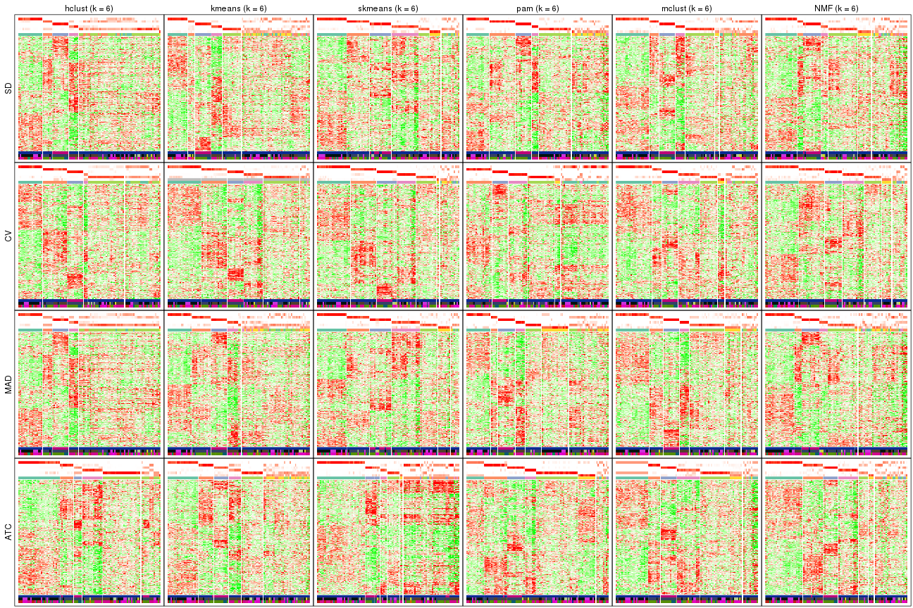
The statistics used for measuring the stability of consensus partitioning. (How are they defined?)
get_stats(res_list, k = 2)
#> k 1-PAC mean_silhouette concordance area_increased Rand Jaccard
#> SD:NMF 2 0.573 0.814 0.911 0.475 0.498 0.498
#> CV:NMF 2 0.901 0.913 0.965 0.500 0.502 0.502
#> MAD:NMF 2 0.633 0.866 0.929 0.487 0.495 0.495
#> ATC:NMF 2 0.999 0.953 0.981 0.504 0.497 0.497
#> SD:skmeans 2 0.884 0.912 0.965 0.503 0.497 0.497
#> CV:skmeans 2 1.000 0.949 0.980 0.505 0.495 0.495
#> MAD:skmeans 2 0.866 0.926 0.967 0.503 0.495 0.495
#> ATC:skmeans 2 1.000 0.949 0.980 0.505 0.495 0.495
#> SD:mclust 2 0.718 0.827 0.929 0.309 0.751 0.751
#> CV:mclust 2 0.595 0.721 0.866 0.339 0.779 0.779
#> MAD:mclust 2 0.708 0.818 0.925 0.323 0.765 0.765
#> ATC:mclust 2 0.391 0.545 0.820 0.387 0.642 0.642
#> SD:kmeans 2 0.470 0.837 0.899 0.451 0.504 0.504
#> CV:kmeans 2 0.513 0.111 0.587 0.442 0.962 0.962
#> MAD:kmeans 2 0.750 0.843 0.926 0.483 0.496 0.496
#> ATC:kmeans 2 0.626 0.110 0.577 0.465 0.908 0.908
#> SD:pam 2 0.443 0.566 0.774 0.363 0.751 0.751
#> CV:pam 2 0.338 0.683 0.784 0.351 0.765 0.765
#> MAD:pam 2 0.329 0.642 0.798 0.407 0.497 0.497
#> ATC:pam 2 0.983 0.928 0.968 0.413 0.586 0.586
#> SD:hclust 2 0.284 0.595 0.738 0.358 0.711 0.711
#> CV:hclust 2 0.344 0.808 0.880 0.435 0.532 0.532
#> MAD:hclust 2 0.208 0.636 0.812 0.398 0.543 0.543
#> ATC:hclust 2 0.501 0.816 0.865 0.420 0.603 0.603
get_stats(res_list, k = 3)
#> k 1-PAC mean_silhouette concordance area_increased Rand Jaccard
#> SD:NMF 3 0.842 0.894 0.954 0.348 0.782 0.595
#> CV:NMF 3 0.898 0.900 0.959 0.276 0.837 0.682
#> MAD:NMF 3 0.880 0.897 0.958 0.319 0.761 0.561
#> ATC:NMF 3 0.637 0.720 0.836 0.274 0.812 0.638
#> SD:skmeans 3 0.747 0.771 0.886 0.316 0.690 0.462
#> CV:skmeans 3 0.943 0.913 0.965 0.286 0.784 0.593
#> MAD:skmeans 3 0.734 0.674 0.857 0.317 0.739 0.520
#> ATC:skmeans 3 0.901 0.918 0.962 0.253 0.844 0.694
#> SD:mclust 3 0.345 0.494 0.765 0.861 0.609 0.490
#> CV:mclust 3 0.927 0.927 0.965 0.640 0.671 0.577
#> MAD:mclust 3 0.272 0.446 0.724 0.797 0.625 0.513
#> ATC:mclust 3 0.694 0.727 0.883 0.562 0.638 0.475
#> SD:kmeans 3 0.562 0.798 0.872 0.348 0.677 0.476
#> CV:kmeans 3 0.712 0.831 0.898 0.320 0.476 0.460
#> MAD:kmeans 3 0.558 0.717 0.835 0.289 0.726 0.530
#> ATC:kmeans 3 0.884 0.957 0.967 0.360 0.378 0.343
#> SD:pam 3 0.695 0.749 0.903 0.676 0.621 0.500
#> CV:pam 3 0.528 0.691 0.850 0.675 0.605 0.495
#> MAD:pam 3 0.715 0.757 0.906 0.508 0.759 0.567
#> ATC:pam 3 0.912 0.892 0.959 0.558 0.763 0.595
#> SD:hclust 3 0.207 0.533 0.680 0.346 0.529 0.491
#> CV:hclust 3 0.430 0.780 0.859 0.168 0.938 0.889
#> MAD:hclust 3 0.222 0.535 0.772 0.347 0.763 0.616
#> ATC:hclust 3 0.694 0.821 0.914 0.535 0.737 0.564
get_stats(res_list, k = 4)
#> k 1-PAC mean_silhouette concordance area_increased Rand Jaccard
#> SD:NMF 4 0.823 0.850 0.935 0.1369 0.807 0.533
#> CV:NMF 4 0.948 0.885 0.956 0.1427 0.865 0.646
#> MAD:NMF 4 0.840 0.838 0.931 0.1349 0.820 0.552
#> ATC:NMF 4 0.878 0.876 0.941 0.1256 0.865 0.644
#> SD:skmeans 4 0.894 0.868 0.948 0.1250 0.839 0.579
#> CV:skmeans 4 0.829 0.846 0.926 0.1362 0.835 0.574
#> MAD:skmeans 4 0.895 0.879 0.950 0.1237 0.855 0.604
#> ATC:skmeans 4 0.769 0.806 0.876 0.1259 0.888 0.706
#> SD:mclust 4 0.789 0.804 0.927 0.1922 0.747 0.475
#> CV:mclust 4 0.628 0.690 0.855 0.2272 0.831 0.634
#> MAD:mclust 4 0.744 0.774 0.909 0.2164 0.684 0.374
#> ATC:mclust 4 0.603 0.716 0.828 0.0731 0.819 0.614
#> SD:kmeans 4 0.786 0.802 0.905 0.1798 0.791 0.526
#> CV:kmeans 4 0.588 0.515 0.688 0.1926 0.880 0.746
#> MAD:kmeans 4 0.795 0.848 0.909 0.1646 0.795 0.529
#> ATC:kmeans 4 0.676 0.647 0.788 0.1291 0.923 0.798
#> SD:pam 4 0.585 0.473 0.769 0.1829 0.749 0.448
#> CV:pam 4 0.607 0.516 0.798 0.2152 0.841 0.625
#> MAD:pam 4 0.673 0.739 0.844 0.1798 0.780 0.499
#> ATC:pam 4 0.852 0.876 0.929 0.1181 0.882 0.678
#> SD:hclust 4 0.388 0.325 0.633 0.2688 0.703 0.568
#> CV:hclust 4 0.612 0.823 0.876 0.1201 0.955 0.914
#> MAD:hclust 4 0.360 0.635 0.797 0.1765 0.869 0.729
#> ATC:hclust 4 0.731 0.786 0.908 0.0374 0.994 0.983
get_stats(res_list, k = 5)
#> k 1-PAC mean_silhouette concordance area_increased Rand Jaccard
#> SD:NMF 5 0.677 0.609 0.786 0.0702 0.927 0.749
#> CV:NMF 5 0.722 0.686 0.837 0.0834 0.871 0.569
#> MAD:NMF 5 0.678 0.565 0.777 0.0712 0.957 0.849
#> ATC:NMF 5 0.748 0.698 0.849 0.0579 0.934 0.774
#> SD:skmeans 5 0.804 0.788 0.879 0.0570 0.946 0.795
#> CV:skmeans 5 0.878 0.858 0.923 0.0740 0.863 0.545
#> MAD:skmeans 5 0.805 0.728 0.844 0.0599 0.946 0.797
#> ATC:skmeans 5 0.814 0.782 0.886 0.0674 0.864 0.583
#> SD:mclust 5 0.781 0.780 0.901 0.1131 0.874 0.631
#> CV:mclust 5 0.679 0.578 0.812 0.1169 0.834 0.544
#> MAD:mclust 5 0.746 0.706 0.879 0.0911 0.875 0.610
#> ATC:mclust 5 0.597 0.451 0.705 0.1513 0.736 0.387
#> SD:kmeans 5 0.627 0.622 0.785 0.0794 0.909 0.684
#> CV:kmeans 5 0.668 0.788 0.852 0.0994 0.786 0.466
#> MAD:kmeans 5 0.643 0.621 0.778 0.0702 0.907 0.677
#> ATC:kmeans 5 0.680 0.634 0.760 0.0709 0.932 0.791
#> SD:pam 5 0.824 0.803 0.896 0.0880 0.821 0.452
#> CV:pam 5 0.872 0.824 0.930 0.0988 0.856 0.551
#> MAD:pam 5 0.714 0.688 0.846 0.0857 0.873 0.586
#> ATC:pam 5 0.928 0.881 0.951 0.0678 0.952 0.825
#> SD:hclust 5 0.473 0.580 0.802 0.0656 0.661 0.405
#> CV:hclust 5 0.595 0.787 0.885 0.0206 0.986 0.971
#> MAD:hclust 5 0.468 0.581 0.773 0.0589 0.986 0.963
#> ATC:hclust 5 0.702 0.794 0.879 0.0681 0.966 0.899
get_stats(res_list, k = 6)
#> k 1-PAC mean_silhouette concordance area_increased Rand Jaccard
#> SD:NMF 6 0.694 0.615 0.789 0.0473 0.886 0.574
#> CV:NMF 6 0.734 0.724 0.833 0.0458 0.945 0.746
#> MAD:NMF 6 0.684 0.581 0.740 0.0447 0.876 0.560
#> ATC:NMF 6 0.734 0.621 0.789 0.0481 0.908 0.653
#> SD:skmeans 6 0.810 0.748 0.856 0.0485 0.932 0.704
#> CV:skmeans 6 0.824 0.763 0.876 0.0380 0.969 0.852
#> MAD:skmeans 6 0.809 0.782 0.871 0.0461 0.912 0.632
#> ATC:skmeans 6 0.777 0.545 0.775 0.0314 0.943 0.784
#> SD:mclust 6 0.718 0.625 0.796 0.0547 0.932 0.737
#> CV:mclust 6 0.723 0.623 0.820 0.0460 0.897 0.634
#> MAD:mclust 6 0.719 0.693 0.788 0.0537 0.917 0.671
#> ATC:mclust 6 0.655 0.675 0.675 0.0215 0.839 0.433
#> SD:kmeans 6 0.648 0.493 0.674 0.0469 0.878 0.519
#> CV:kmeans 6 0.734 0.726 0.807 0.0454 0.973 0.882
#> MAD:kmeans 6 0.674 0.515 0.710 0.0479 0.877 0.517
#> ATC:kmeans 6 0.678 0.538 0.690 0.0513 0.860 0.518
#> SD:pam 6 0.742 0.682 0.835 0.0399 0.948 0.763
#> CV:pam 6 0.795 0.627 0.848 0.0350 0.952 0.787
#> MAD:pam 6 0.721 0.644 0.819 0.0434 0.950 0.772
#> ATC:pam 6 0.856 0.800 0.876 0.0399 0.953 0.799
#> SD:hclust 6 0.494 0.427 0.637 0.1143 0.846 0.612
#> CV:hclust 6 0.588 0.670 0.828 0.2581 0.790 0.553
#> MAD:hclust 6 0.493 0.482 0.705 0.0808 0.851 0.643
#> ATC:hclust 6 0.766 0.675 0.861 0.0492 0.943 0.815
Following heatmap plots the partition for each combination of methods and the lightness correspond to the silhouette scores for samples in each method. On top the consensus subgroup is inferred from all methods by taking the mean silhouette scores as weight.
collect_stats(res_list, k = 2)
collect_stats(res_list, k = 3)
collect_stats(res_list, k = 4)
collect_stats(res_list, k = 5)
collect_stats(res_list, k = 6)
Collect partitions from all methods:
collect_classes(res_list, k = 2)
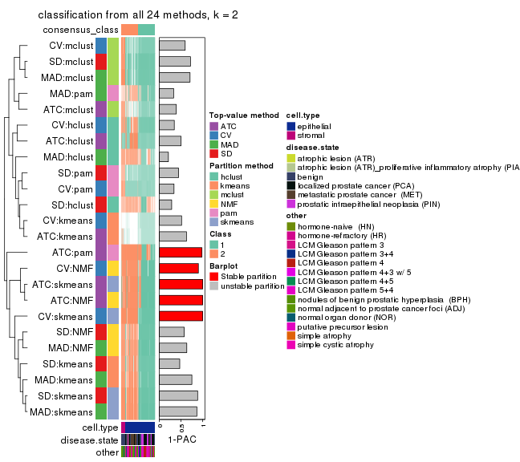
collect_classes(res_list, k = 3)
collect_classes(res_list, k = 4)
collect_classes(res_list, k = 5)
collect_classes(res_list, k = 6)
Overlap of top rows from different top-row methods:
top_rows_overlap(res_list, top_n = 1000, method = "euler")
top_rows_overlap(res_list, top_n = 2000, method = "euler")
top_rows_overlap(res_list, top_n = 3000, method = "euler")

top_rows_overlap(res_list, top_n = 4000, method = "euler")
top_rows_overlap(res_list, top_n = 5000, method = "euler")
Also visualize the correspondance of rankings between different top-row methods:
top_rows_overlap(res_list, top_n = 1000, method = "correspondance")
top_rows_overlap(res_list, top_n = 2000, method = "correspondance")
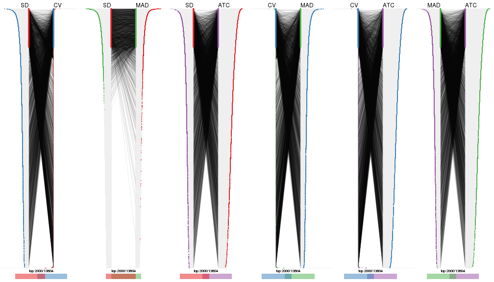
top_rows_overlap(res_list, top_n = 3000, method = "correspondance")
top_rows_overlap(res_list, top_n = 4000, method = "correspondance")
top_rows_overlap(res_list, top_n = 5000, method = "correspondance")
Heatmaps of the top rows:
top_rows_heatmap(res_list, top_n = 1000)
top_rows_heatmap(res_list, top_n = 2000)
top_rows_heatmap(res_list, top_n = 3000)
top_rows_heatmap(res_list, top_n = 4000)
top_rows_heatmap(res_list, top_n = 5000)
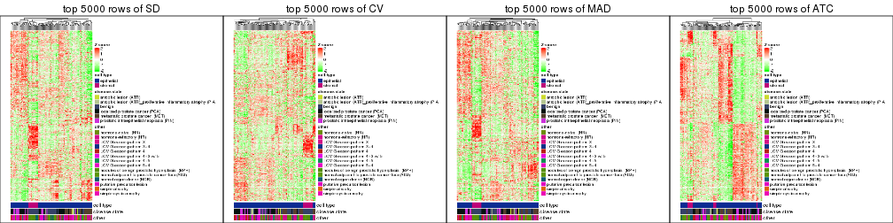
Test correlation between subgroups and known annotations. If the known annotation is numeric, one-way ANOVA test is applied, and if the known annotation is discrete, chi-squared contingency table test is applied.
test_to_known_factors(res_list, k = 2)
#> n cell.type(p) disease.state(p) other(p) k
#> SD:NMF 94 1.36e-04 1.35e-08 3.64e-05 2
#> CV:NMF 99 2.92e-02 2.18e-07 6.35e-05 2
#> MAD:NMF 100 4.07e-04 3.72e-08 4.56e-05 2
#> ATC:NMF 101 2.40e-01 5.51e-06 6.13e-04 2
#> SD:skmeans 99 3.46e-04 9.29e-08 1.20e-04 2
#> CV:skmeans 100 7.12e-04 4.06e-07 7.37e-05 2
#> MAD:skmeans 101 4.76e-04 4.36e-08 6.52e-05 2
#> ATC:skmeans 101 1.17e-01 5.51e-06 7.87e-04 2
#> SD:mclust 93 1.92e-18 1.93e-04 1.17e-05 2
#> CV:mclust 78 4.59e-17 8.13e-05 1.76e-04 2
#> MAD:mclust 91 1.13e-16 1.62e-04 9.35e-05 2
#> ATC:mclust 74 8.95e-12 5.04e-04 1.49e-03 2
#> SD:kmeans 94 1.36e-04 9.18e-08 1.68e-04 2
#> CV:kmeans 0 NA NA NA 2
#> MAD:kmeans 99 2.54e-04 1.57e-08 7.54e-05 2
#> ATC:kmeans 4 NA NA NA 2
#> SD:pam 100 9.42e-20 5.90e-05 2.43e-06 2
#> CV:pam 104 6.18e-19 1.56e-04 5.75e-07 2
#> MAD:pam 91 9.88e-03 1.01e-07 1.70e-05 2
#> ATC:pam 99 7.26e-02 6.16e-07 1.72e-04 2
#> SD:hclust 82 1.26e-01 6.12e-09 2.44e-06 2
#> CV:hclust 99 2.94e-06 1.60e-07 3.59e-05 2
#> MAD:hclust 90 3.59e-02 6.92e-11 1.48e-07 2
#> ATC:hclust 104 2.31e-01 6.47e-05 3.49e-04 2
test_to_known_factors(res_list, k = 3)
#> n cell.type(p) disease.state(p) other(p) k
#> SD:NMF 101 5.43e-12 5.49e-09 2.76e-08 3
#> CV:NMF 99 4.98e-15 1.98e-09 7.17e-07 3
#> MAD:NMF 99 9.69e-12 2.05e-09 1.22e-07 3
#> ATC:NMF 94 2.24e-02 1.50e-07 3.82e-05 3
#> SD:skmeans 84 8.65e-09 1.09e-07 4.66e-06 3
#> CV:skmeans 99 4.19e-11 5.27e-09 1.87e-06 3
#> MAD:skmeans 90 1.88e-05 1.72e-10 8.43e-08 3
#> ATC:skmeans 102 6.92e-12 6.59e-08 8.61e-07 3
#> SD:mclust 60 9.36e-14 9.25e-14 8.80e-12 3
#> CV:mclust 104 2.40e-21 3.14e-09 1.09e-08 3
#> MAD:mclust 37 9.24e-09 8.17e-07 8.60e-06 3
#> ATC:mclust 86 5.11e-13 9.53e-09 1.01e-06 3
#> SD:kmeans 100 1.93e-22 6.96e-12 1.31e-09 3
#> CV:kmeans 96 1.43e-21 1.48e-08 1.22e-07 3
#> MAD:kmeans 101 1.17e-22 3.56e-11 7.58e-09 3
#> ATC:kmeans 104 6.50e-03 6.91e-08 1.40e-05 3
#> SD:pam 88 3.92e-18 4.19e-09 9.09e-09 3
#> CV:pam 88 7.78e-20 2.83e-09 3.60e-09 3
#> MAD:pam 86 9.88e-18 1.32e-08 4.91e-08 3
#> ATC:pam 96 3.09e-02 7.50e-07 2.25e-04 3
#> SD:hclust 66 4.66e-15 2.94e-06 3.17e-05 3
#> CV:hclust 100 5.10e-07 1.38e-08 5.72e-07 3
#> MAD:hclust 79 1.12e-12 6.02e-07 1.55e-06 3
#> ATC:hclust 99 3.69e-04 5.82e-08 9.65e-06 3
test_to_known_factors(res_list, k = 4)
#> n cell.type(p) disease.state(p) other(p) k
#> SD:NMF 96 8.63e-15 3.88e-17 2.67e-13 4
#> CV:NMF 97 5.95e-15 4.54e-09 7.51e-07 4
#> MAD:NMF 96 9.37e-14 1.13e-15 1.25e-11 4
#> ATC:NMF 101 9.07e-14 1.96e-07 7.41e-08 4
#> SD:skmeans 97 6.60e-14 4.66e-13 1.06e-09 4
#> CV:skmeans 100 2.31e-14 1.12e-12 3.77e-08 4
#> MAD:skmeans 98 4.65e-14 4.77e-13 8.97e-10 4
#> ATC:skmeans 99 1.64e-13 6.83e-09 1.89e-07 4
#> SD:mclust 91 1.34e-19 2.69e-13 2.17e-10 4
#> CV:mclust 84 4.25e-18 9.13e-10 8.56e-08 4
#> MAD:mclust 89 3.59e-19 1.15e-12 1.37e-10 4
#> ATC:mclust 91 1.34e-19 4.44e-09 4.83e-08 4
#> SD:kmeans 93 4.97e-20 2.02e-13 2.07e-11 4
#> CV:kmeans 63 2.09e-14 2.62e-06 1.10e-04 4
#> MAD:kmeans 98 4.18e-21 4.84e-15 5.47e-12 4
#> ATC:kmeans 88 4.09e-15 1.56e-06 4.56e-06 4
#> SD:pam 52 6.88e-11 2.95e-08 2.72e-07 4
#> CV:pam 66 3.07e-14 1.04e-07 6.67e-07 4
#> MAD:pam 96 7.32e-19 1.85e-09 5.23e-08 4
#> ATC:pam 99 5.56e-16 2.48e-09 3.67e-08 4
#> SD:hclust 41 1.25e-09 3.21e-03 5.17e-03 4
#> CV:hclust 98 4.18e-21 6.72e-09 9.47e-08 4
#> MAD:hclust 80 3.07e-17 2.86e-12 5.93e-09 4
#> ATC:hclust 95 6.30e-04 2.02e-08 4.93e-06 4
test_to_known_factors(res_list, k = 5)
#> n cell.type(p) disease.state(p) other(p) k
#> SD:NMF 68 4.10e-14 4.69e-07 7.21e-07 5
#> CV:NMF 80 1.64e-12 2.28e-07 7.07e-08 5
#> MAD:NMF 74 1.69e-14 8.70e-21 3.99e-17 5
#> ATC:NMF 87 9.89e-12 7.38e-08 7.69e-07 5
#> SD:skmeans 98 2.18e-14 3.43e-15 1.15e-11 5
#> CV:skmeans 98 1.44e-15 2.71e-10 2.14e-09 5
#> MAD:skmeans 87 2.46e-13 5.87e-15 3.59e-11 5
#> ATC:skmeans 95 1.40e-14 1.46e-08 1.38e-09 5
#> SD:mclust 93 3.03e-19 4.53e-15 9.25e-12 5
#> CV:mclust 69 6.99e-15 2.12e-08 1.07e-07 5
#> MAD:mclust 85 1.52e-17 4.12e-16 3.30e-12 5
#> ATC:mclust 49 2.29e-11 7.82e-13 4.98e-10 5
#> SD:kmeans 77 1.35e-16 1.30e-15 4.16e-13 5
#> CV:kmeans 99 1.61e-20 4.21e-09 5.48e-09 5
#> MAD:kmeans 80 1.74e-16 2.60e-13 5.72e-11 5
#> ATC:kmeans 86 3.61e-16 4.84e-08 2.02e-08 5
#> SD:pam 95 1.14e-19 6.12e-13 3.00e-08 5
#> CV:pam 90 3.46e-15 6.32e-07 1.85e-08 5
#> MAD:pam 81 3.78e-15 1.12e-16 2.00e-09 5
#> ATC:pam 98 4.15e-15 4.09e-10 1.08e-09 5
#> SD:hclust 74 5.93e-16 1.24e-09 8.48e-08 5
#> CV:hclust 91 1.74e-20 7.14e-08 1.59e-06 5
#> MAD:hclust 68 6.00e-14 1.55e-10 1.27e-08 5
#> ATC:hclust 95 1.59e-03 6.23e-08 3.61e-05 5
test_to_known_factors(res_list, k = 6)
#> n cell.type(p) disease.state(p) other(p) k
#> SD:NMF 78 6.63e-14 3.20e-19 4.07e-13 6
#> CV:NMF 93 8.35e-17 4.19e-09 1.26e-09 6
#> MAD:NMF 68 5.54e-12 3.91e-19 2.74e-17 6
#> ATC:NMF 80 2.83e-14 1.20e-09 2.03e-09 6
#> SD:skmeans 91 1.24e-12 1.41e-15 1.75e-13 6
#> CV:skmeans 90 1.48e-13 2.88e-10 1.43e-08 6
#> MAD:skmeans 98 9.86e-14 2.45e-17 2.02e-13 6
#> ATC:skmeans 63 4.30e-10 1.17e-06 3.93e-06 6
#> SD:mclust 76 5.75e-15 1.95e-13 1.50e-10 6
#> CV:mclust 80 8.39e-16 7.41e-11 3.61e-10 6
#> MAD:mclust 92 2.55e-18 1.12e-13 2.96e-10 6
#> ATC:mclust 93 1.57e-18 2.28e-10 6.26e-05 6
#> SD:kmeans 54 5.26e-11 4.84e-18 1.13e-11 6
#> CV:kmeans 97 4.28e-20 1.09e-08 1.40e-09 6
#> MAD:kmeans 54 5.26e-11 1.90e-16 6.41e-14 6
#> ATC:kmeans 70 5.07e-13 1.44e-11 6.31e-09 6
#> SD:pam 77 7.52e-16 2.21e-17 2.79e-11 6
#> CV:pam 69 1.98e-11 1.22e-02 1.89e-04 6
#> MAD:pam 75 2.51e-13 1.38e-17 7.61e-10 6
#> ATC:pam 95 5.94e-14 2.46e-08 2.59e-07 6
#> SD:hclust 44 1.51e-09 2.43e-14 1.69e-10 6
#> CV:hclust 78 4.62e-16 2.48e-08 2.26e-08 6
#> MAD:hclust 44 1.51e-09 2.43e-14 1.69e-10 6
#> ATC:hclust 90 6.03e-16 3.72e-08 8.70e-07 6
The object with results only for a single top-value method and a single partition method can be extracted as:
res = res_list["SD", "hclust"]
# you can also extract it by
# res = res_list["SD:hclust"]
A summary of res and all the functions that can be applied to it:
res
#> A 'ConsensusPartition' object with k = 2, 3, 4, 5, 6.
#> On a matrix with 13604 rows and 104 columns.
#> Top rows (1000, 2000, 3000, 4000, 5000) are extracted by 'SD' method.
#> Subgroups are detected by 'hclust' method.
#> Performed in total 1250 partitions by row resampling.
#> Best k for subgroups seems to be 2.
#>
#> Following methods can be applied to this 'ConsensusPartition' object:
#> [1] "cola_report" "collect_classes" "collect_plots"
#> [4] "collect_stats" "colnames" "compare_signatures"
#> [7] "consensus_heatmap" "dimension_reduction" "functional_enrichment"
#> [10] "get_anno_col" "get_anno" "get_classes"
#> [13] "get_consensus" "get_matrix" "get_membership"
#> [16] "get_param" "get_signatures" "get_stats"
#> [19] "is_best_k" "is_stable_k" "membership_heatmap"
#> [22] "ncol" "nrow" "plot_ecdf"
#> [25] "rownames" "select_partition_number" "show"
#> [28] "suggest_best_k" "test_to_known_factors"
collect_plots() function collects all the plots made from res for all k (number of partitions)
into one single page to provide an easy and fast comparison between different k.
collect_plots(res)
The plots are:
k and the heatmap of
predicted classes for each k.k.k.k.All the plots in panels can be made by individual functions and they are plotted later in this section.
select_partition_number() produces several plots showing different
statistics for choosing “optimized” k. There are following statistics:
k;k, the area increased is defined as \(A_k - A_{k-1}\).The detailed explanations of these statistics can be found in the cola vignette.
Generally speaking, lower PAC score, higher mean silhouette score or higher
concordance corresponds to better partition. Rand index and Jaccard index
measure how similar the current partition is compared to partition with k-1.
If they are too similar, we won't accept k is better than k-1.
select_partition_number(res)
The numeric values for all these statistics can be obtained by get_stats().
get_stats(res)
#> k 1-PAC mean_silhouette concordance area_increased Rand Jaccard
#> 2 2 0.284 0.595 0.738 0.3577 0.711 0.711
#> 3 3 0.207 0.533 0.680 0.3461 0.529 0.491
#> 4 4 0.388 0.325 0.633 0.2688 0.703 0.568
#> 5 5 0.473 0.580 0.802 0.0656 0.661 0.405
#> 6 6 0.494 0.427 0.637 0.1143 0.846 0.612
suggest_best_k() suggests the best \(k\) based on these statistics. The rules are as follows:
suggest_best_k(res)
#> [1] 2
Following shows the table of the partitions (You need to click the show/hide
code output link to see it). The membership matrix (columns with name p*)
is inferred by
clue::cl_consensus()
function with the SE method. Basically the value in the membership matrix
represents the probability to belong to a certain group. The finall class
label for an item is determined with the group with highest probability it
belongs to.
In get_classes() function, the entropy is calculated from the membership
matrix and the silhouette score is calculated from the consensus matrix.
cbind(get_classes(res, k = 2), get_membership(res, k = 2))
#> class entropy silhouette p1 p2
#> GSM141334 2 0.3114 0.668 0.056 0.944
#> GSM141335 2 0.2603 0.670 0.044 0.956
#> GSM141336 2 0.2236 0.696 0.036 0.964
#> GSM141337 2 0.2603 0.670 0.044 0.956
#> GSM141184 2 0.2423 0.673 0.040 0.960
#> GSM141185 2 0.2423 0.694 0.040 0.960
#> GSM141186 2 0.3584 0.691 0.068 0.932
#> GSM141243 2 0.3431 0.694 0.064 0.936
#> GSM141244 2 0.2423 0.673 0.040 0.960
#> GSM141246 2 0.2236 0.676 0.036 0.964
#> GSM141247 2 0.2236 0.696 0.036 0.964
#> GSM141248 2 0.2603 0.670 0.044 0.956
#> GSM141249 2 0.8955 0.137 0.312 0.688
#> GSM141258 2 0.2423 0.694 0.040 0.960
#> GSM141259 2 0.2423 0.697 0.040 0.960
#> GSM141260 2 0.1414 0.696 0.020 0.980
#> GSM141261 2 0.3274 0.693 0.060 0.940
#> GSM141262 2 0.2043 0.695 0.032 0.968
#> GSM141263 2 0.2423 0.697 0.040 0.960
#> GSM141338 2 0.2236 0.696 0.036 0.964
#> GSM141339 2 0.6247 0.548 0.156 0.844
#> GSM141340 2 0.8016 0.377 0.244 0.756
#> GSM141265 2 0.1633 0.696 0.024 0.976
#> GSM141267 2 0.3879 0.644 0.076 0.924
#> GSM141330 2 0.1633 0.696 0.024 0.976
#> GSM141266 2 0.2423 0.697 0.040 0.960
#> GSM141264 2 0.1633 0.696 0.024 0.976
#> GSM141341 2 0.4161 0.687 0.084 0.916
#> GSM141342 2 0.8909 0.551 0.308 0.692
#> GSM141343 2 0.4161 0.687 0.084 0.916
#> GSM141356 2 0.6343 0.656 0.160 0.840
#> GSM141357 2 0.7745 0.529 0.228 0.772
#> GSM141358 2 0.4298 0.683 0.088 0.912
#> GSM141359 2 0.4298 0.683 0.088 0.912
#> GSM141360 2 0.7745 0.529 0.228 0.772
#> GSM141361 2 0.7745 0.529 0.228 0.772
#> GSM141362 2 0.4298 0.683 0.088 0.912
#> GSM141363 2 0.3879 0.693 0.076 0.924
#> GSM141364 2 0.7602 0.521 0.220 0.780
#> GSM141365 2 0.6343 0.656 0.160 0.840
#> GSM141366 2 0.8909 0.551 0.308 0.692
#> GSM141367 1 0.9909 -0.148 0.556 0.444
#> GSM141368 2 0.8909 0.551 0.308 0.692
#> GSM141369 2 0.8813 0.557 0.300 0.700
#> GSM141370 2 0.8813 0.557 0.300 0.700
#> GSM141371 2 0.8813 0.557 0.300 0.700
#> GSM141372 2 0.8813 0.557 0.300 0.700
#> GSM141373 2 0.3114 0.663 0.056 0.944
#> GSM141374 2 0.9795 -0.380 0.416 0.584
#> GSM141375 2 0.2948 0.696 0.052 0.948
#> GSM141376 1 0.9491 0.919 0.632 0.368
#> GSM141377 2 0.8861 0.172 0.304 0.696
#> GSM141378 2 0.8443 0.297 0.272 0.728
#> GSM141380 1 0.9491 0.919 0.632 0.368
#> GSM141387 1 0.9491 0.919 0.632 0.368
#> GSM141395 2 0.0672 0.688 0.008 0.992
#> GSM141397 2 0.1633 0.696 0.024 0.976
#> GSM141398 2 0.2236 0.696 0.036 0.964
#> GSM141401 2 0.7745 0.416 0.228 0.772
#> GSM141399 2 0.7745 0.416 0.228 0.772
#> GSM141379 1 0.9491 0.919 0.632 0.368
#> GSM141381 1 0.9491 0.919 0.632 0.368
#> GSM141383 1 0.9491 0.919 0.632 0.368
#> GSM141384 1 0.9491 0.919 0.632 0.368
#> GSM141385 2 0.7299 0.467 0.204 0.796
#> GSM141388 1 0.9944 0.781 0.544 0.456
#> GSM141389 1 0.9944 0.781 0.544 0.456
#> GSM141391 2 0.8661 0.240 0.288 0.712
#> GSM141394 2 0.0672 0.688 0.008 0.992
#> GSM141396 2 0.8443 0.297 0.272 0.728
#> GSM141403 2 0.7299 0.467 0.204 0.796
#> GSM141404 2 0.7299 0.467 0.204 0.796
#> GSM141386 2 0.7745 0.416 0.228 0.772
#> GSM141382 1 0.9580 0.906 0.620 0.380
#> GSM141390 1 0.9944 0.781 0.544 0.456
#> GSM141393 2 0.8443 0.296 0.272 0.728
#> GSM141400 2 0.8499 0.282 0.276 0.724
#> GSM141402 2 0.4562 0.686 0.096 0.904
#> GSM141392 2 0.8267 0.333 0.260 0.740
#> GSM141405 1 0.9522 0.915 0.628 0.372
#> GSM141406 2 0.2043 0.695 0.032 0.968
#> GSM141407 1 0.9491 0.919 0.632 0.368
#> GSM141408 1 0.9491 0.919 0.632 0.368
#> GSM141409 2 0.7745 0.416 0.228 0.772
#> GSM141410 1 0.9491 0.919 0.632 0.368
#> GSM141411 2 0.9000 0.118 0.316 0.684
#> GSM141412 1 0.9491 0.919 0.632 0.368
#> GSM141413 2 0.7745 0.416 0.228 0.772
#> GSM141414 2 0.7745 0.416 0.228 0.772
#> GSM141415 1 0.9491 0.919 0.632 0.368
#> GSM141416 2 0.3431 0.661 0.064 0.936
#> GSM141417 2 0.9000 0.118 0.316 0.684
#> GSM141420 2 0.9491 0.504 0.368 0.632
#> GSM141421 2 0.9491 0.504 0.368 0.632
#> GSM141422 2 0.9491 0.504 0.368 0.632
#> GSM141423 2 0.9491 0.504 0.368 0.632
#> GSM141424 2 0.9491 0.504 0.368 0.632
#> GSM141427 2 0.9491 0.504 0.368 0.632
#> GSM141428 2 0.9491 0.504 0.368 0.632
#> GSM141418 2 0.9491 0.504 0.368 0.632
#> GSM141419 2 0.9491 0.504 0.368 0.632
#> GSM141425 2 0.9491 0.504 0.368 0.632
#> GSM141426 2 0.9491 0.504 0.368 0.632
#> GSM141429 2 0.9491 0.504 0.368 0.632
cbind(get_classes(res, k = 3), get_membership(res, k = 3))
#> class entropy silhouette p1 p2 p3
#> GSM141334 1 0.1267 0.578 0.972 0.004 0.024
#> GSM141335 1 0.0829 0.576 0.984 0.004 0.012
#> GSM141336 1 0.2845 0.530 0.920 0.012 0.068
#> GSM141337 1 0.0829 0.576 0.984 0.004 0.012
#> GSM141184 1 0.0983 0.572 0.980 0.004 0.016
#> GSM141185 1 0.2301 0.538 0.936 0.004 0.060
#> GSM141186 1 0.6974 0.310 0.728 0.168 0.104
#> GSM141243 1 0.7129 0.278 0.716 0.180 0.104
#> GSM141244 1 0.0747 0.572 0.984 0.000 0.016
#> GSM141246 1 0.1950 0.570 0.952 0.008 0.040
#> GSM141247 1 0.2845 0.530 0.920 0.012 0.068
#> GSM141248 1 0.0829 0.576 0.984 0.004 0.012
#> GSM141249 1 0.7633 0.555 0.684 0.184 0.132
#> GSM141258 1 0.2301 0.538 0.936 0.004 0.060
#> GSM141259 1 0.4652 0.472 0.856 0.064 0.080
#> GSM141260 1 0.3583 0.518 0.900 0.044 0.056
#> GSM141261 1 0.7199 0.271 0.712 0.180 0.108
#> GSM141262 1 0.2496 0.530 0.928 0.004 0.068
#> GSM141263 1 0.4652 0.472 0.856 0.064 0.080
#> GSM141338 1 0.2845 0.530 0.920 0.012 0.068
#> GSM141339 1 0.5173 0.586 0.816 0.148 0.036
#> GSM141340 1 0.6886 0.576 0.728 0.184 0.088
#> GSM141265 1 0.3683 0.514 0.896 0.044 0.060
#> GSM141267 1 0.2313 0.585 0.944 0.024 0.032
#> GSM141330 1 0.3683 0.514 0.896 0.044 0.060
#> GSM141266 1 0.4652 0.472 0.856 0.064 0.080
#> GSM141264 1 0.3683 0.514 0.896 0.044 0.060
#> GSM141341 1 0.7482 0.213 0.688 0.204 0.108
#> GSM141342 2 0.7772 0.556 0.132 0.672 0.196
#> GSM141343 1 0.7482 0.213 0.688 0.204 0.108
#> GSM141356 1 0.6007 0.364 0.768 0.184 0.048
#> GSM141357 1 0.5408 0.579 0.812 0.136 0.052
#> GSM141358 1 0.5471 0.426 0.812 0.128 0.060
#> GSM141359 1 0.5471 0.426 0.812 0.128 0.060
#> GSM141360 1 0.5408 0.579 0.812 0.136 0.052
#> GSM141361 1 0.5408 0.579 0.812 0.136 0.052
#> GSM141362 1 0.5471 0.426 0.812 0.128 0.060
#> GSM141363 1 0.6860 0.323 0.732 0.176 0.092
#> GSM141364 1 0.5207 0.588 0.824 0.124 0.052
#> GSM141365 1 0.6007 0.364 0.768 0.184 0.048
#> GSM141366 2 0.7772 0.556 0.132 0.672 0.196
#> GSM141367 2 0.7844 0.304 0.084 0.624 0.292
#> GSM141368 2 0.7772 0.556 0.132 0.672 0.196
#> GSM141369 2 0.9293 0.496 0.400 0.440 0.160
#> GSM141370 2 0.9293 0.496 0.400 0.440 0.160
#> GSM141371 2 0.9293 0.496 0.400 0.440 0.160
#> GSM141372 2 0.9293 0.496 0.400 0.440 0.160
#> GSM141373 1 0.1647 0.581 0.960 0.004 0.036
#> GSM141374 1 0.8977 0.480 0.564 0.204 0.232
#> GSM141375 1 0.5497 0.533 0.812 0.124 0.064
#> GSM141376 1 0.9996 0.303 0.344 0.320 0.336
#> GSM141377 1 0.7572 0.559 0.688 0.184 0.128
#> GSM141378 1 0.7059 0.565 0.716 0.192 0.092
#> GSM141380 1 0.9993 0.307 0.348 0.316 0.336
#> GSM141387 1 0.9996 0.303 0.344 0.320 0.336
#> GSM141395 1 0.2096 0.548 0.944 0.004 0.052
#> GSM141397 1 0.3683 0.514 0.896 0.044 0.060
#> GSM141398 1 0.2845 0.530 0.920 0.012 0.068
#> GSM141401 1 0.6192 0.581 0.764 0.176 0.060
#> GSM141399 1 0.5816 0.588 0.788 0.156 0.056
#> GSM141379 1 0.9989 0.310 0.352 0.312 0.336
#> GSM141381 1 0.9993 0.307 0.348 0.316 0.336
#> GSM141383 1 0.9996 0.303 0.344 0.320 0.336
#> GSM141384 1 0.9996 0.303 0.344 0.320 0.336
#> GSM141385 1 0.4945 0.599 0.840 0.104 0.056
#> GSM141388 1 0.9767 0.378 0.432 0.248 0.320
#> GSM141389 1 0.9767 0.378 0.432 0.248 0.320
#> GSM141391 1 0.7297 0.562 0.704 0.188 0.108
#> GSM141394 1 0.2096 0.548 0.944 0.004 0.052
#> GSM141396 1 0.7059 0.565 0.716 0.192 0.092
#> GSM141403 1 0.4836 0.601 0.848 0.080 0.072
#> GSM141404 1 0.4836 0.601 0.848 0.080 0.072
#> GSM141386 1 0.6044 0.583 0.772 0.172 0.056
#> GSM141382 1 0.9932 0.331 0.384 0.284 0.332
#> GSM141390 1 0.9767 0.378 0.432 0.248 0.320
#> GSM141393 1 0.6309 0.592 0.772 0.128 0.100
#> GSM141400 1 0.6383 0.591 0.768 0.128 0.104
#> GSM141402 1 0.7543 0.199 0.680 0.216 0.104
#> GSM141392 1 0.6091 0.594 0.784 0.124 0.092
#> GSM141405 1 0.9993 0.309 0.348 0.316 0.336
#> GSM141406 1 0.3998 0.540 0.884 0.060 0.056
#> GSM141407 1 0.9996 0.303 0.344 0.320 0.336
#> GSM141408 1 0.9996 0.303 0.344 0.320 0.336
#> GSM141409 1 0.6044 0.585 0.772 0.172 0.056
#> GSM141410 1 0.9996 0.303 0.344 0.320 0.336
#> GSM141411 1 0.7739 0.550 0.676 0.188 0.136
#> GSM141412 1 0.9996 0.303 0.344 0.320 0.336
#> GSM141413 1 0.6151 0.579 0.764 0.180 0.056
#> GSM141414 1 0.6151 0.579 0.764 0.180 0.056
#> GSM141415 1 0.9996 0.303 0.344 0.320 0.336
#> GSM141416 1 0.1525 0.582 0.964 0.004 0.032
#> GSM141417 1 0.7739 0.550 0.676 0.188 0.136
#> GSM141420 3 0.5810 0.980 0.336 0.000 0.664
#> GSM141421 3 0.5810 0.980 0.336 0.000 0.664
#> GSM141422 3 0.5948 0.960 0.360 0.000 0.640
#> GSM141423 3 0.5810 0.980 0.336 0.000 0.664
#> GSM141424 3 0.5948 0.960 0.360 0.000 0.640
#> GSM141427 3 0.5810 0.980 0.336 0.000 0.664
#> GSM141428 3 0.5810 0.980 0.336 0.000 0.664
#> GSM141418 3 0.5968 0.955 0.364 0.000 0.636
#> GSM141419 3 0.5968 0.955 0.364 0.000 0.636
#> GSM141425 3 0.5810 0.980 0.336 0.000 0.664
#> GSM141426 3 0.5810 0.980 0.336 0.000 0.664
#> GSM141429 3 0.5810 0.980 0.336 0.000 0.664
cbind(get_classes(res, k = 4), get_membership(res, k = 4))
#> class entropy silhouette p1 p2 p3 p4
#> GSM141334 1 0.535 -0.3957 0.560 0.000 0.012 0.428
#> GSM141335 1 0.529 -0.3605 0.584 0.000 0.012 0.404
#> GSM141336 4 0.552 0.5848 0.412 0.000 0.020 0.568
#> GSM141337 1 0.529 -0.3605 0.584 0.000 0.012 0.404
#> GSM141184 1 0.532 -0.3812 0.572 0.000 0.012 0.416
#> GSM141185 4 0.553 0.5744 0.420 0.000 0.020 0.560
#> GSM141186 4 0.506 0.6104 0.272 0.020 0.004 0.704
#> GSM141243 4 0.479 0.5939 0.236 0.020 0.004 0.740
#> GSM141244 1 0.531 -0.3771 0.576 0.000 0.012 0.412
#> GSM141246 1 0.552 -0.3884 0.568 0.000 0.020 0.412
#> GSM141247 4 0.552 0.5848 0.412 0.000 0.020 0.568
#> GSM141248 1 0.529 -0.3605 0.584 0.000 0.012 0.404
#> GSM141249 1 0.247 0.4383 0.908 0.080 0.000 0.012
#> GSM141258 4 0.553 0.5744 0.420 0.000 0.020 0.560
#> GSM141259 4 0.543 0.5852 0.444 0.004 0.008 0.544
#> GSM141260 4 0.551 0.5387 0.488 0.000 0.016 0.496
#> GSM141261 4 0.476 0.5947 0.232 0.020 0.004 0.744
#> GSM141262 4 0.552 0.5852 0.412 0.000 0.020 0.568
#> GSM141263 4 0.543 0.5852 0.444 0.004 0.008 0.544
#> GSM141338 4 0.552 0.5848 0.412 0.000 0.020 0.568
#> GSM141339 1 0.410 0.2718 0.820 0.016 0.012 0.152
#> GSM141340 1 0.313 0.4006 0.896 0.040 0.012 0.052
#> GSM141265 4 0.551 0.5445 0.484 0.000 0.016 0.500
#> GSM141267 1 0.519 -0.2930 0.616 0.000 0.012 0.372
#> GSM141330 4 0.551 0.5445 0.484 0.000 0.016 0.500
#> GSM141266 4 0.543 0.5852 0.444 0.004 0.008 0.544
#> GSM141264 4 0.551 0.5445 0.484 0.000 0.016 0.500
#> GSM141341 4 0.501 0.5930 0.228 0.032 0.004 0.736
#> GSM141342 2 0.705 0.8547 0.000 0.444 0.120 0.436
#> GSM141343 4 0.501 0.5930 0.228 0.032 0.004 0.736
#> GSM141356 1 0.708 -0.5133 0.452 0.124 0.000 0.424
#> GSM141357 1 0.563 0.0332 0.696 0.072 0.000 0.232
#> GSM141358 4 0.689 0.5632 0.432 0.064 0.016 0.488
#> GSM141359 4 0.689 0.5632 0.432 0.064 0.016 0.488
#> GSM141360 1 0.563 0.0332 0.696 0.072 0.000 0.232
#> GSM141361 1 0.563 0.0332 0.696 0.072 0.000 0.232
#> GSM141362 4 0.689 0.5632 0.432 0.064 0.016 0.488
#> GSM141363 4 0.484 0.6022 0.256 0.016 0.004 0.724
#> GSM141364 1 0.543 0.0480 0.708 0.060 0.000 0.232
#> GSM141365 1 0.708 -0.5133 0.452 0.124 0.000 0.424
#> GSM141366 2 0.705 0.8547 0.000 0.444 0.120 0.436
#> GSM141367 2 0.639 0.5354 0.036 0.708 0.152 0.104
#> GSM141368 2 0.705 0.8547 0.000 0.444 0.120 0.436
#> GSM141369 4 0.543 -0.3833 0.040 0.260 0.004 0.696
#> GSM141370 4 0.543 -0.3833 0.040 0.260 0.004 0.696
#> GSM141371 4 0.543 -0.3833 0.040 0.260 0.004 0.696
#> GSM141372 4 0.543 -0.3833 0.040 0.260 0.004 0.696
#> GSM141373 1 0.544 -0.3502 0.588 0.004 0.012 0.396
#> GSM141374 1 0.398 0.4354 0.776 0.220 0.000 0.004
#> GSM141375 1 0.563 -0.3369 0.596 0.016 0.008 0.380
#> GSM141376 1 0.500 0.2282 0.512 0.488 0.000 0.000
#> GSM141377 1 0.327 0.4296 0.876 0.084 0.000 0.040
#> GSM141378 1 0.182 0.4380 0.936 0.060 0.000 0.004
#> GSM141380 1 0.513 0.2760 0.548 0.448 0.000 0.004
#> GSM141387 1 0.500 0.2220 0.508 0.492 0.000 0.000
#> GSM141395 1 0.574 -0.4557 0.536 0.000 0.028 0.436
#> GSM141397 4 0.551 0.5445 0.484 0.000 0.016 0.500
#> GSM141398 4 0.552 0.5848 0.412 0.000 0.020 0.568
#> GSM141401 1 0.139 0.3931 0.952 0.000 0.000 0.048
#> GSM141399 1 0.172 0.3789 0.936 0.000 0.000 0.064
#> GSM141379 1 0.495 0.2777 0.556 0.444 0.000 0.000
#> GSM141381 1 0.516 0.2445 0.520 0.476 0.000 0.004
#> GSM141383 1 0.500 0.2160 0.504 0.496 0.000 0.000
#> GSM141384 1 0.500 0.2160 0.504 0.496 0.000 0.000
#> GSM141385 1 0.394 0.2265 0.800 0.012 0.000 0.188
#> GSM141388 1 0.537 0.3794 0.636 0.340 0.000 0.024
#> GSM141389 1 0.537 0.3794 0.636 0.340 0.000 0.024
#> GSM141391 1 0.158 0.4362 0.948 0.048 0.000 0.004
#> GSM141394 1 0.574 -0.4557 0.536 0.000 0.028 0.436
#> GSM141396 1 0.182 0.4380 0.936 0.060 0.000 0.004
#> GSM141403 1 0.452 0.0881 0.736 0.012 0.000 0.252
#> GSM141404 1 0.452 0.0881 0.736 0.012 0.000 0.252
#> GSM141386 1 0.139 0.3910 0.952 0.000 0.000 0.048
#> GSM141382 1 0.596 0.3076 0.540 0.420 0.000 0.040
#> GSM141390 1 0.537 0.3794 0.636 0.340 0.000 0.024
#> GSM141393 1 0.414 0.3266 0.816 0.040 0.000 0.144
#> GSM141400 1 0.431 0.3321 0.808 0.048 0.000 0.144
#> GSM141402 4 0.492 0.5726 0.208 0.036 0.004 0.752
#> GSM141392 1 0.406 0.3080 0.816 0.032 0.000 0.152
#> GSM141405 1 0.549 0.2693 0.528 0.456 0.000 0.016
#> GSM141406 1 0.544 -0.5120 0.532 0.004 0.008 0.456
#> GSM141407 1 0.500 0.2330 0.516 0.484 0.000 0.000
#> GSM141408 1 0.500 0.2160 0.504 0.496 0.000 0.000
#> GSM141409 1 0.179 0.3768 0.932 0.000 0.000 0.068
#> GSM141410 1 0.500 0.2330 0.516 0.484 0.000 0.000
#> GSM141411 1 0.194 0.4402 0.924 0.076 0.000 0.000
#> GSM141412 1 0.500 0.2330 0.516 0.484 0.000 0.000
#> GSM141413 1 0.121 0.4038 0.964 0.004 0.000 0.032
#> GSM141414 1 0.121 0.4038 0.964 0.004 0.000 0.032
#> GSM141415 1 0.500 0.2330 0.516 0.484 0.000 0.000
#> GSM141416 1 0.526 -0.3324 0.596 0.000 0.012 0.392
#> GSM141417 1 0.227 0.4401 0.912 0.084 0.000 0.004
#> GSM141420 3 0.312 0.9813 0.092 0.000 0.880 0.028
#> GSM141421 3 0.312 0.9813 0.092 0.000 0.880 0.028
#> GSM141422 3 0.380 0.9634 0.096 0.000 0.848 0.056
#> GSM141423 3 0.312 0.9813 0.092 0.000 0.880 0.028
#> GSM141424 3 0.380 0.9634 0.096 0.000 0.848 0.056
#> GSM141427 3 0.312 0.9813 0.092 0.000 0.880 0.028
#> GSM141428 3 0.312 0.9813 0.092 0.000 0.880 0.028
#> GSM141418 3 0.387 0.9590 0.096 0.000 0.844 0.060
#> GSM141419 3 0.387 0.9590 0.096 0.000 0.844 0.060
#> GSM141425 3 0.312 0.9813 0.092 0.000 0.880 0.028
#> GSM141426 3 0.312 0.9813 0.092 0.000 0.880 0.028
#> GSM141429 3 0.312 0.9813 0.092 0.000 0.880 0.028
cbind(get_classes(res, k = 5), get_membership(res, k = 5))
#> class entropy silhouette p1 p2 p3 p4 p5
#> GSM141334 2 0.2464 0.6993 0.044 0.904 0.000 0.048 0.004
#> GSM141335 2 0.1285 0.6996 0.036 0.956 0.000 0.004 0.004
#> GSM141336 2 0.3544 0.6031 0.008 0.788 0.000 0.200 0.004
#> GSM141337 2 0.1285 0.6996 0.036 0.956 0.000 0.004 0.004
#> GSM141184 2 0.1153 0.7031 0.024 0.964 0.000 0.008 0.004
#> GSM141185 2 0.3439 0.6154 0.008 0.800 0.000 0.188 0.004
#> GSM141186 2 0.4714 0.3977 0.000 0.608 0.004 0.372 0.016
#> GSM141243 2 0.4499 0.3081 0.004 0.584 0.000 0.408 0.004
#> GSM141244 2 0.1026 0.7025 0.024 0.968 0.000 0.004 0.004
#> GSM141246 2 0.1404 0.7037 0.028 0.956 0.004 0.004 0.008
#> GSM141247 2 0.3544 0.6031 0.008 0.788 0.000 0.200 0.004
#> GSM141248 2 0.1285 0.6996 0.036 0.956 0.000 0.004 0.004
#> GSM141249 1 0.4542 0.2779 0.536 0.456 0.000 0.000 0.008
#> GSM141258 2 0.3439 0.6154 0.008 0.800 0.000 0.188 0.004
#> GSM141259 2 0.3055 0.6728 0.000 0.840 0.000 0.144 0.016
#> GSM141260 2 0.2241 0.7013 0.000 0.908 0.008 0.076 0.008
#> GSM141261 2 0.4714 0.3049 0.004 0.576 0.000 0.408 0.012
#> GSM141262 2 0.3352 0.6101 0.004 0.800 0.000 0.192 0.004
#> GSM141263 2 0.3055 0.6728 0.000 0.840 0.000 0.144 0.016
#> GSM141338 2 0.3509 0.6058 0.008 0.792 0.000 0.196 0.004
#> GSM141339 2 0.4742 0.3403 0.324 0.648 0.000 0.020 0.008
#> GSM141340 2 0.4504 0.0277 0.428 0.564 0.000 0.000 0.008
#> GSM141265 2 0.2518 0.6993 0.000 0.896 0.008 0.080 0.016
#> GSM141267 2 0.2054 0.6891 0.072 0.916 0.000 0.004 0.008
#> GSM141330 2 0.2518 0.6993 0.000 0.896 0.008 0.080 0.016
#> GSM141266 2 0.3055 0.6728 0.000 0.840 0.000 0.144 0.016
#> GSM141264 2 0.2518 0.6993 0.000 0.896 0.008 0.080 0.016
#> GSM141341 2 0.4708 0.2702 0.000 0.548 0.000 0.436 0.016
#> GSM141342 4 0.3508 0.4704 0.000 0.000 0.000 0.748 0.252
#> GSM141343 2 0.4708 0.2702 0.000 0.548 0.000 0.436 0.016
#> GSM141356 2 0.4501 0.5798 0.020 0.696 0.000 0.276 0.008
#> GSM141357 2 0.5179 0.5553 0.196 0.704 0.000 0.088 0.012
#> GSM141358 2 0.3732 0.6395 0.000 0.776 0.008 0.208 0.008
#> GSM141359 2 0.3732 0.6395 0.000 0.776 0.008 0.208 0.008
#> GSM141360 2 0.5179 0.5553 0.196 0.704 0.000 0.088 0.012
#> GSM141361 2 0.5179 0.5553 0.196 0.704 0.000 0.088 0.012
#> GSM141362 2 0.3732 0.6395 0.000 0.776 0.008 0.208 0.008
#> GSM141363 2 0.4621 0.3226 0.004 0.576 0.000 0.412 0.008
#> GSM141364 2 0.4918 0.5531 0.204 0.716 0.000 0.072 0.008
#> GSM141365 2 0.4501 0.5798 0.020 0.696 0.000 0.276 0.008
#> GSM141366 4 0.3508 0.4704 0.000 0.000 0.000 0.748 0.252
#> GSM141367 5 0.0963 0.0000 0.000 0.000 0.000 0.036 0.964
#> GSM141368 4 0.3508 0.4704 0.000 0.000 0.000 0.748 0.252
#> GSM141369 4 0.2179 0.7274 0.000 0.112 0.000 0.888 0.000
#> GSM141370 4 0.2179 0.7274 0.000 0.112 0.000 0.888 0.000
#> GSM141371 4 0.2179 0.7274 0.000 0.112 0.000 0.888 0.000
#> GSM141372 4 0.2179 0.7274 0.000 0.112 0.000 0.888 0.000
#> GSM141373 2 0.1717 0.7000 0.052 0.936 0.004 0.000 0.008
#> GSM141374 1 0.3774 0.5655 0.704 0.296 0.000 0.000 0.000
#> GSM141375 2 0.5227 0.6106 0.168 0.696 0.004 0.132 0.000
#> GSM141376 1 0.0324 0.6887 0.992 0.004 0.000 0.000 0.004
#> GSM141377 1 0.4700 0.2041 0.516 0.472 0.000 0.008 0.004
#> GSM141378 1 0.4549 0.2311 0.528 0.464 0.000 0.000 0.008
#> GSM141380 1 0.1341 0.7118 0.944 0.056 0.000 0.000 0.000
#> GSM141387 1 0.0451 0.6857 0.988 0.004 0.000 0.000 0.008
#> GSM141395 2 0.0981 0.7076 0.000 0.972 0.008 0.012 0.008
#> GSM141397 2 0.2518 0.6993 0.000 0.896 0.008 0.080 0.016
#> GSM141398 2 0.3544 0.6031 0.008 0.788 0.000 0.200 0.004
#> GSM141401 2 0.4630 0.1030 0.416 0.572 0.000 0.004 0.008
#> GSM141399 2 0.4436 0.1628 0.396 0.596 0.000 0.000 0.008
#> GSM141379 1 0.1410 0.7129 0.940 0.060 0.000 0.000 0.000
#> GSM141381 1 0.1082 0.7018 0.964 0.028 0.000 0.000 0.008
#> GSM141383 1 0.0290 0.6806 0.992 0.000 0.000 0.000 0.008
#> GSM141384 1 0.0290 0.6806 0.992 0.000 0.000 0.000 0.008
#> GSM141385 2 0.4423 0.4314 0.296 0.684 0.000 0.008 0.012
#> GSM141388 1 0.3439 0.6926 0.800 0.188 0.000 0.004 0.008
#> GSM141389 1 0.3439 0.6926 0.800 0.188 0.000 0.004 0.008
#> GSM141391 1 0.4559 0.1946 0.512 0.480 0.000 0.000 0.008
#> GSM141394 2 0.0981 0.7076 0.000 0.972 0.008 0.012 0.008
#> GSM141396 1 0.4549 0.2311 0.528 0.464 0.000 0.000 0.008
#> GSM141403 2 0.3974 0.5486 0.228 0.752 0.000 0.004 0.016
#> GSM141404 2 0.3974 0.5486 0.228 0.752 0.000 0.004 0.016
#> GSM141386 2 0.4473 0.1170 0.412 0.580 0.000 0.000 0.008
#> GSM141382 1 0.2722 0.6912 0.868 0.120 0.000 0.004 0.008
#> GSM141390 1 0.3439 0.6926 0.800 0.188 0.000 0.004 0.008
#> GSM141393 2 0.4723 0.2714 0.368 0.612 0.000 0.008 0.012
#> GSM141400 2 0.4747 0.2538 0.376 0.604 0.000 0.008 0.012
#> GSM141402 2 0.4595 0.1518 0.004 0.504 0.000 0.488 0.004
#> GSM141392 2 0.4669 0.3097 0.352 0.628 0.000 0.008 0.012
#> GSM141405 1 0.1430 0.7076 0.944 0.052 0.000 0.004 0.000
#> GSM141406 2 0.3136 0.7093 0.040 0.872 0.004 0.076 0.008
#> GSM141407 1 0.0798 0.6976 0.976 0.016 0.000 0.000 0.008
#> GSM141408 1 0.0290 0.6806 0.992 0.000 0.000 0.000 0.008
#> GSM141409 2 0.4699 0.1650 0.396 0.588 0.000 0.008 0.008
#> GSM141410 1 0.0798 0.6976 0.976 0.016 0.000 0.000 0.008
#> GSM141411 1 0.4533 0.2944 0.544 0.448 0.000 0.000 0.008
#> GSM141412 1 0.0798 0.6976 0.976 0.016 0.000 0.000 0.008
#> GSM141413 2 0.4510 0.0455 0.432 0.560 0.000 0.000 0.008
#> GSM141414 2 0.4510 0.0455 0.432 0.560 0.000 0.000 0.008
#> GSM141415 1 0.0798 0.6976 0.976 0.016 0.000 0.000 0.008
#> GSM141416 2 0.1717 0.6949 0.052 0.936 0.000 0.008 0.004
#> GSM141417 1 0.4522 0.3110 0.552 0.440 0.000 0.000 0.008
#> GSM141420 3 0.0000 0.9790 0.000 0.000 1.000 0.000 0.000
#> GSM141421 3 0.0000 0.9790 0.000 0.000 1.000 0.000 0.000
#> GSM141422 3 0.1153 0.9586 0.000 0.024 0.964 0.004 0.008
#> GSM141423 3 0.0000 0.9790 0.000 0.000 1.000 0.000 0.000
#> GSM141424 3 0.1153 0.9586 0.000 0.024 0.964 0.004 0.008
#> GSM141427 3 0.0000 0.9790 0.000 0.000 1.000 0.000 0.000
#> GSM141428 3 0.0000 0.9790 0.000 0.000 1.000 0.000 0.000
#> GSM141418 3 0.1243 0.9536 0.000 0.028 0.960 0.004 0.008
#> GSM141419 3 0.1243 0.9536 0.000 0.028 0.960 0.004 0.008
#> GSM141425 3 0.0000 0.9790 0.000 0.000 1.000 0.000 0.000
#> GSM141426 3 0.0000 0.9790 0.000 0.000 1.000 0.000 0.000
#> GSM141429 3 0.0000 0.9790 0.000 0.000 1.000 0.000 0.000
cbind(get_classes(res, k = 6), get_membership(res, k = 6))
#> class entropy silhouette p1 p2 p3 p4 p5 p6
#> GSM141334 2 0.4278 0.422593 0.032 0.632 0.000 0.000 0.336 0.000
#> GSM141335 2 0.4385 0.269594 0.024 0.532 0.000 0.000 0.444 0.000
#> GSM141336 2 0.3023 0.565776 0.000 0.768 0.000 0.000 0.232 0.000
#> GSM141337 2 0.4385 0.269594 0.024 0.532 0.000 0.000 0.444 0.000
#> GSM141184 5 0.4034 0.126918 0.020 0.328 0.000 0.000 0.652 0.000
#> GSM141185 2 0.3189 0.562722 0.004 0.760 0.000 0.000 0.236 0.000
#> GSM141186 5 0.5227 -0.029600 0.000 0.252 0.000 0.148 0.600 0.000
#> GSM141243 2 0.5655 0.183657 0.000 0.480 0.000 0.160 0.360 0.000
#> GSM141244 5 0.4261 -0.067766 0.020 0.408 0.000 0.000 0.572 0.000
#> GSM141246 5 0.3876 0.227515 0.024 0.276 0.000 0.000 0.700 0.000
#> GSM141247 2 0.3023 0.565776 0.000 0.768 0.000 0.000 0.232 0.000
#> GSM141248 2 0.4385 0.269594 0.024 0.532 0.000 0.000 0.444 0.000
#> GSM141249 1 0.5887 0.239178 0.464 0.224 0.000 0.000 0.312 0.000
#> GSM141258 2 0.3189 0.562722 0.004 0.760 0.000 0.000 0.236 0.000
#> GSM141259 5 0.2046 0.388283 0.000 0.060 0.000 0.032 0.908 0.000
#> GSM141260 5 0.1152 0.410665 0.000 0.044 0.000 0.000 0.952 0.004
#> GSM141261 2 0.5682 0.159524 0.000 0.460 0.000 0.160 0.380 0.000
#> GSM141262 2 0.3351 0.541274 0.000 0.712 0.000 0.000 0.288 0.000
#> GSM141263 5 0.2046 0.388283 0.000 0.060 0.000 0.032 0.908 0.000
#> GSM141338 2 0.3050 0.565496 0.000 0.764 0.000 0.000 0.236 0.000
#> GSM141339 2 0.6019 -0.053725 0.272 0.428 0.000 0.000 0.300 0.000
#> GSM141340 1 0.6075 0.036930 0.372 0.360 0.000 0.000 0.268 0.000
#> GSM141265 5 0.0405 0.421357 0.000 0.008 0.000 0.000 0.988 0.004
#> GSM141267 5 0.4553 0.179974 0.052 0.328 0.000 0.000 0.620 0.000
#> GSM141330 5 0.0405 0.421357 0.000 0.008 0.000 0.000 0.988 0.004
#> GSM141266 5 0.2046 0.388283 0.000 0.060 0.000 0.032 0.908 0.000
#> GSM141264 5 0.0405 0.421357 0.000 0.008 0.000 0.000 0.988 0.004
#> GSM141341 5 0.5746 -0.125893 0.000 0.324 0.000 0.188 0.488 0.000
#> GSM141342 4 0.0790 0.508248 0.000 0.000 0.000 0.968 0.000 0.032
#> GSM141343 5 0.5746 -0.125893 0.000 0.324 0.000 0.188 0.488 0.000
#> GSM141356 5 0.4980 0.310802 0.008 0.132 0.000 0.192 0.668 0.000
#> GSM141357 5 0.6703 0.306705 0.160 0.252 0.000 0.088 0.500 0.000
#> GSM141358 5 0.3370 0.346775 0.000 0.064 0.000 0.124 0.812 0.000
#> GSM141359 5 0.3370 0.346775 0.000 0.064 0.000 0.124 0.812 0.000
#> GSM141360 5 0.6703 0.306705 0.160 0.252 0.000 0.088 0.500 0.000
#> GSM141361 5 0.6703 0.306705 0.160 0.252 0.000 0.088 0.500 0.000
#> GSM141362 5 0.3370 0.346775 0.000 0.064 0.000 0.124 0.812 0.000
#> GSM141363 2 0.5134 0.187886 0.000 0.620 0.000 0.152 0.228 0.000
#> GSM141364 5 0.6594 0.292173 0.160 0.280 0.000 0.068 0.492 0.000
#> GSM141365 5 0.4980 0.310802 0.008 0.132 0.000 0.192 0.668 0.000
#> GSM141366 4 0.0790 0.508248 0.000 0.000 0.000 0.968 0.000 0.032
#> GSM141367 6 0.0260 0.000000 0.000 0.000 0.000 0.008 0.000 0.992
#> GSM141368 4 0.0790 0.508248 0.000 0.000 0.000 0.968 0.000 0.032
#> GSM141369 4 0.5001 0.713628 0.000 0.308 0.000 0.596 0.096 0.000
#> GSM141370 4 0.5001 0.713628 0.000 0.308 0.000 0.596 0.096 0.000
#> GSM141371 4 0.5001 0.713628 0.000 0.308 0.000 0.596 0.096 0.000
#> GSM141372 4 0.5001 0.713628 0.000 0.308 0.000 0.596 0.096 0.000
#> GSM141373 5 0.3864 0.329836 0.048 0.208 0.000 0.000 0.744 0.000
#> GSM141374 1 0.4999 0.518710 0.640 0.144 0.000 0.000 0.216 0.000
#> GSM141375 5 0.5074 0.344378 0.156 0.120 0.000 0.032 0.692 0.000
#> GSM141376 1 0.0260 0.661663 0.992 0.008 0.000 0.000 0.000 0.000
#> GSM141377 1 0.5758 0.182551 0.456 0.176 0.000 0.000 0.368 0.000
#> GSM141378 1 0.5682 0.170325 0.460 0.160 0.000 0.000 0.380 0.000
#> GSM141380 1 0.2170 0.681814 0.888 0.100 0.000 0.000 0.012 0.000
#> GSM141387 1 0.0146 0.658714 0.996 0.004 0.000 0.000 0.000 0.000
#> GSM141395 5 0.3023 0.269806 0.000 0.232 0.000 0.000 0.768 0.000
#> GSM141397 5 0.0858 0.415210 0.000 0.028 0.000 0.000 0.968 0.004
#> GSM141398 2 0.3023 0.565776 0.000 0.768 0.000 0.000 0.232 0.000
#> GSM141401 5 0.6096 0.069243 0.356 0.228 0.000 0.004 0.412 0.000
#> GSM141399 5 0.5952 0.121821 0.340 0.228 0.000 0.000 0.432 0.000
#> GSM141379 1 0.2070 0.685483 0.896 0.092 0.000 0.000 0.012 0.000
#> GSM141381 1 0.1245 0.672118 0.952 0.032 0.000 0.000 0.016 0.000
#> GSM141383 1 0.0260 0.652257 0.992 0.008 0.000 0.000 0.000 0.000
#> GSM141384 1 0.0260 0.652257 0.992 0.008 0.000 0.000 0.000 0.000
#> GSM141385 5 0.5611 0.372003 0.200 0.212 0.000 0.000 0.580 0.008
#> GSM141388 1 0.4240 0.641415 0.736 0.140 0.000 0.000 0.124 0.000
#> GSM141389 1 0.4240 0.641415 0.736 0.140 0.000 0.000 0.124 0.000
#> GSM141391 1 0.5823 0.151904 0.440 0.188 0.000 0.000 0.372 0.000
#> GSM141394 5 0.3050 0.262576 0.000 0.236 0.000 0.000 0.764 0.000
#> GSM141396 1 0.5682 0.170325 0.460 0.160 0.000 0.000 0.380 0.000
#> GSM141403 2 0.5965 -0.063116 0.192 0.436 0.000 0.004 0.368 0.000
#> GSM141404 2 0.5965 -0.063116 0.192 0.436 0.000 0.004 0.368 0.000
#> GSM141386 5 0.5979 0.077552 0.352 0.232 0.000 0.000 0.416 0.000
#> GSM141382 1 0.3826 0.657488 0.784 0.124 0.000 0.000 0.088 0.004
#> GSM141390 1 0.4240 0.641415 0.736 0.140 0.000 0.000 0.124 0.000
#> GSM141393 5 0.5842 0.231554 0.272 0.192 0.000 0.000 0.528 0.008
#> GSM141400 5 0.5871 0.215030 0.280 0.192 0.000 0.000 0.520 0.008
#> GSM141402 2 0.5571 -0.000364 0.000 0.552 0.000 0.220 0.228 0.000
#> GSM141392 5 0.5779 0.266889 0.256 0.192 0.000 0.000 0.544 0.008
#> GSM141405 1 0.1950 0.679577 0.912 0.064 0.000 0.000 0.024 0.000
#> GSM141406 5 0.3114 0.392279 0.036 0.128 0.000 0.004 0.832 0.000
#> GSM141407 1 0.0622 0.668612 0.980 0.012 0.000 0.000 0.008 0.000
#> GSM141408 1 0.0146 0.652205 0.996 0.004 0.000 0.000 0.000 0.000
#> GSM141409 5 0.6000 0.107415 0.336 0.244 0.000 0.000 0.420 0.000
#> GSM141410 1 0.0622 0.668612 0.980 0.012 0.000 0.000 0.008 0.000
#> GSM141411 1 0.5744 0.238748 0.476 0.180 0.000 0.000 0.344 0.000
#> GSM141412 1 0.0622 0.668612 0.980 0.012 0.000 0.000 0.008 0.000
#> GSM141413 5 0.5967 0.024710 0.372 0.224 0.000 0.000 0.404 0.000
#> GSM141414 5 0.5967 0.024710 0.372 0.224 0.000 0.000 0.404 0.000
#> GSM141415 1 0.0622 0.668612 0.980 0.012 0.000 0.000 0.008 0.000
#> GSM141416 2 0.4615 0.269604 0.040 0.536 0.000 0.000 0.424 0.000
#> GSM141417 1 0.5675 0.255320 0.488 0.168 0.000 0.000 0.344 0.000
#> GSM141420 3 0.0000 0.976743 0.000 0.000 1.000 0.000 0.000 0.000
#> GSM141421 3 0.0000 0.976743 0.000 0.000 1.000 0.000 0.000 0.000
#> GSM141422 3 0.1007 0.953740 0.000 0.000 0.956 0.000 0.044 0.000
#> GSM141423 3 0.0000 0.976743 0.000 0.000 1.000 0.000 0.000 0.000
#> GSM141424 3 0.1007 0.953740 0.000 0.000 0.956 0.000 0.044 0.000
#> GSM141427 3 0.0000 0.976743 0.000 0.000 1.000 0.000 0.000 0.000
#> GSM141428 3 0.0000 0.976743 0.000 0.000 1.000 0.000 0.000 0.000
#> GSM141418 3 0.1075 0.949016 0.000 0.000 0.952 0.000 0.048 0.000
#> GSM141419 3 0.1075 0.949016 0.000 0.000 0.952 0.000 0.048 0.000
#> GSM141425 3 0.0000 0.976743 0.000 0.000 1.000 0.000 0.000 0.000
#> GSM141426 3 0.0000 0.976743 0.000 0.000 1.000 0.000 0.000 0.000
#> GSM141429 3 0.0000 0.976743 0.000 0.000 1.000 0.000 0.000 0.000
Heatmaps for the consensus matrix. It visualizes the probability of two samples to be in a same group.
consensus_heatmap(res, k = 2)
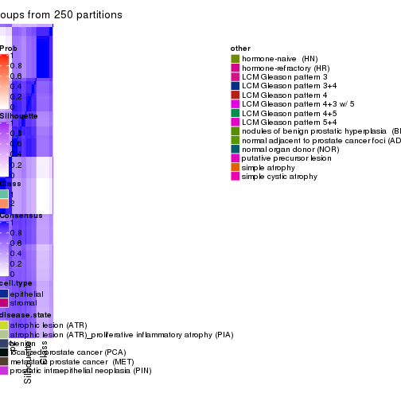
consensus_heatmap(res, k = 3)
consensus_heatmap(res, k = 4)
consensus_heatmap(res, k = 5)
consensus_heatmap(res, k = 6)
Heatmaps for the membership of samples in all partitions to see how consistent they are:
membership_heatmap(res, k = 2)
membership_heatmap(res, k = 3)
membership_heatmap(res, k = 4)
membership_heatmap(res, k = 5)
membership_heatmap(res, k = 6)
As soon as we have had the classes for columns, we can look for signatures which are significantly different between classes which can be candidate marks for certain classes. Following are the heatmaps for signatures.
Signature heatmaps where rows are scaled:
get_signatures(res, k = 2)
get_signatures(res, k = 3)
get_signatures(res, k = 4)
get_signatures(res, k = 5)
get_signatures(res, k = 6)
Signature heatmaps where rows are not scaled:
get_signatures(res, k = 2, scale_rows = FALSE)
get_signatures(res, k = 3, scale_rows = FALSE)
get_signatures(res, k = 4, scale_rows = FALSE)
get_signatures(res, k = 5, scale_rows = FALSE)
get_signatures(res, k = 6, scale_rows = FALSE)
Compare the overlap of signatures from different k:
compare_signatures(res)
get_signature() returns a data frame invisibly. TO get the list of signatures, the function
call should be assigned to a variable explicitly. In following code, if plot argument is set
to FALSE, no heatmap is plotted while only the differential analysis is performed.
# code only for demonstration
tb = get_signature(res, k = ..., plot = FALSE)
An example of the output of tb is:
#> which_row fdr mean_1 mean_2 scaled_mean_1 scaled_mean_2 km
#> 1 38 0.042760348 8.373488 9.131774 -0.5533452 0.5164555 1
#> 2 40 0.018707592 7.106213 8.469186 -0.6173731 0.5762149 1
#> 3 55 0.019134737 10.221463 11.207825 -0.6159697 0.5749050 1
#> 4 59 0.006059896 5.921854 7.869574 -0.6899429 0.6439467 1
#> 5 60 0.018055526 8.928898 10.211722 -0.6204761 0.5791110 1
#> 6 98 0.009384629 15.714769 14.887706 0.6635654 -0.6193277 2
...
The columns in tb are:
which_row: row indices corresponding to the input matrix.fdr: FDR for the differential test. mean_x: The mean value in group x.scaled_mean_x: The mean value in group x after rows are scaled.km: Row groups if k-means clustering is applied to rows.UMAP plot which shows how samples are separated.
dimension_reduction(res, k = 2, method = "UMAP")
dimension_reduction(res, k = 3, method = "UMAP")
dimension_reduction(res, k = 4, method = "UMAP")
dimension_reduction(res, k = 5, method = "UMAP")
dimension_reduction(res, k = 6, method = "UMAP")
Following heatmap shows how subgroups are split when increasing k:
collect_classes(res)
Test correlation between subgroups and known annotations. If the known annotation is numeric, one-way ANOVA test is applied, and if the known annotation is discrete, chi-squared contingency table test is applied.
test_to_known_factors(res)
#> n cell.type(p) disease.state(p) other(p) k
#> SD:hclust 82 1.26e-01 6.12e-09 2.44e-06 2
#> SD:hclust 66 4.66e-15 2.94e-06 3.17e-05 3
#> SD:hclust 41 1.25e-09 3.21e-03 5.17e-03 4
#> SD:hclust 74 5.93e-16 1.24e-09 8.48e-08 5
#> SD:hclust 44 1.51e-09 2.43e-14 1.69e-10 6
If matrix rows can be associated to genes, consider to use functional_enrichment(res,
...) to perform function enrichment for the signature genes. See this vignette for more detailed explanations.
The object with results only for a single top-value method and a single partition method can be extracted as:
res = res_list["SD", "kmeans"]
# you can also extract it by
# res = res_list["SD:kmeans"]
A summary of res and all the functions that can be applied to it:
res
#> A 'ConsensusPartition' object with k = 2, 3, 4, 5, 6.
#> On a matrix with 13604 rows and 104 columns.
#> Top rows (1000, 2000, 3000, 4000, 5000) are extracted by 'SD' method.
#> Subgroups are detected by 'kmeans' method.
#> Performed in total 1250 partitions by row resampling.
#> Best k for subgroups seems to be 4.
#>
#> Following methods can be applied to this 'ConsensusPartition' object:
#> [1] "cola_report" "collect_classes" "collect_plots"
#> [4] "collect_stats" "colnames" "compare_signatures"
#> [7] "consensus_heatmap" "dimension_reduction" "functional_enrichment"
#> [10] "get_anno_col" "get_anno" "get_classes"
#> [13] "get_consensus" "get_matrix" "get_membership"
#> [16] "get_param" "get_signatures" "get_stats"
#> [19] "is_best_k" "is_stable_k" "membership_heatmap"
#> [22] "ncol" "nrow" "plot_ecdf"
#> [25] "rownames" "select_partition_number" "show"
#> [28] "suggest_best_k" "test_to_known_factors"
collect_plots() function collects all the plots made from res for all k (number of partitions)
into one single page to provide an easy and fast comparison between different k.
collect_plots(res)
The plots are:
k and the heatmap of
predicted classes for each k.k.k.k.All the plots in panels can be made by individual functions and they are plotted later in this section.
select_partition_number() produces several plots showing different
statistics for choosing “optimized” k. There are following statistics:
k;k, the area increased is defined as \(A_k - A_{k-1}\).The detailed explanations of these statistics can be found in the cola vignette.
Generally speaking, lower PAC score, higher mean silhouette score or higher
concordance corresponds to better partition. Rand index and Jaccard index
measure how similar the current partition is compared to partition with k-1.
If they are too similar, we won't accept k is better than k-1.
select_partition_number(res)
The numeric values for all these statistics can be obtained by get_stats().
get_stats(res)
#> k 1-PAC mean_silhouette concordance area_increased Rand Jaccard
#> 2 2 0.470 0.837 0.899 0.4509 0.504 0.504
#> 3 3 0.562 0.798 0.872 0.3484 0.677 0.476
#> 4 4 0.786 0.802 0.905 0.1798 0.791 0.526
#> 5 5 0.627 0.622 0.785 0.0794 0.909 0.684
#> 6 6 0.648 0.493 0.674 0.0469 0.878 0.519
suggest_best_k() suggests the best \(k\) based on these statistics. The rules are as follows:
suggest_best_k(res)
#> [1] 4
Following shows the table of the partitions (You need to click the show/hide
code output link to see it). The membership matrix (columns with name p*)
is inferred by
clue::cl_consensus()
function with the SE method. Basically the value in the membership matrix
represents the probability to belong to a certain group. The finall class
label for an item is determined with the group with highest probability it
belongs to.
In get_classes() function, the entropy is calculated from the membership
matrix and the silhouette score is calculated from the consensus matrix.
cbind(get_classes(res, k = 2), get_membership(res, k = 2))
#> class entropy silhouette p1 p2
#> GSM141334 1 0.4690 0.858 0.900 0.100
#> GSM141335 1 0.4690 0.858 0.900 0.100
#> GSM141336 2 0.9933 0.363 0.452 0.548
#> GSM141337 1 0.1414 0.922 0.980 0.020
#> GSM141184 1 0.9358 0.380 0.648 0.352
#> GSM141185 1 0.9580 0.290 0.620 0.380
#> GSM141186 2 0.6148 0.892 0.152 0.848
#> GSM141243 2 0.8763 0.722 0.296 0.704
#> GSM141244 1 0.1414 0.922 0.980 0.020
#> GSM141246 1 0.4690 0.858 0.900 0.100
#> GSM141247 2 0.9954 0.337 0.460 0.540
#> GSM141248 1 0.1414 0.922 0.980 0.020
#> GSM141249 1 0.0000 0.927 1.000 0.000
#> GSM141258 1 0.9323 0.392 0.652 0.348
#> GSM141259 2 0.6148 0.892 0.152 0.848
#> GSM141260 1 0.3584 0.888 0.932 0.068
#> GSM141261 2 0.6247 0.890 0.156 0.844
#> GSM141262 2 0.6343 0.888 0.160 0.840
#> GSM141263 2 0.6148 0.892 0.152 0.848
#> GSM141338 1 0.9323 0.392 0.652 0.348
#> GSM141339 1 0.1414 0.922 0.980 0.020
#> GSM141340 1 0.0938 0.925 0.988 0.012
#> GSM141265 2 0.6531 0.886 0.168 0.832
#> GSM141267 1 0.0000 0.927 1.000 0.000
#> GSM141330 2 0.9732 0.533 0.404 0.596
#> GSM141266 2 0.6247 0.890 0.156 0.844
#> GSM141264 2 0.6438 0.886 0.164 0.836
#> GSM141341 2 0.6887 0.877 0.184 0.816
#> GSM141342 2 0.6148 0.892 0.152 0.848
#> GSM141343 2 0.6148 0.892 0.152 0.848
#> GSM141356 2 0.6148 0.892 0.152 0.848
#> GSM141357 1 0.1184 0.923 0.984 0.016
#> GSM141358 2 0.6148 0.892 0.152 0.848
#> GSM141359 2 0.6148 0.892 0.152 0.848
#> GSM141360 1 0.1184 0.923 0.984 0.016
#> GSM141361 2 0.6148 0.892 0.152 0.848
#> GSM141362 2 0.6148 0.892 0.152 0.848
#> GSM141363 2 0.9963 0.317 0.464 0.536
#> GSM141364 1 0.4690 0.860 0.900 0.100
#> GSM141365 2 0.6148 0.892 0.152 0.848
#> GSM141366 2 0.6148 0.892 0.152 0.848
#> GSM141367 2 0.6623 0.883 0.172 0.828
#> GSM141368 2 0.6148 0.892 0.152 0.848
#> GSM141369 2 0.6148 0.892 0.152 0.848
#> GSM141370 2 0.6148 0.892 0.152 0.848
#> GSM141371 2 0.6148 0.892 0.152 0.848
#> GSM141372 2 0.6148 0.892 0.152 0.848
#> GSM141373 1 0.0672 0.926 0.992 0.008
#> GSM141374 1 0.0000 0.927 1.000 0.000
#> GSM141375 2 0.7815 0.836 0.232 0.768
#> GSM141376 1 0.0000 0.927 1.000 0.000
#> GSM141377 1 0.0672 0.926 0.992 0.008
#> GSM141378 1 0.0000 0.927 1.000 0.000
#> GSM141380 1 0.0000 0.927 1.000 0.000
#> GSM141387 1 0.0000 0.927 1.000 0.000
#> GSM141395 1 0.0376 0.927 0.996 0.004
#> GSM141397 2 0.8713 0.729 0.292 0.708
#> GSM141398 1 0.9323 0.392 0.652 0.348
#> GSM141401 1 0.4161 0.874 0.916 0.084
#> GSM141399 1 0.3584 0.888 0.932 0.068
#> GSM141379 1 0.0000 0.927 1.000 0.000
#> GSM141381 1 0.0000 0.927 1.000 0.000
#> GSM141383 1 0.0000 0.927 1.000 0.000
#> GSM141384 1 0.0000 0.927 1.000 0.000
#> GSM141385 1 0.0000 0.927 1.000 0.000
#> GSM141388 1 0.0000 0.927 1.000 0.000
#> GSM141389 1 0.0000 0.927 1.000 0.000
#> GSM141391 1 0.0000 0.927 1.000 0.000
#> GSM141394 2 0.6343 0.888 0.160 0.840
#> GSM141396 1 0.0000 0.927 1.000 0.000
#> GSM141403 1 0.4815 0.856 0.896 0.104
#> GSM141404 1 0.1633 0.920 0.976 0.024
#> GSM141386 1 0.0000 0.927 1.000 0.000
#> GSM141382 1 0.0000 0.927 1.000 0.000
#> GSM141390 1 0.0000 0.927 1.000 0.000
#> GSM141393 1 0.0000 0.927 1.000 0.000
#> GSM141400 1 0.0000 0.927 1.000 0.000
#> GSM141402 2 0.6438 0.884 0.164 0.836
#> GSM141392 1 0.8909 0.410 0.692 0.308
#> GSM141405 1 0.0000 0.927 1.000 0.000
#> GSM141406 1 0.9552 0.304 0.624 0.376
#> GSM141407 1 0.0000 0.927 1.000 0.000
#> GSM141408 1 0.0000 0.927 1.000 0.000
#> GSM141409 1 0.1414 0.922 0.980 0.020
#> GSM141410 1 0.0000 0.927 1.000 0.000
#> GSM141411 1 0.0000 0.927 1.000 0.000
#> GSM141412 1 0.0672 0.926 0.992 0.008
#> GSM141413 1 0.1414 0.922 0.980 0.020
#> GSM141414 1 0.1414 0.922 0.980 0.020
#> GSM141415 1 0.0000 0.927 1.000 0.000
#> GSM141416 1 0.1414 0.922 0.980 0.020
#> GSM141417 1 0.0672 0.926 0.992 0.008
#> GSM141420 2 0.1633 0.819 0.024 0.976
#> GSM141421 2 0.1633 0.819 0.024 0.976
#> GSM141422 2 0.1633 0.819 0.024 0.976
#> GSM141423 2 0.1633 0.819 0.024 0.976
#> GSM141424 2 0.1633 0.819 0.024 0.976
#> GSM141427 2 0.1633 0.819 0.024 0.976
#> GSM141428 2 0.1633 0.819 0.024 0.976
#> GSM141418 2 0.1184 0.819 0.016 0.984
#> GSM141419 2 0.1633 0.819 0.024 0.976
#> GSM141425 2 0.1633 0.819 0.024 0.976
#> GSM141426 2 0.1633 0.819 0.024 0.976
#> GSM141429 2 0.1633 0.819 0.024 0.976
cbind(get_classes(res, k = 3), get_membership(res, k = 3))
#> class entropy silhouette p1 p2 p3
#> GSM141334 2 0.3482 0.7300 0.128 0.872 0.000
#> GSM141335 2 0.3619 0.7257 0.136 0.864 0.000
#> GSM141336 2 0.2356 0.7501 0.072 0.928 0.000
#> GSM141337 1 0.5591 0.6316 0.696 0.304 0.000
#> GSM141184 2 0.3412 0.7324 0.124 0.876 0.000
#> GSM141185 2 0.3412 0.7324 0.124 0.876 0.000
#> GSM141186 2 0.3816 0.7572 0.000 0.852 0.148
#> GSM141243 2 0.1163 0.7632 0.000 0.972 0.028
#> GSM141244 2 0.5058 0.6345 0.244 0.756 0.000
#> GSM141246 2 0.4504 0.6780 0.196 0.804 0.000
#> GSM141247 2 0.2537 0.7477 0.080 0.920 0.000
#> GSM141248 1 0.6308 0.0966 0.508 0.492 0.000
#> GSM141249 1 0.0000 0.9189 1.000 0.000 0.000
#> GSM141258 2 0.3412 0.7324 0.124 0.876 0.000
#> GSM141259 2 0.5178 0.7299 0.000 0.744 0.256
#> GSM141260 2 0.4842 0.6512 0.224 0.776 0.000
#> GSM141261 2 0.4555 0.7542 0.000 0.800 0.200
#> GSM141262 2 0.0000 0.7589 0.000 1.000 0.000
#> GSM141263 2 0.5016 0.7389 0.000 0.760 0.240
#> GSM141338 2 0.3412 0.7324 0.124 0.876 0.000
#> GSM141339 2 0.5733 0.4817 0.324 0.676 0.000
#> GSM141340 1 0.2261 0.8825 0.932 0.068 0.000
#> GSM141265 2 0.4692 0.7416 0.012 0.820 0.168
#> GSM141267 2 0.6244 0.1178 0.440 0.560 0.000
#> GSM141330 2 0.5325 0.6375 0.248 0.748 0.004
#> GSM141266 2 0.3412 0.7633 0.000 0.876 0.124
#> GSM141264 2 0.4452 0.7345 0.000 0.808 0.192
#> GSM141341 2 0.5216 0.7272 0.000 0.740 0.260
#> GSM141342 2 0.5216 0.7272 0.000 0.740 0.260
#> GSM141343 2 0.5216 0.7272 0.000 0.740 0.260
#> GSM141356 2 0.5053 0.7453 0.024 0.812 0.164
#> GSM141357 1 0.4654 0.7328 0.792 0.208 0.000
#> GSM141358 2 0.3340 0.7643 0.000 0.880 0.120
#> GSM141359 2 0.4702 0.7404 0.000 0.788 0.212
#> GSM141360 1 0.2356 0.8605 0.928 0.072 0.000
#> GSM141361 2 0.4934 0.7500 0.024 0.820 0.156
#> GSM141362 2 0.4062 0.7622 0.000 0.836 0.164
#> GSM141363 2 0.2448 0.7553 0.000 0.924 0.076
#> GSM141364 2 0.2711 0.7476 0.088 0.912 0.000
#> GSM141365 2 0.5726 0.7355 0.024 0.760 0.216
#> GSM141366 2 0.5216 0.7272 0.000 0.740 0.260
#> GSM141367 2 0.6913 0.7046 0.056 0.696 0.248
#> GSM141368 2 0.5216 0.7272 0.000 0.740 0.260
#> GSM141369 2 0.5216 0.7272 0.000 0.740 0.260
#> GSM141370 2 0.5216 0.7272 0.000 0.740 0.260
#> GSM141371 2 0.5216 0.7272 0.000 0.740 0.260
#> GSM141372 2 0.5216 0.7272 0.000 0.740 0.260
#> GSM141373 1 0.5678 0.6121 0.684 0.316 0.000
#> GSM141374 1 0.0000 0.9189 1.000 0.000 0.000
#> GSM141375 2 0.5901 0.7422 0.048 0.776 0.176
#> GSM141376 1 0.0000 0.9189 1.000 0.000 0.000
#> GSM141377 1 0.0000 0.9189 1.000 0.000 0.000
#> GSM141378 1 0.0000 0.9189 1.000 0.000 0.000
#> GSM141380 1 0.0000 0.9189 1.000 0.000 0.000
#> GSM141387 1 0.0000 0.9189 1.000 0.000 0.000
#> GSM141395 1 0.5591 0.6254 0.696 0.304 0.000
#> GSM141397 2 0.3784 0.7627 0.004 0.864 0.132
#> GSM141398 2 0.3412 0.7324 0.124 0.876 0.000
#> GSM141401 2 0.4842 0.6625 0.224 0.776 0.000
#> GSM141399 2 0.5058 0.6277 0.244 0.756 0.000
#> GSM141379 1 0.0000 0.9189 1.000 0.000 0.000
#> GSM141381 1 0.0000 0.9189 1.000 0.000 0.000
#> GSM141383 1 0.0000 0.9189 1.000 0.000 0.000
#> GSM141384 1 0.0000 0.9189 1.000 0.000 0.000
#> GSM141385 1 0.0592 0.9135 0.988 0.012 0.000
#> GSM141388 1 0.0000 0.9189 1.000 0.000 0.000
#> GSM141389 1 0.0000 0.9189 1.000 0.000 0.000
#> GSM141391 1 0.0000 0.9189 1.000 0.000 0.000
#> GSM141394 2 0.0000 0.7589 0.000 1.000 0.000
#> GSM141396 1 0.0000 0.9189 1.000 0.000 0.000
#> GSM141403 2 0.1860 0.7601 0.052 0.948 0.000
#> GSM141404 1 0.3116 0.8562 0.892 0.108 0.000
#> GSM141386 1 0.4178 0.8072 0.828 0.172 0.000
#> GSM141382 1 0.0000 0.9189 1.000 0.000 0.000
#> GSM141390 1 0.0000 0.9189 1.000 0.000 0.000
#> GSM141393 1 0.0000 0.9189 1.000 0.000 0.000
#> GSM141400 1 0.0000 0.9189 1.000 0.000 0.000
#> GSM141402 2 0.4555 0.7542 0.000 0.800 0.200
#> GSM141392 1 0.6490 0.6779 0.752 0.172 0.076
#> GSM141405 1 0.0000 0.9189 1.000 0.000 0.000
#> GSM141406 2 0.3551 0.7284 0.132 0.868 0.000
#> GSM141407 1 0.0000 0.9189 1.000 0.000 0.000
#> GSM141408 1 0.0000 0.9189 1.000 0.000 0.000
#> GSM141409 1 0.3752 0.8302 0.856 0.144 0.000
#> GSM141410 1 0.0000 0.9189 1.000 0.000 0.000
#> GSM141411 1 0.0000 0.9189 1.000 0.000 0.000
#> GSM141412 1 0.0000 0.9189 1.000 0.000 0.000
#> GSM141413 1 0.4452 0.7893 0.808 0.192 0.000
#> GSM141414 1 0.4452 0.7893 0.808 0.192 0.000
#> GSM141415 1 0.0000 0.9189 1.000 0.000 0.000
#> GSM141416 2 0.5760 0.4700 0.328 0.672 0.000
#> GSM141417 1 0.0592 0.9122 0.988 0.012 0.000
#> GSM141420 3 0.2845 0.9984 0.012 0.068 0.920
#> GSM141421 3 0.2845 0.9984 0.012 0.068 0.920
#> GSM141422 3 0.2845 0.9984 0.012 0.068 0.920
#> GSM141423 3 0.2845 0.9984 0.012 0.068 0.920
#> GSM141424 3 0.2845 0.9984 0.012 0.068 0.920
#> GSM141427 3 0.2845 0.9984 0.012 0.068 0.920
#> GSM141428 3 0.2845 0.9984 0.012 0.068 0.920
#> GSM141418 3 0.2261 0.9822 0.000 0.068 0.932
#> GSM141419 3 0.2845 0.9984 0.012 0.068 0.920
#> GSM141425 3 0.2845 0.9984 0.012 0.068 0.920
#> GSM141426 3 0.2845 0.9984 0.012 0.068 0.920
#> GSM141429 3 0.2845 0.9984 0.012 0.068 0.920
cbind(get_classes(res, k = 4), get_membership(res, k = 4))
#> class entropy silhouette p1 p2 p3 p4
#> GSM141334 2 0.0376 0.866 0.004 0.992 0.000 0.004
#> GSM141335 2 0.0376 0.866 0.004 0.992 0.000 0.004
#> GSM141336 2 0.0817 0.855 0.000 0.976 0.000 0.024
#> GSM141337 2 0.0921 0.857 0.028 0.972 0.000 0.000
#> GSM141184 2 0.0376 0.866 0.004 0.992 0.000 0.004
#> GSM141185 2 0.0376 0.866 0.004 0.992 0.000 0.004
#> GSM141186 4 0.4905 0.584 0.000 0.364 0.004 0.632
#> GSM141243 2 0.4040 0.514 0.000 0.752 0.000 0.248
#> GSM141244 2 0.0524 0.866 0.008 0.988 0.000 0.004
#> GSM141246 2 0.0188 0.865 0.004 0.996 0.000 0.000
#> GSM141247 2 0.0895 0.857 0.004 0.976 0.000 0.020
#> GSM141248 2 0.0779 0.864 0.016 0.980 0.000 0.004
#> GSM141249 1 0.1209 0.928 0.964 0.032 0.004 0.000
#> GSM141258 2 0.0376 0.866 0.004 0.992 0.000 0.004
#> GSM141259 4 0.3355 0.764 0.000 0.160 0.004 0.836
#> GSM141260 2 0.0376 0.865 0.004 0.992 0.000 0.004
#> GSM141261 4 0.4053 0.711 0.000 0.228 0.004 0.768
#> GSM141262 2 0.0817 0.855 0.000 0.976 0.000 0.024
#> GSM141263 4 0.3355 0.764 0.000 0.160 0.004 0.836
#> GSM141338 2 0.0895 0.857 0.004 0.976 0.000 0.020
#> GSM141339 2 0.0657 0.865 0.012 0.984 0.000 0.004
#> GSM141340 1 0.3710 0.747 0.804 0.192 0.004 0.000
#> GSM141265 2 0.4741 0.277 0.000 0.668 0.004 0.328
#> GSM141267 2 0.0657 0.863 0.012 0.984 0.000 0.004
#> GSM141330 2 0.0657 0.863 0.012 0.984 0.000 0.004
#> GSM141266 4 0.5167 0.315 0.000 0.488 0.004 0.508
#> GSM141264 4 0.4964 0.568 0.000 0.380 0.004 0.616
#> GSM141341 4 0.1191 0.785 0.004 0.024 0.004 0.968
#> GSM141342 4 0.0895 0.783 0.000 0.020 0.004 0.976
#> GSM141343 4 0.0895 0.783 0.000 0.020 0.004 0.976
#> GSM141356 4 0.5297 0.338 0.004 0.444 0.004 0.548
#> GSM141357 1 0.5828 0.655 0.712 0.084 0.008 0.196
#> GSM141358 4 0.5088 0.443 0.000 0.424 0.004 0.572
#> GSM141359 4 0.3626 0.751 0.000 0.184 0.004 0.812
#> GSM141360 1 0.5153 0.721 0.760 0.056 0.008 0.176
#> GSM141361 4 0.5355 0.456 0.008 0.408 0.004 0.580
#> GSM141362 4 0.3668 0.751 0.000 0.188 0.004 0.808
#> GSM141363 4 0.4933 0.406 0.000 0.432 0.000 0.568
#> GSM141364 2 0.4230 0.624 0.008 0.776 0.004 0.212
#> GSM141365 4 0.1209 0.780 0.000 0.032 0.004 0.964
#> GSM141366 4 0.0779 0.783 0.000 0.016 0.004 0.980
#> GSM141367 4 0.1082 0.773 0.004 0.020 0.004 0.972
#> GSM141368 4 0.0779 0.783 0.000 0.016 0.004 0.980
#> GSM141369 4 0.0779 0.783 0.000 0.016 0.004 0.980
#> GSM141370 4 0.0779 0.783 0.000 0.016 0.004 0.980
#> GSM141371 4 0.0779 0.783 0.000 0.016 0.004 0.980
#> GSM141372 4 0.0779 0.783 0.000 0.016 0.004 0.980
#> GSM141373 2 0.1118 0.853 0.036 0.964 0.000 0.000
#> GSM141374 1 0.0000 0.949 1.000 0.000 0.000 0.000
#> GSM141375 4 0.6212 0.564 0.056 0.348 0.004 0.592
#> GSM141376 1 0.0336 0.949 0.992 0.000 0.008 0.000
#> GSM141377 1 0.0376 0.948 0.992 0.000 0.004 0.004
#> GSM141378 1 0.0000 0.949 1.000 0.000 0.000 0.000
#> GSM141380 1 0.0336 0.949 0.992 0.000 0.008 0.000
#> GSM141387 1 0.0469 0.949 0.988 0.000 0.012 0.000
#> GSM141395 2 0.1209 0.853 0.032 0.964 0.000 0.004
#> GSM141397 2 0.5165 -0.319 0.000 0.512 0.004 0.484
#> GSM141398 2 0.0376 0.866 0.004 0.992 0.000 0.004
#> GSM141401 2 0.2921 0.752 0.140 0.860 0.000 0.000
#> GSM141399 2 0.0188 0.865 0.004 0.996 0.000 0.000
#> GSM141379 1 0.0336 0.949 0.992 0.000 0.008 0.000
#> GSM141381 1 0.0336 0.949 0.992 0.000 0.008 0.000
#> GSM141383 1 0.0657 0.949 0.984 0.000 0.012 0.004
#> GSM141384 1 0.0657 0.949 0.984 0.000 0.012 0.004
#> GSM141385 1 0.1978 0.895 0.928 0.068 0.000 0.004
#> GSM141388 1 0.0657 0.949 0.984 0.000 0.012 0.004
#> GSM141389 1 0.0657 0.949 0.984 0.000 0.012 0.004
#> GSM141391 1 0.0000 0.949 1.000 0.000 0.000 0.000
#> GSM141394 2 0.0188 0.863 0.000 0.996 0.000 0.004
#> GSM141396 1 0.0469 0.943 0.988 0.012 0.000 0.000
#> GSM141403 2 0.5198 0.266 0.008 0.628 0.004 0.360
#> GSM141404 1 0.5323 0.273 0.592 0.396 0.008 0.004
#> GSM141386 2 0.4837 0.488 0.348 0.648 0.000 0.004
#> GSM141382 1 0.0524 0.949 0.988 0.000 0.008 0.004
#> GSM141390 1 0.0376 0.948 0.992 0.000 0.004 0.004
#> GSM141393 1 0.0188 0.948 0.996 0.000 0.000 0.004
#> GSM141400 1 0.0188 0.948 0.996 0.000 0.000 0.004
#> GSM141402 4 0.1398 0.788 0.000 0.040 0.004 0.956
#> GSM141392 1 0.2224 0.901 0.928 0.040 0.000 0.032
#> GSM141405 1 0.0967 0.948 0.976 0.004 0.016 0.004
#> GSM141406 2 0.0188 0.865 0.004 0.996 0.000 0.000
#> GSM141407 1 0.0592 0.949 0.984 0.000 0.016 0.000
#> GSM141408 1 0.0592 0.949 0.984 0.000 0.016 0.000
#> GSM141409 2 0.5151 0.157 0.464 0.532 0.004 0.000
#> GSM141410 1 0.0592 0.949 0.984 0.000 0.016 0.000
#> GSM141411 1 0.0188 0.948 0.996 0.000 0.004 0.000
#> GSM141412 1 0.0592 0.949 0.984 0.000 0.016 0.000
#> GSM141413 2 0.3710 0.695 0.192 0.804 0.004 0.000
#> GSM141414 2 0.3668 0.700 0.188 0.808 0.004 0.000
#> GSM141415 1 0.0592 0.949 0.984 0.000 0.016 0.000
#> GSM141416 2 0.0524 0.866 0.008 0.988 0.000 0.004
#> GSM141417 1 0.0188 0.948 0.996 0.000 0.004 0.000
#> GSM141420 3 0.1004 0.996 0.000 0.004 0.972 0.024
#> GSM141421 3 0.1004 0.996 0.000 0.004 0.972 0.024
#> GSM141422 3 0.0927 0.996 0.000 0.008 0.976 0.016
#> GSM141423 3 0.1004 0.996 0.000 0.004 0.972 0.024
#> GSM141424 3 0.0927 0.996 0.000 0.008 0.976 0.016
#> GSM141427 3 0.1004 0.996 0.000 0.004 0.972 0.024
#> GSM141428 3 0.1004 0.996 0.000 0.004 0.972 0.024
#> GSM141418 3 0.0927 0.996 0.000 0.008 0.976 0.016
#> GSM141419 3 0.0927 0.996 0.000 0.008 0.976 0.016
#> GSM141425 3 0.0895 0.996 0.000 0.004 0.976 0.020
#> GSM141426 3 0.0895 0.996 0.000 0.004 0.976 0.020
#> GSM141429 3 0.0895 0.996 0.000 0.004 0.976 0.020
cbind(get_classes(res, k = 5), get_membership(res, k = 5))
#> class entropy silhouette p1 p2 p3 p4 p5
#> GSM141334 2 0.0290 0.75388 0.000 0.992 0.000 0.000 0.008
#> GSM141335 2 0.1043 0.75820 0.000 0.960 0.000 0.000 0.040
#> GSM141336 2 0.1800 0.71971 0.000 0.932 0.000 0.048 0.020
#> GSM141337 2 0.2127 0.73812 0.000 0.892 0.000 0.000 0.108
#> GSM141184 2 0.1043 0.75752 0.000 0.960 0.000 0.000 0.040
#> GSM141185 2 0.0898 0.74341 0.000 0.972 0.000 0.008 0.020
#> GSM141186 4 0.6166 0.39254 0.000 0.200 0.000 0.556 0.244
#> GSM141243 2 0.5210 0.33366 0.000 0.652 0.000 0.264 0.084
#> GSM141244 2 0.0963 0.75834 0.000 0.964 0.000 0.000 0.036
#> GSM141246 2 0.2966 0.72114 0.000 0.816 0.000 0.000 0.184
#> GSM141247 2 0.1800 0.71971 0.000 0.932 0.000 0.048 0.020
#> GSM141248 2 0.1544 0.75446 0.000 0.932 0.000 0.000 0.068
#> GSM141249 1 0.4810 0.71596 0.712 0.084 0.000 0.000 0.204
#> GSM141258 2 0.0771 0.74534 0.000 0.976 0.000 0.004 0.020
#> GSM141259 4 0.5284 0.56465 0.000 0.116 0.000 0.668 0.216
#> GSM141260 2 0.3857 0.58066 0.000 0.688 0.000 0.000 0.312
#> GSM141261 4 0.5405 0.50874 0.000 0.256 0.000 0.640 0.104
#> GSM141262 2 0.3159 0.66342 0.000 0.856 0.000 0.088 0.056
#> GSM141263 4 0.5091 0.58391 0.000 0.112 0.000 0.692 0.196
#> GSM141338 2 0.1331 0.72969 0.000 0.952 0.000 0.040 0.008
#> GSM141339 2 0.1544 0.75352 0.000 0.932 0.000 0.000 0.068
#> GSM141340 1 0.6275 0.35117 0.516 0.308 0.000 0.000 0.176
#> GSM141265 5 0.6858 0.20262 0.000 0.340 0.008 0.224 0.428
#> GSM141267 2 0.3816 0.61935 0.000 0.696 0.000 0.000 0.304
#> GSM141330 2 0.4430 0.33515 0.000 0.540 0.004 0.000 0.456
#> GSM141266 4 0.6612 0.22886 0.000 0.272 0.000 0.460 0.268
#> GSM141264 5 0.6975 0.05307 0.000 0.204 0.016 0.360 0.420
#> GSM141341 5 0.4892 -0.18855 0.016 0.004 0.000 0.484 0.496
#> GSM141342 4 0.2605 0.59767 0.000 0.000 0.000 0.852 0.148
#> GSM141343 4 0.2516 0.63943 0.000 0.000 0.000 0.860 0.140
#> GSM141356 5 0.5508 0.40934 0.000 0.120 0.000 0.244 0.636
#> GSM141357 5 0.6591 0.44702 0.180 0.060 0.000 0.148 0.612
#> GSM141358 5 0.5956 0.25972 0.000 0.140 0.000 0.296 0.564
#> GSM141359 4 0.5240 0.52391 0.000 0.096 0.000 0.660 0.244
#> GSM141360 5 0.6553 0.44250 0.212 0.060 0.000 0.120 0.608
#> GSM141361 5 0.5460 0.40609 0.004 0.092 0.000 0.264 0.640
#> GSM141362 4 0.5256 0.54663 0.000 0.116 0.000 0.672 0.212
#> GSM141363 4 0.6553 0.18370 0.000 0.292 0.000 0.472 0.236
#> GSM141364 5 0.5832 0.42430 0.000 0.248 0.000 0.152 0.600
#> GSM141365 5 0.4403 0.01865 0.004 0.000 0.000 0.436 0.560
#> GSM141366 4 0.2605 0.59767 0.000 0.000 0.000 0.852 0.148
#> GSM141367 5 0.4350 -0.00107 0.004 0.000 0.000 0.408 0.588
#> GSM141368 4 0.2605 0.59767 0.000 0.000 0.000 0.852 0.148
#> GSM141369 4 0.0162 0.66818 0.000 0.000 0.000 0.996 0.004
#> GSM141370 4 0.0000 0.66981 0.000 0.000 0.000 1.000 0.000
#> GSM141371 4 0.0000 0.66981 0.000 0.000 0.000 1.000 0.000
#> GSM141372 4 0.0000 0.66981 0.000 0.000 0.000 1.000 0.000
#> GSM141373 2 0.4182 0.57748 0.004 0.644 0.000 0.000 0.352
#> GSM141374 1 0.2648 0.80716 0.848 0.000 0.000 0.000 0.152
#> GSM141375 5 0.6813 0.21919 0.024 0.176 0.000 0.288 0.512
#> GSM141376 1 0.0162 0.84216 0.996 0.000 0.000 0.000 0.004
#> GSM141377 1 0.2929 0.79509 0.820 0.000 0.000 0.000 0.180
#> GSM141378 1 0.3266 0.78519 0.796 0.004 0.000 0.000 0.200
#> GSM141380 1 0.0162 0.84216 0.996 0.000 0.000 0.000 0.004
#> GSM141387 1 0.0000 0.84183 1.000 0.000 0.000 0.000 0.000
#> GSM141395 2 0.4552 0.37894 0.008 0.524 0.000 0.000 0.468
#> GSM141397 5 0.6678 0.11254 0.000 0.256 0.000 0.312 0.432
#> GSM141398 2 0.1331 0.72969 0.000 0.952 0.000 0.040 0.008
#> GSM141401 2 0.5263 0.46003 0.056 0.576 0.000 0.000 0.368
#> GSM141399 2 0.3534 0.67287 0.000 0.744 0.000 0.000 0.256
#> GSM141379 1 0.0609 0.84100 0.980 0.000 0.000 0.000 0.020
#> GSM141381 1 0.0290 0.84177 0.992 0.000 0.000 0.000 0.008
#> GSM141383 1 0.0609 0.84071 0.980 0.000 0.000 0.000 0.020
#> GSM141384 1 0.0162 0.84159 0.996 0.000 0.000 0.000 0.004
#> GSM141385 5 0.5737 -0.23252 0.456 0.084 0.000 0.000 0.460
#> GSM141388 1 0.0609 0.84071 0.980 0.000 0.000 0.000 0.020
#> GSM141389 1 0.0609 0.84071 0.980 0.000 0.000 0.000 0.020
#> GSM141391 1 0.2891 0.80085 0.824 0.000 0.000 0.000 0.176
#> GSM141394 2 0.3508 0.65415 0.000 0.748 0.000 0.000 0.252
#> GSM141396 1 0.4169 0.73462 0.732 0.028 0.000 0.000 0.240
#> GSM141403 5 0.5792 0.45560 0.000 0.192 0.000 0.192 0.616
#> GSM141404 1 0.6729 -0.00358 0.376 0.252 0.000 0.000 0.372
#> GSM141386 5 0.6309 0.01408 0.168 0.340 0.000 0.000 0.492
#> GSM141382 1 0.0510 0.84084 0.984 0.000 0.000 0.000 0.016
#> GSM141390 1 0.4060 0.57939 0.640 0.000 0.000 0.000 0.360
#> GSM141393 1 0.3210 0.78077 0.788 0.000 0.000 0.000 0.212
#> GSM141400 1 0.3074 0.79088 0.804 0.000 0.000 0.000 0.196
#> GSM141402 4 0.3527 0.63964 0.000 0.056 0.000 0.828 0.116
#> GSM141392 5 0.5708 0.21161 0.324 0.036 0.012 0.020 0.608
#> GSM141405 1 0.3424 0.59334 0.760 0.000 0.000 0.000 0.240
#> GSM141406 2 0.4074 0.52321 0.000 0.636 0.000 0.000 0.364
#> GSM141407 1 0.0703 0.83868 0.976 0.000 0.000 0.000 0.024
#> GSM141408 1 0.0404 0.84097 0.988 0.000 0.000 0.000 0.012
#> GSM141409 2 0.6442 0.23674 0.244 0.504 0.000 0.000 0.252
#> GSM141410 1 0.0703 0.83868 0.976 0.000 0.000 0.000 0.024
#> GSM141411 1 0.3845 0.76545 0.768 0.024 0.000 0.000 0.208
#> GSM141412 1 0.0703 0.83868 0.976 0.000 0.000 0.000 0.024
#> GSM141413 2 0.4800 0.59382 0.088 0.716 0.000 0.000 0.196
#> GSM141414 2 0.4767 0.59863 0.088 0.720 0.000 0.000 0.192
#> GSM141415 1 0.0703 0.83868 0.976 0.000 0.000 0.000 0.024
#> GSM141416 2 0.1544 0.75352 0.000 0.932 0.000 0.000 0.068
#> GSM141417 1 0.4096 0.75394 0.760 0.040 0.000 0.000 0.200
#> GSM141420 3 0.0000 0.99568 0.000 0.000 1.000 0.000 0.000
#> GSM141421 3 0.0000 0.99568 0.000 0.000 1.000 0.000 0.000
#> GSM141422 3 0.0000 0.99568 0.000 0.000 1.000 0.000 0.000
#> GSM141423 3 0.0000 0.99568 0.000 0.000 1.000 0.000 0.000
#> GSM141424 3 0.0000 0.99568 0.000 0.000 1.000 0.000 0.000
#> GSM141427 3 0.0000 0.99568 0.000 0.000 1.000 0.000 0.000
#> GSM141428 3 0.0162 0.99427 0.000 0.000 0.996 0.000 0.004
#> GSM141418 3 0.0000 0.99568 0.000 0.000 1.000 0.000 0.000
#> GSM141419 3 0.0000 0.99568 0.000 0.000 1.000 0.000 0.000
#> GSM141425 3 0.0609 0.98818 0.000 0.000 0.980 0.000 0.020
#> GSM141426 3 0.0609 0.98818 0.000 0.000 0.980 0.000 0.020
#> GSM141429 3 0.0609 0.98818 0.000 0.000 0.980 0.000 0.020
cbind(get_classes(res, k = 6), get_membership(res, k = 6))
#> class entropy silhouette p1 p2 p3 p4 p5 p6
#> GSM141334 5 0.0790 0.7031 0.000 0.000 0.000 0.000 0.968 0.032
#> GSM141335 5 0.1951 0.7015 0.000 0.016 0.000 0.000 0.908 0.076
#> GSM141336 5 0.1349 0.6809 0.000 0.056 0.000 0.004 0.940 0.000
#> GSM141337 5 0.3342 0.5656 0.000 0.012 0.000 0.000 0.760 0.228
#> GSM141184 5 0.2145 0.7018 0.000 0.028 0.000 0.000 0.900 0.072
#> GSM141185 5 0.1124 0.6994 0.000 0.036 0.000 0.000 0.956 0.008
#> GSM141186 2 0.4653 0.4488 0.000 0.684 0.000 0.196 0.120 0.000
#> GSM141243 5 0.4593 0.1812 0.000 0.324 0.000 0.056 0.620 0.000
#> GSM141244 5 0.2094 0.7008 0.000 0.020 0.000 0.000 0.900 0.080
#> GSM141246 5 0.5093 0.4850 0.000 0.192 0.000 0.000 0.632 0.176
#> GSM141247 5 0.1349 0.6809 0.000 0.056 0.000 0.004 0.940 0.000
#> GSM141248 5 0.2070 0.6942 0.000 0.012 0.000 0.000 0.896 0.092
#> GSM141249 6 0.5347 -0.0420 0.412 0.000 0.000 0.000 0.108 0.480
#> GSM141258 5 0.1049 0.7004 0.000 0.032 0.000 0.000 0.960 0.008
#> GSM141259 2 0.4597 0.3375 0.000 0.652 0.000 0.276 0.072 0.000
#> GSM141260 2 0.5462 0.1188 0.000 0.496 0.000 0.000 0.376 0.128
#> GSM141261 4 0.5931 0.0710 0.000 0.388 0.000 0.400 0.212 0.000
#> GSM141262 5 0.3163 0.4833 0.000 0.232 0.000 0.004 0.764 0.000
#> GSM141263 2 0.4809 0.2385 0.000 0.600 0.000 0.328 0.072 0.000
#> GSM141338 5 0.1010 0.6914 0.000 0.036 0.000 0.004 0.960 0.000
#> GSM141339 5 0.1765 0.6956 0.000 0.000 0.000 0.000 0.904 0.096
#> GSM141340 6 0.6067 0.2761 0.284 0.000 0.000 0.000 0.312 0.404
#> GSM141265 2 0.4809 0.5634 0.000 0.748 0.016 0.052 0.128 0.056
#> GSM141267 5 0.5995 0.1642 0.000 0.280 0.000 0.000 0.440 0.280
#> GSM141330 2 0.5619 0.3367 0.000 0.576 0.008 0.000 0.232 0.184
#> GSM141266 2 0.4638 0.5006 0.000 0.704 0.000 0.148 0.144 0.004
#> GSM141264 2 0.4861 0.5589 0.000 0.756 0.028 0.084 0.088 0.044
#> GSM141341 2 0.5183 0.3805 0.008 0.624 0.000 0.272 0.004 0.092
#> GSM141342 4 0.0291 0.6750 0.000 0.004 0.000 0.992 0.000 0.004
#> GSM141343 4 0.3529 0.6392 0.000 0.208 0.000 0.764 0.000 0.028
#> GSM141356 6 0.6007 -0.0948 0.000 0.372 0.000 0.164 0.012 0.452
#> GSM141357 6 0.5669 0.2500 0.032 0.272 0.000 0.076 0.012 0.608
#> GSM141358 2 0.4941 0.3859 0.000 0.668 0.000 0.056 0.032 0.244
#> GSM141359 2 0.5969 0.1912 0.000 0.568 0.000 0.272 0.052 0.108
#> GSM141360 6 0.5659 0.2660 0.044 0.272 0.000 0.060 0.012 0.612
#> GSM141361 2 0.5540 0.1111 0.000 0.460 0.000 0.084 0.016 0.440
#> GSM141362 2 0.5656 0.1926 0.000 0.560 0.000 0.320 0.088 0.032
#> GSM141363 5 0.7476 -0.1946 0.000 0.260 0.000 0.144 0.356 0.240
#> GSM141364 6 0.5593 0.2057 0.000 0.288 0.000 0.076 0.044 0.592
#> GSM141365 2 0.6128 -0.0746 0.000 0.344 0.000 0.340 0.000 0.316
#> GSM141366 4 0.0146 0.6760 0.000 0.004 0.000 0.996 0.000 0.000
#> GSM141367 4 0.5867 0.0323 0.000 0.384 0.000 0.420 0.000 0.196
#> GSM141368 4 0.0146 0.6760 0.000 0.004 0.000 0.996 0.000 0.000
#> GSM141369 4 0.3191 0.7168 0.000 0.164 0.000 0.812 0.012 0.012
#> GSM141370 4 0.3191 0.7168 0.000 0.164 0.000 0.812 0.012 0.012
#> GSM141371 4 0.3191 0.7168 0.000 0.164 0.000 0.812 0.012 0.012
#> GSM141372 4 0.3191 0.7168 0.000 0.164 0.000 0.812 0.012 0.012
#> GSM141373 6 0.5571 0.0804 0.000 0.144 0.000 0.000 0.372 0.484
#> GSM141374 1 0.3774 0.3822 0.592 0.000 0.000 0.000 0.000 0.408
#> GSM141375 2 0.5192 0.5497 0.012 0.720 0.000 0.084 0.068 0.116
#> GSM141376 1 0.0405 0.7463 0.988 0.004 0.000 0.000 0.000 0.008
#> GSM141377 1 0.3852 0.4205 0.612 0.004 0.000 0.000 0.000 0.384
#> GSM141378 1 0.4141 0.3205 0.556 0.012 0.000 0.000 0.000 0.432
#> GSM141380 1 0.0603 0.7465 0.980 0.004 0.000 0.000 0.000 0.016
#> GSM141387 1 0.0405 0.7461 0.988 0.004 0.000 0.000 0.000 0.008
#> GSM141395 6 0.5983 0.1983 0.004 0.228 0.000 0.000 0.292 0.476
#> GSM141397 2 0.4655 0.5638 0.000 0.744 0.000 0.088 0.120 0.048
#> GSM141398 5 0.0935 0.6931 0.000 0.032 0.000 0.004 0.964 0.000
#> GSM141401 6 0.6772 0.0803 0.056 0.192 0.000 0.000 0.364 0.388
#> GSM141399 5 0.5543 0.1581 0.000 0.140 0.000 0.000 0.488 0.372
#> GSM141379 1 0.1267 0.7386 0.940 0.000 0.000 0.000 0.000 0.060
#> GSM141381 1 0.1049 0.7431 0.960 0.008 0.000 0.000 0.000 0.032
#> GSM141383 1 0.1398 0.7366 0.940 0.008 0.000 0.000 0.000 0.052
#> GSM141384 1 0.1196 0.7399 0.952 0.008 0.000 0.000 0.000 0.040
#> GSM141385 6 0.5916 0.3218 0.248 0.120 0.000 0.000 0.048 0.584
#> GSM141388 1 0.1152 0.7419 0.952 0.004 0.000 0.000 0.000 0.044
#> GSM141389 1 0.1152 0.7419 0.952 0.004 0.000 0.000 0.000 0.044
#> GSM141391 1 0.3817 0.3666 0.568 0.000 0.000 0.000 0.000 0.432
#> GSM141394 5 0.5508 0.2388 0.000 0.352 0.000 0.000 0.508 0.140
#> GSM141396 1 0.4783 0.1723 0.500 0.012 0.000 0.000 0.028 0.460
#> GSM141403 6 0.5969 0.2532 0.000 0.280 0.000 0.076 0.076 0.568
#> GSM141404 6 0.6466 0.3784 0.208 0.096 0.000 0.000 0.144 0.552
#> GSM141386 6 0.6397 0.4150 0.104 0.140 0.000 0.000 0.188 0.568
#> GSM141382 1 0.1434 0.7404 0.940 0.012 0.000 0.000 0.000 0.048
#> GSM141390 1 0.4856 0.1730 0.476 0.056 0.000 0.000 0.000 0.468
#> GSM141393 1 0.4192 0.3713 0.572 0.016 0.000 0.000 0.000 0.412
#> GSM141400 1 0.4184 0.3901 0.576 0.016 0.000 0.000 0.000 0.408
#> GSM141402 4 0.6114 0.3074 0.000 0.364 0.000 0.492 0.076 0.068
#> GSM141392 6 0.6142 0.2392 0.148 0.408 0.016 0.000 0.004 0.424
#> GSM141405 1 0.4640 0.4347 0.680 0.232 0.000 0.004 0.000 0.084
#> GSM141406 2 0.5642 0.1214 0.000 0.488 0.000 0.000 0.352 0.160
#> GSM141407 1 0.1387 0.7308 0.932 0.000 0.000 0.000 0.000 0.068
#> GSM141408 1 0.1010 0.7400 0.960 0.004 0.000 0.000 0.000 0.036
#> GSM141409 6 0.5758 0.2406 0.132 0.012 0.000 0.000 0.348 0.508
#> GSM141410 1 0.1267 0.7319 0.940 0.000 0.000 0.000 0.000 0.060
#> GSM141411 6 0.4408 -0.2598 0.488 0.000 0.000 0.000 0.024 0.488
#> GSM141412 1 0.1387 0.7308 0.932 0.000 0.000 0.000 0.000 0.068
#> GSM141413 5 0.5046 0.1259 0.048 0.012 0.000 0.000 0.516 0.424
#> GSM141414 5 0.5019 0.1801 0.048 0.012 0.000 0.000 0.536 0.404
#> GSM141415 1 0.1387 0.7308 0.932 0.000 0.000 0.000 0.000 0.068
#> GSM141416 5 0.1858 0.6964 0.000 0.004 0.000 0.000 0.904 0.092
#> GSM141417 6 0.4757 -0.1561 0.468 0.000 0.000 0.000 0.048 0.484
#> GSM141420 3 0.0972 0.9688 0.000 0.028 0.964 0.000 0.000 0.008
#> GSM141421 3 0.0972 0.9688 0.000 0.028 0.964 0.000 0.000 0.008
#> GSM141422 3 0.0146 0.9701 0.000 0.000 0.996 0.000 0.000 0.004
#> GSM141423 3 0.0972 0.9688 0.000 0.028 0.964 0.000 0.000 0.008
#> GSM141424 3 0.0146 0.9701 0.000 0.000 0.996 0.000 0.000 0.004
#> GSM141427 3 0.0972 0.9688 0.000 0.028 0.964 0.000 0.000 0.008
#> GSM141428 3 0.1074 0.9687 0.000 0.028 0.960 0.000 0.000 0.012
#> GSM141418 3 0.0146 0.9701 0.000 0.000 0.996 0.000 0.000 0.004
#> GSM141419 3 0.0146 0.9701 0.000 0.000 0.996 0.000 0.000 0.004
#> GSM141425 3 0.1789 0.9445 0.000 0.032 0.924 0.000 0.000 0.044
#> GSM141426 3 0.1789 0.9445 0.000 0.032 0.924 0.000 0.000 0.044
#> GSM141429 3 0.1789 0.9445 0.000 0.032 0.924 0.000 0.000 0.044
Heatmaps for the consensus matrix. It visualizes the probability of two samples to be in a same group.
consensus_heatmap(res, k = 2)
consensus_heatmap(res, k = 3)
consensus_heatmap(res, k = 4)
consensus_heatmap(res, k = 5)
consensus_heatmap(res, k = 6)
Heatmaps for the membership of samples in all partitions to see how consistent they are:
membership_heatmap(res, k = 2)
membership_heatmap(res, k = 3)
membership_heatmap(res, k = 4)
membership_heatmap(res, k = 5)
membership_heatmap(res, k = 6)
As soon as we have had the classes for columns, we can look for signatures which are significantly different between classes which can be candidate marks for certain classes. Following are the heatmaps for signatures.
Signature heatmaps where rows are scaled:
get_signatures(res, k = 2)
get_signatures(res, k = 3)
get_signatures(res, k = 4)
get_signatures(res, k = 5)
get_signatures(res, k = 6)
Signature heatmaps where rows are not scaled:
get_signatures(res, k = 2, scale_rows = FALSE)
get_signatures(res, k = 3, scale_rows = FALSE)
get_signatures(res, k = 4, scale_rows = FALSE)
get_signatures(res, k = 5, scale_rows = FALSE)
get_signatures(res, k = 6, scale_rows = FALSE)
Compare the overlap of signatures from different k:
compare_signatures(res)
get_signature() returns a data frame invisibly. TO get the list of signatures, the function
call should be assigned to a variable explicitly. In following code, if plot argument is set
to FALSE, no heatmap is plotted while only the differential analysis is performed.
# code only for demonstration
tb = get_signature(res, k = ..., plot = FALSE)
An example of the output of tb is:
#> which_row fdr mean_1 mean_2 scaled_mean_1 scaled_mean_2 km
#> 1 38 0.042760348 8.373488 9.131774 -0.5533452 0.5164555 1
#> 2 40 0.018707592 7.106213 8.469186 -0.6173731 0.5762149 1
#> 3 55 0.019134737 10.221463 11.207825 -0.6159697 0.5749050 1
#> 4 59 0.006059896 5.921854 7.869574 -0.6899429 0.6439467 1
#> 5 60 0.018055526 8.928898 10.211722 -0.6204761 0.5791110 1
#> 6 98 0.009384629 15.714769 14.887706 0.6635654 -0.6193277 2
...
The columns in tb are:
which_row: row indices corresponding to the input matrix.fdr: FDR for the differential test. mean_x: The mean value in group x.scaled_mean_x: The mean value in group x after rows are scaled.km: Row groups if k-means clustering is applied to rows.UMAP plot which shows how samples are separated.
dimension_reduction(res, k = 2, method = "UMAP")
dimension_reduction(res, k = 3, method = "UMAP")
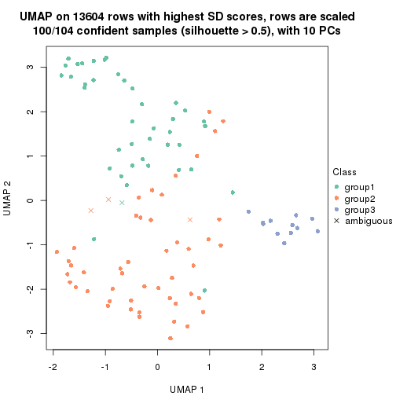
dimension_reduction(res, k = 4, method = "UMAP")
dimension_reduction(res, k = 5, method = "UMAP")
dimension_reduction(res, k = 6, method = "UMAP")
Following heatmap shows how subgroups are split when increasing k:
collect_classes(res)
Test correlation between subgroups and known annotations. If the known annotation is numeric, one-way ANOVA test is applied, and if the known annotation is discrete, chi-squared contingency table test is applied.
test_to_known_factors(res)
#> n cell.type(p) disease.state(p) other(p) k
#> SD:kmeans 94 1.36e-04 9.18e-08 1.68e-04 2
#> SD:kmeans 100 1.93e-22 6.96e-12 1.31e-09 3
#> SD:kmeans 93 4.97e-20 2.02e-13 2.07e-11 4
#> SD:kmeans 77 1.35e-16 1.30e-15 4.16e-13 5
#> SD:kmeans 54 5.26e-11 4.84e-18 1.13e-11 6
If matrix rows can be associated to genes, consider to use functional_enrichment(res,
...) to perform function enrichment for the signature genes. See this vignette for more detailed explanations.
The object with results only for a single top-value method and a single partition method can be extracted as:
res = res_list["SD", "skmeans"]
# you can also extract it by
# res = res_list["SD:skmeans"]
A summary of res and all the functions that can be applied to it:
res
#> A 'ConsensusPartition' object with k = 2, 3, 4, 5, 6.
#> On a matrix with 13604 rows and 104 columns.
#> Top rows (1000, 2000, 3000, 4000, 5000) are extracted by 'SD' method.
#> Subgroups are detected by 'skmeans' method.
#> Performed in total 1250 partitions by row resampling.
#> Best k for subgroups seems to be 2.
#>
#> Following methods can be applied to this 'ConsensusPartition' object:
#> [1] "cola_report" "collect_classes" "collect_plots"
#> [4] "collect_stats" "colnames" "compare_signatures"
#> [7] "consensus_heatmap" "dimension_reduction" "functional_enrichment"
#> [10] "get_anno_col" "get_anno" "get_classes"
#> [13] "get_consensus" "get_matrix" "get_membership"
#> [16] "get_param" "get_signatures" "get_stats"
#> [19] "is_best_k" "is_stable_k" "membership_heatmap"
#> [22] "ncol" "nrow" "plot_ecdf"
#> [25] "rownames" "select_partition_number" "show"
#> [28] "suggest_best_k" "test_to_known_factors"
collect_plots() function collects all the plots made from res for all k (number of partitions)
into one single page to provide an easy and fast comparison between different k.
collect_plots(res)
The plots are:
k and the heatmap of
predicted classes for each k.k.k.k.All the plots in panels can be made by individual functions and they are plotted later in this section.
select_partition_number() produces several plots showing different
statistics for choosing “optimized” k. There are following statistics:
k;k, the area increased is defined as \(A_k - A_{k-1}\).The detailed explanations of these statistics can be found in the cola vignette.
Generally speaking, lower PAC score, higher mean silhouette score or higher
concordance corresponds to better partition. Rand index and Jaccard index
measure how similar the current partition is compared to partition with k-1.
If they are too similar, we won't accept k is better than k-1.
select_partition_number(res)
The numeric values for all these statistics can be obtained by get_stats().
get_stats(res)
#> k 1-PAC mean_silhouette concordance area_increased Rand Jaccard
#> 2 2 0.884 0.912 0.965 0.5025 0.497 0.497
#> 3 3 0.747 0.771 0.886 0.3155 0.690 0.462
#> 4 4 0.894 0.868 0.948 0.1250 0.839 0.579
#> 5 5 0.804 0.788 0.879 0.0570 0.946 0.795
#> 6 6 0.810 0.748 0.856 0.0485 0.932 0.704
suggest_best_k() suggests the best \(k\) based on these statistics. The rules are as follows:
suggest_best_k(res)
#> [1] 2
Following shows the table of the partitions (You need to click the show/hide
code output link to see it). The membership matrix (columns with name p*)
is inferred by
clue::cl_consensus()
function with the SE method. Basically the value in the membership matrix
represents the probability to belong to a certain group. The finall class
label for an item is determined with the group with highest probability it
belongs to.
In get_classes() function, the entropy is calculated from the membership
matrix and the silhouette score is calculated from the consensus matrix.
cbind(get_classes(res, k = 2), get_membership(res, k = 2))
#> class entropy silhouette p1 p2
#> GSM141334 1 0.0000 0.9635 1.000 0.000
#> GSM141335 1 0.0000 0.9635 1.000 0.000
#> GSM141336 2 0.7219 0.7560 0.200 0.800
#> GSM141337 1 0.0000 0.9635 1.000 0.000
#> GSM141184 2 0.7883 0.7054 0.236 0.764
#> GSM141185 2 0.7602 0.7292 0.220 0.780
#> GSM141186 2 0.0000 0.9592 0.000 1.000
#> GSM141243 2 0.0000 0.9592 0.000 1.000
#> GSM141244 1 0.0000 0.9635 1.000 0.000
#> GSM141246 1 0.3584 0.9015 0.932 0.068
#> GSM141247 2 0.7602 0.7292 0.220 0.780
#> GSM141248 1 0.0000 0.9635 1.000 0.000
#> GSM141249 1 0.0000 0.9635 1.000 0.000
#> GSM141258 2 0.9754 0.3438 0.408 0.592
#> GSM141259 2 0.0000 0.9592 0.000 1.000
#> GSM141260 1 0.1843 0.9396 0.972 0.028
#> GSM141261 2 0.0000 0.9592 0.000 1.000
#> GSM141262 2 0.0000 0.9592 0.000 1.000
#> GSM141263 2 0.0000 0.9592 0.000 1.000
#> GSM141338 1 0.9833 0.2129 0.576 0.424
#> GSM141339 1 0.0000 0.9635 1.000 0.000
#> GSM141340 1 0.0000 0.9635 1.000 0.000
#> GSM141265 2 0.0000 0.9592 0.000 1.000
#> GSM141267 1 0.2948 0.9189 0.948 0.052
#> GSM141330 2 0.0000 0.9592 0.000 1.000
#> GSM141266 2 0.0000 0.9592 0.000 1.000
#> GSM141264 2 0.0000 0.9592 0.000 1.000
#> GSM141341 2 0.0000 0.9592 0.000 1.000
#> GSM141342 2 0.0000 0.9592 0.000 1.000
#> GSM141343 2 0.0000 0.9592 0.000 1.000
#> GSM141356 2 0.0000 0.9592 0.000 1.000
#> GSM141357 1 0.6048 0.8059 0.852 0.148
#> GSM141358 2 0.0000 0.9592 0.000 1.000
#> GSM141359 2 0.0000 0.9592 0.000 1.000
#> GSM141360 1 0.0000 0.9635 1.000 0.000
#> GSM141361 2 0.0000 0.9592 0.000 1.000
#> GSM141362 2 0.0000 0.9592 0.000 1.000
#> GSM141363 2 0.9460 0.4610 0.364 0.636
#> GSM141364 1 0.7139 0.7409 0.804 0.196
#> GSM141365 2 0.0000 0.9592 0.000 1.000
#> GSM141366 2 0.0000 0.9592 0.000 1.000
#> GSM141367 2 0.0000 0.9592 0.000 1.000
#> GSM141368 2 0.0000 0.9592 0.000 1.000
#> GSM141369 2 0.0000 0.9592 0.000 1.000
#> GSM141370 2 0.0000 0.9592 0.000 1.000
#> GSM141371 2 0.0000 0.9592 0.000 1.000
#> GSM141372 2 0.0000 0.9592 0.000 1.000
#> GSM141373 1 0.0000 0.9635 1.000 0.000
#> GSM141374 1 0.0000 0.9635 1.000 0.000
#> GSM141375 2 0.0000 0.9592 0.000 1.000
#> GSM141376 1 0.0000 0.9635 1.000 0.000
#> GSM141377 1 0.0000 0.9635 1.000 0.000
#> GSM141378 1 0.0000 0.9635 1.000 0.000
#> GSM141380 1 0.0000 0.9635 1.000 0.000
#> GSM141387 1 0.0000 0.9635 1.000 0.000
#> GSM141395 1 0.0000 0.9635 1.000 0.000
#> GSM141397 2 0.0000 0.9592 0.000 1.000
#> GSM141398 1 0.9833 0.2129 0.576 0.424
#> GSM141401 1 0.0000 0.9635 1.000 0.000
#> GSM141399 1 0.0000 0.9635 1.000 0.000
#> GSM141379 1 0.0000 0.9635 1.000 0.000
#> GSM141381 1 0.0000 0.9635 1.000 0.000
#> GSM141383 1 0.0000 0.9635 1.000 0.000
#> GSM141384 1 0.0000 0.9635 1.000 0.000
#> GSM141385 1 0.0000 0.9635 1.000 0.000
#> GSM141388 1 0.0000 0.9635 1.000 0.000
#> GSM141389 1 0.0000 0.9635 1.000 0.000
#> GSM141391 1 0.0000 0.9635 1.000 0.000
#> GSM141394 2 0.0000 0.9592 0.000 1.000
#> GSM141396 1 0.0000 0.9635 1.000 0.000
#> GSM141403 1 0.0672 0.9570 0.992 0.008
#> GSM141404 1 0.0000 0.9635 1.000 0.000
#> GSM141386 1 0.0000 0.9635 1.000 0.000
#> GSM141382 1 0.0000 0.9635 1.000 0.000
#> GSM141390 1 0.0000 0.9635 1.000 0.000
#> GSM141393 1 0.0000 0.9635 1.000 0.000
#> GSM141400 1 0.0000 0.9635 1.000 0.000
#> GSM141402 2 0.0000 0.9592 0.000 1.000
#> GSM141392 1 0.9998 0.0567 0.508 0.492
#> GSM141405 1 0.0000 0.9635 1.000 0.000
#> GSM141406 2 0.7139 0.7610 0.196 0.804
#> GSM141407 1 0.0000 0.9635 1.000 0.000
#> GSM141408 1 0.0000 0.9635 1.000 0.000
#> GSM141409 1 0.0000 0.9635 1.000 0.000
#> GSM141410 1 0.0000 0.9635 1.000 0.000
#> GSM141411 1 0.0000 0.9635 1.000 0.000
#> GSM141412 1 0.0000 0.9635 1.000 0.000
#> GSM141413 1 0.0000 0.9635 1.000 0.000
#> GSM141414 1 0.0000 0.9635 1.000 0.000
#> GSM141415 1 0.0000 0.9635 1.000 0.000
#> GSM141416 1 0.0000 0.9635 1.000 0.000
#> GSM141417 1 0.0000 0.9635 1.000 0.000
#> GSM141420 2 0.0000 0.9592 0.000 1.000
#> GSM141421 2 0.0000 0.9592 0.000 1.000
#> GSM141422 2 0.0000 0.9592 0.000 1.000
#> GSM141423 2 0.0000 0.9592 0.000 1.000
#> GSM141424 2 0.0000 0.9592 0.000 1.000
#> GSM141427 2 0.0000 0.9592 0.000 1.000
#> GSM141428 2 0.0000 0.9592 0.000 1.000
#> GSM141418 2 0.0000 0.9592 0.000 1.000
#> GSM141419 2 0.0000 0.9592 0.000 1.000
#> GSM141425 2 0.0000 0.9592 0.000 1.000
#> GSM141426 2 0.0000 0.9592 0.000 1.000
#> GSM141429 2 0.0000 0.9592 0.000 1.000
cbind(get_classes(res, k = 3), get_membership(res, k = 3))
#> class entropy silhouette p1 p2 p3
#> GSM141334 2 0.0000 0.7230 0.000 1.000 0.000
#> GSM141335 2 0.0000 0.7230 0.000 1.000 0.000
#> GSM141336 2 0.0000 0.7230 0.000 1.000 0.000
#> GSM141337 1 0.6291 0.3204 0.532 0.468 0.000
#> GSM141184 2 0.0000 0.7230 0.000 1.000 0.000
#> GSM141185 2 0.0000 0.7230 0.000 1.000 0.000
#> GSM141186 2 0.6291 0.4262 0.000 0.532 0.468
#> GSM141243 2 0.0592 0.7207 0.000 0.988 0.012
#> GSM141244 2 0.0000 0.7230 0.000 1.000 0.000
#> GSM141246 2 0.0000 0.7230 0.000 1.000 0.000
#> GSM141247 2 0.0000 0.7230 0.000 1.000 0.000
#> GSM141248 2 0.5016 0.4727 0.240 0.760 0.000
#> GSM141249 1 0.1411 0.9213 0.964 0.036 0.000
#> GSM141258 2 0.0000 0.7230 0.000 1.000 0.000
#> GSM141259 2 0.6291 0.4262 0.000 0.532 0.468
#> GSM141260 2 0.2066 0.6873 0.060 0.940 0.000
#> GSM141261 2 0.4555 0.6418 0.000 0.800 0.200
#> GSM141262 2 0.0000 0.7230 0.000 1.000 0.000
#> GSM141263 2 0.6291 0.4262 0.000 0.532 0.468
#> GSM141338 2 0.0000 0.7230 0.000 1.000 0.000
#> GSM141339 2 0.0000 0.7230 0.000 1.000 0.000
#> GSM141340 1 0.0000 0.9514 1.000 0.000 0.000
#> GSM141265 3 0.0000 0.9713 0.000 0.000 1.000
#> GSM141267 2 0.8277 -0.0412 0.076 0.468 0.456
#> GSM141330 3 0.4555 0.6593 0.000 0.200 0.800
#> GSM141266 2 0.5178 0.6059 0.000 0.744 0.256
#> GSM141264 3 0.0000 0.9713 0.000 0.000 1.000
#> GSM141341 3 0.0237 0.9667 0.000 0.004 0.996
#> GSM141342 3 0.3941 0.7241 0.000 0.156 0.844
#> GSM141343 2 0.6291 0.4262 0.000 0.532 0.468
#> GSM141356 3 0.0000 0.9713 0.000 0.000 1.000
#> GSM141357 1 0.0000 0.9514 1.000 0.000 0.000
#> GSM141358 2 0.6291 0.4262 0.000 0.532 0.468
#> GSM141359 2 0.6291 0.4262 0.000 0.532 0.468
#> GSM141360 1 0.0000 0.9514 1.000 0.000 0.000
#> GSM141361 3 0.0000 0.9713 0.000 0.000 1.000
#> GSM141362 2 0.6291 0.4262 0.000 0.532 0.468
#> GSM141363 2 0.4555 0.6185 0.200 0.800 0.000
#> GSM141364 2 0.9338 0.2891 0.360 0.468 0.172
#> GSM141365 3 0.0000 0.9713 0.000 0.000 1.000
#> GSM141366 2 0.6291 0.4262 0.000 0.532 0.468
#> GSM141367 3 0.0000 0.9713 0.000 0.000 1.000
#> GSM141368 2 0.6291 0.4262 0.000 0.532 0.468
#> GSM141369 2 0.6291 0.4262 0.000 0.532 0.468
#> GSM141370 2 0.6291 0.4262 0.000 0.532 0.468
#> GSM141371 2 0.6291 0.4262 0.000 0.532 0.468
#> GSM141372 2 0.6291 0.4262 0.000 0.532 0.468
#> GSM141373 1 0.6286 0.3277 0.536 0.464 0.000
#> GSM141374 1 0.0000 0.9514 1.000 0.000 0.000
#> GSM141375 3 0.0000 0.9713 0.000 0.000 1.000
#> GSM141376 1 0.0000 0.9514 1.000 0.000 0.000
#> GSM141377 1 0.0000 0.9514 1.000 0.000 0.000
#> GSM141378 1 0.0000 0.9514 1.000 0.000 0.000
#> GSM141380 1 0.0000 0.9514 1.000 0.000 0.000
#> GSM141387 1 0.0000 0.9514 1.000 0.000 0.000
#> GSM141395 1 0.5859 0.5431 0.656 0.344 0.000
#> GSM141397 2 0.5465 0.5838 0.000 0.712 0.288
#> GSM141398 2 0.0000 0.7230 0.000 1.000 0.000
#> GSM141401 2 0.5016 0.5741 0.240 0.760 0.000
#> GSM141399 2 0.0237 0.7214 0.004 0.996 0.000
#> GSM141379 1 0.0000 0.9514 1.000 0.000 0.000
#> GSM141381 1 0.0000 0.9514 1.000 0.000 0.000
#> GSM141383 1 0.0000 0.9514 1.000 0.000 0.000
#> GSM141384 1 0.0000 0.9514 1.000 0.000 0.000
#> GSM141385 1 0.0000 0.9514 1.000 0.000 0.000
#> GSM141388 1 0.0000 0.9514 1.000 0.000 0.000
#> GSM141389 1 0.0000 0.9514 1.000 0.000 0.000
#> GSM141391 1 0.0000 0.9514 1.000 0.000 0.000
#> GSM141394 2 0.0000 0.7230 0.000 1.000 0.000
#> GSM141396 1 0.0000 0.9514 1.000 0.000 0.000
#> GSM141403 2 0.6280 0.2209 0.460 0.540 0.000
#> GSM141404 1 0.0424 0.9456 0.992 0.008 0.000
#> GSM141386 1 0.0000 0.9514 1.000 0.000 0.000
#> GSM141382 1 0.0000 0.9514 1.000 0.000 0.000
#> GSM141390 1 0.0000 0.9514 1.000 0.000 0.000
#> GSM141393 1 0.0000 0.9514 1.000 0.000 0.000
#> GSM141400 1 0.0000 0.9514 1.000 0.000 0.000
#> GSM141402 2 0.6291 0.4262 0.000 0.532 0.468
#> GSM141392 3 0.2448 0.8664 0.076 0.000 0.924
#> GSM141405 1 0.0000 0.9514 1.000 0.000 0.000
#> GSM141406 2 0.0424 0.7216 0.000 0.992 0.008
#> GSM141407 1 0.0000 0.9514 1.000 0.000 0.000
#> GSM141408 1 0.0000 0.9514 1.000 0.000 0.000
#> GSM141409 1 0.0592 0.9426 0.988 0.012 0.000
#> GSM141410 1 0.0000 0.9514 1.000 0.000 0.000
#> GSM141411 1 0.0000 0.9514 1.000 0.000 0.000
#> GSM141412 1 0.0000 0.9514 1.000 0.000 0.000
#> GSM141413 1 0.4887 0.7200 0.772 0.228 0.000
#> GSM141414 1 0.4887 0.7200 0.772 0.228 0.000
#> GSM141415 1 0.0000 0.9514 1.000 0.000 0.000
#> GSM141416 2 0.0237 0.7213 0.004 0.996 0.000
#> GSM141417 1 0.0000 0.9514 1.000 0.000 0.000
#> GSM141420 3 0.0000 0.9713 0.000 0.000 1.000
#> GSM141421 3 0.0000 0.9713 0.000 0.000 1.000
#> GSM141422 3 0.0000 0.9713 0.000 0.000 1.000
#> GSM141423 3 0.0000 0.9713 0.000 0.000 1.000
#> GSM141424 3 0.0000 0.9713 0.000 0.000 1.000
#> GSM141427 3 0.0000 0.9713 0.000 0.000 1.000
#> GSM141428 3 0.0000 0.9713 0.000 0.000 1.000
#> GSM141418 3 0.0000 0.9713 0.000 0.000 1.000
#> GSM141419 3 0.0000 0.9713 0.000 0.000 1.000
#> GSM141425 3 0.0000 0.9713 0.000 0.000 1.000
#> GSM141426 3 0.0000 0.9713 0.000 0.000 1.000
#> GSM141429 3 0.0000 0.9713 0.000 0.000 1.000
cbind(get_classes(res, k = 4), get_membership(res, k = 4))
#> class entropy silhouette p1 p2 p3 p4
#> GSM141334 2 0.0000 0.9452 0.000 1.000 0.000 0.000
#> GSM141335 2 0.0000 0.9452 0.000 1.000 0.000 0.000
#> GSM141336 2 0.0000 0.9452 0.000 1.000 0.000 0.000
#> GSM141337 2 0.0000 0.9452 0.000 1.000 0.000 0.000
#> GSM141184 2 0.0000 0.9452 0.000 1.000 0.000 0.000
#> GSM141185 2 0.0000 0.9452 0.000 1.000 0.000 0.000
#> GSM141186 4 0.0000 0.8852 0.000 0.000 0.000 1.000
#> GSM141243 4 0.4431 0.5641 0.000 0.304 0.000 0.696
#> GSM141244 2 0.0000 0.9452 0.000 1.000 0.000 0.000
#> GSM141246 2 0.0000 0.9452 0.000 1.000 0.000 0.000
#> GSM141247 2 0.0000 0.9452 0.000 1.000 0.000 0.000
#> GSM141248 2 0.0000 0.9452 0.000 1.000 0.000 0.000
#> GSM141249 1 0.0000 0.9700 1.000 0.000 0.000 0.000
#> GSM141258 2 0.0000 0.9452 0.000 1.000 0.000 0.000
#> GSM141259 4 0.0000 0.8852 0.000 0.000 0.000 1.000
#> GSM141260 2 0.0000 0.9452 0.000 1.000 0.000 0.000
#> GSM141261 4 0.3356 0.7470 0.000 0.176 0.000 0.824
#> GSM141262 2 0.0000 0.9452 0.000 1.000 0.000 0.000
#> GSM141263 4 0.0000 0.8852 0.000 0.000 0.000 1.000
#> GSM141338 2 0.0000 0.9452 0.000 1.000 0.000 0.000
#> GSM141339 2 0.0000 0.9452 0.000 1.000 0.000 0.000
#> GSM141340 1 0.0592 0.9568 0.984 0.016 0.000 0.000
#> GSM141265 3 0.0000 0.9517 0.000 0.000 1.000 0.000
#> GSM141267 2 0.0188 0.9421 0.000 0.996 0.004 0.000
#> GSM141330 3 0.0000 0.9517 0.000 0.000 1.000 0.000
#> GSM141266 4 0.3610 0.7190 0.000 0.200 0.000 0.800
#> GSM141264 3 0.0000 0.9517 0.000 0.000 1.000 0.000
#> GSM141341 4 0.0000 0.8852 0.000 0.000 0.000 1.000
#> GSM141342 4 0.0000 0.8852 0.000 0.000 0.000 1.000
#> GSM141343 4 0.0000 0.8852 0.000 0.000 0.000 1.000
#> GSM141356 3 0.4967 0.1933 0.000 0.000 0.548 0.452
#> GSM141357 1 0.3726 0.7203 0.788 0.000 0.000 0.212
#> GSM141358 4 0.0000 0.8852 0.000 0.000 0.000 1.000
#> GSM141359 4 0.0000 0.8852 0.000 0.000 0.000 1.000
#> GSM141360 1 0.3569 0.7442 0.804 0.000 0.000 0.196
#> GSM141361 4 0.0000 0.8852 0.000 0.000 0.000 1.000
#> GSM141362 4 0.0000 0.8852 0.000 0.000 0.000 1.000
#> GSM141363 4 0.0000 0.8852 0.000 0.000 0.000 1.000
#> GSM141364 4 0.6862 0.1372 0.104 0.408 0.000 0.488
#> GSM141365 4 0.4697 0.3583 0.000 0.000 0.356 0.644
#> GSM141366 4 0.0000 0.8852 0.000 0.000 0.000 1.000
#> GSM141367 3 0.4431 0.5536 0.000 0.000 0.696 0.304
#> GSM141368 4 0.0000 0.8852 0.000 0.000 0.000 1.000
#> GSM141369 4 0.0000 0.8852 0.000 0.000 0.000 1.000
#> GSM141370 4 0.0000 0.8852 0.000 0.000 0.000 1.000
#> GSM141371 4 0.0000 0.8852 0.000 0.000 0.000 1.000
#> GSM141372 4 0.0000 0.8852 0.000 0.000 0.000 1.000
#> GSM141373 2 0.2530 0.8327 0.112 0.888 0.000 0.000
#> GSM141374 1 0.0000 0.9700 1.000 0.000 0.000 0.000
#> GSM141375 4 0.4948 0.2326 0.000 0.000 0.440 0.560
#> GSM141376 1 0.0000 0.9700 1.000 0.000 0.000 0.000
#> GSM141377 1 0.0000 0.9700 1.000 0.000 0.000 0.000
#> GSM141378 1 0.0000 0.9700 1.000 0.000 0.000 0.000
#> GSM141380 1 0.0000 0.9700 1.000 0.000 0.000 0.000
#> GSM141387 1 0.0000 0.9700 1.000 0.000 0.000 0.000
#> GSM141395 1 0.4996 0.0405 0.516 0.484 0.000 0.000
#> GSM141397 4 0.4547 0.7457 0.000 0.092 0.104 0.804
#> GSM141398 2 0.0000 0.9452 0.000 1.000 0.000 0.000
#> GSM141401 4 0.7594 0.2632 0.256 0.264 0.000 0.480
#> GSM141399 2 0.0000 0.9452 0.000 1.000 0.000 0.000
#> GSM141379 1 0.0000 0.9700 1.000 0.000 0.000 0.000
#> GSM141381 1 0.0000 0.9700 1.000 0.000 0.000 0.000
#> GSM141383 1 0.0000 0.9700 1.000 0.000 0.000 0.000
#> GSM141384 1 0.0000 0.9700 1.000 0.000 0.000 0.000
#> GSM141385 1 0.0000 0.9700 1.000 0.000 0.000 0.000
#> GSM141388 1 0.0000 0.9700 1.000 0.000 0.000 0.000
#> GSM141389 1 0.0000 0.9700 1.000 0.000 0.000 0.000
#> GSM141391 1 0.0000 0.9700 1.000 0.000 0.000 0.000
#> GSM141394 2 0.0000 0.9452 0.000 1.000 0.000 0.000
#> GSM141396 1 0.0000 0.9700 1.000 0.000 0.000 0.000
#> GSM141403 4 0.0000 0.8852 0.000 0.000 0.000 1.000
#> GSM141404 1 0.0000 0.9700 1.000 0.000 0.000 0.000
#> GSM141386 1 0.0000 0.9700 1.000 0.000 0.000 0.000
#> GSM141382 1 0.0000 0.9700 1.000 0.000 0.000 0.000
#> GSM141390 1 0.0000 0.9700 1.000 0.000 0.000 0.000
#> GSM141393 1 0.0000 0.9700 1.000 0.000 0.000 0.000
#> GSM141400 1 0.0000 0.9700 1.000 0.000 0.000 0.000
#> GSM141402 4 0.0000 0.8852 0.000 0.000 0.000 1.000
#> GSM141392 3 0.0000 0.9517 0.000 0.000 1.000 0.000
#> GSM141405 1 0.0592 0.9560 0.984 0.000 0.000 0.016
#> GSM141406 2 0.4830 0.2634 0.000 0.608 0.000 0.392
#> GSM141407 1 0.0000 0.9700 1.000 0.000 0.000 0.000
#> GSM141408 1 0.0000 0.9700 1.000 0.000 0.000 0.000
#> GSM141409 1 0.0817 0.9493 0.976 0.024 0.000 0.000
#> GSM141410 1 0.0000 0.9700 1.000 0.000 0.000 0.000
#> GSM141411 1 0.0000 0.9700 1.000 0.000 0.000 0.000
#> GSM141412 1 0.0000 0.9700 1.000 0.000 0.000 0.000
#> GSM141413 2 0.4193 0.6295 0.268 0.732 0.000 0.000
#> GSM141414 2 0.4193 0.6295 0.268 0.732 0.000 0.000
#> GSM141415 1 0.0000 0.9700 1.000 0.000 0.000 0.000
#> GSM141416 2 0.0000 0.9452 0.000 1.000 0.000 0.000
#> GSM141417 1 0.0000 0.9700 1.000 0.000 0.000 0.000
#> GSM141420 3 0.0000 0.9517 0.000 0.000 1.000 0.000
#> GSM141421 3 0.0000 0.9517 0.000 0.000 1.000 0.000
#> GSM141422 3 0.0000 0.9517 0.000 0.000 1.000 0.000
#> GSM141423 3 0.0000 0.9517 0.000 0.000 1.000 0.000
#> GSM141424 3 0.0000 0.9517 0.000 0.000 1.000 0.000
#> GSM141427 3 0.0000 0.9517 0.000 0.000 1.000 0.000
#> GSM141428 3 0.0000 0.9517 0.000 0.000 1.000 0.000
#> GSM141418 3 0.0000 0.9517 0.000 0.000 1.000 0.000
#> GSM141419 3 0.0000 0.9517 0.000 0.000 1.000 0.000
#> GSM141425 3 0.0000 0.9517 0.000 0.000 1.000 0.000
#> GSM141426 3 0.0000 0.9517 0.000 0.000 1.000 0.000
#> GSM141429 3 0.0000 0.9517 0.000 0.000 1.000 0.000
cbind(get_classes(res, k = 5), get_membership(res, k = 5))
#> class entropy silhouette p1 p2 p3 p4 p5
#> GSM141334 2 0.0510 0.8931 0.000 0.984 0.000 0.000 0.016
#> GSM141335 2 0.0000 0.8938 0.000 1.000 0.000 0.000 0.000
#> GSM141336 2 0.0771 0.8918 0.000 0.976 0.000 0.004 0.020
#> GSM141337 2 0.2020 0.8519 0.000 0.900 0.000 0.000 0.100
#> GSM141184 2 0.0000 0.8938 0.000 1.000 0.000 0.000 0.000
#> GSM141185 2 0.0771 0.8918 0.000 0.976 0.000 0.004 0.020
#> GSM141186 4 0.0290 0.7671 0.000 0.000 0.000 0.992 0.008
#> GSM141243 4 0.3596 0.6112 0.000 0.200 0.000 0.784 0.016
#> GSM141244 2 0.0000 0.8938 0.000 1.000 0.000 0.000 0.000
#> GSM141246 2 0.1851 0.8641 0.000 0.912 0.000 0.000 0.088
#> GSM141247 2 0.0771 0.8918 0.000 0.976 0.000 0.004 0.020
#> GSM141248 2 0.0000 0.8938 0.000 1.000 0.000 0.000 0.000
#> GSM141249 1 0.3471 0.8243 0.836 0.072 0.000 0.000 0.092
#> GSM141258 2 0.0771 0.8918 0.000 0.976 0.000 0.004 0.020
#> GSM141259 4 0.0162 0.7661 0.000 0.000 0.000 0.996 0.004
#> GSM141260 2 0.2625 0.8260 0.000 0.876 0.000 0.108 0.016
#> GSM141261 4 0.2136 0.7092 0.000 0.088 0.000 0.904 0.008
#> GSM141262 2 0.2669 0.8266 0.000 0.876 0.000 0.104 0.020
#> GSM141263 4 0.0404 0.7625 0.000 0.000 0.000 0.988 0.012
#> GSM141338 2 0.0609 0.8925 0.000 0.980 0.000 0.000 0.020
#> GSM141339 2 0.0404 0.8940 0.000 0.988 0.000 0.000 0.012
#> GSM141340 1 0.4269 0.7677 0.776 0.116 0.000 0.000 0.108
#> GSM141265 3 0.2519 0.8639 0.000 0.000 0.884 0.100 0.016
#> GSM141267 2 0.1522 0.8778 0.000 0.944 0.012 0.000 0.044
#> GSM141330 3 0.2927 0.8532 0.000 0.000 0.868 0.092 0.040
#> GSM141266 4 0.2069 0.7143 0.000 0.076 0.000 0.912 0.012
#> GSM141264 3 0.2408 0.8702 0.000 0.000 0.892 0.092 0.016
#> GSM141341 4 0.1965 0.7926 0.000 0.000 0.000 0.904 0.096
#> GSM141342 4 0.2280 0.7945 0.000 0.000 0.000 0.880 0.120
#> GSM141343 4 0.2280 0.7945 0.000 0.000 0.000 0.880 0.120
#> GSM141356 5 0.5218 0.6545 0.000 0.000 0.180 0.136 0.684
#> GSM141357 5 0.4666 0.6951 0.180 0.000 0.000 0.088 0.732
#> GSM141358 5 0.3983 0.5555 0.000 0.000 0.000 0.340 0.660
#> GSM141359 4 0.3039 0.7302 0.000 0.000 0.000 0.808 0.192
#> GSM141360 5 0.4736 0.6722 0.216 0.000 0.000 0.072 0.712
#> GSM141361 5 0.3766 0.6648 0.000 0.000 0.004 0.268 0.728
#> GSM141362 4 0.2230 0.7951 0.000 0.000 0.000 0.884 0.116
#> GSM141363 4 0.4210 0.2413 0.000 0.000 0.000 0.588 0.412
#> GSM141364 5 0.4750 0.6952 0.024 0.080 0.000 0.132 0.764
#> GSM141365 5 0.5082 0.6789 0.000 0.000 0.096 0.220 0.684
#> GSM141366 4 0.2280 0.7945 0.000 0.000 0.000 0.880 0.120
#> GSM141367 3 0.6383 -0.0432 0.000 0.000 0.488 0.184 0.328
#> GSM141368 4 0.2280 0.7945 0.000 0.000 0.000 0.880 0.120
#> GSM141369 4 0.2329 0.7945 0.000 0.000 0.000 0.876 0.124
#> GSM141370 4 0.2329 0.7945 0.000 0.000 0.000 0.876 0.124
#> GSM141371 4 0.2329 0.7945 0.000 0.000 0.000 0.876 0.124
#> GSM141372 4 0.2329 0.7945 0.000 0.000 0.000 0.876 0.124
#> GSM141373 2 0.5323 0.6167 0.080 0.624 0.000 0.000 0.296
#> GSM141374 1 0.0404 0.9072 0.988 0.000 0.000 0.000 0.012
#> GSM141375 4 0.3461 0.5707 0.000 0.000 0.224 0.772 0.004
#> GSM141376 1 0.0000 0.9086 1.000 0.000 0.000 0.000 0.000
#> GSM141377 1 0.0609 0.9015 0.980 0.000 0.000 0.000 0.020
#> GSM141378 1 0.2773 0.8289 0.836 0.000 0.000 0.000 0.164
#> GSM141380 1 0.0000 0.9086 1.000 0.000 0.000 0.000 0.000
#> GSM141387 1 0.0000 0.9086 1.000 0.000 0.000 0.000 0.000
#> GSM141395 1 0.6778 0.0921 0.392 0.312 0.000 0.000 0.296
#> GSM141397 4 0.2537 0.7117 0.000 0.016 0.024 0.904 0.056
#> GSM141398 2 0.0609 0.8925 0.000 0.980 0.000 0.000 0.020
#> GSM141401 4 0.7887 0.1804 0.192 0.140 0.000 0.468 0.200
#> GSM141399 2 0.3612 0.7309 0.000 0.732 0.000 0.000 0.268
#> GSM141379 1 0.0290 0.9083 0.992 0.000 0.000 0.000 0.008
#> GSM141381 1 0.0000 0.9086 1.000 0.000 0.000 0.000 0.000
#> GSM141383 1 0.0000 0.9086 1.000 0.000 0.000 0.000 0.000
#> GSM141384 1 0.0000 0.9086 1.000 0.000 0.000 0.000 0.000
#> GSM141385 1 0.3508 0.7570 0.748 0.000 0.000 0.000 0.252
#> GSM141388 1 0.0162 0.9079 0.996 0.000 0.000 0.000 0.004
#> GSM141389 1 0.0162 0.9079 0.996 0.000 0.000 0.000 0.004
#> GSM141391 1 0.0703 0.9033 0.976 0.000 0.000 0.000 0.024
#> GSM141394 2 0.3282 0.7993 0.000 0.804 0.000 0.008 0.188
#> GSM141396 1 0.3395 0.7707 0.764 0.000 0.000 0.000 0.236
#> GSM141403 5 0.3612 0.6551 0.000 0.000 0.000 0.268 0.732
#> GSM141404 5 0.4533 0.1997 0.448 0.008 0.000 0.000 0.544
#> GSM141386 1 0.4161 0.7099 0.704 0.016 0.000 0.000 0.280
#> GSM141382 1 0.0162 0.9082 0.996 0.000 0.000 0.000 0.004
#> GSM141390 1 0.0290 0.9076 0.992 0.000 0.000 0.000 0.008
#> GSM141393 1 0.0290 0.9077 0.992 0.000 0.000 0.000 0.008
#> GSM141400 1 0.0290 0.9077 0.992 0.000 0.000 0.000 0.008
#> GSM141402 4 0.2329 0.7945 0.000 0.000 0.000 0.876 0.124
#> GSM141392 3 0.0162 0.9398 0.000 0.000 0.996 0.000 0.004
#> GSM141405 1 0.1628 0.8615 0.936 0.000 0.000 0.056 0.008
#> GSM141406 4 0.6386 0.1446 0.000 0.368 0.000 0.460 0.172
#> GSM141407 1 0.0162 0.9084 0.996 0.000 0.000 0.000 0.004
#> GSM141408 1 0.0000 0.9086 1.000 0.000 0.000 0.000 0.000
#> GSM141409 1 0.4933 0.6863 0.688 0.076 0.000 0.000 0.236
#> GSM141410 1 0.0162 0.9084 0.996 0.000 0.000 0.000 0.004
#> GSM141411 1 0.2471 0.8438 0.864 0.000 0.000 0.000 0.136
#> GSM141412 1 0.0162 0.9084 0.996 0.000 0.000 0.000 0.004
#> GSM141413 2 0.6006 0.5270 0.196 0.584 0.000 0.000 0.220
#> GSM141414 2 0.6035 0.5185 0.204 0.580 0.000 0.000 0.216
#> GSM141415 1 0.0162 0.9084 0.996 0.000 0.000 0.000 0.004
#> GSM141416 2 0.0162 0.8939 0.000 0.996 0.000 0.000 0.004
#> GSM141417 1 0.2953 0.8320 0.844 0.012 0.000 0.000 0.144
#> GSM141420 3 0.0000 0.9426 0.000 0.000 1.000 0.000 0.000
#> GSM141421 3 0.0000 0.9426 0.000 0.000 1.000 0.000 0.000
#> GSM141422 3 0.0000 0.9426 0.000 0.000 1.000 0.000 0.000
#> GSM141423 3 0.0000 0.9426 0.000 0.000 1.000 0.000 0.000
#> GSM141424 3 0.0000 0.9426 0.000 0.000 1.000 0.000 0.000
#> GSM141427 3 0.0000 0.9426 0.000 0.000 1.000 0.000 0.000
#> GSM141428 3 0.0000 0.9426 0.000 0.000 1.000 0.000 0.000
#> GSM141418 3 0.0000 0.9426 0.000 0.000 1.000 0.000 0.000
#> GSM141419 3 0.0000 0.9426 0.000 0.000 1.000 0.000 0.000
#> GSM141425 3 0.0000 0.9426 0.000 0.000 1.000 0.000 0.000
#> GSM141426 3 0.0000 0.9426 0.000 0.000 1.000 0.000 0.000
#> GSM141429 3 0.0000 0.9426 0.000 0.000 1.000 0.000 0.000
cbind(get_classes(res, k = 6), get_membership(res, k = 6))
#> class entropy silhouette p1 p2 p3 p4 p5 p6
#> GSM141334 2 0.0692 0.88910 0.000 0.976 0.000 0.000 0.020 0.004
#> GSM141335 2 0.1327 0.88404 0.000 0.936 0.000 0.000 0.064 0.000
#> GSM141336 2 0.0520 0.88557 0.000 0.984 0.000 0.008 0.000 0.008
#> GSM141337 2 0.3563 0.49206 0.000 0.664 0.000 0.000 0.336 0.000
#> GSM141184 2 0.1843 0.88179 0.000 0.912 0.000 0.004 0.080 0.004
#> GSM141185 2 0.0520 0.88557 0.000 0.984 0.000 0.008 0.000 0.008
#> GSM141186 4 0.1452 0.77999 0.000 0.020 0.000 0.948 0.020 0.012
#> GSM141243 4 0.3938 0.54721 0.000 0.312 0.000 0.672 0.012 0.004
#> GSM141244 2 0.1615 0.88480 0.000 0.928 0.000 0.004 0.064 0.004
#> GSM141246 2 0.4358 0.64992 0.000 0.680 0.000 0.032 0.276 0.012
#> GSM141247 2 0.0520 0.88557 0.000 0.984 0.000 0.008 0.000 0.008
#> GSM141248 2 0.1501 0.87920 0.000 0.924 0.000 0.000 0.076 0.000
#> GSM141249 1 0.5082 0.29207 0.572 0.096 0.000 0.000 0.332 0.000
#> GSM141258 2 0.0520 0.88557 0.000 0.984 0.000 0.008 0.000 0.008
#> GSM141259 4 0.0837 0.77705 0.000 0.004 0.000 0.972 0.020 0.004
#> GSM141260 2 0.4670 0.70103 0.004 0.716 0.000 0.164 0.108 0.008
#> GSM141261 4 0.2418 0.75859 0.000 0.092 0.000 0.884 0.016 0.008
#> GSM141262 2 0.2612 0.80482 0.000 0.868 0.000 0.108 0.016 0.008
#> GSM141263 4 0.1138 0.77202 0.000 0.004 0.000 0.960 0.024 0.012
#> GSM141338 2 0.0405 0.88743 0.000 0.988 0.000 0.000 0.004 0.008
#> GSM141339 2 0.1501 0.88084 0.000 0.924 0.000 0.000 0.076 0.000
#> GSM141340 1 0.5503 -0.14698 0.456 0.128 0.000 0.000 0.416 0.000
#> GSM141265 3 0.4204 0.76075 0.000 0.000 0.752 0.164 0.072 0.012
#> GSM141267 2 0.4278 0.76273 0.000 0.752 0.012 0.044 0.180 0.012
#> GSM141330 3 0.4141 0.77551 0.000 0.000 0.764 0.140 0.084 0.012
#> GSM141266 4 0.1346 0.76682 0.000 0.016 0.000 0.952 0.024 0.008
#> GSM141264 3 0.3934 0.78880 0.000 0.000 0.780 0.140 0.068 0.012
#> GSM141341 4 0.3351 0.81609 0.012 0.000 0.004 0.828 0.032 0.124
#> GSM141342 4 0.2814 0.82953 0.000 0.000 0.000 0.820 0.008 0.172
#> GSM141343 4 0.2814 0.82953 0.000 0.000 0.000 0.820 0.008 0.172
#> GSM141356 6 0.1257 0.82638 0.000 0.000 0.028 0.020 0.000 0.952
#> GSM141357 6 0.0922 0.82727 0.024 0.000 0.000 0.004 0.004 0.968
#> GSM141358 6 0.2356 0.76567 0.000 0.004 0.000 0.096 0.016 0.884
#> GSM141359 4 0.3864 0.66040 0.000 0.004 0.000 0.648 0.004 0.344
#> GSM141360 6 0.1007 0.81445 0.044 0.000 0.000 0.000 0.000 0.956
#> GSM141361 6 0.0713 0.82622 0.000 0.000 0.000 0.028 0.000 0.972
#> GSM141362 4 0.3043 0.82257 0.000 0.004 0.000 0.796 0.004 0.196
#> GSM141363 4 0.5303 0.29441 0.000 0.068 0.000 0.468 0.012 0.452
#> GSM141364 6 0.0837 0.82413 0.000 0.020 0.000 0.004 0.004 0.972
#> GSM141365 6 0.1801 0.81806 0.000 0.000 0.016 0.056 0.004 0.924
#> GSM141366 4 0.2814 0.82953 0.000 0.000 0.000 0.820 0.008 0.172
#> GSM141367 6 0.6331 0.33940 0.004 0.000 0.328 0.172 0.024 0.472
#> GSM141368 4 0.2814 0.82953 0.000 0.000 0.000 0.820 0.008 0.172
#> GSM141369 4 0.2913 0.82801 0.000 0.004 0.000 0.812 0.004 0.180
#> GSM141370 4 0.2913 0.82801 0.000 0.004 0.000 0.812 0.004 0.180
#> GSM141371 4 0.2913 0.82801 0.000 0.004 0.000 0.812 0.004 0.180
#> GSM141372 4 0.2913 0.82801 0.000 0.004 0.000 0.812 0.004 0.180
#> GSM141373 5 0.3285 0.63192 0.020 0.120 0.000 0.012 0.836 0.012
#> GSM141374 1 0.1007 0.86035 0.956 0.000 0.000 0.000 0.044 0.000
#> GSM141375 4 0.4005 0.62498 0.000 0.000 0.192 0.748 0.056 0.004
#> GSM141376 1 0.0260 0.86782 0.992 0.000 0.000 0.000 0.008 0.000
#> GSM141377 1 0.0806 0.86544 0.972 0.000 0.000 0.000 0.020 0.008
#> GSM141378 1 0.3864 -0.00430 0.520 0.000 0.000 0.000 0.480 0.000
#> GSM141380 1 0.0458 0.86649 0.984 0.000 0.000 0.000 0.016 0.000
#> GSM141387 1 0.0000 0.86747 1.000 0.000 0.000 0.000 0.000 0.000
#> GSM141395 5 0.3581 0.66358 0.076 0.064 0.000 0.008 0.832 0.020
#> GSM141397 4 0.1668 0.75259 0.000 0.004 0.000 0.928 0.060 0.008
#> GSM141398 2 0.0405 0.88743 0.000 0.988 0.000 0.000 0.004 0.008
#> GSM141401 5 0.5464 0.50857 0.080 0.032 0.000 0.240 0.640 0.008
#> GSM141399 5 0.3104 0.56497 0.000 0.204 0.000 0.004 0.788 0.004
#> GSM141379 1 0.1075 0.86079 0.952 0.000 0.000 0.000 0.048 0.000
#> GSM141381 1 0.0458 0.86703 0.984 0.000 0.000 0.000 0.016 0.000
#> GSM141383 1 0.0363 0.86733 0.988 0.000 0.000 0.000 0.012 0.000
#> GSM141384 1 0.0260 0.86753 0.992 0.000 0.000 0.000 0.008 0.000
#> GSM141385 5 0.3922 0.48967 0.320 0.000 0.000 0.000 0.664 0.016
#> GSM141388 1 0.0777 0.86607 0.972 0.000 0.000 0.000 0.024 0.004
#> GSM141389 1 0.0777 0.86607 0.972 0.000 0.000 0.000 0.024 0.004
#> GSM141391 1 0.2092 0.79423 0.876 0.000 0.000 0.000 0.124 0.000
#> GSM141394 5 0.5184 0.21095 0.000 0.344 0.000 0.048 0.580 0.028
#> GSM141396 5 0.3872 0.34422 0.392 0.000 0.000 0.000 0.604 0.004
#> GSM141403 6 0.3051 0.75116 0.000 0.008 0.000 0.112 0.036 0.844
#> GSM141404 6 0.5345 0.33069 0.328 0.028 0.000 0.000 0.064 0.580
#> GSM141386 5 0.2994 0.62447 0.208 0.000 0.000 0.000 0.788 0.004
#> GSM141382 1 0.1152 0.85562 0.952 0.000 0.000 0.004 0.044 0.000
#> GSM141390 1 0.1493 0.85145 0.936 0.000 0.000 0.004 0.056 0.004
#> GSM141393 1 0.1349 0.85132 0.940 0.000 0.000 0.004 0.056 0.000
#> GSM141400 1 0.1285 0.85207 0.944 0.000 0.000 0.004 0.052 0.000
#> GSM141402 4 0.3121 0.82235 0.000 0.008 0.000 0.796 0.004 0.192
#> GSM141392 3 0.0291 0.94920 0.000 0.000 0.992 0.004 0.004 0.000
#> GSM141405 1 0.2398 0.80448 0.888 0.000 0.000 0.028 0.080 0.004
#> GSM141406 5 0.5785 0.23568 0.000 0.124 0.000 0.352 0.508 0.016
#> GSM141407 1 0.1141 0.85074 0.948 0.000 0.000 0.000 0.052 0.000
#> GSM141408 1 0.0547 0.86440 0.980 0.000 0.000 0.000 0.020 0.000
#> GSM141409 5 0.4436 0.61081 0.220 0.052 0.000 0.000 0.712 0.016
#> GSM141410 1 0.1075 0.85240 0.952 0.000 0.000 0.000 0.048 0.000
#> GSM141411 1 0.3997 -0.00267 0.508 0.004 0.000 0.000 0.488 0.000
#> GSM141412 1 0.1141 0.85074 0.948 0.000 0.000 0.000 0.052 0.000
#> GSM141413 5 0.4082 0.64054 0.084 0.156 0.000 0.000 0.756 0.004
#> GSM141414 5 0.4166 0.63761 0.088 0.160 0.000 0.000 0.748 0.004
#> GSM141415 1 0.1141 0.85074 0.948 0.000 0.000 0.000 0.052 0.000
#> GSM141416 2 0.1387 0.88255 0.000 0.932 0.000 0.000 0.068 0.000
#> GSM141417 5 0.4253 0.11912 0.460 0.016 0.000 0.000 0.524 0.000
#> GSM141420 3 0.0000 0.95354 0.000 0.000 1.000 0.000 0.000 0.000
#> GSM141421 3 0.0000 0.95354 0.000 0.000 1.000 0.000 0.000 0.000
#> GSM141422 3 0.0000 0.95354 0.000 0.000 1.000 0.000 0.000 0.000
#> GSM141423 3 0.0000 0.95354 0.000 0.000 1.000 0.000 0.000 0.000
#> GSM141424 3 0.0000 0.95354 0.000 0.000 1.000 0.000 0.000 0.000
#> GSM141427 3 0.0000 0.95354 0.000 0.000 1.000 0.000 0.000 0.000
#> GSM141428 3 0.0000 0.95354 0.000 0.000 1.000 0.000 0.000 0.000
#> GSM141418 3 0.0000 0.95354 0.000 0.000 1.000 0.000 0.000 0.000
#> GSM141419 3 0.0000 0.95354 0.000 0.000 1.000 0.000 0.000 0.000
#> GSM141425 3 0.0000 0.95354 0.000 0.000 1.000 0.000 0.000 0.000
#> GSM141426 3 0.0000 0.95354 0.000 0.000 1.000 0.000 0.000 0.000
#> GSM141429 3 0.0000 0.95354 0.000 0.000 1.000 0.000 0.000 0.000
Heatmaps for the consensus matrix. It visualizes the probability of two samples to be in a same group.
consensus_heatmap(res, k = 2)
consensus_heatmap(res, k = 3)
consensus_heatmap(res, k = 4)
consensus_heatmap(res, k = 5)
consensus_heatmap(res, k = 6)
Heatmaps for the membership of samples in all partitions to see how consistent they are:
membership_heatmap(res, k = 2)
membership_heatmap(res, k = 3)
membership_heatmap(res, k = 4)
membership_heatmap(res, k = 5)
membership_heatmap(res, k = 6)
As soon as we have had the classes for columns, we can look for signatures which are significantly different between classes which can be candidate marks for certain classes. Following are the heatmaps for signatures.
Signature heatmaps where rows are scaled:
get_signatures(res, k = 2)
get_signatures(res, k = 3)
get_signatures(res, k = 4)
get_signatures(res, k = 5)
get_signatures(res, k = 6)
#> Error: The width or height of the raster image is zero, maybe you forget to turn off the
#> previous graphic device or it was corrupted. Run `dev.off()` to close it.

Signature heatmaps where rows are not scaled:
get_signatures(res, k = 2, scale_rows = FALSE)

get_signatures(res, k = 3, scale_rows = FALSE)
get_signatures(res, k = 4, scale_rows = FALSE)
get_signatures(res, k = 5, scale_rows = FALSE)
get_signatures(res, k = 6, scale_rows = FALSE)
#> Error: The width or height of the raster image is zero, maybe you forget to turn off the
#> previous graphic device or it was corrupted. Run `dev.off()` to close it.

Compare the overlap of signatures from different k:
compare_signatures(res)
get_signature() returns a data frame invisibly. TO get the list of signatures, the function
call should be assigned to a variable explicitly. In following code, if plot argument is set
to FALSE, no heatmap is plotted while only the differential analysis is performed.
# code only for demonstration
tb = get_signature(res, k = ..., plot = FALSE)
An example of the output of tb is:
#> which_row fdr mean_1 mean_2 scaled_mean_1 scaled_mean_2 km
#> 1 38 0.042760348 8.373488 9.131774 -0.5533452 0.5164555 1
#> 2 40 0.018707592 7.106213 8.469186 -0.6173731 0.5762149 1
#> 3 55 0.019134737 10.221463 11.207825 -0.6159697 0.5749050 1
#> 4 59 0.006059896 5.921854 7.869574 -0.6899429 0.6439467 1
#> 5 60 0.018055526 8.928898 10.211722 -0.6204761 0.5791110 1
#> 6 98 0.009384629 15.714769 14.887706 0.6635654 -0.6193277 2
...
The columns in tb are:
which_row: row indices corresponding to the input matrix.fdr: FDR for the differential test. mean_x: The mean value in group x.scaled_mean_x: The mean value in group x after rows are scaled.km: Row groups if k-means clustering is applied to rows.UMAP plot which shows how samples are separated.
dimension_reduction(res, k = 2, method = "UMAP")
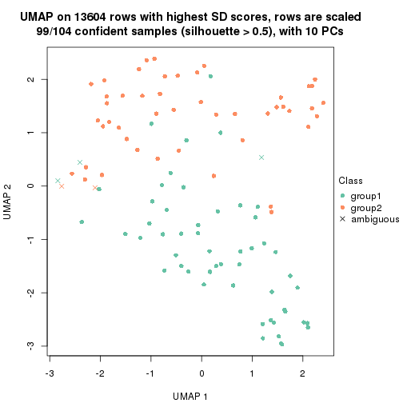
dimension_reduction(res, k = 3, method = "UMAP")
dimension_reduction(res, k = 4, method = "UMAP")
dimension_reduction(res, k = 5, method = "UMAP")

dimension_reduction(res, k = 6, method = "UMAP")
Following heatmap shows how subgroups are split when increasing k:
collect_classes(res)
Test correlation between subgroups and known annotations. If the known annotation is numeric, one-way ANOVA test is applied, and if the known annotation is discrete, chi-squared contingency table test is applied.
test_to_known_factors(res)
#> n cell.type(p) disease.state(p) other(p) k
#> SD:skmeans 99 3.46e-04 9.29e-08 1.20e-04 2
#> SD:skmeans 84 8.65e-09 1.09e-07 4.66e-06 3
#> SD:skmeans 97 6.60e-14 4.66e-13 1.06e-09 4
#> SD:skmeans 98 2.18e-14 3.43e-15 1.15e-11 5
#> SD:skmeans 91 1.24e-12 1.41e-15 1.75e-13 6
If matrix rows can be associated to genes, consider to use functional_enrichment(res,
...) to perform function enrichment for the signature genes. See this vignette for more detailed explanations.
The object with results only for a single top-value method and a single partition method can be extracted as:
res = res_list["SD", "pam"]
# you can also extract it by
# res = res_list["SD:pam"]
A summary of res and all the functions that can be applied to it:
res
#> A 'ConsensusPartition' object with k = 2, 3, 4, 5, 6.
#> On a matrix with 13604 rows and 104 columns.
#> Top rows (1000, 2000, 3000, 4000, 5000) are extracted by 'SD' method.
#> Subgroups are detected by 'pam' method.
#> Performed in total 1250 partitions by row resampling.
#> Best k for subgroups seems to be 5.
#>
#> Following methods can be applied to this 'ConsensusPartition' object:
#> [1] "cola_report" "collect_classes" "collect_plots"
#> [4] "collect_stats" "colnames" "compare_signatures"
#> [7] "consensus_heatmap" "dimension_reduction" "functional_enrichment"
#> [10] "get_anno_col" "get_anno" "get_classes"
#> [13] "get_consensus" "get_matrix" "get_membership"
#> [16] "get_param" "get_signatures" "get_stats"
#> [19] "is_best_k" "is_stable_k" "membership_heatmap"
#> [22] "ncol" "nrow" "plot_ecdf"
#> [25] "rownames" "select_partition_number" "show"
#> [28] "suggest_best_k" "test_to_known_factors"
collect_plots() function collects all the plots made from res for all k (number of partitions)
into one single page to provide an easy and fast comparison between different k.
collect_plots(res)
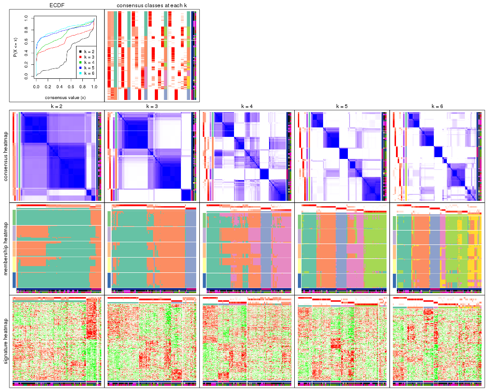
The plots are:
k and the heatmap of
predicted classes for each k.k.k.k.All the plots in panels can be made by individual functions and they are plotted later in this section.
select_partition_number() produces several plots showing different
statistics for choosing “optimized” k. There are following statistics:
k;k, the area increased is defined as \(A_k - A_{k-1}\).The detailed explanations of these statistics can be found in the cola vignette.
Generally speaking, lower PAC score, higher mean silhouette score or higher
concordance corresponds to better partition. Rand index and Jaccard index
measure how similar the current partition is compared to partition with k-1.
If they are too similar, we won't accept k is better than k-1.
select_partition_number(res)
The numeric values for all these statistics can be obtained by get_stats().
get_stats(res)
#> k 1-PAC mean_silhouette concordance area_increased Rand Jaccard
#> 2 2 0.443 0.566 0.774 0.3631 0.751 0.751
#> 3 3 0.695 0.749 0.903 0.6760 0.621 0.500
#> 4 4 0.585 0.473 0.769 0.1829 0.749 0.448
#> 5 5 0.824 0.803 0.896 0.0880 0.821 0.452
#> 6 6 0.742 0.682 0.835 0.0399 0.948 0.763
suggest_best_k() suggests the best \(k\) based on these statistics. The rules are as follows:
suggest_best_k(res)
#> [1] 5
Following shows the table of the partitions (You need to click the show/hide
code output link to see it). The membership matrix (columns with name p*)
is inferred by
clue::cl_consensus()
function with the SE method. Basically the value in the membership matrix
represents the probability to belong to a certain group. The finall class
label for an item is determined with the group with highest probability it
belongs to.
In get_classes() function, the entropy is calculated from the membership
matrix and the silhouette score is calculated from the consensus matrix.
cbind(get_classes(res, k = 2), get_membership(res, k = 2))
#> class entropy silhouette p1 p2
#> GSM141334 1 0.0376 0.515 0.996 0.004
#> GSM141335 1 0.8016 0.608 0.756 0.244
#> GSM141336 1 0.0376 0.515 0.996 0.004
#> GSM141337 1 0.9896 0.659 0.560 0.440
#> GSM141184 1 0.4815 0.555 0.896 0.104
#> GSM141185 1 0.0376 0.515 0.996 0.004
#> GSM141186 1 0.0376 0.515 0.996 0.004
#> GSM141243 1 0.0000 0.515 1.000 0.000
#> GSM141244 1 0.4690 0.554 0.900 0.100
#> GSM141246 1 0.9775 0.657 0.588 0.412
#> GSM141247 1 0.0376 0.515 0.996 0.004
#> GSM141248 1 0.8327 0.615 0.736 0.264
#> GSM141249 1 0.9977 0.655 0.528 0.472
#> GSM141258 1 0.0376 0.515 0.996 0.004
#> GSM141259 1 0.0672 0.514 0.992 0.008
#> GSM141260 1 0.7883 0.606 0.764 0.236
#> GSM141261 1 0.0000 0.515 1.000 0.000
#> GSM141262 1 0.0000 0.515 1.000 0.000
#> GSM141263 1 0.0672 0.514 0.992 0.008
#> GSM141338 1 0.0376 0.515 0.996 0.004
#> GSM141339 1 0.0376 0.515 0.996 0.004
#> GSM141340 1 0.9970 0.657 0.532 0.468
#> GSM141265 1 0.8813 -0.258 0.700 0.300
#> GSM141267 1 0.9795 0.658 0.584 0.416
#> GSM141330 1 0.9661 0.653 0.608 0.392
#> GSM141266 1 0.0000 0.515 1.000 0.000
#> GSM141264 2 0.4939 0.544 0.108 0.892
#> GSM141341 1 0.0938 0.509 0.988 0.012
#> GSM141342 1 0.8499 -0.192 0.724 0.276
#> GSM141343 1 0.0672 0.514 0.992 0.008
#> GSM141356 1 0.9732 0.652 0.596 0.404
#> GSM141357 1 0.9983 0.655 0.524 0.476
#> GSM141358 1 0.9286 0.643 0.656 0.344
#> GSM141359 1 0.0000 0.515 1.000 0.000
#> GSM141360 1 0.9983 0.655 0.524 0.476
#> GSM141361 1 0.9710 0.653 0.600 0.400
#> GSM141362 1 0.0000 0.515 1.000 0.000
#> GSM141363 1 0.0376 0.515 0.996 0.004
#> GSM141364 1 0.9661 0.653 0.608 0.392
#> GSM141365 2 0.9983 -0.494 0.476 0.524
#> GSM141366 1 0.0672 0.514 0.992 0.008
#> GSM141367 1 0.9983 0.624 0.524 0.476
#> GSM141368 1 0.0672 0.514 0.992 0.008
#> GSM141369 1 0.0672 0.514 0.992 0.008
#> GSM141370 1 0.0000 0.515 1.000 0.000
#> GSM141371 1 0.0376 0.515 0.996 0.004
#> GSM141372 1 0.0000 0.515 1.000 0.000
#> GSM141373 1 0.9970 0.657 0.532 0.468
#> GSM141374 1 0.9988 0.655 0.520 0.480
#> GSM141375 1 0.0672 0.514 0.992 0.008
#> GSM141376 1 0.9983 0.655 0.524 0.476
#> GSM141377 1 0.9977 0.657 0.528 0.472
#> GSM141378 1 0.9988 0.655 0.520 0.480
#> GSM141380 1 0.9983 0.655 0.524 0.476
#> GSM141387 1 0.9983 0.655 0.524 0.476
#> GSM141395 1 0.9795 0.658 0.584 0.416
#> GSM141397 1 0.0672 0.514 0.992 0.008
#> GSM141398 1 0.0376 0.515 0.996 0.004
#> GSM141401 1 0.9710 0.653 0.600 0.400
#> GSM141399 1 0.9710 0.655 0.600 0.400
#> GSM141379 1 0.9988 0.655 0.520 0.480
#> GSM141381 1 0.9983 0.655 0.524 0.476
#> GSM141383 1 0.9983 0.655 0.524 0.476
#> GSM141384 1 0.9983 0.655 0.524 0.476
#> GSM141385 1 0.9970 0.656 0.532 0.468
#> GSM141388 1 0.9983 0.655 0.524 0.476
#> GSM141389 1 0.9983 0.655 0.524 0.476
#> GSM141391 1 0.9983 0.655 0.524 0.476
#> GSM141394 1 0.9686 0.654 0.604 0.396
#> GSM141396 1 0.9977 0.655 0.528 0.472
#> GSM141403 1 0.9661 0.653 0.608 0.392
#> GSM141404 1 0.9552 0.652 0.624 0.376
#> GSM141386 1 0.9970 0.656 0.532 0.468
#> GSM141382 1 0.9983 0.655 0.524 0.476
#> GSM141390 1 0.9909 0.658 0.556 0.444
#> GSM141393 1 0.9983 0.655 0.524 0.476
#> GSM141400 1 0.9983 0.655 0.524 0.476
#> GSM141402 1 0.0000 0.515 1.000 0.000
#> GSM141392 2 0.7528 0.047 0.216 0.784
#> GSM141405 1 0.0672 0.514 0.992 0.008
#> GSM141406 1 0.2423 0.526 0.960 0.040
#> GSM141407 1 0.9988 0.655 0.520 0.480
#> GSM141408 1 0.9988 0.655 0.520 0.480
#> GSM141409 1 0.9970 0.657 0.532 0.468
#> GSM141410 1 0.9983 0.655 0.524 0.476
#> GSM141411 1 0.9977 0.655 0.528 0.472
#> GSM141412 1 0.9988 0.655 0.520 0.480
#> GSM141413 1 0.9970 0.657 0.532 0.468
#> GSM141414 1 0.9970 0.657 0.532 0.468
#> GSM141415 1 0.9983 0.655 0.524 0.476
#> GSM141416 1 0.3584 0.540 0.932 0.068
#> GSM141417 1 0.9977 0.655 0.528 0.472
#> GSM141420 2 0.9977 0.604 0.472 0.528
#> GSM141421 2 0.3879 0.562 0.076 0.924
#> GSM141422 2 0.9988 0.602 0.480 0.520
#> GSM141423 2 0.4161 0.563 0.084 0.916
#> GSM141424 2 0.9988 0.602 0.480 0.520
#> GSM141427 2 0.3879 0.562 0.076 0.924
#> GSM141428 2 0.3879 0.562 0.076 0.924
#> GSM141418 2 0.9988 0.602 0.480 0.520
#> GSM141419 2 0.9896 0.607 0.440 0.560
#> GSM141425 2 0.3879 0.562 0.076 0.924
#> GSM141426 2 0.9963 0.606 0.464 0.536
#> GSM141429 2 0.9977 0.604 0.472 0.528
cbind(get_classes(res, k = 3), get_membership(res, k = 3))
#> class entropy silhouette p1 p2 p3
#> GSM141334 2 0.0747 0.84880 0.016 0.984 0.000
#> GSM141335 2 0.4062 0.74597 0.164 0.836 0.000
#> GSM141336 2 0.0237 0.85175 0.004 0.996 0.000
#> GSM141337 1 0.5016 0.63268 0.760 0.240 0.000
#> GSM141184 2 0.2625 0.81472 0.084 0.916 0.000
#> GSM141185 2 0.0237 0.85175 0.004 0.996 0.000
#> GSM141186 2 0.0000 0.85275 0.000 1.000 0.000
#> GSM141243 2 0.0000 0.85275 0.000 1.000 0.000
#> GSM141244 2 0.2537 0.81709 0.080 0.920 0.000
#> GSM141246 1 0.6079 0.28972 0.612 0.388 0.000
#> GSM141247 2 0.0237 0.85175 0.004 0.996 0.000
#> GSM141248 2 0.5497 0.58452 0.292 0.708 0.000
#> GSM141249 1 0.0747 0.88202 0.984 0.016 0.000
#> GSM141258 2 0.0237 0.85175 0.004 0.996 0.000
#> GSM141259 2 0.0000 0.85275 0.000 1.000 0.000
#> GSM141260 2 0.4002 0.74652 0.160 0.840 0.000
#> GSM141261 2 0.0000 0.85275 0.000 1.000 0.000
#> GSM141262 2 0.0000 0.85275 0.000 1.000 0.000
#> GSM141263 2 0.0000 0.85275 0.000 1.000 0.000
#> GSM141338 2 0.0237 0.85175 0.004 0.996 0.000
#> GSM141339 2 0.1031 0.84618 0.024 0.976 0.000
#> GSM141340 1 0.4002 0.73109 0.840 0.160 0.000
#> GSM141265 2 0.0000 0.85275 0.000 1.000 0.000
#> GSM141267 1 0.6302 -0.00661 0.520 0.480 0.000
#> GSM141330 2 0.8362 0.27043 0.384 0.528 0.088
#> GSM141266 2 0.0000 0.85275 0.000 1.000 0.000
#> GSM141264 3 0.1031 0.93156 0.000 0.024 0.976
#> GSM141341 2 0.7766 0.56143 0.148 0.676 0.176
#> GSM141342 2 0.5873 0.43548 0.004 0.684 0.312
#> GSM141343 2 0.0237 0.85345 0.004 0.996 0.000
#> GSM141356 2 0.6307 0.11002 0.488 0.512 0.000
#> GSM141357 1 0.0892 0.88195 0.980 0.020 0.000
#> GSM141358 2 0.6140 0.34497 0.404 0.596 0.000
#> GSM141359 2 0.0237 0.85345 0.004 0.996 0.000
#> GSM141360 1 0.0237 0.89050 0.996 0.004 0.000
#> GSM141361 2 0.6305 0.11987 0.484 0.516 0.000
#> GSM141362 2 0.0237 0.85345 0.004 0.996 0.000
#> GSM141363 2 0.0892 0.84943 0.020 0.980 0.000
#> GSM141364 1 0.6307 -0.06777 0.512 0.488 0.000
#> GSM141365 1 0.9950 -0.00371 0.372 0.340 0.288
#> GSM141366 2 0.0237 0.85345 0.004 0.996 0.000
#> GSM141367 1 0.7740 0.12743 0.508 0.048 0.444
#> GSM141368 2 0.0237 0.85345 0.004 0.996 0.000
#> GSM141369 2 0.0237 0.85345 0.004 0.996 0.000
#> GSM141370 2 0.0237 0.85345 0.004 0.996 0.000
#> GSM141371 2 0.0237 0.85345 0.004 0.996 0.000
#> GSM141372 2 0.0237 0.85345 0.004 0.996 0.000
#> GSM141373 1 0.1289 0.87069 0.968 0.032 0.000
#> GSM141374 1 0.0000 0.89002 1.000 0.000 0.000
#> GSM141375 2 0.0237 0.85345 0.004 0.996 0.000
#> GSM141376 1 0.0237 0.89050 0.996 0.004 0.000
#> GSM141377 1 0.0237 0.89050 0.996 0.004 0.000
#> GSM141378 1 0.0000 0.89002 1.000 0.000 0.000
#> GSM141380 1 0.0237 0.89050 0.996 0.004 0.000
#> GSM141387 1 0.0237 0.89050 0.996 0.004 0.000
#> GSM141395 1 0.4887 0.64061 0.772 0.228 0.000
#> GSM141397 2 0.0237 0.85345 0.004 0.996 0.000
#> GSM141398 2 0.0237 0.85175 0.004 0.996 0.000
#> GSM141401 1 0.6309 -0.09557 0.504 0.496 0.000
#> GSM141399 2 0.6309 0.07674 0.500 0.500 0.000
#> GSM141379 1 0.0000 0.89002 1.000 0.000 0.000
#> GSM141381 1 0.0237 0.89050 0.996 0.004 0.000
#> GSM141383 1 0.0237 0.89050 0.996 0.004 0.000
#> GSM141384 1 0.0237 0.89050 0.996 0.004 0.000
#> GSM141385 1 0.0237 0.89050 0.996 0.004 0.000
#> GSM141388 1 0.0237 0.89050 0.996 0.004 0.000
#> GSM141389 1 0.0237 0.89050 0.996 0.004 0.000
#> GSM141391 1 0.0000 0.89002 1.000 0.000 0.000
#> GSM141394 2 0.6308 0.10464 0.492 0.508 0.000
#> GSM141396 1 0.0000 0.89002 1.000 0.000 0.000
#> GSM141403 2 0.6280 0.19942 0.460 0.540 0.000
#> GSM141404 2 0.6235 0.27999 0.436 0.564 0.000
#> GSM141386 1 0.0747 0.88468 0.984 0.016 0.000
#> GSM141382 1 0.0237 0.89050 0.996 0.004 0.000
#> GSM141390 1 0.3116 0.80581 0.892 0.108 0.000
#> GSM141393 1 0.0237 0.89050 0.996 0.004 0.000
#> GSM141400 1 0.0592 0.88704 0.988 0.012 0.000
#> GSM141402 2 0.0000 0.85275 0.000 1.000 0.000
#> GSM141392 3 0.6683 -0.11149 0.492 0.008 0.500
#> GSM141405 2 0.1163 0.84212 0.028 0.972 0.000
#> GSM141406 2 0.3412 0.78434 0.124 0.876 0.000
#> GSM141407 1 0.0000 0.89002 1.000 0.000 0.000
#> GSM141408 1 0.0000 0.89002 1.000 0.000 0.000
#> GSM141409 1 0.0000 0.89002 1.000 0.000 0.000
#> GSM141410 1 0.0237 0.89050 0.996 0.004 0.000
#> GSM141411 1 0.0000 0.89002 1.000 0.000 0.000
#> GSM141412 1 0.0000 0.89002 1.000 0.000 0.000
#> GSM141413 1 0.0000 0.89002 1.000 0.000 0.000
#> GSM141414 1 0.0000 0.89002 1.000 0.000 0.000
#> GSM141415 1 0.0237 0.89050 0.996 0.004 0.000
#> GSM141416 2 0.4504 0.71388 0.196 0.804 0.000
#> GSM141417 1 0.0000 0.89002 1.000 0.000 0.000
#> GSM141420 3 0.0000 0.95447 0.000 0.000 1.000
#> GSM141421 3 0.0000 0.95447 0.000 0.000 1.000
#> GSM141422 3 0.0000 0.95447 0.000 0.000 1.000
#> GSM141423 3 0.0000 0.95447 0.000 0.000 1.000
#> GSM141424 3 0.0000 0.95447 0.000 0.000 1.000
#> GSM141427 3 0.0000 0.95447 0.000 0.000 1.000
#> GSM141428 3 0.0000 0.95447 0.000 0.000 1.000
#> GSM141418 3 0.0000 0.95447 0.000 0.000 1.000
#> GSM141419 3 0.0000 0.95447 0.000 0.000 1.000
#> GSM141425 3 0.0000 0.95447 0.000 0.000 1.000
#> GSM141426 3 0.0000 0.95447 0.000 0.000 1.000
#> GSM141429 3 0.0000 0.95447 0.000 0.000 1.000
cbind(get_classes(res, k = 4), get_membership(res, k = 4))
#> class entropy silhouette p1 p2 p3 p4
#> GSM141334 2 0.4989 -0.11741 0.000 0.528 0.000 0.472
#> GSM141335 2 0.3907 0.29788 0.000 0.768 0.000 0.232
#> GSM141336 2 0.4989 -0.11741 0.000 0.528 0.000 0.472
#> GSM141337 2 0.5599 0.09174 0.276 0.672 0.000 0.052
#> GSM141184 2 0.4713 0.09997 0.000 0.640 0.000 0.360
#> GSM141185 2 0.4989 -0.11741 0.000 0.528 0.000 0.472
#> GSM141186 4 0.1211 0.79651 0.000 0.040 0.000 0.960
#> GSM141243 4 0.5000 0.12558 0.000 0.496 0.000 0.504
#> GSM141244 2 0.4761 0.08315 0.000 0.628 0.000 0.372
#> GSM141246 2 0.0707 0.46531 0.000 0.980 0.000 0.020
#> GSM141247 2 0.4996 -0.14002 0.000 0.516 0.000 0.484
#> GSM141248 2 0.3873 0.30270 0.000 0.772 0.000 0.228
#> GSM141249 1 0.2973 0.58160 0.856 0.144 0.000 0.000
#> GSM141258 2 0.4989 -0.11741 0.000 0.528 0.000 0.472
#> GSM141259 4 0.2760 0.73534 0.000 0.128 0.000 0.872
#> GSM141260 2 0.4941 0.00807 0.000 0.564 0.000 0.436
#> GSM141261 4 0.4040 0.59006 0.000 0.248 0.000 0.752
#> GSM141262 2 0.4999 -0.15419 0.000 0.508 0.000 0.492
#> GSM141263 4 0.0817 0.79988 0.000 0.024 0.000 0.976
#> GSM141338 2 0.4996 -0.14002 0.000 0.516 0.000 0.484
#> GSM141339 2 0.4989 -0.11741 0.000 0.528 0.000 0.472
#> GSM141340 1 0.2408 0.62303 0.896 0.104 0.000 0.000
#> GSM141265 4 0.2081 0.77331 0.000 0.084 0.000 0.916
#> GSM141267 2 0.1211 0.45765 0.000 0.960 0.000 0.040
#> GSM141330 2 0.3764 0.39359 0.000 0.784 0.000 0.216
#> GSM141266 4 0.1557 0.79200 0.000 0.056 0.000 0.944
#> GSM141264 3 0.4454 0.56582 0.000 0.000 0.692 0.308
#> GSM141341 4 0.3399 0.69971 0.092 0.040 0.000 0.868
#> GSM141342 4 0.0000 0.80107 0.000 0.000 0.000 1.000
#> GSM141343 4 0.0000 0.80107 0.000 0.000 0.000 1.000
#> GSM141356 2 0.3958 0.45197 0.024 0.816 0.000 0.160
#> GSM141357 2 0.6277 -0.42110 0.472 0.472 0.000 0.056
#> GSM141358 2 0.5756 0.28077 0.036 0.592 0.000 0.372
#> GSM141359 4 0.3486 0.62445 0.000 0.188 0.000 0.812
#> GSM141360 1 0.6081 0.40087 0.484 0.472 0.000 0.044
#> GSM141361 2 0.5417 0.36774 0.040 0.676 0.000 0.284
#> GSM141362 4 0.4284 0.59719 0.020 0.200 0.000 0.780
#> GSM141363 4 0.6508 0.23223 0.084 0.360 0.000 0.556
#> GSM141364 2 0.3697 0.39576 0.100 0.852 0.000 0.048
#> GSM141365 4 0.5112 -0.07808 0.000 0.436 0.004 0.560
#> GSM141366 4 0.0000 0.80107 0.000 0.000 0.000 1.000
#> GSM141367 2 0.8124 0.22822 0.084 0.492 0.080 0.344
#> GSM141368 4 0.0000 0.80107 0.000 0.000 0.000 1.000
#> GSM141369 4 0.0000 0.80107 0.000 0.000 0.000 1.000
#> GSM141370 4 0.0000 0.80107 0.000 0.000 0.000 1.000
#> GSM141371 4 0.0000 0.80107 0.000 0.000 0.000 1.000
#> GSM141372 4 0.0000 0.80107 0.000 0.000 0.000 1.000
#> GSM141373 2 0.4955 -0.36580 0.444 0.556 0.000 0.000
#> GSM141374 1 0.4989 0.46681 0.528 0.472 0.000 0.000
#> GSM141375 4 0.3279 0.73497 0.096 0.032 0.000 0.872
#> GSM141376 1 0.0188 0.72213 0.996 0.004 0.000 0.000
#> GSM141377 1 0.4989 0.46681 0.528 0.472 0.000 0.000
#> GSM141378 1 0.4994 0.45731 0.520 0.480 0.000 0.000
#> GSM141380 1 0.0000 0.72211 1.000 0.000 0.000 0.000
#> GSM141387 1 0.0188 0.72213 0.996 0.004 0.000 0.000
#> GSM141395 2 0.6058 0.31291 0.136 0.684 0.000 0.180
#> GSM141397 4 0.3198 0.75642 0.040 0.080 0.000 0.880
#> GSM141398 2 0.4989 -0.11741 0.000 0.528 0.000 0.472
#> GSM141401 2 0.5528 0.33837 0.144 0.732 0.000 0.124
#> GSM141399 2 0.1824 0.42687 0.060 0.936 0.000 0.004
#> GSM141379 1 0.0336 0.71895 0.992 0.008 0.000 0.000
#> GSM141381 1 0.2149 0.69833 0.912 0.088 0.000 0.000
#> GSM141383 1 0.4989 0.46681 0.528 0.472 0.000 0.000
#> GSM141384 1 0.0188 0.72213 0.996 0.004 0.000 0.000
#> GSM141385 1 0.4985 0.46780 0.532 0.468 0.000 0.000
#> GSM141388 1 0.0188 0.72213 0.996 0.004 0.000 0.000
#> GSM141389 1 0.0188 0.72213 0.996 0.004 0.000 0.000
#> GSM141391 1 0.4985 0.46780 0.532 0.468 0.000 0.000
#> GSM141394 2 0.5272 0.36335 0.032 0.680 0.000 0.288
#> GSM141396 1 0.4999 0.43897 0.508 0.492 0.000 0.000
#> GSM141403 2 0.4022 0.43703 0.068 0.836 0.000 0.096
#> GSM141404 2 0.4804 0.40919 0.148 0.780 0.000 0.072
#> GSM141386 2 0.5856 -0.39270 0.464 0.504 0.000 0.032
#> GSM141382 1 0.3837 0.63005 0.776 0.224 0.000 0.000
#> GSM141390 2 0.4713 -0.14239 0.360 0.640 0.000 0.000
#> GSM141393 1 0.4985 0.46780 0.532 0.468 0.000 0.000
#> GSM141400 1 0.4989 0.46681 0.528 0.472 0.000 0.000
#> GSM141402 4 0.0817 0.79988 0.000 0.024 0.000 0.976
#> GSM141392 2 0.6672 -0.00814 0.072 0.468 0.456 0.004
#> GSM141405 4 0.5069 0.46148 0.320 0.016 0.000 0.664
#> GSM141406 4 0.5307 0.57261 0.076 0.188 0.000 0.736
#> GSM141407 1 0.0188 0.72082 0.996 0.004 0.000 0.000
#> GSM141408 1 0.0188 0.72213 0.996 0.004 0.000 0.000
#> GSM141409 2 0.4999 -0.44183 0.492 0.508 0.000 0.000
#> GSM141410 1 0.0000 0.72211 1.000 0.000 0.000 0.000
#> GSM141411 1 0.0921 0.71769 0.972 0.028 0.000 0.000
#> GSM141412 1 0.0000 0.72211 1.000 0.000 0.000 0.000
#> GSM141413 1 0.4992 0.46255 0.524 0.476 0.000 0.000
#> GSM141414 2 0.4981 -0.39812 0.464 0.536 0.000 0.000
#> GSM141415 1 0.0000 0.72211 1.000 0.000 0.000 0.000
#> GSM141416 2 0.4907 -0.01919 0.000 0.580 0.000 0.420
#> GSM141417 1 0.0336 0.71895 0.992 0.008 0.000 0.000
#> GSM141420 3 0.0000 0.97268 0.000 0.000 1.000 0.000
#> GSM141421 3 0.0000 0.97268 0.000 0.000 1.000 0.000
#> GSM141422 3 0.0000 0.97268 0.000 0.000 1.000 0.000
#> GSM141423 3 0.0000 0.97268 0.000 0.000 1.000 0.000
#> GSM141424 3 0.0000 0.97268 0.000 0.000 1.000 0.000
#> GSM141427 3 0.0000 0.97268 0.000 0.000 1.000 0.000
#> GSM141428 3 0.0000 0.97268 0.000 0.000 1.000 0.000
#> GSM141418 3 0.0000 0.97268 0.000 0.000 1.000 0.000
#> GSM141419 3 0.0000 0.97268 0.000 0.000 1.000 0.000
#> GSM141425 3 0.0000 0.97268 0.000 0.000 1.000 0.000
#> GSM141426 3 0.0000 0.97268 0.000 0.000 1.000 0.000
#> GSM141429 3 0.0000 0.97268 0.000 0.000 1.000 0.000
cbind(get_classes(res, k = 5), get_membership(res, k = 5))
#> class entropy silhouette p1 p2 p3 p4 p5
#> GSM141334 2 0.0000 0.881 0.000 1.000 0.000 0.000 0.000
#> GSM141335 2 0.0000 0.881 0.000 1.000 0.000 0.000 0.000
#> GSM141336 2 0.0000 0.881 0.000 1.000 0.000 0.000 0.000
#> GSM141337 2 0.3574 0.664 0.028 0.804 0.000 0.000 0.168
#> GSM141184 2 0.0000 0.881 0.000 1.000 0.000 0.000 0.000
#> GSM141185 2 0.0000 0.881 0.000 1.000 0.000 0.000 0.000
#> GSM141186 4 0.4392 0.577 0.000 0.380 0.000 0.612 0.008
#> GSM141243 2 0.0510 0.872 0.000 0.984 0.000 0.016 0.000
#> GSM141244 2 0.0000 0.881 0.000 1.000 0.000 0.000 0.000
#> GSM141246 2 0.0290 0.876 0.000 0.992 0.000 0.000 0.008
#> GSM141247 2 0.0404 0.875 0.000 0.988 0.000 0.012 0.000
#> GSM141248 2 0.0000 0.881 0.000 1.000 0.000 0.000 0.000
#> GSM141249 1 0.0609 0.917 0.980 0.020 0.000 0.000 0.000
#> GSM141258 2 0.0000 0.881 0.000 1.000 0.000 0.000 0.000
#> GSM141259 4 0.4268 0.499 0.000 0.444 0.000 0.556 0.000
#> GSM141260 4 0.4305 0.430 0.000 0.488 0.000 0.512 0.000
#> GSM141261 4 0.4294 0.460 0.000 0.468 0.000 0.532 0.000
#> GSM141262 2 0.0404 0.875 0.000 0.988 0.000 0.012 0.000
#> GSM141263 4 0.4470 0.583 0.000 0.372 0.000 0.616 0.012
#> GSM141338 2 0.0404 0.875 0.000 0.988 0.000 0.012 0.000
#> GSM141339 2 0.0000 0.881 0.000 1.000 0.000 0.000 0.000
#> GSM141340 1 0.0404 0.921 0.988 0.012 0.000 0.000 0.000
#> GSM141265 4 0.4425 0.565 0.000 0.392 0.000 0.600 0.008
#> GSM141267 2 0.0162 0.879 0.000 0.996 0.000 0.000 0.004
#> GSM141330 2 0.1281 0.849 0.000 0.956 0.000 0.032 0.012
#> GSM141266 4 0.4310 0.571 0.000 0.392 0.000 0.604 0.004
#> GSM141264 3 0.4339 0.418 0.000 0.000 0.652 0.336 0.012
#> GSM141341 4 0.4420 0.223 0.004 0.000 0.000 0.548 0.448
#> GSM141342 4 0.0000 0.680 0.000 0.000 0.000 1.000 0.000
#> GSM141343 4 0.0000 0.680 0.000 0.000 0.000 1.000 0.000
#> GSM141356 5 0.3154 0.876 0.008 0.040 0.000 0.088 0.864
#> GSM141357 5 0.1082 0.925 0.008 0.000 0.000 0.028 0.964
#> GSM141358 2 0.5815 0.322 0.000 0.540 0.000 0.104 0.356
#> GSM141359 2 0.4597 0.308 0.000 0.564 0.000 0.424 0.012
#> GSM141360 5 0.0693 0.930 0.008 0.000 0.000 0.012 0.980
#> GSM141361 5 0.2017 0.896 0.000 0.008 0.000 0.080 0.912
#> GSM141362 2 0.4386 0.665 0.000 0.764 0.000 0.140 0.096
#> GSM141363 2 0.5378 0.512 0.012 0.660 0.000 0.072 0.256
#> GSM141364 5 0.4057 0.649 0.008 0.252 0.000 0.008 0.732
#> GSM141365 4 0.3707 0.502 0.000 0.000 0.000 0.716 0.284
#> GSM141366 4 0.0000 0.680 0.000 0.000 0.000 1.000 0.000
#> GSM141367 5 0.4244 0.622 0.012 0.000 0.012 0.248 0.728
#> GSM141368 4 0.0000 0.680 0.000 0.000 0.000 1.000 0.000
#> GSM141369 4 0.0000 0.680 0.000 0.000 0.000 1.000 0.000
#> GSM141370 4 0.0000 0.680 0.000 0.000 0.000 1.000 0.000
#> GSM141371 4 0.0000 0.680 0.000 0.000 0.000 1.000 0.000
#> GSM141372 4 0.0000 0.680 0.000 0.000 0.000 1.000 0.000
#> GSM141373 5 0.1430 0.929 0.052 0.004 0.000 0.000 0.944
#> GSM141374 5 0.0404 0.931 0.012 0.000 0.000 0.000 0.988
#> GSM141375 4 0.6372 0.547 0.004 0.200 0.000 0.540 0.256
#> GSM141376 1 0.1270 0.918 0.948 0.000 0.000 0.000 0.052
#> GSM141377 5 0.0404 0.931 0.012 0.000 0.000 0.000 0.988
#> GSM141378 5 0.1341 0.929 0.056 0.000 0.000 0.000 0.944
#> GSM141380 1 0.0000 0.927 1.000 0.000 0.000 0.000 0.000
#> GSM141387 1 0.1270 0.918 0.948 0.000 0.000 0.000 0.052
#> GSM141395 5 0.1310 0.929 0.000 0.024 0.000 0.020 0.956
#> GSM141397 4 0.6006 0.562 0.000 0.300 0.000 0.556 0.144
#> GSM141398 2 0.0000 0.881 0.000 1.000 0.000 0.000 0.000
#> GSM141401 5 0.0566 0.933 0.004 0.012 0.000 0.000 0.984
#> GSM141399 5 0.1341 0.919 0.000 0.056 0.000 0.000 0.944
#> GSM141379 1 0.0000 0.927 1.000 0.000 0.000 0.000 0.000
#> GSM141381 1 0.3452 0.706 0.756 0.000 0.000 0.000 0.244
#> GSM141383 5 0.0404 0.931 0.012 0.000 0.000 0.000 0.988
#> GSM141384 1 0.1270 0.918 0.948 0.000 0.000 0.000 0.052
#> GSM141385 5 0.1121 0.932 0.044 0.000 0.000 0.000 0.956
#> GSM141388 1 0.1270 0.918 0.948 0.000 0.000 0.000 0.052
#> GSM141389 1 0.1270 0.918 0.948 0.000 0.000 0.000 0.052
#> GSM141391 5 0.1341 0.929 0.056 0.000 0.000 0.000 0.944
#> GSM141394 5 0.3281 0.852 0.000 0.060 0.000 0.092 0.848
#> GSM141396 5 0.1341 0.929 0.056 0.000 0.000 0.000 0.944
#> GSM141403 5 0.1877 0.904 0.012 0.000 0.000 0.064 0.924
#> GSM141404 2 0.4421 0.574 0.024 0.704 0.000 0.004 0.268
#> GSM141386 5 0.0912 0.935 0.016 0.012 0.000 0.000 0.972
#> GSM141382 1 0.4126 0.338 0.620 0.000 0.000 0.000 0.380
#> GSM141390 5 0.0404 0.931 0.012 0.000 0.000 0.000 0.988
#> GSM141393 5 0.1270 0.929 0.052 0.000 0.000 0.000 0.948
#> GSM141400 5 0.0404 0.931 0.012 0.000 0.000 0.000 0.988
#> GSM141402 4 0.4470 0.583 0.000 0.372 0.000 0.616 0.012
#> GSM141392 5 0.1357 0.922 0.004 0.000 0.048 0.000 0.948
#> GSM141405 4 0.5223 0.159 0.444 0.000 0.000 0.512 0.044
#> GSM141406 5 0.2152 0.915 0.004 0.032 0.000 0.044 0.920
#> GSM141407 1 0.0000 0.927 1.000 0.000 0.000 0.000 0.000
#> GSM141408 1 0.1270 0.918 0.948 0.000 0.000 0.000 0.052
#> GSM141409 5 0.0404 0.931 0.012 0.000 0.000 0.000 0.988
#> GSM141410 1 0.0000 0.927 1.000 0.000 0.000 0.000 0.000
#> GSM141411 1 0.1410 0.891 0.940 0.000 0.000 0.000 0.060
#> GSM141412 1 0.0000 0.927 1.000 0.000 0.000 0.000 0.000
#> GSM141413 5 0.1341 0.929 0.056 0.000 0.000 0.000 0.944
#> GSM141414 5 0.1469 0.931 0.036 0.016 0.000 0.000 0.948
#> GSM141415 1 0.0290 0.923 0.992 0.000 0.000 0.000 0.008
#> GSM141416 2 0.0000 0.881 0.000 1.000 0.000 0.000 0.000
#> GSM141417 1 0.0290 0.923 0.992 0.000 0.000 0.000 0.008
#> GSM141420 3 0.0000 0.968 0.000 0.000 1.000 0.000 0.000
#> GSM141421 3 0.0000 0.968 0.000 0.000 1.000 0.000 0.000
#> GSM141422 3 0.0000 0.968 0.000 0.000 1.000 0.000 0.000
#> GSM141423 3 0.0000 0.968 0.000 0.000 1.000 0.000 0.000
#> GSM141424 3 0.0000 0.968 0.000 0.000 1.000 0.000 0.000
#> GSM141427 3 0.0000 0.968 0.000 0.000 1.000 0.000 0.000
#> GSM141428 3 0.0000 0.968 0.000 0.000 1.000 0.000 0.000
#> GSM141418 3 0.0000 0.968 0.000 0.000 1.000 0.000 0.000
#> GSM141419 3 0.0000 0.968 0.000 0.000 1.000 0.000 0.000
#> GSM141425 3 0.0000 0.968 0.000 0.000 1.000 0.000 0.000
#> GSM141426 3 0.0000 0.968 0.000 0.000 1.000 0.000 0.000
#> GSM141429 3 0.0000 0.968 0.000 0.000 1.000 0.000 0.000
cbind(get_classes(res, k = 6), get_membership(res, k = 6))
#> class entropy silhouette p1 p2 p3 p4 p5 p6
#> GSM141334 2 0.0000 0.8585 0.000 1.000 0.000 0.000 0.000 0.000
#> GSM141335 2 0.0000 0.8585 0.000 1.000 0.000 0.000 0.000 0.000
#> GSM141336 2 0.0000 0.8585 0.000 1.000 0.000 0.000 0.000 0.000
#> GSM141337 2 0.2499 0.7355 0.048 0.880 0.000 0.000 0.072 0.000
#> GSM141184 2 0.0000 0.8585 0.000 1.000 0.000 0.000 0.000 0.000
#> GSM141185 2 0.0713 0.8451 0.000 0.972 0.000 0.000 0.000 0.028
#> GSM141186 6 0.4406 0.4493 0.000 0.336 0.000 0.040 0.000 0.624
#> GSM141243 2 0.2706 0.7286 0.000 0.852 0.000 0.024 0.000 0.124
#> GSM141244 2 0.0000 0.8585 0.000 1.000 0.000 0.000 0.000 0.000
#> GSM141246 2 0.0000 0.8585 0.000 1.000 0.000 0.000 0.000 0.000
#> GSM141247 2 0.1714 0.7960 0.000 0.908 0.000 0.000 0.000 0.092
#> GSM141248 2 0.0000 0.8585 0.000 1.000 0.000 0.000 0.000 0.000
#> GSM141249 1 0.1444 0.8228 0.928 0.072 0.000 0.000 0.000 0.000
#> GSM141258 2 0.0000 0.8585 0.000 1.000 0.000 0.000 0.000 0.000
#> GSM141259 6 0.4406 0.4493 0.000 0.336 0.000 0.040 0.000 0.624
#> GSM141260 2 0.4076 0.0647 0.000 0.620 0.000 0.016 0.000 0.364
#> GSM141261 6 0.4603 0.3236 0.000 0.416 0.000 0.040 0.000 0.544
#> GSM141262 2 0.1714 0.7960 0.000 0.908 0.000 0.000 0.000 0.092
#> GSM141263 6 0.1480 0.3754 0.000 0.020 0.000 0.040 0.000 0.940
#> GSM141338 2 0.1387 0.8151 0.000 0.932 0.000 0.000 0.000 0.068
#> GSM141339 2 0.0000 0.8585 0.000 1.000 0.000 0.000 0.000 0.000
#> GSM141340 1 0.0000 0.8713 1.000 0.000 0.000 0.000 0.000 0.000
#> GSM141265 6 0.4392 0.4535 0.000 0.332 0.000 0.040 0.000 0.628
#> GSM141267 2 0.0000 0.8585 0.000 1.000 0.000 0.000 0.000 0.000
#> GSM141330 2 0.3772 0.6073 0.000 0.772 0.000 0.000 0.068 0.160
#> GSM141266 6 0.4597 0.3727 0.000 0.412 0.000 0.040 0.000 0.548
#> GSM141264 3 0.4377 0.2229 0.000 0.000 0.540 0.024 0.000 0.436
#> GSM141341 6 0.4632 0.1382 0.000 0.000 0.000 0.040 0.440 0.520
#> GSM141342 4 0.3810 0.3565 0.000 0.000 0.000 0.572 0.000 0.428
#> GSM141343 6 0.3695 -0.0198 0.000 0.000 0.000 0.376 0.000 0.624
#> GSM141356 5 0.5083 0.4361 0.000 0.052 0.000 0.012 0.524 0.412
#> GSM141357 5 0.3695 0.5138 0.000 0.000 0.000 0.000 0.624 0.376
#> GSM141358 6 0.5638 0.2080 0.000 0.328 0.000 0.032 0.084 0.556
#> GSM141359 6 0.4264 0.2220 0.000 0.332 0.000 0.032 0.000 0.636
#> GSM141360 5 0.3695 0.5138 0.000 0.000 0.000 0.000 0.624 0.376
#> GSM141361 5 0.4468 0.4669 0.000 0.000 0.000 0.032 0.560 0.408
#> GSM141362 6 0.4292 0.2063 0.000 0.340 0.000 0.032 0.000 0.628
#> GSM141363 2 0.5791 0.2364 0.000 0.532 0.000 0.032 0.340 0.096
#> GSM141364 5 0.4910 0.5348 0.000 0.192 0.000 0.000 0.656 0.152
#> GSM141365 6 0.4486 0.1699 0.000 0.000 0.000 0.208 0.096 0.696
#> GSM141366 4 0.3684 0.4563 0.000 0.000 0.000 0.628 0.000 0.372
#> GSM141367 5 0.4877 0.2678 0.000 0.028 0.008 0.008 0.544 0.412
#> GSM141368 4 0.0790 0.8068 0.000 0.000 0.000 0.968 0.000 0.032
#> GSM141369 4 0.0000 0.8227 0.000 0.000 0.000 1.000 0.000 0.000
#> GSM141370 4 0.0000 0.8227 0.000 0.000 0.000 1.000 0.000 0.000
#> GSM141371 4 0.0000 0.8227 0.000 0.000 0.000 1.000 0.000 0.000
#> GSM141372 4 0.0000 0.8227 0.000 0.000 0.000 1.000 0.000 0.000
#> GSM141373 5 0.2378 0.7896 0.152 0.000 0.000 0.000 0.848 0.000
#> GSM141374 5 0.0000 0.8011 0.000 0.000 0.000 0.000 1.000 0.000
#> GSM141375 6 0.5857 0.3995 0.000 0.136 0.000 0.040 0.232 0.592
#> GSM141376 1 0.2378 0.8299 0.848 0.000 0.000 0.000 0.152 0.000
#> GSM141377 5 0.0000 0.8011 0.000 0.000 0.000 0.000 1.000 0.000
#> GSM141378 5 0.2378 0.7896 0.152 0.000 0.000 0.000 0.848 0.000
#> GSM141380 1 0.0000 0.8713 1.000 0.000 0.000 0.000 0.000 0.000
#> GSM141387 1 0.2378 0.8299 0.848 0.000 0.000 0.000 0.152 0.000
#> GSM141395 5 0.2971 0.7682 0.000 0.104 0.000 0.000 0.844 0.052
#> GSM141397 6 0.5521 0.4665 0.000 0.224 0.000 0.040 0.104 0.632
#> GSM141398 2 0.0260 0.8554 0.000 0.992 0.000 0.000 0.000 0.008
#> GSM141401 5 0.1444 0.7965 0.000 0.072 0.000 0.000 0.928 0.000
#> GSM141399 5 0.2378 0.7542 0.000 0.152 0.000 0.000 0.848 0.000
#> GSM141379 1 0.0000 0.8713 1.000 0.000 0.000 0.000 0.000 0.000
#> GSM141381 1 0.3266 0.6621 0.728 0.000 0.000 0.000 0.272 0.000
#> GSM141383 5 0.0000 0.8011 0.000 0.000 0.000 0.000 1.000 0.000
#> GSM141384 1 0.2378 0.8299 0.848 0.000 0.000 0.000 0.152 0.000
#> GSM141385 5 0.2178 0.7956 0.132 0.000 0.000 0.000 0.868 0.000
#> GSM141388 1 0.2378 0.8299 0.848 0.000 0.000 0.000 0.152 0.000
#> GSM141389 1 0.2378 0.8299 0.848 0.000 0.000 0.000 0.152 0.000
#> GSM141391 5 0.2378 0.7896 0.152 0.000 0.000 0.000 0.848 0.000
#> GSM141394 6 0.5926 -0.1081 0.000 0.112 0.000 0.032 0.336 0.520
#> GSM141396 5 0.2378 0.7896 0.152 0.000 0.000 0.000 0.848 0.000
#> GSM141403 5 0.0937 0.7882 0.000 0.000 0.000 0.000 0.960 0.040
#> GSM141404 2 0.4542 0.2084 0.020 0.532 0.000 0.000 0.440 0.008
#> GSM141386 5 0.1461 0.8061 0.016 0.044 0.000 0.000 0.940 0.000
#> GSM141382 1 0.3727 0.2520 0.612 0.000 0.000 0.000 0.388 0.000
#> GSM141390 5 0.0000 0.8011 0.000 0.000 0.000 0.000 1.000 0.000
#> GSM141393 5 0.2378 0.7896 0.152 0.000 0.000 0.000 0.848 0.000
#> GSM141400 5 0.0000 0.8011 0.000 0.000 0.000 0.000 1.000 0.000
#> GSM141402 6 0.0790 0.3467 0.000 0.000 0.000 0.032 0.000 0.968
#> GSM141392 5 0.2553 0.7590 0.008 0.000 0.144 0.000 0.848 0.000
#> GSM141405 6 0.6334 -0.0136 0.428 0.020 0.000 0.040 0.080 0.432
#> GSM141406 5 0.4542 0.6518 0.008 0.176 0.000 0.000 0.716 0.100
#> GSM141407 1 0.0000 0.8713 1.000 0.000 0.000 0.000 0.000 0.000
#> GSM141408 1 0.2378 0.8299 0.848 0.000 0.000 0.000 0.152 0.000
#> GSM141409 5 0.0000 0.8011 0.000 0.000 0.000 0.000 1.000 0.000
#> GSM141410 1 0.0000 0.8713 1.000 0.000 0.000 0.000 0.000 0.000
#> GSM141411 1 0.1204 0.8393 0.944 0.000 0.000 0.000 0.056 0.000
#> GSM141412 1 0.0000 0.8713 1.000 0.000 0.000 0.000 0.000 0.000
#> GSM141413 5 0.2378 0.7896 0.152 0.000 0.000 0.000 0.848 0.000
#> GSM141414 5 0.2910 0.7892 0.068 0.080 0.000 0.000 0.852 0.000
#> GSM141415 1 0.0000 0.8713 1.000 0.000 0.000 0.000 0.000 0.000
#> GSM141416 2 0.0000 0.8585 0.000 1.000 0.000 0.000 0.000 0.000
#> GSM141417 1 0.0000 0.8713 1.000 0.000 0.000 0.000 0.000 0.000
#> GSM141420 3 0.0000 0.9564 0.000 0.000 1.000 0.000 0.000 0.000
#> GSM141421 3 0.0000 0.9564 0.000 0.000 1.000 0.000 0.000 0.000
#> GSM141422 3 0.0000 0.9564 0.000 0.000 1.000 0.000 0.000 0.000
#> GSM141423 3 0.0000 0.9564 0.000 0.000 1.000 0.000 0.000 0.000
#> GSM141424 3 0.0000 0.9564 0.000 0.000 1.000 0.000 0.000 0.000
#> GSM141427 3 0.0000 0.9564 0.000 0.000 1.000 0.000 0.000 0.000
#> GSM141428 3 0.0000 0.9564 0.000 0.000 1.000 0.000 0.000 0.000
#> GSM141418 3 0.0000 0.9564 0.000 0.000 1.000 0.000 0.000 0.000
#> GSM141419 3 0.0000 0.9564 0.000 0.000 1.000 0.000 0.000 0.000
#> GSM141425 3 0.0000 0.9564 0.000 0.000 1.000 0.000 0.000 0.000
#> GSM141426 3 0.0000 0.9564 0.000 0.000 1.000 0.000 0.000 0.000
#> GSM141429 3 0.0000 0.9564 0.000 0.000 1.000 0.000 0.000 0.000
Heatmaps for the consensus matrix. It visualizes the probability of two samples to be in a same group.
consensus_heatmap(res, k = 2)
consensus_heatmap(res, k = 3)
consensus_heatmap(res, k = 4)
consensus_heatmap(res, k = 5)
consensus_heatmap(res, k = 6)
Heatmaps for the membership of samples in all partitions to see how consistent they are:
membership_heatmap(res, k = 2)
membership_heatmap(res, k = 3)
membership_heatmap(res, k = 4)
membership_heatmap(res, k = 5)
membership_heatmap(res, k = 6)
As soon as we have had the classes for columns, we can look for signatures which are significantly different between classes which can be candidate marks for certain classes. Following are the heatmaps for signatures.
Signature heatmaps where rows are scaled:
get_signatures(res, k = 2)
get_signatures(res, k = 3)
get_signatures(res, k = 4)
get_signatures(res, k = 5)
get_signatures(res, k = 6)
Signature heatmaps where rows are not scaled:
get_signatures(res, k = 2, scale_rows = FALSE)
get_signatures(res, k = 3, scale_rows = FALSE)
get_signatures(res, k = 4, scale_rows = FALSE)
get_signatures(res, k = 5, scale_rows = FALSE)
get_signatures(res, k = 6, scale_rows = FALSE)
Compare the overlap of signatures from different k:
compare_signatures(res)
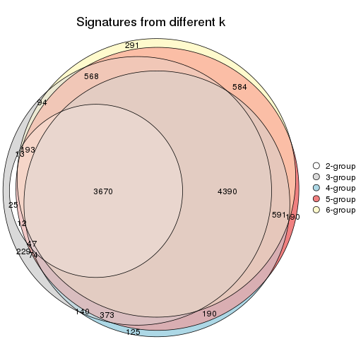
get_signature() returns a data frame invisibly. TO get the list of signatures, the function
call should be assigned to a variable explicitly. In following code, if plot argument is set
to FALSE, no heatmap is plotted while only the differential analysis is performed.
# code only for demonstration
tb = get_signature(res, k = ..., plot = FALSE)
An example of the output of tb is:
#> which_row fdr mean_1 mean_2 scaled_mean_1 scaled_mean_2 km
#> 1 38 0.042760348 8.373488 9.131774 -0.5533452 0.5164555 1
#> 2 40 0.018707592 7.106213 8.469186 -0.6173731 0.5762149 1
#> 3 55 0.019134737 10.221463 11.207825 -0.6159697 0.5749050 1
#> 4 59 0.006059896 5.921854 7.869574 -0.6899429 0.6439467 1
#> 5 60 0.018055526 8.928898 10.211722 -0.6204761 0.5791110 1
#> 6 98 0.009384629 15.714769 14.887706 0.6635654 -0.6193277 2
...
The columns in tb are:
which_row: row indices corresponding to the input matrix.fdr: FDR for the differential test. mean_x: The mean value in group x.scaled_mean_x: The mean value in group x after rows are scaled.km: Row groups if k-means clustering is applied to rows.UMAP plot which shows how samples are separated.
dimension_reduction(res, k = 2, method = "UMAP")
dimension_reduction(res, k = 3, method = "UMAP")
dimension_reduction(res, k = 4, method = "UMAP")
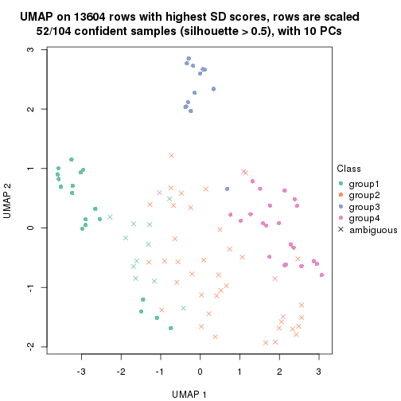
dimension_reduction(res, k = 5, method = "UMAP")

dimension_reduction(res, k = 6, method = "UMAP")
Following heatmap shows how subgroups are split when increasing k:
collect_classes(res)
Test correlation between subgroups and known annotations. If the known annotation is numeric, one-way ANOVA test is applied, and if the known annotation is discrete, chi-squared contingency table test is applied.
test_to_known_factors(res)
#> n cell.type(p) disease.state(p) other(p) k
#> SD:pam 100 9.42e-20 5.90e-05 2.43e-06 2
#> SD:pam 88 3.92e-18 4.19e-09 9.09e-09 3
#> SD:pam 52 6.88e-11 2.95e-08 2.72e-07 4
#> SD:pam 95 1.14e-19 6.12e-13 3.00e-08 5
#> SD:pam 77 7.52e-16 2.21e-17 2.79e-11 6
If matrix rows can be associated to genes, consider to use functional_enrichment(res,
...) to perform function enrichment for the signature genes. See this vignette for more detailed explanations.
The object with results only for a single top-value method and a single partition method can be extracted as:
res = res_list["SD", "mclust"]
# you can also extract it by
# res = res_list["SD:mclust"]
A summary of res and all the functions that can be applied to it:
res
#> A 'ConsensusPartition' object with k = 2, 3, 4, 5, 6.
#> On a matrix with 13604 rows and 104 columns.
#> Top rows (1000, 2000, 3000, 4000, 5000) are extracted by 'SD' method.
#> Subgroups are detected by 'mclust' method.
#> Performed in total 1250 partitions by row resampling.
#> Best k for subgroups seems to be 4.
#>
#> Following methods can be applied to this 'ConsensusPartition' object:
#> [1] "cola_report" "collect_classes" "collect_plots"
#> [4] "collect_stats" "colnames" "compare_signatures"
#> [7] "consensus_heatmap" "dimension_reduction" "functional_enrichment"
#> [10] "get_anno_col" "get_anno" "get_classes"
#> [13] "get_consensus" "get_matrix" "get_membership"
#> [16] "get_param" "get_signatures" "get_stats"
#> [19] "is_best_k" "is_stable_k" "membership_heatmap"
#> [22] "ncol" "nrow" "plot_ecdf"
#> [25] "rownames" "select_partition_number" "show"
#> [28] "suggest_best_k" "test_to_known_factors"
collect_plots() function collects all the plots made from res for all k (number of partitions)
into one single page to provide an easy and fast comparison between different k.
collect_plots(res)
The plots are:
k and the heatmap of
predicted classes for each k.k.k.k.All the plots in panels can be made by individual functions and they are plotted later in this section.
select_partition_number() produces several plots showing different
statistics for choosing “optimized” k. There are following statistics:
k;k, the area increased is defined as \(A_k - A_{k-1}\).The detailed explanations of these statistics can be found in the cola vignette.
Generally speaking, lower PAC score, higher mean silhouette score or higher
concordance corresponds to better partition. Rand index and Jaccard index
measure how similar the current partition is compared to partition with k-1.
If they are too similar, we won't accept k is better than k-1.
select_partition_number(res)
The numeric values for all these statistics can be obtained by get_stats().
get_stats(res)
#> k 1-PAC mean_silhouette concordance area_increased Rand Jaccard
#> 2 2 0.718 0.827 0.929 0.3092 0.751 0.751
#> 3 3 0.345 0.494 0.765 0.8612 0.609 0.490
#> 4 4 0.789 0.804 0.927 0.1922 0.747 0.475
#> 5 5 0.781 0.780 0.901 0.1131 0.874 0.631
#> 6 6 0.718 0.625 0.796 0.0547 0.932 0.737
suggest_best_k() suggests the best \(k\) based on these statistics. The rules are as follows:
suggest_best_k(res)
#> [1] 4
Following shows the table of the partitions (You need to click the show/hide
code output link to see it). The membership matrix (columns with name p*)
is inferred by
clue::cl_consensus()
function with the SE method. Basically the value in the membership matrix
represents the probability to belong to a certain group. The finall class
label for an item is determined with the group with highest probability it
belongs to.
In get_classes() function, the entropy is calculated from the membership
matrix and the silhouette score is calculated from the consensus matrix.
cbind(get_classes(res, k = 2), get_membership(res, k = 2))
#> class entropy silhouette p1 p2
#> GSM141334 1 0.2423 0.9038 0.960 0.040
#> GSM141335 1 0.2236 0.9059 0.964 0.036
#> GSM141336 1 0.2236 0.9059 0.964 0.036
#> GSM141337 1 0.2236 0.9059 0.964 0.036
#> GSM141184 1 0.2423 0.9038 0.960 0.040
#> GSM141185 1 0.2423 0.9038 0.960 0.040
#> GSM141186 1 0.0000 0.9174 1.000 0.000
#> GSM141243 1 0.2236 0.9059 0.964 0.036
#> GSM141244 1 0.2236 0.9059 0.964 0.036
#> GSM141246 1 0.2423 0.9038 0.960 0.040
#> GSM141247 1 0.2423 0.9038 0.960 0.040
#> GSM141248 1 0.2423 0.9038 0.960 0.040
#> GSM141249 1 0.0000 0.9174 1.000 0.000
#> GSM141258 1 0.2423 0.9038 0.960 0.040
#> GSM141259 1 0.8267 0.6307 0.740 0.260
#> GSM141260 1 0.2236 0.9059 0.964 0.036
#> GSM141261 1 0.3733 0.8669 0.928 0.072
#> GSM141262 1 0.2236 0.9059 0.964 0.036
#> GSM141263 1 0.8763 0.5692 0.704 0.296
#> GSM141338 1 0.2423 0.9038 0.960 0.040
#> GSM141339 1 0.2236 0.9059 0.964 0.036
#> GSM141340 1 0.0000 0.9174 1.000 0.000
#> GSM141265 2 0.9996 0.0556 0.488 0.512
#> GSM141267 1 0.5294 0.8277 0.880 0.120
#> GSM141330 1 0.9552 0.3415 0.624 0.376
#> GSM141266 1 0.1414 0.9117 0.980 0.020
#> GSM141264 2 0.4298 0.8294 0.088 0.912
#> GSM141341 1 0.3584 0.8703 0.932 0.068
#> GSM141342 1 0.9850 0.2912 0.572 0.428
#> GSM141343 1 0.9850 0.2912 0.572 0.428
#> GSM141356 1 0.0376 0.9161 0.996 0.004
#> GSM141357 1 0.0000 0.9174 1.000 0.000
#> GSM141358 1 0.0000 0.9174 1.000 0.000
#> GSM141359 1 0.7139 0.7277 0.804 0.196
#> GSM141360 1 0.0000 0.9174 1.000 0.000
#> GSM141361 1 0.0000 0.9174 1.000 0.000
#> GSM141362 1 0.0000 0.9174 1.000 0.000
#> GSM141363 1 0.0000 0.9174 1.000 0.000
#> GSM141364 1 0.0000 0.9174 1.000 0.000
#> GSM141365 1 0.6712 0.7540 0.824 0.176
#> GSM141366 1 0.9850 0.2912 0.572 0.428
#> GSM141367 1 0.3879 0.8634 0.924 0.076
#> GSM141368 1 0.9850 0.2912 0.572 0.428
#> GSM141369 1 0.9850 0.2912 0.572 0.428
#> GSM141370 1 0.9850 0.2912 0.572 0.428
#> GSM141371 1 0.9850 0.2912 0.572 0.428
#> GSM141372 1 0.9850 0.2912 0.572 0.428
#> GSM141373 1 0.2236 0.9059 0.964 0.036
#> GSM141374 1 0.0000 0.9174 1.000 0.000
#> GSM141375 1 0.0000 0.9174 1.000 0.000
#> GSM141376 1 0.0000 0.9174 1.000 0.000
#> GSM141377 1 0.0000 0.9174 1.000 0.000
#> GSM141378 1 0.0000 0.9174 1.000 0.000
#> GSM141380 1 0.0000 0.9174 1.000 0.000
#> GSM141387 1 0.0000 0.9174 1.000 0.000
#> GSM141395 1 0.2043 0.9075 0.968 0.032
#> GSM141397 1 0.0000 0.9174 1.000 0.000
#> GSM141398 1 0.2423 0.9038 0.960 0.040
#> GSM141401 1 0.0000 0.9174 1.000 0.000
#> GSM141399 1 0.2043 0.9075 0.968 0.032
#> GSM141379 1 0.0000 0.9174 1.000 0.000
#> GSM141381 1 0.0000 0.9174 1.000 0.000
#> GSM141383 1 0.0000 0.9174 1.000 0.000
#> GSM141384 1 0.0000 0.9174 1.000 0.000
#> GSM141385 1 0.0000 0.9174 1.000 0.000
#> GSM141388 1 0.0000 0.9174 1.000 0.000
#> GSM141389 1 0.0000 0.9174 1.000 0.000
#> GSM141391 1 0.0000 0.9174 1.000 0.000
#> GSM141394 1 0.2778 0.8984 0.952 0.048
#> GSM141396 1 0.0000 0.9174 1.000 0.000
#> GSM141403 1 0.0000 0.9174 1.000 0.000
#> GSM141404 1 0.0000 0.9174 1.000 0.000
#> GSM141386 1 0.0000 0.9174 1.000 0.000
#> GSM141382 1 0.0000 0.9174 1.000 0.000
#> GSM141390 1 0.0000 0.9174 1.000 0.000
#> GSM141393 1 0.1414 0.9088 0.980 0.020
#> GSM141400 1 0.0000 0.9174 1.000 0.000
#> GSM141402 1 0.8955 0.5405 0.688 0.312
#> GSM141392 2 1.0000 0.0295 0.496 0.504
#> GSM141405 1 0.0000 0.9174 1.000 0.000
#> GSM141406 1 0.2236 0.9059 0.964 0.036
#> GSM141407 1 0.0000 0.9174 1.000 0.000
#> GSM141408 1 0.0000 0.9174 1.000 0.000
#> GSM141409 1 0.0000 0.9174 1.000 0.000
#> GSM141410 1 0.0000 0.9174 1.000 0.000
#> GSM141411 1 0.0000 0.9174 1.000 0.000
#> GSM141412 1 0.0000 0.9174 1.000 0.000
#> GSM141413 1 0.0000 0.9174 1.000 0.000
#> GSM141414 1 0.0000 0.9174 1.000 0.000
#> GSM141415 1 0.0000 0.9174 1.000 0.000
#> GSM141416 1 0.2423 0.9038 0.960 0.040
#> GSM141417 1 0.0000 0.9174 1.000 0.000
#> GSM141420 2 0.0000 0.9131 0.000 1.000
#> GSM141421 2 0.0000 0.9131 0.000 1.000
#> GSM141422 2 0.0000 0.9131 0.000 1.000
#> GSM141423 2 0.0000 0.9131 0.000 1.000
#> GSM141424 2 0.0000 0.9131 0.000 1.000
#> GSM141427 2 0.0000 0.9131 0.000 1.000
#> GSM141428 2 0.0000 0.9131 0.000 1.000
#> GSM141418 2 0.0000 0.9131 0.000 1.000
#> GSM141419 2 0.0938 0.9044 0.012 0.988
#> GSM141425 2 0.0000 0.9131 0.000 1.000
#> GSM141426 2 0.0000 0.9131 0.000 1.000
#> GSM141429 2 0.0000 0.9131 0.000 1.000
cbind(get_classes(res, k = 3), get_membership(res, k = 3))
#> class entropy silhouette p1 p2 p3
#> GSM141334 2 0.6305 0.23828 0.484 0.516 0.000
#> GSM141335 2 0.6305 0.23828 0.484 0.516 0.000
#> GSM141336 2 0.6305 0.23828 0.484 0.516 0.000
#> GSM141337 1 0.6225 0.00192 0.568 0.432 0.000
#> GSM141184 2 0.6305 0.23828 0.484 0.516 0.000
#> GSM141185 2 0.6302 0.24412 0.480 0.520 0.000
#> GSM141186 2 0.3826 0.56001 0.124 0.868 0.008
#> GSM141243 2 0.4473 0.53408 0.164 0.828 0.008
#> GSM141244 2 0.6307 0.23405 0.488 0.512 0.000
#> GSM141246 2 0.6244 0.29541 0.440 0.560 0.000
#> GSM141247 2 0.6305 0.23828 0.484 0.516 0.000
#> GSM141248 1 0.6307 -0.18886 0.512 0.488 0.000
#> GSM141249 1 0.1411 0.70318 0.964 0.036 0.000
#> GSM141258 2 0.6305 0.23828 0.484 0.516 0.000
#> GSM141259 2 0.4974 0.48090 0.236 0.764 0.000
#> GSM141260 1 0.5327 0.44451 0.728 0.272 0.000
#> GSM141261 2 0.4295 0.56170 0.104 0.864 0.032
#> GSM141262 2 0.5621 0.44233 0.308 0.692 0.000
#> GSM141263 2 0.4449 0.56031 0.100 0.860 0.040
#> GSM141338 2 0.6308 0.22882 0.492 0.508 0.000
#> GSM141339 2 0.6305 0.23828 0.484 0.516 0.000
#> GSM141340 1 0.5291 0.31186 0.732 0.268 0.000
#> GSM141265 1 0.9917 -0.06592 0.376 0.352 0.272
#> GSM141267 1 0.6280 0.09120 0.540 0.460 0.000
#> GSM141330 1 0.9641 0.00742 0.432 0.356 0.212
#> GSM141266 2 0.3375 0.55906 0.100 0.892 0.008
#> GSM141264 3 0.9868 -0.12044 0.344 0.260 0.396
#> GSM141341 2 0.6282 0.26987 0.384 0.612 0.004
#> GSM141342 2 0.6633 0.44716 0.212 0.728 0.060
#> GSM141343 2 0.4821 0.52992 0.120 0.840 0.040
#> GSM141356 2 0.6442 0.23684 0.432 0.564 0.004
#> GSM141357 1 0.5327 0.43128 0.728 0.272 0.000
#> GSM141358 2 0.4861 0.52512 0.192 0.800 0.008
#> GSM141359 2 0.4068 0.56143 0.120 0.864 0.016
#> GSM141360 1 0.4062 0.59702 0.836 0.164 0.000
#> GSM141361 2 0.6398 0.24444 0.416 0.580 0.004
#> GSM141362 2 0.3755 0.56047 0.120 0.872 0.008
#> GSM141363 2 0.6305 0.25403 0.484 0.516 0.000
#> GSM141364 2 0.6079 0.39721 0.388 0.612 0.000
#> GSM141365 2 0.6148 0.28304 0.356 0.640 0.004
#> GSM141366 2 0.4556 0.53840 0.080 0.860 0.060
#> GSM141367 2 0.6339 0.27663 0.360 0.632 0.008
#> GSM141368 2 0.4556 0.53840 0.080 0.860 0.060
#> GSM141369 2 0.4458 0.53922 0.080 0.864 0.056
#> GSM141370 2 0.4458 0.53922 0.080 0.864 0.056
#> GSM141371 2 0.4458 0.53922 0.080 0.864 0.056
#> GSM141372 2 0.4458 0.53922 0.080 0.864 0.056
#> GSM141373 1 0.3879 0.61744 0.848 0.152 0.000
#> GSM141374 1 0.0000 0.71694 1.000 0.000 0.000
#> GSM141375 2 0.6398 0.24444 0.416 0.580 0.004
#> GSM141376 1 0.0424 0.71830 0.992 0.008 0.000
#> GSM141377 1 0.0892 0.71781 0.980 0.020 0.000
#> GSM141378 1 0.1529 0.70484 0.960 0.040 0.000
#> GSM141380 1 0.0237 0.71784 0.996 0.004 0.000
#> GSM141387 1 0.0892 0.71781 0.980 0.020 0.000
#> GSM141395 1 0.4654 0.58865 0.792 0.208 0.000
#> GSM141397 2 0.6228 0.27654 0.372 0.624 0.004
#> GSM141398 2 0.6305 0.23828 0.484 0.516 0.000
#> GSM141401 1 0.6274 -0.16913 0.544 0.456 0.000
#> GSM141399 2 0.6307 0.23373 0.488 0.512 0.000
#> GSM141379 1 0.0000 0.71694 1.000 0.000 0.000
#> GSM141381 1 0.0237 0.71784 0.996 0.004 0.000
#> GSM141383 1 0.0892 0.71781 0.980 0.020 0.000
#> GSM141384 1 0.0892 0.71781 0.980 0.020 0.000
#> GSM141385 1 0.2796 0.68694 0.908 0.092 0.000
#> GSM141388 1 0.0892 0.71781 0.980 0.020 0.000
#> GSM141389 1 0.0892 0.71781 0.980 0.020 0.000
#> GSM141391 1 0.0237 0.71784 0.996 0.004 0.000
#> GSM141394 2 0.7360 0.47529 0.212 0.692 0.096
#> GSM141396 1 0.1411 0.70318 0.964 0.036 0.000
#> GSM141403 2 0.6192 0.35701 0.420 0.580 0.000
#> GSM141404 1 0.5706 0.24494 0.680 0.320 0.000
#> GSM141386 1 0.3551 0.65104 0.868 0.132 0.000
#> GSM141382 1 0.3551 0.61532 0.868 0.132 0.000
#> GSM141390 1 0.4235 0.56969 0.824 0.176 0.000
#> GSM141393 1 0.4399 0.53844 0.812 0.188 0.000
#> GSM141400 1 0.3551 0.61803 0.868 0.132 0.000
#> GSM141402 2 0.3802 0.54213 0.080 0.888 0.032
#> GSM141392 1 0.9168 0.20383 0.528 0.184 0.288
#> GSM141405 1 0.5158 0.50392 0.764 0.232 0.004
#> GSM141406 1 0.6307 0.03131 0.512 0.488 0.000
#> GSM141407 1 0.0000 0.71694 1.000 0.000 0.000
#> GSM141408 1 0.0892 0.71781 0.980 0.020 0.000
#> GSM141409 1 0.5733 0.20994 0.676 0.324 0.000
#> GSM141410 1 0.0237 0.71784 0.996 0.004 0.000
#> GSM141411 1 0.1411 0.70318 0.964 0.036 0.000
#> GSM141412 1 0.0747 0.71785 0.984 0.016 0.000
#> GSM141413 1 0.5835 0.16415 0.660 0.340 0.000
#> GSM141414 1 0.5968 0.09255 0.636 0.364 0.000
#> GSM141415 1 0.0892 0.71781 0.980 0.020 0.000
#> GSM141416 2 0.6307 0.22724 0.488 0.512 0.000
#> GSM141417 1 0.2959 0.62550 0.900 0.100 0.000
#> GSM141420 3 0.0000 0.94443 0.000 0.000 1.000
#> GSM141421 3 0.0000 0.94443 0.000 0.000 1.000
#> GSM141422 3 0.0000 0.94443 0.000 0.000 1.000
#> GSM141423 3 0.0000 0.94443 0.000 0.000 1.000
#> GSM141424 3 0.0000 0.94443 0.000 0.000 1.000
#> GSM141427 3 0.0000 0.94443 0.000 0.000 1.000
#> GSM141428 3 0.0000 0.94443 0.000 0.000 1.000
#> GSM141418 3 0.0000 0.94443 0.000 0.000 1.000
#> GSM141419 3 0.1031 0.92438 0.000 0.024 0.976
#> GSM141425 3 0.0000 0.94443 0.000 0.000 1.000
#> GSM141426 3 0.0000 0.94443 0.000 0.000 1.000
#> GSM141429 3 0.0000 0.94443 0.000 0.000 1.000
cbind(get_classes(res, k = 4), get_membership(res, k = 4))
#> class entropy silhouette p1 p2 p3 p4
#> GSM141334 2 0.0000 0.868 0.000 1.000 0.000 0.000
#> GSM141335 2 0.0000 0.868 0.000 1.000 0.000 0.000
#> GSM141336 2 0.0000 0.868 0.000 1.000 0.000 0.000
#> GSM141337 2 0.4855 0.347 0.400 0.600 0.000 0.000
#> GSM141184 2 0.0000 0.868 0.000 1.000 0.000 0.000
#> GSM141185 2 0.0000 0.868 0.000 1.000 0.000 0.000
#> GSM141186 2 0.0188 0.866 0.000 0.996 0.000 0.004
#> GSM141243 2 0.0000 0.868 0.000 1.000 0.000 0.000
#> GSM141244 2 0.4746 0.421 0.368 0.632 0.000 0.000
#> GSM141246 2 0.0000 0.868 0.000 1.000 0.000 0.000
#> GSM141247 2 0.0000 0.868 0.000 1.000 0.000 0.000
#> GSM141248 2 0.4855 0.347 0.400 0.600 0.000 0.000
#> GSM141249 1 0.0336 0.925 0.992 0.008 0.000 0.000
#> GSM141258 2 0.0000 0.868 0.000 1.000 0.000 0.000
#> GSM141259 2 0.4624 0.370 0.000 0.660 0.000 0.340
#> GSM141260 2 0.0000 0.868 0.000 1.000 0.000 0.000
#> GSM141261 4 0.4994 0.124 0.000 0.480 0.000 0.520
#> GSM141262 2 0.0000 0.868 0.000 1.000 0.000 0.000
#> GSM141263 4 0.4877 0.354 0.000 0.408 0.000 0.592
#> GSM141338 2 0.0000 0.868 0.000 1.000 0.000 0.000
#> GSM141339 2 0.2081 0.802 0.084 0.916 0.000 0.000
#> GSM141340 1 0.0000 0.932 1.000 0.000 0.000 0.000
#> GSM141265 2 0.0000 0.868 0.000 1.000 0.000 0.000
#> GSM141267 2 0.0000 0.868 0.000 1.000 0.000 0.000
#> GSM141330 2 0.0000 0.868 0.000 1.000 0.000 0.000
#> GSM141266 2 0.0000 0.868 0.000 1.000 0.000 0.000
#> GSM141264 2 0.1940 0.814 0.000 0.924 0.076 0.000
#> GSM141341 2 0.5780 -0.105 0.028 0.496 0.000 0.476
#> GSM141342 4 0.0000 0.831 0.000 0.000 0.000 1.000
#> GSM141343 4 0.0000 0.831 0.000 0.000 0.000 1.000
#> GSM141356 2 0.3610 0.667 0.000 0.800 0.000 0.200
#> GSM141357 1 0.6251 0.538 0.664 0.140 0.000 0.196
#> GSM141358 2 0.0000 0.868 0.000 1.000 0.000 0.000
#> GSM141359 2 0.4843 0.252 0.000 0.604 0.000 0.396
#> GSM141360 1 0.0000 0.932 1.000 0.000 0.000 0.000
#> GSM141361 2 0.3444 0.690 0.000 0.816 0.000 0.184
#> GSM141362 2 0.0000 0.868 0.000 1.000 0.000 0.000
#> GSM141363 2 0.2345 0.790 0.000 0.900 0.000 0.100
#> GSM141364 2 0.1022 0.847 0.000 0.968 0.000 0.032
#> GSM141365 4 0.4277 0.603 0.000 0.280 0.000 0.720
#> GSM141366 4 0.0000 0.831 0.000 0.000 0.000 1.000
#> GSM141367 4 0.3710 0.695 0.004 0.192 0.000 0.804
#> GSM141368 4 0.0000 0.831 0.000 0.000 0.000 1.000
#> GSM141369 4 0.0000 0.831 0.000 0.000 0.000 1.000
#> GSM141370 4 0.0000 0.831 0.000 0.000 0.000 1.000
#> GSM141371 4 0.0000 0.831 0.000 0.000 0.000 1.000
#> GSM141372 4 0.0000 0.831 0.000 0.000 0.000 1.000
#> GSM141373 2 0.1940 0.809 0.076 0.924 0.000 0.000
#> GSM141374 1 0.0000 0.932 1.000 0.000 0.000 0.000
#> GSM141375 2 0.0000 0.868 0.000 1.000 0.000 0.000
#> GSM141376 1 0.0000 0.932 1.000 0.000 0.000 0.000
#> GSM141377 1 0.0000 0.932 1.000 0.000 0.000 0.000
#> GSM141378 1 0.0000 0.932 1.000 0.000 0.000 0.000
#> GSM141380 1 0.0000 0.932 1.000 0.000 0.000 0.000
#> GSM141387 1 0.0000 0.932 1.000 0.000 0.000 0.000
#> GSM141395 2 0.0000 0.868 0.000 1.000 0.000 0.000
#> GSM141397 2 0.0000 0.868 0.000 1.000 0.000 0.000
#> GSM141398 2 0.0000 0.868 0.000 1.000 0.000 0.000
#> GSM141401 2 0.0000 0.868 0.000 1.000 0.000 0.000
#> GSM141399 2 0.0000 0.868 0.000 1.000 0.000 0.000
#> GSM141379 1 0.0000 0.932 1.000 0.000 0.000 0.000
#> GSM141381 1 0.0000 0.932 1.000 0.000 0.000 0.000
#> GSM141383 1 0.0000 0.932 1.000 0.000 0.000 0.000
#> GSM141384 1 0.0000 0.932 1.000 0.000 0.000 0.000
#> GSM141385 1 0.2921 0.784 0.860 0.140 0.000 0.000
#> GSM141388 1 0.0000 0.932 1.000 0.000 0.000 0.000
#> GSM141389 1 0.0000 0.932 1.000 0.000 0.000 0.000
#> GSM141391 1 0.0000 0.932 1.000 0.000 0.000 0.000
#> GSM141394 2 0.0000 0.868 0.000 1.000 0.000 0.000
#> GSM141396 1 0.0000 0.932 1.000 0.000 0.000 0.000
#> GSM141403 2 0.2281 0.794 0.000 0.904 0.000 0.096
#> GSM141404 1 0.3649 0.698 0.796 0.204 0.000 0.000
#> GSM141386 2 0.1389 0.838 0.048 0.952 0.000 0.000
#> GSM141382 1 0.0000 0.932 1.000 0.000 0.000 0.000
#> GSM141390 1 0.4877 0.267 0.592 0.408 0.000 0.000
#> GSM141393 1 0.0000 0.932 1.000 0.000 0.000 0.000
#> GSM141400 1 0.0000 0.932 1.000 0.000 0.000 0.000
#> GSM141402 4 0.0592 0.823 0.000 0.016 0.000 0.984
#> GSM141392 2 0.5193 0.262 0.412 0.580 0.008 0.000
#> GSM141405 1 0.4356 0.536 0.708 0.292 0.000 0.000
#> GSM141406 2 0.0000 0.868 0.000 1.000 0.000 0.000
#> GSM141407 1 0.0000 0.932 1.000 0.000 0.000 0.000
#> GSM141408 1 0.0000 0.932 1.000 0.000 0.000 0.000
#> GSM141409 1 0.4500 0.495 0.684 0.316 0.000 0.000
#> GSM141410 1 0.0000 0.932 1.000 0.000 0.000 0.000
#> GSM141411 1 0.0000 0.932 1.000 0.000 0.000 0.000
#> GSM141412 1 0.0000 0.932 1.000 0.000 0.000 0.000
#> GSM141413 2 0.4877 0.326 0.408 0.592 0.000 0.000
#> GSM141414 2 0.4877 0.326 0.408 0.592 0.000 0.000
#> GSM141415 1 0.0000 0.932 1.000 0.000 0.000 0.000
#> GSM141416 2 0.0000 0.868 0.000 1.000 0.000 0.000
#> GSM141417 1 0.0000 0.932 1.000 0.000 0.000 0.000
#> GSM141420 3 0.0000 1.000 0.000 0.000 1.000 0.000
#> GSM141421 3 0.0000 1.000 0.000 0.000 1.000 0.000
#> GSM141422 3 0.0000 1.000 0.000 0.000 1.000 0.000
#> GSM141423 3 0.0000 1.000 0.000 0.000 1.000 0.000
#> GSM141424 3 0.0000 1.000 0.000 0.000 1.000 0.000
#> GSM141427 3 0.0000 1.000 0.000 0.000 1.000 0.000
#> GSM141428 3 0.0000 1.000 0.000 0.000 1.000 0.000
#> GSM141418 3 0.0000 1.000 0.000 0.000 1.000 0.000
#> GSM141419 3 0.0000 1.000 0.000 0.000 1.000 0.000
#> GSM141425 3 0.0000 1.000 0.000 0.000 1.000 0.000
#> GSM141426 3 0.0000 1.000 0.000 0.000 1.000 0.000
#> GSM141429 3 0.0000 1.000 0.000 0.000 1.000 0.000
cbind(get_classes(res, k = 5), get_membership(res, k = 5))
#> class entropy silhouette p1 p2 p3 p4 p5
#> GSM141334 2 0.0000 0.8547 0.000 1.000 0.000 0.000 0.000
#> GSM141335 2 0.0000 0.8547 0.000 1.000 0.000 0.000 0.000
#> GSM141336 2 0.0510 0.8539 0.000 0.984 0.000 0.000 0.016
#> GSM141337 2 0.3561 0.6229 0.260 0.740 0.000 0.000 0.000
#> GSM141184 2 0.0510 0.8539 0.000 0.984 0.000 0.000 0.016
#> GSM141185 2 0.0510 0.8539 0.000 0.984 0.000 0.000 0.016
#> GSM141186 5 0.2424 0.7157 0.000 0.132 0.000 0.000 0.868
#> GSM141243 2 0.3837 0.5055 0.000 0.692 0.000 0.000 0.308
#> GSM141244 2 0.0000 0.8547 0.000 1.000 0.000 0.000 0.000
#> GSM141246 2 0.0609 0.8533 0.000 0.980 0.000 0.000 0.020
#> GSM141247 2 0.0510 0.8539 0.000 0.984 0.000 0.000 0.016
#> GSM141248 2 0.3305 0.6626 0.224 0.776 0.000 0.000 0.000
#> GSM141249 1 0.0963 0.8893 0.964 0.036 0.000 0.000 0.000
#> GSM141258 2 0.0510 0.8539 0.000 0.984 0.000 0.000 0.016
#> GSM141259 5 0.1792 0.7275 0.000 0.000 0.000 0.084 0.916
#> GSM141260 2 0.0162 0.8546 0.000 0.996 0.000 0.000 0.004
#> GSM141261 5 0.6262 0.4240 0.000 0.176 0.000 0.304 0.520
#> GSM141262 2 0.3837 0.5055 0.000 0.692 0.000 0.000 0.308
#> GSM141263 5 0.4232 0.5577 0.000 0.012 0.000 0.312 0.676
#> GSM141338 2 0.0000 0.8547 0.000 1.000 0.000 0.000 0.000
#> GSM141339 2 0.0000 0.8547 0.000 1.000 0.000 0.000 0.000
#> GSM141340 1 0.0000 0.9056 1.000 0.000 0.000 0.000 0.000
#> GSM141265 5 0.1121 0.7462 0.000 0.044 0.000 0.000 0.956
#> GSM141267 2 0.0703 0.8522 0.000 0.976 0.000 0.000 0.024
#> GSM141330 2 0.3480 0.6340 0.000 0.752 0.000 0.000 0.248
#> GSM141266 2 0.4307 -0.0375 0.000 0.500 0.000 0.000 0.500
#> GSM141264 5 0.0566 0.7447 0.000 0.004 0.012 0.000 0.984
#> GSM141341 5 0.0510 0.7412 0.000 0.000 0.000 0.016 0.984
#> GSM141342 4 0.0162 1.0000 0.000 0.000 0.000 0.996 0.004
#> GSM141343 5 0.4126 0.4656 0.000 0.000 0.000 0.380 0.620
#> GSM141356 5 0.0162 0.7446 0.000 0.000 0.000 0.004 0.996
#> GSM141357 5 0.4698 0.4723 0.028 0.304 0.000 0.004 0.664
#> GSM141358 5 0.3586 0.5855 0.000 0.264 0.000 0.000 0.736
#> GSM141359 5 0.3774 0.5741 0.000 0.000 0.000 0.296 0.704
#> GSM141360 1 0.6432 0.2825 0.492 0.304 0.000 0.000 0.204
#> GSM141361 5 0.0000 0.7444 0.000 0.000 0.000 0.000 1.000
#> GSM141362 5 0.4404 0.5330 0.000 0.292 0.000 0.024 0.684
#> GSM141363 2 0.4310 0.2410 0.000 0.604 0.000 0.004 0.392
#> GSM141364 2 0.4201 0.1822 0.000 0.592 0.000 0.000 0.408
#> GSM141365 5 0.2516 0.6766 0.000 0.000 0.000 0.140 0.860
#> GSM141366 4 0.0162 1.0000 0.000 0.000 0.000 0.996 0.004
#> GSM141367 5 0.0703 0.7399 0.000 0.000 0.000 0.024 0.976
#> GSM141368 4 0.0162 1.0000 0.000 0.000 0.000 0.996 0.004
#> GSM141369 4 0.0162 1.0000 0.000 0.000 0.000 0.996 0.004
#> GSM141370 4 0.0162 1.0000 0.000 0.000 0.000 0.996 0.004
#> GSM141371 4 0.0162 1.0000 0.000 0.000 0.000 0.996 0.004
#> GSM141372 4 0.0162 1.0000 0.000 0.000 0.000 0.996 0.004
#> GSM141373 2 0.0162 0.8546 0.000 0.996 0.000 0.000 0.004
#> GSM141374 1 0.0510 0.9017 0.984 0.016 0.000 0.000 0.000
#> GSM141375 5 0.0162 0.7444 0.004 0.000 0.000 0.000 0.996
#> GSM141376 1 0.0162 0.9048 0.996 0.000 0.000 0.004 0.000
#> GSM141377 1 0.0000 0.9056 1.000 0.000 0.000 0.000 0.000
#> GSM141378 1 0.0510 0.9017 0.984 0.016 0.000 0.000 0.000
#> GSM141380 1 0.0162 0.9051 0.996 0.004 0.000 0.000 0.000
#> GSM141387 1 0.0162 0.9048 0.996 0.000 0.000 0.004 0.000
#> GSM141395 2 0.1197 0.8290 0.000 0.952 0.000 0.000 0.048
#> GSM141397 5 0.2852 0.6692 0.000 0.172 0.000 0.000 0.828
#> GSM141398 2 0.0000 0.8547 0.000 1.000 0.000 0.000 0.000
#> GSM141401 2 0.0290 0.8537 0.000 0.992 0.000 0.000 0.008
#> GSM141399 2 0.0162 0.8546 0.000 0.996 0.000 0.000 0.004
#> GSM141379 1 0.0000 0.9056 1.000 0.000 0.000 0.000 0.000
#> GSM141381 1 0.0162 0.9048 0.996 0.000 0.000 0.004 0.000
#> GSM141383 1 0.0000 0.9056 1.000 0.000 0.000 0.000 0.000
#> GSM141384 1 0.0162 0.9048 0.996 0.000 0.000 0.004 0.000
#> GSM141385 1 0.3461 0.7030 0.772 0.224 0.000 0.000 0.004
#> GSM141388 1 0.0000 0.9056 1.000 0.000 0.000 0.000 0.000
#> GSM141389 1 0.0000 0.9056 1.000 0.000 0.000 0.000 0.000
#> GSM141391 1 0.0510 0.9017 0.984 0.016 0.000 0.000 0.000
#> GSM141394 2 0.0703 0.8521 0.000 0.976 0.000 0.000 0.024
#> GSM141396 1 0.0510 0.9017 0.984 0.016 0.000 0.000 0.000
#> GSM141403 5 0.4161 0.3537 0.000 0.392 0.000 0.000 0.608
#> GSM141404 1 0.3366 0.6660 0.768 0.232 0.000 0.000 0.000
#> GSM141386 2 0.2358 0.7670 0.104 0.888 0.000 0.000 0.008
#> GSM141382 1 0.0510 0.9017 0.984 0.016 0.000 0.000 0.000
#> GSM141390 1 0.6288 0.3619 0.516 0.304 0.000 0.000 0.180
#> GSM141393 1 0.2377 0.8056 0.872 0.128 0.000 0.000 0.000
#> GSM141400 1 0.3774 0.6066 0.704 0.296 0.000 0.000 0.000
#> GSM141402 5 0.4045 0.5040 0.000 0.000 0.000 0.356 0.644
#> GSM141392 5 0.2325 0.7180 0.028 0.068 0.000 0.000 0.904
#> GSM141405 5 0.5094 0.2965 0.352 0.048 0.000 0.000 0.600
#> GSM141406 2 0.0703 0.8522 0.000 0.976 0.000 0.000 0.024
#> GSM141407 1 0.0162 0.9048 0.996 0.000 0.000 0.004 0.000
#> GSM141408 1 0.0162 0.9048 0.996 0.000 0.000 0.004 0.000
#> GSM141409 1 0.4238 0.3432 0.628 0.368 0.000 0.000 0.004
#> GSM141410 1 0.0000 0.9056 1.000 0.000 0.000 0.000 0.000
#> GSM141411 1 0.0510 0.9017 0.984 0.016 0.000 0.000 0.000
#> GSM141412 1 0.0000 0.9056 1.000 0.000 0.000 0.000 0.000
#> GSM141413 2 0.3906 0.5800 0.292 0.704 0.000 0.000 0.004
#> GSM141414 2 0.3715 0.6231 0.260 0.736 0.000 0.000 0.004
#> GSM141415 1 0.0000 0.9056 1.000 0.000 0.000 0.000 0.000
#> GSM141416 2 0.0000 0.8547 0.000 1.000 0.000 0.000 0.000
#> GSM141417 1 0.0000 0.9056 1.000 0.000 0.000 0.000 0.000
#> GSM141420 3 0.0000 0.9994 0.000 0.000 1.000 0.000 0.000
#> GSM141421 3 0.0000 0.9994 0.000 0.000 1.000 0.000 0.000
#> GSM141422 3 0.0000 0.9994 0.000 0.000 1.000 0.000 0.000
#> GSM141423 3 0.0000 0.9994 0.000 0.000 1.000 0.000 0.000
#> GSM141424 3 0.0000 0.9994 0.000 0.000 1.000 0.000 0.000
#> GSM141427 3 0.0000 0.9994 0.000 0.000 1.000 0.000 0.000
#> GSM141428 3 0.0000 0.9994 0.000 0.000 1.000 0.000 0.000
#> GSM141418 3 0.0000 0.9994 0.000 0.000 1.000 0.000 0.000
#> GSM141419 3 0.0162 0.9933 0.000 0.000 0.996 0.000 0.004
#> GSM141425 3 0.0000 0.9994 0.000 0.000 1.000 0.000 0.000
#> GSM141426 3 0.0000 0.9994 0.000 0.000 1.000 0.000 0.000
#> GSM141429 3 0.0000 0.9994 0.000 0.000 1.000 0.000 0.000
cbind(get_classes(res, k = 6), get_membership(res, k = 6))
#> class entropy silhouette p1 p2 p3 p4 p5 p6
#> GSM141334 5 0.1462 0.75521 0.000 0.056 0.000 0.000 0.936 0.008
#> GSM141335 5 0.1049 0.75890 0.000 0.032 0.000 0.000 0.960 0.008
#> GSM141336 5 0.2006 0.72699 0.000 0.104 0.000 0.000 0.892 0.004
#> GSM141337 5 0.4220 0.60570 0.172 0.000 0.000 0.000 0.732 0.096
#> GSM141184 5 0.1411 0.75262 0.000 0.060 0.000 0.000 0.936 0.004
#> GSM141185 5 0.1411 0.75262 0.000 0.060 0.000 0.000 0.936 0.004
#> GSM141186 2 0.0146 0.54326 0.000 0.996 0.000 0.000 0.004 0.000
#> GSM141243 2 0.4072 0.07602 0.000 0.544 0.000 0.000 0.448 0.008
#> GSM141244 5 0.2581 0.69562 0.128 0.000 0.000 0.000 0.856 0.016
#> GSM141246 5 0.1408 0.75841 0.000 0.036 0.000 0.000 0.944 0.020
#> GSM141247 5 0.2118 0.72712 0.000 0.104 0.000 0.000 0.888 0.008
#> GSM141248 5 0.2859 0.67159 0.156 0.000 0.000 0.000 0.828 0.016
#> GSM141249 1 0.4913 0.50955 0.588 0.000 0.000 0.000 0.080 0.332
#> GSM141258 5 0.1411 0.75262 0.000 0.060 0.000 0.000 0.936 0.004
#> GSM141259 2 0.1657 0.53725 0.000 0.928 0.000 0.016 0.000 0.056
#> GSM141260 5 0.2020 0.73118 0.000 0.008 0.000 0.000 0.896 0.096
#> GSM141261 2 0.4060 0.45909 0.000 0.764 0.000 0.112 0.120 0.004
#> GSM141262 2 0.4264 -0.05588 0.000 0.496 0.000 0.000 0.488 0.016
#> GSM141263 2 0.1910 0.52147 0.000 0.892 0.000 0.108 0.000 0.000
#> GSM141338 5 0.1644 0.74660 0.000 0.076 0.000 0.000 0.920 0.004
#> GSM141339 5 0.1367 0.75091 0.044 0.000 0.000 0.000 0.944 0.012
#> GSM141340 1 0.5120 0.47284 0.600 0.000 0.000 0.000 0.120 0.280
#> GSM141265 2 0.3774 0.40169 0.000 0.664 0.000 0.000 0.008 0.328
#> GSM141267 5 0.2404 0.72383 0.000 0.016 0.000 0.000 0.872 0.112
#> GSM141330 5 0.5155 0.30857 0.000 0.124 0.000 0.000 0.596 0.280
#> GSM141266 2 0.2416 0.45299 0.000 0.844 0.000 0.000 0.156 0.000
#> GSM141264 2 0.3684 0.40117 0.000 0.664 0.004 0.000 0.000 0.332
#> GSM141341 2 0.3838 0.30757 0.000 0.552 0.000 0.000 0.000 0.448
#> GSM141342 4 0.0458 0.95988 0.000 0.000 0.000 0.984 0.000 0.016
#> GSM141343 2 0.3896 0.47261 0.000 0.744 0.000 0.204 0.000 0.052
#> GSM141356 2 0.4293 0.28184 0.000 0.536 0.000 0.004 0.012 0.448
#> GSM141357 6 0.6805 0.54926 0.120 0.212 0.000 0.004 0.140 0.524
#> GSM141358 2 0.1745 0.52948 0.000 0.924 0.000 0.000 0.056 0.020
#> GSM141359 2 0.0865 0.53965 0.000 0.964 0.000 0.036 0.000 0.000
#> GSM141360 6 0.6757 0.55903 0.204 0.132 0.000 0.000 0.144 0.520
#> GSM141361 2 0.3833 0.30639 0.000 0.556 0.000 0.000 0.000 0.444
#> GSM141362 2 0.0935 0.53824 0.000 0.964 0.000 0.004 0.032 0.000
#> GSM141363 2 0.4485 0.30945 0.000 0.684 0.000 0.004 0.248 0.064
#> GSM141364 5 0.5573 -0.03639 0.000 0.312 0.000 0.000 0.524 0.164
#> GSM141365 2 0.5175 0.25100 0.000 0.492 0.000 0.088 0.000 0.420
#> GSM141366 4 0.0458 0.95988 0.000 0.000 0.000 0.984 0.000 0.016
#> GSM141367 2 0.3971 0.30498 0.000 0.548 0.000 0.004 0.000 0.448
#> GSM141368 4 0.0458 0.95988 0.000 0.000 0.000 0.984 0.000 0.016
#> GSM141369 4 0.1007 0.96755 0.000 0.044 0.000 0.956 0.000 0.000
#> GSM141370 4 0.1075 0.96787 0.000 0.048 0.000 0.952 0.000 0.000
#> GSM141371 4 0.1075 0.96787 0.000 0.048 0.000 0.952 0.000 0.000
#> GSM141372 4 0.1075 0.96787 0.000 0.048 0.000 0.952 0.000 0.000
#> GSM141373 5 0.3328 0.69479 0.064 0.000 0.000 0.000 0.816 0.120
#> GSM141374 1 0.2912 0.68250 0.784 0.000 0.000 0.000 0.000 0.216
#> GSM141375 2 0.3828 0.30674 0.000 0.560 0.000 0.000 0.000 0.440
#> GSM141376 1 0.2178 0.71962 0.868 0.000 0.000 0.000 0.000 0.132
#> GSM141377 1 0.4176 0.62078 0.716 0.000 0.000 0.000 0.064 0.220
#> GSM141378 1 0.3244 0.66641 0.732 0.000 0.000 0.000 0.000 0.268
#> GSM141380 1 0.1765 0.75604 0.904 0.000 0.000 0.000 0.000 0.096
#> GSM141387 1 0.2378 0.71212 0.848 0.000 0.000 0.000 0.000 0.152
#> GSM141395 5 0.3955 0.49506 0.004 0.012 0.000 0.000 0.668 0.316
#> GSM141397 2 0.5314 0.29156 0.000 0.544 0.000 0.000 0.120 0.336
#> GSM141398 5 0.1471 0.75231 0.000 0.064 0.000 0.000 0.932 0.004
#> GSM141401 5 0.3755 0.58832 0.004 0.020 0.000 0.000 0.732 0.244
#> GSM141399 5 0.0547 0.75643 0.000 0.000 0.000 0.000 0.980 0.020
#> GSM141379 1 0.1444 0.75865 0.928 0.000 0.000 0.000 0.000 0.072
#> GSM141381 1 0.0363 0.76028 0.988 0.000 0.000 0.000 0.000 0.012
#> GSM141383 1 0.0713 0.75946 0.972 0.000 0.000 0.000 0.000 0.028
#> GSM141384 1 0.2378 0.71212 0.848 0.000 0.000 0.000 0.000 0.152
#> GSM141385 1 0.5729 0.35511 0.504 0.008 0.000 0.000 0.140 0.348
#> GSM141388 1 0.0713 0.75946 0.972 0.000 0.000 0.000 0.000 0.028
#> GSM141389 1 0.0632 0.75981 0.976 0.000 0.000 0.000 0.000 0.024
#> GSM141391 1 0.2300 0.72302 0.856 0.000 0.000 0.000 0.000 0.144
#> GSM141394 5 0.2704 0.71152 0.000 0.140 0.000 0.000 0.844 0.016
#> GSM141396 1 0.3804 0.59857 0.656 0.000 0.000 0.000 0.008 0.336
#> GSM141403 2 0.6236 -0.20931 0.000 0.368 0.000 0.004 0.312 0.316
#> GSM141404 1 0.6403 -0.10868 0.348 0.012 0.000 0.000 0.348 0.292
#> GSM141386 5 0.5411 0.30053 0.084 0.016 0.000 0.000 0.552 0.348
#> GSM141382 1 0.1643 0.75026 0.924 0.000 0.000 0.000 0.008 0.068
#> GSM141390 6 0.5481 0.55167 0.128 0.028 0.000 0.000 0.212 0.632
#> GSM141393 1 0.2311 0.73829 0.880 0.000 0.000 0.000 0.016 0.104
#> GSM141400 1 0.3078 0.71538 0.836 0.000 0.000 0.000 0.056 0.108
#> GSM141402 2 0.3532 0.50278 0.000 0.796 0.000 0.140 0.000 0.064
#> GSM141392 6 0.4672 0.16876 0.000 0.348 0.000 0.000 0.056 0.596
#> GSM141405 6 0.6160 0.42514 0.164 0.252 0.000 0.000 0.040 0.544
#> GSM141406 5 0.1700 0.74417 0.000 0.024 0.000 0.000 0.928 0.048
#> GSM141407 1 0.2135 0.72120 0.872 0.000 0.000 0.000 0.000 0.128
#> GSM141408 1 0.2340 0.71392 0.852 0.000 0.000 0.000 0.000 0.148
#> GSM141409 5 0.6217 0.00466 0.316 0.004 0.000 0.000 0.384 0.296
#> GSM141410 1 0.2048 0.72485 0.880 0.000 0.000 0.000 0.000 0.120
#> GSM141411 1 0.3835 0.61229 0.668 0.000 0.000 0.000 0.012 0.320
#> GSM141412 1 0.2219 0.72224 0.864 0.000 0.000 0.000 0.000 0.136
#> GSM141413 5 0.5612 0.38249 0.184 0.004 0.000 0.000 0.560 0.252
#> GSM141414 5 0.5689 0.37673 0.172 0.008 0.000 0.000 0.556 0.264
#> GSM141415 1 0.0865 0.76126 0.964 0.000 0.000 0.000 0.000 0.036
#> GSM141416 5 0.0508 0.75744 0.004 0.000 0.000 0.000 0.984 0.012
#> GSM141417 1 0.4507 0.57018 0.664 0.000 0.000 0.000 0.068 0.268
#> GSM141420 3 0.0000 0.99640 0.000 0.000 1.000 0.000 0.000 0.000
#> GSM141421 3 0.0000 0.99640 0.000 0.000 1.000 0.000 0.000 0.000
#> GSM141422 3 0.0000 0.99640 0.000 0.000 1.000 0.000 0.000 0.000
#> GSM141423 3 0.0000 0.99640 0.000 0.000 1.000 0.000 0.000 0.000
#> GSM141424 3 0.0000 0.99640 0.000 0.000 1.000 0.000 0.000 0.000
#> GSM141427 3 0.0000 0.99640 0.000 0.000 1.000 0.000 0.000 0.000
#> GSM141428 3 0.0000 0.99640 0.000 0.000 1.000 0.000 0.000 0.000
#> GSM141418 3 0.0000 0.99640 0.000 0.000 1.000 0.000 0.000 0.000
#> GSM141419 3 0.0937 0.95955 0.000 0.000 0.960 0.000 0.000 0.040
#> GSM141425 3 0.0000 0.99640 0.000 0.000 1.000 0.000 0.000 0.000
#> GSM141426 3 0.0000 0.99640 0.000 0.000 1.000 0.000 0.000 0.000
#> GSM141429 3 0.0000 0.99640 0.000 0.000 1.000 0.000 0.000 0.000
Heatmaps for the consensus matrix. It visualizes the probability of two samples to be in a same group.
consensus_heatmap(res, k = 2)
consensus_heatmap(res, k = 3)
consensus_heatmap(res, k = 4)
consensus_heatmap(res, k = 5)
consensus_heatmap(res, k = 6)
Heatmaps for the membership of samples in all partitions to see how consistent they are:
membership_heatmap(res, k = 2)
membership_heatmap(res, k = 3)
membership_heatmap(res, k = 4)
membership_heatmap(res, k = 5)
membership_heatmap(res, k = 6)
As soon as we have had the classes for columns, we can look for signatures which are significantly different between classes which can be candidate marks for certain classes. Following are the heatmaps for signatures.
Signature heatmaps where rows are scaled:
get_signatures(res, k = 2)
get_signatures(res, k = 3)
get_signatures(res, k = 4)
get_signatures(res, k = 5)
get_signatures(res, k = 6)
#> Error: The width or height of the raster image is zero, maybe you forget to turn off the
#> previous graphic device or it was corrupted. Run `dev.off()` to close it.

Signature heatmaps where rows are not scaled:
get_signatures(res, k = 2, scale_rows = FALSE)
get_signatures(res, k = 3, scale_rows = FALSE)
get_signatures(res, k = 4, scale_rows = FALSE)

get_signatures(res, k = 5, scale_rows = FALSE)
get_signatures(res, k = 6, scale_rows = FALSE)
#> Error: The width or height of the raster image is zero, maybe you forget to turn off the
#> previous graphic device or it was corrupted. Run `dev.off()` to close it.

Compare the overlap of signatures from different k:
compare_signatures(res)
get_signature() returns a data frame invisibly. TO get the list of signatures, the function
call should be assigned to a variable explicitly. In following code, if plot argument is set
to FALSE, no heatmap is plotted while only the differential analysis is performed.
# code only for demonstration
tb = get_signature(res, k = ..., plot = FALSE)
An example of the output of tb is:
#> which_row fdr mean_1 mean_2 scaled_mean_1 scaled_mean_2 km
#> 1 38 0.042760348 8.373488 9.131774 -0.5533452 0.5164555 1
#> 2 40 0.018707592 7.106213 8.469186 -0.6173731 0.5762149 1
#> 3 55 0.019134737 10.221463 11.207825 -0.6159697 0.5749050 1
#> 4 59 0.006059896 5.921854 7.869574 -0.6899429 0.6439467 1
#> 5 60 0.018055526 8.928898 10.211722 -0.6204761 0.5791110 1
#> 6 98 0.009384629 15.714769 14.887706 0.6635654 -0.6193277 2
...
The columns in tb are:
which_row: row indices corresponding to the input matrix.fdr: FDR for the differential test. mean_x: The mean value in group x.scaled_mean_x: The mean value in group x after rows are scaled.km: Row groups if k-means clustering is applied to rows.UMAP plot which shows how samples are separated.
dimension_reduction(res, k = 2, method = "UMAP")
dimension_reduction(res, k = 3, method = "UMAP")
dimension_reduction(res, k = 4, method = "UMAP")
dimension_reduction(res, k = 5, method = "UMAP")
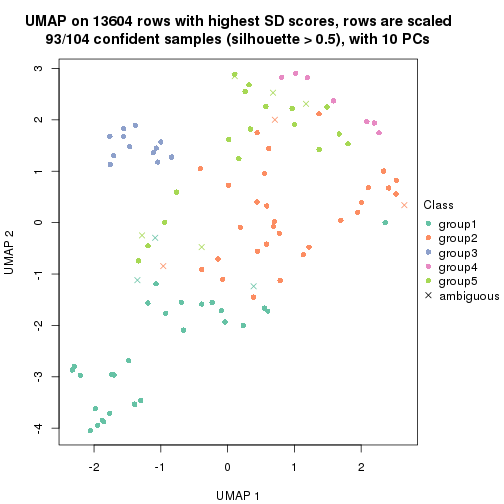
dimension_reduction(res, k = 6, method = "UMAP")
Following heatmap shows how subgroups are split when increasing k:
collect_classes(res)
Test correlation between subgroups and known annotations. If the known annotation is numeric, one-way ANOVA test is applied, and if the known annotation is discrete, chi-squared contingency table test is applied.
test_to_known_factors(res)
#> n cell.type(p) disease.state(p) other(p) k
#> SD:mclust 93 1.92e-18 1.93e-04 1.17e-05 2
#> SD:mclust 60 9.36e-14 9.25e-14 8.80e-12 3
#> SD:mclust 91 1.34e-19 2.69e-13 2.17e-10 4
#> SD:mclust 93 3.03e-19 4.53e-15 9.25e-12 5
#> SD:mclust 76 5.75e-15 1.95e-13 1.50e-10 6
If matrix rows can be associated to genes, consider to use functional_enrichment(res,
...) to perform function enrichment for the signature genes. See this vignette for more detailed explanations.
The object with results only for a single top-value method and a single partition method can be extracted as:
res = res_list["SD", "NMF"]
# you can also extract it by
# res = res_list["SD:NMF"]
A summary of res and all the functions that can be applied to it:
res
#> A 'ConsensusPartition' object with k = 2, 3, 4, 5, 6.
#> On a matrix with 13604 rows and 104 columns.
#> Top rows (1000, 2000, 3000, 4000, 5000) are extracted by 'SD' method.
#> Subgroups are detected by 'NMF' method.
#> Performed in total 1250 partitions by row resampling.
#> Best k for subgroups seems to be 3.
#>
#> Following methods can be applied to this 'ConsensusPartition' object:
#> [1] "cola_report" "collect_classes" "collect_plots"
#> [4] "collect_stats" "colnames" "compare_signatures"
#> [7] "consensus_heatmap" "dimension_reduction" "functional_enrichment"
#> [10] "get_anno_col" "get_anno" "get_classes"
#> [13] "get_consensus" "get_matrix" "get_membership"
#> [16] "get_param" "get_signatures" "get_stats"
#> [19] "is_best_k" "is_stable_k" "membership_heatmap"
#> [22] "ncol" "nrow" "plot_ecdf"
#> [25] "rownames" "select_partition_number" "show"
#> [28] "suggest_best_k" "test_to_known_factors"
collect_plots() function collects all the plots made from res for all k (number of partitions)
into one single page to provide an easy and fast comparison between different k.
collect_plots(res)
The plots are:
k and the heatmap of
predicted classes for each k.k.k.k.All the plots in panels can be made by individual functions and they are plotted later in this section.
select_partition_number() produces several plots showing different
statistics for choosing “optimized” k. There are following statistics:
k;k, the area increased is defined as \(A_k - A_{k-1}\).The detailed explanations of these statistics can be found in the cola vignette.
Generally speaking, lower PAC score, higher mean silhouette score or higher
concordance corresponds to better partition. Rand index and Jaccard index
measure how similar the current partition is compared to partition with k-1.
If they are too similar, we won't accept k is better than k-1.
select_partition_number(res)
The numeric values for all these statistics can be obtained by get_stats().
get_stats(res)
#> k 1-PAC mean_silhouette concordance area_increased Rand Jaccard
#> 2 2 0.573 0.814 0.911 0.4746 0.498 0.498
#> 3 3 0.842 0.894 0.954 0.3481 0.782 0.595
#> 4 4 0.823 0.850 0.935 0.1369 0.807 0.533
#> 5 5 0.677 0.609 0.786 0.0702 0.927 0.749
#> 6 6 0.694 0.615 0.789 0.0473 0.886 0.574
suggest_best_k() suggests the best \(k\) based on these statistics. The rules are as follows:
suggest_best_k(res)
#> [1] 3
Following shows the table of the partitions (You need to click the show/hide
code output link to see it). The membership matrix (columns with name p*)
is inferred by
clue::cl_consensus()
function with the SE method. Basically the value in the membership matrix
represents the probability to belong to a certain group. The finall class
label for an item is determined with the group with highest probability it
belongs to.
In get_classes() function, the entropy is calculated from the membership
matrix and the silhouette score is calculated from the consensus matrix.
cbind(get_classes(res, k = 2), get_membership(res, k = 2))
#> class entropy silhouette p1 p2
#> GSM141334 1 0.7815 0.600 0.768 0.232
#> GSM141335 1 0.0938 0.940 0.988 0.012
#> GSM141336 2 0.9686 0.531 0.396 0.604
#> GSM141337 1 0.0000 0.951 1.000 0.000
#> GSM141184 2 0.9944 0.389 0.456 0.544
#> GSM141185 2 0.9775 0.498 0.412 0.588
#> GSM141186 2 0.5842 0.815 0.140 0.860
#> GSM141243 2 0.8763 0.689 0.296 0.704
#> GSM141244 1 0.0000 0.951 1.000 0.000
#> GSM141246 2 0.9795 0.491 0.416 0.584
#> GSM141247 2 0.9710 0.523 0.400 0.600
#> GSM141248 1 0.0000 0.951 1.000 0.000
#> GSM141249 1 0.0000 0.951 1.000 0.000
#> GSM141258 2 0.9909 0.421 0.444 0.556
#> GSM141259 2 0.3274 0.830 0.060 0.940
#> GSM141260 1 0.0000 0.951 1.000 0.000
#> GSM141261 2 0.7219 0.784 0.200 0.800
#> GSM141262 2 0.7219 0.784 0.200 0.800
#> GSM141263 2 0.0000 0.832 0.000 1.000
#> GSM141338 1 0.9686 0.130 0.604 0.396
#> GSM141339 1 0.0000 0.951 1.000 0.000
#> GSM141340 1 0.0000 0.951 1.000 0.000
#> GSM141265 2 0.0000 0.832 0.000 1.000
#> GSM141267 1 0.3733 0.868 0.928 0.072
#> GSM141330 2 0.4298 0.800 0.088 0.912
#> GSM141266 2 0.7219 0.784 0.200 0.800
#> GSM141264 2 0.0000 0.832 0.000 1.000
#> GSM141341 2 0.8608 0.703 0.284 0.716
#> GSM141342 2 0.0000 0.832 0.000 1.000
#> GSM141343 2 0.6531 0.803 0.168 0.832
#> GSM141356 2 0.6343 0.808 0.160 0.840
#> GSM141357 1 0.0000 0.951 1.000 0.000
#> GSM141358 2 0.4022 0.828 0.080 0.920
#> GSM141359 2 0.0000 0.832 0.000 1.000
#> GSM141360 1 0.0000 0.951 1.000 0.000
#> GSM141361 2 0.5059 0.824 0.112 0.888
#> GSM141362 2 0.6623 0.801 0.172 0.828
#> GSM141363 1 0.9732 0.101 0.596 0.404
#> GSM141364 1 0.1414 0.931 0.980 0.020
#> GSM141365 2 0.7950 0.629 0.240 0.760
#> GSM141366 2 0.5629 0.818 0.132 0.868
#> GSM141367 1 0.9988 -0.100 0.520 0.480
#> GSM141368 2 0.0000 0.832 0.000 1.000
#> GSM141369 2 0.7528 0.771 0.216 0.784
#> GSM141370 2 0.0000 0.832 0.000 1.000
#> GSM141371 2 0.0376 0.832 0.004 0.996
#> GSM141372 2 0.7056 0.789 0.192 0.808
#> GSM141373 1 0.0000 0.951 1.000 0.000
#> GSM141374 1 0.0000 0.951 1.000 0.000
#> GSM141375 1 0.5059 0.817 0.888 0.112
#> GSM141376 1 0.0000 0.951 1.000 0.000
#> GSM141377 1 0.0000 0.951 1.000 0.000
#> GSM141378 1 0.0000 0.951 1.000 0.000
#> GSM141380 1 0.0000 0.951 1.000 0.000
#> GSM141387 1 0.0000 0.951 1.000 0.000
#> GSM141395 1 0.0000 0.951 1.000 0.000
#> GSM141397 2 0.9248 0.627 0.340 0.660
#> GSM141398 1 0.9732 0.101 0.596 0.404
#> GSM141401 1 0.0376 0.947 0.996 0.004
#> GSM141399 1 0.0672 0.943 0.992 0.008
#> GSM141379 1 0.0000 0.951 1.000 0.000
#> GSM141381 1 0.0000 0.951 1.000 0.000
#> GSM141383 1 0.0000 0.951 1.000 0.000
#> GSM141384 1 0.0000 0.951 1.000 0.000
#> GSM141385 1 0.0000 0.951 1.000 0.000
#> GSM141388 1 0.0000 0.951 1.000 0.000
#> GSM141389 1 0.0000 0.951 1.000 0.000
#> GSM141391 1 0.0000 0.951 1.000 0.000
#> GSM141394 2 0.5408 0.820 0.124 0.876
#> GSM141396 1 0.0000 0.951 1.000 0.000
#> GSM141403 1 0.0376 0.947 0.996 0.004
#> GSM141404 1 0.0000 0.951 1.000 0.000
#> GSM141386 1 0.0000 0.951 1.000 0.000
#> GSM141382 1 0.0000 0.951 1.000 0.000
#> GSM141390 1 0.0000 0.951 1.000 0.000
#> GSM141393 1 0.0000 0.951 1.000 0.000
#> GSM141400 1 0.0000 0.951 1.000 0.000
#> GSM141402 2 0.8909 0.673 0.308 0.692
#> GSM141392 2 0.9732 0.294 0.404 0.596
#> GSM141405 1 0.0000 0.951 1.000 0.000
#> GSM141406 2 0.9833 0.472 0.424 0.576
#> GSM141407 1 0.0000 0.951 1.000 0.000
#> GSM141408 1 0.0000 0.951 1.000 0.000
#> GSM141409 1 0.0000 0.951 1.000 0.000
#> GSM141410 1 0.0000 0.951 1.000 0.000
#> GSM141411 1 0.0000 0.951 1.000 0.000
#> GSM141412 1 0.0000 0.951 1.000 0.000
#> GSM141413 1 0.0000 0.951 1.000 0.000
#> GSM141414 1 0.0000 0.951 1.000 0.000
#> GSM141415 1 0.0000 0.951 1.000 0.000
#> GSM141416 1 0.0000 0.951 1.000 0.000
#> GSM141417 1 0.0000 0.951 1.000 0.000
#> GSM141420 2 0.0000 0.832 0.000 1.000
#> GSM141421 2 0.0000 0.832 0.000 1.000
#> GSM141422 2 0.0000 0.832 0.000 1.000
#> GSM141423 2 0.0000 0.832 0.000 1.000
#> GSM141424 2 0.0000 0.832 0.000 1.000
#> GSM141427 2 0.0000 0.832 0.000 1.000
#> GSM141428 2 0.0000 0.832 0.000 1.000
#> GSM141418 2 0.0000 0.832 0.000 1.000
#> GSM141419 2 0.0000 0.832 0.000 1.000
#> GSM141425 2 0.0000 0.832 0.000 1.000
#> GSM141426 2 0.0000 0.832 0.000 1.000
#> GSM141429 2 0.0000 0.832 0.000 1.000
cbind(get_classes(res, k = 3), get_membership(res, k = 3))
#> class entropy silhouette p1 p2 p3
#> GSM141334 2 0.0237 0.9617 0.004 0.996 0.000
#> GSM141335 2 0.1411 0.9304 0.036 0.964 0.000
#> GSM141336 2 0.0000 0.9650 0.000 1.000 0.000
#> GSM141337 1 0.4504 0.7607 0.804 0.196 0.000
#> GSM141184 2 0.0000 0.9650 0.000 1.000 0.000
#> GSM141185 2 0.0000 0.9650 0.000 1.000 0.000
#> GSM141186 2 0.0000 0.9650 0.000 1.000 0.000
#> GSM141243 2 0.0000 0.9650 0.000 1.000 0.000
#> GSM141244 2 0.4062 0.7731 0.164 0.836 0.000
#> GSM141246 2 0.0237 0.9617 0.004 0.996 0.000
#> GSM141247 2 0.0000 0.9650 0.000 1.000 0.000
#> GSM141248 1 0.6168 0.3800 0.588 0.412 0.000
#> GSM141249 1 0.0000 0.9241 1.000 0.000 0.000
#> GSM141258 2 0.0000 0.9650 0.000 1.000 0.000
#> GSM141259 2 0.0000 0.9650 0.000 1.000 0.000
#> GSM141260 1 0.5785 0.5588 0.668 0.332 0.000
#> GSM141261 2 0.0000 0.9650 0.000 1.000 0.000
#> GSM141262 2 0.0000 0.9650 0.000 1.000 0.000
#> GSM141263 2 0.0000 0.9650 0.000 1.000 0.000
#> GSM141338 2 0.0000 0.9650 0.000 1.000 0.000
#> GSM141339 1 0.6244 0.3040 0.560 0.440 0.000
#> GSM141340 1 0.0000 0.9241 1.000 0.000 0.000
#> GSM141265 3 0.0424 0.9667 0.000 0.008 0.992
#> GSM141267 1 0.6981 0.6691 0.704 0.228 0.068
#> GSM141330 3 0.0424 0.9667 0.000 0.008 0.992
#> GSM141266 2 0.0000 0.9650 0.000 1.000 0.000
#> GSM141264 3 0.0000 0.9721 0.000 0.000 1.000
#> GSM141341 3 0.4682 0.7776 0.192 0.004 0.804
#> GSM141342 3 0.3412 0.8506 0.000 0.124 0.876
#> GSM141343 2 0.0000 0.9650 0.000 1.000 0.000
#> GSM141356 3 0.0747 0.9608 0.016 0.000 0.984
#> GSM141357 1 0.0000 0.9241 1.000 0.000 0.000
#> GSM141358 2 0.0000 0.9650 0.000 1.000 0.000
#> GSM141359 2 0.0000 0.9650 0.000 1.000 0.000
#> GSM141360 1 0.0000 0.9241 1.000 0.000 0.000
#> GSM141361 2 0.7843 0.5779 0.128 0.664 0.208
#> GSM141362 2 0.0000 0.9650 0.000 1.000 0.000
#> GSM141363 2 0.0000 0.9650 0.000 1.000 0.000
#> GSM141364 1 0.5905 0.5225 0.648 0.352 0.000
#> GSM141365 3 0.0000 0.9721 0.000 0.000 1.000
#> GSM141366 2 0.0000 0.9650 0.000 1.000 0.000
#> GSM141367 3 0.4346 0.7919 0.184 0.000 0.816
#> GSM141368 2 0.0000 0.9650 0.000 1.000 0.000
#> GSM141369 2 0.0000 0.9650 0.000 1.000 0.000
#> GSM141370 2 0.0000 0.9650 0.000 1.000 0.000
#> GSM141371 2 0.0000 0.9650 0.000 1.000 0.000
#> GSM141372 2 0.0000 0.9650 0.000 1.000 0.000
#> GSM141373 1 0.4605 0.7512 0.796 0.204 0.000
#> GSM141374 1 0.0000 0.9241 1.000 0.000 0.000
#> GSM141375 1 0.3941 0.7782 0.844 0.000 0.156
#> GSM141376 1 0.0000 0.9241 1.000 0.000 0.000
#> GSM141377 1 0.0000 0.9241 1.000 0.000 0.000
#> GSM141378 1 0.0000 0.9241 1.000 0.000 0.000
#> GSM141380 1 0.0000 0.9241 1.000 0.000 0.000
#> GSM141387 1 0.0000 0.9241 1.000 0.000 0.000
#> GSM141395 1 0.4002 0.8005 0.840 0.160 0.000
#> GSM141397 2 0.0000 0.9650 0.000 1.000 0.000
#> GSM141398 2 0.0000 0.9650 0.000 1.000 0.000
#> GSM141401 1 0.4121 0.7910 0.832 0.168 0.000
#> GSM141399 2 0.6299 -0.0525 0.476 0.524 0.000
#> GSM141379 1 0.0000 0.9241 1.000 0.000 0.000
#> GSM141381 1 0.0000 0.9241 1.000 0.000 0.000
#> GSM141383 1 0.0000 0.9241 1.000 0.000 0.000
#> GSM141384 1 0.0000 0.9241 1.000 0.000 0.000
#> GSM141385 1 0.0000 0.9241 1.000 0.000 0.000
#> GSM141388 1 0.0000 0.9241 1.000 0.000 0.000
#> GSM141389 1 0.0000 0.9241 1.000 0.000 0.000
#> GSM141391 1 0.0000 0.9241 1.000 0.000 0.000
#> GSM141394 2 0.0000 0.9650 0.000 1.000 0.000
#> GSM141396 1 0.0000 0.9241 1.000 0.000 0.000
#> GSM141403 1 0.2537 0.8731 0.920 0.080 0.000
#> GSM141404 1 0.0000 0.9241 1.000 0.000 0.000
#> GSM141386 1 0.0000 0.9241 1.000 0.000 0.000
#> GSM141382 1 0.0000 0.9241 1.000 0.000 0.000
#> GSM141390 1 0.0000 0.9241 1.000 0.000 0.000
#> GSM141393 1 0.0000 0.9241 1.000 0.000 0.000
#> GSM141400 1 0.0000 0.9241 1.000 0.000 0.000
#> GSM141402 2 0.0000 0.9650 0.000 1.000 0.000
#> GSM141392 3 0.0000 0.9721 0.000 0.000 1.000
#> GSM141405 1 0.0000 0.9241 1.000 0.000 0.000
#> GSM141406 2 0.1031 0.9428 0.024 0.976 0.000
#> GSM141407 1 0.0000 0.9241 1.000 0.000 0.000
#> GSM141408 1 0.0000 0.9241 1.000 0.000 0.000
#> GSM141409 1 0.0000 0.9241 1.000 0.000 0.000
#> GSM141410 1 0.0000 0.9241 1.000 0.000 0.000
#> GSM141411 1 0.0000 0.9241 1.000 0.000 0.000
#> GSM141412 1 0.0000 0.9241 1.000 0.000 0.000
#> GSM141413 1 0.1031 0.9101 0.976 0.024 0.000
#> GSM141414 1 0.0747 0.9149 0.984 0.016 0.000
#> GSM141415 1 0.0000 0.9241 1.000 0.000 0.000
#> GSM141416 1 0.5948 0.5037 0.640 0.360 0.000
#> GSM141417 1 0.0000 0.9241 1.000 0.000 0.000
#> GSM141420 3 0.0000 0.9721 0.000 0.000 1.000
#> GSM141421 3 0.0000 0.9721 0.000 0.000 1.000
#> GSM141422 3 0.0000 0.9721 0.000 0.000 1.000
#> GSM141423 3 0.0000 0.9721 0.000 0.000 1.000
#> GSM141424 3 0.0000 0.9721 0.000 0.000 1.000
#> GSM141427 3 0.0000 0.9721 0.000 0.000 1.000
#> GSM141428 3 0.0000 0.9721 0.000 0.000 1.000
#> GSM141418 3 0.0000 0.9721 0.000 0.000 1.000
#> GSM141419 3 0.0000 0.9721 0.000 0.000 1.000
#> GSM141425 3 0.0000 0.9721 0.000 0.000 1.000
#> GSM141426 3 0.0000 0.9721 0.000 0.000 1.000
#> GSM141429 3 0.0000 0.9721 0.000 0.000 1.000
cbind(get_classes(res, k = 4), get_membership(res, k = 4))
#> class entropy silhouette p1 p2 p3 p4
#> GSM141334 2 0.0000 0.895 0.000 1.000 0.000 0.000
#> GSM141335 2 0.0000 0.895 0.000 1.000 0.000 0.000
#> GSM141336 2 0.0000 0.895 0.000 1.000 0.000 0.000
#> GSM141337 2 0.1022 0.877 0.032 0.968 0.000 0.000
#> GSM141184 2 0.0000 0.895 0.000 1.000 0.000 0.000
#> GSM141185 2 0.0000 0.895 0.000 1.000 0.000 0.000
#> GSM141186 2 0.4164 0.603 0.000 0.736 0.000 0.264
#> GSM141243 2 0.0592 0.885 0.000 0.984 0.000 0.016
#> GSM141244 2 0.0188 0.894 0.004 0.996 0.000 0.000
#> GSM141246 2 0.0000 0.895 0.000 1.000 0.000 0.000
#> GSM141247 2 0.0000 0.895 0.000 1.000 0.000 0.000
#> GSM141248 2 0.0188 0.894 0.004 0.996 0.000 0.000
#> GSM141249 1 0.3726 0.725 0.788 0.212 0.000 0.000
#> GSM141258 2 0.0000 0.895 0.000 1.000 0.000 0.000
#> GSM141259 4 0.4008 0.652 0.000 0.244 0.000 0.756
#> GSM141260 2 0.3486 0.728 0.188 0.812 0.000 0.000
#> GSM141261 2 0.4907 0.247 0.000 0.580 0.000 0.420
#> GSM141262 2 0.0469 0.888 0.000 0.988 0.000 0.012
#> GSM141263 4 0.4193 0.623 0.000 0.268 0.000 0.732
#> GSM141338 2 0.0000 0.895 0.000 1.000 0.000 0.000
#> GSM141339 2 0.0000 0.895 0.000 1.000 0.000 0.000
#> GSM141340 2 0.4907 0.256 0.420 0.580 0.000 0.000
#> GSM141265 3 0.0000 0.967 0.000 0.000 1.000 0.000
#> GSM141267 2 0.2996 0.836 0.044 0.892 0.064 0.000
#> GSM141330 3 0.1118 0.927 0.000 0.036 0.964 0.000
#> GSM141266 2 0.4624 0.464 0.000 0.660 0.000 0.340
#> GSM141264 3 0.0000 0.967 0.000 0.000 1.000 0.000
#> GSM141341 4 0.3486 0.737 0.188 0.000 0.000 0.812
#> GSM141342 4 0.0000 0.903 0.000 0.000 0.000 1.000
#> GSM141343 4 0.0000 0.903 0.000 0.000 0.000 1.000
#> GSM141356 3 0.6603 0.397 0.328 0.000 0.572 0.100
#> GSM141357 1 0.3486 0.759 0.812 0.000 0.000 0.188
#> GSM141358 4 0.0921 0.891 0.000 0.028 0.000 0.972
#> GSM141359 4 0.0469 0.899 0.000 0.012 0.000 0.988
#> GSM141360 1 0.1022 0.916 0.968 0.000 0.000 0.032
#> GSM141361 4 0.0336 0.898 0.008 0.000 0.000 0.992
#> GSM141362 4 0.2814 0.810 0.000 0.132 0.000 0.868
#> GSM141363 2 0.4855 0.307 0.000 0.600 0.000 0.400
#> GSM141364 1 0.7731 0.161 0.436 0.316 0.000 0.248
#> GSM141365 4 0.5233 0.441 0.332 0.000 0.020 0.648
#> GSM141366 4 0.0000 0.903 0.000 0.000 0.000 1.000
#> GSM141367 1 0.3925 0.745 0.808 0.000 0.016 0.176
#> GSM141368 4 0.0000 0.903 0.000 0.000 0.000 1.000
#> GSM141369 4 0.0000 0.903 0.000 0.000 0.000 1.000
#> GSM141370 4 0.0000 0.903 0.000 0.000 0.000 1.000
#> GSM141371 4 0.0000 0.903 0.000 0.000 0.000 1.000
#> GSM141372 4 0.0000 0.903 0.000 0.000 0.000 1.000
#> GSM141373 2 0.1637 0.857 0.060 0.940 0.000 0.000
#> GSM141374 1 0.0188 0.935 0.996 0.004 0.000 0.000
#> GSM141375 1 0.1706 0.904 0.948 0.000 0.016 0.036
#> GSM141376 1 0.0000 0.935 1.000 0.000 0.000 0.000
#> GSM141377 1 0.0000 0.935 1.000 0.000 0.000 0.000
#> GSM141378 1 0.0336 0.934 0.992 0.008 0.000 0.000
#> GSM141380 1 0.0000 0.935 1.000 0.000 0.000 0.000
#> GSM141387 1 0.0000 0.935 1.000 0.000 0.000 0.000
#> GSM141395 1 0.4817 0.358 0.612 0.388 0.000 0.000
#> GSM141397 4 0.2814 0.804 0.000 0.132 0.000 0.868
#> GSM141398 2 0.0000 0.895 0.000 1.000 0.000 0.000
#> GSM141401 1 0.3249 0.818 0.852 0.140 0.000 0.008
#> GSM141399 2 0.0000 0.895 0.000 1.000 0.000 0.000
#> GSM141379 1 0.0188 0.935 0.996 0.004 0.000 0.000
#> GSM141381 1 0.0000 0.935 1.000 0.000 0.000 0.000
#> GSM141383 1 0.0000 0.935 1.000 0.000 0.000 0.000
#> GSM141384 1 0.0000 0.935 1.000 0.000 0.000 0.000
#> GSM141385 1 0.0188 0.935 0.996 0.004 0.000 0.000
#> GSM141388 1 0.0000 0.935 1.000 0.000 0.000 0.000
#> GSM141389 1 0.0000 0.935 1.000 0.000 0.000 0.000
#> GSM141391 1 0.0188 0.935 0.996 0.004 0.000 0.000
#> GSM141394 2 0.0188 0.893 0.000 0.996 0.000 0.004
#> GSM141396 1 0.0707 0.928 0.980 0.020 0.000 0.000
#> GSM141403 1 0.4567 0.674 0.740 0.016 0.000 0.244
#> GSM141404 1 0.0469 0.932 0.988 0.012 0.000 0.000
#> GSM141386 1 0.0592 0.930 0.984 0.016 0.000 0.000
#> GSM141382 1 0.0000 0.935 1.000 0.000 0.000 0.000
#> GSM141390 1 0.0000 0.935 1.000 0.000 0.000 0.000
#> GSM141393 1 0.0000 0.935 1.000 0.000 0.000 0.000
#> GSM141400 1 0.0000 0.935 1.000 0.000 0.000 0.000
#> GSM141402 4 0.0188 0.902 0.000 0.004 0.000 0.996
#> GSM141392 3 0.0000 0.967 0.000 0.000 1.000 0.000
#> GSM141405 1 0.0000 0.935 1.000 0.000 0.000 0.000
#> GSM141406 2 0.0188 0.894 0.004 0.996 0.000 0.000
#> GSM141407 1 0.0188 0.935 0.996 0.004 0.000 0.000
#> GSM141408 1 0.0000 0.935 1.000 0.000 0.000 0.000
#> GSM141409 1 0.2760 0.836 0.872 0.128 0.000 0.000
#> GSM141410 1 0.0000 0.935 1.000 0.000 0.000 0.000
#> GSM141411 1 0.0921 0.922 0.972 0.028 0.000 0.000
#> GSM141412 1 0.0188 0.935 0.996 0.004 0.000 0.000
#> GSM141413 2 0.2345 0.823 0.100 0.900 0.000 0.000
#> GSM141414 2 0.3649 0.711 0.204 0.796 0.000 0.000
#> GSM141415 1 0.0000 0.935 1.000 0.000 0.000 0.000
#> GSM141416 2 0.0000 0.895 0.000 1.000 0.000 0.000
#> GSM141417 1 0.1302 0.911 0.956 0.044 0.000 0.000
#> GSM141420 3 0.0000 0.967 0.000 0.000 1.000 0.000
#> GSM141421 3 0.0000 0.967 0.000 0.000 1.000 0.000
#> GSM141422 3 0.0000 0.967 0.000 0.000 1.000 0.000
#> GSM141423 3 0.0000 0.967 0.000 0.000 1.000 0.000
#> GSM141424 3 0.0000 0.967 0.000 0.000 1.000 0.000
#> GSM141427 3 0.0000 0.967 0.000 0.000 1.000 0.000
#> GSM141428 3 0.0000 0.967 0.000 0.000 1.000 0.000
#> GSM141418 3 0.0000 0.967 0.000 0.000 1.000 0.000
#> GSM141419 3 0.0000 0.967 0.000 0.000 1.000 0.000
#> GSM141425 3 0.0000 0.967 0.000 0.000 1.000 0.000
#> GSM141426 3 0.0000 0.967 0.000 0.000 1.000 0.000
#> GSM141429 3 0.0000 0.967 0.000 0.000 1.000 0.000
cbind(get_classes(res, k = 5), get_membership(res, k = 5))
#> class entropy silhouette p1 p2 p3 p4 p5
#> GSM141334 2 0.1638 0.77763 0.000 0.932 0.000 0.004 0.064
#> GSM141335 2 0.0566 0.78018 0.000 0.984 0.000 0.004 0.012
#> GSM141336 2 0.3700 0.67215 0.000 0.752 0.000 0.008 0.240
#> GSM141337 2 0.1569 0.77444 0.004 0.944 0.000 0.008 0.044
#> GSM141184 2 0.1579 0.77414 0.000 0.944 0.000 0.024 0.032
#> GSM141185 2 0.1768 0.77184 0.000 0.924 0.000 0.004 0.072
#> GSM141186 2 0.6523 0.33424 0.000 0.480 0.000 0.288 0.232
#> GSM141243 2 0.3628 0.68977 0.000 0.772 0.000 0.012 0.216
#> GSM141244 2 0.0898 0.78045 0.000 0.972 0.000 0.020 0.008
#> GSM141246 2 0.2139 0.76861 0.000 0.916 0.000 0.032 0.052
#> GSM141247 2 0.3700 0.67037 0.000 0.752 0.000 0.008 0.240
#> GSM141248 2 0.0162 0.77971 0.000 0.996 0.000 0.000 0.004
#> GSM141249 1 0.4888 0.02529 0.508 0.472 0.000 0.004 0.016
#> GSM141258 2 0.1671 0.77269 0.000 0.924 0.000 0.000 0.076
#> GSM141259 4 0.3844 0.36559 0.000 0.132 0.000 0.804 0.064
#> GSM141260 2 0.6121 0.49402 0.120 0.592 0.000 0.272 0.016
#> GSM141261 2 0.6202 0.25488 0.000 0.484 0.000 0.144 0.372
#> GSM141262 2 0.3724 0.70055 0.000 0.776 0.000 0.020 0.204
#> GSM141263 4 0.3759 0.36356 0.000 0.136 0.000 0.808 0.056
#> GSM141338 2 0.3461 0.68560 0.000 0.772 0.000 0.004 0.224
#> GSM141339 2 0.1270 0.77814 0.000 0.948 0.000 0.000 0.052
#> GSM141340 2 0.4777 0.50537 0.292 0.664 0.000 0.000 0.044
#> GSM141265 4 0.5206 -0.06529 0.000 0.028 0.436 0.528 0.008
#> GSM141267 2 0.5274 0.67168 0.040 0.748 0.056 0.140 0.016
#> GSM141330 3 0.7455 -0.04089 0.000 0.340 0.352 0.276 0.032
#> GSM141266 4 0.4934 0.06534 0.000 0.364 0.000 0.600 0.036
#> GSM141264 4 0.5404 0.00633 0.000 0.012 0.408 0.544 0.036
#> GSM141341 4 0.5039 0.26411 0.116 0.000 0.000 0.700 0.184
#> GSM141342 4 0.3684 0.26980 0.000 0.000 0.000 0.720 0.280
#> GSM141343 4 0.3876 0.22592 0.000 0.000 0.000 0.684 0.316
#> GSM141356 5 0.5832 0.21619 0.096 0.000 0.340 0.004 0.560
#> GSM141357 1 0.4622 0.39843 0.548 0.000 0.000 0.012 0.440
#> GSM141358 5 0.3284 0.40668 0.000 0.024 0.000 0.148 0.828
#> GSM141359 5 0.4029 0.38928 0.000 0.004 0.000 0.316 0.680
#> GSM141360 1 0.4151 0.58690 0.652 0.000 0.000 0.004 0.344
#> GSM141361 5 0.4960 0.26805 0.064 0.000 0.000 0.268 0.668
#> GSM141362 5 0.5271 0.37094 0.000 0.076 0.000 0.296 0.628
#> GSM141363 5 0.4291 0.29802 0.004 0.276 0.000 0.016 0.704
#> GSM141364 5 0.5057 0.35961 0.140 0.120 0.000 0.012 0.728
#> GSM141365 5 0.7018 0.18554 0.320 0.000 0.048 0.136 0.496
#> GSM141366 4 0.3816 0.24505 0.000 0.000 0.000 0.696 0.304
#> GSM141367 4 0.7426 0.08128 0.344 0.000 0.088 0.448 0.120
#> GSM141368 4 0.3774 0.25479 0.000 0.000 0.000 0.704 0.296
#> GSM141369 4 0.4305 -0.22057 0.000 0.000 0.000 0.512 0.488
#> GSM141370 5 0.4297 0.18689 0.000 0.000 0.000 0.472 0.528
#> GSM141371 5 0.4305 0.14984 0.000 0.000 0.000 0.488 0.512
#> GSM141372 5 0.4161 0.30493 0.000 0.000 0.000 0.392 0.608
#> GSM141373 2 0.5023 0.63478 0.004 0.708 0.000 0.096 0.192
#> GSM141374 1 0.0162 0.84697 0.996 0.000 0.000 0.000 0.004
#> GSM141375 1 0.4494 0.35194 0.608 0.000 0.000 0.380 0.012
#> GSM141376 1 0.0000 0.84676 1.000 0.000 0.000 0.000 0.000
#> GSM141377 1 0.0609 0.84488 0.980 0.000 0.000 0.000 0.020
#> GSM141378 1 0.3478 0.79071 0.848 0.040 0.000 0.016 0.096
#> GSM141380 1 0.0324 0.84603 0.992 0.000 0.000 0.004 0.004
#> GSM141387 1 0.0290 0.84612 0.992 0.000 0.000 0.008 0.000
#> GSM141395 2 0.7120 0.46309 0.064 0.544 0.000 0.196 0.196
#> GSM141397 4 0.2736 0.38443 0.016 0.068 0.000 0.892 0.024
#> GSM141398 2 0.3969 0.59362 0.000 0.692 0.000 0.004 0.304
#> GSM141401 1 0.5788 0.38393 0.584 0.336 0.000 0.056 0.024
#> GSM141399 2 0.2812 0.75998 0.004 0.876 0.000 0.024 0.096
#> GSM141379 1 0.0290 0.84715 0.992 0.000 0.000 0.000 0.008
#> GSM141381 1 0.0162 0.84635 0.996 0.000 0.000 0.004 0.000
#> GSM141383 1 0.0865 0.84459 0.972 0.000 0.000 0.004 0.024
#> GSM141384 1 0.0451 0.84675 0.988 0.000 0.000 0.004 0.008
#> GSM141385 1 0.4252 0.66170 0.700 0.020 0.000 0.000 0.280
#> GSM141388 1 0.0671 0.84608 0.980 0.000 0.000 0.004 0.016
#> GSM141389 1 0.0324 0.84678 0.992 0.000 0.000 0.004 0.004
#> GSM141391 1 0.1502 0.83476 0.940 0.004 0.000 0.000 0.056
#> GSM141394 2 0.4686 0.67343 0.000 0.736 0.000 0.104 0.160
#> GSM141396 1 0.4907 0.63484 0.664 0.056 0.000 0.000 0.280
#> GSM141403 1 0.5434 0.36175 0.524 0.012 0.000 0.036 0.428
#> GSM141404 1 0.3961 0.69278 0.736 0.016 0.000 0.000 0.248
#> GSM141386 1 0.6576 0.46835 0.536 0.152 0.000 0.020 0.292
#> GSM141382 1 0.0566 0.84468 0.984 0.000 0.000 0.012 0.004
#> GSM141390 1 0.0404 0.84638 0.988 0.000 0.000 0.000 0.012
#> GSM141393 1 0.2424 0.79467 0.868 0.000 0.000 0.000 0.132
#> GSM141400 1 0.1478 0.83181 0.936 0.000 0.000 0.000 0.064
#> GSM141402 5 0.4088 0.38192 0.000 0.008 0.000 0.304 0.688
#> GSM141392 3 0.2681 0.80828 0.012 0.000 0.876 0.108 0.004
#> GSM141405 1 0.1386 0.83058 0.952 0.000 0.000 0.032 0.016
#> GSM141406 2 0.4636 0.67873 0.016 0.756 0.000 0.168 0.060
#> GSM141407 1 0.0579 0.84451 0.984 0.000 0.000 0.008 0.008
#> GSM141408 1 0.0324 0.84603 0.992 0.000 0.000 0.004 0.004
#> GSM141409 1 0.4522 0.71470 0.744 0.080 0.000 0.000 0.176
#> GSM141410 1 0.0798 0.84155 0.976 0.000 0.000 0.008 0.016
#> GSM141411 1 0.2708 0.81042 0.884 0.044 0.000 0.000 0.072
#> GSM141412 1 0.0579 0.84451 0.984 0.000 0.000 0.008 0.008
#> GSM141413 2 0.2726 0.74731 0.064 0.884 0.000 0.000 0.052
#> GSM141414 2 0.3596 0.64949 0.200 0.784 0.000 0.000 0.016
#> GSM141415 1 0.0579 0.84451 0.984 0.000 0.000 0.008 0.008
#> GSM141416 2 0.0609 0.78006 0.000 0.980 0.000 0.000 0.020
#> GSM141417 1 0.2554 0.80604 0.892 0.072 0.000 0.000 0.036
#> GSM141420 3 0.0000 0.93244 0.000 0.000 1.000 0.000 0.000
#> GSM141421 3 0.0000 0.93244 0.000 0.000 1.000 0.000 0.000
#> GSM141422 3 0.0000 0.93244 0.000 0.000 1.000 0.000 0.000
#> GSM141423 3 0.0000 0.93244 0.000 0.000 1.000 0.000 0.000
#> GSM141424 3 0.0000 0.93244 0.000 0.000 1.000 0.000 0.000
#> GSM141427 3 0.0000 0.93244 0.000 0.000 1.000 0.000 0.000
#> GSM141428 3 0.0000 0.93244 0.000 0.000 1.000 0.000 0.000
#> GSM141418 3 0.0162 0.92854 0.000 0.000 0.996 0.000 0.004
#> GSM141419 3 0.0000 0.93244 0.000 0.000 1.000 0.000 0.000
#> GSM141425 3 0.0000 0.93244 0.000 0.000 1.000 0.000 0.000
#> GSM141426 3 0.0000 0.93244 0.000 0.000 1.000 0.000 0.000
#> GSM141429 3 0.0000 0.93244 0.000 0.000 1.000 0.000 0.000
cbind(get_classes(res, k = 6), get_membership(res, k = 6))
#> class entropy silhouette p1 p2 p3 p4 p5 p6
#> GSM141334 5 0.2176 0.7548 0.000 0.080 0.000 0.000 0.896 0.024
#> GSM141335 5 0.0748 0.7496 0.004 0.000 0.000 0.016 0.976 0.004
#> GSM141336 5 0.3489 0.6298 0.000 0.288 0.000 0.004 0.708 0.000
#> GSM141337 5 0.2563 0.7225 0.008 0.000 0.000 0.028 0.880 0.084
#> GSM141184 5 0.1970 0.7329 0.000 0.000 0.000 0.060 0.912 0.028
#> GSM141185 5 0.2135 0.7403 0.000 0.128 0.000 0.000 0.872 0.000
#> GSM141186 2 0.6238 -0.0377 0.000 0.356 0.000 0.300 0.340 0.004
#> GSM141243 5 0.3534 0.6412 0.000 0.276 0.000 0.008 0.716 0.000
#> GSM141244 5 0.1711 0.7473 0.008 0.008 0.000 0.040 0.936 0.008
#> GSM141246 5 0.3354 0.6781 0.000 0.000 0.000 0.060 0.812 0.128
#> GSM141247 5 0.3337 0.6626 0.000 0.260 0.000 0.000 0.736 0.004
#> GSM141248 5 0.0767 0.7503 0.004 0.000 0.000 0.008 0.976 0.012
#> GSM141249 5 0.4714 0.0678 0.456 0.000 0.000 0.012 0.508 0.024
#> GSM141258 5 0.2178 0.7391 0.000 0.132 0.000 0.000 0.868 0.000
#> GSM141259 4 0.2990 0.4790 0.004 0.104 0.000 0.852 0.036 0.004
#> GSM141260 4 0.5541 0.0831 0.088 0.004 0.000 0.464 0.436 0.008
#> GSM141261 2 0.4641 -0.0651 0.000 0.564 0.000 0.036 0.396 0.004
#> GSM141262 5 0.3790 0.6521 0.000 0.264 0.000 0.016 0.716 0.004
#> GSM141263 4 0.3483 0.5389 0.000 0.044 0.000 0.832 0.036 0.088
#> GSM141338 5 0.3189 0.6810 0.000 0.236 0.000 0.000 0.760 0.004
#> GSM141339 5 0.1863 0.7561 0.008 0.056 0.000 0.004 0.924 0.008
#> GSM141340 5 0.4367 0.5755 0.220 0.000 0.000 0.008 0.712 0.060
#> GSM141265 4 0.4794 0.5275 0.008 0.008 0.176 0.732 0.044 0.032
#> GSM141267 5 0.3650 0.5900 0.024 0.000 0.000 0.216 0.756 0.004
#> GSM141330 4 0.6308 0.4203 0.000 0.000 0.104 0.540 0.272 0.084
#> GSM141266 4 0.3943 0.5374 0.000 0.016 0.000 0.776 0.156 0.052
#> GSM141264 4 0.4702 0.5230 0.000 0.004 0.132 0.716 0.008 0.140
#> GSM141341 4 0.6352 -0.2358 0.128 0.388 0.000 0.436 0.000 0.048
#> GSM141342 2 0.5184 0.2939 0.000 0.480 0.000 0.432 0.000 0.088
#> GSM141343 2 0.4823 0.3600 0.000 0.552 0.000 0.388 0.000 0.060
#> GSM141356 6 0.5547 0.5274 0.052 0.096 0.148 0.012 0.004 0.688
#> GSM141357 6 0.3012 0.6204 0.196 0.008 0.000 0.000 0.000 0.796
#> GSM141358 6 0.2675 0.5451 0.000 0.076 0.000 0.040 0.008 0.876
#> GSM141359 6 0.4979 0.1167 0.000 0.376 0.000 0.064 0.004 0.556
#> GSM141360 6 0.3266 0.5774 0.272 0.000 0.000 0.000 0.000 0.728
#> GSM141361 6 0.2058 0.5711 0.012 0.048 0.000 0.024 0.000 0.916
#> GSM141362 2 0.4802 0.4111 0.000 0.660 0.000 0.068 0.012 0.260
#> GSM141363 2 0.5768 0.0592 0.000 0.532 0.000 0.008 0.168 0.292
#> GSM141364 6 0.5926 0.4695 0.124 0.268 0.000 0.000 0.040 0.568
#> GSM141365 6 0.4520 0.5813 0.104 0.064 0.012 0.048 0.000 0.772
#> GSM141366 2 0.4682 0.3646 0.000 0.556 0.000 0.396 0.000 0.048
#> GSM141367 4 0.8165 -0.0380 0.108 0.192 0.132 0.428 0.000 0.140
#> GSM141368 2 0.4763 0.3466 0.000 0.536 0.000 0.412 0.000 0.052
#> GSM141369 2 0.2950 0.5391 0.000 0.828 0.000 0.148 0.000 0.024
#> GSM141370 2 0.2843 0.5448 0.000 0.848 0.000 0.116 0.000 0.036
#> GSM141371 2 0.2942 0.5441 0.000 0.836 0.000 0.132 0.000 0.032
#> GSM141372 2 0.1719 0.5346 0.000 0.924 0.000 0.060 0.000 0.016
#> GSM141373 6 0.5447 0.1535 0.008 0.000 0.000 0.096 0.392 0.504
#> GSM141374 1 0.1230 0.8572 0.956 0.000 0.000 0.008 0.008 0.028
#> GSM141375 1 0.4225 0.4819 0.656 0.008 0.008 0.320 0.000 0.008
#> GSM141376 1 0.0692 0.8584 0.976 0.000 0.000 0.004 0.000 0.020
#> GSM141377 1 0.1367 0.8507 0.944 0.000 0.000 0.012 0.000 0.044
#> GSM141378 1 0.5256 0.5076 0.632 0.000 0.000 0.056 0.044 0.268
#> GSM141380 1 0.0146 0.8582 0.996 0.000 0.000 0.000 0.004 0.000
#> GSM141387 1 0.0291 0.8589 0.992 0.000 0.000 0.004 0.000 0.004
#> GSM141395 6 0.6214 0.0371 0.008 0.000 0.000 0.308 0.256 0.428
#> GSM141397 4 0.2382 0.5316 0.004 0.048 0.000 0.904 0.020 0.024
#> GSM141398 5 0.3925 0.5772 0.000 0.332 0.000 0.008 0.656 0.004
#> GSM141401 1 0.6412 0.3747 0.560 0.032 0.000 0.064 0.276 0.068
#> GSM141399 5 0.3900 0.5866 0.000 0.000 0.000 0.040 0.728 0.232
#> GSM141379 1 0.1149 0.8583 0.960 0.000 0.000 0.008 0.008 0.024
#> GSM141381 1 0.0000 0.8581 1.000 0.000 0.000 0.000 0.000 0.000
#> GSM141383 1 0.1219 0.8498 0.948 0.000 0.000 0.004 0.000 0.048
#> GSM141384 1 0.0622 0.8580 0.980 0.000 0.000 0.008 0.000 0.012
#> GSM141385 6 0.3982 0.5708 0.280 0.000 0.000 0.008 0.016 0.696
#> GSM141388 1 0.1152 0.8529 0.952 0.000 0.000 0.004 0.000 0.044
#> GSM141389 1 0.0363 0.8586 0.988 0.000 0.000 0.000 0.000 0.012
#> GSM141391 1 0.2405 0.8176 0.880 0.000 0.000 0.016 0.004 0.100
#> GSM141394 6 0.5819 0.1291 0.000 0.000 0.000 0.188 0.368 0.444
#> GSM141396 6 0.4931 0.5937 0.208 0.000 0.000 0.032 0.072 0.688
#> GSM141403 6 0.4762 0.6009 0.204 0.080 0.000 0.008 0.008 0.700
#> GSM141404 1 0.5824 0.4827 0.620 0.208 0.000 0.012 0.028 0.132
#> GSM141386 6 0.5041 0.5682 0.168 0.000 0.000 0.048 0.084 0.700
#> GSM141382 1 0.0260 0.8575 0.992 0.000 0.000 0.008 0.000 0.000
#> GSM141390 1 0.1152 0.8520 0.952 0.000 0.000 0.004 0.000 0.044
#> GSM141393 1 0.3911 0.3725 0.624 0.000 0.000 0.008 0.000 0.368
#> GSM141400 1 0.2312 0.8097 0.876 0.000 0.000 0.012 0.000 0.112
#> GSM141402 2 0.2800 0.4626 0.000 0.860 0.000 0.004 0.036 0.100
#> GSM141392 3 0.4436 0.5808 0.012 0.000 0.712 0.216 0.000 0.060
#> GSM141405 1 0.2889 0.7691 0.852 0.000 0.000 0.116 0.020 0.012
#> GSM141406 5 0.4424 0.3829 0.000 0.000 0.000 0.324 0.632 0.044
#> GSM141407 1 0.1003 0.8502 0.964 0.000 0.000 0.004 0.028 0.004
#> GSM141408 1 0.0458 0.8592 0.984 0.000 0.000 0.000 0.000 0.016
#> GSM141409 1 0.5395 0.4037 0.596 0.000 0.000 0.012 0.116 0.276
#> GSM141410 1 0.1036 0.8505 0.964 0.000 0.000 0.008 0.024 0.004
#> GSM141411 1 0.3724 0.7569 0.804 0.000 0.000 0.012 0.096 0.088
#> GSM141412 1 0.1116 0.8504 0.960 0.000 0.000 0.008 0.028 0.004
#> GSM141413 5 0.3812 0.6739 0.068 0.000 0.000 0.024 0.804 0.104
#> GSM141414 5 0.3571 0.5623 0.240 0.000 0.000 0.008 0.744 0.008
#> GSM141415 1 0.1116 0.8488 0.960 0.000 0.000 0.008 0.028 0.004
#> GSM141416 5 0.1053 0.7547 0.004 0.012 0.000 0.000 0.964 0.020
#> GSM141417 1 0.3743 0.7384 0.792 0.000 0.000 0.008 0.136 0.064
#> GSM141420 3 0.0146 0.9713 0.000 0.000 0.996 0.000 0.000 0.004
#> GSM141421 3 0.0146 0.9713 0.000 0.000 0.996 0.000 0.000 0.004
#> GSM141422 3 0.0000 0.9719 0.000 0.000 1.000 0.000 0.000 0.000
#> GSM141423 3 0.0146 0.9713 0.000 0.000 0.996 0.000 0.000 0.004
#> GSM141424 3 0.0000 0.9719 0.000 0.000 1.000 0.000 0.000 0.000
#> GSM141427 3 0.0000 0.9719 0.000 0.000 1.000 0.000 0.000 0.000
#> GSM141428 3 0.0000 0.9719 0.000 0.000 1.000 0.000 0.000 0.000
#> GSM141418 3 0.0146 0.9713 0.000 0.000 0.996 0.000 0.000 0.004
#> GSM141419 3 0.0146 0.9713 0.000 0.000 0.996 0.000 0.000 0.004
#> GSM141425 3 0.0000 0.9719 0.000 0.000 1.000 0.000 0.000 0.000
#> GSM141426 3 0.0000 0.9719 0.000 0.000 1.000 0.000 0.000 0.000
#> GSM141429 3 0.0000 0.9719 0.000 0.000 1.000 0.000 0.000 0.000
Heatmaps for the consensus matrix. It visualizes the probability of two samples to be in a same group.
consensus_heatmap(res, k = 2)
consensus_heatmap(res, k = 3)
consensus_heatmap(res, k = 4)
consensus_heatmap(res, k = 5)
consensus_heatmap(res, k = 6)
Heatmaps for the membership of samples in all partitions to see how consistent they are:
membership_heatmap(res, k = 2)
membership_heatmap(res, k = 3)
membership_heatmap(res, k = 4)
membership_heatmap(res, k = 5)
membership_heatmap(res, k = 6)
As soon as we have had the classes for columns, we can look for signatures which are significantly different between classes which can be candidate marks for certain classes. Following are the heatmaps for signatures.
Signature heatmaps where rows are scaled:
get_signatures(res, k = 2)
get_signatures(res, k = 3)
get_signatures(res, k = 4)
get_signatures(res, k = 5)
get_signatures(res, k = 6)
#> Error: The width or height of the raster image is zero, maybe you forget to turn off the
#> previous graphic device or it was corrupted. Run `dev.off()` to close it.

Signature heatmaps where rows are not scaled:
get_signatures(res, k = 2, scale_rows = FALSE)
get_signatures(res, k = 3, scale_rows = FALSE)
get_signatures(res, k = 4, scale_rows = FALSE)
get_signatures(res, k = 5, scale_rows = FALSE)
get_signatures(res, k = 6, scale_rows = FALSE)
#> Error: The width or height of the raster image is zero, maybe you forget to turn off the
#> previous graphic device or it was corrupted. Run `dev.off()` to close it.

Compare the overlap of signatures from different k:
compare_signatures(res)
get_signature() returns a data frame invisibly. TO get the list of signatures, the function
call should be assigned to a variable explicitly. In following code, if plot argument is set
to FALSE, no heatmap is plotted while only the differential analysis is performed.
# code only for demonstration
tb = get_signature(res, k = ..., plot = FALSE)
An example of the output of tb is:
#> which_row fdr mean_1 mean_2 scaled_mean_1 scaled_mean_2 km
#> 1 38 0.042760348 8.373488 9.131774 -0.5533452 0.5164555 1
#> 2 40 0.018707592 7.106213 8.469186 -0.6173731 0.5762149 1
#> 3 55 0.019134737 10.221463 11.207825 -0.6159697 0.5749050 1
#> 4 59 0.006059896 5.921854 7.869574 -0.6899429 0.6439467 1
#> 5 60 0.018055526 8.928898 10.211722 -0.6204761 0.5791110 1
#> 6 98 0.009384629 15.714769 14.887706 0.6635654 -0.6193277 2
...
The columns in tb are:
which_row: row indices corresponding to the input matrix.fdr: FDR for the differential test. mean_x: The mean value in group x.scaled_mean_x: The mean value in group x after rows are scaled.km: Row groups if k-means clustering is applied to rows.UMAP plot which shows how samples are separated.
dimension_reduction(res, k = 2, method = "UMAP")
dimension_reduction(res, k = 3, method = "UMAP")

dimension_reduction(res, k = 4, method = "UMAP")
dimension_reduction(res, k = 5, method = "UMAP")

dimension_reduction(res, k = 6, method = "UMAP")
Following heatmap shows how subgroups are split when increasing k:
collect_classes(res)
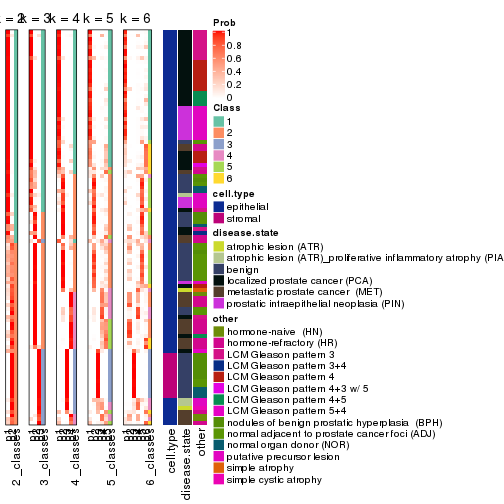
Test correlation between subgroups and known annotations. If the known annotation is numeric, one-way ANOVA test is applied, and if the known annotation is discrete, chi-squared contingency table test is applied.
test_to_known_factors(res)
#> n cell.type(p) disease.state(p) other(p) k
#> SD:NMF 94 1.36e-04 1.35e-08 3.64e-05 2
#> SD:NMF 101 5.43e-12 5.49e-09 2.76e-08 3
#> SD:NMF 96 8.63e-15 3.88e-17 2.67e-13 4
#> SD:NMF 68 4.10e-14 4.69e-07 7.21e-07 5
#> SD:NMF 78 6.63e-14 3.20e-19 4.07e-13 6
If matrix rows can be associated to genes, consider to use functional_enrichment(res,
...) to perform function enrichment for the signature genes. See this vignette for more detailed explanations.
The object with results only for a single top-value method and a single partition method can be extracted as:
res = res_list["CV", "hclust"]
# you can also extract it by
# res = res_list["CV:hclust"]
A summary of res and all the functions that can be applied to it:
res
#> A 'ConsensusPartition' object with k = 2, 3, 4, 5, 6.
#> On a matrix with 13604 rows and 104 columns.
#> Top rows (1000, 2000, 3000, 4000, 5000) are extracted by 'CV' method.
#> Subgroups are detected by 'hclust' method.
#> Performed in total 1250 partitions by row resampling.
#> Best k for subgroups seems to be 2.
#>
#> Following methods can be applied to this 'ConsensusPartition' object:
#> [1] "cola_report" "collect_classes" "collect_plots"
#> [4] "collect_stats" "colnames" "compare_signatures"
#> [7] "consensus_heatmap" "dimension_reduction" "functional_enrichment"
#> [10] "get_anno_col" "get_anno" "get_classes"
#> [13] "get_consensus" "get_matrix" "get_membership"
#> [16] "get_param" "get_signatures" "get_stats"
#> [19] "is_best_k" "is_stable_k" "membership_heatmap"
#> [22] "ncol" "nrow" "plot_ecdf"
#> [25] "rownames" "select_partition_number" "show"
#> [28] "suggest_best_k" "test_to_known_factors"
collect_plots() function collects all the plots made from res for all k (number of partitions)
into one single page to provide an easy and fast comparison between different k.
collect_plots(res)
The plots are:
k and the heatmap of
predicted classes for each k.k.k.k.All the plots in panels can be made by individual functions and they are plotted later in this section.
select_partition_number() produces several plots showing different
statistics for choosing “optimized” k. There are following statistics:
k;k, the area increased is defined as \(A_k - A_{k-1}\).The detailed explanations of these statistics can be found in the cola vignette.
Generally speaking, lower PAC score, higher mean silhouette score or higher
concordance corresponds to better partition. Rand index and Jaccard index
measure how similar the current partition is compared to partition with k-1.
If they are too similar, we won't accept k is better than k-1.
select_partition_number(res)
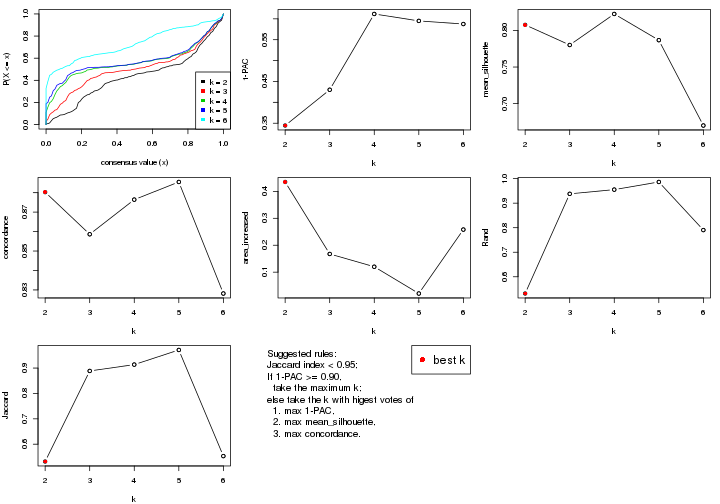
The numeric values for all these statistics can be obtained by get_stats().
get_stats(res)
#> k 1-PAC mean_silhouette concordance area_increased Rand Jaccard
#> 2 2 0.344 0.808 0.880 0.4349 0.532 0.532
#> 3 3 0.430 0.780 0.859 0.1675 0.938 0.889
#> 4 4 0.612 0.823 0.876 0.1201 0.955 0.914
#> 5 5 0.595 0.787 0.885 0.0206 0.986 0.971
#> 6 6 0.588 0.670 0.828 0.2581 0.790 0.553
suggest_best_k() suggests the best \(k\) based on these statistics. The rules are as follows:
suggest_best_k(res)
#> [1] 2
Following shows the table of the partitions (You need to click the show/hide
code output link to see it). The membership matrix (columns with name p*)
is inferred by
clue::cl_consensus()
function with the SE method. Basically the value in the membership matrix
represents the probability to belong to a certain group. The finall class
label for an item is determined with the group with highest probability it
belongs to.
In get_classes() function, the entropy is calculated from the membership
matrix and the silhouette score is calculated from the consensus matrix.
cbind(get_classes(res, k = 2), get_membership(res, k = 2))
#> class entropy silhouette p1 p2
#> GSM141334 2 0.1843 0.8513 0.028 0.972
#> GSM141335 1 0.3879 0.8878 0.924 0.076
#> GSM141336 2 0.1843 0.8513 0.028 0.972
#> GSM141337 1 0.3879 0.8878 0.924 0.076
#> GSM141184 1 0.6048 0.8697 0.852 0.148
#> GSM141185 2 0.1843 0.8513 0.028 0.972
#> GSM141186 2 0.7139 0.7599 0.196 0.804
#> GSM141243 2 0.7139 0.7599 0.196 0.804
#> GSM141244 1 0.6048 0.8697 0.852 0.148
#> GSM141246 1 0.6623 0.8543 0.828 0.172
#> GSM141247 2 0.1843 0.8513 0.028 0.972
#> GSM141248 1 0.5294 0.8822 0.880 0.120
#> GSM141249 1 0.2778 0.8861 0.952 0.048
#> GSM141258 2 0.1843 0.8513 0.028 0.972
#> GSM141259 1 0.9393 0.5662 0.644 0.356
#> GSM141260 1 0.7299 0.8225 0.796 0.204
#> GSM141261 2 0.2043 0.8518 0.032 0.968
#> GSM141262 2 0.1843 0.8513 0.028 0.972
#> GSM141263 1 0.9393 0.5662 0.644 0.356
#> GSM141338 2 0.1843 0.8513 0.028 0.972
#> GSM141339 1 0.3879 0.8878 0.924 0.076
#> GSM141340 1 0.1184 0.8764 0.984 0.016
#> GSM141265 1 0.7883 0.7847 0.764 0.236
#> GSM141267 1 0.6148 0.8676 0.848 0.152
#> GSM141330 1 0.7745 0.7946 0.772 0.228
#> GSM141266 1 0.9393 0.5662 0.644 0.356
#> GSM141264 1 0.8081 0.7674 0.752 0.248
#> GSM141341 2 1.0000 -0.1497 0.500 0.500
#> GSM141342 2 0.7219 0.7395 0.200 0.800
#> GSM141343 2 0.9988 -0.0577 0.480 0.520
#> GSM141356 1 0.5629 0.8788 0.868 0.132
#> GSM141357 1 0.5519 0.8798 0.872 0.128
#> GSM141358 2 0.2236 0.8499 0.036 0.964
#> GSM141359 2 0.2236 0.8499 0.036 0.964
#> GSM141360 1 0.5519 0.8798 0.872 0.128
#> GSM141361 1 0.5519 0.8798 0.872 0.128
#> GSM141362 2 0.2236 0.8499 0.036 0.964
#> GSM141363 2 0.5294 0.8275 0.120 0.880
#> GSM141364 1 0.5629 0.8788 0.868 0.132
#> GSM141365 1 0.6048 0.8709 0.852 0.148
#> GSM141366 2 0.7139 0.7424 0.196 0.804
#> GSM141367 2 0.9983 0.2583 0.476 0.524
#> GSM141368 2 0.7139 0.7424 0.196 0.804
#> GSM141369 2 0.1184 0.8415 0.016 0.984
#> GSM141370 2 0.0000 0.8353 0.000 1.000
#> GSM141371 2 0.0000 0.8353 0.000 1.000
#> GSM141372 2 0.0000 0.8353 0.000 1.000
#> GSM141373 1 0.4431 0.8875 0.908 0.092
#> GSM141374 1 0.1184 0.8769 0.984 0.016
#> GSM141375 1 0.9909 0.3226 0.556 0.444
#> GSM141376 1 0.0000 0.8682 1.000 0.000
#> GSM141377 1 0.5059 0.8841 0.888 0.112
#> GSM141378 1 0.2423 0.8842 0.960 0.040
#> GSM141380 1 0.0000 0.8682 1.000 0.000
#> GSM141387 1 0.0000 0.8682 1.000 0.000
#> GSM141395 1 0.6048 0.8697 0.852 0.148
#> GSM141397 1 0.7674 0.7995 0.776 0.224
#> GSM141398 2 0.1843 0.8513 0.028 0.972
#> GSM141401 1 0.6048 0.8702 0.852 0.148
#> GSM141399 1 0.6048 0.8702 0.852 0.148
#> GSM141379 1 0.0000 0.8682 1.000 0.000
#> GSM141381 1 0.0000 0.8682 1.000 0.000
#> GSM141383 1 0.0000 0.8682 1.000 0.000
#> GSM141384 1 0.0000 0.8682 1.000 0.000
#> GSM141385 1 0.1633 0.8800 0.976 0.024
#> GSM141388 1 0.0672 0.8719 0.992 0.008
#> GSM141389 1 0.0672 0.8719 0.992 0.008
#> GSM141391 1 0.2423 0.8842 0.960 0.040
#> GSM141394 1 0.6048 0.8697 0.852 0.148
#> GSM141396 1 0.2423 0.8842 0.960 0.040
#> GSM141403 1 0.6801 0.8158 0.820 0.180
#> GSM141404 1 0.7528 0.7647 0.784 0.216
#> GSM141386 1 0.5946 0.8724 0.856 0.144
#> GSM141382 1 0.0000 0.8682 1.000 0.000
#> GSM141390 1 0.1184 0.8760 0.984 0.016
#> GSM141393 1 0.2423 0.8842 0.960 0.040
#> GSM141400 1 0.2423 0.8842 0.960 0.040
#> GSM141402 2 0.1184 0.8415 0.016 0.984
#> GSM141392 1 0.4562 0.8831 0.904 0.096
#> GSM141405 1 0.6623 0.8496 0.828 0.172
#> GSM141406 1 0.9909 0.3226 0.556 0.444
#> GSM141407 1 0.0000 0.8682 1.000 0.000
#> GSM141408 1 0.0000 0.8682 1.000 0.000
#> GSM141409 1 0.5842 0.8739 0.860 0.140
#> GSM141410 1 0.0000 0.8682 1.000 0.000
#> GSM141411 1 0.2423 0.8842 0.960 0.040
#> GSM141412 1 0.0000 0.8682 1.000 0.000
#> GSM141413 1 0.5842 0.8739 0.860 0.140
#> GSM141414 1 0.5842 0.8739 0.860 0.140
#> GSM141415 1 0.0000 0.8682 1.000 0.000
#> GSM141416 1 0.3879 0.8878 0.924 0.076
#> GSM141417 1 0.2778 0.8861 0.952 0.048
#> GSM141420 2 0.6801 0.8145 0.180 0.820
#> GSM141421 2 0.6801 0.8145 0.180 0.820
#> GSM141422 2 0.6623 0.8209 0.172 0.828
#> GSM141423 2 0.6801 0.8145 0.180 0.820
#> GSM141424 2 0.6623 0.8209 0.172 0.828
#> GSM141427 2 0.6801 0.8145 0.180 0.820
#> GSM141428 2 0.6623 0.8209 0.172 0.828
#> GSM141418 2 0.6623 0.8209 0.172 0.828
#> GSM141419 2 0.6623 0.8209 0.172 0.828
#> GSM141425 2 0.6623 0.8209 0.172 0.828
#> GSM141426 2 0.6623 0.8209 0.172 0.828
#> GSM141429 2 0.6623 0.8209 0.172 0.828
cbind(get_classes(res, k = 3), get_membership(res, k = 3))
#> class entropy silhouette p1 p2 p3
#> GSM141334 2 0.1031 0.78731 0.024 0.976 0.000
#> GSM141335 1 0.2096 0.87421 0.944 0.052 0.004
#> GSM141336 2 0.1031 0.78731 0.024 0.976 0.000
#> GSM141337 1 0.2096 0.87421 0.944 0.052 0.004
#> GSM141184 1 0.3966 0.86267 0.876 0.100 0.024
#> GSM141185 2 0.1031 0.78731 0.024 0.976 0.000
#> GSM141186 2 0.6910 0.55972 0.144 0.736 0.120
#> GSM141243 2 0.6910 0.55972 0.144 0.736 0.120
#> GSM141244 1 0.3966 0.86267 0.876 0.100 0.024
#> GSM141246 1 0.4540 0.84935 0.848 0.124 0.028
#> GSM141247 2 0.1031 0.78731 0.024 0.976 0.000
#> GSM141248 1 0.3120 0.87193 0.908 0.080 0.012
#> GSM141249 1 0.1267 0.87086 0.972 0.024 0.004
#> GSM141258 2 0.1031 0.78731 0.024 0.976 0.000
#> GSM141259 1 0.8520 0.53733 0.588 0.280 0.132
#> GSM141260 1 0.5393 0.82246 0.808 0.148 0.044
#> GSM141261 2 0.2313 0.77407 0.024 0.944 0.032
#> GSM141262 2 0.1031 0.78731 0.024 0.976 0.000
#> GSM141263 1 0.8520 0.53733 0.588 0.280 0.132
#> GSM141338 2 0.1031 0.78731 0.024 0.976 0.000
#> GSM141339 1 0.2096 0.87421 0.944 0.052 0.004
#> GSM141340 1 0.0592 0.86023 0.988 0.000 0.012
#> GSM141265 1 0.5689 0.79283 0.780 0.184 0.036
#> GSM141267 1 0.4045 0.86128 0.872 0.104 0.024
#> GSM141330 1 0.5581 0.80137 0.788 0.176 0.036
#> GSM141266 1 0.8520 0.53733 0.588 0.280 0.132
#> GSM141264 1 0.5901 0.78031 0.768 0.192 0.040
#> GSM141341 1 0.9806 0.07709 0.420 0.328 0.252
#> GSM141342 3 0.5497 0.84110 0.000 0.292 0.708
#> GSM141343 1 0.9872 0.00498 0.400 0.336 0.264
#> GSM141356 1 0.3670 0.86772 0.888 0.092 0.020
#> GSM141357 1 0.3587 0.86845 0.892 0.088 0.020
#> GSM141358 2 0.3771 0.69581 0.012 0.876 0.112
#> GSM141359 2 0.3771 0.69581 0.012 0.876 0.112
#> GSM141360 1 0.3587 0.86845 0.892 0.088 0.020
#> GSM141361 1 0.3587 0.86845 0.892 0.088 0.020
#> GSM141362 2 0.3771 0.69581 0.012 0.876 0.112
#> GSM141363 2 0.3340 0.71733 0.120 0.880 0.000
#> GSM141364 1 0.3670 0.86772 0.888 0.092 0.020
#> GSM141365 1 0.4172 0.85978 0.868 0.104 0.028
#> GSM141366 3 0.5529 0.84180 0.000 0.296 0.704
#> GSM141367 3 0.4178 0.60386 0.172 0.000 0.828
#> GSM141368 3 0.5529 0.84180 0.000 0.296 0.704
#> GSM141369 2 0.3551 0.64718 0.000 0.868 0.132
#> GSM141370 2 0.0592 0.76035 0.000 0.988 0.012
#> GSM141371 2 0.0592 0.76035 0.000 0.988 0.012
#> GSM141372 2 0.0592 0.76035 0.000 0.988 0.012
#> GSM141373 1 0.2599 0.87455 0.932 0.052 0.016
#> GSM141374 1 0.1129 0.86024 0.976 0.004 0.020
#> GSM141375 1 0.9386 0.32527 0.500 0.296 0.204
#> GSM141376 1 0.1411 0.85077 0.964 0.000 0.036
#> GSM141377 1 0.2998 0.87294 0.916 0.068 0.016
#> GSM141378 1 0.1482 0.86921 0.968 0.020 0.012
#> GSM141380 1 0.1411 0.85077 0.964 0.000 0.036
#> GSM141387 1 0.1411 0.85077 0.964 0.000 0.036
#> GSM141395 1 0.3966 0.86267 0.876 0.100 0.024
#> GSM141397 1 0.6208 0.79614 0.772 0.152 0.076
#> GSM141398 2 0.1031 0.78731 0.024 0.976 0.000
#> GSM141401 1 0.3910 0.86251 0.876 0.104 0.020
#> GSM141399 1 0.3910 0.86251 0.876 0.104 0.020
#> GSM141379 1 0.1289 0.85253 0.968 0.000 0.032
#> GSM141381 1 0.1411 0.85077 0.964 0.000 0.036
#> GSM141383 1 0.1411 0.85077 0.964 0.000 0.036
#> GSM141384 1 0.1411 0.85077 0.964 0.000 0.036
#> GSM141385 1 0.1170 0.86539 0.976 0.008 0.016
#> GSM141388 1 0.1832 0.85536 0.956 0.008 0.036
#> GSM141389 1 0.1832 0.85536 0.956 0.008 0.036
#> GSM141391 1 0.1482 0.86921 0.968 0.020 0.012
#> GSM141394 1 0.3966 0.86267 0.876 0.100 0.024
#> GSM141396 1 0.1482 0.86921 0.968 0.020 0.012
#> GSM141403 1 0.4531 0.80232 0.824 0.168 0.008
#> GSM141404 1 0.5012 0.75875 0.788 0.204 0.008
#> GSM141386 1 0.3832 0.86416 0.880 0.100 0.020
#> GSM141382 1 0.1411 0.85077 0.964 0.000 0.036
#> GSM141390 1 0.1905 0.86225 0.956 0.016 0.028
#> GSM141393 1 0.1482 0.86921 0.968 0.020 0.012
#> GSM141400 1 0.1482 0.86921 0.968 0.020 0.012
#> GSM141402 2 0.3551 0.64718 0.000 0.868 0.132
#> GSM141392 1 0.2947 0.87031 0.920 0.060 0.020
#> GSM141405 1 0.5377 0.83667 0.820 0.112 0.068
#> GSM141406 1 0.9386 0.32527 0.500 0.296 0.204
#> GSM141407 1 0.1411 0.85077 0.964 0.000 0.036
#> GSM141408 1 0.1411 0.85077 0.964 0.000 0.036
#> GSM141409 1 0.3752 0.86509 0.884 0.096 0.020
#> GSM141410 1 0.1411 0.85077 0.964 0.000 0.036
#> GSM141411 1 0.1482 0.86921 0.968 0.020 0.012
#> GSM141412 1 0.1411 0.85077 0.964 0.000 0.036
#> GSM141413 1 0.3752 0.86509 0.884 0.096 0.020
#> GSM141414 1 0.3752 0.86509 0.884 0.096 0.020
#> GSM141415 1 0.1411 0.85077 0.964 0.000 0.036
#> GSM141416 1 0.2096 0.87421 0.944 0.052 0.004
#> GSM141417 1 0.1267 0.87086 0.972 0.024 0.004
#> GSM141420 2 0.7216 0.74347 0.112 0.712 0.176
#> GSM141421 2 0.7216 0.74347 0.112 0.712 0.176
#> GSM141422 2 0.7027 0.75247 0.104 0.724 0.172
#> GSM141423 2 0.7216 0.74347 0.112 0.712 0.176
#> GSM141424 2 0.7027 0.75247 0.104 0.724 0.172
#> GSM141427 2 0.7216 0.74347 0.112 0.712 0.176
#> GSM141428 2 0.7129 0.74828 0.104 0.716 0.180
#> GSM141418 2 0.7027 0.75247 0.104 0.724 0.172
#> GSM141419 2 0.7027 0.75247 0.104 0.724 0.172
#> GSM141425 2 0.7027 0.75247 0.104 0.724 0.172
#> GSM141426 2 0.7027 0.75247 0.104 0.724 0.172
#> GSM141429 2 0.7027 0.75247 0.104 0.724 0.172
cbind(get_classes(res, k = 4), get_membership(res, k = 4))
#> class entropy silhouette p1 p2 p3 p4
#> GSM141334 2 0.2198 0.8634 0.008 0.920 0.072 0.000
#> GSM141335 1 0.1677 0.8773 0.948 0.012 0.040 0.000
#> GSM141336 2 0.2198 0.8634 0.008 0.920 0.072 0.000
#> GSM141337 1 0.1677 0.8773 0.948 0.012 0.040 0.000
#> GSM141184 1 0.3399 0.8636 0.868 0.040 0.092 0.000
#> GSM141185 2 0.2198 0.8634 0.008 0.920 0.072 0.000
#> GSM141186 2 0.7132 0.4515 0.132 0.672 0.108 0.088
#> GSM141243 2 0.7132 0.4515 0.132 0.672 0.108 0.088
#> GSM141244 1 0.3463 0.8624 0.864 0.040 0.096 0.000
#> GSM141246 1 0.3787 0.8516 0.840 0.036 0.124 0.000
#> GSM141247 2 0.2198 0.8634 0.008 0.920 0.072 0.000
#> GSM141248 1 0.2699 0.8739 0.904 0.028 0.068 0.000
#> GSM141249 1 0.0921 0.8749 0.972 0.000 0.028 0.000
#> GSM141258 2 0.2198 0.8634 0.008 0.920 0.072 0.000
#> GSM141259 1 0.7930 0.5591 0.580 0.232 0.096 0.092
#> GSM141260 1 0.4673 0.8264 0.796 0.060 0.140 0.004
#> GSM141261 2 0.2852 0.8554 0.008 0.904 0.064 0.024
#> GSM141262 2 0.2198 0.8634 0.008 0.920 0.072 0.000
#> GSM141263 1 0.7930 0.5591 0.580 0.232 0.096 0.092
#> GSM141338 2 0.2198 0.8634 0.008 0.920 0.072 0.000
#> GSM141339 1 0.1677 0.8773 0.948 0.012 0.040 0.000
#> GSM141340 1 0.0921 0.8642 0.972 0.000 0.028 0.000
#> GSM141265 1 0.4864 0.8015 0.768 0.060 0.172 0.000
#> GSM141267 1 0.3463 0.8625 0.864 0.040 0.096 0.000
#> GSM141330 1 0.4776 0.8088 0.776 0.060 0.164 0.000
#> GSM141266 1 0.7930 0.5591 0.580 0.232 0.096 0.092
#> GSM141264 1 0.5187 0.7922 0.756 0.068 0.172 0.004
#> GSM141341 1 0.9074 0.1221 0.408 0.316 0.088 0.188
#> GSM141342 4 0.4624 0.8268 0.000 0.340 0.000 0.660
#> GSM141343 1 0.9134 0.0517 0.388 0.328 0.088 0.196
#> GSM141356 1 0.3071 0.8708 0.888 0.044 0.068 0.000
#> GSM141357 1 0.3056 0.8709 0.888 0.040 0.072 0.000
#> GSM141358 2 0.2797 0.7825 0.012 0.908 0.020 0.060
#> GSM141359 2 0.2797 0.7825 0.012 0.908 0.020 0.060
#> GSM141360 1 0.3056 0.8709 0.888 0.040 0.072 0.000
#> GSM141361 1 0.3056 0.8709 0.888 0.040 0.072 0.000
#> GSM141362 2 0.2797 0.7825 0.012 0.908 0.020 0.060
#> GSM141363 2 0.4215 0.7096 0.104 0.824 0.072 0.000
#> GSM141364 1 0.3071 0.8708 0.888 0.044 0.068 0.000
#> GSM141365 1 0.3525 0.8611 0.860 0.040 0.100 0.000
#> GSM141366 4 0.4643 0.8273 0.000 0.344 0.000 0.656
#> GSM141367 4 0.0707 0.5985 0.000 0.000 0.020 0.980
#> GSM141368 4 0.4643 0.8273 0.000 0.344 0.000 0.656
#> GSM141369 2 0.2081 0.7544 0.000 0.916 0.000 0.084
#> GSM141370 2 0.1302 0.8534 0.000 0.956 0.044 0.000
#> GSM141371 2 0.1302 0.8534 0.000 0.956 0.044 0.000
#> GSM141372 2 0.1302 0.8534 0.000 0.956 0.044 0.000
#> GSM141373 1 0.2101 0.8763 0.928 0.012 0.060 0.000
#> GSM141374 1 0.1584 0.8647 0.952 0.000 0.036 0.012
#> GSM141375 1 0.8649 0.3612 0.492 0.276 0.092 0.140
#> GSM141376 1 0.1706 0.8557 0.948 0.000 0.036 0.016
#> GSM141377 1 0.2450 0.8741 0.912 0.016 0.072 0.000
#> GSM141378 1 0.0921 0.8750 0.972 0.000 0.028 0.000
#> GSM141380 1 0.1706 0.8557 0.948 0.000 0.036 0.016
#> GSM141387 1 0.1706 0.8557 0.948 0.000 0.036 0.016
#> GSM141395 1 0.3399 0.8636 0.868 0.040 0.092 0.000
#> GSM141397 1 0.5589 0.8032 0.764 0.076 0.128 0.032
#> GSM141398 2 0.2198 0.8634 0.008 0.920 0.072 0.000
#> GSM141401 1 0.3399 0.8635 0.868 0.040 0.092 0.000
#> GSM141399 1 0.3399 0.8635 0.868 0.040 0.092 0.000
#> GSM141379 1 0.1610 0.8574 0.952 0.000 0.032 0.016
#> GSM141381 1 0.1706 0.8557 0.948 0.000 0.036 0.016
#> GSM141383 1 0.1706 0.8557 0.948 0.000 0.036 0.016
#> GSM141384 1 0.1706 0.8557 0.948 0.000 0.036 0.016
#> GSM141385 1 0.1022 0.8689 0.968 0.000 0.032 0.000
#> GSM141388 1 0.1406 0.8642 0.960 0.000 0.024 0.016
#> GSM141389 1 0.1406 0.8642 0.960 0.000 0.024 0.016
#> GSM141391 1 0.0817 0.8744 0.976 0.000 0.024 0.000
#> GSM141394 1 0.3399 0.8636 0.868 0.040 0.092 0.000
#> GSM141396 1 0.0921 0.8750 0.972 0.000 0.028 0.000
#> GSM141403 1 0.4057 0.7911 0.812 0.160 0.028 0.000
#> GSM141404 1 0.4323 0.7386 0.776 0.204 0.020 0.000
#> GSM141386 1 0.3308 0.8646 0.872 0.036 0.092 0.000
#> GSM141382 1 0.1706 0.8557 0.948 0.000 0.036 0.016
#> GSM141390 1 0.0927 0.8693 0.976 0.000 0.008 0.016
#> GSM141393 1 0.0817 0.8744 0.976 0.000 0.024 0.000
#> GSM141400 1 0.0921 0.8750 0.972 0.000 0.028 0.000
#> GSM141402 2 0.2081 0.7544 0.000 0.916 0.000 0.084
#> GSM141392 1 0.1940 0.8704 0.924 0.000 0.076 0.000
#> GSM141405 1 0.4834 0.8460 0.812 0.064 0.096 0.028
#> GSM141406 1 0.8649 0.3612 0.492 0.276 0.092 0.140
#> GSM141407 1 0.1706 0.8557 0.948 0.000 0.036 0.016
#> GSM141408 1 0.1706 0.8557 0.948 0.000 0.036 0.016
#> GSM141409 1 0.3243 0.8656 0.876 0.036 0.088 0.000
#> GSM141410 1 0.1706 0.8557 0.948 0.000 0.036 0.016
#> GSM141411 1 0.0817 0.8744 0.976 0.000 0.024 0.000
#> GSM141412 1 0.1706 0.8557 0.948 0.000 0.036 0.016
#> GSM141413 1 0.3243 0.8656 0.876 0.036 0.088 0.000
#> GSM141414 1 0.3243 0.8656 0.876 0.036 0.088 0.000
#> GSM141415 1 0.1706 0.8557 0.948 0.000 0.036 0.016
#> GSM141416 1 0.1677 0.8773 0.948 0.012 0.040 0.000
#> GSM141417 1 0.0921 0.8749 0.972 0.000 0.028 0.000
#> GSM141420 3 0.1576 0.9795 0.048 0.004 0.948 0.000
#> GSM141421 3 0.1576 0.9795 0.048 0.004 0.948 0.000
#> GSM141422 3 0.1677 0.9862 0.040 0.012 0.948 0.000
#> GSM141423 3 0.1576 0.9795 0.048 0.004 0.948 0.000
#> GSM141424 3 0.1677 0.9862 0.040 0.012 0.948 0.000
#> GSM141427 3 0.1576 0.9795 0.048 0.004 0.948 0.000
#> GSM141428 3 0.1305 0.9826 0.036 0.004 0.960 0.000
#> GSM141418 3 0.1677 0.9862 0.040 0.012 0.948 0.000
#> GSM141419 3 0.1677 0.9862 0.040 0.012 0.948 0.000
#> GSM141425 3 0.1584 0.9850 0.036 0.012 0.952 0.000
#> GSM141426 3 0.1584 0.9850 0.036 0.012 0.952 0.000
#> GSM141429 3 0.1584 0.9850 0.036 0.012 0.952 0.000
cbind(get_classes(res, k = 5), get_membership(res, k = 5))
#> class entropy silhouette p1 p2 p3 p4 p5
#> GSM141334 2 0.0000 0.8474 0.000 1.000 0.000 0.000 0.000
#> GSM141335 1 0.1364 0.8716 0.952 0.012 0.036 0.000 0.000
#> GSM141336 2 0.0000 0.8474 0.000 1.000 0.000 0.000 0.000
#> GSM141337 1 0.1364 0.8716 0.952 0.012 0.036 0.000 0.000
#> GSM141184 1 0.3086 0.8564 0.864 0.040 0.092 0.000 0.004
#> GSM141185 2 0.0000 0.8474 0.000 1.000 0.000 0.000 0.000
#> GSM141186 2 0.6530 0.4497 0.128 0.644 0.064 0.156 0.008
#> GSM141243 2 0.6530 0.4497 0.128 0.644 0.064 0.156 0.008
#> GSM141244 1 0.3141 0.8551 0.860 0.040 0.096 0.000 0.004
#> GSM141246 1 0.3420 0.8438 0.836 0.036 0.124 0.000 0.004
#> GSM141247 2 0.0000 0.8474 0.000 1.000 0.000 0.000 0.000
#> GSM141248 1 0.2484 0.8679 0.900 0.028 0.068 0.000 0.004
#> GSM141249 1 0.0703 0.8687 0.976 0.000 0.024 0.000 0.000
#> GSM141258 2 0.0000 0.8474 0.000 1.000 0.000 0.000 0.000
#> GSM141259 1 0.7255 0.4825 0.576 0.156 0.096 0.164 0.008
#> GSM141260 1 0.4316 0.8146 0.792 0.056 0.136 0.008 0.008
#> GSM141261 2 0.1410 0.8345 0.000 0.940 0.000 0.060 0.000
#> GSM141262 2 0.0000 0.8474 0.000 1.000 0.000 0.000 0.000
#> GSM141263 1 0.7255 0.4825 0.576 0.156 0.096 0.164 0.008
#> GSM141338 2 0.0000 0.8474 0.000 1.000 0.000 0.000 0.000
#> GSM141339 1 0.1364 0.8716 0.952 0.012 0.036 0.000 0.000
#> GSM141340 1 0.0703 0.8557 0.976 0.000 0.024 0.000 0.000
#> GSM141265 1 0.4436 0.7880 0.764 0.056 0.172 0.004 0.004
#> GSM141267 1 0.3141 0.8553 0.860 0.040 0.096 0.000 0.004
#> GSM141330 1 0.4361 0.7959 0.772 0.056 0.164 0.004 0.004
#> GSM141266 1 0.7255 0.4825 0.576 0.156 0.096 0.164 0.008
#> GSM141264 1 0.4683 0.7766 0.752 0.064 0.172 0.008 0.004
#> GSM141341 1 0.7518 -0.1331 0.404 0.104 0.092 0.396 0.004
#> GSM141342 4 0.0162 0.4100 0.000 0.000 0.000 0.996 0.004
#> GSM141343 4 0.7581 -0.0645 0.384 0.112 0.092 0.408 0.004
#> GSM141356 1 0.2719 0.8641 0.884 0.048 0.068 0.000 0.000
#> GSM141357 1 0.2694 0.8641 0.884 0.040 0.076 0.000 0.000
#> GSM141358 2 0.4103 0.7341 0.012 0.748 0.012 0.228 0.000
#> GSM141359 2 0.4103 0.7341 0.012 0.748 0.012 0.228 0.000
#> GSM141360 1 0.2694 0.8641 0.884 0.040 0.076 0.000 0.000
#> GSM141361 1 0.2694 0.8641 0.884 0.040 0.076 0.000 0.000
#> GSM141362 2 0.4103 0.7341 0.012 0.748 0.012 0.228 0.000
#> GSM141363 2 0.1965 0.7342 0.096 0.904 0.000 0.000 0.000
#> GSM141364 1 0.2719 0.8641 0.884 0.048 0.068 0.000 0.000
#> GSM141365 1 0.3090 0.8536 0.856 0.040 0.104 0.000 0.000
#> GSM141366 4 0.0000 0.4127 0.000 0.000 0.000 1.000 0.000
#> GSM141367 5 0.0000 0.0000 0.000 0.000 0.000 0.000 1.000
#> GSM141368 4 0.0000 0.4127 0.000 0.000 0.000 1.000 0.000
#> GSM141369 2 0.3796 0.6819 0.000 0.700 0.000 0.300 0.000
#> GSM141370 2 0.1121 0.8442 0.000 0.956 0.000 0.044 0.000
#> GSM141371 2 0.1121 0.8442 0.000 0.956 0.000 0.044 0.000
#> GSM141372 2 0.1121 0.8442 0.000 0.956 0.000 0.044 0.000
#> GSM141373 1 0.1877 0.8710 0.924 0.012 0.064 0.000 0.000
#> GSM141374 1 0.1300 0.8570 0.956 0.000 0.028 0.000 0.016
#> GSM141375 1 0.7495 0.2057 0.488 0.104 0.092 0.308 0.008
#> GSM141376 1 0.1403 0.8474 0.952 0.000 0.024 0.000 0.024
#> GSM141377 1 0.2172 0.8686 0.908 0.016 0.076 0.000 0.000
#> GSM141378 1 0.0880 0.8688 0.968 0.000 0.032 0.000 0.000
#> GSM141380 1 0.1403 0.8474 0.952 0.000 0.024 0.000 0.024
#> GSM141387 1 0.1403 0.8474 0.952 0.000 0.024 0.000 0.024
#> GSM141395 1 0.3086 0.8564 0.864 0.040 0.092 0.000 0.004
#> GSM141397 1 0.5099 0.7851 0.760 0.060 0.124 0.048 0.008
#> GSM141398 2 0.0000 0.8474 0.000 1.000 0.000 0.000 0.000
#> GSM141401 1 0.2983 0.8564 0.864 0.040 0.096 0.000 0.000
#> GSM141399 1 0.2983 0.8564 0.864 0.040 0.096 0.000 0.000
#> GSM141379 1 0.1310 0.8488 0.956 0.000 0.024 0.000 0.020
#> GSM141381 1 0.1403 0.8474 0.952 0.000 0.024 0.000 0.024
#> GSM141383 1 0.1403 0.8474 0.952 0.000 0.024 0.000 0.024
#> GSM141384 1 0.1403 0.8474 0.952 0.000 0.024 0.000 0.024
#> GSM141385 1 0.0794 0.8612 0.972 0.000 0.028 0.000 0.000
#> GSM141388 1 0.1310 0.8565 0.956 0.000 0.020 0.000 0.024
#> GSM141389 1 0.1310 0.8565 0.956 0.000 0.020 0.000 0.024
#> GSM141391 1 0.0794 0.8680 0.972 0.000 0.028 0.000 0.000
#> GSM141394 1 0.3086 0.8564 0.864 0.040 0.092 0.000 0.004
#> GSM141396 1 0.0880 0.8688 0.968 0.000 0.032 0.000 0.000
#> GSM141403 1 0.3535 0.7652 0.808 0.164 0.028 0.000 0.000
#> GSM141404 1 0.3757 0.7036 0.772 0.208 0.020 0.000 0.000
#> GSM141386 1 0.2905 0.8578 0.868 0.036 0.096 0.000 0.000
#> GSM141382 1 0.1403 0.8474 0.952 0.000 0.024 0.000 0.024
#> GSM141390 1 0.0912 0.8620 0.972 0.000 0.012 0.000 0.016
#> GSM141393 1 0.0794 0.8680 0.972 0.000 0.028 0.000 0.000
#> GSM141400 1 0.0880 0.8688 0.968 0.000 0.032 0.000 0.000
#> GSM141402 2 0.3796 0.6819 0.000 0.700 0.000 0.300 0.000
#> GSM141392 1 0.1732 0.8649 0.920 0.000 0.080 0.000 0.000
#> GSM141405 1 0.4433 0.8330 0.816 0.052 0.076 0.036 0.020
#> GSM141406 1 0.7495 0.2057 0.488 0.104 0.092 0.308 0.008
#> GSM141407 1 0.1403 0.8474 0.952 0.000 0.024 0.000 0.024
#> GSM141408 1 0.1403 0.8474 0.952 0.000 0.024 0.000 0.024
#> GSM141409 1 0.2850 0.8588 0.872 0.036 0.092 0.000 0.000
#> GSM141410 1 0.1403 0.8474 0.952 0.000 0.024 0.000 0.024
#> GSM141411 1 0.0794 0.8680 0.972 0.000 0.028 0.000 0.000
#> GSM141412 1 0.1403 0.8474 0.952 0.000 0.024 0.000 0.024
#> GSM141413 1 0.2850 0.8588 0.872 0.036 0.092 0.000 0.000
#> GSM141414 1 0.2850 0.8588 0.872 0.036 0.092 0.000 0.000
#> GSM141415 1 0.1403 0.8474 0.952 0.000 0.024 0.000 0.024
#> GSM141416 1 0.1364 0.8716 0.952 0.012 0.036 0.000 0.000
#> GSM141417 1 0.0703 0.8687 0.976 0.000 0.024 0.000 0.000
#> GSM141420 3 0.1124 0.9792 0.036 0.000 0.960 0.000 0.004
#> GSM141421 3 0.1124 0.9792 0.036 0.000 0.960 0.000 0.004
#> GSM141422 3 0.0794 0.9868 0.028 0.000 0.972 0.000 0.000
#> GSM141423 3 0.1124 0.9792 0.036 0.000 0.960 0.000 0.004
#> GSM141424 3 0.0794 0.9868 0.028 0.000 0.972 0.000 0.000
#> GSM141427 3 0.1124 0.9792 0.036 0.000 0.960 0.000 0.004
#> GSM141428 3 0.0992 0.9837 0.024 0.000 0.968 0.000 0.008
#> GSM141418 3 0.0794 0.9868 0.028 0.000 0.972 0.000 0.000
#> GSM141419 3 0.0794 0.9868 0.028 0.000 0.972 0.000 0.000
#> GSM141425 3 0.0703 0.9847 0.024 0.000 0.976 0.000 0.000
#> GSM141426 3 0.0703 0.9847 0.024 0.000 0.976 0.000 0.000
#> GSM141429 3 0.0703 0.9847 0.024 0.000 0.976 0.000 0.000
cbind(get_classes(res, k = 6), get_membership(res, k = 6))
#> class entropy silhouette p1 p2 p3 p4 p5 p6
#> GSM141334 2 0.0000 0.841 0.000 1.000 0.000 0.000 0.000 0.000
#> GSM141335 5 0.3804 0.405 0.424 0.000 0.000 0.000 0.576 0.000
#> GSM141336 2 0.0000 0.841 0.000 1.000 0.000 0.000 0.000 0.000
#> GSM141337 5 0.3804 0.405 0.424 0.000 0.000 0.000 0.576 0.000
#> GSM141184 5 0.2219 0.745 0.136 0.000 0.000 0.000 0.864 0.000
#> GSM141185 2 0.0000 0.841 0.000 1.000 0.000 0.000 0.000 0.000
#> GSM141186 2 0.5110 0.428 0.000 0.616 0.000 0.000 0.248 0.136
#> GSM141243 2 0.5110 0.428 0.000 0.616 0.000 0.000 0.248 0.136
#> GSM141244 5 0.2178 0.746 0.132 0.000 0.000 0.000 0.868 0.000
#> GSM141246 5 0.2726 0.740 0.112 0.000 0.032 0.000 0.856 0.000
#> GSM141247 2 0.0000 0.841 0.000 1.000 0.000 0.000 0.000 0.000
#> GSM141248 5 0.3330 0.637 0.284 0.000 0.000 0.000 0.716 0.000
#> GSM141249 5 0.3867 0.231 0.488 0.000 0.000 0.000 0.512 0.000
#> GSM141258 2 0.0000 0.841 0.000 1.000 0.000 0.000 0.000 0.000
#> GSM141259 5 0.3985 0.525 0.000 0.100 0.000 0.000 0.760 0.140
#> GSM141260 5 0.2632 0.733 0.076 0.000 0.032 0.000 0.880 0.012
#> GSM141261 2 0.1719 0.820 0.000 0.924 0.000 0.000 0.016 0.060
#> GSM141262 2 0.0000 0.841 0.000 1.000 0.000 0.000 0.000 0.000
#> GSM141263 5 0.3985 0.525 0.000 0.100 0.000 0.000 0.760 0.140
#> GSM141338 2 0.0000 0.841 0.000 1.000 0.000 0.000 0.000 0.000
#> GSM141339 5 0.3804 0.405 0.424 0.000 0.000 0.000 0.576 0.000
#> GSM141340 1 0.2048 0.717 0.880 0.000 0.000 0.000 0.120 0.000
#> GSM141265 5 0.2876 0.716 0.056 0.000 0.080 0.000 0.860 0.004
#> GSM141267 5 0.2362 0.745 0.136 0.000 0.004 0.000 0.860 0.000
#> GSM141330 5 0.2830 0.720 0.064 0.000 0.068 0.000 0.864 0.004
#> GSM141266 5 0.3985 0.525 0.000 0.100 0.000 0.000 0.760 0.140
#> GSM141264 5 0.2658 0.706 0.036 0.000 0.080 0.000 0.876 0.008
#> GSM141341 5 0.5162 0.173 0.000 0.040 0.000 0.036 0.592 0.332
#> GSM141342 4 0.4332 0.976 0.000 0.000 0.000 0.616 0.032 0.352
#> GSM141343 5 0.5363 0.120 0.000 0.048 0.000 0.040 0.572 0.340
#> GSM141356 5 0.2593 0.728 0.148 0.008 0.000 0.000 0.844 0.000
#> GSM141357 5 0.2378 0.728 0.152 0.000 0.000 0.000 0.848 0.000
#> GSM141358 2 0.3938 0.702 0.000 0.728 0.000 0.000 0.044 0.228
#> GSM141359 2 0.3938 0.702 0.000 0.728 0.000 0.000 0.044 0.228
#> GSM141360 5 0.2378 0.728 0.152 0.000 0.000 0.000 0.848 0.000
#> GSM141361 5 0.2378 0.728 0.152 0.000 0.000 0.000 0.848 0.000
#> GSM141362 2 0.3938 0.702 0.000 0.728 0.000 0.000 0.044 0.228
#> GSM141363 2 0.2191 0.732 0.004 0.876 0.000 0.000 0.120 0.000
#> GSM141364 5 0.2593 0.728 0.148 0.008 0.000 0.000 0.844 0.000
#> GSM141365 5 0.2149 0.735 0.104 0.000 0.004 0.004 0.888 0.000
#> GSM141366 4 0.4088 0.976 0.000 0.000 0.000 0.616 0.016 0.368
#> GSM141367 6 0.3672 0.000 0.000 0.000 0.000 0.368 0.000 0.632
#> GSM141368 4 0.4218 0.984 0.000 0.000 0.000 0.616 0.024 0.360
#> GSM141369 2 0.4029 0.646 0.000 0.688 0.000 0.012 0.012 0.288
#> GSM141370 2 0.1082 0.836 0.000 0.956 0.000 0.004 0.000 0.040
#> GSM141371 2 0.1082 0.836 0.000 0.956 0.000 0.004 0.000 0.040
#> GSM141372 2 0.1082 0.836 0.000 0.956 0.000 0.004 0.000 0.040
#> GSM141373 5 0.3756 0.315 0.400 0.000 0.000 0.000 0.600 0.000
#> GSM141374 1 0.2003 0.729 0.884 0.000 0.000 0.000 0.116 0.000
#> GSM141375 5 0.4614 0.363 0.016 0.040 0.000 0.000 0.660 0.284
#> GSM141376 1 0.0146 0.773 0.996 0.000 0.000 0.000 0.004 0.000
#> GSM141377 5 0.3706 0.424 0.380 0.000 0.000 0.000 0.620 0.000
#> GSM141378 1 0.3817 0.290 0.568 0.000 0.000 0.000 0.432 0.000
#> GSM141380 1 0.0146 0.773 0.996 0.000 0.000 0.000 0.004 0.000
#> GSM141387 1 0.0146 0.773 0.996 0.000 0.000 0.000 0.004 0.000
#> GSM141395 5 0.2260 0.744 0.140 0.000 0.000 0.000 0.860 0.000
#> GSM141397 5 0.2471 0.712 0.040 0.000 0.020 0.000 0.896 0.044
#> GSM141398 2 0.0000 0.841 0.000 1.000 0.000 0.000 0.000 0.000
#> GSM141401 5 0.2135 0.745 0.128 0.000 0.000 0.000 0.872 0.000
#> GSM141399 5 0.2178 0.744 0.132 0.000 0.000 0.000 0.868 0.000
#> GSM141379 1 0.1007 0.768 0.956 0.000 0.000 0.000 0.044 0.000
#> GSM141381 1 0.0363 0.774 0.988 0.000 0.000 0.000 0.012 0.000
#> GSM141383 1 0.0146 0.773 0.996 0.000 0.000 0.000 0.004 0.000
#> GSM141384 1 0.0146 0.773 0.996 0.000 0.000 0.000 0.004 0.000
#> GSM141385 5 0.4072 0.229 0.448 0.000 0.000 0.008 0.544 0.000
#> GSM141388 1 0.1007 0.771 0.956 0.000 0.000 0.000 0.044 0.000
#> GSM141389 1 0.1007 0.771 0.956 0.000 0.000 0.000 0.044 0.000
#> GSM141391 1 0.3774 0.354 0.592 0.000 0.000 0.000 0.408 0.000
#> GSM141394 5 0.2219 0.744 0.136 0.000 0.000 0.000 0.864 0.000
#> GSM141396 1 0.3804 0.311 0.576 0.000 0.000 0.000 0.424 0.000
#> GSM141403 1 0.5318 0.388 0.580 0.148 0.000 0.000 0.272 0.000
#> GSM141404 1 0.5454 0.404 0.572 0.192 0.000 0.000 0.236 0.000
#> GSM141386 5 0.2260 0.743 0.140 0.000 0.000 0.000 0.860 0.000
#> GSM141382 1 0.0146 0.773 0.996 0.000 0.000 0.000 0.004 0.000
#> GSM141390 1 0.2969 0.622 0.776 0.000 0.000 0.000 0.224 0.000
#> GSM141393 1 0.3774 0.354 0.592 0.000 0.000 0.000 0.408 0.000
#> GSM141400 1 0.3823 0.279 0.564 0.000 0.000 0.000 0.436 0.000
#> GSM141402 2 0.4197 0.641 0.000 0.680 0.000 0.012 0.020 0.288
#> GSM141392 1 0.4702 0.116 0.496 0.000 0.044 0.000 0.460 0.000
#> GSM141405 5 0.4576 0.337 0.400 0.000 0.000 0.000 0.560 0.040
#> GSM141406 5 0.4614 0.363 0.016 0.040 0.000 0.000 0.660 0.284
#> GSM141407 1 0.0146 0.773 0.996 0.000 0.000 0.000 0.004 0.000
#> GSM141408 1 0.0146 0.773 0.996 0.000 0.000 0.000 0.004 0.000
#> GSM141409 5 0.2340 0.742 0.148 0.000 0.000 0.000 0.852 0.000
#> GSM141410 1 0.0146 0.773 0.996 0.000 0.000 0.000 0.004 0.000
#> GSM141411 1 0.3774 0.354 0.592 0.000 0.000 0.000 0.408 0.000
#> GSM141412 1 0.0146 0.773 0.996 0.000 0.000 0.000 0.004 0.000
#> GSM141413 5 0.2340 0.742 0.148 0.000 0.000 0.000 0.852 0.000
#> GSM141414 5 0.2340 0.742 0.148 0.000 0.000 0.000 0.852 0.000
#> GSM141415 1 0.0146 0.773 0.996 0.000 0.000 0.000 0.004 0.000
#> GSM141416 5 0.3804 0.405 0.424 0.000 0.000 0.000 0.576 0.000
#> GSM141417 5 0.3867 0.231 0.488 0.000 0.000 0.000 0.512 0.000
#> GSM141420 3 0.0632 0.976 0.000 0.000 0.976 0.000 0.024 0.000
#> GSM141421 3 0.0632 0.976 0.000 0.000 0.976 0.000 0.024 0.000
#> GSM141422 3 0.0547 0.976 0.000 0.000 0.980 0.000 0.020 0.000
#> GSM141423 3 0.0632 0.976 0.000 0.000 0.976 0.000 0.024 0.000
#> GSM141424 3 0.0547 0.976 0.000 0.000 0.980 0.000 0.020 0.000
#> GSM141427 3 0.0632 0.976 0.000 0.000 0.976 0.000 0.024 0.000
#> GSM141428 3 0.0436 0.974 0.000 0.000 0.988 0.004 0.004 0.004
#> GSM141418 3 0.0547 0.976 0.000 0.000 0.980 0.000 0.020 0.000
#> GSM141419 3 0.0547 0.976 0.000 0.000 0.980 0.000 0.020 0.000
#> GSM141425 3 0.0146 0.973 0.000 0.000 0.996 0.004 0.000 0.000
#> GSM141426 3 0.0146 0.973 0.000 0.000 0.996 0.004 0.000 0.000
#> GSM141429 3 0.0146 0.973 0.000 0.000 0.996 0.004 0.000 0.000
Heatmaps for the consensus matrix. It visualizes the probability of two samples to be in a same group.
consensus_heatmap(res, k = 2)
consensus_heatmap(res, k = 3)
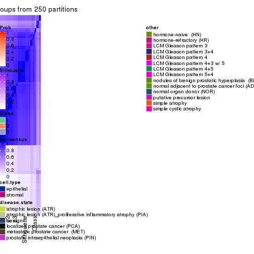
consensus_heatmap(res, k = 4)

consensus_heatmap(res, k = 5)
consensus_heatmap(res, k = 6)
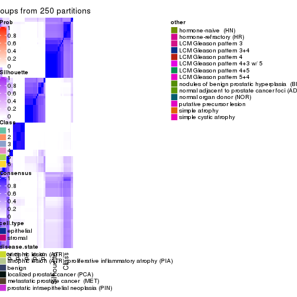
Heatmaps for the membership of samples in all partitions to see how consistent they are:
membership_heatmap(res, k = 2)
membership_heatmap(res, k = 3)
membership_heatmap(res, k = 4)
membership_heatmap(res, k = 5)
membership_heatmap(res, k = 6)
As soon as we have had the classes for columns, we can look for signatures which are significantly different between classes which can be candidate marks for certain classes. Following are the heatmaps for signatures.
Signature heatmaps where rows are scaled:
get_signatures(res, k = 2)
get_signatures(res, k = 3)
get_signatures(res, k = 4)

get_signatures(res, k = 5)
get_signatures(res, k = 6)
Signature heatmaps where rows are not scaled:
get_signatures(res, k = 2, scale_rows = FALSE)
get_signatures(res, k = 3, scale_rows = FALSE)
get_signatures(res, k = 4, scale_rows = FALSE)
get_signatures(res, k = 5, scale_rows = FALSE)
get_signatures(res, k = 6, scale_rows = FALSE)
Compare the overlap of signatures from different k:
compare_signatures(res)
get_signature() returns a data frame invisibly. TO get the list of signatures, the function
call should be assigned to a variable explicitly. In following code, if plot argument is set
to FALSE, no heatmap is plotted while only the differential analysis is performed.
# code only for demonstration
tb = get_signature(res, k = ..., plot = FALSE)
An example of the output of tb is:
#> which_row fdr mean_1 mean_2 scaled_mean_1 scaled_mean_2 km
#> 1 38 0.042760348 8.373488 9.131774 -0.5533452 0.5164555 1
#> 2 40 0.018707592 7.106213 8.469186 -0.6173731 0.5762149 1
#> 3 55 0.019134737 10.221463 11.207825 -0.6159697 0.5749050 1
#> 4 59 0.006059896 5.921854 7.869574 -0.6899429 0.6439467 1
#> 5 60 0.018055526 8.928898 10.211722 -0.6204761 0.5791110 1
#> 6 98 0.009384629 15.714769 14.887706 0.6635654 -0.6193277 2
...
The columns in tb are:
which_row: row indices corresponding to the input matrix.fdr: FDR for the differential test. mean_x: The mean value in group x.scaled_mean_x: The mean value in group x after rows are scaled.km: Row groups if k-means clustering is applied to rows.UMAP plot which shows how samples are separated.
dimension_reduction(res, k = 2, method = "UMAP")
dimension_reduction(res, k = 3, method = "UMAP")

dimension_reduction(res, k = 4, method = "UMAP")
dimension_reduction(res, k = 5, method = "UMAP")
dimension_reduction(res, k = 6, method = "UMAP")
Following heatmap shows how subgroups are split when increasing k:
collect_classes(res)
Test correlation between subgroups and known annotations. If the known annotation is numeric, one-way ANOVA test is applied, and if the known annotation is discrete, chi-squared contingency table test is applied.
test_to_known_factors(res)
#> n cell.type(p) disease.state(p) other(p) k
#> CV:hclust 99 2.94e-06 1.60e-07 3.59e-05 2
#> CV:hclust 100 5.10e-07 1.38e-08 5.72e-07 3
#> CV:hclust 98 4.18e-21 6.72e-09 9.47e-08 4
#> CV:hclust 91 1.74e-20 7.14e-08 1.59e-06 5
#> CV:hclust 78 4.62e-16 2.48e-08 2.26e-08 6
If matrix rows can be associated to genes, consider to use functional_enrichment(res,
...) to perform function enrichment for the signature genes. See this vignette for more detailed explanations.
The object with results only for a single top-value method and a single partition method can be extracted as:
res = res_list["CV", "kmeans"]
# you can also extract it by
# res = res_list["CV:kmeans"]
A summary of res and all the functions that can be applied to it:
res
#> A 'ConsensusPartition' object with k = 2, 3, 4, 5, 6.
#> On a matrix with 13604 rows and 104 columns.
#> Top rows (1000, 2000, 3000, 4000, 5000) are extracted by 'CV' method.
#> Subgroups are detected by 'kmeans' method.
#> Performed in total 1250 partitions by row resampling.
#> Best k for subgroups seems to be 3.
#>
#> Following methods can be applied to this 'ConsensusPartition' object:
#> [1] "cola_report" "collect_classes" "collect_plots"
#> [4] "collect_stats" "colnames" "compare_signatures"
#> [7] "consensus_heatmap" "dimension_reduction" "functional_enrichment"
#> [10] "get_anno_col" "get_anno" "get_classes"
#> [13] "get_consensus" "get_matrix" "get_membership"
#> [16] "get_param" "get_signatures" "get_stats"
#> [19] "is_best_k" "is_stable_k" "membership_heatmap"
#> [22] "ncol" "nrow" "plot_ecdf"
#> [25] "rownames" "select_partition_number" "show"
#> [28] "suggest_best_k" "test_to_known_factors"
collect_plots() function collects all the plots made from res for all k (number of partitions)
into one single page to provide an easy and fast comparison between different k.
collect_plots(res)
The plots are:
k and the heatmap of
predicted classes for each k.k.k.k.All the plots in panels can be made by individual functions and they are plotted later in this section.
select_partition_number() produces several plots showing different
statistics for choosing “optimized” k. There are following statistics:
k;k, the area increased is defined as \(A_k - A_{k-1}\).The detailed explanations of these statistics can be found in the cola vignette.
Generally speaking, lower PAC score, higher mean silhouette score or higher
concordance corresponds to better partition. Rand index and Jaccard index
measure how similar the current partition is compared to partition with k-1.
If they are too similar, we won't accept k is better than k-1.
select_partition_number(res)
The numeric values for all these statistics can be obtained by get_stats().
get_stats(res)
#> k 1-PAC mean_silhouette concordance area_increased Rand Jaccard
#> 2 2 0.513 0.111 0.587 0.4418 0.962 0.962
#> 3 3 0.712 0.831 0.898 0.3197 0.476 0.460
#> 4 4 0.588 0.515 0.688 0.1926 0.880 0.746
#> 5 5 0.668 0.788 0.852 0.0994 0.786 0.466
#> 6 6 0.734 0.726 0.807 0.0454 0.973 0.882
suggest_best_k() suggests the best \(k\) based on these statistics. The rules are as follows:
suggest_best_k(res)
#> [1] 3
Following shows the table of the partitions (You need to click the show/hide
code output link to see it). The membership matrix (columns with name p*)
is inferred by
clue::cl_consensus()
function with the SE method. Basically the value in the membership matrix
represents the probability to belong to a certain group. The finall class
label for an item is determined with the group with highest probability it
belongs to.
In get_classes() function, the entropy is calculated from the membership
matrix and the silhouette score is calculated from the consensus matrix.
cbind(get_classes(res, k = 2), get_membership(res, k = 2))
#> class entropy silhouette p1 p2
#> GSM141334 1 0.981 -0.53223 0.580 0.420
#> GSM141335 1 0.975 0.45067 0.592 0.408
#> GSM141336 1 0.981 -0.53223 0.580 0.420
#> GSM141337 1 1.000 0.48648 0.504 0.496
#> GSM141184 1 0.358 0.15717 0.932 0.068
#> GSM141185 1 0.981 -0.53223 0.580 0.420
#> GSM141186 1 0.981 -0.53223 0.580 0.420
#> GSM141243 1 0.981 -0.53223 0.580 0.420
#> GSM141244 1 0.985 0.45708 0.572 0.428
#> GSM141246 1 0.975 0.45067 0.592 0.408
#> GSM141247 1 0.981 -0.53223 0.580 0.420
#> GSM141248 1 1.000 0.48648 0.504 0.496
#> GSM141249 1 1.000 0.48648 0.504 0.496
#> GSM141258 1 0.981 -0.53223 0.580 0.420
#> GSM141259 1 0.981 -0.53223 0.580 0.420
#> GSM141260 1 0.980 0.45503 0.584 0.416
#> GSM141261 1 0.981 -0.53223 0.580 0.420
#> GSM141262 1 0.981 -0.53223 0.580 0.420
#> GSM141263 1 0.981 -0.53223 0.580 0.420
#> GSM141338 1 0.981 -0.53223 0.580 0.420
#> GSM141339 1 0.981 0.45697 0.580 0.420
#> GSM141340 1 1.000 0.48648 0.504 0.496
#> GSM141265 1 0.118 0.09175 0.984 0.016
#> GSM141267 1 1.000 0.48390 0.512 0.488
#> GSM141330 1 0.995 0.47362 0.540 0.460
#> GSM141266 1 0.981 -0.53223 0.580 0.420
#> GSM141264 1 0.141 0.12006 0.980 0.020
#> GSM141341 1 0.373 -0.00964 0.928 0.072
#> GSM141342 1 0.981 -0.53223 0.580 0.420
#> GSM141343 1 0.981 -0.53223 0.580 0.420
#> GSM141356 1 0.402 -0.06220 0.920 0.080
#> GSM141357 1 1.000 0.48648 0.504 0.496
#> GSM141358 1 0.981 -0.53223 0.580 0.420
#> GSM141359 1 0.981 -0.53223 0.580 0.420
#> GSM141360 1 1.000 0.48648 0.504 0.496
#> GSM141361 1 0.574 0.23404 0.864 0.136
#> GSM141362 1 0.981 -0.53223 0.580 0.420
#> GSM141363 1 0.981 -0.53223 0.580 0.420
#> GSM141364 1 0.966 0.44100 0.608 0.392
#> GSM141365 1 0.730 0.29673 0.796 0.204
#> GSM141366 1 0.981 -0.53223 0.580 0.420
#> GSM141367 1 0.895 0.37704 0.688 0.312
#> GSM141368 1 0.981 -0.53223 0.580 0.420
#> GSM141369 1 0.981 -0.53223 0.580 0.420
#> GSM141370 1 0.981 -0.53223 0.580 0.420
#> GSM141371 1 0.981 -0.53223 0.580 0.420
#> GSM141372 1 0.981 -0.53223 0.580 0.420
#> GSM141373 1 1.000 0.48648 0.504 0.496
#> GSM141374 1 1.000 0.48648 0.504 0.496
#> GSM141375 1 0.163 0.11463 0.976 0.024
#> GSM141376 1 1.000 0.48648 0.504 0.496
#> GSM141377 1 1.000 0.48648 0.504 0.496
#> GSM141378 1 1.000 0.48648 0.504 0.496
#> GSM141380 1 1.000 0.48648 0.504 0.496
#> GSM141387 1 1.000 0.48648 0.504 0.496
#> GSM141395 1 1.000 0.48648 0.504 0.496
#> GSM141397 1 0.204 0.07589 0.968 0.032
#> GSM141398 1 0.981 -0.53223 0.580 0.420
#> GSM141401 1 0.343 0.13572 0.936 0.064
#> GSM141399 1 0.904 0.39008 0.680 0.320
#> GSM141379 1 1.000 0.48648 0.504 0.496
#> GSM141381 1 1.000 0.48648 0.504 0.496
#> GSM141383 1 1.000 0.48648 0.504 0.496
#> GSM141384 1 1.000 0.48648 0.504 0.496
#> GSM141385 1 1.000 0.48648 0.504 0.496
#> GSM141388 1 1.000 0.48648 0.504 0.496
#> GSM141389 1 1.000 0.48648 0.504 0.496
#> GSM141391 1 1.000 0.48648 0.504 0.496
#> GSM141394 1 0.242 0.02144 0.960 0.040
#> GSM141396 1 1.000 0.48648 0.504 0.496
#> GSM141403 1 0.973 0.44836 0.596 0.404
#> GSM141404 2 0.722 0.02876 0.200 0.800
#> GSM141386 1 1.000 0.48648 0.504 0.496
#> GSM141382 1 1.000 0.48648 0.504 0.496
#> GSM141390 1 1.000 0.48648 0.504 0.496
#> GSM141393 1 1.000 0.48648 0.504 0.496
#> GSM141400 1 1.000 0.48648 0.504 0.496
#> GSM141402 1 0.981 -0.53223 0.580 0.420
#> GSM141392 1 1.000 0.48648 0.504 0.496
#> GSM141405 1 0.932 0.40535 0.652 0.348
#> GSM141406 1 0.141 0.10931 0.980 0.020
#> GSM141407 1 1.000 0.48648 0.504 0.496
#> GSM141408 1 1.000 0.48648 0.504 0.496
#> GSM141409 1 1.000 0.48648 0.504 0.496
#> GSM141410 1 1.000 0.48648 0.504 0.496
#> GSM141411 1 1.000 0.48648 0.504 0.496
#> GSM141412 1 1.000 0.48648 0.504 0.496
#> GSM141413 1 1.000 0.48648 0.504 0.496
#> GSM141414 1 1.000 0.48648 0.504 0.496
#> GSM141415 1 1.000 0.48648 0.504 0.496
#> GSM141416 1 0.983 0.45880 0.576 0.424
#> GSM141417 1 1.000 0.48648 0.504 0.496
#> GSM141420 1 0.430 0.03230 0.912 0.088
#> GSM141421 1 0.494 0.07177 0.892 0.108
#> GSM141422 1 0.644 -0.11528 0.836 0.164
#> GSM141423 1 0.430 0.03230 0.912 0.088
#> GSM141424 1 0.644 -0.11528 0.836 0.164
#> GSM141427 1 0.469 0.06275 0.900 0.100
#> GSM141428 1 0.416 0.03890 0.916 0.084
#> GSM141418 2 1.000 0.23356 0.496 0.504
#> GSM141419 1 0.574 -0.06020 0.864 0.136
#> GSM141425 1 0.563 -0.05232 0.868 0.132
#> GSM141426 1 0.644 -0.11528 0.836 0.164
#> GSM141429 1 0.644 -0.11528 0.836 0.164
cbind(get_classes(res, k = 3), get_membership(res, k = 3))
#> class entropy silhouette p1 p2 p3
#> GSM141334 2 0.2793 0.8753 0.028 0.928 0.044
#> GSM141335 1 0.3856 0.8456 0.888 0.040 0.072
#> GSM141336 2 0.0592 0.9149 0.000 0.988 0.012
#> GSM141337 1 0.1774 0.8713 0.960 0.024 0.016
#> GSM141184 1 0.8117 0.5853 0.636 0.236 0.128
#> GSM141185 2 0.1765 0.9004 0.004 0.956 0.040
#> GSM141186 2 0.1411 0.9195 0.000 0.964 0.036
#> GSM141243 2 0.1289 0.9205 0.000 0.968 0.032
#> GSM141244 1 0.3472 0.8542 0.904 0.040 0.056
#> GSM141246 1 0.5094 0.8031 0.824 0.040 0.136
#> GSM141247 2 0.0592 0.9149 0.000 0.988 0.012
#> GSM141248 1 0.1774 0.8713 0.960 0.024 0.016
#> GSM141249 1 0.0424 0.8765 0.992 0.000 0.008
#> GSM141258 2 0.2063 0.8942 0.008 0.948 0.044
#> GSM141259 2 0.3941 0.8441 0.000 0.844 0.156
#> GSM141260 1 0.4591 0.8204 0.848 0.032 0.120
#> GSM141261 2 0.1289 0.9205 0.000 0.968 0.032
#> GSM141262 2 0.0592 0.9149 0.000 0.988 0.012
#> GSM141263 2 0.3879 0.8473 0.000 0.848 0.152
#> GSM141338 2 0.0592 0.9149 0.000 0.988 0.012
#> GSM141339 1 0.3042 0.8593 0.920 0.040 0.040
#> GSM141340 1 0.1182 0.8748 0.976 0.012 0.012
#> GSM141265 1 0.9181 0.4058 0.540 0.236 0.224
#> GSM141267 1 0.4921 0.7918 0.816 0.020 0.164
#> GSM141330 1 0.5062 0.7792 0.800 0.016 0.184
#> GSM141266 2 0.4178 0.8267 0.000 0.828 0.172
#> GSM141264 1 0.7919 0.3994 0.556 0.064 0.380
#> GSM141341 2 0.8614 0.4509 0.172 0.600 0.228
#> GSM141342 2 0.4002 0.8431 0.000 0.840 0.160
#> GSM141343 2 0.4002 0.8431 0.000 0.840 0.160
#> GSM141356 1 0.9073 0.4455 0.544 0.272 0.184
#> GSM141357 1 0.1170 0.8750 0.976 0.016 0.008
#> GSM141358 2 0.1163 0.9204 0.000 0.972 0.028
#> GSM141359 2 0.1031 0.9216 0.000 0.976 0.024
#> GSM141360 1 0.1170 0.8750 0.976 0.016 0.008
#> GSM141361 1 0.5627 0.7540 0.780 0.032 0.188
#> GSM141362 2 0.1031 0.9216 0.000 0.976 0.024
#> GSM141363 2 0.0592 0.9149 0.000 0.988 0.012
#> GSM141364 1 0.3669 0.8495 0.896 0.040 0.064
#> GSM141365 1 0.5503 0.7393 0.772 0.020 0.208
#> GSM141366 2 0.2537 0.9031 0.000 0.920 0.080
#> GSM141367 1 0.5945 0.7201 0.740 0.024 0.236
#> GSM141368 2 0.2537 0.9031 0.000 0.920 0.080
#> GSM141369 2 0.1289 0.9205 0.000 0.968 0.032
#> GSM141370 2 0.1031 0.9216 0.000 0.976 0.024
#> GSM141371 2 0.1031 0.9216 0.000 0.976 0.024
#> GSM141372 2 0.1031 0.9216 0.000 0.976 0.024
#> GSM141373 1 0.1170 0.8750 0.976 0.016 0.008
#> GSM141374 1 0.0424 0.8765 0.992 0.000 0.008
#> GSM141375 1 0.9758 0.1349 0.412 0.356 0.232
#> GSM141376 1 0.1031 0.8746 0.976 0.000 0.024
#> GSM141377 1 0.0000 0.8763 1.000 0.000 0.000
#> GSM141378 1 0.0424 0.8765 0.992 0.000 0.008
#> GSM141380 1 0.1031 0.8746 0.976 0.000 0.024
#> GSM141387 1 0.1031 0.8746 0.976 0.000 0.024
#> GSM141395 1 0.1182 0.8761 0.976 0.012 0.012
#> GSM141397 1 0.9775 0.0582 0.392 0.376 0.232
#> GSM141398 2 0.0592 0.9149 0.000 0.988 0.012
#> GSM141401 1 0.8948 0.3392 0.508 0.356 0.136
#> GSM141399 1 0.5105 0.8069 0.828 0.048 0.124
#> GSM141379 1 0.1031 0.8746 0.976 0.000 0.024
#> GSM141381 1 0.1031 0.8746 0.976 0.000 0.024
#> GSM141383 1 0.1031 0.8746 0.976 0.000 0.024
#> GSM141384 1 0.1031 0.8746 0.976 0.000 0.024
#> GSM141385 1 0.1170 0.8750 0.976 0.016 0.008
#> GSM141388 1 0.1031 0.8746 0.976 0.000 0.024
#> GSM141389 1 0.1031 0.8746 0.976 0.000 0.024
#> GSM141391 1 0.0424 0.8765 0.992 0.000 0.008
#> GSM141394 1 0.8760 0.5161 0.584 0.240 0.176
#> GSM141396 1 0.0424 0.8765 0.992 0.000 0.008
#> GSM141403 1 0.3472 0.8543 0.904 0.040 0.056
#> GSM141404 2 0.4683 0.7302 0.140 0.836 0.024
#> GSM141386 1 0.1170 0.8750 0.976 0.016 0.008
#> GSM141382 1 0.1031 0.8746 0.976 0.000 0.024
#> GSM141390 1 0.0424 0.8765 0.992 0.000 0.008
#> GSM141393 1 0.0424 0.8765 0.992 0.000 0.008
#> GSM141400 1 0.0424 0.8765 0.992 0.000 0.008
#> GSM141402 2 0.1289 0.9205 0.000 0.968 0.032
#> GSM141392 1 0.2261 0.8560 0.932 0.000 0.068
#> GSM141405 1 0.5524 0.7792 0.796 0.040 0.164
#> GSM141406 1 0.9707 0.1537 0.424 0.352 0.224
#> GSM141407 1 0.1031 0.8746 0.976 0.000 0.024
#> GSM141408 1 0.1031 0.8746 0.976 0.000 0.024
#> GSM141409 1 0.1774 0.8713 0.960 0.024 0.016
#> GSM141410 1 0.1031 0.8746 0.976 0.000 0.024
#> GSM141411 1 0.0424 0.8765 0.992 0.000 0.008
#> GSM141412 1 0.1031 0.8746 0.976 0.000 0.024
#> GSM141413 1 0.1774 0.8713 0.960 0.024 0.016
#> GSM141414 1 0.1774 0.8713 0.960 0.024 0.016
#> GSM141415 1 0.1031 0.8746 0.976 0.000 0.024
#> GSM141416 1 0.3554 0.8515 0.900 0.036 0.064
#> GSM141417 1 0.0424 0.8761 0.992 0.000 0.008
#> GSM141420 3 0.2434 0.9811 0.036 0.024 0.940
#> GSM141421 3 0.2434 0.9811 0.036 0.024 0.940
#> GSM141422 3 0.2926 0.9813 0.036 0.040 0.924
#> GSM141423 3 0.2434 0.9811 0.036 0.024 0.940
#> GSM141424 3 0.2926 0.9813 0.036 0.040 0.924
#> GSM141427 3 0.2434 0.9811 0.036 0.024 0.940
#> GSM141428 3 0.2434 0.9811 0.036 0.024 0.940
#> GSM141418 3 0.3192 0.8894 0.000 0.112 0.888
#> GSM141419 3 0.2810 0.9811 0.036 0.036 0.928
#> GSM141425 3 0.2689 0.9814 0.036 0.032 0.932
#> GSM141426 3 0.2926 0.9813 0.036 0.040 0.924
#> GSM141429 3 0.2926 0.9813 0.036 0.040 0.924
cbind(get_classes(res, k = 4), get_membership(res, k = 4))
#> class entropy silhouette p1 p2 p3 p4
#> GSM141334 2 0.7226 0.5362 0.320 0.548 0.012 0.120
#> GSM141335 1 0.5067 0.4536 0.768 0.168 0.008 0.056
#> GSM141336 2 0.6101 0.5177 0.028 0.556 0.012 0.404
#> GSM141337 1 0.1211 0.6089 0.960 0.040 0.000 0.000
#> GSM141184 1 0.6064 0.3812 0.708 0.172 0.012 0.108
#> GSM141185 2 0.7351 0.5511 0.300 0.548 0.012 0.140
#> GSM141186 4 0.3569 0.3066 0.000 0.196 0.000 0.804
#> GSM141243 4 0.5244 -0.0625 0.000 0.436 0.008 0.556
#> GSM141244 1 0.5257 0.4435 0.756 0.172 0.008 0.064
#> GSM141246 1 0.5011 0.4715 0.780 0.152 0.012 0.056
#> GSM141247 2 0.6101 0.5177 0.028 0.556 0.012 0.404
#> GSM141248 1 0.3856 0.5165 0.832 0.136 0.000 0.032
#> GSM141249 1 0.4661 0.6685 0.652 0.348 0.000 0.000
#> GSM141258 2 0.7305 0.5476 0.308 0.548 0.012 0.132
#> GSM141259 4 0.2975 0.4193 0.008 0.060 0.032 0.900
#> GSM141260 1 0.5227 0.4689 0.772 0.148 0.016 0.064
#> GSM141261 4 0.4950 0.1012 0.000 0.376 0.004 0.620
#> GSM141262 2 0.6101 0.5177 0.028 0.556 0.012 0.404
#> GSM141263 4 0.2297 0.4275 0.004 0.044 0.024 0.928
#> GSM141338 2 0.6101 0.5177 0.028 0.556 0.012 0.404
#> GSM141339 1 0.4595 0.4566 0.776 0.184 0.000 0.040
#> GSM141340 1 0.4277 0.6603 0.720 0.280 0.000 0.000
#> GSM141265 1 0.8135 -0.0695 0.468 0.132 0.044 0.356
#> GSM141267 1 0.4289 0.5313 0.836 0.096 0.016 0.052
#> GSM141330 1 0.4186 0.5518 0.852 0.052 0.040 0.056
#> GSM141266 4 0.6807 0.2759 0.200 0.100 0.036 0.664
#> GSM141264 1 0.8360 -0.0706 0.472 0.080 0.104 0.344
#> GSM141341 4 0.4599 0.3463 0.184 0.004 0.032 0.780
#> GSM141342 4 0.1598 0.4326 0.020 0.004 0.020 0.956
#> GSM141343 4 0.1629 0.4310 0.024 0.000 0.024 0.952
#> GSM141356 2 0.6350 0.3389 0.440 0.512 0.016 0.032
#> GSM141357 1 0.1004 0.6322 0.972 0.024 0.004 0.000
#> GSM141358 4 0.6267 -0.3419 0.032 0.472 0.012 0.484
#> GSM141359 4 0.5244 -0.0694 0.000 0.436 0.008 0.556
#> GSM141360 1 0.1004 0.6322 0.972 0.024 0.004 0.000
#> GSM141361 1 0.5642 0.4520 0.756 0.088 0.024 0.132
#> GSM141362 4 0.5250 -0.0800 0.000 0.440 0.008 0.552
#> GSM141363 2 0.6101 0.5177 0.028 0.556 0.012 0.404
#> GSM141364 1 0.5130 0.4139 0.740 0.212 0.004 0.044
#> GSM141365 1 0.5154 0.4780 0.772 0.024 0.040 0.164
#> GSM141366 4 0.1488 0.4260 0.000 0.032 0.012 0.956
#> GSM141367 4 0.8195 0.2322 0.208 0.248 0.036 0.508
#> GSM141368 4 0.1488 0.4260 0.000 0.032 0.012 0.956
#> GSM141369 4 0.4855 0.1241 0.000 0.352 0.004 0.644
#> GSM141370 4 0.5112 0.0766 0.000 0.384 0.008 0.608
#> GSM141371 4 0.5112 0.0766 0.000 0.384 0.008 0.608
#> GSM141372 4 0.5099 0.0816 0.000 0.380 0.008 0.612
#> GSM141373 1 0.0336 0.6268 0.992 0.008 0.000 0.000
#> GSM141374 1 0.4679 0.6680 0.648 0.352 0.000 0.000
#> GSM141375 4 0.6610 0.2819 0.244 0.064 0.036 0.656
#> GSM141376 1 0.4933 0.6448 0.568 0.432 0.000 0.000
#> GSM141377 1 0.4679 0.6680 0.648 0.352 0.000 0.000
#> GSM141378 1 0.4679 0.6680 0.648 0.352 0.000 0.000
#> GSM141380 1 0.4933 0.6448 0.568 0.432 0.000 0.000
#> GSM141387 1 0.4933 0.6448 0.568 0.432 0.000 0.000
#> GSM141395 1 0.1114 0.6242 0.972 0.008 0.004 0.016
#> GSM141397 4 0.7470 0.1404 0.360 0.084 0.036 0.520
#> GSM141398 2 0.6101 0.5177 0.028 0.556 0.012 0.404
#> GSM141401 1 0.7210 -0.1784 0.452 0.088 0.016 0.444
#> GSM141399 1 0.5214 0.4453 0.760 0.168 0.008 0.064
#> GSM141379 1 0.4933 0.6448 0.568 0.432 0.000 0.000
#> GSM141381 1 0.4941 0.6445 0.564 0.436 0.000 0.000
#> GSM141383 1 0.4941 0.6445 0.564 0.436 0.000 0.000
#> GSM141384 1 0.4941 0.6445 0.564 0.436 0.000 0.000
#> GSM141385 1 0.0376 0.6262 0.992 0.004 0.004 0.000
#> GSM141388 1 0.4941 0.6445 0.564 0.436 0.000 0.000
#> GSM141389 1 0.4941 0.6445 0.564 0.436 0.000 0.000
#> GSM141391 1 0.4679 0.6680 0.648 0.352 0.000 0.000
#> GSM141394 1 0.5958 0.3773 0.712 0.184 0.012 0.092
#> GSM141396 1 0.4643 0.6688 0.656 0.344 0.000 0.000
#> GSM141403 1 0.4912 0.4758 0.784 0.148 0.008 0.060
#> GSM141404 2 0.7277 0.5545 0.284 0.556 0.008 0.152
#> GSM141386 1 0.0000 0.6264 1.000 0.000 0.000 0.000
#> GSM141382 1 0.4941 0.6445 0.564 0.436 0.000 0.000
#> GSM141390 1 0.4331 0.6711 0.712 0.288 0.000 0.000
#> GSM141393 1 0.4679 0.6680 0.648 0.352 0.000 0.000
#> GSM141400 1 0.4679 0.6680 0.648 0.352 0.000 0.000
#> GSM141402 4 0.4920 0.1107 0.000 0.368 0.004 0.628
#> GSM141392 1 0.4663 0.6677 0.716 0.272 0.012 0.000
#> GSM141405 4 0.8061 0.2222 0.212 0.248 0.028 0.512
#> GSM141406 4 0.7346 0.1105 0.408 0.068 0.036 0.488
#> GSM141407 1 0.4933 0.6448 0.568 0.432 0.000 0.000
#> GSM141408 1 0.4933 0.6448 0.568 0.432 0.000 0.000
#> GSM141409 1 0.0921 0.6153 0.972 0.028 0.000 0.000
#> GSM141410 1 0.4933 0.6448 0.568 0.432 0.000 0.000
#> GSM141411 1 0.4643 0.6688 0.656 0.344 0.000 0.000
#> GSM141412 1 0.4933 0.6448 0.568 0.432 0.000 0.000
#> GSM141413 1 0.1118 0.6113 0.964 0.036 0.000 0.000
#> GSM141414 1 0.1109 0.6140 0.968 0.028 0.000 0.004
#> GSM141415 1 0.4933 0.6448 0.568 0.432 0.000 0.000
#> GSM141416 1 0.4734 0.4587 0.776 0.180 0.004 0.040
#> GSM141417 1 0.4040 0.6652 0.752 0.248 0.000 0.000
#> GSM141420 3 0.0859 0.9863 0.004 0.008 0.980 0.008
#> GSM141421 3 0.0859 0.9863 0.004 0.008 0.980 0.008
#> GSM141422 3 0.0712 0.9876 0.004 0.008 0.984 0.004
#> GSM141423 3 0.0859 0.9863 0.004 0.008 0.980 0.008
#> GSM141424 3 0.0712 0.9876 0.004 0.008 0.984 0.004
#> GSM141427 3 0.0859 0.9863 0.004 0.008 0.980 0.008
#> GSM141428 3 0.0859 0.9863 0.004 0.008 0.980 0.008
#> GSM141418 3 0.1182 0.9626 0.000 0.016 0.968 0.016
#> GSM141419 3 0.0712 0.9876 0.004 0.008 0.984 0.004
#> GSM141425 3 0.0712 0.9871 0.004 0.004 0.984 0.008
#> GSM141426 3 0.0712 0.9876 0.004 0.008 0.984 0.004
#> GSM141429 3 0.0712 0.9876 0.004 0.008 0.984 0.004
cbind(get_classes(res, k = 5), get_membership(res, k = 5))
#> class entropy silhouette p1 p2 p3 p4 p5
#> GSM141334 2 0.4199 0.5860 0.000 0.692 0.008 0.004 0.296
#> GSM141335 5 0.1862 0.8686 0.048 0.016 0.000 0.004 0.932
#> GSM141336 2 0.2304 0.7784 0.000 0.892 0.008 0.000 0.100
#> GSM141337 5 0.2719 0.8599 0.144 0.000 0.000 0.004 0.852
#> GSM141184 5 0.1854 0.8606 0.036 0.020 0.000 0.008 0.936
#> GSM141185 2 0.3883 0.6562 0.000 0.744 0.008 0.004 0.244
#> GSM141186 2 0.5131 0.4184 0.000 0.588 0.000 0.364 0.048
#> GSM141243 2 0.3651 0.7626 0.000 0.808 0.004 0.160 0.028
#> GSM141244 5 0.1862 0.8686 0.048 0.016 0.000 0.004 0.932
#> GSM141246 5 0.1591 0.8718 0.052 0.004 0.000 0.004 0.940
#> GSM141247 2 0.2304 0.7784 0.000 0.892 0.008 0.000 0.100
#> GSM141248 5 0.2237 0.8741 0.084 0.008 0.000 0.004 0.904
#> GSM141249 1 0.3039 0.8124 0.836 0.000 0.000 0.012 0.152
#> GSM141258 2 0.3937 0.6472 0.000 0.736 0.008 0.004 0.252
#> GSM141259 4 0.4818 0.6692 0.000 0.180 0.000 0.720 0.100
#> GSM141260 5 0.2437 0.8701 0.060 0.004 0.000 0.032 0.904
#> GSM141261 2 0.3616 0.7308 0.000 0.768 0.004 0.224 0.004
#> GSM141262 2 0.2304 0.7784 0.000 0.892 0.008 0.000 0.100
#> GSM141263 4 0.4337 0.6353 0.000 0.196 0.000 0.748 0.056
#> GSM141338 2 0.2179 0.7795 0.000 0.896 0.004 0.000 0.100
#> GSM141339 5 0.2494 0.8661 0.056 0.032 0.000 0.008 0.904
#> GSM141340 1 0.4464 0.3490 0.584 0.000 0.000 0.008 0.408
#> GSM141265 5 0.3998 0.7015 0.012 0.032 0.004 0.148 0.804
#> GSM141267 5 0.2331 0.8745 0.068 0.008 0.000 0.016 0.908
#> GSM141330 5 0.3237 0.8499 0.064 0.008 0.004 0.056 0.868
#> GSM141266 4 0.5588 0.6808 0.000 0.104 0.000 0.604 0.292
#> GSM141264 5 0.4429 0.6881 0.012 0.036 0.012 0.160 0.780
#> GSM141341 4 0.3527 0.7451 0.000 0.056 0.000 0.828 0.116
#> GSM141342 4 0.2416 0.6733 0.000 0.100 0.000 0.888 0.012
#> GSM141343 4 0.2962 0.7136 0.000 0.084 0.000 0.868 0.048
#> GSM141356 5 0.4160 0.6769 0.000 0.184 0.008 0.036 0.772
#> GSM141357 5 0.4554 0.7903 0.192 0.012 0.000 0.048 0.748
#> GSM141358 2 0.3803 0.7669 0.000 0.804 0.000 0.140 0.056
#> GSM141359 2 0.3759 0.7556 0.000 0.792 0.004 0.180 0.024
#> GSM141360 5 0.4621 0.7881 0.192 0.012 0.000 0.052 0.744
#> GSM141361 5 0.3853 0.8246 0.044 0.032 0.000 0.092 0.832
#> GSM141362 2 0.3241 0.7683 0.000 0.832 0.000 0.144 0.024
#> GSM141363 2 0.2179 0.7795 0.000 0.896 0.004 0.000 0.100
#> GSM141364 5 0.3011 0.8426 0.036 0.048 0.000 0.032 0.884
#> GSM141365 5 0.4067 0.8222 0.060 0.024 0.000 0.100 0.816
#> GSM141366 4 0.2497 0.6586 0.000 0.112 0.004 0.880 0.004
#> GSM141367 4 0.4722 0.7128 0.056 0.032 0.000 0.764 0.148
#> GSM141368 4 0.2497 0.6586 0.000 0.112 0.004 0.880 0.004
#> GSM141369 2 0.3790 0.7110 0.000 0.744 0.004 0.248 0.004
#> GSM141370 2 0.3676 0.7249 0.000 0.760 0.004 0.232 0.004
#> GSM141371 2 0.3676 0.7249 0.000 0.760 0.004 0.232 0.004
#> GSM141372 2 0.3616 0.7297 0.000 0.768 0.004 0.224 0.004
#> GSM141373 5 0.3550 0.8292 0.184 0.000 0.000 0.020 0.796
#> GSM141374 1 0.2625 0.8408 0.876 0.000 0.000 0.016 0.108
#> GSM141375 4 0.4056 0.7434 0.008 0.024 0.000 0.768 0.200
#> GSM141376 1 0.0000 0.8676 1.000 0.000 0.000 0.000 0.000
#> GSM141377 1 0.2777 0.8354 0.864 0.000 0.000 0.016 0.120
#> GSM141378 1 0.2921 0.8308 0.856 0.000 0.000 0.020 0.124
#> GSM141380 1 0.0000 0.8676 1.000 0.000 0.000 0.000 0.000
#> GSM141387 1 0.0162 0.8675 0.996 0.000 0.000 0.004 0.000
#> GSM141395 5 0.3319 0.8415 0.160 0.000 0.000 0.020 0.820
#> GSM141397 4 0.5403 0.5500 0.008 0.044 0.000 0.556 0.392
#> GSM141398 2 0.2179 0.7795 0.000 0.896 0.004 0.000 0.100
#> GSM141401 4 0.5447 0.4327 0.012 0.036 0.000 0.512 0.440
#> GSM141399 5 0.1757 0.8696 0.048 0.012 0.000 0.004 0.936
#> GSM141379 1 0.0000 0.8676 1.000 0.000 0.000 0.000 0.000
#> GSM141381 1 0.0324 0.8663 0.992 0.004 0.000 0.004 0.000
#> GSM141383 1 0.0324 0.8661 0.992 0.004 0.000 0.004 0.000
#> GSM141384 1 0.0324 0.8661 0.992 0.004 0.000 0.004 0.000
#> GSM141385 5 0.4300 0.8206 0.164 0.012 0.000 0.048 0.776
#> GSM141388 1 0.0290 0.8674 0.992 0.000 0.000 0.008 0.000
#> GSM141389 1 0.0290 0.8674 0.992 0.000 0.000 0.008 0.000
#> GSM141391 1 0.2773 0.8381 0.868 0.000 0.000 0.020 0.112
#> GSM141394 5 0.1690 0.8527 0.024 0.024 0.000 0.008 0.944
#> GSM141396 1 0.3236 0.8073 0.828 0.000 0.000 0.020 0.152
#> GSM141403 5 0.1644 0.8733 0.048 0.004 0.000 0.008 0.940
#> GSM141404 2 0.3961 0.6846 0.000 0.760 0.000 0.028 0.212
#> GSM141386 5 0.3690 0.8113 0.200 0.000 0.000 0.020 0.780
#> GSM141382 1 0.0324 0.8661 0.992 0.004 0.000 0.004 0.000
#> GSM141390 1 0.4456 0.5183 0.660 0.000 0.000 0.020 0.320
#> GSM141393 1 0.2722 0.8398 0.872 0.000 0.000 0.020 0.108
#> GSM141400 1 0.2873 0.8336 0.860 0.000 0.000 0.020 0.120
#> GSM141402 2 0.3676 0.7263 0.000 0.760 0.004 0.232 0.004
#> GSM141392 1 0.5119 0.0814 0.504 0.004 0.000 0.028 0.464
#> GSM141405 4 0.5166 0.7245 0.088 0.020 0.000 0.720 0.172
#> GSM141406 4 0.5209 0.5947 0.008 0.036 0.000 0.588 0.368
#> GSM141407 1 0.0290 0.8674 0.992 0.000 0.000 0.008 0.000
#> GSM141408 1 0.0162 0.8675 0.996 0.000 0.000 0.004 0.000
#> GSM141409 5 0.3081 0.8505 0.156 0.000 0.000 0.012 0.832
#> GSM141410 1 0.0290 0.8674 0.992 0.000 0.000 0.008 0.000
#> GSM141411 1 0.3098 0.8132 0.836 0.000 0.000 0.016 0.148
#> GSM141412 1 0.0290 0.8674 0.992 0.000 0.000 0.008 0.000
#> GSM141413 5 0.2929 0.8538 0.152 0.000 0.000 0.008 0.840
#> GSM141414 5 0.2719 0.8597 0.144 0.000 0.000 0.004 0.852
#> GSM141415 1 0.0290 0.8674 0.992 0.000 0.000 0.008 0.000
#> GSM141416 5 0.2369 0.8663 0.056 0.032 0.000 0.004 0.908
#> GSM141417 1 0.4494 0.3975 0.608 0.000 0.000 0.012 0.380
#> GSM141420 3 0.1461 0.9728 0.000 0.004 0.952 0.016 0.028
#> GSM141421 3 0.1461 0.9728 0.000 0.004 0.952 0.016 0.028
#> GSM141422 3 0.0162 0.9791 0.000 0.000 0.996 0.000 0.004
#> GSM141423 3 0.1461 0.9728 0.000 0.004 0.952 0.016 0.028
#> GSM141424 3 0.0162 0.9791 0.000 0.000 0.996 0.000 0.004
#> GSM141427 3 0.1461 0.9728 0.000 0.004 0.952 0.016 0.028
#> GSM141428 3 0.1461 0.9728 0.000 0.004 0.952 0.016 0.028
#> GSM141418 3 0.0162 0.9773 0.000 0.004 0.996 0.000 0.000
#> GSM141419 3 0.0162 0.9791 0.000 0.000 0.996 0.000 0.004
#> GSM141425 3 0.0486 0.9776 0.000 0.004 0.988 0.004 0.004
#> GSM141426 3 0.0486 0.9776 0.000 0.004 0.988 0.004 0.004
#> GSM141429 3 0.0486 0.9776 0.000 0.004 0.988 0.004 0.004
cbind(get_classes(res, k = 6), get_membership(res, k = 6))
#> class entropy silhouette p1 p2 p3 p4 p5 p6
#> GSM141334 2 0.3714 0.480 0.000 0.656 0.000 0.000 0.340 NA
#> GSM141335 5 0.1078 0.781 0.016 0.008 0.000 0.000 0.964 NA
#> GSM141336 2 0.0937 0.772 0.000 0.960 0.000 0.000 0.040 NA
#> GSM141337 5 0.2094 0.782 0.080 0.000 0.000 0.000 0.900 NA
#> GSM141184 5 0.1936 0.766 0.008 0.008 0.000 0.028 0.928 NA
#> GSM141185 2 0.2730 0.670 0.000 0.808 0.000 0.000 0.192 NA
#> GSM141186 4 0.5473 0.190 0.000 0.392 0.000 0.520 0.036 NA
#> GSM141243 2 0.3248 0.743 0.000 0.828 0.000 0.116 0.004 NA
#> GSM141244 5 0.1957 0.771 0.012 0.008 0.000 0.024 0.928 NA
#> GSM141246 5 0.1426 0.781 0.016 0.008 0.000 0.000 0.948 NA
#> GSM141247 2 0.0937 0.772 0.000 0.960 0.000 0.000 0.040 NA
#> GSM141248 5 0.1268 0.786 0.036 0.004 0.000 0.000 0.952 NA
#> GSM141249 1 0.4308 0.644 0.676 0.000 0.000 0.004 0.280 NA
#> GSM141258 2 0.2793 0.663 0.000 0.800 0.000 0.000 0.200 NA
#> GSM141259 4 0.4427 0.714 0.000 0.096 0.000 0.768 0.068 NA
#> GSM141260 5 0.2811 0.759 0.012 0.008 0.000 0.052 0.880 NA
#> GSM141261 2 0.4111 0.731 0.000 0.748 0.000 0.108 0.000 NA
#> GSM141262 2 0.0937 0.772 0.000 0.960 0.000 0.000 0.040 NA
#> GSM141263 4 0.4351 0.710 0.000 0.100 0.000 0.772 0.052 NA
#> GSM141338 2 0.0937 0.772 0.000 0.960 0.000 0.000 0.040 NA
#> GSM141339 5 0.1409 0.779 0.012 0.032 0.000 0.000 0.948 NA
#> GSM141340 5 0.4219 0.422 0.320 0.000 0.000 0.000 0.648 NA
#> GSM141265 5 0.6151 0.121 0.004 0.012 0.004 0.332 0.492 NA
#> GSM141267 5 0.2544 0.770 0.024 0.004 0.000 0.028 0.896 NA
#> GSM141330 5 0.4291 0.720 0.028 0.000 0.000 0.048 0.748 NA
#> GSM141266 4 0.5001 0.704 0.000 0.064 0.000 0.696 0.188 NA
#> GSM141264 5 0.6161 0.188 0.004 0.004 0.008 0.312 0.492 NA
#> GSM141341 4 0.2164 0.752 0.000 0.028 0.000 0.912 0.044 NA
#> GSM141342 4 0.3614 0.641 0.000 0.028 0.000 0.752 0.000 NA
#> GSM141343 4 0.1882 0.741 0.000 0.028 0.000 0.928 0.024 NA
#> GSM141356 5 0.5452 0.587 0.004 0.104 0.004 0.004 0.584 NA
#> GSM141357 5 0.4993 0.649 0.072 0.000 0.000 0.004 0.580 NA
#> GSM141358 2 0.5082 0.708 0.000 0.680 0.000 0.064 0.048 NA
#> GSM141359 2 0.3907 0.739 0.000 0.764 0.000 0.084 0.000 NA
#> GSM141360 5 0.4993 0.645 0.072 0.000 0.000 0.004 0.580 NA
#> GSM141361 5 0.4943 0.629 0.016 0.004 0.000 0.032 0.572 NA
#> GSM141362 2 0.3548 0.749 0.000 0.796 0.000 0.068 0.000 NA
#> GSM141363 2 0.0865 0.771 0.000 0.964 0.000 0.000 0.036 NA
#> GSM141364 5 0.4356 0.660 0.004 0.028 0.000 0.004 0.660 NA
#> GSM141365 5 0.5454 0.582 0.024 0.000 0.000 0.068 0.528 NA
#> GSM141366 4 0.3979 0.611 0.000 0.036 0.000 0.708 0.000 NA
#> GSM141367 4 0.3887 0.683 0.012 0.004 0.000 0.744 0.016 NA
#> GSM141368 4 0.3933 0.613 0.000 0.036 0.000 0.716 0.000 NA
#> GSM141369 2 0.5270 0.626 0.000 0.588 0.000 0.144 0.000 NA
#> GSM141370 2 0.5011 0.653 0.000 0.616 0.000 0.112 0.000 NA
#> GSM141371 2 0.5011 0.653 0.000 0.616 0.000 0.112 0.000 NA
#> GSM141372 2 0.4892 0.663 0.000 0.628 0.000 0.100 0.000 NA
#> GSM141373 5 0.3748 0.758 0.092 0.000 0.000 0.004 0.792 NA
#> GSM141374 1 0.4024 0.734 0.752 0.000 0.000 0.004 0.180 NA
#> GSM141375 4 0.2362 0.756 0.000 0.016 0.000 0.892 0.080 NA
#> GSM141376 1 0.0291 0.822 0.992 0.000 0.000 0.000 0.004 NA
#> GSM141377 1 0.4411 0.708 0.712 0.000 0.000 0.004 0.204 NA
#> GSM141378 1 0.4467 0.708 0.712 0.000 0.000 0.004 0.192 NA
#> GSM141380 1 0.0291 0.822 0.992 0.000 0.000 0.000 0.004 NA
#> GSM141387 1 0.0508 0.822 0.984 0.000 0.000 0.000 0.004 NA
#> GSM141395 5 0.3677 0.767 0.064 0.000 0.000 0.012 0.804 NA
#> GSM141397 4 0.4871 0.623 0.000 0.024 0.000 0.656 0.268 NA
#> GSM141398 2 0.0937 0.772 0.000 0.960 0.000 0.000 0.040 NA
#> GSM141401 4 0.4578 0.559 0.000 0.020 0.000 0.636 0.320 NA
#> GSM141399 5 0.0717 0.783 0.016 0.008 0.000 0.000 0.976 NA
#> GSM141379 1 0.0405 0.822 0.988 0.000 0.000 0.000 0.004 NA
#> GSM141381 1 0.0937 0.815 0.960 0.000 0.000 0.000 0.000 NA
#> GSM141383 1 0.1267 0.810 0.940 0.000 0.000 0.000 0.000 NA
#> GSM141384 1 0.1267 0.810 0.940 0.000 0.000 0.000 0.000 NA
#> GSM141385 5 0.4994 0.617 0.060 0.000 0.000 0.004 0.524 NA
#> GSM141388 1 0.1410 0.814 0.944 0.000 0.000 0.008 0.004 NA
#> GSM141389 1 0.1410 0.814 0.944 0.000 0.000 0.008 0.004 NA
#> GSM141391 1 0.4244 0.722 0.732 0.000 0.000 0.004 0.188 NA
#> GSM141394 5 0.1768 0.776 0.012 0.008 0.000 0.012 0.936 NA
#> GSM141396 1 0.4733 0.649 0.668 0.000 0.000 0.004 0.240 NA
#> GSM141403 5 0.2308 0.783 0.008 0.004 0.000 0.000 0.880 NA
#> GSM141404 2 0.4387 0.618 0.000 0.720 0.000 0.000 0.152 NA
#> GSM141386 5 0.3887 0.749 0.104 0.000 0.000 0.004 0.780 NA
#> GSM141382 1 0.0713 0.819 0.972 0.000 0.000 0.000 0.000 NA
#> GSM141390 1 0.5357 0.520 0.584 0.000 0.000 0.004 0.280 NA
#> GSM141393 1 0.4151 0.732 0.748 0.000 0.000 0.004 0.164 NA
#> GSM141400 1 0.4570 0.699 0.704 0.000 0.000 0.004 0.188 NA
#> GSM141402 2 0.4393 0.718 0.000 0.716 0.000 0.112 0.000 NA
#> GSM141392 1 0.5881 0.211 0.456 0.000 0.000 0.004 0.364 NA
#> GSM141405 4 0.3199 0.744 0.048 0.004 0.000 0.856 0.068 NA
#> GSM141406 4 0.4304 0.665 0.000 0.020 0.000 0.704 0.248 NA
#> GSM141407 1 0.1116 0.818 0.960 0.000 0.000 0.008 0.004 NA
#> GSM141408 1 0.0508 0.822 0.984 0.000 0.000 0.000 0.004 NA
#> GSM141409 5 0.2509 0.777 0.088 0.000 0.000 0.000 0.876 NA
#> GSM141410 1 0.1116 0.818 0.960 0.000 0.000 0.008 0.004 NA
#> GSM141411 1 0.4353 0.678 0.696 0.000 0.000 0.004 0.244 NA
#> GSM141412 1 0.1116 0.818 0.960 0.000 0.000 0.008 0.004 NA
#> GSM141413 5 0.2384 0.780 0.084 0.000 0.000 0.000 0.884 NA
#> GSM141414 5 0.2331 0.781 0.080 0.000 0.000 0.000 0.888 NA
#> GSM141415 1 0.1116 0.818 0.960 0.000 0.000 0.008 0.004 NA
#> GSM141416 5 0.1409 0.779 0.012 0.032 0.000 0.000 0.948 NA
#> GSM141417 5 0.4269 0.437 0.316 0.000 0.000 0.000 0.648 NA
#> GSM141420 3 0.1701 0.954 0.000 0.000 0.920 0.000 0.008 NA
#> GSM141421 3 0.1701 0.954 0.000 0.000 0.920 0.000 0.008 NA
#> GSM141422 3 0.0000 0.964 0.000 0.000 1.000 0.000 0.000 NA
#> GSM141423 3 0.1701 0.954 0.000 0.000 0.920 0.000 0.008 NA
#> GSM141424 3 0.0000 0.964 0.000 0.000 1.000 0.000 0.000 NA
#> GSM141427 3 0.1701 0.954 0.000 0.000 0.920 0.000 0.008 NA
#> GSM141428 3 0.1701 0.954 0.000 0.000 0.920 0.000 0.008 NA
#> GSM141418 3 0.0363 0.962 0.000 0.000 0.988 0.000 0.000 NA
#> GSM141419 3 0.0363 0.962 0.000 0.000 0.988 0.000 0.000 NA
#> GSM141425 3 0.0508 0.962 0.000 0.000 0.984 0.004 0.000 NA
#> GSM141426 3 0.0508 0.962 0.000 0.000 0.984 0.004 0.000 NA
#> GSM141429 3 0.0508 0.962 0.000 0.000 0.984 0.004 0.000 NA
Heatmaps for the consensus matrix. It visualizes the probability of two samples to be in a same group.
consensus_heatmap(res, k = 2)
consensus_heatmap(res, k = 3)
consensus_heatmap(res, k = 4)
consensus_heatmap(res, k = 5)
consensus_heatmap(res, k = 6)
Heatmaps for the membership of samples in all partitions to see how consistent they are:
membership_heatmap(res, k = 2)
membership_heatmap(res, k = 3)
membership_heatmap(res, k = 4)
membership_heatmap(res, k = 5)
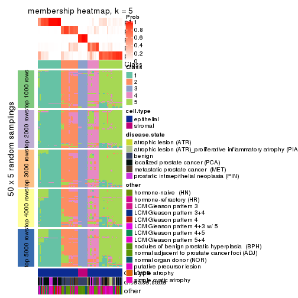
membership_heatmap(res, k = 6)
As soon as we have had the classes for columns, we can look for signatures which are significantly different between classes which can be candidate marks for certain classes. Following are the heatmaps for signatures.
Signature heatmaps where rows are scaled:
get_signatures(res, k = 2)

get_signatures(res, k = 3)
get_signatures(res, k = 4)
get_signatures(res, k = 5)
get_signatures(res, k = 6)
Signature heatmaps where rows are not scaled:
get_signatures(res, k = 2, scale_rows = FALSE)

get_signatures(res, k = 3, scale_rows = FALSE)
get_signatures(res, k = 4, scale_rows = FALSE)
get_signatures(res, k = 5, scale_rows = FALSE)
get_signatures(res, k = 6, scale_rows = FALSE)
Compare the overlap of signatures from different k:
compare_signatures(res)
get_signature() returns a data frame invisibly. TO get the list of signatures, the function
call should be assigned to a variable explicitly. In following code, if plot argument is set
to FALSE, no heatmap is plotted while only the differential analysis is performed.
# code only for demonstration
tb = get_signature(res, k = ..., plot = FALSE)
An example of the output of tb is:
#> which_row fdr mean_1 mean_2 scaled_mean_1 scaled_mean_2 km
#> 1 38 0.042760348 8.373488 9.131774 -0.5533452 0.5164555 1
#> 2 40 0.018707592 7.106213 8.469186 -0.6173731 0.5762149 1
#> 3 55 0.019134737 10.221463 11.207825 -0.6159697 0.5749050 1
#> 4 59 0.006059896 5.921854 7.869574 -0.6899429 0.6439467 1
#> 5 60 0.018055526 8.928898 10.211722 -0.6204761 0.5791110 1
#> 6 98 0.009384629 15.714769 14.887706 0.6635654 -0.6193277 2
...
The columns in tb are:
which_row: row indices corresponding to the input matrix.fdr: FDR for the differential test. mean_x: The mean value in group x.scaled_mean_x: The mean value in group x after rows are scaled.km: Row groups if k-means clustering is applied to rows.UMAP plot which shows how samples are separated.
dimension_reduction(res, k = 2, method = "UMAP")
dimension_reduction(res, k = 3, method = "UMAP")
dimension_reduction(res, k = 4, method = "UMAP")
dimension_reduction(res, k = 5, method = "UMAP")
dimension_reduction(res, k = 6, method = "UMAP")
Following heatmap shows how subgroups are split when increasing k:
collect_classes(res)
Test correlation between subgroups and known annotations. If the known annotation is numeric, one-way ANOVA test is applied, and if the known annotation is discrete, chi-squared contingency table test is applied.
test_to_known_factors(res)
#> n cell.type(p) disease.state(p) other(p) k
#> CV:kmeans 0 NA NA NA 2
#> CV:kmeans 96 1.43e-21 1.48e-08 1.22e-07 3
#> CV:kmeans 63 2.09e-14 2.62e-06 1.10e-04 4
#> CV:kmeans 99 1.61e-20 4.21e-09 5.48e-09 5
#> CV:kmeans 97 4.28e-20 1.09e-08 1.40e-09 6
If matrix rows can be associated to genes, consider to use functional_enrichment(res,
...) to perform function enrichment for the signature genes. See this vignette for more detailed explanations.
The object with results only for a single top-value method and a single partition method can be extracted as:
res = res_list["CV", "skmeans"]
# you can also extract it by
# res = res_list["CV:skmeans"]
A summary of res and all the functions that can be applied to it:
res
#> A 'ConsensusPartition' object with k = 2, 3, 4, 5, 6.
#> On a matrix with 13604 rows and 104 columns.
#> Top rows (1000, 2000, 3000, 4000, 5000) are extracted by 'CV' method.
#> Subgroups are detected by 'skmeans' method.
#> Performed in total 1250 partitions by row resampling.
#> Best k for subgroups seems to be 3.
#>
#> Following methods can be applied to this 'ConsensusPartition' object:
#> [1] "cola_report" "collect_classes" "collect_plots"
#> [4] "collect_stats" "colnames" "compare_signatures"
#> [7] "consensus_heatmap" "dimension_reduction" "functional_enrichment"
#> [10] "get_anno_col" "get_anno" "get_classes"
#> [13] "get_consensus" "get_matrix" "get_membership"
#> [16] "get_param" "get_signatures" "get_stats"
#> [19] "is_best_k" "is_stable_k" "membership_heatmap"
#> [22] "ncol" "nrow" "plot_ecdf"
#> [25] "rownames" "select_partition_number" "show"
#> [28] "suggest_best_k" "test_to_known_factors"
collect_plots() function collects all the plots made from res for all k (number of partitions)
into one single page to provide an easy and fast comparison between different k.
collect_plots(res)
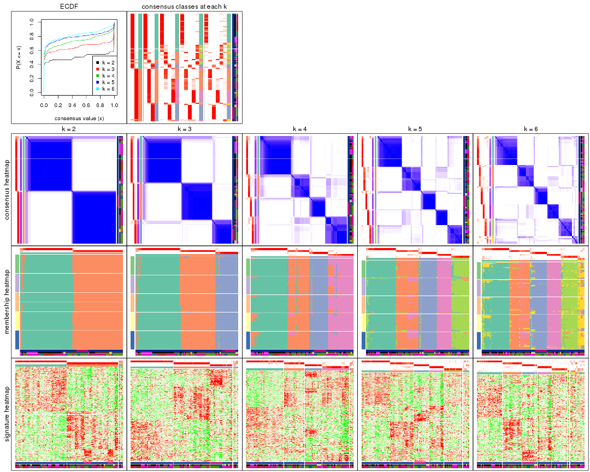
The plots are:
k and the heatmap of
predicted classes for each k.k.k.k.All the plots in panels can be made by individual functions and they are plotted later in this section.
select_partition_number() produces several plots showing different
statistics for choosing “optimized” k. There are following statistics:
k;k, the area increased is defined as \(A_k - A_{k-1}\).The detailed explanations of these statistics can be found in the cola vignette.
Generally speaking, lower PAC score, higher mean silhouette score or higher
concordance corresponds to better partition. Rand index and Jaccard index
measure how similar the current partition is compared to partition with k-1.
If they are too similar, we won't accept k is better than k-1.
select_partition_number(res)
The numeric values for all these statistics can be obtained by get_stats().
get_stats(res)
#> k 1-PAC mean_silhouette concordance area_increased Rand Jaccard
#> 2 2 1.000 0.949 0.980 0.505 0.495 0.495
#> 3 3 0.943 0.913 0.965 0.286 0.784 0.593
#> 4 4 0.829 0.846 0.926 0.136 0.835 0.574
#> 5 5 0.878 0.858 0.923 0.074 0.863 0.545
#> 6 6 0.824 0.763 0.876 0.038 0.969 0.852
suggest_best_k() suggests the best \(k\) based on these statistics. The rules are as follows:
suggest_best_k(res)
#> [1] 3
#> attr(,"optional")
#> [1] 2
There is also optional best \(k\) = 2 that is worth to check.
Following shows the table of the partitions (You need to click the show/hide
code output link to see it). The membership matrix (columns with name p*)
is inferred by
clue::cl_consensus()
function with the SE method. Basically the value in the membership matrix
represents the probability to belong to a certain group. The finall class
label for an item is determined with the group with highest probability it
belongs to.
In get_classes() function, the entropy is calculated from the membership
matrix and the silhouette score is calculated from the consensus matrix.
cbind(get_classes(res, k = 2), get_membership(res, k = 2))
#> class entropy silhouette p1 p2
#> GSM141334 2 0.0938 0.978 0.012 0.988
#> GSM141335 1 0.0376 0.967 0.996 0.004
#> GSM141336 2 0.0000 0.989 0.000 1.000
#> GSM141337 1 0.0000 0.970 1.000 0.000
#> GSM141184 2 0.1414 0.970 0.020 0.980
#> GSM141185 2 0.0000 0.989 0.000 1.000
#> GSM141186 2 0.0000 0.989 0.000 1.000
#> GSM141243 2 0.0000 0.989 0.000 1.000
#> GSM141244 1 0.0000 0.970 1.000 0.000
#> GSM141246 1 0.4022 0.896 0.920 0.080
#> GSM141247 2 0.0000 0.989 0.000 1.000
#> GSM141248 1 0.0000 0.970 1.000 0.000
#> GSM141249 1 0.0000 0.970 1.000 0.000
#> GSM141258 2 0.0000 0.989 0.000 1.000
#> GSM141259 2 0.0000 0.989 0.000 1.000
#> GSM141260 1 0.0000 0.970 1.000 0.000
#> GSM141261 2 0.0000 0.989 0.000 1.000
#> GSM141262 2 0.0000 0.989 0.000 1.000
#> GSM141263 2 0.0000 0.989 0.000 1.000
#> GSM141338 2 0.0000 0.989 0.000 1.000
#> GSM141339 1 0.0000 0.970 1.000 0.000
#> GSM141340 1 0.0000 0.970 1.000 0.000
#> GSM141265 2 0.0000 0.989 0.000 1.000
#> GSM141267 1 0.0000 0.970 1.000 0.000
#> GSM141330 1 0.0000 0.970 1.000 0.000
#> GSM141266 2 0.0000 0.989 0.000 1.000
#> GSM141264 2 0.0000 0.989 0.000 1.000
#> GSM141341 2 0.0000 0.989 0.000 1.000
#> GSM141342 2 0.0000 0.989 0.000 1.000
#> GSM141343 2 0.0000 0.989 0.000 1.000
#> GSM141356 2 0.0000 0.989 0.000 1.000
#> GSM141357 1 0.0000 0.970 1.000 0.000
#> GSM141358 2 0.0000 0.989 0.000 1.000
#> GSM141359 2 0.0000 0.989 0.000 1.000
#> GSM141360 1 0.0000 0.970 1.000 0.000
#> GSM141361 2 0.3733 0.913 0.072 0.928
#> GSM141362 2 0.0000 0.989 0.000 1.000
#> GSM141363 2 0.0000 0.989 0.000 1.000
#> GSM141364 1 0.5294 0.852 0.880 0.120
#> GSM141365 2 0.9866 0.201 0.432 0.568
#> GSM141366 2 0.0000 0.989 0.000 1.000
#> GSM141367 1 0.9732 0.330 0.596 0.404
#> GSM141368 2 0.0000 0.989 0.000 1.000
#> GSM141369 2 0.0000 0.989 0.000 1.000
#> GSM141370 2 0.0000 0.989 0.000 1.000
#> GSM141371 2 0.0000 0.989 0.000 1.000
#> GSM141372 2 0.0000 0.989 0.000 1.000
#> GSM141373 1 0.0000 0.970 1.000 0.000
#> GSM141374 1 0.0000 0.970 1.000 0.000
#> GSM141375 2 0.0000 0.989 0.000 1.000
#> GSM141376 1 0.0000 0.970 1.000 0.000
#> GSM141377 1 0.0000 0.970 1.000 0.000
#> GSM141378 1 0.0000 0.970 1.000 0.000
#> GSM141380 1 0.0000 0.970 1.000 0.000
#> GSM141387 1 0.0000 0.970 1.000 0.000
#> GSM141395 1 0.0000 0.970 1.000 0.000
#> GSM141397 2 0.0000 0.989 0.000 1.000
#> GSM141398 2 0.0000 0.989 0.000 1.000
#> GSM141401 2 0.0000 0.989 0.000 1.000
#> GSM141399 1 0.9866 0.253 0.568 0.432
#> GSM141379 1 0.0000 0.970 1.000 0.000
#> GSM141381 1 0.0000 0.970 1.000 0.000
#> GSM141383 1 0.0000 0.970 1.000 0.000
#> GSM141384 1 0.0000 0.970 1.000 0.000
#> GSM141385 1 0.0000 0.970 1.000 0.000
#> GSM141388 1 0.0000 0.970 1.000 0.000
#> GSM141389 1 0.0000 0.970 1.000 0.000
#> GSM141391 1 0.0000 0.970 1.000 0.000
#> GSM141394 2 0.0000 0.989 0.000 1.000
#> GSM141396 1 0.0000 0.970 1.000 0.000
#> GSM141403 1 0.0000 0.970 1.000 0.000
#> GSM141404 1 0.3584 0.909 0.932 0.068
#> GSM141386 1 0.0000 0.970 1.000 0.000
#> GSM141382 1 0.0000 0.970 1.000 0.000
#> GSM141390 1 0.0000 0.970 1.000 0.000
#> GSM141393 1 0.0000 0.970 1.000 0.000
#> GSM141400 1 0.0000 0.970 1.000 0.000
#> GSM141402 2 0.0000 0.989 0.000 1.000
#> GSM141392 1 0.0000 0.970 1.000 0.000
#> GSM141405 1 0.9686 0.351 0.604 0.396
#> GSM141406 2 0.0000 0.989 0.000 1.000
#> GSM141407 1 0.0000 0.970 1.000 0.000
#> GSM141408 1 0.0000 0.970 1.000 0.000
#> GSM141409 1 0.0000 0.970 1.000 0.000
#> GSM141410 1 0.0000 0.970 1.000 0.000
#> GSM141411 1 0.0000 0.970 1.000 0.000
#> GSM141412 1 0.0000 0.970 1.000 0.000
#> GSM141413 1 0.0000 0.970 1.000 0.000
#> GSM141414 1 0.0000 0.970 1.000 0.000
#> GSM141415 1 0.0000 0.970 1.000 0.000
#> GSM141416 1 0.0000 0.970 1.000 0.000
#> GSM141417 1 0.0000 0.970 1.000 0.000
#> GSM141420 2 0.0000 0.989 0.000 1.000
#> GSM141421 2 0.0376 0.985 0.004 0.996
#> GSM141422 2 0.0000 0.989 0.000 1.000
#> GSM141423 2 0.0000 0.989 0.000 1.000
#> GSM141424 2 0.0000 0.989 0.000 1.000
#> GSM141427 2 0.0000 0.989 0.000 1.000
#> GSM141428 2 0.0000 0.989 0.000 1.000
#> GSM141418 2 0.0000 0.989 0.000 1.000
#> GSM141419 2 0.0000 0.989 0.000 1.000
#> GSM141425 2 0.0000 0.989 0.000 1.000
#> GSM141426 2 0.0000 0.989 0.000 1.000
#> GSM141429 2 0.0000 0.989 0.000 1.000
cbind(get_classes(res, k = 3), get_membership(res, k = 3))
#> class entropy silhouette p1 p2 p3
#> GSM141334 2 0.0000 0.97814 0.000 1.000 0.000
#> GSM141335 1 0.6291 0.15369 0.532 0.468 0.000
#> GSM141336 2 0.0000 0.97814 0.000 1.000 0.000
#> GSM141337 1 0.0000 0.95239 1.000 0.000 0.000
#> GSM141184 2 0.0000 0.97814 0.000 1.000 0.000
#> GSM141185 2 0.0000 0.97814 0.000 1.000 0.000
#> GSM141186 2 0.0000 0.97814 0.000 1.000 0.000
#> GSM141243 2 0.0000 0.97814 0.000 1.000 0.000
#> GSM141244 2 0.1031 0.95654 0.024 0.976 0.000
#> GSM141246 3 0.4700 0.77261 0.180 0.008 0.812
#> GSM141247 2 0.0000 0.97814 0.000 1.000 0.000
#> GSM141248 1 0.0000 0.95239 1.000 0.000 0.000
#> GSM141249 1 0.0000 0.95239 1.000 0.000 0.000
#> GSM141258 2 0.0000 0.97814 0.000 1.000 0.000
#> GSM141259 2 0.0237 0.97661 0.000 0.996 0.004
#> GSM141260 1 0.1989 0.90683 0.948 0.048 0.004
#> GSM141261 2 0.0000 0.97814 0.000 1.000 0.000
#> GSM141262 2 0.0000 0.97814 0.000 1.000 0.000
#> GSM141263 2 0.0237 0.97661 0.000 0.996 0.004
#> GSM141338 2 0.0000 0.97814 0.000 1.000 0.000
#> GSM141339 1 0.4291 0.76525 0.820 0.180 0.000
#> GSM141340 1 0.0000 0.95239 1.000 0.000 0.000
#> GSM141265 3 0.0000 0.94938 0.000 0.000 1.000
#> GSM141267 3 0.1289 0.93052 0.032 0.000 0.968
#> GSM141330 3 0.0000 0.94938 0.000 0.000 1.000
#> GSM141266 2 0.0237 0.97661 0.000 0.996 0.004
#> GSM141264 3 0.0000 0.94938 0.000 0.000 1.000
#> GSM141341 2 0.1031 0.96274 0.000 0.976 0.024
#> GSM141342 2 0.1031 0.96274 0.000 0.976 0.024
#> GSM141343 2 0.0592 0.97152 0.000 0.988 0.012
#> GSM141356 3 0.2066 0.90789 0.000 0.060 0.940
#> GSM141357 1 0.0000 0.95239 1.000 0.000 0.000
#> GSM141358 2 0.0000 0.97814 0.000 1.000 0.000
#> GSM141359 2 0.0000 0.97814 0.000 1.000 0.000
#> GSM141360 1 0.0000 0.95239 1.000 0.000 0.000
#> GSM141361 3 0.0592 0.94282 0.000 0.012 0.988
#> GSM141362 2 0.0000 0.97814 0.000 1.000 0.000
#> GSM141363 2 0.0000 0.97814 0.000 1.000 0.000
#> GSM141364 1 0.8519 0.20514 0.508 0.396 0.096
#> GSM141365 3 0.0424 0.94560 0.008 0.000 0.992
#> GSM141366 2 0.0237 0.97661 0.000 0.996 0.004
#> GSM141367 3 0.4555 0.76057 0.200 0.000 0.800
#> GSM141368 2 0.0237 0.97661 0.000 0.996 0.004
#> GSM141369 2 0.0000 0.97814 0.000 1.000 0.000
#> GSM141370 2 0.0000 0.97814 0.000 1.000 0.000
#> GSM141371 2 0.0000 0.97814 0.000 1.000 0.000
#> GSM141372 2 0.0000 0.97814 0.000 1.000 0.000
#> GSM141373 1 0.0000 0.95239 1.000 0.000 0.000
#> GSM141374 1 0.0000 0.95239 1.000 0.000 0.000
#> GSM141375 2 0.1031 0.96274 0.000 0.976 0.024
#> GSM141376 1 0.0000 0.95239 1.000 0.000 0.000
#> GSM141377 1 0.0000 0.95239 1.000 0.000 0.000
#> GSM141378 1 0.0000 0.95239 1.000 0.000 0.000
#> GSM141380 1 0.0000 0.95239 1.000 0.000 0.000
#> GSM141387 1 0.0000 0.95239 1.000 0.000 0.000
#> GSM141395 1 0.0000 0.95239 1.000 0.000 0.000
#> GSM141397 2 0.2261 0.91890 0.000 0.932 0.068
#> GSM141398 2 0.0000 0.97814 0.000 1.000 0.000
#> GSM141401 2 0.0000 0.97814 0.000 1.000 0.000
#> GSM141399 2 0.6225 0.17711 0.432 0.568 0.000
#> GSM141379 1 0.0000 0.95239 1.000 0.000 0.000
#> GSM141381 1 0.0000 0.95239 1.000 0.000 0.000
#> GSM141383 1 0.0000 0.95239 1.000 0.000 0.000
#> GSM141384 1 0.0000 0.95239 1.000 0.000 0.000
#> GSM141385 1 0.0000 0.95239 1.000 0.000 0.000
#> GSM141388 1 0.0000 0.95239 1.000 0.000 0.000
#> GSM141389 1 0.0000 0.95239 1.000 0.000 0.000
#> GSM141391 1 0.0000 0.95239 1.000 0.000 0.000
#> GSM141394 3 0.5882 0.48391 0.000 0.348 0.652
#> GSM141396 1 0.0000 0.95239 1.000 0.000 0.000
#> GSM141403 1 0.3551 0.82278 0.868 0.132 0.000
#> GSM141404 2 0.0592 0.96819 0.012 0.988 0.000
#> GSM141386 1 0.0000 0.95239 1.000 0.000 0.000
#> GSM141382 1 0.0000 0.95239 1.000 0.000 0.000
#> GSM141390 1 0.0000 0.95239 1.000 0.000 0.000
#> GSM141393 1 0.0000 0.95239 1.000 0.000 0.000
#> GSM141400 1 0.0000 0.95239 1.000 0.000 0.000
#> GSM141402 2 0.0000 0.97814 0.000 1.000 0.000
#> GSM141392 3 0.4750 0.74094 0.216 0.000 0.784
#> GSM141405 1 0.6955 0.00474 0.492 0.492 0.016
#> GSM141406 2 0.0892 0.96585 0.000 0.980 0.020
#> GSM141407 1 0.0000 0.95239 1.000 0.000 0.000
#> GSM141408 1 0.0000 0.95239 1.000 0.000 0.000
#> GSM141409 1 0.0000 0.95239 1.000 0.000 0.000
#> GSM141410 1 0.0000 0.95239 1.000 0.000 0.000
#> GSM141411 1 0.0000 0.95239 1.000 0.000 0.000
#> GSM141412 1 0.0000 0.95239 1.000 0.000 0.000
#> GSM141413 1 0.0000 0.95239 1.000 0.000 0.000
#> GSM141414 1 0.0000 0.95239 1.000 0.000 0.000
#> GSM141415 1 0.0000 0.95239 1.000 0.000 0.000
#> GSM141416 1 0.1529 0.91782 0.960 0.040 0.000
#> GSM141417 1 0.0000 0.95239 1.000 0.000 0.000
#> GSM141420 3 0.0000 0.94938 0.000 0.000 1.000
#> GSM141421 3 0.0000 0.94938 0.000 0.000 1.000
#> GSM141422 3 0.0000 0.94938 0.000 0.000 1.000
#> GSM141423 3 0.0000 0.94938 0.000 0.000 1.000
#> GSM141424 3 0.0000 0.94938 0.000 0.000 1.000
#> GSM141427 3 0.0000 0.94938 0.000 0.000 1.000
#> GSM141428 3 0.0000 0.94938 0.000 0.000 1.000
#> GSM141418 3 0.0592 0.94270 0.000 0.012 0.988
#> GSM141419 3 0.0000 0.94938 0.000 0.000 1.000
#> GSM141425 3 0.0000 0.94938 0.000 0.000 1.000
#> GSM141426 3 0.0000 0.94938 0.000 0.000 1.000
#> GSM141429 3 0.0000 0.94938 0.000 0.000 1.000
cbind(get_classes(res, k = 4), get_membership(res, k = 4))
#> class entropy silhouette p1 p2 p3 p4
#> GSM141334 2 0.0000 0.8614 0.000 1.000 0.000 0.000
#> GSM141335 2 0.0188 0.8614 0.004 0.996 0.000 0.000
#> GSM141336 2 0.2530 0.8254 0.000 0.888 0.000 0.112
#> GSM141337 1 0.4522 0.5843 0.680 0.320 0.000 0.000
#> GSM141184 2 0.0592 0.8590 0.000 0.984 0.000 0.016
#> GSM141185 2 0.1118 0.8600 0.000 0.964 0.000 0.036
#> GSM141186 4 0.0921 0.8850 0.000 0.028 0.000 0.972
#> GSM141243 4 0.1792 0.8721 0.000 0.068 0.000 0.932
#> GSM141244 2 0.0657 0.8593 0.004 0.984 0.000 0.012
#> GSM141246 2 0.4817 0.3070 0.000 0.612 0.388 0.000
#> GSM141247 2 0.2530 0.8254 0.000 0.888 0.000 0.112
#> GSM141248 2 0.4164 0.5724 0.264 0.736 0.000 0.000
#> GSM141249 1 0.0469 0.9460 0.988 0.012 0.000 0.000
#> GSM141258 2 0.1022 0.8609 0.000 0.968 0.000 0.032
#> GSM141259 4 0.0000 0.8906 0.000 0.000 0.000 1.000
#> GSM141260 2 0.6598 0.5820 0.228 0.660 0.024 0.088
#> GSM141261 4 0.2011 0.8663 0.000 0.080 0.000 0.920
#> GSM141262 2 0.2530 0.8254 0.000 0.888 0.000 0.112
#> GSM141263 4 0.0000 0.8906 0.000 0.000 0.000 1.000
#> GSM141338 2 0.2530 0.8254 0.000 0.888 0.000 0.112
#> GSM141339 2 0.0188 0.8614 0.004 0.996 0.000 0.000
#> GSM141340 1 0.3266 0.8097 0.832 0.168 0.000 0.000
#> GSM141265 3 0.0817 0.9114 0.000 0.000 0.976 0.024
#> GSM141267 3 0.2546 0.8581 0.028 0.060 0.912 0.000
#> GSM141330 3 0.0000 0.9282 0.000 0.000 1.000 0.000
#> GSM141266 4 0.0000 0.8906 0.000 0.000 0.000 1.000
#> GSM141264 3 0.0000 0.9282 0.000 0.000 1.000 0.000
#> GSM141341 4 0.0000 0.8906 0.000 0.000 0.000 1.000
#> GSM141342 4 0.0000 0.8906 0.000 0.000 0.000 1.000
#> GSM141343 4 0.0000 0.8906 0.000 0.000 0.000 1.000
#> GSM141356 3 0.5277 0.0971 0.000 0.460 0.532 0.008
#> GSM141357 1 0.0000 0.9518 1.000 0.000 0.000 0.000
#> GSM141358 4 0.4250 0.7001 0.000 0.276 0.000 0.724
#> GSM141359 4 0.4250 0.7001 0.000 0.276 0.000 0.724
#> GSM141360 1 0.0000 0.9518 1.000 0.000 0.000 0.000
#> GSM141361 4 0.5003 0.5431 0.016 0.000 0.308 0.676
#> GSM141362 4 0.4277 0.6941 0.000 0.280 0.000 0.720
#> GSM141363 2 0.2868 0.7974 0.000 0.864 0.000 0.136
#> GSM141364 2 0.1284 0.8617 0.012 0.964 0.000 0.024
#> GSM141365 3 0.4919 0.7246 0.152 0.000 0.772 0.076
#> GSM141366 4 0.0000 0.8906 0.000 0.000 0.000 1.000
#> GSM141367 4 0.3474 0.7934 0.068 0.000 0.064 0.868
#> GSM141368 4 0.0000 0.8906 0.000 0.000 0.000 1.000
#> GSM141369 4 0.1474 0.8784 0.000 0.052 0.000 0.948
#> GSM141370 4 0.4250 0.7000 0.000 0.276 0.000 0.724
#> GSM141371 4 0.4250 0.7000 0.000 0.276 0.000 0.724
#> GSM141372 4 0.4250 0.7000 0.000 0.276 0.000 0.724
#> GSM141373 1 0.2530 0.8687 0.888 0.112 0.000 0.000
#> GSM141374 1 0.0000 0.9518 1.000 0.000 0.000 0.000
#> GSM141375 4 0.0000 0.8906 0.000 0.000 0.000 1.000
#> GSM141376 1 0.0000 0.9518 1.000 0.000 0.000 0.000
#> GSM141377 1 0.0000 0.9518 1.000 0.000 0.000 0.000
#> GSM141378 1 0.0000 0.9518 1.000 0.000 0.000 0.000
#> GSM141380 1 0.0000 0.9518 1.000 0.000 0.000 0.000
#> GSM141387 1 0.0000 0.9518 1.000 0.000 0.000 0.000
#> GSM141395 1 0.0817 0.9391 0.976 0.024 0.000 0.000
#> GSM141397 4 0.0000 0.8906 0.000 0.000 0.000 1.000
#> GSM141398 2 0.2530 0.8254 0.000 0.888 0.000 0.112
#> GSM141401 4 0.0000 0.8906 0.000 0.000 0.000 1.000
#> GSM141399 2 0.0000 0.8614 0.000 1.000 0.000 0.000
#> GSM141379 1 0.0000 0.9518 1.000 0.000 0.000 0.000
#> GSM141381 1 0.0000 0.9518 1.000 0.000 0.000 0.000
#> GSM141383 1 0.0000 0.9518 1.000 0.000 0.000 0.000
#> GSM141384 1 0.0000 0.9518 1.000 0.000 0.000 0.000
#> GSM141385 1 0.0188 0.9500 0.996 0.004 0.000 0.000
#> GSM141388 1 0.0000 0.9518 1.000 0.000 0.000 0.000
#> GSM141389 1 0.0000 0.9518 1.000 0.000 0.000 0.000
#> GSM141391 1 0.0000 0.9518 1.000 0.000 0.000 0.000
#> GSM141394 2 0.1792 0.8268 0.000 0.932 0.068 0.000
#> GSM141396 1 0.0336 0.9482 0.992 0.008 0.000 0.000
#> GSM141403 2 0.5313 0.3144 0.376 0.608 0.000 0.016
#> GSM141404 2 0.2216 0.8370 0.000 0.908 0.000 0.092
#> GSM141386 1 0.1211 0.9286 0.960 0.040 0.000 0.000
#> GSM141382 1 0.0000 0.9518 1.000 0.000 0.000 0.000
#> GSM141390 1 0.0000 0.9518 1.000 0.000 0.000 0.000
#> GSM141393 1 0.0000 0.9518 1.000 0.000 0.000 0.000
#> GSM141400 1 0.0000 0.9518 1.000 0.000 0.000 0.000
#> GSM141402 4 0.1940 0.8685 0.000 0.076 0.000 0.924
#> GSM141392 3 0.4661 0.4633 0.348 0.000 0.652 0.000
#> GSM141405 4 0.1792 0.8362 0.068 0.000 0.000 0.932
#> GSM141406 4 0.0000 0.8906 0.000 0.000 0.000 1.000
#> GSM141407 1 0.0000 0.9518 1.000 0.000 0.000 0.000
#> GSM141408 1 0.0000 0.9518 1.000 0.000 0.000 0.000
#> GSM141409 1 0.4277 0.6550 0.720 0.280 0.000 0.000
#> GSM141410 1 0.0000 0.9518 1.000 0.000 0.000 0.000
#> GSM141411 1 0.0336 0.9482 0.992 0.008 0.000 0.000
#> GSM141412 1 0.0000 0.9518 1.000 0.000 0.000 0.000
#> GSM141413 1 0.4564 0.5682 0.672 0.328 0.000 0.000
#> GSM141414 1 0.4454 0.6069 0.692 0.308 0.000 0.000
#> GSM141415 1 0.0000 0.9518 1.000 0.000 0.000 0.000
#> GSM141416 2 0.0188 0.8614 0.004 0.996 0.000 0.000
#> GSM141417 1 0.1557 0.9167 0.944 0.056 0.000 0.000
#> GSM141420 3 0.0000 0.9282 0.000 0.000 1.000 0.000
#> GSM141421 3 0.0000 0.9282 0.000 0.000 1.000 0.000
#> GSM141422 3 0.0000 0.9282 0.000 0.000 1.000 0.000
#> GSM141423 3 0.0000 0.9282 0.000 0.000 1.000 0.000
#> GSM141424 3 0.0000 0.9282 0.000 0.000 1.000 0.000
#> GSM141427 3 0.0000 0.9282 0.000 0.000 1.000 0.000
#> GSM141428 3 0.0000 0.9282 0.000 0.000 1.000 0.000
#> GSM141418 3 0.0000 0.9282 0.000 0.000 1.000 0.000
#> GSM141419 3 0.0000 0.9282 0.000 0.000 1.000 0.000
#> GSM141425 3 0.0000 0.9282 0.000 0.000 1.000 0.000
#> GSM141426 3 0.0000 0.9282 0.000 0.000 1.000 0.000
#> GSM141429 3 0.0000 0.9282 0.000 0.000 1.000 0.000
cbind(get_classes(res, k = 5), get_membership(res, k = 5))
#> class entropy silhouette p1 p2 p3 p4 p5
#> GSM141334 2 0.3508 0.63687 0.000 0.748 0.000 0.000 0.252
#> GSM141335 5 0.0963 0.91159 0.000 0.036 0.000 0.000 0.964
#> GSM141336 2 0.1522 0.86329 0.000 0.944 0.000 0.012 0.044
#> GSM141337 5 0.1270 0.90877 0.052 0.000 0.000 0.000 0.948
#> GSM141184 5 0.1282 0.90906 0.000 0.044 0.000 0.004 0.952
#> GSM141185 2 0.1484 0.86140 0.000 0.944 0.000 0.008 0.048
#> GSM141186 2 0.4182 0.53903 0.000 0.600 0.000 0.400 0.000
#> GSM141243 2 0.3561 0.76619 0.000 0.740 0.000 0.260 0.000
#> GSM141244 5 0.1410 0.90279 0.000 0.060 0.000 0.000 0.940
#> GSM141246 5 0.0771 0.91059 0.000 0.004 0.020 0.000 0.976
#> GSM141247 2 0.1522 0.86329 0.000 0.944 0.000 0.012 0.044
#> GSM141248 5 0.1012 0.91591 0.012 0.020 0.000 0.000 0.968
#> GSM141249 1 0.2773 0.78272 0.836 0.000 0.000 0.000 0.164
#> GSM141258 2 0.1484 0.86140 0.000 0.944 0.000 0.008 0.048
#> GSM141259 4 0.0162 0.95326 0.000 0.004 0.000 0.996 0.000
#> GSM141260 5 0.3641 0.84327 0.076 0.020 0.000 0.060 0.844
#> GSM141261 2 0.3586 0.76231 0.000 0.736 0.000 0.264 0.000
#> GSM141262 2 0.1522 0.86329 0.000 0.944 0.000 0.012 0.044
#> GSM141263 4 0.0162 0.95326 0.000 0.004 0.000 0.996 0.000
#> GSM141338 2 0.1364 0.86406 0.000 0.952 0.000 0.012 0.036
#> GSM141339 5 0.1544 0.89785 0.000 0.068 0.000 0.000 0.932
#> GSM141340 5 0.2536 0.86339 0.128 0.004 0.000 0.000 0.868
#> GSM141265 3 0.0510 0.90164 0.000 0.000 0.984 0.016 0.000
#> GSM141267 3 0.4437 0.46381 0.020 0.000 0.664 0.000 0.316
#> GSM141330 3 0.0000 0.91306 0.000 0.000 1.000 0.000 0.000
#> GSM141266 4 0.0162 0.95326 0.000 0.004 0.000 0.996 0.000
#> GSM141264 3 0.0290 0.90772 0.000 0.000 0.992 0.008 0.000
#> GSM141341 4 0.0162 0.95326 0.000 0.004 0.000 0.996 0.000
#> GSM141342 4 0.0162 0.95326 0.000 0.004 0.000 0.996 0.000
#> GSM141343 4 0.0162 0.95326 0.000 0.004 0.000 0.996 0.000
#> GSM141356 2 0.2678 0.78693 0.000 0.880 0.100 0.004 0.016
#> GSM141357 1 0.1978 0.90859 0.928 0.044 0.000 0.004 0.024
#> GSM141358 2 0.2424 0.85334 0.000 0.868 0.000 0.132 0.000
#> GSM141359 2 0.2690 0.84776 0.000 0.844 0.000 0.156 0.000
#> GSM141360 1 0.1978 0.90881 0.928 0.044 0.000 0.004 0.024
#> GSM141361 4 0.8641 0.16084 0.124 0.200 0.268 0.384 0.024
#> GSM141362 2 0.2605 0.85078 0.000 0.852 0.000 0.148 0.000
#> GSM141363 2 0.1012 0.86356 0.000 0.968 0.000 0.012 0.020
#> GSM141364 2 0.0771 0.85039 0.000 0.976 0.000 0.004 0.020
#> GSM141365 3 0.7621 0.30924 0.180 0.048 0.500 0.252 0.020
#> GSM141366 4 0.0162 0.95326 0.000 0.004 0.000 0.996 0.000
#> GSM141367 4 0.1393 0.91146 0.024 0.008 0.012 0.956 0.000
#> GSM141368 4 0.0162 0.95326 0.000 0.004 0.000 0.996 0.000
#> GSM141369 2 0.3774 0.72176 0.000 0.704 0.000 0.296 0.000
#> GSM141370 2 0.2732 0.84588 0.000 0.840 0.000 0.160 0.000
#> GSM141371 2 0.2773 0.84418 0.000 0.836 0.000 0.164 0.000
#> GSM141372 2 0.2648 0.85002 0.000 0.848 0.000 0.152 0.000
#> GSM141373 5 0.3480 0.69353 0.248 0.000 0.000 0.000 0.752
#> GSM141374 1 0.0000 0.95154 1.000 0.000 0.000 0.000 0.000
#> GSM141375 4 0.0162 0.95326 0.000 0.004 0.000 0.996 0.000
#> GSM141376 1 0.0000 0.95154 1.000 0.000 0.000 0.000 0.000
#> GSM141377 1 0.0162 0.95104 0.996 0.000 0.000 0.000 0.004
#> GSM141378 1 0.0404 0.94799 0.988 0.000 0.000 0.000 0.012
#> GSM141380 1 0.0000 0.95154 1.000 0.000 0.000 0.000 0.000
#> GSM141387 1 0.0000 0.95154 1.000 0.000 0.000 0.000 0.000
#> GSM141395 1 0.4273 0.15764 0.552 0.000 0.000 0.000 0.448
#> GSM141397 4 0.0162 0.95326 0.000 0.004 0.000 0.996 0.000
#> GSM141398 2 0.1522 0.86329 0.000 0.944 0.000 0.012 0.044
#> GSM141401 4 0.0162 0.95326 0.000 0.004 0.000 0.996 0.000
#> GSM141399 5 0.0609 0.91411 0.000 0.020 0.000 0.000 0.980
#> GSM141379 1 0.0000 0.95154 1.000 0.000 0.000 0.000 0.000
#> GSM141381 1 0.0162 0.95104 0.996 0.000 0.000 0.000 0.004
#> GSM141383 1 0.0162 0.95104 0.996 0.000 0.000 0.000 0.004
#> GSM141384 1 0.0000 0.95154 1.000 0.000 0.000 0.000 0.000
#> GSM141385 1 0.1579 0.92462 0.944 0.024 0.000 0.000 0.032
#> GSM141388 1 0.0162 0.95104 0.996 0.000 0.000 0.000 0.004
#> GSM141389 1 0.0162 0.95104 0.996 0.000 0.000 0.000 0.004
#> GSM141391 1 0.0404 0.94799 0.988 0.000 0.000 0.000 0.012
#> GSM141394 5 0.0693 0.91368 0.000 0.012 0.008 0.000 0.980
#> GSM141396 1 0.0880 0.93728 0.968 0.000 0.000 0.000 0.032
#> GSM141403 5 0.1990 0.89147 0.004 0.068 0.000 0.008 0.920
#> GSM141404 2 0.0451 0.85383 0.000 0.988 0.000 0.004 0.008
#> GSM141386 1 0.4150 0.36182 0.612 0.000 0.000 0.000 0.388
#> GSM141382 1 0.0000 0.95154 1.000 0.000 0.000 0.000 0.000
#> GSM141390 1 0.0290 0.95020 0.992 0.000 0.000 0.000 0.008
#> GSM141393 1 0.0162 0.95058 0.996 0.000 0.000 0.000 0.004
#> GSM141400 1 0.0162 0.95058 0.996 0.000 0.000 0.000 0.004
#> GSM141402 2 0.3336 0.79685 0.000 0.772 0.000 0.228 0.000
#> GSM141392 3 0.4451 0.00714 0.492 0.000 0.504 0.000 0.004
#> GSM141405 4 0.0609 0.93264 0.020 0.000 0.000 0.980 0.000
#> GSM141406 4 0.0162 0.95326 0.000 0.004 0.000 0.996 0.000
#> GSM141407 1 0.0162 0.95074 0.996 0.000 0.000 0.000 0.004
#> GSM141408 1 0.0000 0.95154 1.000 0.000 0.000 0.000 0.000
#> GSM141409 5 0.1341 0.90624 0.056 0.000 0.000 0.000 0.944
#> GSM141410 1 0.0162 0.95074 0.996 0.000 0.000 0.000 0.004
#> GSM141411 1 0.1270 0.92066 0.948 0.000 0.000 0.000 0.052
#> GSM141412 1 0.0162 0.95074 0.996 0.000 0.000 0.000 0.004
#> GSM141413 5 0.1270 0.90853 0.052 0.000 0.000 0.000 0.948
#> GSM141414 5 0.1270 0.90853 0.052 0.000 0.000 0.000 0.948
#> GSM141415 1 0.0162 0.95074 0.996 0.000 0.000 0.000 0.004
#> GSM141416 5 0.0880 0.91248 0.000 0.032 0.000 0.000 0.968
#> GSM141417 5 0.3707 0.64236 0.284 0.000 0.000 0.000 0.716
#> GSM141420 3 0.0000 0.91306 0.000 0.000 1.000 0.000 0.000
#> GSM141421 3 0.0000 0.91306 0.000 0.000 1.000 0.000 0.000
#> GSM141422 3 0.0000 0.91306 0.000 0.000 1.000 0.000 0.000
#> GSM141423 3 0.0000 0.91306 0.000 0.000 1.000 0.000 0.000
#> GSM141424 3 0.0000 0.91306 0.000 0.000 1.000 0.000 0.000
#> GSM141427 3 0.0000 0.91306 0.000 0.000 1.000 0.000 0.000
#> GSM141428 3 0.0000 0.91306 0.000 0.000 1.000 0.000 0.000
#> GSM141418 3 0.0162 0.91012 0.000 0.004 0.996 0.000 0.000
#> GSM141419 3 0.0000 0.91306 0.000 0.000 1.000 0.000 0.000
#> GSM141425 3 0.0000 0.91306 0.000 0.000 1.000 0.000 0.000
#> GSM141426 3 0.0000 0.91306 0.000 0.000 1.000 0.000 0.000
#> GSM141429 3 0.0000 0.91306 0.000 0.000 1.000 0.000 0.000
cbind(get_classes(res, k = 6), get_membership(res, k = 6))
#> class entropy silhouette p1 p2 p3 p4 p5 p6
#> GSM141334 2 0.3741 0.3830 0.000 0.672 0.000 0.000 0.320 0.008
#> GSM141335 5 0.0935 0.8282 0.000 0.032 0.000 0.000 0.964 0.004
#> GSM141336 2 0.0622 0.8199 0.000 0.980 0.000 0.000 0.012 0.008
#> GSM141337 5 0.0622 0.8299 0.012 0.000 0.000 0.000 0.980 0.008
#> GSM141184 5 0.2619 0.8057 0.000 0.040 0.000 0.008 0.880 0.072
#> GSM141185 2 0.0806 0.8163 0.000 0.972 0.000 0.000 0.020 0.008
#> GSM141186 2 0.4283 0.4979 0.000 0.592 0.000 0.384 0.000 0.024
#> GSM141243 2 0.3315 0.7682 0.000 0.780 0.000 0.200 0.000 0.020
#> GSM141244 5 0.3428 0.7848 0.008 0.052 0.000 0.008 0.832 0.100
#> GSM141246 5 0.2006 0.8081 0.000 0.000 0.004 0.000 0.892 0.104
#> GSM141247 2 0.0622 0.8199 0.000 0.980 0.000 0.000 0.012 0.008
#> GSM141248 5 0.1257 0.8293 0.000 0.028 0.000 0.000 0.952 0.020
#> GSM141249 1 0.3455 0.7173 0.784 0.000 0.000 0.000 0.180 0.036
#> GSM141258 2 0.0806 0.8163 0.000 0.972 0.000 0.000 0.020 0.008
#> GSM141259 4 0.0260 0.9767 0.000 0.000 0.000 0.992 0.000 0.008
#> GSM141260 5 0.6370 0.5275 0.124 0.020 0.000 0.088 0.612 0.156
#> GSM141261 2 0.3261 0.7698 0.000 0.780 0.000 0.204 0.000 0.016
#> GSM141262 2 0.0622 0.8199 0.000 0.980 0.000 0.000 0.012 0.008
#> GSM141263 4 0.0363 0.9765 0.000 0.000 0.000 0.988 0.000 0.012
#> GSM141338 2 0.0508 0.8205 0.000 0.984 0.000 0.000 0.012 0.004
#> GSM141339 5 0.1806 0.8001 0.000 0.088 0.000 0.000 0.908 0.004
#> GSM141340 5 0.2704 0.7358 0.140 0.000 0.000 0.000 0.844 0.016
#> GSM141265 3 0.3224 0.7840 0.000 0.000 0.824 0.040 0.004 0.132
#> GSM141267 3 0.6217 0.3051 0.036 0.004 0.516 0.000 0.312 0.132
#> GSM141330 3 0.2442 0.8047 0.000 0.000 0.852 0.000 0.004 0.144
#> GSM141266 4 0.0363 0.9765 0.000 0.000 0.000 0.988 0.000 0.012
#> GSM141264 3 0.2723 0.8090 0.000 0.000 0.856 0.020 0.004 0.120
#> GSM141341 4 0.0363 0.9752 0.000 0.000 0.000 0.988 0.000 0.012
#> GSM141342 4 0.0777 0.9720 0.000 0.004 0.000 0.972 0.000 0.024
#> GSM141343 4 0.0603 0.9745 0.000 0.004 0.000 0.980 0.000 0.016
#> GSM141356 6 0.5166 0.3013 0.000 0.384 0.092 0.000 0.000 0.524
#> GSM141357 6 0.3835 0.4487 0.320 0.000 0.000 0.000 0.012 0.668
#> GSM141358 2 0.3356 0.7910 0.000 0.808 0.000 0.052 0.000 0.140
#> GSM141359 2 0.2956 0.8243 0.000 0.848 0.000 0.088 0.000 0.064
#> GSM141360 6 0.3383 0.4737 0.268 0.000 0.000 0.000 0.004 0.728
#> GSM141361 6 0.2627 0.5869 0.008 0.032 0.016 0.052 0.000 0.892
#> GSM141362 2 0.2846 0.8255 0.000 0.856 0.000 0.084 0.000 0.060
#> GSM141363 2 0.0146 0.8222 0.000 0.996 0.000 0.000 0.000 0.004
#> GSM141364 6 0.4564 0.2296 0.004 0.432 0.004 0.000 0.020 0.540
#> GSM141365 6 0.4332 0.5586 0.036 0.000 0.144 0.060 0.000 0.760
#> GSM141366 4 0.0891 0.9686 0.000 0.008 0.000 0.968 0.000 0.024
#> GSM141367 4 0.1864 0.9278 0.032 0.000 0.004 0.924 0.000 0.040
#> GSM141368 4 0.0891 0.9686 0.000 0.008 0.000 0.968 0.000 0.024
#> GSM141369 2 0.3867 0.7553 0.000 0.748 0.000 0.200 0.000 0.052
#> GSM141370 2 0.2937 0.8243 0.000 0.848 0.000 0.096 0.000 0.056
#> GSM141371 2 0.2937 0.8243 0.000 0.848 0.000 0.096 0.000 0.056
#> GSM141372 2 0.2826 0.8264 0.000 0.856 0.000 0.092 0.000 0.052
#> GSM141373 5 0.5394 0.3916 0.156 0.000 0.000 0.000 0.568 0.276
#> GSM141374 1 0.0909 0.8661 0.968 0.000 0.000 0.000 0.012 0.020
#> GSM141375 4 0.0363 0.9752 0.000 0.000 0.000 0.988 0.000 0.012
#> GSM141376 1 0.0547 0.8682 0.980 0.000 0.000 0.000 0.000 0.020
#> GSM141377 1 0.0865 0.8678 0.964 0.000 0.000 0.000 0.000 0.036
#> GSM141378 1 0.3284 0.7505 0.784 0.000 0.000 0.000 0.020 0.196
#> GSM141380 1 0.0146 0.8712 0.996 0.000 0.000 0.000 0.000 0.004
#> GSM141387 1 0.0260 0.8708 0.992 0.000 0.000 0.000 0.000 0.008
#> GSM141395 1 0.6085 0.0561 0.392 0.000 0.000 0.000 0.320 0.288
#> GSM141397 4 0.0632 0.9672 0.000 0.000 0.000 0.976 0.000 0.024
#> GSM141398 2 0.0622 0.8199 0.000 0.980 0.000 0.000 0.012 0.008
#> GSM141401 4 0.0146 0.9763 0.000 0.000 0.000 0.996 0.004 0.000
#> GSM141399 5 0.1480 0.8287 0.000 0.020 0.000 0.000 0.940 0.040
#> GSM141379 1 0.0146 0.8711 0.996 0.000 0.000 0.000 0.000 0.004
#> GSM141381 1 0.0260 0.8704 0.992 0.000 0.000 0.000 0.000 0.008
#> GSM141383 1 0.0260 0.8704 0.992 0.000 0.000 0.000 0.000 0.008
#> GSM141384 1 0.0146 0.8711 0.996 0.000 0.000 0.000 0.000 0.004
#> GSM141385 1 0.4517 0.0535 0.524 0.000 0.000 0.000 0.032 0.444
#> GSM141388 1 0.0363 0.8698 0.988 0.000 0.000 0.000 0.000 0.012
#> GSM141389 1 0.0260 0.8708 0.992 0.000 0.000 0.000 0.000 0.008
#> GSM141391 1 0.2581 0.8105 0.856 0.000 0.000 0.000 0.016 0.128
#> GSM141394 5 0.2536 0.8031 0.000 0.020 0.000 0.000 0.864 0.116
#> GSM141396 1 0.3916 0.7229 0.752 0.000 0.000 0.000 0.064 0.184
#> GSM141403 6 0.4226 -0.1695 0.000 0.008 0.000 0.004 0.484 0.504
#> GSM141404 2 0.2553 0.7017 0.000 0.848 0.000 0.000 0.008 0.144
#> GSM141386 1 0.5911 0.2032 0.456 0.000 0.000 0.000 0.316 0.228
#> GSM141382 1 0.0146 0.8711 0.996 0.000 0.000 0.000 0.000 0.004
#> GSM141390 1 0.1644 0.8457 0.920 0.000 0.000 0.000 0.004 0.076
#> GSM141393 1 0.2581 0.8082 0.856 0.000 0.000 0.000 0.016 0.128
#> GSM141400 1 0.2896 0.7852 0.824 0.000 0.000 0.000 0.016 0.160
#> GSM141402 2 0.3516 0.7871 0.000 0.788 0.000 0.164 0.000 0.048
#> GSM141392 3 0.6023 -0.0568 0.400 0.000 0.412 0.000 0.008 0.180
#> GSM141405 4 0.1003 0.9551 0.020 0.000 0.000 0.964 0.000 0.016
#> GSM141406 4 0.0363 0.9746 0.000 0.000 0.000 0.988 0.000 0.012
#> GSM141407 1 0.0363 0.8698 0.988 0.000 0.000 0.000 0.000 0.012
#> GSM141408 1 0.0260 0.8708 0.992 0.000 0.000 0.000 0.000 0.008
#> GSM141409 5 0.2201 0.8140 0.028 0.000 0.000 0.000 0.896 0.076
#> GSM141410 1 0.0260 0.8708 0.992 0.000 0.000 0.000 0.000 0.008
#> GSM141411 1 0.3176 0.7913 0.832 0.000 0.000 0.000 0.084 0.084
#> GSM141412 1 0.0363 0.8698 0.988 0.000 0.000 0.000 0.000 0.012
#> GSM141413 5 0.1867 0.8203 0.020 0.000 0.000 0.000 0.916 0.064
#> GSM141414 5 0.1970 0.8208 0.028 0.000 0.000 0.000 0.912 0.060
#> GSM141415 1 0.0260 0.8708 0.992 0.000 0.000 0.000 0.000 0.008
#> GSM141416 5 0.0790 0.8279 0.000 0.032 0.000 0.000 0.968 0.000
#> GSM141417 5 0.4736 0.3570 0.352 0.000 0.000 0.000 0.588 0.060
#> GSM141420 3 0.0000 0.8900 0.000 0.000 1.000 0.000 0.000 0.000
#> GSM141421 3 0.0146 0.8893 0.000 0.000 0.996 0.000 0.000 0.004
#> GSM141422 3 0.0146 0.8901 0.000 0.000 0.996 0.000 0.000 0.004
#> GSM141423 3 0.0000 0.8900 0.000 0.000 1.000 0.000 0.000 0.000
#> GSM141424 3 0.0146 0.8901 0.000 0.000 0.996 0.000 0.000 0.004
#> GSM141427 3 0.0146 0.8893 0.000 0.000 0.996 0.000 0.000 0.004
#> GSM141428 3 0.0146 0.8893 0.000 0.000 0.996 0.000 0.000 0.004
#> GSM141418 3 0.0405 0.8854 0.000 0.004 0.988 0.000 0.000 0.008
#> GSM141419 3 0.0146 0.8901 0.000 0.000 0.996 0.000 0.000 0.004
#> GSM141425 3 0.0146 0.8901 0.000 0.000 0.996 0.000 0.000 0.004
#> GSM141426 3 0.0146 0.8901 0.000 0.000 0.996 0.000 0.000 0.004
#> GSM141429 3 0.0146 0.8901 0.000 0.000 0.996 0.000 0.000 0.004
Heatmaps for the consensus matrix. It visualizes the probability of two samples to be in a same group.
consensus_heatmap(res, k = 2)
consensus_heatmap(res, k = 3)
consensus_heatmap(res, k = 4)
consensus_heatmap(res, k = 5)

consensus_heatmap(res, k = 6)
Heatmaps for the membership of samples in all partitions to see how consistent they are:
membership_heatmap(res, k = 2)
membership_heatmap(res, k = 3)
membership_heatmap(res, k = 4)
membership_heatmap(res, k = 5)
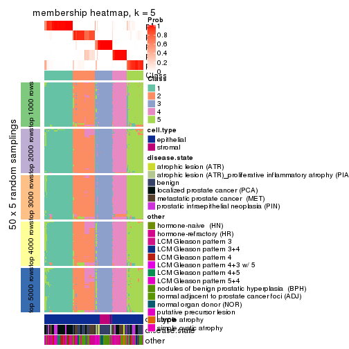
membership_heatmap(res, k = 6)
As soon as we have had the classes for columns, we can look for signatures which are significantly different between classes which can be candidate marks for certain classes. Following are the heatmaps for signatures.
Signature heatmaps where rows are scaled:
get_signatures(res, k = 2)
get_signatures(res, k = 3)

get_signatures(res, k = 4)
get_signatures(res, k = 5)
get_signatures(res, k = 6)
#> Error: The width or height of the raster image is zero, maybe you forget to turn off the
#> previous graphic device or it was corrupted. Run `dev.off()` to close it.

Signature heatmaps where rows are not scaled:
get_signatures(res, k = 2, scale_rows = FALSE)
get_signatures(res, k = 3, scale_rows = FALSE)
get_signatures(res, k = 4, scale_rows = FALSE)
get_signatures(res, k = 5, scale_rows = FALSE)
get_signatures(res, k = 6, scale_rows = FALSE)
#> Error: The width or height of the raster image is zero, maybe you forget to turn off the
#> previous graphic device or it was corrupted. Run `dev.off()` to close it.

Compare the overlap of signatures from different k:
compare_signatures(res)
get_signature() returns a data frame invisibly. TO get the list of signatures, the function
call should be assigned to a variable explicitly. In following code, if plot argument is set
to FALSE, no heatmap is plotted while only the differential analysis is performed.
# code only for demonstration
tb = get_signature(res, k = ..., plot = FALSE)
An example of the output of tb is:
#> which_row fdr mean_1 mean_2 scaled_mean_1 scaled_mean_2 km
#> 1 38 0.042760348 8.373488 9.131774 -0.5533452 0.5164555 1
#> 2 40 0.018707592 7.106213 8.469186 -0.6173731 0.5762149 1
#> 3 55 0.019134737 10.221463 11.207825 -0.6159697 0.5749050 1
#> 4 59 0.006059896 5.921854 7.869574 -0.6899429 0.6439467 1
#> 5 60 0.018055526 8.928898 10.211722 -0.6204761 0.5791110 1
#> 6 98 0.009384629 15.714769 14.887706 0.6635654 -0.6193277 2
...
The columns in tb are:
which_row: row indices corresponding to the input matrix.fdr: FDR for the differential test. mean_x: The mean value in group x.scaled_mean_x: The mean value in group x after rows are scaled.km: Row groups if k-means clustering is applied to rows.UMAP plot which shows how samples are separated.
dimension_reduction(res, k = 2, method = "UMAP")
dimension_reduction(res, k = 3, method = "UMAP")
dimension_reduction(res, k = 4, method = "UMAP")
dimension_reduction(res, k = 5, method = "UMAP")
dimension_reduction(res, k = 6, method = "UMAP")
Following heatmap shows how subgroups are split when increasing k:
collect_classes(res)
Test correlation between subgroups and known annotations. If the known annotation is numeric, one-way ANOVA test is applied, and if the known annotation is discrete, chi-squared contingency table test is applied.
test_to_known_factors(res)
#> n cell.type(p) disease.state(p) other(p) k
#> CV:skmeans 100 7.12e-04 4.06e-07 7.37e-05 2
#> CV:skmeans 99 4.19e-11 5.27e-09 1.87e-06 3
#> CV:skmeans 100 2.31e-14 1.12e-12 3.77e-08 4
#> CV:skmeans 98 1.44e-15 2.71e-10 2.14e-09 5
#> CV:skmeans 90 1.48e-13 2.88e-10 1.43e-08 6
If matrix rows can be associated to genes, consider to use functional_enrichment(res,
...) to perform function enrichment for the signature genes. See this vignette for more detailed explanations.
The object with results only for a single top-value method and a single partition method can be extracted as:
res = res_list["CV", "pam"]
# you can also extract it by
# res = res_list["CV:pam"]
A summary of res and all the functions that can be applied to it:
res
#> A 'ConsensusPartition' object with k = 2, 3, 4, 5, 6.
#> On a matrix with 13604 rows and 104 columns.
#> Top rows (1000, 2000, 3000, 4000, 5000) are extracted by 'CV' method.
#> Subgroups are detected by 'pam' method.
#> Performed in total 1250 partitions by row resampling.
#> Best k for subgroups seems to be 5.
#>
#> Following methods can be applied to this 'ConsensusPartition' object:
#> [1] "cola_report" "collect_classes" "collect_plots"
#> [4] "collect_stats" "colnames" "compare_signatures"
#> [7] "consensus_heatmap" "dimension_reduction" "functional_enrichment"
#> [10] "get_anno_col" "get_anno" "get_classes"
#> [13] "get_consensus" "get_matrix" "get_membership"
#> [16] "get_param" "get_signatures" "get_stats"
#> [19] "is_best_k" "is_stable_k" "membership_heatmap"
#> [22] "ncol" "nrow" "plot_ecdf"
#> [25] "rownames" "select_partition_number" "show"
#> [28] "suggest_best_k" "test_to_known_factors"
collect_plots() function collects all the plots made from res for all k (number of partitions)
into one single page to provide an easy and fast comparison between different k.
collect_plots(res)
The plots are:
k and the heatmap of
predicted classes for each k.k.k.k.All the plots in panels can be made by individual functions and they are plotted later in this section.
select_partition_number() produces several plots showing different
statistics for choosing “optimized” k. There are following statistics:
k;k, the area increased is defined as \(A_k - A_{k-1}\).The detailed explanations of these statistics can be found in the cola vignette.
Generally speaking, lower PAC score, higher mean silhouette score or higher
concordance corresponds to better partition. Rand index and Jaccard index
measure how similar the current partition is compared to partition with k-1.
If they are too similar, we won't accept k is better than k-1.
select_partition_number(res)
The numeric values for all these statistics can be obtained by get_stats().
get_stats(res)
#> k 1-PAC mean_silhouette concordance area_increased Rand Jaccard
#> 2 2 0.338 0.683 0.784 0.3505 0.765 0.765
#> 3 3 0.528 0.691 0.850 0.6746 0.605 0.495
#> 4 4 0.607 0.516 0.798 0.2152 0.841 0.625
#> 5 5 0.872 0.824 0.930 0.0988 0.856 0.551
#> 6 6 0.795 0.627 0.848 0.0350 0.952 0.787
suggest_best_k() suggests the best \(k\) based on these statistics. The rules are as follows:
suggest_best_k(res)
#> [1] 5
Following shows the table of the partitions (You need to click the show/hide
code output link to see it). The membership matrix (columns with name p*)
is inferred by
clue::cl_consensus()
function with the SE method. Basically the value in the membership matrix
represents the probability to belong to a certain group. The finall class
label for an item is determined with the group with highest probability it
belongs to.
In get_classes() function, the entropy is calculated from the membership
matrix and the silhouette score is calculated from the consensus matrix.
cbind(get_classes(res, k = 2), get_membership(res, k = 2))
#> class entropy silhouette p1 p2
#> GSM141334 1 0.3584 0.696 0.932 0.068
#> GSM141335 1 0.0376 0.683 0.996 0.004
#> GSM141336 1 0.0000 0.682 1.000 0.000
#> GSM141337 1 0.9044 0.698 0.680 0.320
#> GSM141184 1 0.0000 0.682 1.000 0.000
#> GSM141185 1 0.0000 0.682 1.000 0.000
#> GSM141186 1 0.0000 0.682 1.000 0.000
#> GSM141243 1 0.0000 0.682 1.000 0.000
#> GSM141244 1 0.0000 0.682 1.000 0.000
#> GSM141246 1 0.8555 0.703 0.720 0.280
#> GSM141247 1 0.0000 0.682 1.000 0.000
#> GSM141248 1 0.9044 0.698 0.680 0.320
#> GSM141249 1 0.9635 0.676 0.612 0.388
#> GSM141258 1 0.0000 0.682 1.000 0.000
#> GSM141259 1 0.0000 0.682 1.000 0.000
#> GSM141260 1 0.0000 0.682 1.000 0.000
#> GSM141261 1 0.0000 0.682 1.000 0.000
#> GSM141262 1 0.0000 0.682 1.000 0.000
#> GSM141263 1 0.0000 0.682 1.000 0.000
#> GSM141338 1 0.0000 0.682 1.000 0.000
#> GSM141339 1 0.9000 0.698 0.684 0.316
#> GSM141340 1 0.9635 0.676 0.612 0.388
#> GSM141265 1 0.0000 0.682 1.000 0.000
#> GSM141267 1 0.9044 0.698 0.680 0.320
#> GSM141330 1 0.6343 0.672 0.840 0.160
#> GSM141266 1 0.0000 0.682 1.000 0.000
#> GSM141264 2 0.9608 0.775 0.384 0.616
#> GSM141341 1 0.2423 0.689 0.960 0.040
#> GSM141342 1 0.0000 0.682 1.000 0.000
#> GSM141343 1 0.0000 0.682 1.000 0.000
#> GSM141356 1 0.8386 0.690 0.732 0.268
#> GSM141357 1 0.9963 0.637 0.536 0.464
#> GSM141358 1 0.0000 0.682 1.000 0.000
#> GSM141359 1 0.0000 0.682 1.000 0.000
#> GSM141360 1 0.9963 0.637 0.536 0.464
#> GSM141361 1 0.2778 0.692 0.952 0.048
#> GSM141362 1 0.0000 0.682 1.000 0.000
#> GSM141363 1 0.0000 0.682 1.000 0.000
#> GSM141364 1 0.5294 0.700 0.880 0.120
#> GSM141365 1 0.2236 0.668 0.964 0.036
#> GSM141366 1 0.0000 0.682 1.000 0.000
#> GSM141367 1 0.4431 0.694 0.908 0.092
#> GSM141368 1 0.0000 0.682 1.000 0.000
#> GSM141369 1 0.0000 0.682 1.000 0.000
#> GSM141370 1 0.0000 0.682 1.000 0.000
#> GSM141371 1 0.0000 0.682 1.000 0.000
#> GSM141372 1 0.0000 0.682 1.000 0.000
#> GSM141373 1 0.9635 0.676 0.612 0.388
#> GSM141374 1 0.9963 0.637 0.536 0.464
#> GSM141375 1 0.3879 0.691 0.924 0.076
#> GSM141376 1 0.9963 0.637 0.536 0.464
#> GSM141377 1 0.9710 0.670 0.600 0.400
#> GSM141378 1 0.9963 0.637 0.536 0.464
#> GSM141380 1 0.9963 0.637 0.536 0.464
#> GSM141387 1 0.9963 0.637 0.536 0.464
#> GSM141395 1 0.7453 0.706 0.788 0.212
#> GSM141397 1 0.0000 0.682 1.000 0.000
#> GSM141398 1 0.0000 0.682 1.000 0.000
#> GSM141401 1 0.0000 0.682 1.000 0.000
#> GSM141399 1 0.0672 0.685 0.992 0.008
#> GSM141379 1 0.9963 0.637 0.536 0.464
#> GSM141381 1 0.9963 0.637 0.536 0.464
#> GSM141383 1 0.9963 0.637 0.536 0.464
#> GSM141384 1 0.9963 0.637 0.536 0.464
#> GSM141385 1 0.9286 0.692 0.656 0.344
#> GSM141388 1 0.9963 0.637 0.536 0.464
#> GSM141389 1 0.9963 0.637 0.536 0.464
#> GSM141391 1 0.9963 0.637 0.536 0.464
#> GSM141394 1 0.0938 0.686 0.988 0.012
#> GSM141396 1 0.9963 0.637 0.536 0.464
#> GSM141403 1 0.7056 0.706 0.808 0.192
#> GSM141404 1 0.8016 0.697 0.756 0.244
#> GSM141386 1 0.9170 0.695 0.668 0.332
#> GSM141382 1 0.9963 0.637 0.536 0.464
#> GSM141390 1 0.9710 0.667 0.600 0.400
#> GSM141393 1 0.9963 0.637 0.536 0.464
#> GSM141400 1 0.9963 0.637 0.536 0.464
#> GSM141402 1 0.0000 0.682 1.000 0.000
#> GSM141392 2 0.0000 0.502 0.000 1.000
#> GSM141405 1 0.4022 0.691 0.920 0.080
#> GSM141406 1 0.4022 0.691 0.920 0.080
#> GSM141407 1 0.9963 0.637 0.536 0.464
#> GSM141408 1 0.9963 0.637 0.536 0.464
#> GSM141409 1 0.9129 0.696 0.672 0.328
#> GSM141410 1 0.9963 0.637 0.536 0.464
#> GSM141411 1 0.9963 0.637 0.536 0.464
#> GSM141412 1 0.9795 0.663 0.584 0.416
#> GSM141413 1 0.9286 0.692 0.656 0.344
#> GSM141414 1 0.9044 0.698 0.680 0.320
#> GSM141415 1 0.9661 0.674 0.608 0.392
#> GSM141416 1 0.7950 0.697 0.760 0.240
#> GSM141417 1 0.9635 0.676 0.612 0.388
#> GSM141420 2 0.9922 0.794 0.448 0.552
#> GSM141421 2 0.6801 0.701 0.180 0.820
#> GSM141422 2 0.9963 0.781 0.464 0.536
#> GSM141423 2 0.9909 0.796 0.444 0.556
#> GSM141424 2 0.9963 0.781 0.464 0.536
#> GSM141427 2 0.8909 0.782 0.308 0.692
#> GSM141428 2 0.9635 0.804 0.388 0.612
#> GSM141418 2 0.9963 0.781 0.464 0.536
#> GSM141419 2 0.9170 0.791 0.332 0.668
#> GSM141425 2 0.6148 0.653 0.152 0.848
#> GSM141426 2 0.6048 0.647 0.148 0.852
#> GSM141429 2 0.9710 0.806 0.400 0.600
cbind(get_classes(res, k = 3), get_membership(res, k = 3))
#> class entropy silhouette p1 p2 p3
#> GSM141334 2 0.8137 0.542 0.220 0.640 0.140
#> GSM141335 2 0.3539 0.832 0.012 0.888 0.100
#> GSM141336 2 0.4062 0.825 0.000 0.836 0.164
#> GSM141337 1 0.6299 0.336 0.524 0.476 0.000
#> GSM141184 2 0.2625 0.836 0.000 0.916 0.084
#> GSM141185 2 0.4062 0.825 0.000 0.836 0.164
#> GSM141186 2 0.2066 0.834 0.000 0.940 0.060
#> GSM141243 2 0.2625 0.835 0.000 0.916 0.084
#> GSM141244 2 0.3377 0.833 0.012 0.896 0.092
#> GSM141246 2 0.7069 -0.216 0.472 0.508 0.020
#> GSM141247 2 0.4062 0.825 0.000 0.836 0.164
#> GSM141248 1 0.6299 0.336 0.524 0.476 0.000
#> GSM141249 1 0.6079 0.488 0.612 0.388 0.000
#> GSM141258 2 0.4062 0.825 0.000 0.836 0.164
#> GSM141259 2 0.0000 0.835 0.000 1.000 0.000
#> GSM141260 2 0.0592 0.831 0.012 0.988 0.000
#> GSM141261 2 0.2537 0.834 0.000 0.920 0.080
#> GSM141262 2 0.4062 0.825 0.000 0.836 0.164
#> GSM141263 2 0.0237 0.836 0.000 0.996 0.004
#> GSM141338 2 0.4062 0.825 0.000 0.836 0.164
#> GSM141339 1 0.6299 0.336 0.524 0.476 0.000
#> GSM141340 1 0.6045 0.500 0.620 0.380 0.000
#> GSM141265 2 0.0424 0.835 0.000 0.992 0.008
#> GSM141267 1 0.6299 0.336 0.524 0.476 0.000
#> GSM141330 2 0.7262 0.148 0.444 0.528 0.028
#> GSM141266 2 0.0000 0.835 0.000 1.000 0.000
#> GSM141264 2 0.6295 -0.256 0.000 0.528 0.472
#> GSM141341 2 0.0592 0.831 0.012 0.988 0.000
#> GSM141342 2 0.0000 0.835 0.000 1.000 0.000
#> GSM141343 2 0.0237 0.834 0.004 0.996 0.000
#> GSM141356 1 0.7615 0.535 0.688 0.148 0.164
#> GSM141357 1 0.0000 0.745 1.000 0.000 0.000
#> GSM141358 2 0.4062 0.825 0.000 0.836 0.164
#> GSM141359 2 0.3412 0.835 0.000 0.876 0.124
#> GSM141360 1 0.0000 0.745 1.000 0.000 0.000
#> GSM141361 2 0.4526 0.791 0.104 0.856 0.040
#> GSM141362 2 0.4062 0.825 0.000 0.836 0.164
#> GSM141363 2 0.4062 0.825 0.000 0.836 0.164
#> GSM141364 2 0.7898 0.524 0.232 0.652 0.116
#> GSM141365 2 0.5619 0.531 0.244 0.744 0.012
#> GSM141366 2 0.0000 0.835 0.000 1.000 0.000
#> GSM141367 2 0.3192 0.778 0.112 0.888 0.000
#> GSM141368 2 0.0237 0.836 0.000 0.996 0.004
#> GSM141369 2 0.1964 0.834 0.000 0.944 0.056
#> GSM141370 2 0.3879 0.829 0.000 0.848 0.152
#> GSM141371 2 0.3816 0.830 0.000 0.852 0.148
#> GSM141372 2 0.3551 0.833 0.000 0.868 0.132
#> GSM141373 1 0.6026 0.506 0.624 0.376 0.000
#> GSM141374 1 0.0000 0.745 1.000 0.000 0.000
#> GSM141375 2 0.0592 0.831 0.012 0.988 0.000
#> GSM141376 1 0.0000 0.745 1.000 0.000 0.000
#> GSM141377 1 0.5988 0.512 0.632 0.368 0.000
#> GSM141378 1 0.0000 0.745 1.000 0.000 0.000
#> GSM141380 1 0.0000 0.745 1.000 0.000 0.000
#> GSM141387 1 0.0000 0.745 1.000 0.000 0.000
#> GSM141395 2 0.4931 0.591 0.232 0.768 0.000
#> GSM141397 2 0.0000 0.835 0.000 1.000 0.000
#> GSM141398 2 0.4062 0.825 0.000 0.836 0.164
#> GSM141401 2 0.0000 0.835 0.000 1.000 0.000
#> GSM141399 2 0.3832 0.829 0.020 0.880 0.100
#> GSM141379 1 0.0000 0.745 1.000 0.000 0.000
#> GSM141381 1 0.0000 0.745 1.000 0.000 0.000
#> GSM141383 1 0.0000 0.745 1.000 0.000 0.000
#> GSM141384 1 0.0000 0.745 1.000 0.000 0.000
#> GSM141385 1 0.6252 0.397 0.556 0.444 0.000
#> GSM141388 1 0.0000 0.745 1.000 0.000 0.000
#> GSM141389 1 0.0000 0.745 1.000 0.000 0.000
#> GSM141391 1 0.0000 0.745 1.000 0.000 0.000
#> GSM141394 2 0.3359 0.833 0.016 0.900 0.084
#> GSM141396 1 0.0000 0.745 1.000 0.000 0.000
#> GSM141403 2 0.5706 0.382 0.320 0.680 0.000
#> GSM141404 2 0.9266 -0.107 0.420 0.424 0.156
#> GSM141386 1 0.6291 0.351 0.532 0.468 0.000
#> GSM141382 1 0.0000 0.745 1.000 0.000 0.000
#> GSM141390 1 0.2448 0.708 0.924 0.076 0.000
#> GSM141393 1 0.0000 0.745 1.000 0.000 0.000
#> GSM141400 1 0.0000 0.745 1.000 0.000 0.000
#> GSM141402 2 0.2356 0.834 0.000 0.928 0.072
#> GSM141392 1 0.0000 0.745 1.000 0.000 0.000
#> GSM141405 2 0.0000 0.835 0.000 1.000 0.000
#> GSM141406 2 0.0000 0.835 0.000 1.000 0.000
#> GSM141407 1 0.0000 0.745 1.000 0.000 0.000
#> GSM141408 1 0.0000 0.745 1.000 0.000 0.000
#> GSM141409 1 0.6267 0.384 0.548 0.452 0.000
#> GSM141410 1 0.0000 0.745 1.000 0.000 0.000
#> GSM141411 1 0.0000 0.745 1.000 0.000 0.000
#> GSM141412 1 0.5785 0.550 0.668 0.332 0.000
#> GSM141413 1 0.6215 0.432 0.572 0.428 0.000
#> GSM141414 1 0.6299 0.336 0.524 0.476 0.000
#> GSM141415 1 0.6026 0.504 0.624 0.376 0.000
#> GSM141416 2 0.8624 -0.123 0.424 0.476 0.100
#> GSM141417 1 0.6045 0.500 0.620 0.380 0.000
#> GSM141420 3 0.4062 0.885 0.000 0.164 0.836
#> GSM141421 3 0.4744 0.817 0.136 0.028 0.836
#> GSM141422 3 0.0000 0.907 0.000 0.000 1.000
#> GSM141423 3 0.4062 0.885 0.000 0.164 0.836
#> GSM141424 3 0.0000 0.907 0.000 0.000 1.000
#> GSM141427 3 0.4353 0.889 0.008 0.156 0.836
#> GSM141428 3 0.4353 0.889 0.008 0.156 0.836
#> GSM141418 3 0.0000 0.907 0.000 0.000 1.000
#> GSM141419 3 0.0424 0.910 0.000 0.008 0.992
#> GSM141425 3 0.2681 0.908 0.028 0.040 0.932
#> GSM141426 3 0.2414 0.911 0.020 0.040 0.940
#> GSM141429 3 0.0892 0.913 0.000 0.020 0.980
cbind(get_classes(res, k = 4), get_membership(res, k = 4))
#> class entropy silhouette p1 p2 p3 p4
#> GSM141334 2 0.1389 0.5350 0.000 0.952 0.000 0.048
#> GSM141335 2 0.5137 0.0689 0.004 0.544 0.000 0.452
#> GSM141336 2 0.0817 0.5560 0.000 0.976 0.000 0.024
#> GSM141337 1 0.6843 0.2989 0.460 0.440 0.000 0.100
#> GSM141184 2 0.4972 0.0630 0.000 0.544 0.000 0.456
#> GSM141185 2 0.0000 0.5534 0.000 1.000 0.000 0.000
#> GSM141186 4 0.3801 0.4692 0.000 0.220 0.000 0.780
#> GSM141243 2 0.5000 -0.0460 0.000 0.504 0.000 0.496
#> GSM141244 2 0.4972 0.0630 0.000 0.544 0.000 0.456
#> GSM141246 2 0.7143 -0.2218 0.408 0.460 0.000 0.132
#> GSM141247 2 0.1022 0.5556 0.000 0.968 0.000 0.032
#> GSM141248 1 0.6843 0.2989 0.460 0.440 0.000 0.100
#> GSM141249 1 0.5055 0.5167 0.624 0.368 0.000 0.008
#> GSM141258 2 0.0000 0.5534 0.000 1.000 0.000 0.000
#> GSM141259 4 0.0000 0.6980 0.000 0.000 0.000 1.000
#> GSM141260 4 0.4948 0.0993 0.000 0.440 0.000 0.560
#> GSM141261 4 0.4955 0.0843 0.000 0.444 0.000 0.556
#> GSM141262 2 0.1211 0.5527 0.000 0.960 0.000 0.040
#> GSM141263 4 0.0188 0.6960 0.000 0.004 0.000 0.996
#> GSM141338 2 0.1022 0.5556 0.000 0.968 0.000 0.032
#> GSM141339 1 0.6843 0.2989 0.460 0.440 0.000 0.100
#> GSM141340 1 0.5024 0.5253 0.632 0.360 0.000 0.008
#> GSM141265 4 0.1743 0.6810 0.000 0.056 0.004 0.940
#> GSM141267 1 0.6843 0.2989 0.460 0.440 0.000 0.100
#> GSM141330 1 0.8695 -0.1577 0.412 0.072 0.148 0.368
#> GSM141266 4 0.1211 0.6855 0.000 0.040 0.000 0.960
#> GSM141264 3 0.4564 0.4816 0.000 0.000 0.672 0.328
#> GSM141341 4 0.0000 0.6980 0.000 0.000 0.000 1.000
#> GSM141342 4 0.0000 0.6980 0.000 0.000 0.000 1.000
#> GSM141343 4 0.0000 0.6980 0.000 0.000 0.000 1.000
#> GSM141356 2 0.4746 0.3071 0.304 0.688 0.000 0.008
#> GSM141357 1 0.0000 0.7528 1.000 0.000 0.000 0.000
#> GSM141358 2 0.2814 0.5093 0.000 0.868 0.000 0.132
#> GSM141359 2 0.4746 0.1933 0.000 0.632 0.000 0.368
#> GSM141360 1 0.0000 0.7528 1.000 0.000 0.000 0.000
#> GSM141361 4 0.6954 0.0462 0.116 0.384 0.000 0.500
#> GSM141362 2 0.2647 0.5027 0.000 0.880 0.000 0.120
#> GSM141363 2 0.3649 0.4123 0.000 0.796 0.000 0.204
#> GSM141364 2 0.2345 0.5015 0.000 0.900 0.000 0.100
#> GSM141365 4 0.6496 0.4161 0.180 0.160 0.004 0.656
#> GSM141366 4 0.0000 0.6980 0.000 0.000 0.000 1.000
#> GSM141367 4 0.6197 0.0144 0.052 0.440 0.000 0.508
#> GSM141368 4 0.0469 0.6905 0.000 0.012 0.000 0.988
#> GSM141369 4 0.3649 0.4942 0.000 0.204 0.000 0.796
#> GSM141370 2 0.4888 0.0635 0.000 0.588 0.000 0.412
#> GSM141371 2 0.4985 -0.0158 0.000 0.532 0.000 0.468
#> GSM141372 2 0.5000 -0.0505 0.000 0.504 0.000 0.496
#> GSM141373 1 0.5007 0.5290 0.636 0.356 0.000 0.008
#> GSM141374 1 0.0000 0.7528 1.000 0.000 0.000 0.000
#> GSM141375 4 0.0000 0.6980 0.000 0.000 0.000 1.000
#> GSM141376 1 0.0000 0.7528 1.000 0.000 0.000 0.000
#> GSM141377 1 0.5040 0.5212 0.628 0.364 0.000 0.008
#> GSM141378 1 0.0000 0.7528 1.000 0.000 0.000 0.000
#> GSM141380 1 0.0000 0.7528 1.000 0.000 0.000 0.000
#> GSM141387 1 0.0000 0.7528 1.000 0.000 0.000 0.000
#> GSM141395 2 0.7688 0.1494 0.232 0.440 0.000 0.328
#> GSM141397 4 0.1211 0.6855 0.000 0.040 0.000 0.960
#> GSM141398 2 0.1022 0.5556 0.000 0.968 0.000 0.032
#> GSM141401 4 0.4925 0.1217 0.000 0.428 0.000 0.572
#> GSM141399 2 0.5472 0.0834 0.016 0.544 0.000 0.440
#> GSM141379 1 0.0000 0.7528 1.000 0.000 0.000 0.000
#> GSM141381 1 0.0000 0.7528 1.000 0.000 0.000 0.000
#> GSM141383 1 0.0000 0.7528 1.000 0.000 0.000 0.000
#> GSM141384 1 0.0000 0.7528 1.000 0.000 0.000 0.000
#> GSM141385 1 0.6471 0.3814 0.512 0.416 0.000 0.072
#> GSM141388 1 0.0000 0.7528 1.000 0.000 0.000 0.000
#> GSM141389 1 0.0000 0.7528 1.000 0.000 0.000 0.000
#> GSM141391 1 0.0000 0.7528 1.000 0.000 0.000 0.000
#> GSM141394 2 0.5126 0.0821 0.004 0.552 0.000 0.444
#> GSM141396 1 0.0000 0.7528 1.000 0.000 0.000 0.000
#> GSM141403 2 0.7741 0.1329 0.264 0.440 0.000 0.296
#> GSM141404 2 0.0937 0.5559 0.012 0.976 0.000 0.012
#> GSM141386 1 0.6770 0.3607 0.496 0.408 0.000 0.096
#> GSM141382 1 0.0000 0.7528 1.000 0.000 0.000 0.000
#> GSM141390 1 0.3013 0.6818 0.888 0.032 0.000 0.080
#> GSM141393 1 0.0000 0.7528 1.000 0.000 0.000 0.000
#> GSM141400 1 0.0000 0.7528 1.000 0.000 0.000 0.000
#> GSM141402 4 0.4972 0.0628 0.000 0.456 0.000 0.544
#> GSM141392 1 0.0000 0.7528 1.000 0.000 0.000 0.000
#> GSM141405 4 0.1118 0.6884 0.000 0.036 0.000 0.964
#> GSM141406 4 0.4697 0.2440 0.000 0.356 0.000 0.644
#> GSM141407 1 0.0000 0.7528 1.000 0.000 0.000 0.000
#> GSM141408 1 0.0000 0.7528 1.000 0.000 0.000 0.000
#> GSM141409 1 0.6549 0.3446 0.488 0.436 0.000 0.076
#> GSM141410 1 0.0000 0.7528 1.000 0.000 0.000 0.000
#> GSM141411 1 0.0000 0.7528 1.000 0.000 0.000 0.000
#> GSM141412 1 0.4781 0.5480 0.660 0.336 0.000 0.004
#> GSM141413 1 0.6326 0.4450 0.556 0.376 0.000 0.068
#> GSM141414 1 0.6843 0.2989 0.460 0.440 0.000 0.100
#> GSM141415 1 0.5024 0.5253 0.632 0.360 0.000 0.008
#> GSM141416 2 0.6702 -0.0664 0.356 0.544 0.000 0.100
#> GSM141417 1 0.5024 0.5253 0.632 0.360 0.000 0.008
#> GSM141420 3 0.0000 0.9669 0.000 0.000 1.000 0.000
#> GSM141421 3 0.0000 0.9669 0.000 0.000 1.000 0.000
#> GSM141422 3 0.0000 0.9669 0.000 0.000 1.000 0.000
#> GSM141423 3 0.0000 0.9669 0.000 0.000 1.000 0.000
#> GSM141424 3 0.0000 0.9669 0.000 0.000 1.000 0.000
#> GSM141427 3 0.0000 0.9669 0.000 0.000 1.000 0.000
#> GSM141428 3 0.0000 0.9669 0.000 0.000 1.000 0.000
#> GSM141418 2 0.4948 -0.0923 0.000 0.560 0.440 0.000
#> GSM141419 3 0.0000 0.9669 0.000 0.000 1.000 0.000
#> GSM141425 3 0.0000 0.9669 0.000 0.000 1.000 0.000
#> GSM141426 3 0.0000 0.9669 0.000 0.000 1.000 0.000
#> GSM141429 3 0.0000 0.9669 0.000 0.000 1.000 0.000
cbind(get_classes(res, k = 5), get_membership(res, k = 5))
#> class entropy silhouette p1 p2 p3 p4 p5
#> GSM141334 5 0.4015 0.436 0.000 0.348 0.000 0.000 0.652
#> GSM141335 5 0.0000 0.892 0.000 0.000 0.000 0.000 1.000
#> GSM141336 2 0.0000 0.959 0.000 1.000 0.000 0.000 0.000
#> GSM141337 5 0.0000 0.892 0.000 0.000 0.000 0.000 1.000
#> GSM141184 5 0.0000 0.892 0.000 0.000 0.000 0.000 1.000
#> GSM141185 2 0.0000 0.959 0.000 1.000 0.000 0.000 0.000
#> GSM141186 4 0.0290 0.895 0.000 0.008 0.000 0.992 0.000
#> GSM141243 2 0.3366 0.681 0.000 0.768 0.000 0.232 0.000
#> GSM141244 5 0.0000 0.892 0.000 0.000 0.000 0.000 1.000
#> GSM141246 5 0.0000 0.892 0.000 0.000 0.000 0.000 1.000
#> GSM141247 2 0.0000 0.959 0.000 1.000 0.000 0.000 0.000
#> GSM141248 5 0.0000 0.892 0.000 0.000 0.000 0.000 1.000
#> GSM141249 1 0.4138 0.448 0.616 0.000 0.000 0.000 0.384
#> GSM141258 2 0.0000 0.959 0.000 1.000 0.000 0.000 0.000
#> GSM141259 4 0.0000 0.898 0.000 0.000 0.000 1.000 0.000
#> GSM141260 5 0.0000 0.892 0.000 0.000 0.000 0.000 1.000
#> GSM141261 4 0.0290 0.895 0.000 0.008 0.000 0.992 0.000
#> GSM141262 2 0.0000 0.959 0.000 1.000 0.000 0.000 0.000
#> GSM141263 4 0.0000 0.898 0.000 0.000 0.000 1.000 0.000
#> GSM141338 2 0.0000 0.959 0.000 1.000 0.000 0.000 0.000
#> GSM141339 5 0.0000 0.892 0.000 0.000 0.000 0.000 1.000
#> GSM141340 1 0.4088 0.480 0.632 0.000 0.000 0.000 0.368
#> GSM141265 4 0.0510 0.891 0.000 0.000 0.000 0.984 0.016
#> GSM141267 5 0.0000 0.892 0.000 0.000 0.000 0.000 1.000
#> GSM141330 5 0.5996 0.254 0.368 0.000 0.120 0.000 0.512
#> GSM141266 4 0.0404 0.893 0.000 0.000 0.000 0.988 0.012
#> GSM141264 3 0.0000 1.000 0.000 0.000 1.000 0.000 0.000
#> GSM141341 4 0.0000 0.898 0.000 0.000 0.000 1.000 0.000
#> GSM141342 4 0.0000 0.898 0.000 0.000 0.000 1.000 0.000
#> GSM141343 4 0.0000 0.898 0.000 0.000 0.000 1.000 0.000
#> GSM141356 2 0.5335 0.562 0.260 0.644 0.000 0.000 0.096
#> GSM141357 1 0.0000 0.876 1.000 0.000 0.000 0.000 0.000
#> GSM141358 2 0.0162 0.956 0.000 0.996 0.000 0.000 0.004
#> GSM141359 2 0.0290 0.954 0.000 0.992 0.000 0.008 0.000
#> GSM141360 1 0.0000 0.876 1.000 0.000 0.000 0.000 0.000
#> GSM141361 5 0.0880 0.868 0.032 0.000 0.000 0.000 0.968
#> GSM141362 2 0.0000 0.959 0.000 1.000 0.000 0.000 0.000
#> GSM141363 2 0.0000 0.959 0.000 1.000 0.000 0.000 0.000
#> GSM141364 5 0.0000 0.892 0.000 0.000 0.000 0.000 1.000
#> GSM141365 5 0.4830 0.599 0.208 0.000 0.004 0.072 0.716
#> GSM141366 4 0.0000 0.898 0.000 0.000 0.000 1.000 0.000
#> GSM141367 5 0.0162 0.889 0.000 0.000 0.000 0.004 0.996
#> GSM141368 4 0.0000 0.898 0.000 0.000 0.000 1.000 0.000
#> GSM141369 4 0.4235 0.200 0.000 0.424 0.000 0.576 0.000
#> GSM141370 2 0.0000 0.959 0.000 1.000 0.000 0.000 0.000
#> GSM141371 2 0.0000 0.959 0.000 1.000 0.000 0.000 0.000
#> GSM141372 2 0.0000 0.959 0.000 1.000 0.000 0.000 0.000
#> GSM141373 1 0.4074 0.487 0.636 0.000 0.000 0.000 0.364
#> GSM141374 1 0.0000 0.876 1.000 0.000 0.000 0.000 0.000
#> GSM141375 4 0.0000 0.898 0.000 0.000 0.000 1.000 0.000
#> GSM141376 1 0.0000 0.876 1.000 0.000 0.000 0.000 0.000
#> GSM141377 1 0.4101 0.473 0.628 0.000 0.000 0.000 0.372
#> GSM141378 1 0.0000 0.876 1.000 0.000 0.000 0.000 0.000
#> GSM141380 1 0.0000 0.876 1.000 0.000 0.000 0.000 0.000
#> GSM141387 1 0.0000 0.876 1.000 0.000 0.000 0.000 0.000
#> GSM141395 5 0.0000 0.892 0.000 0.000 0.000 0.000 1.000
#> GSM141397 4 0.0404 0.893 0.000 0.000 0.000 0.988 0.012
#> GSM141398 2 0.0000 0.959 0.000 1.000 0.000 0.000 0.000
#> GSM141401 4 0.4262 0.192 0.000 0.000 0.000 0.560 0.440
#> GSM141399 5 0.0000 0.892 0.000 0.000 0.000 0.000 1.000
#> GSM141379 1 0.0000 0.876 1.000 0.000 0.000 0.000 0.000
#> GSM141381 1 0.0000 0.876 1.000 0.000 0.000 0.000 0.000
#> GSM141383 1 0.0000 0.876 1.000 0.000 0.000 0.000 0.000
#> GSM141384 1 0.0000 0.876 1.000 0.000 0.000 0.000 0.000
#> GSM141385 5 0.4060 0.325 0.360 0.000 0.000 0.000 0.640
#> GSM141388 1 0.0000 0.876 1.000 0.000 0.000 0.000 0.000
#> GSM141389 1 0.0000 0.876 1.000 0.000 0.000 0.000 0.000
#> GSM141391 1 0.0000 0.876 1.000 0.000 0.000 0.000 0.000
#> GSM141394 5 0.0000 0.892 0.000 0.000 0.000 0.000 1.000
#> GSM141396 1 0.0000 0.876 1.000 0.000 0.000 0.000 0.000
#> GSM141403 5 0.0000 0.892 0.000 0.000 0.000 0.000 1.000
#> GSM141404 2 0.1413 0.931 0.012 0.956 0.000 0.012 0.020
#> GSM141386 5 0.4182 0.188 0.400 0.000 0.000 0.000 0.600
#> GSM141382 1 0.0000 0.876 1.000 0.000 0.000 0.000 0.000
#> GSM141390 1 0.2773 0.717 0.836 0.000 0.000 0.000 0.164
#> GSM141393 1 0.0000 0.876 1.000 0.000 0.000 0.000 0.000
#> GSM141400 1 0.0000 0.876 1.000 0.000 0.000 0.000 0.000
#> GSM141402 2 0.1270 0.918 0.000 0.948 0.000 0.052 0.000
#> GSM141392 1 0.0000 0.876 1.000 0.000 0.000 0.000 0.000
#> GSM141405 4 0.0404 0.894 0.000 0.000 0.000 0.988 0.012
#> GSM141406 4 0.4201 0.272 0.000 0.000 0.000 0.592 0.408
#> GSM141407 1 0.0000 0.876 1.000 0.000 0.000 0.000 0.000
#> GSM141408 1 0.0000 0.876 1.000 0.000 0.000 0.000 0.000
#> GSM141409 5 0.2424 0.772 0.132 0.000 0.000 0.000 0.868
#> GSM141410 1 0.0000 0.876 1.000 0.000 0.000 0.000 0.000
#> GSM141411 1 0.0000 0.876 1.000 0.000 0.000 0.000 0.000
#> GSM141412 1 0.3983 0.524 0.660 0.000 0.000 0.000 0.340
#> GSM141413 1 0.4306 0.155 0.508 0.000 0.000 0.000 0.492
#> GSM141414 5 0.0000 0.892 0.000 0.000 0.000 0.000 1.000
#> GSM141415 1 0.4088 0.480 0.632 0.000 0.000 0.000 0.368
#> GSM141416 5 0.0000 0.892 0.000 0.000 0.000 0.000 1.000
#> GSM141417 1 0.4088 0.480 0.632 0.000 0.000 0.000 0.368
#> GSM141420 3 0.0000 1.000 0.000 0.000 1.000 0.000 0.000
#> GSM141421 3 0.0000 1.000 0.000 0.000 1.000 0.000 0.000
#> GSM141422 3 0.0000 1.000 0.000 0.000 1.000 0.000 0.000
#> GSM141423 3 0.0000 1.000 0.000 0.000 1.000 0.000 0.000
#> GSM141424 3 0.0000 1.000 0.000 0.000 1.000 0.000 0.000
#> GSM141427 3 0.0000 1.000 0.000 0.000 1.000 0.000 0.000
#> GSM141428 3 0.0000 1.000 0.000 0.000 1.000 0.000 0.000
#> GSM141418 2 0.0000 0.959 0.000 1.000 0.000 0.000 0.000
#> GSM141419 3 0.0000 1.000 0.000 0.000 1.000 0.000 0.000
#> GSM141425 3 0.0000 1.000 0.000 0.000 1.000 0.000 0.000
#> GSM141426 3 0.0000 1.000 0.000 0.000 1.000 0.000 0.000
#> GSM141429 3 0.0000 1.000 0.000 0.000 1.000 0.000 0.000
cbind(get_classes(res, k = 6), get_membership(res, k = 6))
#> class entropy silhouette p1 p2 p3 p4 p5 p6
#> GSM141334 5 0.3765 0.3262 0.000 0.404 0.000 0.000 0.596 0.000
#> GSM141335 5 0.0000 0.8429 0.000 0.000 0.000 0.000 1.000 0.000
#> GSM141336 2 0.0000 0.9255 0.000 1.000 0.000 0.000 0.000 0.000
#> GSM141337 5 0.0000 0.8429 0.000 0.000 0.000 0.000 1.000 0.000
#> GSM141184 5 0.0000 0.8429 0.000 0.000 0.000 0.000 1.000 0.000
#> GSM141185 2 0.0000 0.9255 0.000 1.000 0.000 0.000 0.000 0.000
#> GSM141186 4 0.0777 0.8901 0.000 0.004 0.000 0.972 0.000 0.024
#> GSM141243 2 0.3454 0.6978 0.000 0.768 0.000 0.208 0.000 0.024
#> GSM141244 5 0.0000 0.8429 0.000 0.000 0.000 0.000 1.000 0.000
#> GSM141246 5 0.0000 0.8429 0.000 0.000 0.000 0.000 1.000 0.000
#> GSM141247 2 0.0000 0.9255 0.000 1.000 0.000 0.000 0.000 0.000
#> GSM141248 5 0.0000 0.8429 0.000 0.000 0.000 0.000 1.000 0.000
#> GSM141249 1 0.3857 0.0675 0.532 0.000 0.000 0.000 0.468 0.000
#> GSM141258 2 0.0000 0.9255 0.000 1.000 0.000 0.000 0.000 0.000
#> GSM141259 4 0.0632 0.8906 0.000 0.000 0.000 0.976 0.000 0.024
#> GSM141260 5 0.0146 0.8408 0.000 0.000 0.000 0.004 0.996 0.000
#> GSM141261 4 0.0891 0.8889 0.000 0.008 0.000 0.968 0.000 0.024
#> GSM141262 2 0.0000 0.9255 0.000 1.000 0.000 0.000 0.000 0.000
#> GSM141263 4 0.0632 0.8906 0.000 0.000 0.000 0.976 0.000 0.024
#> GSM141338 2 0.0000 0.9255 0.000 1.000 0.000 0.000 0.000 0.000
#> GSM141339 5 0.0000 0.8429 0.000 0.000 0.000 0.000 1.000 0.000
#> GSM141340 1 0.4305 0.0587 0.544 0.000 0.000 0.000 0.436 0.020
#> GSM141265 4 0.1092 0.8865 0.000 0.000 0.000 0.960 0.020 0.020
#> GSM141267 5 0.0000 0.8429 0.000 0.000 0.000 0.000 1.000 0.000
#> GSM141330 1 0.5450 -0.0471 0.452 0.000 0.120 0.000 0.428 0.000
#> GSM141266 4 0.0632 0.8858 0.000 0.000 0.000 0.976 0.024 0.000
#> GSM141264 3 0.0000 0.9960 0.000 0.000 1.000 0.000 0.000 0.000
#> GSM141341 4 0.0260 0.8905 0.000 0.000 0.000 0.992 0.000 0.008
#> GSM141342 4 0.0000 0.8915 0.000 0.000 0.000 1.000 0.000 0.000
#> GSM141343 4 0.0146 0.8918 0.000 0.000 0.000 0.996 0.000 0.004
#> GSM141356 2 0.4841 0.5544 0.260 0.648 0.000 0.000 0.088 0.004
#> GSM141357 1 0.2092 0.3821 0.876 0.000 0.000 0.000 0.000 0.124
#> GSM141358 2 0.1908 0.9168 0.000 0.900 0.000 0.000 0.004 0.096
#> GSM141359 2 0.1814 0.9163 0.000 0.900 0.000 0.000 0.000 0.100
#> GSM141360 1 0.0865 0.4407 0.964 0.000 0.000 0.000 0.000 0.036
#> GSM141361 5 0.2815 0.7685 0.032 0.000 0.000 0.000 0.848 0.120
#> GSM141362 2 0.1663 0.9186 0.000 0.912 0.000 0.000 0.000 0.088
#> GSM141363 2 0.1327 0.9228 0.000 0.936 0.000 0.000 0.000 0.064
#> GSM141364 5 0.1297 0.8228 0.000 0.040 0.000 0.000 0.948 0.012
#> GSM141365 5 0.5385 0.5209 0.208 0.000 0.004 0.068 0.664 0.056
#> GSM141366 4 0.0547 0.8912 0.000 0.000 0.000 0.980 0.000 0.020
#> GSM141367 5 0.4300 0.6040 0.000 0.000 0.000 0.028 0.608 0.364
#> GSM141368 4 0.0000 0.8915 0.000 0.000 0.000 1.000 0.000 0.000
#> GSM141369 4 0.5310 0.1912 0.000 0.348 0.000 0.536 0.000 0.116
#> GSM141370 2 0.1714 0.9179 0.000 0.908 0.000 0.000 0.000 0.092
#> GSM141371 2 0.1714 0.9179 0.000 0.908 0.000 0.000 0.000 0.092
#> GSM141372 2 0.1556 0.9209 0.000 0.920 0.000 0.000 0.000 0.080
#> GSM141373 1 0.3843 0.0710 0.548 0.000 0.000 0.000 0.452 0.000
#> GSM141374 1 0.1204 0.4304 0.944 0.000 0.000 0.000 0.000 0.056
#> GSM141375 4 0.0260 0.8905 0.000 0.000 0.000 0.992 0.000 0.008
#> GSM141376 1 0.1444 0.4215 0.928 0.000 0.000 0.000 0.000 0.072
#> GSM141377 5 0.5479 -0.1086 0.428 0.000 0.000 0.000 0.448 0.124
#> GSM141378 1 0.0000 0.4473 1.000 0.000 0.000 0.000 0.000 0.000
#> GSM141380 1 0.3309 -0.2272 0.720 0.000 0.000 0.000 0.000 0.280
#> GSM141387 6 0.3737 0.8912 0.392 0.000 0.000 0.000 0.000 0.608
#> GSM141395 5 0.0000 0.8429 0.000 0.000 0.000 0.000 1.000 0.000
#> GSM141397 4 0.0632 0.8858 0.000 0.000 0.000 0.976 0.024 0.000
#> GSM141398 2 0.0000 0.9255 0.000 1.000 0.000 0.000 0.000 0.000
#> GSM141401 4 0.3838 0.1607 0.000 0.000 0.000 0.552 0.448 0.000
#> GSM141399 5 0.0000 0.8429 0.000 0.000 0.000 0.000 1.000 0.000
#> GSM141379 1 0.3823 -0.6507 0.564 0.000 0.000 0.000 0.000 0.436
#> GSM141381 1 0.2300 0.3682 0.856 0.000 0.000 0.000 0.000 0.144
#> GSM141383 1 0.2092 0.3791 0.876 0.000 0.000 0.000 0.000 0.124
#> GSM141384 1 0.3563 -0.1365 0.664 0.000 0.000 0.000 0.000 0.336
#> GSM141385 5 0.5046 0.4238 0.256 0.000 0.000 0.000 0.620 0.124
#> GSM141388 6 0.3797 0.9168 0.420 0.000 0.000 0.000 0.000 0.580
#> GSM141389 6 0.3797 0.9168 0.420 0.000 0.000 0.000 0.000 0.580
#> GSM141391 1 0.0000 0.4473 1.000 0.000 0.000 0.000 0.000 0.000
#> GSM141394 5 0.0000 0.8429 0.000 0.000 0.000 0.000 1.000 0.000
#> GSM141396 1 0.0146 0.4461 0.996 0.000 0.000 0.000 0.004 0.000
#> GSM141403 5 0.1957 0.7884 0.000 0.000 0.000 0.000 0.888 0.112
#> GSM141404 2 0.2905 0.8047 0.008 0.836 0.000 0.000 0.012 0.144
#> GSM141386 5 0.4049 0.4283 0.332 0.000 0.000 0.000 0.648 0.020
#> GSM141382 1 0.0000 0.4473 1.000 0.000 0.000 0.000 0.000 0.000
#> GSM141390 1 0.4313 0.2654 0.728 0.000 0.000 0.000 0.148 0.124
#> GSM141393 1 0.0000 0.4473 1.000 0.000 0.000 0.000 0.000 0.000
#> GSM141400 1 0.2378 0.3623 0.848 0.000 0.000 0.000 0.000 0.152
#> GSM141402 2 0.2573 0.8967 0.000 0.864 0.000 0.024 0.000 0.112
#> GSM141392 1 0.0146 0.4471 0.996 0.000 0.000 0.000 0.000 0.004
#> GSM141405 4 0.0260 0.8905 0.000 0.000 0.000 0.992 0.000 0.008
#> GSM141406 4 0.4002 0.2517 0.000 0.000 0.000 0.588 0.404 0.008
#> GSM141407 1 0.3847 -0.6684 0.544 0.000 0.000 0.000 0.000 0.456
#> GSM141408 6 0.3847 0.8173 0.456 0.000 0.000 0.000 0.000 0.544
#> GSM141409 5 0.4125 0.6561 0.128 0.000 0.000 0.000 0.748 0.124
#> GSM141410 1 0.3847 -0.6684 0.544 0.000 0.000 0.000 0.000 0.456
#> GSM141411 1 0.0000 0.4473 1.000 0.000 0.000 0.000 0.000 0.000
#> GSM141412 1 0.3847 -0.6684 0.544 0.000 0.000 0.000 0.000 0.456
#> GSM141413 5 0.3804 0.2179 0.424 0.000 0.000 0.000 0.576 0.000
#> GSM141414 5 0.0000 0.8429 0.000 0.000 0.000 0.000 1.000 0.000
#> GSM141415 1 0.3847 -0.6684 0.544 0.000 0.000 0.000 0.000 0.456
#> GSM141416 5 0.0000 0.8429 0.000 0.000 0.000 0.000 1.000 0.000
#> GSM141417 1 0.4703 0.0357 0.544 0.000 0.000 0.000 0.408 0.048
#> GSM141420 3 0.0000 0.9960 0.000 0.000 1.000 0.000 0.000 0.000
#> GSM141421 3 0.0000 0.9960 0.000 0.000 1.000 0.000 0.000 0.000
#> GSM141422 3 0.0000 0.9960 0.000 0.000 1.000 0.000 0.000 0.000
#> GSM141423 3 0.0000 0.9960 0.000 0.000 1.000 0.000 0.000 0.000
#> GSM141424 3 0.0000 0.9960 0.000 0.000 1.000 0.000 0.000 0.000
#> GSM141427 3 0.0000 0.9960 0.000 0.000 1.000 0.000 0.000 0.000
#> GSM141428 3 0.0146 0.9949 0.000 0.000 0.996 0.000 0.000 0.004
#> GSM141418 2 0.0000 0.9255 0.000 1.000 0.000 0.000 0.000 0.000
#> GSM141419 3 0.0000 0.9960 0.000 0.000 1.000 0.000 0.000 0.000
#> GSM141425 3 0.0547 0.9890 0.000 0.000 0.980 0.000 0.000 0.020
#> GSM141426 3 0.0547 0.9890 0.000 0.000 0.980 0.000 0.000 0.020
#> GSM141429 3 0.0547 0.9890 0.000 0.000 0.980 0.000 0.000 0.020
Heatmaps for the consensus matrix. It visualizes the probability of two samples to be in a same group.
consensus_heatmap(res, k = 2)
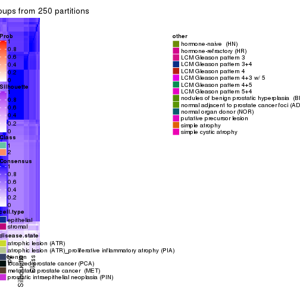
consensus_heatmap(res, k = 3)
consensus_heatmap(res, k = 4)
consensus_heatmap(res, k = 5)
consensus_heatmap(res, k = 6)
Heatmaps for the membership of samples in all partitions to see how consistent they are:
membership_heatmap(res, k = 2)
membership_heatmap(res, k = 3)
membership_heatmap(res, k = 4)
membership_heatmap(res, k = 5)
membership_heatmap(res, k = 6)
As soon as we have had the classes for columns, we can look for signatures which are significantly different between classes which can be candidate marks for certain classes. Following are the heatmaps for signatures.
Signature heatmaps where rows are scaled:
get_signatures(res, k = 2)
get_signatures(res, k = 3)
get_signatures(res, k = 4)
get_signatures(res, k = 5)
get_signatures(res, k = 6)
Signature heatmaps where rows are not scaled:
get_signatures(res, k = 2, scale_rows = FALSE)
get_signatures(res, k = 3, scale_rows = FALSE)
get_signatures(res, k = 4, scale_rows = FALSE)
get_signatures(res, k = 5, scale_rows = FALSE)
get_signatures(res, k = 6, scale_rows = FALSE)
Compare the overlap of signatures from different k:
compare_signatures(res)

get_signature() returns a data frame invisibly. TO get the list of signatures, the function
call should be assigned to a variable explicitly. In following code, if plot argument is set
to FALSE, no heatmap is plotted while only the differential analysis is performed.
# code only for demonstration
tb = get_signature(res, k = ..., plot = FALSE)
An example of the output of tb is:
#> which_row fdr mean_1 mean_2 scaled_mean_1 scaled_mean_2 km
#> 1 38 0.042760348 8.373488 9.131774 -0.5533452 0.5164555 1
#> 2 40 0.018707592 7.106213 8.469186 -0.6173731 0.5762149 1
#> 3 55 0.019134737 10.221463 11.207825 -0.6159697 0.5749050 1
#> 4 59 0.006059896 5.921854 7.869574 -0.6899429 0.6439467 1
#> 5 60 0.018055526 8.928898 10.211722 -0.6204761 0.5791110 1
#> 6 98 0.009384629 15.714769 14.887706 0.6635654 -0.6193277 2
...
The columns in tb are:
which_row: row indices corresponding to the input matrix.fdr: FDR for the differential test. mean_x: The mean value in group x.scaled_mean_x: The mean value in group x after rows are scaled.km: Row groups if k-means clustering is applied to rows.UMAP plot which shows how samples are separated.
dimension_reduction(res, k = 2, method = "UMAP")
dimension_reduction(res, k = 3, method = "UMAP")
dimension_reduction(res, k = 4, method = "UMAP")
dimension_reduction(res, k = 5, method = "UMAP")
dimension_reduction(res, k = 6, method = "UMAP")
Following heatmap shows how subgroups are split when increasing k:
collect_classes(res)
Test correlation between subgroups and known annotations. If the known annotation is numeric, one-way ANOVA test is applied, and if the known annotation is discrete, chi-squared contingency table test is applied.
test_to_known_factors(res)
#> n cell.type(p) disease.state(p) other(p) k
#> CV:pam 104 6.18e-19 1.56e-04 5.75e-07 2
#> CV:pam 88 7.78e-20 2.83e-09 3.60e-09 3
#> CV:pam 66 3.07e-14 1.04e-07 6.67e-07 4
#> CV:pam 90 3.46e-15 6.32e-07 1.85e-08 5
#> CV:pam 69 1.98e-11 1.22e-02 1.89e-04 6
If matrix rows can be associated to genes, consider to use functional_enrichment(res,
...) to perform function enrichment for the signature genes. See this vignette for more detailed explanations.
The object with results only for a single top-value method and a single partition method can be extracted as:
res = res_list["CV", "mclust"]
# you can also extract it by
# res = res_list["CV:mclust"]
A summary of res and all the functions that can be applied to it:
res
#> A 'ConsensusPartition' object with k = 2, 3, 4, 5, 6.
#> On a matrix with 13604 rows and 104 columns.
#> Top rows (1000, 2000, 3000, 4000, 5000) are extracted by 'CV' method.
#> Subgroups are detected by 'mclust' method.
#> Performed in total 1250 partitions by row resampling.
#> Best k for subgroups seems to be 3.
#>
#> Following methods can be applied to this 'ConsensusPartition' object:
#> [1] "cola_report" "collect_classes" "collect_plots"
#> [4] "collect_stats" "colnames" "compare_signatures"
#> [7] "consensus_heatmap" "dimension_reduction" "functional_enrichment"
#> [10] "get_anno_col" "get_anno" "get_classes"
#> [13] "get_consensus" "get_matrix" "get_membership"
#> [16] "get_param" "get_signatures" "get_stats"
#> [19] "is_best_k" "is_stable_k" "membership_heatmap"
#> [22] "ncol" "nrow" "plot_ecdf"
#> [25] "rownames" "select_partition_number" "show"
#> [28] "suggest_best_k" "test_to_known_factors"
collect_plots() function collects all the plots made from res for all k (number of partitions)
into one single page to provide an easy and fast comparison between different k.
collect_plots(res)
The plots are:
k and the heatmap of
predicted classes for each k.k.k.k.All the plots in panels can be made by individual functions and they are plotted later in this section.
select_partition_number() produces several plots showing different
statistics for choosing “optimized” k. There are following statistics:
k;k, the area increased is defined as \(A_k - A_{k-1}\).The detailed explanations of these statistics can be found in the cola vignette.
Generally speaking, lower PAC score, higher mean silhouette score or higher
concordance corresponds to better partition. Rand index and Jaccard index
measure how similar the current partition is compared to partition with k-1.
If they are too similar, we won't accept k is better than k-1.
select_partition_number(res)
The numeric values for all these statistics can be obtained by get_stats().
get_stats(res)
#> k 1-PAC mean_silhouette concordance area_increased Rand Jaccard
#> 2 2 0.595 0.721 0.866 0.339 0.779 0.779
#> 3 3 0.927 0.927 0.965 0.640 0.671 0.577
#> 4 4 0.628 0.690 0.855 0.227 0.831 0.634
#> 5 5 0.679 0.578 0.812 0.117 0.834 0.544
#> 6 6 0.723 0.623 0.820 0.046 0.897 0.634
suggest_best_k() suggests the best \(k\) based on these statistics. The rules are as follows:
suggest_best_k(res)
#> [1] 3
Following shows the table of the partitions (You need to click the show/hide
code output link to see it). The membership matrix (columns with name p*)
is inferred by
clue::cl_consensus()
function with the SE method. Basically the value in the membership matrix
represents the probability to belong to a certain group. The finall class
label for an item is determined with the group with highest probability it
belongs to.
In get_classes() function, the entropy is calculated from the membership
matrix and the silhouette score is calculated from the consensus matrix.
cbind(get_classes(res, k = 2), get_membership(res, k = 2))
#> class entropy silhouette p1 p2
#> GSM141334 1 0.2236 0.814 0.964 0.036
#> GSM141335 1 0.0000 0.828 1.000 0.000
#> GSM141336 1 0.2236 0.814 0.964 0.036
#> GSM141337 1 0.0000 0.828 1.000 0.000
#> GSM141184 1 0.0938 0.823 0.988 0.012
#> GSM141185 1 0.2236 0.814 0.964 0.036
#> GSM141186 1 0.9922 0.417 0.552 0.448
#> GSM141243 1 0.9922 0.417 0.552 0.448
#> GSM141244 1 0.0000 0.828 1.000 0.000
#> GSM141246 1 0.0000 0.828 1.000 0.000
#> GSM141247 1 0.2236 0.814 0.964 0.036
#> GSM141248 1 0.0000 0.828 1.000 0.000
#> GSM141249 1 0.0000 0.828 1.000 0.000
#> GSM141258 1 0.2236 0.814 0.964 0.036
#> GSM141259 1 0.9922 0.417 0.552 0.448
#> GSM141260 1 0.0000 0.828 1.000 0.000
#> GSM141261 1 0.9954 0.395 0.540 0.460
#> GSM141262 1 0.2236 0.814 0.964 0.036
#> GSM141263 1 0.9954 0.395 0.540 0.460
#> GSM141338 1 0.2236 0.814 0.964 0.036
#> GSM141339 1 0.0000 0.828 1.000 0.000
#> GSM141340 1 0.0000 0.828 1.000 0.000
#> GSM141265 1 0.9909 0.388 0.556 0.444
#> GSM141267 1 0.0000 0.828 1.000 0.000
#> GSM141330 1 0.8763 0.556 0.704 0.296
#> GSM141266 1 0.9922 0.417 0.552 0.448
#> GSM141264 2 0.9661 0.131 0.392 0.608
#> GSM141341 1 0.9933 0.410 0.548 0.452
#> GSM141342 1 0.9970 0.377 0.532 0.468
#> GSM141343 1 0.9963 0.386 0.536 0.464
#> GSM141356 1 0.0376 0.826 0.996 0.004
#> GSM141357 1 0.0000 0.828 1.000 0.000
#> GSM141358 1 0.9922 0.417 0.552 0.448
#> GSM141359 1 0.9954 0.395 0.540 0.460
#> GSM141360 1 0.0000 0.828 1.000 0.000
#> GSM141361 1 0.9427 0.534 0.640 0.360
#> GSM141362 1 0.9922 0.417 0.552 0.448
#> GSM141363 1 0.2236 0.814 0.964 0.036
#> GSM141364 1 0.0000 0.828 1.000 0.000
#> GSM141365 1 0.8713 0.609 0.708 0.292
#> GSM141366 1 0.9970 0.377 0.532 0.468
#> GSM141367 1 0.9933 0.410 0.548 0.452
#> GSM141368 1 0.9970 0.377 0.532 0.468
#> GSM141369 1 0.9954 0.395 0.540 0.460
#> GSM141370 1 0.9954 0.395 0.540 0.460
#> GSM141371 1 0.9954 0.395 0.540 0.460
#> GSM141372 1 0.9954 0.395 0.540 0.460
#> GSM141373 1 0.0000 0.828 1.000 0.000
#> GSM141374 1 0.0000 0.828 1.000 0.000
#> GSM141375 1 0.9922 0.417 0.552 0.448
#> GSM141376 1 0.0000 0.828 1.000 0.000
#> GSM141377 1 0.0000 0.828 1.000 0.000
#> GSM141378 1 0.0000 0.828 1.000 0.000
#> GSM141380 1 0.0000 0.828 1.000 0.000
#> GSM141387 1 0.0000 0.828 1.000 0.000
#> GSM141395 1 0.0000 0.828 1.000 0.000
#> GSM141397 1 0.9922 0.417 0.552 0.448
#> GSM141398 1 0.2236 0.814 0.964 0.036
#> GSM141401 1 0.7602 0.683 0.780 0.220
#> GSM141399 1 0.0000 0.828 1.000 0.000
#> GSM141379 1 0.0000 0.828 1.000 0.000
#> GSM141381 1 0.0000 0.828 1.000 0.000
#> GSM141383 1 0.0000 0.828 1.000 0.000
#> GSM141384 1 0.0000 0.828 1.000 0.000
#> GSM141385 1 0.0000 0.828 1.000 0.000
#> GSM141388 1 0.0000 0.828 1.000 0.000
#> GSM141389 1 0.0000 0.828 1.000 0.000
#> GSM141391 1 0.0000 0.828 1.000 0.000
#> GSM141394 1 0.0376 0.826 0.996 0.004
#> GSM141396 1 0.0000 0.828 1.000 0.000
#> GSM141403 1 0.0000 0.828 1.000 0.000
#> GSM141404 1 0.0000 0.828 1.000 0.000
#> GSM141386 1 0.0000 0.828 1.000 0.000
#> GSM141382 1 0.0000 0.828 1.000 0.000
#> GSM141390 1 0.0000 0.828 1.000 0.000
#> GSM141393 1 0.0000 0.828 1.000 0.000
#> GSM141400 1 0.0000 0.828 1.000 0.000
#> GSM141402 1 0.9954 0.395 0.540 0.460
#> GSM141392 1 0.8443 0.583 0.728 0.272
#> GSM141405 1 0.9922 0.417 0.552 0.448
#> GSM141406 1 0.9922 0.417 0.552 0.448
#> GSM141407 1 0.0000 0.828 1.000 0.000
#> GSM141408 1 0.0000 0.828 1.000 0.000
#> GSM141409 1 0.0000 0.828 1.000 0.000
#> GSM141410 1 0.0000 0.828 1.000 0.000
#> GSM141411 1 0.0000 0.828 1.000 0.000
#> GSM141412 1 0.0000 0.828 1.000 0.000
#> GSM141413 1 0.0000 0.828 1.000 0.000
#> GSM141414 1 0.0000 0.828 1.000 0.000
#> GSM141415 1 0.0000 0.828 1.000 0.000
#> GSM141416 1 0.0000 0.828 1.000 0.000
#> GSM141417 1 0.0000 0.828 1.000 0.000
#> GSM141420 2 0.1843 0.959 0.028 0.972
#> GSM141421 2 0.1843 0.959 0.028 0.972
#> GSM141422 2 0.1843 0.959 0.028 0.972
#> GSM141423 2 0.1843 0.959 0.028 0.972
#> GSM141424 2 0.1843 0.959 0.028 0.972
#> GSM141427 2 0.1843 0.959 0.028 0.972
#> GSM141428 2 0.1843 0.959 0.028 0.972
#> GSM141418 2 0.1843 0.959 0.028 0.972
#> GSM141419 2 0.1843 0.959 0.028 0.972
#> GSM141425 2 0.1843 0.959 0.028 0.972
#> GSM141426 2 0.1843 0.959 0.028 0.972
#> GSM141429 2 0.1843 0.959 0.028 0.972
cbind(get_classes(res, k = 3), get_membership(res, k = 3))
#> class entropy silhouette p1 p2 p3
#> GSM141334 1 0.2448 0.912 0.924 0.076 0.000
#> GSM141335 1 0.0000 0.964 1.000 0.000 0.000
#> GSM141336 1 0.5397 0.644 0.720 0.280 0.000
#> GSM141337 1 0.0237 0.964 0.996 0.004 0.000
#> GSM141184 1 0.0237 0.964 0.996 0.004 0.000
#> GSM141185 1 0.4178 0.804 0.828 0.172 0.000
#> GSM141186 2 0.0000 0.943 0.000 1.000 0.000
#> GSM141243 2 0.0000 0.943 0.000 1.000 0.000
#> GSM141244 1 0.0000 0.964 1.000 0.000 0.000
#> GSM141246 1 0.0000 0.964 1.000 0.000 0.000
#> GSM141247 1 0.3551 0.856 0.868 0.132 0.000
#> GSM141248 1 0.0000 0.964 1.000 0.000 0.000
#> GSM141249 1 0.0237 0.964 0.996 0.004 0.000
#> GSM141258 1 0.2066 0.925 0.940 0.060 0.000
#> GSM141259 2 0.0000 0.943 0.000 1.000 0.000
#> GSM141260 1 0.0424 0.963 0.992 0.008 0.000
#> GSM141261 2 0.0592 0.944 0.000 0.988 0.012
#> GSM141262 2 0.5465 0.534 0.288 0.712 0.000
#> GSM141263 2 0.0592 0.944 0.000 0.988 0.012
#> GSM141338 1 0.1860 0.929 0.948 0.052 0.000
#> GSM141339 1 0.0000 0.964 1.000 0.000 0.000
#> GSM141340 1 0.0000 0.964 1.000 0.000 0.000
#> GSM141265 2 0.5521 0.716 0.180 0.788 0.032
#> GSM141267 1 0.0424 0.961 0.992 0.008 0.000
#> GSM141330 1 0.4931 0.703 0.768 0.232 0.000
#> GSM141266 2 0.0747 0.939 0.016 0.984 0.000
#> GSM141264 3 0.8173 0.501 0.264 0.116 0.620
#> GSM141341 2 0.1585 0.933 0.008 0.964 0.028
#> GSM141342 2 0.0424 0.944 0.000 0.992 0.008
#> GSM141343 2 0.0237 0.943 0.000 0.996 0.004
#> GSM141356 1 0.4605 0.753 0.796 0.204 0.000
#> GSM141357 1 0.0237 0.964 0.996 0.004 0.000
#> GSM141358 2 0.1411 0.928 0.036 0.964 0.000
#> GSM141359 2 0.0592 0.944 0.000 0.988 0.012
#> GSM141360 1 0.0237 0.964 0.996 0.004 0.000
#> GSM141361 2 0.3009 0.905 0.052 0.920 0.028
#> GSM141362 2 0.0592 0.944 0.000 0.988 0.012
#> GSM141363 1 0.1964 0.928 0.944 0.056 0.000
#> GSM141364 1 0.0000 0.964 1.000 0.000 0.000
#> GSM141365 2 0.3456 0.894 0.060 0.904 0.036
#> GSM141366 2 0.0424 0.944 0.000 0.992 0.008
#> GSM141367 2 0.2810 0.918 0.036 0.928 0.036
#> GSM141368 2 0.0424 0.944 0.000 0.992 0.008
#> GSM141369 2 0.0592 0.944 0.000 0.988 0.012
#> GSM141370 2 0.0592 0.944 0.000 0.988 0.012
#> GSM141371 2 0.0592 0.944 0.000 0.988 0.012
#> GSM141372 2 0.0592 0.944 0.000 0.988 0.012
#> GSM141373 1 0.0000 0.964 1.000 0.000 0.000
#> GSM141374 1 0.0000 0.964 1.000 0.000 0.000
#> GSM141375 2 0.2564 0.921 0.036 0.936 0.028
#> GSM141376 1 0.0000 0.964 1.000 0.000 0.000
#> GSM141377 1 0.0237 0.964 0.996 0.004 0.000
#> GSM141378 1 0.0000 0.964 1.000 0.000 0.000
#> GSM141380 1 0.0000 0.964 1.000 0.000 0.000
#> GSM141387 1 0.0237 0.964 0.996 0.004 0.000
#> GSM141395 1 0.0424 0.963 0.992 0.008 0.000
#> GSM141397 2 0.2564 0.921 0.036 0.936 0.028
#> GSM141398 1 0.1860 0.929 0.948 0.052 0.000
#> GSM141401 1 0.6067 0.660 0.736 0.236 0.028
#> GSM141399 1 0.0000 0.964 1.000 0.000 0.000
#> GSM141379 1 0.0237 0.964 0.996 0.004 0.000
#> GSM141381 1 0.0000 0.964 1.000 0.000 0.000
#> GSM141383 1 0.0237 0.964 0.996 0.004 0.000
#> GSM141384 1 0.0237 0.964 0.996 0.004 0.000
#> GSM141385 1 0.0237 0.964 0.996 0.004 0.000
#> GSM141388 1 0.0237 0.964 0.996 0.004 0.000
#> GSM141389 1 0.0237 0.964 0.996 0.004 0.000
#> GSM141391 1 0.0000 0.964 1.000 0.000 0.000
#> GSM141394 1 0.2711 0.896 0.912 0.088 0.000
#> GSM141396 1 0.0237 0.964 0.996 0.004 0.000
#> GSM141403 1 0.0237 0.964 0.996 0.004 0.000
#> GSM141404 1 0.0424 0.961 0.992 0.008 0.000
#> GSM141386 1 0.0000 0.964 1.000 0.000 0.000
#> GSM141382 1 0.0237 0.963 0.996 0.004 0.000
#> GSM141390 1 0.0237 0.963 0.996 0.004 0.000
#> GSM141393 1 0.0237 0.963 0.996 0.004 0.000
#> GSM141400 1 0.0237 0.963 0.996 0.004 0.000
#> GSM141402 2 0.0592 0.944 0.000 0.988 0.012
#> GSM141392 1 0.4974 0.696 0.764 0.236 0.000
#> GSM141405 2 0.2564 0.921 0.036 0.936 0.028
#> GSM141406 2 0.2564 0.921 0.036 0.936 0.028
#> GSM141407 1 0.0000 0.964 1.000 0.000 0.000
#> GSM141408 1 0.0000 0.964 1.000 0.000 0.000
#> GSM141409 1 0.0000 0.964 1.000 0.000 0.000
#> GSM141410 1 0.0000 0.964 1.000 0.000 0.000
#> GSM141411 1 0.0237 0.964 0.996 0.004 0.000
#> GSM141412 1 0.0000 0.964 1.000 0.000 0.000
#> GSM141413 1 0.0000 0.964 1.000 0.000 0.000
#> GSM141414 1 0.0000 0.964 1.000 0.000 0.000
#> GSM141415 1 0.0237 0.964 0.996 0.004 0.000
#> GSM141416 1 0.0892 0.955 0.980 0.020 0.000
#> GSM141417 1 0.0000 0.964 1.000 0.000 0.000
#> GSM141420 3 0.0000 0.964 0.000 0.000 1.000
#> GSM141421 3 0.0000 0.964 0.000 0.000 1.000
#> GSM141422 3 0.0000 0.964 0.000 0.000 1.000
#> GSM141423 3 0.0000 0.964 0.000 0.000 1.000
#> GSM141424 3 0.0000 0.964 0.000 0.000 1.000
#> GSM141427 3 0.0000 0.964 0.000 0.000 1.000
#> GSM141428 3 0.0000 0.964 0.000 0.000 1.000
#> GSM141418 3 0.0237 0.960 0.004 0.000 0.996
#> GSM141419 3 0.0237 0.961 0.000 0.004 0.996
#> GSM141425 3 0.0000 0.964 0.000 0.000 1.000
#> GSM141426 3 0.0000 0.964 0.000 0.000 1.000
#> GSM141429 3 0.0000 0.964 0.000 0.000 1.000
cbind(get_classes(res, k = 4), get_membership(res, k = 4))
#> class entropy silhouette p1 p2 p3 p4
#> GSM141334 2 0.5628 0.565 0.216 0.704 0.0 0.080
#> GSM141335 1 0.4643 0.359 0.656 0.344 0.0 0.000
#> GSM141336 2 0.0895 0.578 0.020 0.976 0.0 0.004
#> GSM141337 1 0.0000 0.844 1.000 0.000 0.0 0.000
#> GSM141184 2 0.4955 0.377 0.444 0.556 0.0 0.000
#> GSM141185 2 0.3552 0.572 0.024 0.848 0.0 0.128
#> GSM141186 4 0.3688 0.709 0.000 0.208 0.0 0.792
#> GSM141243 4 0.4679 0.599 0.000 0.352 0.0 0.648
#> GSM141244 1 0.3024 0.706 0.852 0.148 0.0 0.000
#> GSM141246 2 0.5168 0.225 0.496 0.500 0.0 0.004
#> GSM141247 2 0.0817 0.582 0.024 0.976 0.0 0.000
#> GSM141248 1 0.0188 0.842 0.996 0.004 0.0 0.000
#> GSM141249 1 0.0000 0.844 1.000 0.000 0.0 0.000
#> GSM141258 2 0.3694 0.581 0.032 0.844 0.0 0.124
#> GSM141259 4 0.0000 0.832 0.000 0.000 0.0 1.000
#> GSM141260 2 0.4898 0.426 0.416 0.584 0.0 0.000
#> GSM141261 4 0.2973 0.821 0.000 0.144 0.0 0.856
#> GSM141262 2 0.3160 0.549 0.020 0.872 0.0 0.108
#> GSM141263 4 0.0188 0.833 0.000 0.004 0.0 0.996
#> GSM141338 2 0.3172 0.601 0.160 0.840 0.0 0.000
#> GSM141339 1 0.2530 0.750 0.888 0.112 0.0 0.000
#> GSM141340 1 0.0000 0.844 1.000 0.000 0.0 0.000
#> GSM141265 2 0.7545 0.348 0.192 0.440 0.0 0.368
#> GSM141267 1 0.5406 -0.226 0.508 0.480 0.0 0.012
#> GSM141330 1 0.5776 -0.229 0.504 0.468 0.0 0.028
#> GSM141266 4 0.0188 0.832 0.000 0.004 0.0 0.996
#> GSM141264 2 0.8668 0.457 0.364 0.428 0.1 0.108
#> GSM141341 4 0.0707 0.832 0.000 0.020 0.0 0.980
#> GSM141342 4 0.0707 0.832 0.000 0.020 0.0 0.980
#> GSM141343 4 0.0469 0.833 0.000 0.012 0.0 0.988
#> GSM141356 2 0.6078 0.645 0.164 0.684 0.0 0.152
#> GSM141357 1 0.1211 0.820 0.960 0.040 0.0 0.000
#> GSM141358 4 0.4776 0.438 0.000 0.376 0.0 0.624
#> GSM141359 4 0.2704 0.826 0.000 0.124 0.0 0.876
#> GSM141360 1 0.2760 0.752 0.872 0.128 0.0 0.000
#> GSM141361 4 0.5151 0.120 0.004 0.464 0.0 0.532
#> GSM141362 4 0.4925 0.537 0.000 0.428 0.0 0.572
#> GSM141363 2 0.1716 0.609 0.064 0.936 0.0 0.000
#> GSM141364 2 0.5548 0.482 0.388 0.588 0.0 0.024
#> GSM141365 2 0.7577 0.300 0.196 0.428 0.0 0.376
#> GSM141366 4 0.3123 0.820 0.000 0.156 0.0 0.844
#> GSM141367 4 0.0707 0.832 0.000 0.020 0.0 0.980
#> GSM141368 4 0.3123 0.820 0.000 0.156 0.0 0.844
#> GSM141369 4 0.3172 0.817 0.000 0.160 0.0 0.840
#> GSM141370 4 0.2973 0.821 0.000 0.144 0.0 0.856
#> GSM141371 4 0.2973 0.821 0.000 0.144 0.0 0.856
#> GSM141372 4 0.3074 0.818 0.000 0.152 0.0 0.848
#> GSM141373 1 0.2814 0.745 0.868 0.132 0.0 0.000
#> GSM141374 1 0.0000 0.844 1.000 0.000 0.0 0.000
#> GSM141375 4 0.0469 0.832 0.000 0.012 0.0 0.988
#> GSM141376 1 0.0000 0.844 1.000 0.000 0.0 0.000
#> GSM141377 1 0.0000 0.844 1.000 0.000 0.0 0.000
#> GSM141378 1 0.2345 0.776 0.900 0.100 0.0 0.000
#> GSM141380 1 0.0000 0.844 1.000 0.000 0.0 0.000
#> GSM141387 1 0.0000 0.844 1.000 0.000 0.0 0.000
#> GSM141395 1 0.4985 -0.160 0.532 0.468 0.0 0.000
#> GSM141397 4 0.3311 0.721 0.000 0.172 0.0 0.828
#> GSM141398 2 0.2469 0.613 0.108 0.892 0.0 0.000
#> GSM141401 2 0.6247 0.398 0.428 0.516 0.0 0.056
#> GSM141399 2 0.5105 0.405 0.432 0.564 0.0 0.004
#> GSM141379 1 0.0000 0.844 1.000 0.000 0.0 0.000
#> GSM141381 1 0.0000 0.844 1.000 0.000 0.0 0.000
#> GSM141383 1 0.0000 0.844 1.000 0.000 0.0 0.000
#> GSM141384 1 0.0000 0.844 1.000 0.000 0.0 0.000
#> GSM141385 1 0.3266 0.712 0.832 0.168 0.0 0.000
#> GSM141388 1 0.0000 0.844 1.000 0.000 0.0 0.000
#> GSM141389 1 0.0000 0.844 1.000 0.000 0.0 0.000
#> GSM141391 1 0.0000 0.844 1.000 0.000 0.0 0.000
#> GSM141394 2 0.6280 0.538 0.344 0.584 0.0 0.072
#> GSM141396 1 0.0000 0.844 1.000 0.000 0.0 0.000
#> GSM141403 1 0.4855 0.164 0.600 0.400 0.0 0.000
#> GSM141404 1 0.3024 0.706 0.852 0.148 0.0 0.000
#> GSM141386 1 0.2408 0.772 0.896 0.104 0.0 0.000
#> GSM141382 1 0.2149 0.790 0.912 0.088 0.0 0.000
#> GSM141390 1 0.4977 -0.137 0.540 0.460 0.0 0.000
#> GSM141393 1 0.3649 0.645 0.796 0.204 0.0 0.000
#> GSM141400 1 0.4746 0.220 0.632 0.368 0.0 0.000
#> GSM141402 4 0.3172 0.817 0.000 0.160 0.0 0.840
#> GSM141392 1 0.5594 -0.188 0.520 0.460 0.0 0.020
#> GSM141405 4 0.0817 0.830 0.000 0.024 0.0 0.976
#> GSM141406 4 0.4585 0.486 0.000 0.332 0.0 0.668
#> GSM141407 1 0.0000 0.844 1.000 0.000 0.0 0.000
#> GSM141408 1 0.0000 0.844 1.000 0.000 0.0 0.000
#> GSM141409 1 0.0000 0.844 1.000 0.000 0.0 0.000
#> GSM141410 1 0.0000 0.844 1.000 0.000 0.0 0.000
#> GSM141411 1 0.0000 0.844 1.000 0.000 0.0 0.000
#> GSM141412 1 0.0188 0.841 0.996 0.004 0.0 0.000
#> GSM141413 1 0.0000 0.844 1.000 0.000 0.0 0.000
#> GSM141414 1 0.0188 0.842 0.996 0.004 0.0 0.000
#> GSM141415 1 0.0000 0.844 1.000 0.000 0.0 0.000
#> GSM141416 1 0.4318 0.696 0.816 0.116 0.0 0.068
#> GSM141417 1 0.0000 0.844 1.000 0.000 0.0 0.000
#> GSM141420 3 0.0000 1.000 0.000 0.000 1.0 0.000
#> GSM141421 3 0.0000 1.000 0.000 0.000 1.0 0.000
#> GSM141422 3 0.0000 1.000 0.000 0.000 1.0 0.000
#> GSM141423 3 0.0000 1.000 0.000 0.000 1.0 0.000
#> GSM141424 3 0.0000 1.000 0.000 0.000 1.0 0.000
#> GSM141427 3 0.0000 1.000 0.000 0.000 1.0 0.000
#> GSM141428 3 0.0000 1.000 0.000 0.000 1.0 0.000
#> GSM141418 3 0.0000 1.000 0.000 0.000 1.0 0.000
#> GSM141419 3 0.0000 1.000 0.000 0.000 1.0 0.000
#> GSM141425 3 0.0000 1.000 0.000 0.000 1.0 0.000
#> GSM141426 3 0.0000 1.000 0.000 0.000 1.0 0.000
#> GSM141429 3 0.0000 1.000 0.000 0.000 1.0 0.000
cbind(get_classes(res, k = 5), get_membership(res, k = 5))
#> class entropy silhouette p1 p2 p3 p4 p5
#> GSM141334 2 0.5115 0.714 0.036 0.484 0.000 0.000 0.480
#> GSM141335 5 0.3745 0.305 0.196 0.024 0.000 0.000 0.780
#> GSM141336 5 0.4307 -0.743 0.000 0.500 0.000 0.000 0.500
#> GSM141337 1 0.3395 0.746 0.764 0.000 0.000 0.000 0.236
#> GSM141184 5 0.3003 0.148 0.000 0.188 0.000 0.000 0.812
#> GSM141185 5 0.4161 -0.498 0.000 0.392 0.000 0.000 0.608
#> GSM141186 4 0.0865 0.792 0.000 0.024 0.000 0.972 0.004
#> GSM141243 4 0.0865 0.792 0.000 0.024 0.000 0.972 0.004
#> GSM141244 1 0.3366 0.745 0.768 0.000 0.000 0.000 0.232
#> GSM141246 5 0.0404 0.379 0.000 0.012 0.000 0.000 0.988
#> GSM141247 5 0.4306 -0.744 0.000 0.492 0.000 0.000 0.508
#> GSM141248 1 0.3003 0.788 0.812 0.000 0.000 0.000 0.188
#> GSM141249 1 0.2020 0.815 0.900 0.000 0.000 0.000 0.100
#> GSM141258 5 0.4201 -0.557 0.000 0.408 0.000 0.000 0.592
#> GSM141259 4 0.0000 0.796 0.000 0.000 0.000 1.000 0.000
#> GSM141260 5 0.1106 0.373 0.012 0.024 0.000 0.000 0.964
#> GSM141261 4 0.1270 0.799 0.000 0.052 0.000 0.948 0.000
#> GSM141262 5 0.4697 -0.456 0.000 0.388 0.000 0.020 0.592
#> GSM141263 4 0.1270 0.799 0.000 0.052 0.000 0.948 0.000
#> GSM141338 2 0.5915 0.732 0.104 0.484 0.000 0.000 0.412
#> GSM141339 1 0.3242 0.767 0.784 0.000 0.000 0.000 0.216
#> GSM141340 1 0.1410 0.868 0.940 0.000 0.000 0.000 0.060
#> GSM141265 4 0.5103 0.316 0.000 0.040 0.000 0.556 0.404
#> GSM141267 5 0.0880 0.377 0.000 0.032 0.000 0.000 0.968
#> GSM141330 5 0.1915 0.356 0.000 0.040 0.000 0.032 0.928
#> GSM141266 4 0.0609 0.794 0.000 0.020 0.000 0.980 0.000
#> GSM141264 4 0.6386 0.230 0.000 0.040 0.068 0.488 0.404
#> GSM141341 4 0.3730 0.745 0.000 0.288 0.000 0.712 0.000
#> GSM141342 4 0.4300 0.649 0.000 0.476 0.000 0.524 0.000
#> GSM141343 4 0.3913 0.737 0.000 0.324 0.000 0.676 0.000
#> GSM141356 5 0.1124 0.373 0.000 0.036 0.000 0.004 0.960
#> GSM141357 1 0.3774 0.652 0.704 0.000 0.000 0.000 0.296
#> GSM141358 4 0.4210 0.618 0.000 0.036 0.000 0.740 0.224
#> GSM141359 4 0.0703 0.793 0.000 0.024 0.000 0.976 0.000
#> GSM141360 5 0.4114 0.225 0.376 0.000 0.000 0.000 0.624
#> GSM141361 5 0.4840 0.142 0.000 0.040 0.000 0.320 0.640
#> GSM141362 4 0.1579 0.782 0.000 0.032 0.000 0.944 0.024
#> GSM141363 5 0.4658 -0.779 0.012 0.484 0.000 0.000 0.504
#> GSM141364 5 0.2929 0.166 0.000 0.180 0.000 0.000 0.820
#> GSM141365 5 0.4786 0.147 0.000 0.040 0.000 0.308 0.652
#> GSM141366 4 0.4300 0.649 0.000 0.476 0.000 0.524 0.000
#> GSM141367 4 0.3636 0.749 0.000 0.272 0.000 0.728 0.000
#> GSM141368 4 0.4300 0.649 0.000 0.476 0.000 0.524 0.000
#> GSM141369 4 0.4219 0.690 0.000 0.416 0.000 0.584 0.000
#> GSM141370 4 0.1270 0.799 0.000 0.052 0.000 0.948 0.000
#> GSM141371 4 0.1270 0.799 0.000 0.052 0.000 0.948 0.000
#> GSM141372 4 0.1270 0.799 0.000 0.052 0.000 0.948 0.000
#> GSM141373 5 0.3884 0.292 0.288 0.004 0.000 0.000 0.708
#> GSM141374 1 0.0510 0.882 0.984 0.000 0.000 0.000 0.016
#> GSM141375 4 0.3274 0.765 0.000 0.220 0.000 0.780 0.000
#> GSM141376 1 0.0000 0.887 1.000 0.000 0.000 0.000 0.000
#> GSM141377 1 0.2773 0.805 0.836 0.000 0.000 0.000 0.164
#> GSM141378 1 0.4171 0.114 0.604 0.000 0.000 0.000 0.396
#> GSM141380 1 0.0000 0.887 1.000 0.000 0.000 0.000 0.000
#> GSM141387 1 0.0000 0.887 1.000 0.000 0.000 0.000 0.000
#> GSM141395 5 0.0451 0.383 0.008 0.004 0.000 0.000 0.988
#> GSM141397 4 0.1918 0.775 0.000 0.036 0.000 0.928 0.036
#> GSM141398 5 0.4829 -0.800 0.020 0.484 0.000 0.000 0.496
#> GSM141401 5 0.5623 0.283 0.188 0.036 0.000 0.088 0.688
#> GSM141399 5 0.3106 0.237 0.020 0.140 0.000 0.000 0.840
#> GSM141379 1 0.0000 0.887 1.000 0.000 0.000 0.000 0.000
#> GSM141381 1 0.0609 0.880 0.980 0.000 0.000 0.000 0.020
#> GSM141383 1 0.0000 0.887 1.000 0.000 0.000 0.000 0.000
#> GSM141384 1 0.0000 0.887 1.000 0.000 0.000 0.000 0.000
#> GSM141385 5 0.4101 0.230 0.372 0.000 0.000 0.000 0.628
#> GSM141388 1 0.0000 0.887 1.000 0.000 0.000 0.000 0.000
#> GSM141389 1 0.0000 0.887 1.000 0.000 0.000 0.000 0.000
#> GSM141391 1 0.0162 0.886 0.996 0.000 0.000 0.000 0.004
#> GSM141394 5 0.0880 0.376 0.000 0.032 0.000 0.000 0.968
#> GSM141396 1 0.1197 0.862 0.952 0.000 0.000 0.000 0.048
#> GSM141403 5 0.3863 0.297 0.248 0.012 0.000 0.000 0.740
#> GSM141404 1 0.2966 0.790 0.816 0.000 0.000 0.000 0.184
#> GSM141386 5 0.3837 0.285 0.308 0.000 0.000 0.000 0.692
#> GSM141382 5 0.4074 0.153 0.364 0.000 0.000 0.000 0.636
#> GSM141390 5 0.0162 0.383 0.004 0.000 0.000 0.000 0.996
#> GSM141393 5 0.3612 0.177 0.268 0.000 0.000 0.000 0.732
#> GSM141400 5 0.3074 0.178 0.196 0.000 0.000 0.000 0.804
#> GSM141402 4 0.3949 0.735 0.000 0.332 0.000 0.668 0.000
#> GSM141392 5 0.4604 0.188 0.164 0.040 0.000 0.032 0.764
#> GSM141405 4 0.4461 0.749 0.000 0.220 0.000 0.728 0.052
#> GSM141406 4 0.4104 0.628 0.000 0.032 0.000 0.748 0.220
#> GSM141407 1 0.0000 0.887 1.000 0.000 0.000 0.000 0.000
#> GSM141408 1 0.0000 0.887 1.000 0.000 0.000 0.000 0.000
#> GSM141409 1 0.2966 0.790 0.816 0.000 0.000 0.000 0.184
#> GSM141410 1 0.0000 0.887 1.000 0.000 0.000 0.000 0.000
#> GSM141411 1 0.0162 0.886 0.996 0.000 0.000 0.000 0.004
#> GSM141412 1 0.0000 0.887 1.000 0.000 0.000 0.000 0.000
#> GSM141413 1 0.2966 0.790 0.816 0.000 0.000 0.000 0.184
#> GSM141414 1 0.2966 0.790 0.816 0.000 0.000 0.000 0.184
#> GSM141415 1 0.0000 0.887 1.000 0.000 0.000 0.000 0.000
#> GSM141416 5 0.4522 0.139 0.440 0.008 0.000 0.000 0.552
#> GSM141417 1 0.1043 0.876 0.960 0.000 0.000 0.000 0.040
#> GSM141420 3 0.0000 1.000 0.000 0.000 1.000 0.000 0.000
#> GSM141421 3 0.0000 1.000 0.000 0.000 1.000 0.000 0.000
#> GSM141422 3 0.0000 1.000 0.000 0.000 1.000 0.000 0.000
#> GSM141423 3 0.0000 1.000 0.000 0.000 1.000 0.000 0.000
#> GSM141424 3 0.0000 1.000 0.000 0.000 1.000 0.000 0.000
#> GSM141427 3 0.0000 1.000 0.000 0.000 1.000 0.000 0.000
#> GSM141428 3 0.0000 1.000 0.000 0.000 1.000 0.000 0.000
#> GSM141418 3 0.0000 1.000 0.000 0.000 1.000 0.000 0.000
#> GSM141419 3 0.0000 1.000 0.000 0.000 1.000 0.000 0.000
#> GSM141425 3 0.0000 1.000 0.000 0.000 1.000 0.000 0.000
#> GSM141426 3 0.0000 1.000 0.000 0.000 1.000 0.000 0.000
#> GSM141429 3 0.0000 1.000 0.000 0.000 1.000 0.000 0.000
cbind(get_classes(res, k = 6), get_membership(res, k = 6))
#> class entropy silhouette p1 p2 p3 p4 p5 p6
#> GSM141334 2 0.4091 0.3659 0.008 0.520 0.000 0.000 0.472 0.000
#> GSM141335 5 0.2165 0.5712 0.008 0.108 0.000 0.000 0.884 0.000
#> GSM141336 2 0.1387 0.6969 0.000 0.932 0.000 0.000 0.068 0.000
#> GSM141337 1 0.3737 0.4441 0.608 0.000 0.000 0.000 0.392 0.000
#> GSM141184 5 0.1806 0.5833 0.004 0.088 0.000 0.000 0.908 0.000
#> GSM141185 2 0.4062 0.4735 0.000 0.640 0.000 0.012 0.344 0.004
#> GSM141186 4 0.1152 0.6561 0.000 0.004 0.000 0.952 0.000 0.044
#> GSM141243 4 0.2146 0.6405 0.000 0.004 0.000 0.880 0.000 0.116
#> GSM141244 1 0.3823 0.2581 0.564 0.000 0.000 0.000 0.436 0.000
#> GSM141246 5 0.3481 0.4122 0.000 0.228 0.000 0.012 0.756 0.004
#> GSM141247 2 0.1387 0.6969 0.000 0.932 0.000 0.000 0.068 0.000
#> GSM141248 1 0.2793 0.7338 0.800 0.000 0.000 0.000 0.200 0.000
#> GSM141249 1 0.3446 0.5802 0.692 0.000 0.000 0.000 0.308 0.000
#> GSM141258 2 0.3371 0.5663 0.000 0.708 0.000 0.000 0.292 0.000
#> GSM141259 4 0.1267 0.6473 0.000 0.000 0.000 0.940 0.000 0.060
#> GSM141260 5 0.0713 0.6025 0.000 0.028 0.000 0.000 0.972 0.000
#> GSM141261 4 0.3426 0.5135 0.000 0.004 0.000 0.720 0.000 0.276
#> GSM141262 2 0.2513 0.6672 0.000 0.888 0.000 0.044 0.060 0.008
#> GSM141263 4 0.3266 0.5194 0.000 0.000 0.000 0.728 0.000 0.272
#> GSM141338 2 0.3841 0.6616 0.028 0.716 0.000 0.000 0.256 0.000
#> GSM141339 5 0.3868 -0.1183 0.492 0.000 0.000 0.000 0.508 0.000
#> GSM141340 1 0.1082 0.8589 0.956 0.004 0.000 0.000 0.040 0.000
#> GSM141265 4 0.3017 0.5893 0.000 0.096 0.000 0.848 0.052 0.004
#> GSM141267 5 0.4147 0.3898 0.000 0.196 0.000 0.064 0.736 0.004
#> GSM141330 5 0.4588 0.3429 0.000 0.248 0.000 0.072 0.676 0.004
#> GSM141266 4 0.1700 0.6539 0.000 0.000 0.000 0.928 0.024 0.048
#> GSM141264 4 0.3879 0.5633 0.000 0.116 0.044 0.804 0.032 0.004
#> GSM141341 4 0.3867 -0.1725 0.000 0.000 0.000 0.512 0.000 0.488
#> GSM141342 6 0.0508 0.6935 0.000 0.004 0.000 0.012 0.000 0.984
#> GSM141343 6 0.3464 0.5476 0.000 0.000 0.000 0.312 0.000 0.688
#> GSM141356 5 0.4283 0.3390 0.000 0.252 0.000 0.048 0.696 0.004
#> GSM141357 5 0.3997 -0.0615 0.488 0.004 0.000 0.000 0.508 0.000
#> GSM141358 4 0.1838 0.6450 0.000 0.040 0.000 0.928 0.012 0.020
#> GSM141359 4 0.2482 0.6260 0.000 0.004 0.000 0.848 0.000 0.148
#> GSM141360 5 0.3483 0.5120 0.236 0.016 0.000 0.000 0.748 0.000
#> GSM141361 4 0.4224 0.3850 0.000 0.036 0.000 0.684 0.276 0.004
#> GSM141362 4 0.2278 0.6348 0.000 0.004 0.000 0.868 0.000 0.128
#> GSM141363 2 0.3608 0.6657 0.012 0.716 0.000 0.000 0.272 0.000
#> GSM141364 5 0.1501 0.5871 0.000 0.076 0.000 0.000 0.924 0.000
#> GSM141365 4 0.4662 0.3972 0.000 0.088 0.000 0.680 0.228 0.004
#> GSM141366 6 0.1010 0.7054 0.000 0.004 0.000 0.036 0.000 0.960
#> GSM141367 4 0.3867 -0.1725 0.000 0.000 0.000 0.512 0.000 0.488
#> GSM141368 6 0.1010 0.7054 0.000 0.004 0.000 0.036 0.000 0.960
#> GSM141369 6 0.3371 0.5902 0.000 0.000 0.000 0.292 0.000 0.708
#> GSM141370 4 0.3426 0.5135 0.000 0.004 0.000 0.720 0.000 0.276
#> GSM141371 4 0.3426 0.5135 0.000 0.004 0.000 0.720 0.000 0.276
#> GSM141372 4 0.3426 0.5135 0.000 0.004 0.000 0.720 0.000 0.276
#> GSM141373 5 0.2170 0.6107 0.100 0.012 0.000 0.000 0.888 0.000
#> GSM141374 1 0.2793 0.7347 0.800 0.000 0.000 0.000 0.200 0.000
#> GSM141375 4 0.3765 0.0703 0.000 0.000 0.000 0.596 0.000 0.404
#> GSM141376 1 0.0260 0.8586 0.992 0.008 0.000 0.000 0.000 0.000
#> GSM141377 1 0.1007 0.8573 0.956 0.000 0.000 0.000 0.044 0.000
#> GSM141378 5 0.3869 -0.0659 0.500 0.000 0.000 0.000 0.500 0.000
#> GSM141380 1 0.2135 0.7989 0.872 0.000 0.000 0.000 0.128 0.000
#> GSM141387 1 0.0260 0.8586 0.992 0.008 0.000 0.000 0.000 0.000
#> GSM141395 5 0.0146 0.6038 0.000 0.004 0.000 0.000 0.996 0.000
#> GSM141397 4 0.0935 0.6481 0.000 0.000 0.000 0.964 0.032 0.004
#> GSM141398 2 0.3766 0.6665 0.024 0.720 0.000 0.000 0.256 0.000
#> GSM141401 5 0.4057 0.4802 0.008 0.080 0.000 0.132 0.776 0.004
#> GSM141399 5 0.1531 0.5923 0.004 0.068 0.000 0.000 0.928 0.000
#> GSM141379 1 0.0363 0.8615 0.988 0.000 0.000 0.000 0.012 0.000
#> GSM141381 1 0.3126 0.6684 0.752 0.000 0.000 0.000 0.248 0.000
#> GSM141383 1 0.0000 0.8606 1.000 0.000 0.000 0.000 0.000 0.000
#> GSM141384 1 0.0146 0.8596 0.996 0.004 0.000 0.000 0.000 0.000
#> GSM141385 5 0.2841 0.5816 0.164 0.012 0.000 0.000 0.824 0.000
#> GSM141388 1 0.0260 0.8615 0.992 0.000 0.000 0.000 0.008 0.000
#> GSM141389 1 0.0260 0.8615 0.992 0.000 0.000 0.000 0.008 0.000
#> GSM141391 1 0.1007 0.8567 0.956 0.000 0.000 0.000 0.044 0.000
#> GSM141394 5 0.4059 0.3829 0.000 0.216 0.000 0.048 0.732 0.004
#> GSM141396 1 0.3371 0.6084 0.708 0.000 0.000 0.000 0.292 0.000
#> GSM141403 5 0.2852 0.5825 0.064 0.080 0.000 0.000 0.856 0.000
#> GSM141404 1 0.3337 0.5779 0.736 0.004 0.000 0.000 0.260 0.000
#> GSM141386 5 0.2632 0.5824 0.164 0.004 0.000 0.000 0.832 0.000
#> GSM141382 5 0.3266 0.4260 0.272 0.000 0.000 0.000 0.728 0.000
#> GSM141390 5 0.0935 0.5925 0.000 0.032 0.000 0.004 0.964 0.000
#> GSM141393 5 0.3468 0.4290 0.264 0.008 0.000 0.000 0.728 0.000
#> GSM141400 5 0.1588 0.5918 0.072 0.004 0.000 0.000 0.924 0.000
#> GSM141402 6 0.3782 0.3243 0.000 0.000 0.000 0.412 0.000 0.588
#> GSM141392 5 0.5238 0.3233 0.028 0.248 0.000 0.072 0.648 0.004
#> GSM141405 4 0.3774 0.0588 0.000 0.000 0.000 0.592 0.000 0.408
#> GSM141406 4 0.0891 0.6489 0.000 0.000 0.000 0.968 0.024 0.008
#> GSM141407 1 0.0260 0.8586 0.992 0.008 0.000 0.000 0.000 0.000
#> GSM141408 1 0.0260 0.8586 0.992 0.008 0.000 0.000 0.000 0.000
#> GSM141409 1 0.1204 0.8514 0.944 0.000 0.000 0.000 0.056 0.000
#> GSM141410 1 0.0146 0.8596 0.996 0.004 0.000 0.000 0.000 0.000
#> GSM141411 1 0.3101 0.6826 0.756 0.000 0.000 0.000 0.244 0.000
#> GSM141412 1 0.0260 0.8586 0.992 0.008 0.000 0.000 0.000 0.000
#> GSM141413 1 0.1204 0.8514 0.944 0.000 0.000 0.000 0.056 0.000
#> GSM141414 1 0.1814 0.8187 0.900 0.000 0.000 0.000 0.100 0.000
#> GSM141415 1 0.0000 0.8606 1.000 0.000 0.000 0.000 0.000 0.000
#> GSM141416 5 0.3725 0.4315 0.316 0.008 0.000 0.000 0.676 0.000
#> GSM141417 1 0.0937 0.8586 0.960 0.000 0.000 0.000 0.040 0.000
#> GSM141420 3 0.0291 0.9959 0.000 0.004 0.992 0.000 0.000 0.004
#> GSM141421 3 0.0291 0.9959 0.000 0.004 0.992 0.000 0.000 0.004
#> GSM141422 3 0.0000 0.9971 0.000 0.000 1.000 0.000 0.000 0.000
#> GSM141423 3 0.0291 0.9959 0.000 0.004 0.992 0.000 0.000 0.004
#> GSM141424 3 0.0000 0.9971 0.000 0.000 1.000 0.000 0.000 0.000
#> GSM141427 3 0.0291 0.9959 0.000 0.004 0.992 0.000 0.000 0.004
#> GSM141428 3 0.0291 0.9959 0.000 0.004 0.992 0.000 0.000 0.004
#> GSM141418 3 0.0000 0.9971 0.000 0.000 1.000 0.000 0.000 0.000
#> GSM141419 3 0.0000 0.9971 0.000 0.000 1.000 0.000 0.000 0.000
#> GSM141425 3 0.0000 0.9971 0.000 0.000 1.000 0.000 0.000 0.000
#> GSM141426 3 0.0000 0.9971 0.000 0.000 1.000 0.000 0.000 0.000
#> GSM141429 3 0.0000 0.9971 0.000 0.000 1.000 0.000 0.000 0.000
Heatmaps for the consensus matrix. It visualizes the probability of two samples to be in a same group.
consensus_heatmap(res, k = 2)
consensus_heatmap(res, k = 3)

consensus_heatmap(res, k = 4)

consensus_heatmap(res, k = 5)
consensus_heatmap(res, k = 6)
Heatmaps for the membership of samples in all partitions to see how consistent they are:
membership_heatmap(res, k = 2)
membership_heatmap(res, k = 3)
membership_heatmap(res, k = 4)
membership_heatmap(res, k = 5)
membership_heatmap(res, k = 6)
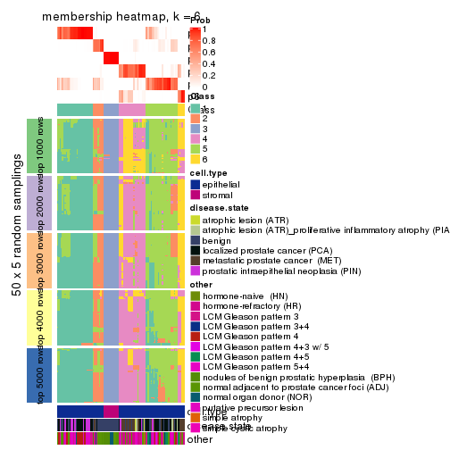
As soon as we have had the classes for columns, we can look for signatures which are significantly different between classes which can be candidate marks for certain classes. Following are the heatmaps for signatures.
Signature heatmaps where rows are scaled:
get_signatures(res, k = 2)
get_signatures(res, k = 3)
get_signatures(res, k = 4)

get_signatures(res, k = 5)
#> Error in mat[ceiling(1:nr/h_ratio), ceiling(1:nc/w_ratio), drop = FALSE]: subscript out of bounds
get_signatures(res, k = 6)
#> Error: The width or height of the raster image is zero, maybe you forget to turn off the
#> previous graphic device or it was corrupted. Run `dev.off()` to close it.

Signature heatmaps where rows are not scaled:
get_signatures(res, k = 2, scale_rows = FALSE)
get_signatures(res, k = 3, scale_rows = FALSE)
get_signatures(res, k = 4, scale_rows = FALSE)
get_signatures(res, k = 5, scale_rows = FALSE)
#> Error in mat[ceiling(1:nr/h_ratio), ceiling(1:nc/w_ratio), drop = FALSE]: subscript out of bounds
get_signatures(res, k = 6, scale_rows = FALSE)
#> Error: The width or height of the raster image is zero, maybe you forget to turn off the
#> previous graphic device or it was corrupted. Run `dev.off()` to close it.

Compare the overlap of signatures from different k:
compare_signatures(res)
get_signature() returns a data frame invisibly. TO get the list of signatures, the function
call should be assigned to a variable explicitly. In following code, if plot argument is set
to FALSE, no heatmap is plotted while only the differential analysis is performed.
# code only for demonstration
tb = get_signature(res, k = ..., plot = FALSE)
An example of the output of tb is:
#> which_row fdr mean_1 mean_2 scaled_mean_1 scaled_mean_2 km
#> 1 38 0.042760348 8.373488 9.131774 -0.5533452 0.5164555 1
#> 2 40 0.018707592 7.106213 8.469186 -0.6173731 0.5762149 1
#> 3 55 0.019134737 10.221463 11.207825 -0.6159697 0.5749050 1
#> 4 59 0.006059896 5.921854 7.869574 -0.6899429 0.6439467 1
#> 5 60 0.018055526 8.928898 10.211722 -0.6204761 0.5791110 1
#> 6 98 0.009384629 15.714769 14.887706 0.6635654 -0.6193277 2
...
The columns in tb are:
which_row: row indices corresponding to the input matrix.fdr: FDR for the differential test. mean_x: The mean value in group x.scaled_mean_x: The mean value in group x after rows are scaled.km: Row groups if k-means clustering is applied to rows.UMAP plot which shows how samples are separated.
dimension_reduction(res, k = 2, method = "UMAP")
dimension_reduction(res, k = 3, method = "UMAP")
dimension_reduction(res, k = 4, method = "UMAP")
dimension_reduction(res, k = 5, method = "UMAP")
dimension_reduction(res, k = 6, method = "UMAP")
Following heatmap shows how subgroups are split when increasing k:
collect_classes(res)
Test correlation between subgroups and known annotations. If the known annotation is numeric, one-way ANOVA test is applied, and if the known annotation is discrete, chi-squared contingency table test is applied.
test_to_known_factors(res)
#> n cell.type(p) disease.state(p) other(p) k
#> CV:mclust 78 4.59e-17 8.13e-05 1.76e-04 2
#> CV:mclust 104 2.40e-21 3.14e-09 1.09e-08 3
#> CV:mclust 84 4.25e-18 9.13e-10 8.56e-08 4
#> CV:mclust 69 6.99e-15 2.12e-08 1.07e-07 5
#> CV:mclust 80 8.39e-16 7.41e-11 3.61e-10 6
If matrix rows can be associated to genes, consider to use functional_enrichment(res,
...) to perform function enrichment for the signature genes. See this vignette for more detailed explanations.
The object with results only for a single top-value method and a single partition method can be extracted as:
res = res_list["CV", "NMF"]
# you can also extract it by
# res = res_list["CV:NMF"]
A summary of res and all the functions that can be applied to it:
res
#> A 'ConsensusPartition' object with k = 2, 3, 4, 5, 6.
#> On a matrix with 13604 rows and 104 columns.
#> Top rows (1000, 2000, 3000, 4000, 5000) are extracted by 'CV' method.
#> Subgroups are detected by 'NMF' method.
#> Performed in total 1250 partitions by row resampling.
#> Best k for subgroups seems to be 4.
#>
#> Following methods can be applied to this 'ConsensusPartition' object:
#> [1] "cola_report" "collect_classes" "collect_plots"
#> [4] "collect_stats" "colnames" "compare_signatures"
#> [7] "consensus_heatmap" "dimension_reduction" "functional_enrichment"
#> [10] "get_anno_col" "get_anno" "get_classes"
#> [13] "get_consensus" "get_matrix" "get_membership"
#> [16] "get_param" "get_signatures" "get_stats"
#> [19] "is_best_k" "is_stable_k" "membership_heatmap"
#> [22] "ncol" "nrow" "plot_ecdf"
#> [25] "rownames" "select_partition_number" "show"
#> [28] "suggest_best_k" "test_to_known_factors"
collect_plots() function collects all the plots made from res for all k (number of partitions)
into one single page to provide an easy and fast comparison between different k.
collect_plots(res)
The plots are:
k and the heatmap of
predicted classes for each k.k.k.k.All the plots in panels can be made by individual functions and they are plotted later in this section.
select_partition_number() produces several plots showing different
statistics for choosing “optimized” k. There are following statistics:
k;k, the area increased is defined as \(A_k - A_{k-1}\).The detailed explanations of these statistics can be found in the cola vignette.
Generally speaking, lower PAC score, higher mean silhouette score or higher
concordance corresponds to better partition. Rand index and Jaccard index
measure how similar the current partition is compared to partition with k-1.
If they are too similar, we won't accept k is better than k-1.
select_partition_number(res)
The numeric values for all these statistics can be obtained by get_stats().
get_stats(res)
#> k 1-PAC mean_silhouette concordance area_increased Rand Jaccard
#> 2 2 0.901 0.913 0.965 0.4995 0.502 0.502
#> 3 3 0.898 0.900 0.959 0.2765 0.837 0.682
#> 4 4 0.948 0.885 0.956 0.1427 0.865 0.646
#> 5 5 0.722 0.686 0.837 0.0834 0.871 0.569
#> 6 6 0.734 0.724 0.833 0.0458 0.945 0.746
suggest_best_k() suggests the best \(k\) based on these statistics. The rules are as follows:
suggest_best_k(res)
#> [1] 4
#> attr(,"optional")
#> [1] 2
There is also optional best \(k\) = 2 that is worth to check.
Following shows the table of the partitions (You need to click the show/hide
code output link to see it). The membership matrix (columns with name p*)
is inferred by
clue::cl_consensus()
function with the SE method. Basically the value in the membership matrix
represents the probability to belong to a certain group. The finall class
label for an item is determined with the group with highest probability it
belongs to.
In get_classes() function, the entropy is calculated from the membership
matrix and the silhouette score is calculated from the consensus matrix.
cbind(get_classes(res, k = 2), get_membership(res, k = 2))
#> class entropy silhouette p1 p2
#> GSM141334 2 0.0000 0.9484 0.000 1.000
#> GSM141335 2 0.7528 0.7352 0.216 0.784
#> GSM141336 2 0.0000 0.9484 0.000 1.000
#> GSM141337 1 0.0000 0.9799 1.000 0.000
#> GSM141184 2 0.0000 0.9484 0.000 1.000
#> GSM141185 2 0.0000 0.9484 0.000 1.000
#> GSM141186 2 0.0000 0.9484 0.000 1.000
#> GSM141243 2 0.0000 0.9484 0.000 1.000
#> GSM141244 2 0.8608 0.6321 0.284 0.716
#> GSM141246 2 0.9996 0.1210 0.488 0.512
#> GSM141247 2 0.0000 0.9484 0.000 1.000
#> GSM141248 1 0.0376 0.9760 0.996 0.004
#> GSM141249 1 0.0000 0.9799 1.000 0.000
#> GSM141258 2 0.0000 0.9484 0.000 1.000
#> GSM141259 2 0.0000 0.9484 0.000 1.000
#> GSM141260 1 0.8955 0.4973 0.688 0.312
#> GSM141261 2 0.0000 0.9484 0.000 1.000
#> GSM141262 2 0.0000 0.9484 0.000 1.000
#> GSM141263 2 0.0000 0.9484 0.000 1.000
#> GSM141338 2 0.0000 0.9484 0.000 1.000
#> GSM141339 2 0.9686 0.3974 0.396 0.604
#> GSM141340 1 0.0000 0.9799 1.000 0.000
#> GSM141265 2 0.0000 0.9484 0.000 1.000
#> GSM141267 1 0.0000 0.9799 1.000 0.000
#> GSM141330 1 0.0000 0.9799 1.000 0.000
#> GSM141266 2 0.0000 0.9484 0.000 1.000
#> GSM141264 2 0.1184 0.9382 0.016 0.984
#> GSM141341 2 0.0000 0.9484 0.000 1.000
#> GSM141342 2 0.0000 0.9484 0.000 1.000
#> GSM141343 2 0.0000 0.9484 0.000 1.000
#> GSM141356 2 0.0000 0.9484 0.000 1.000
#> GSM141357 1 0.0000 0.9799 1.000 0.000
#> GSM141358 2 0.0000 0.9484 0.000 1.000
#> GSM141359 2 0.0000 0.9484 0.000 1.000
#> GSM141360 1 0.0000 0.9799 1.000 0.000
#> GSM141361 2 0.2423 0.9212 0.040 0.960
#> GSM141362 2 0.0000 0.9484 0.000 1.000
#> GSM141363 2 0.0000 0.9484 0.000 1.000
#> GSM141364 2 0.5629 0.8356 0.132 0.868
#> GSM141365 2 0.8861 0.5996 0.304 0.696
#> GSM141366 2 0.0000 0.9484 0.000 1.000
#> GSM141367 1 0.2778 0.9300 0.952 0.048
#> GSM141368 2 0.0000 0.9484 0.000 1.000
#> GSM141369 2 0.0000 0.9484 0.000 1.000
#> GSM141370 2 0.0000 0.9484 0.000 1.000
#> GSM141371 2 0.0000 0.9484 0.000 1.000
#> GSM141372 2 0.0000 0.9484 0.000 1.000
#> GSM141373 1 0.0000 0.9799 1.000 0.000
#> GSM141374 1 0.0000 0.9799 1.000 0.000
#> GSM141375 2 0.1184 0.9384 0.016 0.984
#> GSM141376 1 0.0000 0.9799 1.000 0.000
#> GSM141377 1 0.0000 0.9799 1.000 0.000
#> GSM141378 1 0.0000 0.9799 1.000 0.000
#> GSM141380 1 0.0000 0.9799 1.000 0.000
#> GSM141387 1 0.0000 0.9799 1.000 0.000
#> GSM141395 1 0.0000 0.9799 1.000 0.000
#> GSM141397 2 0.0000 0.9484 0.000 1.000
#> GSM141398 2 0.0000 0.9484 0.000 1.000
#> GSM141401 2 0.0000 0.9484 0.000 1.000
#> GSM141399 2 0.8267 0.6713 0.260 0.740
#> GSM141379 1 0.0000 0.9799 1.000 0.000
#> GSM141381 1 0.0000 0.9799 1.000 0.000
#> GSM141383 1 0.0000 0.9799 1.000 0.000
#> GSM141384 1 0.0000 0.9799 1.000 0.000
#> GSM141385 1 0.0000 0.9799 1.000 0.000
#> GSM141388 1 0.0000 0.9799 1.000 0.000
#> GSM141389 1 0.0000 0.9799 1.000 0.000
#> GSM141391 1 0.0000 0.9799 1.000 0.000
#> GSM141394 2 0.0000 0.9484 0.000 1.000
#> GSM141396 1 0.0000 0.9799 1.000 0.000
#> GSM141403 2 0.5946 0.8227 0.144 0.856
#> GSM141404 2 0.1633 0.9328 0.024 0.976
#> GSM141386 1 0.0000 0.9799 1.000 0.000
#> GSM141382 1 0.0000 0.9799 1.000 0.000
#> GSM141390 1 0.0000 0.9799 1.000 0.000
#> GSM141393 1 0.0000 0.9799 1.000 0.000
#> GSM141400 1 0.0000 0.9799 1.000 0.000
#> GSM141402 2 0.0000 0.9484 0.000 1.000
#> GSM141392 1 0.0000 0.9799 1.000 0.000
#> GSM141405 1 0.0000 0.9799 1.000 0.000
#> GSM141406 2 0.0000 0.9484 0.000 1.000
#> GSM141407 1 0.0000 0.9799 1.000 0.000
#> GSM141408 1 0.0000 0.9799 1.000 0.000
#> GSM141409 1 0.0000 0.9799 1.000 0.000
#> GSM141410 1 0.0000 0.9799 1.000 0.000
#> GSM141411 1 0.0000 0.9799 1.000 0.000
#> GSM141412 1 0.0000 0.9799 1.000 0.000
#> GSM141413 1 0.0000 0.9799 1.000 0.000
#> GSM141414 1 0.0000 0.9799 1.000 0.000
#> GSM141415 1 0.0000 0.9799 1.000 0.000
#> GSM141416 1 0.9963 0.0325 0.536 0.464
#> GSM141417 1 0.0000 0.9799 1.000 0.000
#> GSM141420 2 0.0000 0.9484 0.000 1.000
#> GSM141421 1 0.0000 0.9799 1.000 0.000
#> GSM141422 2 0.0000 0.9484 0.000 1.000
#> GSM141423 2 0.0000 0.9484 0.000 1.000
#> GSM141424 2 0.0000 0.9484 0.000 1.000
#> GSM141427 2 0.9922 0.2482 0.448 0.552
#> GSM141428 2 0.3733 0.8922 0.072 0.928
#> GSM141418 2 0.0000 0.9484 0.000 1.000
#> GSM141419 2 0.0000 0.9484 0.000 1.000
#> GSM141425 2 0.0672 0.9436 0.008 0.992
#> GSM141426 2 0.0000 0.9484 0.000 1.000
#> GSM141429 2 0.0000 0.9484 0.000 1.000
cbind(get_classes(res, k = 3), get_membership(res, k = 3))
#> class entropy silhouette p1 p2 p3
#> GSM141334 2 0.0237 0.9419 0.000 0.996 0.004
#> GSM141335 2 0.4293 0.7926 0.164 0.832 0.004
#> GSM141336 2 0.0237 0.9419 0.000 0.996 0.004
#> GSM141337 1 0.0000 0.9722 1.000 0.000 0.000
#> GSM141184 2 0.0237 0.9419 0.000 0.996 0.004
#> GSM141185 2 0.0237 0.9419 0.000 0.996 0.004
#> GSM141186 2 0.0000 0.9418 0.000 1.000 0.000
#> GSM141243 2 0.0000 0.9418 0.000 1.000 0.000
#> GSM141244 2 0.3267 0.8469 0.116 0.884 0.000
#> GSM141246 3 0.6798 0.3237 0.400 0.016 0.584
#> GSM141247 2 0.0237 0.9419 0.000 0.996 0.004
#> GSM141248 1 0.0424 0.9645 0.992 0.008 0.000
#> GSM141249 1 0.0000 0.9722 1.000 0.000 0.000
#> GSM141258 2 0.0237 0.9419 0.000 0.996 0.004
#> GSM141259 2 0.0424 0.9404 0.000 0.992 0.008
#> GSM141260 1 0.3686 0.7958 0.860 0.140 0.000
#> GSM141261 2 0.0000 0.9418 0.000 1.000 0.000
#> GSM141262 2 0.0237 0.9419 0.000 0.996 0.004
#> GSM141263 2 0.0424 0.9404 0.000 0.992 0.008
#> GSM141338 2 0.0237 0.9419 0.000 0.996 0.004
#> GSM141339 2 0.6008 0.5319 0.332 0.664 0.004
#> GSM141340 1 0.0000 0.9722 1.000 0.000 0.000
#> GSM141265 3 0.0237 0.9354 0.000 0.004 0.996
#> GSM141267 3 0.6308 0.0597 0.492 0.000 0.508
#> GSM141330 3 0.0237 0.9358 0.004 0.000 0.996
#> GSM141266 2 0.0424 0.9404 0.000 0.992 0.008
#> GSM141264 3 0.0000 0.9383 0.000 0.000 1.000
#> GSM141341 2 0.1289 0.9261 0.000 0.968 0.032
#> GSM141342 2 0.0424 0.9404 0.000 0.992 0.008
#> GSM141343 2 0.0424 0.9404 0.000 0.992 0.008
#> GSM141356 2 0.6307 0.1124 0.000 0.512 0.488
#> GSM141357 1 0.0000 0.9722 1.000 0.000 0.000
#> GSM141358 2 0.0237 0.9419 0.000 0.996 0.004
#> GSM141359 2 0.0000 0.9418 0.000 1.000 0.000
#> GSM141360 1 0.0000 0.9722 1.000 0.000 0.000
#> GSM141361 2 0.6004 0.7551 0.156 0.780 0.064
#> GSM141362 2 0.0237 0.9419 0.000 0.996 0.004
#> GSM141363 2 0.0237 0.9419 0.000 0.996 0.004
#> GSM141364 2 0.4047 0.8127 0.148 0.848 0.004
#> GSM141365 3 0.3921 0.8548 0.080 0.036 0.884
#> GSM141366 2 0.0237 0.9415 0.000 0.996 0.004
#> GSM141367 1 0.6126 0.3891 0.644 0.004 0.352
#> GSM141368 2 0.0237 0.9415 0.000 0.996 0.004
#> GSM141369 2 0.0237 0.9415 0.000 0.996 0.004
#> GSM141370 2 0.0237 0.9415 0.000 0.996 0.004
#> GSM141371 2 0.0237 0.9415 0.000 0.996 0.004
#> GSM141372 2 0.0000 0.9418 0.000 1.000 0.000
#> GSM141373 1 0.0000 0.9722 1.000 0.000 0.000
#> GSM141374 1 0.0000 0.9722 1.000 0.000 0.000
#> GSM141375 2 0.2173 0.9098 0.048 0.944 0.008
#> GSM141376 1 0.0000 0.9722 1.000 0.000 0.000
#> GSM141377 1 0.0000 0.9722 1.000 0.000 0.000
#> GSM141378 1 0.0000 0.9722 1.000 0.000 0.000
#> GSM141380 1 0.0000 0.9722 1.000 0.000 0.000
#> GSM141387 1 0.0000 0.9722 1.000 0.000 0.000
#> GSM141395 1 0.0000 0.9722 1.000 0.000 0.000
#> GSM141397 2 0.2261 0.8967 0.000 0.932 0.068
#> GSM141398 2 0.0237 0.9419 0.000 0.996 0.004
#> GSM141401 2 0.0000 0.9418 0.000 1.000 0.000
#> GSM141399 2 0.5873 0.5737 0.312 0.684 0.004
#> GSM141379 1 0.0000 0.9722 1.000 0.000 0.000
#> GSM141381 1 0.0000 0.9722 1.000 0.000 0.000
#> GSM141383 1 0.0000 0.9722 1.000 0.000 0.000
#> GSM141384 1 0.0000 0.9722 1.000 0.000 0.000
#> GSM141385 1 0.0000 0.9722 1.000 0.000 0.000
#> GSM141388 1 0.0000 0.9722 1.000 0.000 0.000
#> GSM141389 1 0.0000 0.9722 1.000 0.000 0.000
#> GSM141391 1 0.0000 0.9722 1.000 0.000 0.000
#> GSM141394 2 0.2165 0.9009 0.000 0.936 0.064
#> GSM141396 1 0.0000 0.9722 1.000 0.000 0.000
#> GSM141403 2 0.2356 0.8901 0.072 0.928 0.000
#> GSM141404 2 0.0424 0.9390 0.008 0.992 0.000
#> GSM141386 1 0.0000 0.9722 1.000 0.000 0.000
#> GSM141382 1 0.0000 0.9722 1.000 0.000 0.000
#> GSM141390 1 0.0000 0.9722 1.000 0.000 0.000
#> GSM141393 1 0.0000 0.9722 1.000 0.000 0.000
#> GSM141400 1 0.0000 0.9722 1.000 0.000 0.000
#> GSM141402 2 0.0000 0.9418 0.000 1.000 0.000
#> GSM141392 3 0.1163 0.9199 0.028 0.000 0.972
#> GSM141405 1 0.0475 0.9648 0.992 0.004 0.004
#> GSM141406 2 0.0424 0.9404 0.000 0.992 0.008
#> GSM141407 1 0.0000 0.9722 1.000 0.000 0.000
#> GSM141408 1 0.0000 0.9722 1.000 0.000 0.000
#> GSM141409 1 0.0000 0.9722 1.000 0.000 0.000
#> GSM141410 1 0.0000 0.9722 1.000 0.000 0.000
#> GSM141411 1 0.0000 0.9722 1.000 0.000 0.000
#> GSM141412 1 0.0000 0.9722 1.000 0.000 0.000
#> GSM141413 1 0.0237 0.9685 0.996 0.004 0.000
#> GSM141414 1 0.0000 0.9722 1.000 0.000 0.000
#> GSM141415 1 0.0000 0.9722 1.000 0.000 0.000
#> GSM141416 1 0.6442 0.1702 0.564 0.432 0.004
#> GSM141417 1 0.0000 0.9722 1.000 0.000 0.000
#> GSM141420 3 0.0000 0.9383 0.000 0.000 1.000
#> GSM141421 3 0.0000 0.9383 0.000 0.000 1.000
#> GSM141422 3 0.0000 0.9383 0.000 0.000 1.000
#> GSM141423 3 0.0000 0.9383 0.000 0.000 1.000
#> GSM141424 3 0.0000 0.9383 0.000 0.000 1.000
#> GSM141427 3 0.0000 0.9383 0.000 0.000 1.000
#> GSM141428 3 0.0000 0.9383 0.000 0.000 1.000
#> GSM141418 3 0.0000 0.9383 0.000 0.000 1.000
#> GSM141419 3 0.0000 0.9383 0.000 0.000 1.000
#> GSM141425 3 0.0000 0.9383 0.000 0.000 1.000
#> GSM141426 3 0.0000 0.9383 0.000 0.000 1.000
#> GSM141429 3 0.0000 0.9383 0.000 0.000 1.000
cbind(get_classes(res, k = 4), get_membership(res, k = 4))
#> class entropy silhouette p1 p2 p3 p4
#> GSM141334 2 0.0000 0.92645 0.000 1.000 0.000 0.000
#> GSM141335 2 0.0188 0.92418 0.004 0.996 0.000 0.000
#> GSM141336 2 0.0000 0.92645 0.000 1.000 0.000 0.000
#> GSM141337 1 0.0188 0.98840 0.996 0.004 0.000 0.000
#> GSM141184 2 0.0000 0.92645 0.000 1.000 0.000 0.000
#> GSM141185 2 0.0000 0.92645 0.000 1.000 0.000 0.000
#> GSM141186 4 0.2011 0.84178 0.000 0.080 0.000 0.920
#> GSM141243 2 0.1940 0.85936 0.000 0.924 0.000 0.076
#> GSM141244 2 0.3610 0.69605 0.200 0.800 0.000 0.000
#> GSM141246 2 0.3725 0.73697 0.008 0.812 0.180 0.000
#> GSM141247 2 0.0000 0.92645 0.000 1.000 0.000 0.000
#> GSM141248 1 0.3569 0.75226 0.804 0.196 0.000 0.000
#> GSM141249 1 0.0000 0.99128 1.000 0.000 0.000 0.000
#> GSM141258 2 0.0000 0.92645 0.000 1.000 0.000 0.000
#> GSM141259 4 0.0000 0.88483 0.000 0.000 0.000 1.000
#> GSM141260 1 0.0188 0.98785 0.996 0.004 0.000 0.000
#> GSM141261 4 0.4817 0.42052 0.000 0.388 0.000 0.612
#> GSM141262 2 0.0000 0.92645 0.000 1.000 0.000 0.000
#> GSM141263 4 0.0000 0.88483 0.000 0.000 0.000 1.000
#> GSM141338 2 0.0000 0.92645 0.000 1.000 0.000 0.000
#> GSM141339 2 0.0000 0.92645 0.000 1.000 0.000 0.000
#> GSM141340 1 0.0188 0.98840 0.996 0.004 0.000 0.000
#> GSM141265 3 0.1792 0.89073 0.000 0.000 0.932 0.068
#> GSM141267 3 0.4961 0.17913 0.448 0.000 0.552 0.000
#> GSM141330 3 0.0000 0.95799 0.000 0.000 1.000 0.000
#> GSM141266 4 0.0188 0.88373 0.000 0.004 0.000 0.996
#> GSM141264 3 0.0000 0.95799 0.000 0.000 1.000 0.000
#> GSM141341 4 0.0000 0.88483 0.000 0.000 0.000 1.000
#> GSM141342 4 0.0000 0.88483 0.000 0.000 0.000 1.000
#> GSM141343 4 0.0000 0.88483 0.000 0.000 0.000 1.000
#> GSM141356 2 0.0336 0.92191 0.000 0.992 0.008 0.000
#> GSM141357 1 0.0000 0.99128 1.000 0.000 0.000 0.000
#> GSM141358 2 0.0817 0.90856 0.000 0.976 0.000 0.024
#> GSM141359 4 0.4992 0.18759 0.000 0.476 0.000 0.524
#> GSM141360 1 0.0000 0.99128 1.000 0.000 0.000 0.000
#> GSM141361 4 0.1722 0.84300 0.048 0.000 0.008 0.944
#> GSM141362 2 0.0469 0.91832 0.000 0.988 0.000 0.012
#> GSM141363 2 0.0000 0.92645 0.000 1.000 0.000 0.000
#> GSM141364 2 0.0000 0.92645 0.000 1.000 0.000 0.000
#> GSM141365 4 0.5193 0.29163 0.008 0.000 0.412 0.580
#> GSM141366 4 0.0000 0.88483 0.000 0.000 0.000 1.000
#> GSM141367 4 0.0188 0.88272 0.004 0.000 0.000 0.996
#> GSM141368 4 0.0000 0.88483 0.000 0.000 0.000 1.000
#> GSM141369 4 0.0000 0.88483 0.000 0.000 0.000 1.000
#> GSM141370 4 0.4998 0.15096 0.000 0.488 0.000 0.512
#> GSM141371 4 0.4564 0.53938 0.000 0.328 0.000 0.672
#> GSM141372 2 0.4967 -0.00201 0.000 0.548 0.000 0.452
#> GSM141373 1 0.0188 0.98840 0.996 0.004 0.000 0.000
#> GSM141374 1 0.0000 0.99128 1.000 0.000 0.000 0.000
#> GSM141375 4 0.0000 0.88483 0.000 0.000 0.000 1.000
#> GSM141376 1 0.0000 0.99128 1.000 0.000 0.000 0.000
#> GSM141377 1 0.0000 0.99128 1.000 0.000 0.000 0.000
#> GSM141378 1 0.0000 0.99128 1.000 0.000 0.000 0.000
#> GSM141380 1 0.0000 0.99128 1.000 0.000 0.000 0.000
#> GSM141387 1 0.0000 0.99128 1.000 0.000 0.000 0.000
#> GSM141395 1 0.0000 0.99128 1.000 0.000 0.000 0.000
#> GSM141397 4 0.0000 0.88483 0.000 0.000 0.000 1.000
#> GSM141398 2 0.0000 0.92645 0.000 1.000 0.000 0.000
#> GSM141401 4 0.0376 0.88245 0.004 0.004 0.000 0.992
#> GSM141399 2 0.0188 0.92418 0.004 0.996 0.000 0.000
#> GSM141379 1 0.0000 0.99128 1.000 0.000 0.000 0.000
#> GSM141381 1 0.0000 0.99128 1.000 0.000 0.000 0.000
#> GSM141383 1 0.0000 0.99128 1.000 0.000 0.000 0.000
#> GSM141384 1 0.0000 0.99128 1.000 0.000 0.000 0.000
#> GSM141385 1 0.0000 0.99128 1.000 0.000 0.000 0.000
#> GSM141388 1 0.0000 0.99128 1.000 0.000 0.000 0.000
#> GSM141389 1 0.0000 0.99128 1.000 0.000 0.000 0.000
#> GSM141391 1 0.0000 0.99128 1.000 0.000 0.000 0.000
#> GSM141394 2 0.0000 0.92645 0.000 1.000 0.000 0.000
#> GSM141396 1 0.0000 0.99128 1.000 0.000 0.000 0.000
#> GSM141403 2 0.4967 0.18205 0.452 0.548 0.000 0.000
#> GSM141404 2 0.0000 0.92645 0.000 1.000 0.000 0.000
#> GSM141386 1 0.0000 0.99128 1.000 0.000 0.000 0.000
#> GSM141382 1 0.0000 0.99128 1.000 0.000 0.000 0.000
#> GSM141390 1 0.0000 0.99128 1.000 0.000 0.000 0.000
#> GSM141393 1 0.0000 0.99128 1.000 0.000 0.000 0.000
#> GSM141400 1 0.0000 0.99128 1.000 0.000 0.000 0.000
#> GSM141402 4 0.2011 0.84165 0.000 0.080 0.000 0.920
#> GSM141392 3 0.0188 0.95443 0.004 0.000 0.996 0.000
#> GSM141405 4 0.0188 0.88272 0.004 0.000 0.000 0.996
#> GSM141406 4 0.0000 0.88483 0.000 0.000 0.000 1.000
#> GSM141407 1 0.0000 0.99128 1.000 0.000 0.000 0.000
#> GSM141408 1 0.0000 0.99128 1.000 0.000 0.000 0.000
#> GSM141409 1 0.0188 0.98840 0.996 0.004 0.000 0.000
#> GSM141410 1 0.0000 0.99128 1.000 0.000 0.000 0.000
#> GSM141411 1 0.0000 0.99128 1.000 0.000 0.000 0.000
#> GSM141412 1 0.0000 0.99128 1.000 0.000 0.000 0.000
#> GSM141413 1 0.2081 0.90343 0.916 0.084 0.000 0.000
#> GSM141414 1 0.0188 0.98840 0.996 0.004 0.000 0.000
#> GSM141415 1 0.0000 0.99128 1.000 0.000 0.000 0.000
#> GSM141416 2 0.0188 0.92418 0.004 0.996 0.000 0.000
#> GSM141417 1 0.0000 0.99128 1.000 0.000 0.000 0.000
#> GSM141420 3 0.0000 0.95799 0.000 0.000 1.000 0.000
#> GSM141421 3 0.0000 0.95799 0.000 0.000 1.000 0.000
#> GSM141422 3 0.0000 0.95799 0.000 0.000 1.000 0.000
#> GSM141423 3 0.0000 0.95799 0.000 0.000 1.000 0.000
#> GSM141424 3 0.0000 0.95799 0.000 0.000 1.000 0.000
#> GSM141427 3 0.0000 0.95799 0.000 0.000 1.000 0.000
#> GSM141428 3 0.0000 0.95799 0.000 0.000 1.000 0.000
#> GSM141418 3 0.0336 0.95087 0.000 0.008 0.992 0.000
#> GSM141419 3 0.0000 0.95799 0.000 0.000 1.000 0.000
#> GSM141425 3 0.0000 0.95799 0.000 0.000 1.000 0.000
#> GSM141426 3 0.0000 0.95799 0.000 0.000 1.000 0.000
#> GSM141429 3 0.0000 0.95799 0.000 0.000 1.000 0.000
cbind(get_classes(res, k = 5), get_membership(res, k = 5))
#> class entropy silhouette p1 p2 p3 p4 p5
#> GSM141334 2 0.2471 0.7388 0.000 0.864 0.000 0.000 0.136
#> GSM141335 5 0.4219 0.2480 0.000 0.416 0.000 0.000 0.584
#> GSM141336 2 0.0794 0.8396 0.000 0.972 0.000 0.000 0.028
#> GSM141337 5 0.4339 0.4312 0.336 0.012 0.000 0.000 0.652
#> GSM141184 5 0.3932 0.3720 0.000 0.328 0.000 0.000 0.672
#> GSM141185 2 0.1121 0.8314 0.000 0.956 0.000 0.000 0.044
#> GSM141186 4 0.4026 0.6057 0.000 0.244 0.000 0.736 0.020
#> GSM141243 2 0.2351 0.8096 0.000 0.896 0.000 0.088 0.016
#> GSM141244 5 0.6145 0.3757 0.156 0.312 0.000 0.000 0.532
#> GSM141246 5 0.5185 0.4806 0.004 0.168 0.128 0.000 0.700
#> GSM141247 2 0.0510 0.8414 0.000 0.984 0.000 0.000 0.016
#> GSM141248 5 0.5826 0.4059 0.332 0.112 0.000 0.000 0.556
#> GSM141249 1 0.4268 0.0994 0.556 0.000 0.000 0.000 0.444
#> GSM141258 2 0.0963 0.8357 0.000 0.964 0.000 0.000 0.036
#> GSM141259 4 0.0000 0.8756 0.000 0.000 0.000 1.000 0.000
#> GSM141260 5 0.4692 0.4477 0.320 0.024 0.000 0.004 0.652
#> GSM141261 2 0.4127 0.5536 0.000 0.680 0.000 0.312 0.008
#> GSM141262 2 0.0609 0.8405 0.000 0.980 0.000 0.000 0.020
#> GSM141263 4 0.0290 0.8757 0.000 0.000 0.000 0.992 0.008
#> GSM141338 2 0.0510 0.8413 0.000 0.984 0.000 0.000 0.016
#> GSM141339 2 0.3707 0.5106 0.000 0.716 0.000 0.000 0.284
#> GSM141340 1 0.3659 0.6766 0.768 0.012 0.000 0.000 0.220
#> GSM141265 3 0.3906 0.7715 0.000 0.000 0.800 0.132 0.068
#> GSM141267 5 0.5595 0.1740 0.084 0.000 0.356 0.000 0.560
#> GSM141330 3 0.4210 0.3910 0.000 0.000 0.588 0.000 0.412
#> GSM141266 4 0.2471 0.8059 0.000 0.000 0.000 0.864 0.136
#> GSM141264 3 0.3970 0.7077 0.000 0.000 0.744 0.020 0.236
#> GSM141341 4 0.0000 0.8756 0.000 0.000 0.000 1.000 0.000
#> GSM141342 4 0.0324 0.8756 0.000 0.004 0.000 0.992 0.004
#> GSM141343 4 0.2011 0.8435 0.000 0.004 0.000 0.908 0.088
#> GSM141356 2 0.1809 0.8141 0.000 0.928 0.012 0.000 0.060
#> GSM141357 1 0.1831 0.8400 0.920 0.004 0.000 0.000 0.076
#> GSM141358 2 0.4194 0.7059 0.000 0.780 0.000 0.088 0.132
#> GSM141359 2 0.3093 0.7499 0.000 0.824 0.000 0.168 0.008
#> GSM141360 1 0.3333 0.7127 0.788 0.004 0.000 0.000 0.208
#> GSM141361 4 0.7148 0.0623 0.176 0.024 0.004 0.408 0.388
#> GSM141362 2 0.1549 0.8268 0.000 0.944 0.000 0.016 0.040
#> GSM141363 2 0.0000 0.8401 0.000 1.000 0.000 0.000 0.000
#> GSM141364 2 0.0798 0.8363 0.008 0.976 0.000 0.000 0.016
#> GSM141365 5 0.8489 0.0705 0.276 0.020 0.084 0.288 0.332
#> GSM141366 4 0.0162 0.8757 0.000 0.004 0.000 0.996 0.000
#> GSM141367 4 0.2793 0.8205 0.036 0.000 0.000 0.876 0.088
#> GSM141368 4 0.0324 0.8756 0.000 0.004 0.000 0.992 0.004
#> GSM141369 4 0.1697 0.8484 0.000 0.060 0.000 0.932 0.008
#> GSM141370 2 0.5204 0.2884 0.000 0.560 0.000 0.392 0.048
#> GSM141371 4 0.5009 0.1136 0.000 0.428 0.000 0.540 0.032
#> GSM141372 2 0.2722 0.7890 0.000 0.872 0.000 0.108 0.020
#> GSM141373 5 0.3143 0.5174 0.204 0.000 0.000 0.000 0.796
#> GSM141374 1 0.1197 0.8422 0.952 0.000 0.000 0.000 0.048
#> GSM141375 4 0.1251 0.8648 0.008 0.000 0.000 0.956 0.036
#> GSM141376 1 0.1341 0.8410 0.944 0.000 0.000 0.000 0.056
#> GSM141377 1 0.1410 0.8405 0.940 0.000 0.000 0.000 0.060
#> GSM141378 5 0.4302 -0.0276 0.480 0.000 0.000 0.000 0.520
#> GSM141380 1 0.0609 0.8461 0.980 0.000 0.000 0.000 0.020
#> GSM141387 1 0.0510 0.8476 0.984 0.000 0.000 0.000 0.016
#> GSM141395 5 0.3491 0.5110 0.228 0.000 0.000 0.004 0.768
#> GSM141397 4 0.1197 0.8620 0.000 0.000 0.000 0.952 0.048
#> GSM141398 2 0.0510 0.8410 0.000 0.984 0.000 0.000 0.016
#> GSM141401 4 0.0404 0.8751 0.000 0.000 0.000 0.988 0.012
#> GSM141399 5 0.4182 0.3586 0.004 0.352 0.000 0.000 0.644
#> GSM141379 1 0.1270 0.8352 0.948 0.000 0.000 0.000 0.052
#> GSM141381 1 0.1671 0.8232 0.924 0.000 0.000 0.000 0.076
#> GSM141383 1 0.1043 0.8425 0.960 0.000 0.000 0.000 0.040
#> GSM141384 1 0.0703 0.8459 0.976 0.000 0.000 0.000 0.024
#> GSM141385 1 0.1608 0.8378 0.928 0.000 0.000 0.000 0.072
#> GSM141388 1 0.0794 0.8475 0.972 0.000 0.000 0.000 0.028
#> GSM141389 1 0.1410 0.8319 0.940 0.000 0.000 0.000 0.060
#> GSM141391 1 0.2605 0.7901 0.852 0.000 0.000 0.000 0.148
#> GSM141394 5 0.3586 0.4364 0.000 0.264 0.000 0.000 0.736
#> GSM141396 1 0.4171 0.3456 0.604 0.000 0.000 0.000 0.396
#> GSM141403 5 0.5700 0.4432 0.244 0.088 0.000 0.020 0.648
#> GSM141404 2 0.0404 0.8410 0.000 0.988 0.000 0.000 0.012
#> GSM141386 5 0.4150 0.2522 0.388 0.000 0.000 0.000 0.612
#> GSM141382 1 0.0794 0.8453 0.972 0.000 0.000 0.000 0.028
#> GSM141390 1 0.2471 0.7925 0.864 0.000 0.000 0.000 0.136
#> GSM141393 1 0.2074 0.8219 0.896 0.000 0.000 0.000 0.104
#> GSM141400 1 0.3109 0.7265 0.800 0.000 0.000 0.000 0.200
#> GSM141402 2 0.4440 0.1058 0.000 0.528 0.000 0.468 0.004
#> GSM141392 3 0.2448 0.8605 0.020 0.000 0.892 0.000 0.088
#> GSM141405 4 0.3421 0.7847 0.080 0.000 0.000 0.840 0.080
#> GSM141406 4 0.0963 0.8675 0.000 0.000 0.000 0.964 0.036
#> GSM141407 1 0.1792 0.8171 0.916 0.000 0.000 0.000 0.084
#> GSM141408 1 0.0609 0.8475 0.980 0.000 0.000 0.000 0.020
#> GSM141409 1 0.3999 0.5877 0.740 0.020 0.000 0.000 0.240
#> GSM141410 1 0.1671 0.8235 0.924 0.000 0.000 0.000 0.076
#> GSM141411 1 0.2329 0.7970 0.876 0.000 0.000 0.000 0.124
#> GSM141412 1 0.1544 0.8276 0.932 0.000 0.000 0.000 0.068
#> GSM141413 5 0.5236 0.3240 0.408 0.048 0.000 0.000 0.544
#> GSM141414 5 0.4561 0.0648 0.488 0.008 0.000 0.000 0.504
#> GSM141415 1 0.2690 0.7479 0.844 0.000 0.000 0.000 0.156
#> GSM141416 5 0.4297 0.1021 0.000 0.472 0.000 0.000 0.528
#> GSM141417 1 0.3661 0.5962 0.724 0.000 0.000 0.000 0.276
#> GSM141420 3 0.0000 0.9194 0.000 0.000 1.000 0.000 0.000
#> GSM141421 3 0.0000 0.9194 0.000 0.000 1.000 0.000 0.000
#> GSM141422 3 0.0000 0.9194 0.000 0.000 1.000 0.000 0.000
#> GSM141423 3 0.0000 0.9194 0.000 0.000 1.000 0.000 0.000
#> GSM141424 3 0.0000 0.9194 0.000 0.000 1.000 0.000 0.000
#> GSM141427 3 0.0000 0.9194 0.000 0.000 1.000 0.000 0.000
#> GSM141428 3 0.0880 0.9051 0.000 0.000 0.968 0.000 0.032
#> GSM141418 3 0.1410 0.8782 0.000 0.060 0.940 0.000 0.000
#> GSM141419 3 0.2074 0.8605 0.000 0.000 0.896 0.000 0.104
#> GSM141425 3 0.0000 0.9194 0.000 0.000 1.000 0.000 0.000
#> GSM141426 3 0.0000 0.9194 0.000 0.000 1.000 0.000 0.000
#> GSM141429 3 0.0000 0.9194 0.000 0.000 1.000 0.000 0.000
cbind(get_classes(res, k = 6), get_membership(res, k = 6))
#> class entropy silhouette p1 p2 p3 p4 p5 p6
#> GSM141334 2 0.4389 0.542 0.000 0.660 0.000 0.000 0.288 0.052
#> GSM141335 5 0.2618 0.703 0.000 0.076 0.000 0.000 0.872 0.052
#> GSM141336 2 0.1802 0.815 0.000 0.916 0.000 0.000 0.072 0.012
#> GSM141337 5 0.4151 0.644 0.076 0.004 0.000 0.000 0.744 0.176
#> GSM141184 5 0.2237 0.700 0.000 0.036 0.000 0.000 0.896 0.068
#> GSM141185 2 0.3539 0.684 0.000 0.756 0.000 0.000 0.220 0.024
#> GSM141186 4 0.3229 0.844 0.000 0.064 0.000 0.852 0.044 0.040
#> GSM141243 2 0.4512 0.675 0.000 0.700 0.000 0.232 0.052 0.016
#> GSM141244 5 0.2556 0.713 0.032 0.048 0.000 0.000 0.892 0.028
#> GSM141246 5 0.4561 0.194 0.000 0.004 0.028 0.000 0.544 0.424
#> GSM141247 2 0.1563 0.822 0.000 0.932 0.000 0.000 0.056 0.012
#> GSM141248 5 0.2366 0.723 0.056 0.024 0.000 0.000 0.900 0.020
#> GSM141249 5 0.4131 0.536 0.272 0.000 0.000 0.000 0.688 0.040
#> GSM141258 2 0.3046 0.726 0.000 0.800 0.000 0.000 0.188 0.012
#> GSM141259 4 0.1176 0.890 0.000 0.000 0.000 0.956 0.024 0.020
#> GSM141260 5 0.3461 0.676 0.032 0.012 0.000 0.008 0.824 0.124
#> GSM141261 2 0.4278 0.479 0.000 0.616 0.000 0.360 0.020 0.004
#> GSM141262 2 0.1297 0.825 0.000 0.948 0.000 0.000 0.040 0.012
#> GSM141263 4 0.0820 0.893 0.000 0.000 0.000 0.972 0.016 0.012
#> GSM141338 2 0.0777 0.824 0.000 0.972 0.000 0.000 0.024 0.004
#> GSM141339 5 0.3626 0.528 0.004 0.288 0.000 0.000 0.704 0.004
#> GSM141340 5 0.4449 0.533 0.284 0.004 0.000 0.000 0.664 0.048
#> GSM141265 3 0.5974 0.471 0.000 0.000 0.584 0.252 0.092 0.072
#> GSM141267 5 0.3192 0.668 0.020 0.000 0.048 0.000 0.848 0.084
#> GSM141330 3 0.5461 0.340 0.000 0.000 0.528 0.000 0.140 0.332
#> GSM141266 4 0.3543 0.742 0.000 0.000 0.000 0.768 0.032 0.200
#> GSM141264 3 0.5646 0.301 0.000 0.000 0.504 0.048 0.052 0.396
#> GSM141341 4 0.0000 0.893 0.000 0.000 0.000 1.000 0.000 0.000
#> GSM141342 4 0.0363 0.892 0.000 0.000 0.000 0.988 0.000 0.012
#> GSM141343 4 0.3330 0.612 0.000 0.000 0.000 0.716 0.000 0.284
#> GSM141356 2 0.2697 0.792 0.004 0.884 0.032 0.000 0.016 0.064
#> GSM141357 1 0.3499 0.763 0.816 0.020 0.000 0.000 0.036 0.128
#> GSM141358 2 0.4634 0.546 0.000 0.640 0.000 0.056 0.004 0.300
#> GSM141359 2 0.1531 0.820 0.000 0.928 0.000 0.068 0.000 0.004
#> GSM141360 1 0.3492 0.716 0.796 0.016 0.000 0.000 0.020 0.168
#> GSM141361 6 0.5293 0.652 0.140 0.024 0.000 0.148 0.008 0.680
#> GSM141362 2 0.2763 0.800 0.000 0.868 0.000 0.036 0.008 0.088
#> GSM141363 2 0.0000 0.822 0.000 1.000 0.000 0.000 0.000 0.000
#> GSM141364 2 0.2038 0.810 0.020 0.920 0.000 0.000 0.032 0.028
#> GSM141365 6 0.5830 0.669 0.248 0.024 0.016 0.076 0.012 0.624
#> GSM141366 4 0.0291 0.893 0.000 0.004 0.000 0.992 0.000 0.004
#> GSM141367 4 0.3299 0.813 0.012 0.000 0.000 0.820 0.028 0.140
#> GSM141368 4 0.0405 0.893 0.000 0.004 0.000 0.988 0.000 0.008
#> GSM141369 4 0.2743 0.768 0.000 0.164 0.000 0.828 0.000 0.008
#> GSM141370 2 0.5026 0.618 0.000 0.656 0.000 0.180 0.004 0.160
#> GSM141371 2 0.5175 0.495 0.000 0.588 0.000 0.308 0.004 0.100
#> GSM141372 2 0.1464 0.821 0.000 0.944 0.000 0.036 0.004 0.016
#> GSM141373 6 0.4376 0.585 0.084 0.000 0.000 0.000 0.212 0.704
#> GSM141374 1 0.0909 0.835 0.968 0.000 0.000 0.000 0.012 0.020
#> GSM141375 4 0.1442 0.888 0.004 0.000 0.000 0.944 0.012 0.040
#> GSM141376 1 0.0713 0.833 0.972 0.000 0.000 0.000 0.000 0.028
#> GSM141377 1 0.0935 0.831 0.964 0.000 0.000 0.000 0.004 0.032
#> GSM141378 6 0.4312 0.556 0.368 0.000 0.000 0.000 0.028 0.604
#> GSM141380 1 0.1845 0.822 0.920 0.000 0.000 0.000 0.052 0.028
#> GSM141387 1 0.0363 0.835 0.988 0.000 0.000 0.000 0.000 0.012
#> GSM141395 6 0.4818 0.598 0.112 0.000 0.000 0.004 0.212 0.672
#> GSM141397 4 0.2875 0.841 0.000 0.000 0.000 0.852 0.052 0.096
#> GSM141398 2 0.1719 0.822 0.000 0.924 0.000 0.000 0.060 0.016
#> GSM141401 4 0.0603 0.895 0.000 0.000 0.000 0.980 0.016 0.004
#> GSM141399 5 0.5243 0.264 0.004 0.088 0.000 0.000 0.532 0.376
#> GSM141379 1 0.2660 0.795 0.868 0.000 0.000 0.000 0.084 0.048
#> GSM141381 1 0.2263 0.818 0.896 0.000 0.000 0.000 0.056 0.048
#> GSM141383 1 0.1765 0.825 0.924 0.000 0.000 0.000 0.024 0.052
#> GSM141384 1 0.1765 0.827 0.924 0.000 0.000 0.000 0.024 0.052
#> GSM141385 1 0.3141 0.780 0.836 0.004 0.000 0.000 0.048 0.112
#> GSM141388 1 0.1074 0.833 0.960 0.000 0.000 0.000 0.012 0.028
#> GSM141389 1 0.2263 0.817 0.896 0.000 0.000 0.000 0.056 0.048
#> GSM141391 1 0.2212 0.791 0.880 0.000 0.000 0.000 0.008 0.112
#> GSM141394 6 0.4409 0.198 0.000 0.032 0.000 0.000 0.380 0.588
#> GSM141396 1 0.4292 0.296 0.628 0.000 0.000 0.000 0.032 0.340
#> GSM141403 6 0.5549 0.699 0.208 0.060 0.000 0.024 0.044 0.664
#> GSM141404 2 0.1053 0.821 0.004 0.964 0.000 0.000 0.012 0.020
#> GSM141386 6 0.4515 0.681 0.280 0.000 0.000 0.000 0.064 0.656
#> GSM141382 1 0.1367 0.831 0.944 0.000 0.000 0.000 0.012 0.044
#> GSM141390 1 0.2147 0.804 0.896 0.000 0.000 0.000 0.020 0.084
#> GSM141393 1 0.1700 0.813 0.916 0.000 0.000 0.000 0.004 0.080
#> GSM141400 1 0.2848 0.729 0.816 0.000 0.000 0.000 0.008 0.176
#> GSM141402 2 0.2653 0.776 0.000 0.844 0.000 0.144 0.000 0.012
#> GSM141392 3 0.2896 0.756 0.016 0.000 0.824 0.000 0.000 0.160
#> GSM141405 4 0.4248 0.765 0.044 0.000 0.000 0.768 0.048 0.140
#> GSM141406 4 0.1498 0.887 0.000 0.000 0.000 0.940 0.032 0.028
#> GSM141407 1 0.3776 0.689 0.756 0.000 0.000 0.000 0.196 0.048
#> GSM141408 1 0.0692 0.835 0.976 0.000 0.000 0.000 0.004 0.020
#> GSM141409 1 0.4131 0.659 0.744 0.004 0.000 0.000 0.180 0.072
#> GSM141410 1 0.3530 0.734 0.792 0.000 0.000 0.000 0.152 0.056
#> GSM141411 1 0.3455 0.750 0.800 0.000 0.000 0.000 0.144 0.056
#> GSM141412 1 0.3445 0.733 0.796 0.000 0.000 0.000 0.156 0.048
#> GSM141413 5 0.4253 0.672 0.132 0.012 0.000 0.000 0.756 0.100
#> GSM141414 5 0.2844 0.712 0.104 0.016 0.000 0.000 0.860 0.020
#> GSM141415 1 0.5150 0.488 0.608 0.000 0.000 0.000 0.256 0.136
#> GSM141416 5 0.2883 0.708 0.008 0.092 0.000 0.000 0.860 0.040
#> GSM141417 5 0.4756 0.259 0.408 0.000 0.000 0.000 0.540 0.052
#> GSM141420 3 0.0000 0.875 0.000 0.000 1.000 0.000 0.000 0.000
#> GSM141421 3 0.0000 0.875 0.000 0.000 1.000 0.000 0.000 0.000
#> GSM141422 3 0.0000 0.875 0.000 0.000 1.000 0.000 0.000 0.000
#> GSM141423 3 0.0000 0.875 0.000 0.000 1.000 0.000 0.000 0.000
#> GSM141424 3 0.0000 0.875 0.000 0.000 1.000 0.000 0.000 0.000
#> GSM141427 3 0.0000 0.875 0.000 0.000 1.000 0.000 0.000 0.000
#> GSM141428 3 0.0972 0.860 0.000 0.000 0.964 0.000 0.008 0.028
#> GSM141418 3 0.1714 0.809 0.000 0.092 0.908 0.000 0.000 0.000
#> GSM141419 3 0.2416 0.775 0.000 0.000 0.844 0.000 0.000 0.156
#> GSM141425 3 0.0000 0.875 0.000 0.000 1.000 0.000 0.000 0.000
#> GSM141426 3 0.0000 0.875 0.000 0.000 1.000 0.000 0.000 0.000
#> GSM141429 3 0.0000 0.875 0.000 0.000 1.000 0.000 0.000 0.000
Heatmaps for the consensus matrix. It visualizes the probability of two samples to be in a same group.
consensus_heatmap(res, k = 2)
consensus_heatmap(res, k = 3)
consensus_heatmap(res, k = 4)
consensus_heatmap(res, k = 5)
consensus_heatmap(res, k = 6)
Heatmaps for the membership of samples in all partitions to see how consistent they are:
membership_heatmap(res, k = 2)

membership_heatmap(res, k = 3)
membership_heatmap(res, k = 4)
membership_heatmap(res, k = 5)
membership_heatmap(res, k = 6)
As soon as we have had the classes for columns, we can look for signatures which are significantly different between classes which can be candidate marks for certain classes. Following are the heatmaps for signatures.
Signature heatmaps where rows are scaled:
get_signatures(res, k = 2)

get_signatures(res, k = 3)
get_signatures(res, k = 4)
get_signatures(res, k = 5)
#> Error in mat[ceiling(1:nr/h_ratio), ceiling(1:nc/w_ratio), drop = FALSE]: subscript out of bounds
get_signatures(res, k = 6)
#> Error: The width or height of the raster image is zero, maybe you forget to turn off the
#> previous graphic device or it was corrupted. Run `dev.off()` to close it.

Signature heatmaps where rows are not scaled:
get_signatures(res, k = 2, scale_rows = FALSE)
get_signatures(res, k = 3, scale_rows = FALSE)

get_signatures(res, k = 4, scale_rows = FALSE)
get_signatures(res, k = 5, scale_rows = FALSE)
#> Error in mat[ceiling(1:nr/h_ratio), ceiling(1:nc/w_ratio), drop = FALSE]: subscript out of bounds
get_signatures(res, k = 6, scale_rows = FALSE)
#> Error: The width or height of the raster image is zero, maybe you forget to turn off the
#> previous graphic device or it was corrupted. Run `dev.off()` to close it.

Compare the overlap of signatures from different k:
compare_signatures(res)
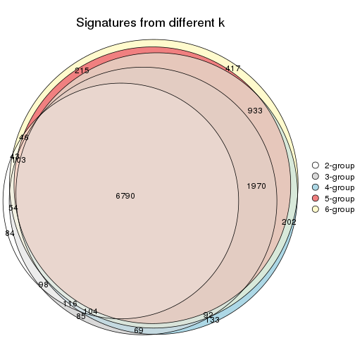
get_signature() returns a data frame invisibly. TO get the list of signatures, the function
call should be assigned to a variable explicitly. In following code, if plot argument is set
to FALSE, no heatmap is plotted while only the differential analysis is performed.
# code only for demonstration
tb = get_signature(res, k = ..., plot = FALSE)
An example of the output of tb is:
#> which_row fdr mean_1 mean_2 scaled_mean_1 scaled_mean_2 km
#> 1 38 0.042760348 8.373488 9.131774 -0.5533452 0.5164555 1
#> 2 40 0.018707592 7.106213 8.469186 -0.6173731 0.5762149 1
#> 3 55 0.019134737 10.221463 11.207825 -0.6159697 0.5749050 1
#> 4 59 0.006059896 5.921854 7.869574 -0.6899429 0.6439467 1
#> 5 60 0.018055526 8.928898 10.211722 -0.6204761 0.5791110 1
#> 6 98 0.009384629 15.714769 14.887706 0.6635654 -0.6193277 2
...
The columns in tb are:
which_row: row indices corresponding to the input matrix.fdr: FDR for the differential test. mean_x: The mean value in group x.scaled_mean_x: The mean value in group x after rows are scaled.km: Row groups if k-means clustering is applied to rows.UMAP plot which shows how samples are separated.
dimension_reduction(res, k = 2, method = "UMAP")
dimension_reduction(res, k = 3, method = "UMAP")
dimension_reduction(res, k = 4, method = "UMAP")
dimension_reduction(res, k = 5, method = "UMAP")
dimension_reduction(res, k = 6, method = "UMAP")
Following heatmap shows how subgroups are split when increasing k:
collect_classes(res)
Test correlation between subgroups and known annotations. If the known annotation is numeric, one-way ANOVA test is applied, and if the known annotation is discrete, chi-squared contingency table test is applied.
test_to_known_factors(res)
#> n cell.type(p) disease.state(p) other(p) k
#> CV:NMF 99 2.92e-02 2.18e-07 6.35e-05 2
#> CV:NMF 99 4.98e-15 1.98e-09 7.17e-07 3
#> CV:NMF 97 5.95e-15 4.54e-09 7.51e-07 4
#> CV:NMF 80 1.64e-12 2.28e-07 7.07e-08 5
#> CV:NMF 93 8.35e-17 4.19e-09 1.26e-09 6
If matrix rows can be associated to genes, consider to use functional_enrichment(res,
...) to perform function enrichment for the signature genes. See this vignette for more detailed explanations.
The object with results only for a single top-value method and a single partition method can be extracted as:
res = res_list["MAD", "hclust"]
# you can also extract it by
# res = res_list["MAD:hclust"]
A summary of res and all the functions that can be applied to it:
res
#> A 'ConsensusPartition' object with k = 2, 3, 4, 5, 6.
#> On a matrix with 13604 rows and 104 columns.
#> Top rows (1000, 2000, 3000, 4000, 5000) are extracted by 'MAD' method.
#> Subgroups are detected by 'hclust' method.
#> Performed in total 1250 partitions by row resampling.
#> Best k for subgroups seems to be 2.
#>
#> Following methods can be applied to this 'ConsensusPartition' object:
#> [1] "cola_report" "collect_classes" "collect_plots"
#> [4] "collect_stats" "colnames" "compare_signatures"
#> [7] "consensus_heatmap" "dimension_reduction" "functional_enrichment"
#> [10] "get_anno_col" "get_anno" "get_classes"
#> [13] "get_consensus" "get_matrix" "get_membership"
#> [16] "get_param" "get_signatures" "get_stats"
#> [19] "is_best_k" "is_stable_k" "membership_heatmap"
#> [22] "ncol" "nrow" "plot_ecdf"
#> [25] "rownames" "select_partition_number" "show"
#> [28] "suggest_best_k" "test_to_known_factors"
collect_plots() function collects all the plots made from res for all k (number of partitions)
into one single page to provide an easy and fast comparison between different k.
collect_plots(res)
The plots are:
k and the heatmap of
predicted classes for each k.k.k.k.All the plots in panels can be made by individual functions and they are plotted later in this section.
select_partition_number() produces several plots showing different
statistics for choosing “optimized” k. There are following statistics:
k;k, the area increased is defined as \(A_k - A_{k-1}\).The detailed explanations of these statistics can be found in the cola vignette.
Generally speaking, lower PAC score, higher mean silhouette score or higher
concordance corresponds to better partition. Rand index and Jaccard index
measure how similar the current partition is compared to partition with k-1.
If they are too similar, we won't accept k is better than k-1.
select_partition_number(res)
The numeric values for all these statistics can be obtained by get_stats().
get_stats(res)
#> k 1-PAC mean_silhouette concordance area_increased Rand Jaccard
#> 2 2 0.208 0.636 0.812 0.3977 0.543 0.543
#> 3 3 0.222 0.535 0.772 0.3467 0.763 0.616
#> 4 4 0.360 0.635 0.797 0.1765 0.869 0.729
#> 5 5 0.468 0.581 0.773 0.0589 0.986 0.963
#> 6 6 0.493 0.482 0.705 0.0808 0.851 0.643
suggest_best_k() suggests the best \(k\) based on these statistics. The rules are as follows:
suggest_best_k(res)
#> [1] 2
Following shows the table of the partitions (You need to click the show/hide
code output link to see it). The membership matrix (columns with name p*)
is inferred by
clue::cl_consensus()
function with the SE method. Basically the value in the membership matrix
represents the probability to belong to a certain group. The finall class
label for an item is determined with the group with highest probability it
belongs to.
In get_classes() function, the entropy is calculated from the membership
matrix and the silhouette score is calculated from the consensus matrix.
cbind(get_classes(res, k = 2), get_membership(res, k = 2))
#> class entropy silhouette p1 p2
#> GSM141334 2 0.9393 0.6105 0.356 0.644
#> GSM141335 2 0.9393 0.6105 0.356 0.644
#> GSM141336 2 0.8144 0.7416 0.252 0.748
#> GSM141337 2 0.9393 0.6105 0.356 0.644
#> GSM141184 2 0.8909 0.6854 0.308 0.692
#> GSM141185 2 0.8081 0.7446 0.248 0.752
#> GSM141186 2 0.5178 0.7748 0.116 0.884
#> GSM141243 2 0.6973 0.7729 0.188 0.812
#> GSM141244 2 0.9000 0.6749 0.316 0.684
#> GSM141246 2 0.8813 0.6955 0.300 0.700
#> GSM141247 2 0.8144 0.7416 0.252 0.748
#> GSM141248 2 0.9393 0.6105 0.356 0.644
#> GSM141249 1 0.8443 0.5782 0.728 0.272
#> GSM141258 2 0.8081 0.7446 0.248 0.752
#> GSM141259 2 0.6048 0.7802 0.148 0.852
#> GSM141260 2 0.7056 0.7744 0.192 0.808
#> GSM141261 2 0.6973 0.7729 0.188 0.812
#> GSM141262 2 0.8081 0.7446 0.248 0.752
#> GSM141263 2 0.6148 0.7805 0.152 0.848
#> GSM141338 2 0.8144 0.7416 0.252 0.748
#> GSM141339 2 0.9881 0.3963 0.436 0.564
#> GSM141340 1 0.9427 0.3949 0.640 0.360
#> GSM141265 2 0.6148 0.7804 0.152 0.848
#> GSM141267 2 0.9491 0.5856 0.368 0.632
#> GSM141330 2 0.6148 0.7804 0.152 0.848
#> GSM141266 2 0.6148 0.7805 0.152 0.848
#> GSM141264 2 0.6048 0.7802 0.148 0.852
#> GSM141341 2 0.6623 0.7799 0.172 0.828
#> GSM141342 2 0.0000 0.7295 0.000 1.000
#> GSM141343 2 0.6438 0.7811 0.164 0.836
#> GSM141356 2 0.5946 0.7534 0.144 0.856
#> GSM141357 2 0.9358 0.5992 0.352 0.648
#> GSM141358 2 0.5519 0.7785 0.128 0.872
#> GSM141359 2 0.5519 0.7785 0.128 0.872
#> GSM141360 2 0.9358 0.5992 0.352 0.648
#> GSM141361 2 0.9248 0.6156 0.340 0.660
#> GSM141362 2 0.5408 0.7780 0.124 0.876
#> GSM141363 2 0.8267 0.7393 0.260 0.740
#> GSM141364 2 0.9323 0.6062 0.348 0.652
#> GSM141365 2 0.5946 0.7534 0.144 0.856
#> GSM141366 2 0.0000 0.7295 0.000 1.000
#> GSM141367 2 0.9686 0.1954 0.396 0.604
#> GSM141368 2 0.0000 0.7295 0.000 1.000
#> GSM141369 2 0.0376 0.7317 0.004 0.996
#> GSM141370 2 0.0376 0.7317 0.004 0.996
#> GSM141371 2 0.0376 0.7317 0.004 0.996
#> GSM141372 2 0.0376 0.7317 0.004 0.996
#> GSM141373 2 0.9977 0.2720 0.472 0.528
#> GSM141374 1 0.1633 0.7307 0.976 0.024
#> GSM141375 2 0.9427 0.5854 0.360 0.640
#> GSM141376 1 0.0000 0.7276 1.000 0.000
#> GSM141377 1 0.7602 0.6380 0.780 0.220
#> GSM141378 1 0.8713 0.5438 0.708 0.292
#> GSM141380 1 0.0000 0.7276 1.000 0.000
#> GSM141387 1 0.0000 0.7276 1.000 0.000
#> GSM141395 2 0.8955 0.6837 0.312 0.688
#> GSM141397 2 0.6438 0.7800 0.164 0.836
#> GSM141398 2 0.8144 0.7416 0.252 0.748
#> GSM141401 1 0.9998 -0.1078 0.508 0.492
#> GSM141399 1 0.9998 -0.1078 0.508 0.492
#> GSM141379 1 0.0376 0.7284 0.996 0.004
#> GSM141381 1 0.0000 0.7276 1.000 0.000
#> GSM141383 1 0.0000 0.7276 1.000 0.000
#> GSM141384 1 0.0000 0.7276 1.000 0.000
#> GSM141385 1 0.9775 0.2256 0.588 0.412
#> GSM141388 1 0.2236 0.7299 0.964 0.036
#> GSM141389 1 0.2236 0.7299 0.964 0.036
#> GSM141391 1 0.7674 0.6348 0.776 0.224
#> GSM141394 2 0.8016 0.7495 0.244 0.756
#> GSM141396 1 0.8713 0.5438 0.708 0.292
#> GSM141403 2 0.9754 0.4913 0.408 0.592
#> GSM141404 2 0.9754 0.4913 0.408 0.592
#> GSM141386 1 0.9998 -0.1078 0.508 0.492
#> GSM141382 1 0.2043 0.7300 0.968 0.032
#> GSM141390 1 0.2236 0.7299 0.964 0.036
#> GSM141393 1 0.7528 0.6415 0.784 0.216
#> GSM141400 1 0.6973 0.6613 0.812 0.188
#> GSM141402 2 0.7139 0.7715 0.196 0.804
#> GSM141392 1 0.9393 0.4126 0.644 0.356
#> GSM141405 1 0.1633 0.7303 0.976 0.024
#> GSM141406 2 0.8608 0.7185 0.284 0.716
#> GSM141407 1 0.0000 0.7276 1.000 0.000
#> GSM141408 1 0.0000 0.7276 1.000 0.000
#> GSM141409 1 0.9998 -0.1076 0.508 0.492
#> GSM141410 1 0.0000 0.7276 1.000 0.000
#> GSM141411 1 0.8327 0.5892 0.736 0.264
#> GSM141412 1 0.0000 0.7276 1.000 0.000
#> GSM141413 1 0.9996 -0.0887 0.512 0.488
#> GSM141414 1 0.9996 -0.0887 0.512 0.488
#> GSM141415 1 0.0000 0.7276 1.000 0.000
#> GSM141416 2 0.9393 0.6105 0.356 0.644
#> GSM141417 1 0.8327 0.5892 0.736 0.264
#> GSM141420 2 0.0000 0.7295 0.000 1.000
#> GSM141421 2 0.0000 0.7295 0.000 1.000
#> GSM141422 2 0.0000 0.7295 0.000 1.000
#> GSM141423 2 0.0000 0.7295 0.000 1.000
#> GSM141424 2 0.0000 0.7295 0.000 1.000
#> GSM141427 2 0.0000 0.7295 0.000 1.000
#> GSM141428 2 0.0000 0.7295 0.000 1.000
#> GSM141418 2 0.0000 0.7295 0.000 1.000
#> GSM141419 2 0.0000 0.7295 0.000 1.000
#> GSM141425 2 0.0000 0.7295 0.000 1.000
#> GSM141426 2 0.0000 0.7295 0.000 1.000
#> GSM141429 2 0.0000 0.7295 0.000 1.000
cbind(get_classes(res, k = 3), get_membership(res, k = 3))
#> class entropy silhouette p1 p2 p3
#> GSM141334 2 0.4692 0.670 0.168 0.820 0.012
#> GSM141335 2 0.4121 0.668 0.168 0.832 0.000
#> GSM141336 2 0.5153 0.636 0.068 0.832 0.100
#> GSM141337 2 0.4121 0.668 0.168 0.832 0.000
#> GSM141184 2 0.3644 0.678 0.124 0.872 0.004
#> GSM141185 2 0.5229 0.634 0.068 0.828 0.104
#> GSM141186 2 0.4121 0.511 0.000 0.832 0.168
#> GSM141243 2 0.5371 0.605 0.048 0.812 0.140
#> GSM141244 2 0.3482 0.677 0.128 0.872 0.000
#> GSM141246 2 0.3500 0.679 0.116 0.880 0.004
#> GSM141247 2 0.5153 0.636 0.068 0.832 0.100
#> GSM141248 2 0.4121 0.668 0.168 0.832 0.000
#> GSM141249 1 0.6264 0.464 0.616 0.380 0.004
#> GSM141258 2 0.5229 0.634 0.068 0.828 0.104
#> GSM141259 2 0.3031 0.609 0.012 0.912 0.076
#> GSM141260 2 0.3134 0.643 0.032 0.916 0.052
#> GSM141261 2 0.5371 0.605 0.048 0.812 0.140
#> GSM141262 2 0.5229 0.634 0.068 0.828 0.104
#> GSM141263 2 0.2939 0.613 0.012 0.916 0.072
#> GSM141338 2 0.5153 0.636 0.068 0.832 0.100
#> GSM141339 2 0.5465 0.562 0.288 0.712 0.000
#> GSM141340 1 0.6513 0.160 0.520 0.476 0.004
#> GSM141265 2 0.3183 0.612 0.016 0.908 0.076
#> GSM141267 2 0.4629 0.661 0.188 0.808 0.004
#> GSM141330 2 0.3183 0.612 0.016 0.908 0.076
#> GSM141266 2 0.2939 0.613 0.012 0.916 0.072
#> GSM141264 2 0.3031 0.609 0.012 0.912 0.076
#> GSM141341 2 0.4469 0.610 0.028 0.852 0.120
#> GSM141342 3 0.5070 0.506 0.004 0.224 0.772
#> GSM141343 2 0.4413 0.602 0.024 0.852 0.124
#> GSM141356 2 0.7106 0.449 0.072 0.696 0.232
#> GSM141357 2 0.5741 0.647 0.188 0.776 0.036
#> GSM141358 2 0.3192 0.581 0.000 0.888 0.112
#> GSM141359 2 0.3192 0.581 0.000 0.888 0.112
#> GSM141360 2 0.5741 0.647 0.188 0.776 0.036
#> GSM141361 2 0.5746 0.645 0.180 0.780 0.040
#> GSM141362 2 0.3267 0.577 0.000 0.884 0.116
#> GSM141363 2 0.4660 0.663 0.072 0.856 0.072
#> GSM141364 2 0.5689 0.648 0.184 0.780 0.036
#> GSM141365 2 0.7106 0.449 0.072 0.696 0.232
#> GSM141366 3 0.5070 0.506 0.004 0.224 0.772
#> GSM141367 3 0.6935 0.117 0.372 0.024 0.604
#> GSM141368 3 0.5070 0.506 0.004 0.224 0.772
#> GSM141369 2 0.6291 -0.170 0.000 0.532 0.468
#> GSM141370 2 0.6291 -0.170 0.000 0.532 0.468
#> GSM141371 2 0.6291 -0.170 0.000 0.532 0.468
#> GSM141372 2 0.6291 -0.170 0.000 0.532 0.468
#> GSM141373 2 0.5902 0.508 0.316 0.680 0.004
#> GSM141374 1 0.2096 0.765 0.944 0.052 0.004
#> GSM141375 2 0.6416 0.578 0.260 0.708 0.032
#> GSM141376 1 0.0237 0.757 0.996 0.004 0.000
#> GSM141377 1 0.5929 0.575 0.676 0.320 0.004
#> GSM141378 1 0.6345 0.403 0.596 0.400 0.004
#> GSM141380 1 0.1289 0.764 0.968 0.032 0.000
#> GSM141387 1 0.0237 0.757 0.996 0.004 0.000
#> GSM141395 2 0.4411 0.678 0.140 0.844 0.016
#> GSM141397 2 0.2902 0.624 0.016 0.920 0.064
#> GSM141398 2 0.5153 0.636 0.068 0.832 0.100
#> GSM141401 2 0.5968 0.402 0.364 0.636 0.000
#> GSM141399 2 0.5968 0.402 0.364 0.636 0.000
#> GSM141379 1 0.1031 0.762 0.976 0.024 0.000
#> GSM141381 1 0.0424 0.758 0.992 0.008 0.000
#> GSM141383 1 0.0237 0.757 0.996 0.004 0.000
#> GSM141384 1 0.0237 0.757 0.996 0.004 0.000
#> GSM141385 2 0.6442 0.164 0.432 0.564 0.004
#> GSM141388 1 0.3116 0.762 0.892 0.108 0.000
#> GSM141389 1 0.3116 0.762 0.892 0.108 0.000
#> GSM141391 1 0.5982 0.566 0.668 0.328 0.004
#> GSM141394 2 0.3091 0.671 0.072 0.912 0.016
#> GSM141396 1 0.6345 0.403 0.596 0.400 0.004
#> GSM141403 2 0.5292 0.634 0.228 0.764 0.008
#> GSM141404 2 0.5292 0.634 0.228 0.764 0.008
#> GSM141386 2 0.5968 0.402 0.364 0.636 0.000
#> GSM141382 1 0.2878 0.761 0.904 0.096 0.000
#> GSM141390 1 0.3116 0.762 0.892 0.108 0.000
#> GSM141393 1 0.5902 0.583 0.680 0.316 0.004
#> GSM141400 1 0.5690 0.620 0.708 0.288 0.004
#> GSM141402 2 0.4676 0.621 0.040 0.848 0.112
#> GSM141392 1 0.6489 0.226 0.540 0.456 0.004
#> GSM141405 1 0.2261 0.765 0.932 0.068 0.000
#> GSM141406 2 0.3987 0.681 0.108 0.872 0.020
#> GSM141407 1 0.0237 0.757 0.996 0.004 0.000
#> GSM141408 1 0.0237 0.757 0.996 0.004 0.000
#> GSM141409 2 0.5968 0.404 0.364 0.636 0.000
#> GSM141410 1 0.0237 0.757 0.996 0.004 0.000
#> GSM141411 1 0.6209 0.487 0.628 0.368 0.004
#> GSM141412 1 0.0237 0.757 0.996 0.004 0.000
#> GSM141413 2 0.6008 0.384 0.372 0.628 0.000
#> GSM141414 2 0.6008 0.384 0.372 0.628 0.000
#> GSM141415 1 0.0237 0.757 0.996 0.004 0.000
#> GSM141416 2 0.4121 0.668 0.168 0.832 0.000
#> GSM141417 1 0.6209 0.487 0.628 0.368 0.004
#> GSM141420 3 0.6225 0.690 0.000 0.432 0.568
#> GSM141421 3 0.6225 0.690 0.000 0.432 0.568
#> GSM141422 2 0.6274 -0.468 0.000 0.544 0.456
#> GSM141423 3 0.6225 0.690 0.000 0.432 0.568
#> GSM141424 2 0.6274 -0.468 0.000 0.544 0.456
#> GSM141427 3 0.6225 0.690 0.000 0.432 0.568
#> GSM141428 3 0.6225 0.690 0.000 0.432 0.568
#> GSM141418 2 0.6274 -0.468 0.000 0.544 0.456
#> GSM141419 2 0.6274 -0.468 0.000 0.544 0.456
#> GSM141425 3 0.6225 0.690 0.000 0.432 0.568
#> GSM141426 3 0.6225 0.690 0.000 0.432 0.568
#> GSM141429 3 0.6225 0.690 0.000 0.432 0.568
cbind(get_classes(res, k = 4), get_membership(res, k = 4))
#> class entropy silhouette p1 p2 p3 p4
#> GSM141334 2 0.3705 0.7168 0.092 0.864 0.024 0.020
#> GSM141335 2 0.3344 0.7169 0.092 0.876 0.024 0.008
#> GSM141336 2 0.5788 0.4533 0.004 0.716 0.176 0.104
#> GSM141337 2 0.3344 0.7169 0.092 0.876 0.024 0.008
#> GSM141184 2 0.2570 0.7173 0.052 0.916 0.028 0.004
#> GSM141185 2 0.5828 0.4484 0.004 0.712 0.180 0.104
#> GSM141186 2 0.6513 0.4141 0.000 0.640 0.180 0.180
#> GSM141243 2 0.5878 0.5183 0.004 0.712 0.120 0.164
#> GSM141244 2 0.2613 0.7167 0.052 0.916 0.024 0.008
#> GSM141246 2 0.2189 0.7173 0.044 0.932 0.020 0.004
#> GSM141247 2 0.5788 0.4533 0.004 0.716 0.176 0.104
#> GSM141248 2 0.3344 0.7169 0.092 0.876 0.024 0.008
#> GSM141249 1 0.4955 0.3707 0.556 0.444 0.000 0.000
#> GSM141258 2 0.5828 0.4484 0.004 0.712 0.180 0.104
#> GSM141259 2 0.3828 0.6593 0.000 0.848 0.084 0.068
#> GSM141260 2 0.3338 0.6884 0.008 0.884 0.052 0.056
#> GSM141261 2 0.5878 0.5183 0.004 0.712 0.120 0.164
#> GSM141262 2 0.5828 0.4484 0.004 0.712 0.180 0.104
#> GSM141263 2 0.3761 0.6626 0.000 0.852 0.080 0.068
#> GSM141338 2 0.5788 0.4533 0.004 0.716 0.176 0.104
#> GSM141339 2 0.4822 0.6213 0.212 0.756 0.024 0.008
#> GSM141340 2 0.5137 -0.0623 0.452 0.544 0.000 0.004
#> GSM141265 2 0.4011 0.6621 0.004 0.844 0.084 0.068
#> GSM141267 2 0.3668 0.7146 0.116 0.852 0.028 0.004
#> GSM141330 2 0.4011 0.6621 0.004 0.844 0.084 0.068
#> GSM141266 2 0.3761 0.6626 0.000 0.852 0.080 0.068
#> GSM141264 2 0.3828 0.6593 0.000 0.848 0.084 0.068
#> GSM141341 2 0.5386 0.6133 0.008 0.756 0.088 0.148
#> GSM141342 4 0.2918 0.6907 0.000 0.116 0.008 0.876
#> GSM141343 2 0.5354 0.6003 0.004 0.752 0.092 0.152
#> GSM141356 2 0.6197 0.5223 0.052 0.660 0.020 0.268
#> GSM141357 2 0.4387 0.6976 0.144 0.804 0.000 0.052
#> GSM141358 2 0.4804 0.6032 0.000 0.780 0.072 0.148
#> GSM141359 2 0.4804 0.6032 0.000 0.780 0.072 0.148
#> GSM141360 2 0.4387 0.6976 0.144 0.804 0.000 0.052
#> GSM141361 2 0.4661 0.6960 0.140 0.800 0.008 0.052
#> GSM141362 2 0.4890 0.6008 0.000 0.776 0.080 0.144
#> GSM141363 2 0.4810 0.6500 0.020 0.808 0.064 0.108
#> GSM141364 2 0.4337 0.6990 0.140 0.808 0.000 0.052
#> GSM141365 2 0.6197 0.5223 0.052 0.660 0.020 0.268
#> GSM141366 4 0.2918 0.6907 0.000 0.116 0.008 0.876
#> GSM141367 4 0.6111 0.2636 0.324 0.004 0.056 0.616
#> GSM141368 4 0.2918 0.6907 0.000 0.116 0.008 0.876
#> GSM141369 4 0.6967 0.7002 0.000 0.244 0.176 0.580
#> GSM141370 4 0.6967 0.7002 0.000 0.244 0.176 0.580
#> GSM141371 4 0.6967 0.7002 0.000 0.244 0.176 0.580
#> GSM141372 4 0.6967 0.7002 0.000 0.244 0.176 0.580
#> GSM141373 2 0.4008 0.5680 0.244 0.756 0.000 0.000
#> GSM141374 1 0.1867 0.7653 0.928 0.072 0.000 0.000
#> GSM141375 2 0.5281 0.6202 0.220 0.728 0.004 0.048
#> GSM141376 1 0.0000 0.7499 1.000 0.000 0.000 0.000
#> GSM141377 1 0.4761 0.5187 0.628 0.372 0.000 0.000
#> GSM141378 1 0.4967 0.3361 0.548 0.452 0.000 0.000
#> GSM141380 1 0.1389 0.7633 0.952 0.048 0.000 0.000
#> GSM141387 1 0.0000 0.7499 1.000 0.000 0.000 0.000
#> GSM141395 2 0.2596 0.7234 0.068 0.908 0.024 0.000
#> GSM141397 2 0.3548 0.6698 0.000 0.864 0.068 0.068
#> GSM141398 2 0.5788 0.4533 0.004 0.716 0.176 0.104
#> GSM141401 2 0.5085 0.4848 0.292 0.688 0.016 0.004
#> GSM141399 2 0.5085 0.4848 0.292 0.688 0.016 0.004
#> GSM141379 1 0.1118 0.7614 0.964 0.036 0.000 0.000
#> GSM141381 1 0.0188 0.7523 0.996 0.004 0.000 0.000
#> GSM141383 1 0.0000 0.7499 1.000 0.000 0.000 0.000
#> GSM141384 1 0.0000 0.7499 1.000 0.000 0.000 0.000
#> GSM141385 2 0.4790 0.2398 0.380 0.620 0.000 0.000
#> GSM141388 1 0.2921 0.7552 0.860 0.140 0.000 0.000
#> GSM141389 1 0.2921 0.7552 0.860 0.140 0.000 0.000
#> GSM141391 1 0.4804 0.4985 0.616 0.384 0.000 0.000
#> GSM141394 2 0.1492 0.7069 0.004 0.956 0.036 0.004
#> GSM141396 1 0.4967 0.3361 0.548 0.452 0.000 0.000
#> GSM141403 2 0.3764 0.6762 0.172 0.816 0.000 0.012
#> GSM141404 2 0.3764 0.6762 0.172 0.816 0.000 0.012
#> GSM141386 2 0.5085 0.4848 0.292 0.688 0.016 0.004
#> GSM141382 1 0.2469 0.7574 0.892 0.108 0.000 0.000
#> GSM141390 1 0.2921 0.7552 0.860 0.140 0.000 0.000
#> GSM141393 1 0.4746 0.5249 0.632 0.368 0.000 0.000
#> GSM141400 1 0.4605 0.5718 0.664 0.336 0.000 0.000
#> GSM141402 2 0.5611 0.5664 0.008 0.736 0.088 0.168
#> GSM141392 2 0.5296 -0.2161 0.492 0.500 0.008 0.000
#> GSM141405 1 0.2216 0.7634 0.908 0.092 0.000 0.000
#> GSM141406 2 0.2189 0.7184 0.044 0.932 0.004 0.020
#> GSM141407 1 0.0188 0.7525 0.996 0.004 0.000 0.000
#> GSM141408 1 0.0000 0.7499 1.000 0.000 0.000 0.000
#> GSM141409 2 0.5134 0.4784 0.300 0.680 0.016 0.004
#> GSM141410 1 0.0188 0.7525 0.996 0.004 0.000 0.000
#> GSM141411 1 0.4916 0.4135 0.576 0.424 0.000 0.000
#> GSM141412 1 0.0188 0.7525 0.996 0.004 0.000 0.000
#> GSM141413 2 0.5134 0.4700 0.300 0.680 0.016 0.004
#> GSM141414 2 0.5134 0.4700 0.300 0.680 0.016 0.004
#> GSM141415 1 0.0188 0.7525 0.996 0.004 0.000 0.000
#> GSM141416 2 0.3344 0.7169 0.092 0.876 0.024 0.008
#> GSM141417 1 0.4925 0.4060 0.572 0.428 0.000 0.000
#> GSM141420 3 0.1022 0.9248 0.000 0.032 0.968 0.000
#> GSM141421 3 0.1022 0.9248 0.000 0.032 0.968 0.000
#> GSM141422 3 0.3554 0.8385 0.000 0.136 0.844 0.020
#> GSM141423 3 0.1022 0.9248 0.000 0.032 0.968 0.000
#> GSM141424 3 0.3554 0.8385 0.000 0.136 0.844 0.020
#> GSM141427 3 0.1022 0.9248 0.000 0.032 0.968 0.000
#> GSM141428 3 0.1022 0.9248 0.000 0.032 0.968 0.000
#> GSM141418 3 0.3554 0.8385 0.000 0.136 0.844 0.020
#> GSM141419 3 0.3554 0.8385 0.000 0.136 0.844 0.020
#> GSM141425 3 0.1022 0.9248 0.000 0.032 0.968 0.000
#> GSM141426 3 0.1022 0.9248 0.000 0.032 0.968 0.000
#> GSM141429 3 0.1022 0.9248 0.000 0.032 0.968 0.000
cbind(get_classes(res, k = 5), get_membership(res, k = 5))
#> class entropy silhouette p1 p2 p3 p4 p5
#> GSM141334 2 0.2782 0.67963 0.072 0.880 0.000 0.048 0.000
#> GSM141335 2 0.2554 0.68092 0.072 0.892 0.000 0.036 0.000
#> GSM141336 2 0.3966 0.32459 0.000 0.664 0.000 0.336 0.000
#> GSM141337 2 0.2554 0.68092 0.072 0.892 0.000 0.036 0.000
#> GSM141184 2 0.2230 0.67806 0.044 0.912 0.000 0.044 0.000
#> GSM141185 2 0.4015 0.31230 0.000 0.652 0.000 0.348 0.000
#> GSM141186 4 0.4698 -0.21000 0.000 0.468 0.008 0.520 0.004
#> GSM141243 2 0.4375 0.23469 0.000 0.576 0.000 0.420 0.004
#> GSM141244 2 0.2230 0.67753 0.044 0.912 0.000 0.044 0.000
#> GSM141246 2 0.1918 0.67770 0.036 0.928 0.000 0.036 0.000
#> GSM141247 2 0.3966 0.32459 0.000 0.664 0.000 0.336 0.000
#> GSM141248 2 0.2554 0.68092 0.072 0.892 0.000 0.036 0.000
#> GSM141249 1 0.4291 0.31487 0.536 0.464 0.000 0.000 0.000
#> GSM141258 2 0.4015 0.31230 0.000 0.652 0.000 0.348 0.000
#> GSM141259 2 0.3882 0.57311 0.000 0.756 0.020 0.224 0.000
#> GSM141260 2 0.3280 0.62153 0.004 0.824 0.012 0.160 0.000
#> GSM141261 2 0.4375 0.23469 0.000 0.576 0.000 0.420 0.004
#> GSM141262 2 0.4015 0.31230 0.000 0.652 0.000 0.348 0.000
#> GSM141263 2 0.3852 0.57743 0.000 0.760 0.020 0.220 0.000
#> GSM141338 2 0.3966 0.32459 0.000 0.664 0.000 0.336 0.000
#> GSM141339 2 0.3876 0.61249 0.192 0.776 0.000 0.032 0.000
#> GSM141340 2 0.4403 0.00854 0.436 0.560 0.000 0.004 0.000
#> GSM141265 2 0.4007 0.57884 0.004 0.756 0.020 0.220 0.000
#> GSM141267 2 0.2959 0.68220 0.100 0.864 0.000 0.036 0.000
#> GSM141330 2 0.4007 0.57884 0.004 0.756 0.020 0.220 0.000
#> GSM141266 2 0.3852 0.57743 0.000 0.760 0.020 0.220 0.000
#> GSM141264 2 0.3852 0.57505 0.000 0.760 0.020 0.220 0.000
#> GSM141341 2 0.4626 0.47322 0.004 0.648 0.004 0.332 0.012
#> GSM141342 5 0.3336 0.72810 0.000 0.000 0.000 0.228 0.772
#> GSM141343 2 0.4507 0.45269 0.000 0.644 0.004 0.340 0.012
#> GSM141356 2 0.6636 0.46735 0.040 0.628 0.016 0.140 0.176
#> GSM141357 2 0.3849 0.66976 0.124 0.820 0.000 0.036 0.020
#> GSM141358 2 0.4769 0.45045 0.000 0.676 0.016 0.288 0.020
#> GSM141359 2 0.4769 0.45045 0.000 0.676 0.016 0.288 0.020
#> GSM141360 2 0.3849 0.66976 0.124 0.820 0.000 0.036 0.020
#> GSM141361 2 0.4156 0.66777 0.124 0.808 0.004 0.044 0.020
#> GSM141362 2 0.4835 0.43017 0.000 0.648 0.016 0.320 0.016
#> GSM141363 2 0.3966 0.56250 0.012 0.756 0.000 0.224 0.008
#> GSM141364 2 0.3878 0.67095 0.120 0.820 0.000 0.040 0.020
#> GSM141365 2 0.6636 0.46735 0.040 0.628 0.016 0.140 0.176
#> GSM141366 5 0.3336 0.72810 0.000 0.000 0.000 0.228 0.772
#> GSM141367 5 0.5870 0.41726 0.104 0.000 0.008 0.296 0.592
#> GSM141368 5 0.3336 0.72810 0.000 0.000 0.000 0.228 0.772
#> GSM141369 4 0.5435 0.61630 0.000 0.072 0.000 0.576 0.352
#> GSM141370 4 0.5435 0.61630 0.000 0.072 0.000 0.576 0.352
#> GSM141371 4 0.5435 0.61630 0.000 0.072 0.000 0.576 0.352
#> GSM141372 4 0.5435 0.61630 0.000 0.072 0.000 0.576 0.352
#> GSM141373 2 0.3491 0.57259 0.228 0.768 0.000 0.004 0.000
#> GSM141374 1 0.1732 0.74309 0.920 0.080 0.000 0.000 0.000
#> GSM141375 2 0.5312 0.57703 0.220 0.664 0.000 0.116 0.000
#> GSM141376 1 0.0290 0.71725 0.992 0.000 0.000 0.008 0.000
#> GSM141377 1 0.4138 0.48059 0.616 0.384 0.000 0.000 0.000
#> GSM141378 1 0.4297 0.26536 0.528 0.472 0.000 0.000 0.000
#> GSM141380 1 0.1341 0.74011 0.944 0.056 0.000 0.000 0.000
#> GSM141387 1 0.0290 0.71725 0.992 0.000 0.000 0.008 0.000
#> GSM141395 2 0.2173 0.68631 0.052 0.920 0.012 0.016 0.000
#> GSM141397 2 0.3628 0.58746 0.000 0.772 0.012 0.216 0.000
#> GSM141398 2 0.3966 0.32459 0.000 0.664 0.000 0.336 0.000
#> GSM141401 2 0.4292 0.49092 0.272 0.704 0.000 0.024 0.000
#> GSM141399 2 0.4292 0.49092 0.272 0.704 0.000 0.024 0.000
#> GSM141379 1 0.1205 0.73584 0.956 0.040 0.000 0.004 0.000
#> GSM141381 1 0.0324 0.72301 0.992 0.004 0.000 0.004 0.000
#> GSM141383 1 0.0290 0.71725 0.992 0.000 0.000 0.008 0.000
#> GSM141384 1 0.0290 0.71725 0.992 0.000 0.000 0.008 0.000
#> GSM141385 2 0.4060 0.29396 0.360 0.640 0.000 0.000 0.000
#> GSM141388 1 0.2648 0.73652 0.848 0.152 0.000 0.000 0.000
#> GSM141389 1 0.2648 0.73652 0.848 0.152 0.000 0.000 0.000
#> GSM141391 1 0.4182 0.45532 0.600 0.400 0.000 0.000 0.000
#> GSM141394 2 0.1549 0.66324 0.000 0.944 0.016 0.040 0.000
#> GSM141396 1 0.4297 0.26536 0.528 0.472 0.000 0.000 0.000
#> GSM141403 2 0.3326 0.66241 0.152 0.824 0.000 0.024 0.000
#> GSM141404 2 0.3326 0.66241 0.152 0.824 0.000 0.024 0.000
#> GSM141386 2 0.4292 0.49092 0.272 0.704 0.000 0.024 0.000
#> GSM141382 1 0.2329 0.73626 0.876 0.124 0.000 0.000 0.000
#> GSM141390 1 0.2648 0.73652 0.848 0.152 0.000 0.000 0.000
#> GSM141393 1 0.4150 0.47510 0.612 0.388 0.000 0.000 0.000
#> GSM141400 1 0.4045 0.52639 0.644 0.356 0.000 0.000 0.000
#> GSM141402 2 0.4354 0.34697 0.000 0.624 0.000 0.368 0.008
#> GSM141392 2 0.4555 -0.14602 0.472 0.520 0.008 0.000 0.000
#> GSM141405 1 0.2193 0.74066 0.900 0.092 0.000 0.008 0.000
#> GSM141406 2 0.2074 0.67905 0.036 0.920 0.000 0.044 0.000
#> GSM141407 1 0.0324 0.72330 0.992 0.004 0.000 0.004 0.000
#> GSM141408 1 0.0290 0.71725 0.992 0.000 0.000 0.008 0.000
#> GSM141409 2 0.4338 0.48327 0.280 0.696 0.000 0.024 0.000
#> GSM141410 1 0.0324 0.72330 0.992 0.004 0.000 0.004 0.000
#> GSM141411 1 0.4262 0.36669 0.560 0.440 0.000 0.000 0.000
#> GSM141412 1 0.0324 0.72330 0.992 0.004 0.000 0.004 0.000
#> GSM141413 2 0.4338 0.47661 0.280 0.696 0.000 0.024 0.000
#> GSM141414 2 0.4338 0.47661 0.280 0.696 0.000 0.024 0.000
#> GSM141415 1 0.0324 0.72330 0.992 0.004 0.000 0.004 0.000
#> GSM141416 2 0.2554 0.68092 0.072 0.892 0.000 0.036 0.000
#> GSM141417 1 0.4268 0.35860 0.556 0.444 0.000 0.000 0.000
#> GSM141420 3 0.0000 0.91091 0.000 0.000 1.000 0.000 0.000
#> GSM141421 3 0.0000 0.91091 0.000 0.000 1.000 0.000 0.000
#> GSM141422 3 0.3714 0.81278 0.000 0.056 0.812 0.132 0.000
#> GSM141423 3 0.0000 0.91091 0.000 0.000 1.000 0.000 0.000
#> GSM141424 3 0.3714 0.81278 0.000 0.056 0.812 0.132 0.000
#> GSM141427 3 0.0000 0.91091 0.000 0.000 1.000 0.000 0.000
#> GSM141428 3 0.0000 0.91091 0.000 0.000 1.000 0.000 0.000
#> GSM141418 3 0.3714 0.81278 0.000 0.056 0.812 0.132 0.000
#> GSM141419 3 0.3714 0.81278 0.000 0.056 0.812 0.132 0.000
#> GSM141425 3 0.0000 0.91091 0.000 0.000 1.000 0.000 0.000
#> GSM141426 3 0.0000 0.91091 0.000 0.000 1.000 0.000 0.000
#> GSM141429 3 0.0000 0.91091 0.000 0.000 1.000 0.000 0.000
cbind(get_classes(res, k = 6), get_membership(res, k = 6))
#> class entropy silhouette p1 p2 p3 p4 p5 p6
#> GSM141334 5 0.2492 0.32242 0.020 0.100 0.000 0.000 0.876 0.004
#> GSM141335 5 0.2290 0.34976 0.020 0.084 0.000 0.000 0.892 0.004
#> GSM141336 2 0.4306 0.77774 0.000 0.520 0.000 0.012 0.464 0.004
#> GSM141337 5 0.2290 0.34976 0.020 0.084 0.000 0.000 0.892 0.004
#> GSM141184 5 0.3200 0.30549 0.016 0.196 0.000 0.000 0.788 0.000
#> GSM141185 2 0.4161 0.77856 0.000 0.540 0.000 0.012 0.448 0.000
#> GSM141186 2 0.5239 0.28728 0.000 0.600 0.000 0.152 0.248 0.000
#> GSM141243 2 0.5642 0.42233 0.000 0.460 0.000 0.152 0.388 0.000
#> GSM141244 5 0.3309 0.30033 0.016 0.192 0.000 0.004 0.788 0.000
#> GSM141246 5 0.3141 0.31978 0.012 0.200 0.000 0.000 0.788 0.000
#> GSM141247 2 0.4306 0.77774 0.000 0.520 0.000 0.012 0.464 0.004
#> GSM141248 5 0.2290 0.34976 0.020 0.084 0.000 0.000 0.892 0.004
#> GSM141249 5 0.4821 -0.02542 0.452 0.028 0.000 0.008 0.508 0.004
#> GSM141258 2 0.4161 0.77856 0.000 0.540 0.000 0.012 0.448 0.000
#> GSM141259 5 0.4225 0.28432 0.000 0.480 0.004 0.008 0.508 0.000
#> GSM141260 5 0.4118 0.33323 0.000 0.396 0.004 0.008 0.592 0.000
#> GSM141261 2 0.5642 0.42233 0.000 0.460 0.000 0.152 0.388 0.000
#> GSM141262 2 0.4161 0.77856 0.000 0.540 0.000 0.012 0.448 0.000
#> GSM141263 5 0.4224 0.28819 0.000 0.476 0.004 0.008 0.512 0.000
#> GSM141338 2 0.4306 0.77774 0.000 0.520 0.000 0.012 0.464 0.004
#> GSM141339 5 0.3743 0.42578 0.136 0.072 0.000 0.000 0.788 0.004
#> GSM141340 5 0.4475 0.28824 0.356 0.024 0.000 0.004 0.612 0.004
#> GSM141265 5 0.4222 0.30114 0.000 0.472 0.004 0.008 0.516 0.000
#> GSM141267 5 0.3130 0.39704 0.048 0.124 0.000 0.000 0.828 0.000
#> GSM141330 5 0.4222 0.30114 0.000 0.472 0.004 0.008 0.516 0.000
#> GSM141266 5 0.4224 0.28819 0.000 0.476 0.004 0.008 0.512 0.000
#> GSM141264 5 0.4224 0.29642 0.000 0.476 0.004 0.008 0.512 0.000
#> GSM141341 5 0.5540 0.03511 0.004 0.412 0.000 0.116 0.468 0.000
#> GSM141342 4 0.1616 0.51241 0.000 0.020 0.000 0.932 0.000 0.048
#> GSM141343 5 0.5445 0.00931 0.000 0.416 0.000 0.120 0.464 0.000
#> GSM141356 5 0.6998 0.27238 0.004 0.272 0.008 0.180 0.472 0.064
#> GSM141357 5 0.4977 0.41090 0.068 0.144 0.000 0.048 0.728 0.012
#> GSM141358 5 0.5821 0.02756 0.000 0.388 0.004 0.140 0.464 0.004
#> GSM141359 5 0.5821 0.02756 0.000 0.388 0.004 0.140 0.464 0.004
#> GSM141360 5 0.4977 0.41090 0.068 0.144 0.000 0.048 0.728 0.012
#> GSM141361 5 0.5116 0.41100 0.068 0.160 0.000 0.048 0.712 0.012
#> GSM141362 5 0.5815 0.02497 0.000 0.424 0.004 0.136 0.432 0.004
#> GSM141363 5 0.5459 -0.21007 0.000 0.312 0.000 0.108 0.568 0.012
#> GSM141364 5 0.4887 0.41005 0.064 0.140 0.000 0.048 0.736 0.012
#> GSM141365 5 0.6998 0.27238 0.004 0.272 0.008 0.180 0.472 0.064
#> GSM141366 4 0.1616 0.51241 0.000 0.020 0.000 0.932 0.000 0.048
#> GSM141367 6 0.0603 0.00000 0.004 0.000 0.000 0.016 0.000 0.980
#> GSM141368 4 0.1616 0.51241 0.000 0.020 0.000 0.932 0.000 0.048
#> GSM141369 4 0.4199 0.70891 0.000 0.380 0.000 0.600 0.020 0.000
#> GSM141370 4 0.4199 0.70891 0.000 0.380 0.000 0.600 0.020 0.000
#> GSM141371 4 0.4199 0.70891 0.000 0.380 0.000 0.600 0.020 0.000
#> GSM141372 4 0.4199 0.70891 0.000 0.380 0.000 0.600 0.020 0.000
#> GSM141373 5 0.3851 0.48622 0.144 0.064 0.000 0.004 0.784 0.004
#> GSM141374 1 0.2053 0.78849 0.888 0.004 0.000 0.000 0.108 0.000
#> GSM141375 5 0.6284 0.39885 0.204 0.224 0.000 0.032 0.536 0.004
#> GSM141376 1 0.0725 0.77573 0.976 0.012 0.000 0.012 0.000 0.000
#> GSM141377 1 0.4427 0.24775 0.548 0.020 0.000 0.000 0.428 0.004
#> GSM141378 5 0.4990 0.02867 0.436 0.040 0.000 0.008 0.512 0.004
#> GSM141380 1 0.1753 0.79301 0.912 0.004 0.000 0.000 0.084 0.000
#> GSM141387 1 0.0725 0.77573 0.976 0.012 0.000 0.012 0.000 0.000
#> GSM141395 5 0.3166 0.42628 0.024 0.156 0.004 0.000 0.816 0.000
#> GSM141397 5 0.4211 0.30324 0.000 0.456 0.004 0.008 0.532 0.000
#> GSM141398 2 0.4306 0.77774 0.000 0.520 0.000 0.012 0.464 0.004
#> GSM141401 5 0.3905 0.46363 0.212 0.040 0.000 0.000 0.744 0.004
#> GSM141399 5 0.3839 0.46290 0.212 0.036 0.000 0.000 0.748 0.004
#> GSM141379 1 0.1141 0.79674 0.948 0.000 0.000 0.000 0.052 0.000
#> GSM141381 1 0.0458 0.79096 0.984 0.000 0.000 0.000 0.016 0.000
#> GSM141383 1 0.0725 0.77573 0.976 0.012 0.000 0.012 0.000 0.000
#> GSM141384 1 0.0725 0.77573 0.976 0.012 0.000 0.012 0.000 0.000
#> GSM141385 5 0.4935 0.42024 0.268 0.072 0.000 0.008 0.648 0.004
#> GSM141388 1 0.3056 0.74373 0.804 0.008 0.000 0.000 0.184 0.004
#> GSM141389 1 0.3056 0.74373 0.804 0.008 0.000 0.000 0.184 0.004
#> GSM141391 1 0.4875 0.19324 0.516 0.032 0.000 0.008 0.440 0.004
#> GSM141394 5 0.3314 0.32459 0.000 0.256 0.004 0.000 0.740 0.000
#> GSM141396 5 0.4990 0.02867 0.436 0.040 0.000 0.008 0.512 0.004
#> GSM141403 5 0.5073 0.38913 0.104 0.184 0.000 0.008 0.688 0.016
#> GSM141404 5 0.5073 0.38913 0.104 0.184 0.000 0.008 0.688 0.016
#> GSM141386 5 0.3839 0.46290 0.212 0.036 0.000 0.000 0.748 0.004
#> GSM141382 1 0.3271 0.75784 0.820 0.028 0.000 0.004 0.144 0.004
#> GSM141390 1 0.3056 0.74373 0.804 0.008 0.000 0.000 0.184 0.004
#> GSM141393 1 0.5029 0.22822 0.524 0.044 0.000 0.008 0.420 0.004
#> GSM141400 1 0.4868 0.33945 0.564 0.044 0.000 0.004 0.384 0.004
#> GSM141402 5 0.6114 -0.43783 0.000 0.356 0.000 0.188 0.444 0.012
#> GSM141392 5 0.5453 0.18234 0.384 0.072 0.004 0.008 0.528 0.004
#> GSM141405 1 0.2661 0.77997 0.876 0.016 0.000 0.012 0.092 0.004
#> GSM141406 5 0.3543 0.35172 0.016 0.224 0.000 0.004 0.756 0.000
#> GSM141407 1 0.0653 0.79257 0.980 0.004 0.000 0.004 0.012 0.000
#> GSM141408 1 0.0725 0.77573 0.976 0.012 0.000 0.012 0.000 0.000
#> GSM141409 5 0.3825 0.46350 0.220 0.032 0.000 0.000 0.744 0.004
#> GSM141410 1 0.0653 0.79257 0.980 0.004 0.000 0.004 0.012 0.000
#> GSM141411 5 0.4892 -0.09580 0.476 0.032 0.000 0.008 0.480 0.004
#> GSM141412 1 0.0653 0.79257 0.980 0.004 0.000 0.004 0.012 0.000
#> GSM141413 5 0.3825 0.46265 0.220 0.032 0.000 0.000 0.744 0.004
#> GSM141414 5 0.3825 0.46265 0.220 0.032 0.000 0.000 0.744 0.004
#> GSM141415 1 0.0653 0.79257 0.980 0.004 0.000 0.004 0.012 0.000
#> GSM141416 5 0.2290 0.34976 0.020 0.084 0.000 0.000 0.892 0.004
#> GSM141417 5 0.4892 -0.08355 0.472 0.032 0.000 0.008 0.484 0.004
#> GSM141420 3 0.0000 0.89968 0.000 0.000 1.000 0.000 0.000 0.000
#> GSM141421 3 0.0000 0.89968 0.000 0.000 1.000 0.000 0.000 0.000
#> GSM141422 3 0.3104 0.78981 0.000 0.184 0.800 0.000 0.016 0.000
#> GSM141423 3 0.0000 0.89968 0.000 0.000 1.000 0.000 0.000 0.000
#> GSM141424 3 0.3104 0.78981 0.000 0.184 0.800 0.000 0.016 0.000
#> GSM141427 3 0.0000 0.89968 0.000 0.000 1.000 0.000 0.000 0.000
#> GSM141428 3 0.0000 0.89968 0.000 0.000 1.000 0.000 0.000 0.000
#> GSM141418 3 0.3104 0.78981 0.000 0.184 0.800 0.000 0.016 0.000
#> GSM141419 3 0.3104 0.78981 0.000 0.184 0.800 0.000 0.016 0.000
#> GSM141425 3 0.0000 0.89968 0.000 0.000 1.000 0.000 0.000 0.000
#> GSM141426 3 0.0000 0.89968 0.000 0.000 1.000 0.000 0.000 0.000
#> GSM141429 3 0.0000 0.89968 0.000 0.000 1.000 0.000 0.000 0.000
Heatmaps for the consensus matrix. It visualizes the probability of two samples to be in a same group.
consensus_heatmap(res, k = 2)
consensus_heatmap(res, k = 3)
consensus_heatmap(res, k = 4)
consensus_heatmap(res, k = 5)
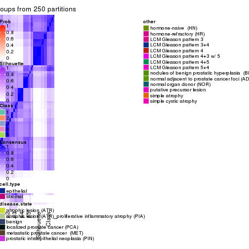
consensus_heatmap(res, k = 6)
Heatmaps for the membership of samples in all partitions to see how consistent they are:
membership_heatmap(res, k = 2)
membership_heatmap(res, k = 3)
membership_heatmap(res, k = 4)
membership_heatmap(res, k = 5)
membership_heatmap(res, k = 6)
As soon as we have had the classes for columns, we can look for signatures which are significantly different between classes which can be candidate marks for certain classes. Following are the heatmaps for signatures.
Signature heatmaps where rows are scaled:
get_signatures(res, k = 2)
get_signatures(res, k = 3)
get_signatures(res, k = 4)
get_signatures(res, k = 5)
get_signatures(res, k = 6)
Signature heatmaps where rows are not scaled:
get_signatures(res, k = 2, scale_rows = FALSE)
get_signatures(res, k = 3, scale_rows = FALSE)
get_signatures(res, k = 4, scale_rows = FALSE)
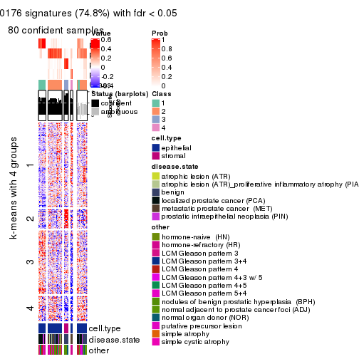
get_signatures(res, k = 5, scale_rows = FALSE)
get_signatures(res, k = 6, scale_rows = FALSE)
Compare the overlap of signatures from different k:
compare_signatures(res)
get_signature() returns a data frame invisibly. TO get the list of signatures, the function
call should be assigned to a variable explicitly. In following code, if plot argument is set
to FALSE, no heatmap is plotted while only the differential analysis is performed.
# code only for demonstration
tb = get_signature(res, k = ..., plot = FALSE)
An example of the output of tb is:
#> which_row fdr mean_1 mean_2 scaled_mean_1 scaled_mean_2 km
#> 1 38 0.042760348 8.373488 9.131774 -0.5533452 0.5164555 1
#> 2 40 0.018707592 7.106213 8.469186 -0.6173731 0.5762149 1
#> 3 55 0.019134737 10.221463 11.207825 -0.6159697 0.5749050 1
#> 4 59 0.006059896 5.921854 7.869574 -0.6899429 0.6439467 1
#> 5 60 0.018055526 8.928898 10.211722 -0.6204761 0.5791110 1
#> 6 98 0.009384629 15.714769 14.887706 0.6635654 -0.6193277 2
...
The columns in tb are:
which_row: row indices corresponding to the input matrix.fdr: FDR for the differential test. mean_x: The mean value in group x.scaled_mean_x: The mean value in group x after rows are scaled.km: Row groups if k-means clustering is applied to rows.UMAP plot which shows how samples are separated.
dimension_reduction(res, k = 2, method = "UMAP")
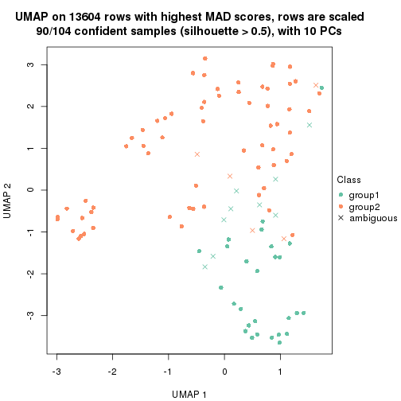
dimension_reduction(res, k = 3, method = "UMAP")
dimension_reduction(res, k = 4, method = "UMAP")
dimension_reduction(res, k = 5, method = "UMAP")
dimension_reduction(res, k = 6, method = "UMAP")
Following heatmap shows how subgroups are split when increasing k:
collect_classes(res)
Test correlation between subgroups and known annotations. If the known annotation is numeric, one-way ANOVA test is applied, and if the known annotation is discrete, chi-squared contingency table test is applied.
test_to_known_factors(res)
#> n cell.type(p) disease.state(p) other(p) k
#> MAD:hclust 90 3.59e-02 6.92e-11 1.48e-07 2
#> MAD:hclust 79 1.12e-12 6.02e-07 1.55e-06 3
#> MAD:hclust 80 3.07e-17 2.86e-12 5.93e-09 4
#> MAD:hclust 68 6.00e-14 1.55e-10 1.27e-08 5
#> MAD:hclust 44 1.51e-09 2.43e-14 1.69e-10 6
If matrix rows can be associated to genes, consider to use functional_enrichment(res,
...) to perform function enrichment for the signature genes. See this vignette for more detailed explanations.
The object with results only for a single top-value method and a single partition method can be extracted as:
res = res_list["MAD", "kmeans"]
# you can also extract it by
# res = res_list["MAD:kmeans"]
A summary of res and all the functions that can be applied to it:
res
#> A 'ConsensusPartition' object with k = 2, 3, 4, 5, 6.
#> On a matrix with 13604 rows and 104 columns.
#> Top rows (1000, 2000, 3000, 4000, 5000) are extracted by 'MAD' method.
#> Subgroups are detected by 'kmeans' method.
#> Performed in total 1250 partitions by row resampling.
#> Best k for subgroups seems to be 4.
#>
#> Following methods can be applied to this 'ConsensusPartition' object:
#> [1] "cola_report" "collect_classes" "collect_plots"
#> [4] "collect_stats" "colnames" "compare_signatures"
#> [7] "consensus_heatmap" "dimension_reduction" "functional_enrichment"
#> [10] "get_anno_col" "get_anno" "get_classes"
#> [13] "get_consensus" "get_matrix" "get_membership"
#> [16] "get_param" "get_signatures" "get_stats"
#> [19] "is_best_k" "is_stable_k" "membership_heatmap"
#> [22] "ncol" "nrow" "plot_ecdf"
#> [25] "rownames" "select_partition_number" "show"
#> [28] "suggest_best_k" "test_to_known_factors"
collect_plots() function collects all the plots made from res for all k (number of partitions)
into one single page to provide an easy and fast comparison between different k.
collect_plots(res)
The plots are:
k and the heatmap of
predicted classes for each k.k.k.k.All the plots in panels can be made by individual functions and they are plotted later in this section.
select_partition_number() produces several plots showing different
statistics for choosing “optimized” k. There are following statistics:
k;k, the area increased is defined as \(A_k - A_{k-1}\).The detailed explanations of these statistics can be found in the cola vignette.
Generally speaking, lower PAC score, higher mean silhouette score or higher
concordance corresponds to better partition. Rand index and Jaccard index
measure how similar the current partition is compared to partition with k-1.
If they are too similar, we won't accept k is better than k-1.
select_partition_number(res)
The numeric values for all these statistics can be obtained by get_stats().
get_stats(res)
#> k 1-PAC mean_silhouette concordance area_increased Rand Jaccard
#> 2 2 0.750 0.843 0.926 0.4833 0.496 0.496
#> 3 3 0.558 0.717 0.835 0.2895 0.726 0.530
#> 4 4 0.795 0.848 0.909 0.1646 0.795 0.529
#> 5 5 0.643 0.621 0.778 0.0702 0.907 0.677
#> 6 6 0.674 0.515 0.710 0.0479 0.877 0.517
suggest_best_k() suggests the best \(k\) based on these statistics. The rules are as follows:
suggest_best_k(res)
#> [1] 4
Following shows the table of the partitions (You need to click the show/hide
code output link to see it). The membership matrix (columns with name p*)
is inferred by
clue::cl_consensus()
function with the SE method. Basically the value in the membership matrix
represents the probability to belong to a certain group. The finall class
label for an item is determined with the group with highest probability it
belongs to.
In get_classes() function, the entropy is calculated from the membership
matrix and the silhouette score is calculated from the consensus matrix.
cbind(get_classes(res, k = 2), get_membership(res, k = 2))
#> class entropy silhouette p1 p2
#> GSM141334 1 0.8327 0.6115 0.736 0.264
#> GSM141335 1 0.8499 0.5891 0.724 0.276
#> GSM141336 2 0.8813 0.6258 0.300 0.700
#> GSM141337 1 0.0000 0.9401 1.000 0.000
#> GSM141184 2 1.0000 0.1209 0.496 0.504
#> GSM141185 2 0.9170 0.5675 0.332 0.668
#> GSM141186 2 0.2948 0.9105 0.052 0.948
#> GSM141243 2 0.4298 0.8865 0.088 0.912
#> GSM141244 1 0.0672 0.9346 0.992 0.008
#> GSM141246 1 0.8661 0.5645 0.712 0.288
#> GSM141247 2 0.8955 0.6052 0.312 0.688
#> GSM141248 1 0.0000 0.9401 1.000 0.000
#> GSM141249 1 0.0000 0.9401 1.000 0.000
#> GSM141258 2 1.0000 0.1209 0.496 0.504
#> GSM141259 2 0.2948 0.9105 0.052 0.948
#> GSM141260 1 0.8555 0.5812 0.720 0.280
#> GSM141261 2 0.2948 0.9105 0.052 0.948
#> GSM141262 2 0.2948 0.9105 0.052 0.948
#> GSM141263 2 0.2948 0.9105 0.052 0.948
#> GSM141338 2 1.0000 0.1209 0.496 0.504
#> GSM141339 1 0.0672 0.9346 0.992 0.008
#> GSM141340 1 0.0000 0.9401 1.000 0.000
#> GSM141265 2 0.2603 0.9082 0.044 0.956
#> GSM141267 1 0.2778 0.9011 0.952 0.048
#> GSM141330 2 0.6438 0.8116 0.164 0.836
#> GSM141266 2 0.2948 0.9105 0.052 0.948
#> GSM141264 2 0.2043 0.9036 0.032 0.968
#> GSM141341 2 0.2948 0.9105 0.052 0.948
#> GSM141342 2 0.2423 0.9068 0.040 0.960
#> GSM141343 2 0.2948 0.9105 0.052 0.948
#> GSM141356 2 0.2948 0.9105 0.052 0.948
#> GSM141357 1 0.0000 0.9401 1.000 0.000
#> GSM141358 2 0.2948 0.9105 0.052 0.948
#> GSM141359 2 0.2948 0.9105 0.052 0.948
#> GSM141360 1 0.0000 0.9401 1.000 0.000
#> GSM141361 2 0.2948 0.9105 0.052 0.948
#> GSM141362 2 0.2948 0.9105 0.052 0.948
#> GSM141363 2 0.8955 0.6052 0.312 0.688
#> GSM141364 1 0.9087 0.5002 0.676 0.324
#> GSM141365 2 0.2778 0.9095 0.048 0.952
#> GSM141366 2 0.2948 0.9105 0.052 0.948
#> GSM141367 2 0.3114 0.9085 0.056 0.944
#> GSM141368 2 0.2948 0.9105 0.052 0.948
#> GSM141369 2 0.2948 0.9105 0.052 0.948
#> GSM141370 2 0.2948 0.9105 0.052 0.948
#> GSM141371 2 0.2948 0.9105 0.052 0.948
#> GSM141372 2 0.2948 0.9105 0.052 0.948
#> GSM141373 1 0.0000 0.9401 1.000 0.000
#> GSM141374 1 0.0000 0.9401 1.000 0.000
#> GSM141375 2 0.4022 0.8927 0.080 0.920
#> GSM141376 1 0.0000 0.9401 1.000 0.000
#> GSM141377 1 0.0000 0.9401 1.000 0.000
#> GSM141378 1 0.0000 0.9401 1.000 0.000
#> GSM141380 1 0.0000 0.9401 1.000 0.000
#> GSM141387 1 0.0000 0.9401 1.000 0.000
#> GSM141395 1 0.0000 0.9401 1.000 0.000
#> GSM141397 2 0.4815 0.8730 0.104 0.896
#> GSM141398 2 1.0000 0.1209 0.496 0.504
#> GSM141401 1 0.4815 0.8429 0.896 0.104
#> GSM141399 1 0.3584 0.8812 0.932 0.068
#> GSM141379 1 0.0000 0.9401 1.000 0.000
#> GSM141381 1 0.0000 0.9401 1.000 0.000
#> GSM141383 1 0.0000 0.9401 1.000 0.000
#> GSM141384 1 0.0000 0.9401 1.000 0.000
#> GSM141385 1 0.0000 0.9401 1.000 0.000
#> GSM141388 1 0.0000 0.9401 1.000 0.000
#> GSM141389 1 0.0000 0.9401 1.000 0.000
#> GSM141391 1 0.0000 0.9401 1.000 0.000
#> GSM141394 2 0.2948 0.9105 0.052 0.948
#> GSM141396 1 0.0000 0.9401 1.000 0.000
#> GSM141403 1 0.7950 0.6542 0.760 0.240
#> GSM141404 1 0.0000 0.9401 1.000 0.000
#> GSM141386 1 0.0000 0.9401 1.000 0.000
#> GSM141382 1 0.0000 0.9401 1.000 0.000
#> GSM141390 1 0.0000 0.9401 1.000 0.000
#> GSM141393 1 0.0000 0.9401 1.000 0.000
#> GSM141400 1 0.0000 0.9401 1.000 0.000
#> GSM141402 2 0.2948 0.9105 0.052 0.948
#> GSM141392 1 0.8861 0.5159 0.696 0.304
#> GSM141405 1 0.0000 0.9401 1.000 0.000
#> GSM141406 1 0.9988 -0.0574 0.520 0.480
#> GSM141407 1 0.0000 0.9401 1.000 0.000
#> GSM141408 1 0.0000 0.9401 1.000 0.000
#> GSM141409 1 0.0000 0.9401 1.000 0.000
#> GSM141410 1 0.0000 0.9401 1.000 0.000
#> GSM141411 1 0.0000 0.9401 1.000 0.000
#> GSM141412 1 0.0000 0.9401 1.000 0.000
#> GSM141413 1 0.0000 0.9401 1.000 0.000
#> GSM141414 1 0.0000 0.9401 1.000 0.000
#> GSM141415 1 0.0000 0.9401 1.000 0.000
#> GSM141416 1 0.0672 0.9346 0.992 0.008
#> GSM141417 1 0.0000 0.9401 1.000 0.000
#> GSM141420 2 0.0000 0.8890 0.000 1.000
#> GSM141421 2 0.0000 0.8890 0.000 1.000
#> GSM141422 2 0.0000 0.8890 0.000 1.000
#> GSM141423 2 0.0000 0.8890 0.000 1.000
#> GSM141424 2 0.0000 0.8890 0.000 1.000
#> GSM141427 2 0.0000 0.8890 0.000 1.000
#> GSM141428 2 0.0000 0.8890 0.000 1.000
#> GSM141418 2 0.0000 0.8890 0.000 1.000
#> GSM141419 2 0.0000 0.8890 0.000 1.000
#> GSM141425 2 0.0000 0.8890 0.000 1.000
#> GSM141426 2 0.0000 0.8890 0.000 1.000
#> GSM141429 2 0.0000 0.8890 0.000 1.000
cbind(get_classes(res, k = 3), get_membership(res, k = 3))
#> class entropy silhouette p1 p2 p3
#> GSM141334 2 0.7980 0.676 0.064 0.536 0.400
#> GSM141335 2 0.8271 0.670 0.080 0.520 0.400
#> GSM141336 2 0.7181 0.686 0.028 0.564 0.408
#> GSM141337 1 0.6800 0.603 0.660 0.032 0.308
#> GSM141184 2 0.7487 0.684 0.040 0.552 0.408
#> GSM141185 2 0.7487 0.684 0.040 0.552 0.408
#> GSM141186 2 0.3038 0.589 0.000 0.896 0.104
#> GSM141243 2 0.6062 0.689 0.000 0.616 0.384
#> GSM141244 2 0.9130 0.623 0.152 0.492 0.356
#> GSM141246 2 0.8602 0.653 0.100 0.492 0.408
#> GSM141247 2 0.7487 0.684 0.040 0.552 0.408
#> GSM141248 1 0.9985 -0.293 0.360 0.316 0.324
#> GSM141249 1 0.0424 0.899 0.992 0.000 0.008
#> GSM141258 2 0.7487 0.684 0.040 0.552 0.408
#> GSM141259 2 0.0892 0.586 0.000 0.980 0.020
#> GSM141260 2 0.8543 0.657 0.096 0.496 0.408
#> GSM141261 2 0.4178 0.667 0.000 0.828 0.172
#> GSM141262 2 0.6154 0.687 0.000 0.592 0.408
#> GSM141263 2 0.1031 0.590 0.000 0.976 0.024
#> GSM141338 2 0.7648 0.683 0.048 0.552 0.400
#> GSM141339 2 0.9291 0.605 0.168 0.476 0.356
#> GSM141340 1 0.2711 0.851 0.912 0.000 0.088
#> GSM141265 2 0.3038 0.581 0.000 0.896 0.104
#> GSM141267 3 0.9889 -0.440 0.292 0.300 0.408
#> GSM141330 2 0.8573 0.663 0.104 0.524 0.372
#> GSM141266 2 0.4931 0.676 0.000 0.768 0.232
#> GSM141264 2 0.3482 0.554 0.000 0.872 0.128
#> GSM141341 2 0.0848 0.577 0.008 0.984 0.008
#> GSM141342 2 0.1163 0.551 0.000 0.972 0.028
#> GSM141343 2 0.0747 0.568 0.000 0.984 0.016
#> GSM141356 2 0.4324 0.572 0.028 0.860 0.112
#> GSM141357 1 0.3695 0.806 0.880 0.108 0.012
#> GSM141358 2 0.4452 0.658 0.000 0.808 0.192
#> GSM141359 2 0.1289 0.572 0.000 0.968 0.032
#> GSM141360 1 0.1585 0.874 0.964 0.028 0.008
#> GSM141361 2 0.4172 0.578 0.028 0.868 0.104
#> GSM141362 2 0.3267 0.652 0.000 0.884 0.116
#> GSM141363 2 0.5678 0.671 0.000 0.684 0.316
#> GSM141364 2 0.7311 0.689 0.036 0.580 0.384
#> GSM141365 2 0.3213 0.552 0.028 0.912 0.060
#> GSM141366 2 0.0747 0.568 0.000 0.984 0.016
#> GSM141367 2 0.7660 -0.121 0.404 0.548 0.048
#> GSM141368 2 0.0747 0.568 0.000 0.984 0.016
#> GSM141369 2 0.0592 0.572 0.000 0.988 0.012
#> GSM141370 2 0.0747 0.568 0.000 0.984 0.016
#> GSM141371 2 0.0747 0.568 0.000 0.984 0.016
#> GSM141372 2 0.0747 0.568 0.000 0.984 0.016
#> GSM141373 1 0.6688 0.609 0.664 0.028 0.308
#> GSM141374 1 0.0000 0.903 1.000 0.000 0.000
#> GSM141375 2 0.4966 0.577 0.060 0.840 0.100
#> GSM141376 1 0.0000 0.903 1.000 0.000 0.000
#> GSM141377 1 0.0000 0.903 1.000 0.000 0.000
#> GSM141378 1 0.0000 0.903 1.000 0.000 0.000
#> GSM141380 1 0.0000 0.903 1.000 0.000 0.000
#> GSM141387 1 0.0000 0.903 1.000 0.000 0.000
#> GSM141395 1 0.7694 0.522 0.616 0.068 0.316
#> GSM141397 2 0.5098 0.673 0.000 0.752 0.248
#> GSM141398 2 0.7820 0.680 0.056 0.544 0.400
#> GSM141401 2 0.9579 0.566 0.208 0.452 0.340
#> GSM141399 2 0.8887 0.640 0.124 0.488 0.388
#> GSM141379 1 0.0000 0.903 1.000 0.000 0.000
#> GSM141381 1 0.0000 0.903 1.000 0.000 0.000
#> GSM141383 1 0.0000 0.903 1.000 0.000 0.000
#> GSM141384 1 0.0000 0.903 1.000 0.000 0.000
#> GSM141385 1 0.1031 0.891 0.976 0.000 0.024
#> GSM141388 1 0.0000 0.903 1.000 0.000 0.000
#> GSM141389 1 0.0000 0.903 1.000 0.000 0.000
#> GSM141391 1 0.0000 0.903 1.000 0.000 0.000
#> GSM141394 2 0.6154 0.687 0.000 0.592 0.408
#> GSM141396 1 0.0000 0.903 1.000 0.000 0.000
#> GSM141403 2 0.8345 0.664 0.096 0.560 0.344
#> GSM141404 1 0.6567 0.711 0.752 0.088 0.160
#> GSM141386 1 0.4887 0.738 0.772 0.000 0.228
#> GSM141382 1 0.0000 0.903 1.000 0.000 0.000
#> GSM141390 1 0.0000 0.903 1.000 0.000 0.000
#> GSM141393 1 0.0000 0.903 1.000 0.000 0.000
#> GSM141400 1 0.0000 0.903 1.000 0.000 0.000
#> GSM141402 2 0.3038 0.648 0.000 0.896 0.104
#> GSM141392 1 0.6291 0.651 0.768 0.152 0.080
#> GSM141405 1 0.0000 0.903 1.000 0.000 0.000
#> GSM141406 2 0.8466 0.661 0.092 0.508 0.400
#> GSM141407 1 0.0000 0.903 1.000 0.000 0.000
#> GSM141408 1 0.0000 0.903 1.000 0.000 0.000
#> GSM141409 1 0.3879 0.802 0.848 0.000 0.152
#> GSM141410 1 0.0000 0.903 1.000 0.000 0.000
#> GSM141411 1 0.0000 0.903 1.000 0.000 0.000
#> GSM141412 1 0.0000 0.903 1.000 0.000 0.000
#> GSM141413 1 0.5560 0.660 0.700 0.000 0.300
#> GSM141414 1 0.5785 0.654 0.696 0.004 0.300
#> GSM141415 1 0.0000 0.903 1.000 0.000 0.000
#> GSM141416 2 0.9067 0.625 0.140 0.476 0.384
#> GSM141417 1 0.0000 0.903 1.000 0.000 0.000
#> GSM141420 3 0.5678 0.912 0.000 0.316 0.684
#> GSM141421 3 0.5678 0.912 0.000 0.316 0.684
#> GSM141422 3 0.5678 0.912 0.000 0.316 0.684
#> GSM141423 3 0.5678 0.912 0.000 0.316 0.684
#> GSM141424 3 0.5678 0.912 0.000 0.316 0.684
#> GSM141427 3 0.5678 0.912 0.000 0.316 0.684
#> GSM141428 3 0.5678 0.912 0.000 0.316 0.684
#> GSM141418 3 0.5678 0.912 0.000 0.316 0.684
#> GSM141419 3 0.5678 0.912 0.000 0.316 0.684
#> GSM141425 3 0.5678 0.912 0.000 0.316 0.684
#> GSM141426 3 0.5678 0.912 0.000 0.316 0.684
#> GSM141429 3 0.5678 0.912 0.000 0.316 0.684
cbind(get_classes(res, k = 4), get_membership(res, k = 4))
#> class entropy silhouette p1 p2 p3 p4
#> GSM141334 2 0.0937 0.8979 0.000 0.976 0.012 0.012
#> GSM141335 2 0.0992 0.8993 0.004 0.976 0.012 0.008
#> GSM141336 2 0.1767 0.8782 0.000 0.944 0.012 0.044
#> GSM141337 2 0.1118 0.8897 0.036 0.964 0.000 0.000
#> GSM141184 2 0.0937 0.8979 0.000 0.976 0.012 0.012
#> GSM141185 2 0.1174 0.8935 0.000 0.968 0.012 0.020
#> GSM141186 4 0.3172 0.8379 0.000 0.160 0.000 0.840
#> GSM141243 4 0.5408 0.2446 0.000 0.488 0.012 0.500
#> GSM141244 2 0.1139 0.9003 0.008 0.972 0.012 0.008
#> GSM141246 2 0.0564 0.8997 0.004 0.988 0.004 0.004
#> GSM141247 2 0.1767 0.8782 0.000 0.944 0.012 0.044
#> GSM141248 2 0.1247 0.8996 0.016 0.968 0.012 0.004
#> GSM141249 1 0.2521 0.8987 0.912 0.064 0.024 0.000
#> GSM141258 2 0.0937 0.8979 0.000 0.976 0.012 0.012
#> GSM141259 4 0.2647 0.8492 0.000 0.120 0.000 0.880
#> GSM141260 2 0.0712 0.8991 0.004 0.984 0.008 0.004
#> GSM141261 4 0.3895 0.8112 0.000 0.184 0.012 0.804
#> GSM141262 2 0.1767 0.8782 0.000 0.944 0.012 0.044
#> GSM141263 4 0.2647 0.8492 0.000 0.120 0.000 0.880
#> GSM141338 2 0.1388 0.8896 0.000 0.960 0.012 0.028
#> GSM141339 2 0.0992 0.9005 0.008 0.976 0.012 0.004
#> GSM141340 1 0.5620 0.2717 0.560 0.416 0.024 0.000
#> GSM141265 4 0.5173 0.6691 0.000 0.320 0.020 0.660
#> GSM141267 2 0.0672 0.8984 0.008 0.984 0.008 0.000
#> GSM141330 2 0.1114 0.8966 0.008 0.972 0.016 0.004
#> GSM141266 4 0.4134 0.7529 0.000 0.260 0.000 0.740
#> GSM141264 4 0.4827 0.8077 0.000 0.124 0.092 0.784
#> GSM141341 4 0.1339 0.8621 0.004 0.024 0.008 0.964
#> GSM141342 4 0.0336 0.8593 0.000 0.008 0.000 0.992
#> GSM141343 4 0.0336 0.8593 0.000 0.008 0.000 0.992
#> GSM141356 4 0.4434 0.7729 0.004 0.208 0.016 0.772
#> GSM141357 1 0.6641 0.6618 0.684 0.104 0.036 0.176
#> GSM141358 4 0.4204 0.7940 0.000 0.192 0.020 0.788
#> GSM141359 4 0.1824 0.8663 0.000 0.060 0.004 0.936
#> GSM141360 1 0.5971 0.7318 0.740 0.088 0.036 0.136
#> GSM141361 4 0.4785 0.7705 0.008 0.208 0.024 0.760
#> GSM141362 4 0.1716 0.8668 0.000 0.064 0.000 0.936
#> GSM141363 4 0.2984 0.8596 0.000 0.084 0.028 0.888
#> GSM141364 2 0.5240 0.6222 0.008 0.728 0.036 0.228
#> GSM141365 4 0.2408 0.8517 0.004 0.060 0.016 0.920
#> GSM141366 4 0.0336 0.8593 0.000 0.008 0.000 0.992
#> GSM141367 4 0.2923 0.8039 0.080 0.008 0.016 0.896
#> GSM141368 4 0.0336 0.8593 0.000 0.008 0.000 0.992
#> GSM141369 4 0.0336 0.8593 0.000 0.008 0.000 0.992
#> GSM141370 4 0.0336 0.8593 0.000 0.008 0.000 0.992
#> GSM141371 4 0.0336 0.8593 0.000 0.008 0.000 0.992
#> GSM141372 4 0.0336 0.8593 0.000 0.008 0.000 0.992
#> GSM141373 2 0.1724 0.8835 0.032 0.948 0.020 0.000
#> GSM141374 1 0.1406 0.9246 0.960 0.024 0.016 0.000
#> GSM141375 4 0.4655 0.8245 0.032 0.176 0.008 0.784
#> GSM141376 1 0.0376 0.9271 0.992 0.004 0.004 0.000
#> GSM141377 1 0.1297 0.9243 0.964 0.020 0.016 0.000
#> GSM141378 1 0.1406 0.9246 0.960 0.024 0.016 0.000
#> GSM141380 1 0.0376 0.9271 0.992 0.004 0.004 0.000
#> GSM141387 1 0.0188 0.9270 0.996 0.000 0.004 0.000
#> GSM141395 2 0.1724 0.8835 0.032 0.948 0.020 0.000
#> GSM141397 4 0.4482 0.7505 0.000 0.264 0.008 0.728
#> GSM141398 2 0.1174 0.8935 0.000 0.968 0.012 0.020
#> GSM141401 2 0.2891 0.8476 0.080 0.896 0.020 0.004
#> GSM141399 2 0.0895 0.8957 0.004 0.976 0.020 0.000
#> GSM141379 1 0.0376 0.9271 0.992 0.004 0.004 0.000
#> GSM141381 1 0.0000 0.9272 1.000 0.000 0.000 0.000
#> GSM141383 1 0.0000 0.9272 1.000 0.000 0.000 0.000
#> GSM141384 1 0.0000 0.9272 1.000 0.000 0.000 0.000
#> GSM141385 1 0.3806 0.7979 0.824 0.156 0.020 0.000
#> GSM141388 1 0.0000 0.9272 1.000 0.000 0.000 0.000
#> GSM141389 1 0.0000 0.9272 1.000 0.000 0.000 0.000
#> GSM141391 1 0.1406 0.9246 0.960 0.024 0.016 0.000
#> GSM141394 2 0.0524 0.8995 0.000 0.988 0.004 0.008
#> GSM141396 1 0.1406 0.9246 0.960 0.024 0.016 0.000
#> GSM141403 2 0.6066 -0.0185 0.008 0.508 0.028 0.456
#> GSM141404 1 0.5881 0.2019 0.544 0.420 0.036 0.000
#> GSM141386 2 0.5371 0.3967 0.364 0.616 0.020 0.000
#> GSM141382 1 0.0000 0.9272 1.000 0.000 0.000 0.000
#> GSM141390 1 0.1520 0.9213 0.956 0.024 0.020 0.000
#> GSM141393 1 0.1406 0.9231 0.960 0.024 0.016 0.000
#> GSM141400 1 0.1297 0.9243 0.964 0.020 0.016 0.000
#> GSM141402 4 0.1584 0.8646 0.000 0.036 0.012 0.952
#> GSM141392 1 0.2124 0.9115 0.932 0.028 0.040 0.000
#> GSM141405 1 0.0336 0.9268 0.992 0.000 0.008 0.000
#> GSM141406 2 0.1082 0.8963 0.004 0.972 0.020 0.004
#> GSM141407 1 0.0524 0.9267 0.988 0.004 0.008 0.000
#> GSM141408 1 0.0524 0.9267 0.988 0.004 0.008 0.000
#> GSM141409 2 0.5611 0.2447 0.412 0.564 0.024 0.000
#> GSM141410 1 0.0524 0.9267 0.988 0.004 0.008 0.000
#> GSM141411 1 0.1629 0.9242 0.952 0.024 0.024 0.000
#> GSM141412 1 0.0524 0.9267 0.988 0.004 0.008 0.000
#> GSM141413 2 0.3497 0.8040 0.124 0.852 0.024 0.000
#> GSM141414 2 0.3384 0.8120 0.116 0.860 0.024 0.000
#> GSM141415 1 0.0524 0.9267 0.988 0.004 0.008 0.000
#> GSM141416 2 0.0844 0.9000 0.004 0.980 0.012 0.004
#> GSM141417 1 0.1629 0.9242 0.952 0.024 0.024 0.000
#> GSM141420 3 0.1722 0.9974 0.000 0.008 0.944 0.048
#> GSM141421 3 0.1722 0.9974 0.000 0.008 0.944 0.048
#> GSM141422 3 0.1722 0.9974 0.000 0.008 0.944 0.048
#> GSM141423 3 0.1722 0.9974 0.000 0.008 0.944 0.048
#> GSM141424 3 0.1722 0.9974 0.000 0.008 0.944 0.048
#> GSM141427 3 0.1722 0.9974 0.000 0.008 0.944 0.048
#> GSM141428 3 0.1807 0.9962 0.000 0.008 0.940 0.052
#> GSM141418 3 0.1722 0.9974 0.000 0.008 0.944 0.048
#> GSM141419 3 0.1722 0.9974 0.000 0.008 0.944 0.048
#> GSM141425 3 0.2021 0.9933 0.000 0.012 0.932 0.056
#> GSM141426 3 0.2021 0.9933 0.000 0.012 0.932 0.056
#> GSM141429 3 0.2021 0.9933 0.000 0.012 0.932 0.056
cbind(get_classes(res, k = 5), get_membership(res, k = 5))
#> class entropy silhouette p1 p2 p3 p4 p5
#> GSM141334 2 0.0798 0.7209 0.000 0.976 0.000 0.008 0.016
#> GSM141335 2 0.0000 0.7228 0.000 1.000 0.000 0.000 0.000
#> GSM141336 2 0.2984 0.6711 0.000 0.860 0.000 0.108 0.032
#> GSM141337 2 0.2338 0.6804 0.004 0.884 0.000 0.000 0.112
#> GSM141184 2 0.0798 0.7223 0.000 0.976 0.000 0.016 0.008
#> GSM141185 2 0.2473 0.6937 0.000 0.896 0.000 0.072 0.032
#> GSM141186 4 0.4432 0.6483 0.000 0.144 0.008 0.772 0.076
#> GSM141243 2 0.5348 -0.0757 0.000 0.492 0.000 0.456 0.052
#> GSM141244 2 0.0798 0.7223 0.000 0.976 0.000 0.016 0.008
#> GSM141246 2 0.1608 0.7139 0.000 0.928 0.000 0.000 0.072
#> GSM141247 2 0.2984 0.6711 0.000 0.860 0.000 0.108 0.032
#> GSM141248 2 0.0510 0.7219 0.000 0.984 0.000 0.000 0.016
#> GSM141249 1 0.5804 0.5404 0.628 0.160 0.000 0.004 0.208
#> GSM141258 2 0.2209 0.7016 0.000 0.912 0.000 0.056 0.032
#> GSM141259 4 0.3961 0.6743 0.000 0.108 0.008 0.812 0.072
#> GSM141260 2 0.4769 0.5314 0.000 0.688 0.000 0.056 0.256
#> GSM141261 4 0.3846 0.6508 0.000 0.144 0.000 0.800 0.056
#> GSM141262 2 0.4337 0.5620 0.000 0.744 0.000 0.204 0.052
#> GSM141263 4 0.3707 0.6760 0.000 0.108 0.008 0.828 0.056
#> GSM141338 2 0.2561 0.6857 0.000 0.884 0.000 0.096 0.020
#> GSM141339 2 0.0609 0.7215 0.000 0.980 0.000 0.000 0.020
#> GSM141340 2 0.6653 -0.0442 0.384 0.420 0.000 0.004 0.192
#> GSM141265 4 0.7407 0.2275 0.000 0.232 0.040 0.428 0.300
#> GSM141267 2 0.3242 0.6201 0.000 0.784 0.000 0.000 0.216
#> GSM141330 2 0.6080 0.2477 0.000 0.524 0.024 0.068 0.384
#> GSM141266 4 0.4946 0.5785 0.000 0.216 0.004 0.704 0.076
#> GSM141264 4 0.7435 0.2992 0.000 0.112 0.104 0.476 0.308
#> GSM141341 4 0.4434 0.3089 0.000 0.000 0.004 0.536 0.460
#> GSM141342 4 0.3642 0.6144 0.000 0.000 0.008 0.760 0.232
#> GSM141343 4 0.3093 0.6648 0.000 0.000 0.008 0.824 0.168
#> GSM141356 5 0.5763 0.3805 0.000 0.108 0.004 0.288 0.600
#> GSM141357 5 0.6868 0.5657 0.168 0.108 0.000 0.124 0.600
#> GSM141358 5 0.5933 -0.0816 0.000 0.104 0.000 0.448 0.448
#> GSM141359 4 0.2977 0.6844 0.000 0.040 0.008 0.876 0.076
#> GSM141360 5 0.6783 0.5610 0.184 0.108 0.000 0.104 0.604
#> GSM141361 5 0.5696 0.3361 0.000 0.096 0.000 0.344 0.560
#> GSM141362 4 0.3012 0.6872 0.000 0.052 0.004 0.872 0.072
#> GSM141363 4 0.4558 0.6051 0.000 0.088 0.000 0.744 0.168
#> GSM141364 5 0.5877 0.4691 0.000 0.244 0.000 0.160 0.596
#> GSM141365 5 0.4302 0.0240 0.000 0.004 0.004 0.344 0.648
#> GSM141366 4 0.3642 0.6144 0.000 0.000 0.008 0.760 0.232
#> GSM141367 5 0.4403 0.0399 0.004 0.000 0.012 0.316 0.668
#> GSM141368 4 0.3642 0.6144 0.000 0.000 0.008 0.760 0.232
#> GSM141369 4 0.2411 0.6752 0.000 0.000 0.008 0.884 0.108
#> GSM141370 4 0.2411 0.6752 0.000 0.000 0.008 0.884 0.108
#> GSM141371 4 0.2411 0.6752 0.000 0.000 0.008 0.884 0.108
#> GSM141372 4 0.2411 0.6752 0.000 0.000 0.008 0.884 0.108
#> GSM141373 2 0.3990 0.5246 0.004 0.688 0.000 0.000 0.308
#> GSM141374 1 0.3300 0.7495 0.792 0.004 0.000 0.000 0.204
#> GSM141375 4 0.6445 0.1722 0.004 0.132 0.004 0.432 0.428
#> GSM141376 1 0.0000 0.8345 1.000 0.000 0.000 0.000 0.000
#> GSM141377 1 0.3231 0.7597 0.800 0.004 0.000 0.000 0.196
#> GSM141378 1 0.3789 0.7326 0.768 0.020 0.000 0.000 0.212
#> GSM141380 1 0.0000 0.8345 1.000 0.000 0.000 0.000 0.000
#> GSM141387 1 0.0000 0.8345 1.000 0.000 0.000 0.000 0.000
#> GSM141395 2 0.4551 0.2984 0.004 0.556 0.000 0.004 0.436
#> GSM141397 4 0.6647 0.2924 0.000 0.220 0.004 0.476 0.300
#> GSM141398 2 0.2561 0.6857 0.000 0.884 0.000 0.096 0.020
#> GSM141401 2 0.4238 0.4383 0.004 0.628 0.000 0.000 0.368
#> GSM141399 2 0.3274 0.6221 0.000 0.780 0.000 0.000 0.220
#> GSM141379 1 0.0000 0.8345 1.000 0.000 0.000 0.000 0.000
#> GSM141381 1 0.0451 0.8336 0.988 0.000 0.004 0.000 0.008
#> GSM141383 1 0.0798 0.8310 0.976 0.000 0.008 0.000 0.016
#> GSM141384 1 0.0798 0.8310 0.976 0.000 0.008 0.000 0.016
#> GSM141385 5 0.6460 0.0285 0.404 0.180 0.000 0.000 0.416
#> GSM141388 1 0.0671 0.8322 0.980 0.000 0.004 0.000 0.016
#> GSM141389 1 0.0671 0.8322 0.980 0.000 0.004 0.000 0.016
#> GSM141391 1 0.3522 0.7461 0.780 0.004 0.000 0.004 0.212
#> GSM141394 2 0.3152 0.6757 0.000 0.840 0.000 0.024 0.136
#> GSM141396 1 0.5004 0.6389 0.692 0.092 0.000 0.000 0.216
#> GSM141403 5 0.5904 0.4968 0.000 0.232 0.000 0.172 0.596
#> GSM141404 5 0.6845 0.2332 0.336 0.252 0.000 0.004 0.408
#> GSM141386 5 0.6349 0.0175 0.160 0.416 0.000 0.000 0.424
#> GSM141382 1 0.0671 0.8322 0.980 0.000 0.004 0.000 0.016
#> GSM141390 1 0.4553 0.4227 0.604 0.008 0.004 0.000 0.384
#> GSM141393 1 0.3521 0.7389 0.764 0.004 0.000 0.000 0.232
#> GSM141400 1 0.3196 0.7624 0.804 0.004 0.000 0.000 0.192
#> GSM141402 4 0.2535 0.6851 0.000 0.032 0.000 0.892 0.076
#> GSM141392 5 0.6396 0.3116 0.316 0.036 0.032 0.036 0.580
#> GSM141405 1 0.4003 0.4480 0.704 0.000 0.008 0.000 0.288
#> GSM141406 2 0.4009 0.5278 0.000 0.684 0.000 0.004 0.312
#> GSM141407 1 0.0290 0.8329 0.992 0.000 0.000 0.000 0.008
#> GSM141408 1 0.0000 0.8345 1.000 0.000 0.000 0.000 0.000
#> GSM141409 2 0.6622 0.0678 0.252 0.492 0.000 0.004 0.252
#> GSM141410 1 0.0290 0.8329 0.992 0.000 0.000 0.000 0.008
#> GSM141411 1 0.5077 0.6503 0.696 0.088 0.000 0.004 0.212
#> GSM141412 1 0.0290 0.8329 0.992 0.000 0.000 0.000 0.008
#> GSM141413 2 0.4197 0.5779 0.032 0.752 0.000 0.004 0.212
#> GSM141414 2 0.4132 0.5884 0.032 0.760 0.000 0.004 0.204
#> GSM141415 1 0.0290 0.8329 0.992 0.000 0.000 0.000 0.008
#> GSM141416 2 0.0510 0.7219 0.000 0.984 0.000 0.000 0.016
#> GSM141417 1 0.5379 0.6099 0.672 0.116 0.000 0.004 0.208
#> GSM141420 3 0.0451 0.9893 0.000 0.000 0.988 0.008 0.004
#> GSM141421 3 0.0451 0.9893 0.000 0.000 0.988 0.008 0.004
#> GSM141422 3 0.0290 0.9891 0.000 0.000 0.992 0.008 0.000
#> GSM141423 3 0.0451 0.9893 0.000 0.000 0.988 0.008 0.004
#> GSM141424 3 0.0290 0.9891 0.000 0.000 0.992 0.008 0.000
#> GSM141427 3 0.0451 0.9893 0.000 0.000 0.988 0.008 0.004
#> GSM141428 3 0.0451 0.9893 0.000 0.000 0.988 0.008 0.004
#> GSM141418 3 0.0451 0.9884 0.000 0.000 0.988 0.008 0.004
#> GSM141419 3 0.0566 0.9829 0.000 0.000 0.984 0.004 0.012
#> GSM141425 3 0.1251 0.9752 0.000 0.000 0.956 0.008 0.036
#> GSM141426 3 0.1251 0.9752 0.000 0.000 0.956 0.008 0.036
#> GSM141429 3 0.1251 0.9752 0.000 0.000 0.956 0.008 0.036
cbind(get_classes(res, k = 6), get_membership(res, k = 6))
#> class entropy silhouette p1 p2 p3 p4 p5 p6
#> GSM141334 2 0.1958 0.703489 0.000 0.896 0.000 0.000 0.100 0.004
#> GSM141335 2 0.2902 0.694265 0.000 0.800 0.000 0.000 0.196 0.004
#> GSM141336 2 0.1461 0.668007 0.000 0.940 0.000 0.016 0.000 0.044
#> GSM141337 2 0.3620 0.454979 0.000 0.648 0.000 0.000 0.352 0.000
#> GSM141184 2 0.3014 0.696615 0.000 0.804 0.000 0.000 0.184 0.012
#> GSM141185 2 0.0363 0.697409 0.000 0.988 0.000 0.000 0.000 0.012
#> GSM141186 6 0.5846 -0.036665 0.000 0.192 0.004 0.304 0.000 0.500
#> GSM141243 2 0.5089 -0.000626 0.000 0.592 0.000 0.108 0.000 0.300
#> GSM141244 2 0.2948 0.695161 0.000 0.804 0.000 0.000 0.188 0.008
#> GSM141246 2 0.3956 0.576428 0.000 0.684 0.000 0.000 0.292 0.024
#> GSM141247 2 0.1461 0.668007 0.000 0.940 0.000 0.016 0.000 0.044
#> GSM141248 2 0.2883 0.682900 0.000 0.788 0.000 0.000 0.212 0.000
#> GSM141249 5 0.5431 0.353291 0.332 0.108 0.000 0.000 0.552 0.008
#> GSM141258 2 0.0725 0.702091 0.000 0.976 0.000 0.000 0.012 0.012
#> GSM141259 6 0.5547 -0.243198 0.000 0.120 0.004 0.388 0.000 0.488
#> GSM141260 2 0.5585 0.253740 0.000 0.488 0.000 0.000 0.148 0.364
#> GSM141261 4 0.6076 0.306102 0.000 0.232 0.004 0.436 0.000 0.328
#> GSM141262 2 0.3694 0.368543 0.000 0.740 0.000 0.028 0.000 0.232
#> GSM141263 4 0.5579 0.279151 0.000 0.120 0.004 0.444 0.000 0.432
#> GSM141338 2 0.1167 0.699948 0.000 0.960 0.000 0.008 0.020 0.012
#> GSM141339 2 0.2823 0.687162 0.000 0.796 0.000 0.000 0.204 0.000
#> GSM141340 5 0.5912 0.415546 0.184 0.268 0.000 0.004 0.536 0.008
#> GSM141265 6 0.6631 0.369293 0.000 0.164 0.048 0.116 0.072 0.600
#> GSM141267 2 0.4799 0.453759 0.000 0.592 0.000 0.000 0.340 0.068
#> GSM141330 6 0.6235 0.167106 0.000 0.240 0.016 0.000 0.272 0.472
#> GSM141266 6 0.6157 0.056986 0.000 0.216 0.004 0.264 0.012 0.504
#> GSM141264 6 0.6662 0.360575 0.000 0.120 0.064 0.136 0.072 0.608
#> GSM141341 6 0.5224 0.271037 0.000 0.012 0.004 0.280 0.084 0.620
#> GSM141342 4 0.1624 0.550943 0.000 0.000 0.004 0.936 0.020 0.040
#> GSM141343 4 0.3872 0.552261 0.000 0.000 0.004 0.712 0.020 0.264
#> GSM141356 6 0.5913 0.307009 0.000 0.008 0.000 0.184 0.308 0.500
#> GSM141357 5 0.5819 -0.019004 0.036 0.012 0.000 0.052 0.484 0.416
#> GSM141358 6 0.5101 0.371109 0.000 0.028 0.000 0.120 0.168 0.684
#> GSM141359 4 0.5886 0.343862 0.000 0.088 0.000 0.468 0.036 0.408
#> GSM141360 5 0.5811 0.020697 0.052 0.012 0.000 0.036 0.492 0.408
#> GSM141361 6 0.5155 0.366683 0.000 0.008 0.000 0.088 0.308 0.596
#> GSM141362 4 0.6110 0.402888 0.000 0.124 0.004 0.500 0.028 0.344
#> GSM141363 6 0.7467 -0.119609 0.000 0.260 0.000 0.300 0.128 0.312
#> GSM141364 5 0.5572 -0.046349 0.000 0.040 0.000 0.052 0.476 0.432
#> GSM141365 6 0.5748 0.265205 0.000 0.000 0.000 0.316 0.192 0.492
#> GSM141366 4 0.1552 0.554759 0.000 0.000 0.004 0.940 0.020 0.036
#> GSM141367 6 0.5583 0.210844 0.000 0.000 0.000 0.348 0.152 0.500
#> GSM141368 4 0.1552 0.554759 0.000 0.000 0.004 0.940 0.020 0.036
#> GSM141369 4 0.2809 0.659971 0.000 0.020 0.004 0.848 0.000 0.128
#> GSM141370 4 0.2809 0.659971 0.000 0.020 0.004 0.848 0.000 0.128
#> GSM141371 4 0.2809 0.659971 0.000 0.020 0.004 0.848 0.000 0.128
#> GSM141372 4 0.2809 0.659971 0.000 0.020 0.004 0.848 0.000 0.128
#> GSM141373 5 0.3668 0.354305 0.000 0.328 0.000 0.000 0.668 0.004
#> GSM141374 1 0.3965 0.420062 0.604 0.000 0.000 0.000 0.388 0.008
#> GSM141375 6 0.5730 0.406856 0.004 0.076 0.004 0.132 0.116 0.668
#> GSM141376 1 0.0146 0.803948 0.996 0.000 0.000 0.000 0.000 0.004
#> GSM141377 1 0.4102 0.508341 0.628 0.000 0.000 0.004 0.356 0.012
#> GSM141378 1 0.3950 0.340567 0.564 0.000 0.000 0.000 0.432 0.004
#> GSM141380 1 0.0146 0.803948 0.996 0.000 0.000 0.000 0.000 0.004
#> GSM141387 1 0.0260 0.803878 0.992 0.000 0.000 0.000 0.000 0.008
#> GSM141395 5 0.4382 0.407267 0.000 0.264 0.000 0.000 0.676 0.060
#> GSM141397 6 0.6026 0.349221 0.000 0.164 0.004 0.140 0.072 0.620
#> GSM141398 2 0.1167 0.699948 0.000 0.960 0.000 0.008 0.020 0.012
#> GSM141401 5 0.4688 0.363816 0.000 0.288 0.000 0.004 0.644 0.064
#> GSM141399 5 0.4109 0.222938 0.000 0.392 0.000 0.004 0.596 0.008
#> GSM141379 1 0.0972 0.796100 0.964 0.000 0.000 0.000 0.028 0.008
#> GSM141381 1 0.0692 0.802654 0.976 0.000 0.000 0.000 0.020 0.004
#> GSM141383 1 0.1367 0.793009 0.944 0.000 0.000 0.000 0.044 0.012
#> GSM141384 1 0.1151 0.797375 0.956 0.000 0.000 0.000 0.032 0.012
#> GSM141385 5 0.3800 0.502915 0.168 0.048 0.000 0.000 0.776 0.008
#> GSM141388 1 0.1152 0.795518 0.952 0.000 0.000 0.000 0.044 0.004
#> GSM141389 1 0.1152 0.795518 0.952 0.000 0.000 0.000 0.044 0.004
#> GSM141391 1 0.4051 0.373883 0.560 0.000 0.000 0.000 0.432 0.008
#> GSM141394 2 0.5509 0.436769 0.000 0.540 0.000 0.000 0.300 0.160
#> GSM141396 5 0.4255 0.224928 0.380 0.016 0.000 0.000 0.600 0.004
#> GSM141403 5 0.5482 0.085787 0.000 0.044 0.000 0.048 0.544 0.364
#> GSM141404 5 0.7146 0.248523 0.180 0.116 0.000 0.004 0.460 0.240
#> GSM141386 5 0.4082 0.517130 0.068 0.156 0.000 0.000 0.764 0.012
#> GSM141382 1 0.0972 0.800165 0.964 0.000 0.000 0.000 0.028 0.008
#> GSM141390 1 0.5449 0.274369 0.488 0.000 0.000 0.000 0.388 0.124
#> GSM141393 1 0.4123 0.413515 0.568 0.000 0.000 0.000 0.420 0.012
#> GSM141400 1 0.4105 0.524862 0.632 0.000 0.000 0.000 0.348 0.020
#> GSM141402 4 0.6136 0.450921 0.000 0.128 0.004 0.520 0.032 0.316
#> GSM141392 5 0.6232 0.116941 0.168 0.000 0.024 0.000 0.448 0.360
#> GSM141405 1 0.4737 0.503024 0.664 0.000 0.000 0.008 0.072 0.256
#> GSM141406 5 0.6017 -0.036678 0.000 0.368 0.000 0.004 0.424 0.204
#> GSM141407 1 0.0717 0.801140 0.976 0.000 0.000 0.000 0.016 0.008
#> GSM141408 1 0.0260 0.803878 0.992 0.000 0.000 0.000 0.000 0.008
#> GSM141409 5 0.4632 0.486903 0.092 0.216 0.000 0.004 0.688 0.000
#> GSM141410 1 0.0520 0.802566 0.984 0.000 0.000 0.000 0.008 0.008
#> GSM141411 5 0.4368 0.215551 0.384 0.016 0.000 0.000 0.592 0.008
#> GSM141412 1 0.0717 0.801140 0.976 0.000 0.000 0.000 0.016 0.008
#> GSM141413 5 0.4436 0.289237 0.020 0.368 0.000 0.004 0.604 0.004
#> GSM141414 5 0.4457 0.271419 0.020 0.376 0.000 0.004 0.596 0.004
#> GSM141415 1 0.0717 0.801140 0.976 0.000 0.000 0.000 0.016 0.008
#> GSM141416 2 0.2823 0.687162 0.000 0.796 0.000 0.000 0.204 0.000
#> GSM141417 5 0.4877 0.319937 0.348 0.044 0.000 0.004 0.596 0.008
#> GSM141420 3 0.0914 0.970624 0.000 0.000 0.968 0.000 0.016 0.016
#> GSM141421 3 0.0914 0.970624 0.000 0.000 0.968 0.000 0.016 0.016
#> GSM141422 3 0.0146 0.972159 0.000 0.000 0.996 0.000 0.004 0.000
#> GSM141423 3 0.0914 0.970624 0.000 0.000 0.968 0.000 0.016 0.016
#> GSM141424 3 0.0146 0.972159 0.000 0.000 0.996 0.000 0.004 0.000
#> GSM141427 3 0.0914 0.970624 0.000 0.000 0.968 0.000 0.016 0.016
#> GSM141428 3 0.0914 0.970624 0.000 0.000 0.968 0.000 0.016 0.016
#> GSM141418 3 0.0146 0.972159 0.000 0.000 0.996 0.000 0.004 0.000
#> GSM141419 3 0.0291 0.971525 0.000 0.000 0.992 0.000 0.004 0.004
#> GSM141425 3 0.1498 0.951021 0.000 0.000 0.940 0.000 0.032 0.028
#> GSM141426 3 0.1498 0.951021 0.000 0.000 0.940 0.000 0.032 0.028
#> GSM141429 3 0.1498 0.951021 0.000 0.000 0.940 0.000 0.032 0.028
Heatmaps for the consensus matrix. It visualizes the probability of two samples to be in a same group.
consensus_heatmap(res, k = 2)
consensus_heatmap(res, k = 3)
consensus_heatmap(res, k = 4)
consensus_heatmap(res, k = 5)
consensus_heatmap(res, k = 6)
Heatmaps for the membership of samples in all partitions to see how consistent they are:
membership_heatmap(res, k = 2)
membership_heatmap(res, k = 3)
membership_heatmap(res, k = 4)
membership_heatmap(res, k = 5)
membership_heatmap(res, k = 6)
As soon as we have had the classes for columns, we can look for signatures which are significantly different between classes which can be candidate marks for certain classes. Following are the heatmaps for signatures.
Signature heatmaps where rows are scaled:
get_signatures(res, k = 2)
get_signatures(res, k = 3)
get_signatures(res, k = 4)

get_signatures(res, k = 5)
#> Error in mat[ceiling(1:nr/h_ratio), ceiling(1:nc/w_ratio), drop = FALSE]: subscript out of bounds
get_signatures(res, k = 6)
#> Error in mat[ceiling(1:nr/h_ratio), ceiling(1:nc/w_ratio), drop = FALSE]: subscript out of bounds
Signature heatmaps where rows are not scaled:
get_signatures(res, k = 2, scale_rows = FALSE)
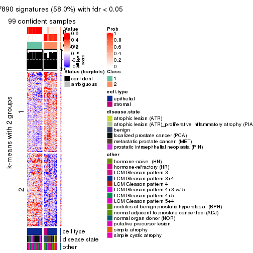
get_signatures(res, k = 3, scale_rows = FALSE)
get_signatures(res, k = 4, scale_rows = FALSE)
get_signatures(res, k = 5, scale_rows = FALSE)
#> Error in mat[ceiling(1:nr/h_ratio), ceiling(1:nc/w_ratio), drop = FALSE]: subscript out of bounds
get_signatures(res, k = 6, scale_rows = FALSE)
#> Error in mat[ceiling(1:nr/h_ratio), ceiling(1:nc/w_ratio), drop = FALSE]: subscript out of bounds
Compare the overlap of signatures from different k:
compare_signatures(res)
get_signature() returns a data frame invisibly. TO get the list of signatures, the function
call should be assigned to a variable explicitly. In following code, if plot argument is set
to FALSE, no heatmap is plotted while only the differential analysis is performed.
# code only for demonstration
tb = get_signature(res, k = ..., plot = FALSE)
An example of the output of tb is:
#> which_row fdr mean_1 mean_2 scaled_mean_1 scaled_mean_2 km
#> 1 38 0.042760348 8.373488 9.131774 -0.5533452 0.5164555 1
#> 2 40 0.018707592 7.106213 8.469186 -0.6173731 0.5762149 1
#> 3 55 0.019134737 10.221463 11.207825 -0.6159697 0.5749050 1
#> 4 59 0.006059896 5.921854 7.869574 -0.6899429 0.6439467 1
#> 5 60 0.018055526 8.928898 10.211722 -0.6204761 0.5791110 1
#> 6 98 0.009384629 15.714769 14.887706 0.6635654 -0.6193277 2
...
The columns in tb are:
which_row: row indices corresponding to the input matrix.fdr: FDR for the differential test. mean_x: The mean value in group x.scaled_mean_x: The mean value in group x after rows are scaled.km: Row groups if k-means clustering is applied to rows.UMAP plot which shows how samples are separated.
dimension_reduction(res, k = 2, method = "UMAP")
dimension_reduction(res, k = 3, method = "UMAP")
dimension_reduction(res, k = 4, method = "UMAP")
dimension_reduction(res, k = 5, method = "UMAP")
dimension_reduction(res, k = 6, method = "UMAP")
Following heatmap shows how subgroups are split when increasing k:
collect_classes(res)
Test correlation between subgroups and known annotations. If the known annotation is numeric, one-way ANOVA test is applied, and if the known annotation is discrete, chi-squared contingency table test is applied.
test_to_known_factors(res)
#> n cell.type(p) disease.state(p) other(p) k
#> MAD:kmeans 99 2.54e-04 1.57e-08 7.54e-05 2
#> MAD:kmeans 101 1.17e-22 3.56e-11 7.58e-09 3
#> MAD:kmeans 98 4.18e-21 4.84e-15 5.47e-12 4
#> MAD:kmeans 80 1.74e-16 2.60e-13 5.72e-11 5
#> MAD:kmeans 54 5.26e-11 1.90e-16 6.41e-14 6
If matrix rows can be associated to genes, consider to use functional_enrichment(res,
...) to perform function enrichment for the signature genes. See this vignette for more detailed explanations.
The object with results only for a single top-value method and a single partition method can be extracted as:
res = res_list["MAD", "skmeans"]
# you can also extract it by
# res = res_list["MAD:skmeans"]
A summary of res and all the functions that can be applied to it:
res
#> A 'ConsensusPartition' object with k = 2, 3, 4, 5, 6.
#> On a matrix with 13604 rows and 104 columns.
#> Top rows (1000, 2000, 3000, 4000, 5000) are extracted by 'MAD' method.
#> Subgroups are detected by 'skmeans' method.
#> Performed in total 1250 partitions by row resampling.
#> Best k for subgroups seems to be 2.
#>
#> Following methods can be applied to this 'ConsensusPartition' object:
#> [1] "cola_report" "collect_classes" "collect_plots"
#> [4] "collect_stats" "colnames" "compare_signatures"
#> [7] "consensus_heatmap" "dimension_reduction" "functional_enrichment"
#> [10] "get_anno_col" "get_anno" "get_classes"
#> [13] "get_consensus" "get_matrix" "get_membership"
#> [16] "get_param" "get_signatures" "get_stats"
#> [19] "is_best_k" "is_stable_k" "membership_heatmap"
#> [22] "ncol" "nrow" "plot_ecdf"
#> [25] "rownames" "select_partition_number" "show"
#> [28] "suggest_best_k" "test_to_known_factors"
collect_plots() function collects all the plots made from res for all k (number of partitions)
into one single page to provide an easy and fast comparison between different k.
collect_plots(res)
The plots are:
k and the heatmap of
predicted classes for each k.k.k.k.All the plots in panels can be made by individual functions and they are plotted later in this section.
select_partition_number() produces several plots showing different
statistics for choosing “optimized” k. There are following statistics:
k;k, the area increased is defined as \(A_k - A_{k-1}\).The detailed explanations of these statistics can be found in the cola vignette.
Generally speaking, lower PAC score, higher mean silhouette score or higher
concordance corresponds to better partition. Rand index and Jaccard index
measure how similar the current partition is compared to partition with k-1.
If they are too similar, we won't accept k is better than k-1.
select_partition_number(res)
The numeric values for all these statistics can be obtained by get_stats().
get_stats(res)
#> k 1-PAC mean_silhouette concordance area_increased Rand Jaccard
#> 2 2 0.866 0.926 0.967 0.5033 0.495 0.495
#> 3 3 0.734 0.674 0.857 0.3170 0.739 0.520
#> 4 4 0.895 0.879 0.950 0.1237 0.855 0.604
#> 5 5 0.805 0.728 0.844 0.0599 0.946 0.797
#> 6 6 0.809 0.782 0.871 0.0461 0.912 0.632
suggest_best_k() suggests the best \(k\) based on these statistics. The rules are as follows:
suggest_best_k(res)
#> [1] 2
Following shows the table of the partitions (You need to click the show/hide
code output link to see it). The membership matrix (columns with name p*)
is inferred by
clue::cl_consensus()
function with the SE method. Basically the value in the membership matrix
represents the probability to belong to a certain group. The finall class
label for an item is determined with the group with highest probability it
belongs to.
In get_classes() function, the entropy is calculated from the membership
matrix and the silhouette score is calculated from the consensus matrix.
cbind(get_classes(res, k = 2), get_membership(res, k = 2))
#> class entropy silhouette p1 p2
#> GSM141334 1 0.1633 0.957 0.976 0.024
#> GSM141335 1 0.0000 0.978 1.000 0.000
#> GSM141336 2 0.7219 0.767 0.200 0.800
#> GSM141337 1 0.0000 0.978 1.000 0.000
#> GSM141184 2 0.7453 0.752 0.212 0.788
#> GSM141185 2 0.7219 0.767 0.200 0.800
#> GSM141186 2 0.0000 0.950 0.000 1.000
#> GSM141243 2 0.0000 0.950 0.000 1.000
#> GSM141244 1 0.0000 0.978 1.000 0.000
#> GSM141246 1 0.4022 0.898 0.920 0.080
#> GSM141247 2 0.7219 0.767 0.200 0.800
#> GSM141248 1 0.0000 0.978 1.000 0.000
#> GSM141249 1 0.0000 0.978 1.000 0.000
#> GSM141258 2 0.9323 0.527 0.348 0.652
#> GSM141259 2 0.0000 0.950 0.000 1.000
#> GSM141260 1 0.2043 0.950 0.968 0.032
#> GSM141261 2 0.0000 0.950 0.000 1.000
#> GSM141262 2 0.0000 0.950 0.000 1.000
#> GSM141263 2 0.0000 0.950 0.000 1.000
#> GSM141338 2 0.9710 0.410 0.400 0.600
#> GSM141339 1 0.0000 0.978 1.000 0.000
#> GSM141340 1 0.0000 0.978 1.000 0.000
#> GSM141265 2 0.0000 0.950 0.000 1.000
#> GSM141267 1 0.0000 0.978 1.000 0.000
#> GSM141330 2 0.0000 0.950 0.000 1.000
#> GSM141266 2 0.0000 0.950 0.000 1.000
#> GSM141264 2 0.0000 0.950 0.000 1.000
#> GSM141341 2 0.0000 0.950 0.000 1.000
#> GSM141342 2 0.0000 0.950 0.000 1.000
#> GSM141343 2 0.0000 0.950 0.000 1.000
#> GSM141356 2 0.0000 0.950 0.000 1.000
#> GSM141357 1 0.6973 0.762 0.812 0.188
#> GSM141358 2 0.0000 0.950 0.000 1.000
#> GSM141359 2 0.0000 0.950 0.000 1.000
#> GSM141360 1 0.0672 0.972 0.992 0.008
#> GSM141361 2 0.0000 0.950 0.000 1.000
#> GSM141362 2 0.0000 0.950 0.000 1.000
#> GSM141363 2 0.7139 0.772 0.196 0.804
#> GSM141364 1 0.7815 0.697 0.768 0.232
#> GSM141365 2 0.0000 0.950 0.000 1.000
#> GSM141366 2 0.0000 0.950 0.000 1.000
#> GSM141367 2 0.0672 0.944 0.008 0.992
#> GSM141368 2 0.0000 0.950 0.000 1.000
#> GSM141369 2 0.0000 0.950 0.000 1.000
#> GSM141370 2 0.0000 0.950 0.000 1.000
#> GSM141371 2 0.0000 0.950 0.000 1.000
#> GSM141372 2 0.0000 0.950 0.000 1.000
#> GSM141373 1 0.0000 0.978 1.000 0.000
#> GSM141374 1 0.0000 0.978 1.000 0.000
#> GSM141375 2 0.0000 0.950 0.000 1.000
#> GSM141376 1 0.0000 0.978 1.000 0.000
#> GSM141377 1 0.0000 0.978 1.000 0.000
#> GSM141378 1 0.0000 0.978 1.000 0.000
#> GSM141380 1 0.0000 0.978 1.000 0.000
#> GSM141387 1 0.0000 0.978 1.000 0.000
#> GSM141395 1 0.0000 0.978 1.000 0.000
#> GSM141397 2 0.0000 0.950 0.000 1.000
#> GSM141398 2 0.9710 0.410 0.400 0.600
#> GSM141401 1 0.0000 0.978 1.000 0.000
#> GSM141399 1 0.0000 0.978 1.000 0.000
#> GSM141379 1 0.0000 0.978 1.000 0.000
#> GSM141381 1 0.0000 0.978 1.000 0.000
#> GSM141383 1 0.0000 0.978 1.000 0.000
#> GSM141384 1 0.0000 0.978 1.000 0.000
#> GSM141385 1 0.0000 0.978 1.000 0.000
#> GSM141388 1 0.0000 0.978 1.000 0.000
#> GSM141389 1 0.0000 0.978 1.000 0.000
#> GSM141391 1 0.0000 0.978 1.000 0.000
#> GSM141394 2 0.0000 0.950 0.000 1.000
#> GSM141396 1 0.0000 0.978 1.000 0.000
#> GSM141403 1 0.4815 0.872 0.896 0.104
#> GSM141404 1 0.0000 0.978 1.000 0.000
#> GSM141386 1 0.0000 0.978 1.000 0.000
#> GSM141382 1 0.0000 0.978 1.000 0.000
#> GSM141390 1 0.0000 0.978 1.000 0.000
#> GSM141393 1 0.0000 0.978 1.000 0.000
#> GSM141400 1 0.0000 0.978 1.000 0.000
#> GSM141402 2 0.0000 0.950 0.000 1.000
#> GSM141392 1 0.9661 0.367 0.608 0.392
#> GSM141405 1 0.0000 0.978 1.000 0.000
#> GSM141406 2 0.8081 0.704 0.248 0.752
#> GSM141407 1 0.0000 0.978 1.000 0.000
#> GSM141408 1 0.0000 0.978 1.000 0.000
#> GSM141409 1 0.0000 0.978 1.000 0.000
#> GSM141410 1 0.0000 0.978 1.000 0.000
#> GSM141411 1 0.0000 0.978 1.000 0.000
#> GSM141412 1 0.0000 0.978 1.000 0.000
#> GSM141413 1 0.0000 0.978 1.000 0.000
#> GSM141414 1 0.0000 0.978 1.000 0.000
#> GSM141415 1 0.0000 0.978 1.000 0.000
#> GSM141416 1 0.0000 0.978 1.000 0.000
#> GSM141417 1 0.0000 0.978 1.000 0.000
#> GSM141420 2 0.0000 0.950 0.000 1.000
#> GSM141421 2 0.0000 0.950 0.000 1.000
#> GSM141422 2 0.0000 0.950 0.000 1.000
#> GSM141423 2 0.0000 0.950 0.000 1.000
#> GSM141424 2 0.0000 0.950 0.000 1.000
#> GSM141427 2 0.0000 0.950 0.000 1.000
#> GSM141428 2 0.0000 0.950 0.000 1.000
#> GSM141418 2 0.0000 0.950 0.000 1.000
#> GSM141419 2 0.0000 0.950 0.000 1.000
#> GSM141425 2 0.0000 0.950 0.000 1.000
#> GSM141426 2 0.0000 0.950 0.000 1.000
#> GSM141429 2 0.0000 0.950 0.000 1.000
cbind(get_classes(res, k = 3), get_membership(res, k = 3))
#> class entropy silhouette p1 p2 p3
#> GSM141334 2 0.615 0.7870 0.000 0.592 0.408
#> GSM141335 2 0.615 0.7870 0.000 0.592 0.408
#> GSM141336 2 0.615 0.7870 0.000 0.592 0.408
#> GSM141337 2 0.000 0.3136 0.000 1.000 0.000
#> GSM141184 2 0.615 0.7870 0.000 0.592 0.408
#> GSM141185 2 0.615 0.7870 0.000 0.592 0.408
#> GSM141186 3 0.000 0.5770 0.000 0.000 1.000
#> GSM141243 2 0.620 0.7695 0.000 0.576 0.424
#> GSM141244 2 0.615 0.7870 0.000 0.592 0.408
#> GSM141246 2 0.615 0.7870 0.000 0.592 0.408
#> GSM141247 2 0.615 0.7870 0.000 0.592 0.408
#> GSM141248 2 0.484 0.6543 0.000 0.776 0.224
#> GSM141249 1 0.617 0.9254 0.588 0.412 0.000
#> GSM141258 2 0.615 0.7870 0.000 0.592 0.408
#> GSM141259 3 0.000 0.5770 0.000 0.000 1.000
#> GSM141260 2 0.614 0.7850 0.000 0.596 0.404
#> GSM141261 3 0.576 -0.2906 0.000 0.328 0.672
#> GSM141262 2 0.615 0.7870 0.000 0.592 0.408
#> GSM141263 3 0.000 0.5770 0.000 0.000 1.000
#> GSM141338 2 0.615 0.7870 0.000 0.592 0.408
#> GSM141339 2 0.615 0.7870 0.000 0.592 0.408
#> GSM141340 1 0.617 0.9254 0.588 0.412 0.000
#> GSM141265 3 0.615 0.7402 0.408 0.000 0.592
#> GSM141267 2 0.553 0.3661 0.296 0.704 0.000
#> GSM141330 1 0.955 -0.6829 0.408 0.192 0.400
#> GSM141266 3 0.489 0.0553 0.000 0.228 0.772
#> GSM141264 3 0.615 0.7402 0.408 0.000 0.592
#> GSM141341 3 0.615 0.7402 0.408 0.000 0.592
#> GSM141342 3 0.610 0.7357 0.392 0.000 0.608
#> GSM141343 3 0.000 0.5770 0.000 0.000 1.000
#> GSM141356 3 0.615 0.7402 0.408 0.000 0.592
#> GSM141357 1 0.739 0.8890 0.556 0.408 0.036
#> GSM141358 3 0.000 0.5770 0.000 0.000 1.000
#> GSM141359 3 0.000 0.5770 0.000 0.000 1.000
#> GSM141360 1 0.615 0.9288 0.592 0.408 0.000
#> GSM141361 3 0.615 0.7402 0.408 0.000 0.592
#> GSM141362 3 0.000 0.5770 0.000 0.000 1.000
#> GSM141363 2 0.906 0.6774 0.136 0.456 0.408
#> GSM141364 2 0.840 0.3478 0.084 0.472 0.444
#> GSM141365 3 0.615 0.7402 0.408 0.000 0.592
#> GSM141366 3 0.000 0.5770 0.000 0.000 1.000
#> GSM141367 3 0.615 0.7402 0.408 0.000 0.592
#> GSM141368 3 0.000 0.5770 0.000 0.000 1.000
#> GSM141369 3 0.000 0.5770 0.000 0.000 1.000
#> GSM141370 3 0.000 0.5770 0.000 0.000 1.000
#> GSM141371 3 0.000 0.5770 0.000 0.000 1.000
#> GSM141372 3 0.000 0.5770 0.000 0.000 1.000
#> GSM141373 2 0.116 0.2574 0.028 0.972 0.000
#> GSM141374 1 0.615 0.9288 0.592 0.408 0.000
#> GSM141375 3 0.615 0.7402 0.408 0.000 0.592
#> GSM141376 1 0.615 0.9288 0.592 0.408 0.000
#> GSM141377 1 0.615 0.9288 0.592 0.408 0.000
#> GSM141378 1 0.615 0.9288 0.592 0.408 0.000
#> GSM141380 1 0.615 0.9288 0.592 0.408 0.000
#> GSM141387 1 0.615 0.9288 0.592 0.408 0.000
#> GSM141395 2 0.581 -0.5655 0.336 0.664 0.000
#> GSM141397 3 0.412 0.2422 0.000 0.168 0.832
#> GSM141398 2 0.615 0.7870 0.000 0.592 0.408
#> GSM141401 3 0.965 -0.6313 0.208 0.384 0.408
#> GSM141399 2 0.615 0.7870 0.000 0.592 0.408
#> GSM141379 1 0.615 0.9288 0.592 0.408 0.000
#> GSM141381 1 0.615 0.9288 0.592 0.408 0.000
#> GSM141383 1 0.615 0.9288 0.592 0.408 0.000
#> GSM141384 1 0.615 0.9288 0.592 0.408 0.000
#> GSM141385 1 0.615 0.9288 0.592 0.408 0.000
#> GSM141388 1 0.615 0.9288 0.592 0.408 0.000
#> GSM141389 1 0.615 0.9288 0.592 0.408 0.000
#> GSM141391 1 0.615 0.9288 0.592 0.408 0.000
#> GSM141394 2 0.615 0.7870 0.000 0.592 0.408
#> GSM141396 1 0.615 0.9288 0.592 0.408 0.000
#> GSM141403 1 0.833 0.2811 0.572 0.100 0.328
#> GSM141404 1 0.619 0.9175 0.580 0.420 0.000
#> GSM141386 1 0.615 0.9288 0.592 0.408 0.000
#> GSM141382 1 0.615 0.9288 0.592 0.408 0.000
#> GSM141390 1 0.615 0.9288 0.592 0.408 0.000
#> GSM141393 1 0.615 0.9288 0.592 0.408 0.000
#> GSM141400 1 0.615 0.9288 0.592 0.408 0.000
#> GSM141402 3 0.000 0.5770 0.000 0.000 1.000
#> GSM141392 1 0.599 -0.5237 0.632 0.000 0.368
#> GSM141405 1 0.615 0.9288 0.592 0.408 0.000
#> GSM141406 2 0.619 0.7743 0.000 0.580 0.420
#> GSM141407 1 0.615 0.9288 0.592 0.408 0.000
#> GSM141408 1 0.615 0.9288 0.592 0.408 0.000
#> GSM141409 1 0.620 0.9135 0.576 0.424 0.000
#> GSM141410 1 0.615 0.9288 0.592 0.408 0.000
#> GSM141411 1 0.615 0.9288 0.592 0.408 0.000
#> GSM141412 1 0.615 0.9288 0.592 0.408 0.000
#> GSM141413 2 0.450 -0.2177 0.196 0.804 0.000
#> GSM141414 2 0.450 -0.2177 0.196 0.804 0.000
#> GSM141415 1 0.615 0.9288 0.592 0.408 0.000
#> GSM141416 2 0.615 0.7870 0.000 0.592 0.408
#> GSM141417 1 0.615 0.9288 0.592 0.408 0.000
#> GSM141420 3 0.615 0.7402 0.408 0.000 0.592
#> GSM141421 3 0.615 0.7402 0.408 0.000 0.592
#> GSM141422 3 0.615 0.7402 0.408 0.000 0.592
#> GSM141423 3 0.615 0.7402 0.408 0.000 0.592
#> GSM141424 3 0.615 0.7402 0.408 0.000 0.592
#> GSM141427 3 0.615 0.7402 0.408 0.000 0.592
#> GSM141428 3 0.615 0.7402 0.408 0.000 0.592
#> GSM141418 3 0.615 0.7402 0.408 0.000 0.592
#> GSM141419 3 0.615 0.7402 0.408 0.000 0.592
#> GSM141425 3 0.615 0.7402 0.408 0.000 0.592
#> GSM141426 3 0.615 0.7402 0.408 0.000 0.592
#> GSM141429 3 0.615 0.7402 0.408 0.000 0.592
cbind(get_classes(res, k = 4), get_membership(res, k = 4))
#> class entropy silhouette p1 p2 p3 p4
#> GSM141334 2 0.0000 0.938 0.000 1.000 0.000 0.000
#> GSM141335 2 0.0000 0.938 0.000 1.000 0.000 0.000
#> GSM141336 2 0.0000 0.938 0.000 1.000 0.000 0.000
#> GSM141337 2 0.0000 0.938 0.000 1.000 0.000 0.000
#> GSM141184 2 0.0000 0.938 0.000 1.000 0.000 0.000
#> GSM141185 2 0.0000 0.938 0.000 1.000 0.000 0.000
#> GSM141186 4 0.2149 0.860 0.000 0.000 0.088 0.912
#> GSM141243 4 0.3975 0.680 0.000 0.240 0.000 0.760
#> GSM141244 2 0.0000 0.938 0.000 1.000 0.000 0.000
#> GSM141246 2 0.0000 0.938 0.000 1.000 0.000 0.000
#> GSM141247 2 0.0000 0.938 0.000 1.000 0.000 0.000
#> GSM141248 2 0.0000 0.938 0.000 1.000 0.000 0.000
#> GSM141249 1 0.0469 0.961 0.988 0.012 0.000 0.000
#> GSM141258 2 0.0000 0.938 0.000 1.000 0.000 0.000
#> GSM141259 4 0.2149 0.860 0.000 0.000 0.088 0.912
#> GSM141260 2 0.0000 0.938 0.000 1.000 0.000 0.000
#> GSM141261 4 0.2647 0.832 0.000 0.120 0.000 0.880
#> GSM141262 2 0.1389 0.898 0.000 0.952 0.000 0.048
#> GSM141263 4 0.1940 0.869 0.000 0.000 0.076 0.924
#> GSM141338 2 0.0000 0.938 0.000 1.000 0.000 0.000
#> GSM141339 2 0.0000 0.938 0.000 1.000 0.000 0.000
#> GSM141340 1 0.1389 0.931 0.952 0.048 0.000 0.000
#> GSM141265 3 0.0000 0.937 0.000 0.000 1.000 0.000
#> GSM141267 2 0.0000 0.938 0.000 1.000 0.000 0.000
#> GSM141330 3 0.0000 0.937 0.000 0.000 1.000 0.000
#> GSM141266 4 0.3311 0.776 0.000 0.172 0.000 0.828
#> GSM141264 3 0.0000 0.937 0.000 0.000 1.000 0.000
#> GSM141341 4 0.0336 0.910 0.000 0.000 0.008 0.992
#> GSM141342 4 0.0000 0.913 0.000 0.000 0.000 1.000
#> GSM141343 4 0.0000 0.913 0.000 0.000 0.000 1.000
#> GSM141356 3 0.4898 0.311 0.000 0.000 0.584 0.416
#> GSM141357 1 0.3610 0.749 0.800 0.000 0.000 0.200
#> GSM141358 4 0.0000 0.913 0.000 0.000 0.000 1.000
#> GSM141359 4 0.0000 0.913 0.000 0.000 0.000 1.000
#> GSM141360 1 0.3311 0.788 0.828 0.000 0.000 0.172
#> GSM141361 4 0.0336 0.909 0.000 0.000 0.008 0.992
#> GSM141362 4 0.0000 0.913 0.000 0.000 0.000 1.000
#> GSM141363 4 0.0000 0.913 0.000 0.000 0.000 1.000
#> GSM141364 4 0.5894 0.173 0.036 0.428 0.000 0.536
#> GSM141365 4 0.4907 0.177 0.000 0.000 0.420 0.580
#> GSM141366 4 0.0000 0.913 0.000 0.000 0.000 1.000
#> GSM141367 3 0.3649 0.727 0.000 0.000 0.796 0.204
#> GSM141368 4 0.0000 0.913 0.000 0.000 0.000 1.000
#> GSM141369 4 0.0000 0.913 0.000 0.000 0.000 1.000
#> GSM141370 4 0.0000 0.913 0.000 0.000 0.000 1.000
#> GSM141371 4 0.0000 0.913 0.000 0.000 0.000 1.000
#> GSM141372 4 0.0000 0.913 0.000 0.000 0.000 1.000
#> GSM141373 2 0.2704 0.825 0.124 0.876 0.000 0.000
#> GSM141374 1 0.0000 0.971 1.000 0.000 0.000 0.000
#> GSM141375 3 0.4907 0.214 0.000 0.000 0.580 0.420
#> GSM141376 1 0.0000 0.971 1.000 0.000 0.000 0.000
#> GSM141377 1 0.0000 0.971 1.000 0.000 0.000 0.000
#> GSM141378 1 0.0000 0.971 1.000 0.000 0.000 0.000
#> GSM141380 1 0.0000 0.971 1.000 0.000 0.000 0.000
#> GSM141387 1 0.0000 0.971 1.000 0.000 0.000 0.000
#> GSM141395 1 0.4948 0.202 0.560 0.440 0.000 0.000
#> GSM141397 4 0.3525 0.827 0.000 0.040 0.100 0.860
#> GSM141398 2 0.0000 0.938 0.000 1.000 0.000 0.000
#> GSM141401 2 0.7586 0.144 0.200 0.436 0.000 0.364
#> GSM141399 2 0.0000 0.938 0.000 1.000 0.000 0.000
#> GSM141379 1 0.0000 0.971 1.000 0.000 0.000 0.000
#> GSM141381 1 0.0000 0.971 1.000 0.000 0.000 0.000
#> GSM141383 1 0.0000 0.971 1.000 0.000 0.000 0.000
#> GSM141384 1 0.0000 0.971 1.000 0.000 0.000 0.000
#> GSM141385 1 0.0000 0.971 1.000 0.000 0.000 0.000
#> GSM141388 1 0.0000 0.971 1.000 0.000 0.000 0.000
#> GSM141389 1 0.0000 0.971 1.000 0.000 0.000 0.000
#> GSM141391 1 0.0000 0.971 1.000 0.000 0.000 0.000
#> GSM141394 2 0.0000 0.938 0.000 1.000 0.000 0.000
#> GSM141396 1 0.0000 0.971 1.000 0.000 0.000 0.000
#> GSM141403 4 0.0336 0.909 0.000 0.008 0.000 0.992
#> GSM141404 1 0.0707 0.955 0.980 0.020 0.000 0.000
#> GSM141386 1 0.0000 0.971 1.000 0.000 0.000 0.000
#> GSM141382 1 0.0000 0.971 1.000 0.000 0.000 0.000
#> GSM141390 1 0.0000 0.971 1.000 0.000 0.000 0.000
#> GSM141393 1 0.0000 0.971 1.000 0.000 0.000 0.000
#> GSM141400 1 0.0000 0.971 1.000 0.000 0.000 0.000
#> GSM141402 4 0.0000 0.913 0.000 0.000 0.000 1.000
#> GSM141392 3 0.0000 0.937 0.000 0.000 1.000 0.000
#> GSM141405 1 0.0000 0.971 1.000 0.000 0.000 0.000
#> GSM141406 2 0.4222 0.587 0.000 0.728 0.000 0.272
#> GSM141407 1 0.0000 0.971 1.000 0.000 0.000 0.000
#> GSM141408 1 0.0000 0.971 1.000 0.000 0.000 0.000
#> GSM141409 1 0.1474 0.927 0.948 0.052 0.000 0.000
#> GSM141410 1 0.0000 0.971 1.000 0.000 0.000 0.000
#> GSM141411 1 0.0000 0.971 1.000 0.000 0.000 0.000
#> GSM141412 1 0.0000 0.971 1.000 0.000 0.000 0.000
#> GSM141413 2 0.3444 0.758 0.184 0.816 0.000 0.000
#> GSM141414 2 0.3444 0.758 0.184 0.816 0.000 0.000
#> GSM141415 1 0.0000 0.971 1.000 0.000 0.000 0.000
#> GSM141416 2 0.0000 0.938 0.000 1.000 0.000 0.000
#> GSM141417 1 0.0000 0.971 1.000 0.000 0.000 0.000
#> GSM141420 3 0.0000 0.937 0.000 0.000 1.000 0.000
#> GSM141421 3 0.0000 0.937 0.000 0.000 1.000 0.000
#> GSM141422 3 0.0000 0.937 0.000 0.000 1.000 0.000
#> GSM141423 3 0.0000 0.937 0.000 0.000 1.000 0.000
#> GSM141424 3 0.0000 0.937 0.000 0.000 1.000 0.000
#> GSM141427 3 0.0000 0.937 0.000 0.000 1.000 0.000
#> GSM141428 3 0.0000 0.937 0.000 0.000 1.000 0.000
#> GSM141418 3 0.0000 0.937 0.000 0.000 1.000 0.000
#> GSM141419 3 0.0000 0.937 0.000 0.000 1.000 0.000
#> GSM141425 3 0.0000 0.937 0.000 0.000 1.000 0.000
#> GSM141426 3 0.0000 0.937 0.000 0.000 1.000 0.000
#> GSM141429 3 0.0000 0.937 0.000 0.000 1.000 0.000
cbind(get_classes(res, k = 5), get_membership(res, k = 5))
#> class entropy silhouette p1 p2 p3 p4 p5
#> GSM141334 2 0.1121 0.8314 0.000 0.956 0.000 0.000 0.044
#> GSM141335 2 0.0609 0.8353 0.000 0.980 0.000 0.000 0.020
#> GSM141336 2 0.1557 0.8216 0.000 0.940 0.000 0.008 0.052
#> GSM141337 2 0.3508 0.6996 0.000 0.748 0.000 0.000 0.252
#> GSM141184 2 0.0404 0.8360 0.000 0.988 0.000 0.000 0.012
#> GSM141185 2 0.1557 0.8216 0.000 0.940 0.000 0.008 0.052
#> GSM141186 4 0.3107 0.7905 0.000 0.008 0.032 0.864 0.096
#> GSM141243 4 0.5222 0.5553 0.000 0.196 0.000 0.680 0.124
#> GSM141244 2 0.0404 0.8365 0.000 0.988 0.000 0.000 0.012
#> GSM141246 2 0.1478 0.8234 0.000 0.936 0.000 0.000 0.064
#> GSM141247 2 0.1484 0.8231 0.000 0.944 0.000 0.008 0.048
#> GSM141248 2 0.0609 0.8353 0.000 0.980 0.000 0.000 0.020
#> GSM141249 1 0.5142 0.6202 0.668 0.088 0.000 0.000 0.244
#> GSM141258 2 0.1557 0.8216 0.000 0.940 0.000 0.008 0.052
#> GSM141259 4 0.3107 0.7908 0.000 0.008 0.032 0.864 0.096
#> GSM141260 2 0.2280 0.7811 0.000 0.880 0.000 0.000 0.120
#> GSM141261 4 0.3579 0.7543 0.000 0.072 0.000 0.828 0.100
#> GSM141262 2 0.4203 0.6642 0.000 0.780 0.000 0.092 0.128
#> GSM141263 4 0.2748 0.8009 0.000 0.008 0.016 0.880 0.096
#> GSM141338 2 0.1331 0.8285 0.000 0.952 0.000 0.008 0.040
#> GSM141339 2 0.0794 0.8360 0.000 0.972 0.000 0.000 0.028
#> GSM141340 1 0.6054 0.4767 0.568 0.172 0.000 0.000 0.260
#> GSM141265 3 0.1851 0.8868 0.000 0.000 0.912 0.000 0.088
#> GSM141267 2 0.1168 0.8327 0.000 0.960 0.008 0.000 0.032
#> GSM141330 3 0.1671 0.8970 0.000 0.000 0.924 0.000 0.076
#> GSM141266 4 0.3526 0.7601 0.000 0.072 0.000 0.832 0.096
#> GSM141264 3 0.1671 0.8974 0.000 0.000 0.924 0.000 0.076
#> GSM141341 4 0.0566 0.8433 0.000 0.000 0.004 0.984 0.012
#> GSM141342 4 0.0290 0.8434 0.000 0.000 0.000 0.992 0.008
#> GSM141343 4 0.0290 0.8434 0.000 0.000 0.000 0.992 0.008
#> GSM141356 5 0.6493 0.3973 0.000 0.000 0.260 0.248 0.492
#> GSM141357 5 0.6298 0.4796 0.292 0.000 0.000 0.188 0.520
#> GSM141358 4 0.4273 -0.1459 0.000 0.000 0.000 0.552 0.448
#> GSM141359 4 0.1965 0.7569 0.000 0.000 0.000 0.904 0.096
#> GSM141360 5 0.6144 0.4222 0.332 0.000 0.000 0.148 0.520
#> GSM141361 5 0.4294 0.2329 0.000 0.000 0.000 0.468 0.532
#> GSM141362 4 0.0162 0.8426 0.000 0.000 0.000 0.996 0.004
#> GSM141363 4 0.2248 0.7706 0.000 0.012 0.000 0.900 0.088
#> GSM141364 5 0.6421 0.4486 0.020 0.160 0.000 0.244 0.576
#> GSM141365 5 0.6300 0.3863 0.000 0.000 0.164 0.348 0.488
#> GSM141366 4 0.0290 0.8434 0.000 0.000 0.000 0.992 0.008
#> GSM141367 3 0.6922 -0.0565 0.016 0.000 0.464 0.212 0.308
#> GSM141368 4 0.0290 0.8434 0.000 0.000 0.000 0.992 0.008
#> GSM141369 4 0.0162 0.8434 0.000 0.000 0.000 0.996 0.004
#> GSM141370 4 0.0000 0.8440 0.000 0.000 0.000 1.000 0.000
#> GSM141371 4 0.0000 0.8440 0.000 0.000 0.000 1.000 0.000
#> GSM141372 4 0.0000 0.8440 0.000 0.000 0.000 1.000 0.000
#> GSM141373 2 0.5645 0.4670 0.084 0.540 0.000 0.000 0.376
#> GSM141374 1 0.0794 0.8466 0.972 0.000 0.000 0.000 0.028
#> GSM141375 4 0.5704 0.3863 0.016 0.000 0.328 0.592 0.064
#> GSM141376 1 0.0000 0.8553 1.000 0.000 0.000 0.000 0.000
#> GSM141377 1 0.0290 0.8531 0.992 0.000 0.000 0.000 0.008
#> GSM141378 1 0.3534 0.6946 0.744 0.000 0.000 0.000 0.256
#> GSM141380 1 0.0000 0.8553 1.000 0.000 0.000 0.000 0.000
#> GSM141387 1 0.0000 0.8553 1.000 0.000 0.000 0.000 0.000
#> GSM141395 5 0.6805 -0.1287 0.320 0.308 0.000 0.000 0.372
#> GSM141397 4 0.3738 0.7704 0.000 0.044 0.024 0.836 0.096
#> GSM141398 2 0.1331 0.8285 0.000 0.952 0.000 0.008 0.040
#> GSM141401 5 0.8194 -0.0527 0.108 0.268 0.000 0.292 0.332
#> GSM141399 2 0.4030 0.6092 0.000 0.648 0.000 0.000 0.352
#> GSM141379 1 0.0794 0.8464 0.972 0.000 0.000 0.000 0.028
#> GSM141381 1 0.0000 0.8553 1.000 0.000 0.000 0.000 0.000
#> GSM141383 1 0.0290 0.8531 0.992 0.000 0.000 0.000 0.008
#> GSM141384 1 0.0162 0.8541 0.996 0.000 0.000 0.000 0.004
#> GSM141385 1 0.4015 0.6166 0.652 0.000 0.000 0.000 0.348
#> GSM141388 1 0.0290 0.8531 0.992 0.000 0.000 0.000 0.008
#> GSM141389 1 0.0290 0.8531 0.992 0.000 0.000 0.000 0.008
#> GSM141391 1 0.1043 0.8404 0.960 0.000 0.000 0.000 0.040
#> GSM141394 2 0.3336 0.7291 0.000 0.772 0.000 0.000 0.228
#> GSM141396 1 0.4029 0.6408 0.680 0.004 0.000 0.000 0.316
#> GSM141403 5 0.4434 0.2614 0.000 0.004 0.000 0.460 0.536
#> GSM141404 1 0.4870 0.0500 0.532 0.016 0.000 0.004 0.448
#> GSM141386 1 0.5091 0.5271 0.584 0.044 0.000 0.000 0.372
#> GSM141382 1 0.0000 0.8553 1.000 0.000 0.000 0.000 0.000
#> GSM141390 1 0.0404 0.8509 0.988 0.000 0.000 0.000 0.012
#> GSM141393 1 0.0000 0.8553 1.000 0.000 0.000 0.000 0.000
#> GSM141400 1 0.0000 0.8553 1.000 0.000 0.000 0.000 0.000
#> GSM141402 4 0.0162 0.8426 0.000 0.000 0.000 0.996 0.004
#> GSM141392 3 0.0162 0.9455 0.000 0.000 0.996 0.000 0.004
#> GSM141405 1 0.0798 0.8399 0.976 0.000 0.000 0.016 0.008
#> GSM141406 2 0.6413 0.3839 0.000 0.508 0.000 0.224 0.268
#> GSM141407 1 0.0000 0.8553 1.000 0.000 0.000 0.000 0.000
#> GSM141408 1 0.0000 0.8553 1.000 0.000 0.000 0.000 0.000
#> GSM141409 1 0.5868 0.4267 0.516 0.104 0.000 0.000 0.380
#> GSM141410 1 0.0000 0.8553 1.000 0.000 0.000 0.000 0.000
#> GSM141411 1 0.3928 0.6570 0.700 0.004 0.000 0.000 0.296
#> GSM141412 1 0.0000 0.8553 1.000 0.000 0.000 0.000 0.000
#> GSM141413 2 0.4880 0.5729 0.036 0.616 0.000 0.000 0.348
#> GSM141414 2 0.4921 0.5769 0.040 0.620 0.000 0.000 0.340
#> GSM141415 1 0.0000 0.8553 1.000 0.000 0.000 0.000 0.000
#> GSM141416 2 0.0404 0.8365 0.000 0.988 0.000 0.000 0.012
#> GSM141417 1 0.4623 0.6218 0.664 0.032 0.000 0.000 0.304
#> GSM141420 3 0.0000 0.9480 0.000 0.000 1.000 0.000 0.000
#> GSM141421 3 0.0000 0.9480 0.000 0.000 1.000 0.000 0.000
#> GSM141422 3 0.0000 0.9480 0.000 0.000 1.000 0.000 0.000
#> GSM141423 3 0.0000 0.9480 0.000 0.000 1.000 0.000 0.000
#> GSM141424 3 0.0000 0.9480 0.000 0.000 1.000 0.000 0.000
#> GSM141427 3 0.0000 0.9480 0.000 0.000 1.000 0.000 0.000
#> GSM141428 3 0.0000 0.9480 0.000 0.000 1.000 0.000 0.000
#> GSM141418 3 0.0000 0.9480 0.000 0.000 1.000 0.000 0.000
#> GSM141419 3 0.0000 0.9480 0.000 0.000 1.000 0.000 0.000
#> GSM141425 3 0.0000 0.9480 0.000 0.000 1.000 0.000 0.000
#> GSM141426 3 0.0000 0.9480 0.000 0.000 1.000 0.000 0.000
#> GSM141429 3 0.0000 0.9480 0.000 0.000 1.000 0.000 0.000
cbind(get_classes(res, k = 6), get_membership(res, k = 6))
#> class entropy silhouette p1 p2 p3 p4 p5 p6
#> GSM141334 2 0.1176 0.8875 0.000 0.956 0.000 0.000 0.020 0.024
#> GSM141335 2 0.1908 0.8716 0.000 0.900 0.000 0.000 0.096 0.004
#> GSM141336 2 0.0891 0.8834 0.000 0.968 0.000 0.008 0.000 0.024
#> GSM141337 5 0.3996 0.0116 0.000 0.484 0.000 0.000 0.512 0.004
#> GSM141184 2 0.2113 0.8756 0.000 0.896 0.000 0.004 0.092 0.008
#> GSM141185 2 0.0891 0.8834 0.000 0.968 0.000 0.008 0.000 0.024
#> GSM141186 4 0.1149 0.7907 0.000 0.024 0.000 0.960 0.008 0.008
#> GSM141243 4 0.3809 0.5788 0.000 0.240 0.000 0.732 0.004 0.024
#> GSM141244 2 0.1531 0.8832 0.000 0.928 0.000 0.004 0.068 0.000
#> GSM141246 2 0.3656 0.6955 0.000 0.728 0.000 0.004 0.256 0.012
#> GSM141247 2 0.0891 0.8834 0.000 0.968 0.000 0.008 0.000 0.024
#> GSM141248 2 0.2100 0.8615 0.000 0.884 0.000 0.000 0.112 0.004
#> GSM141249 1 0.5849 -0.2319 0.448 0.148 0.000 0.000 0.396 0.008
#> GSM141258 2 0.1149 0.8859 0.000 0.960 0.000 0.008 0.008 0.024
#> GSM141259 4 0.0779 0.7913 0.000 0.008 0.000 0.976 0.008 0.008
#> GSM141260 2 0.4632 0.6960 0.004 0.724 0.000 0.176 0.080 0.016
#> GSM141261 4 0.1477 0.7895 0.000 0.048 0.000 0.940 0.004 0.008
#> GSM141262 2 0.3013 0.7734 0.000 0.832 0.000 0.140 0.004 0.024
#> GSM141263 4 0.0665 0.7929 0.000 0.008 0.000 0.980 0.008 0.004
#> GSM141338 2 0.0891 0.8857 0.000 0.968 0.000 0.000 0.008 0.024
#> GSM141339 2 0.2020 0.8726 0.000 0.896 0.000 0.000 0.096 0.008
#> GSM141340 5 0.5794 0.5122 0.300 0.168 0.000 0.000 0.524 0.008
#> GSM141265 3 0.4070 0.7850 0.000 0.004 0.776 0.148 0.056 0.016
#> GSM141267 2 0.3110 0.8018 0.000 0.792 0.000 0.000 0.196 0.012
#> GSM141330 3 0.3808 0.8159 0.000 0.004 0.804 0.116 0.060 0.016
#> GSM141266 4 0.0779 0.7912 0.000 0.008 0.000 0.976 0.008 0.008
#> GSM141264 3 0.3609 0.8223 0.000 0.000 0.812 0.116 0.056 0.016
#> GSM141341 4 0.3184 0.8144 0.004 0.000 0.004 0.832 0.032 0.128
#> GSM141342 4 0.2631 0.8348 0.000 0.000 0.000 0.820 0.000 0.180
#> GSM141343 4 0.2631 0.8348 0.000 0.000 0.000 0.820 0.000 0.180
#> GSM141356 6 0.1563 0.8028 0.000 0.000 0.056 0.012 0.000 0.932
#> GSM141357 6 0.1588 0.7986 0.072 0.000 0.000 0.004 0.000 0.924
#> GSM141358 6 0.2553 0.7113 0.000 0.008 0.000 0.144 0.000 0.848
#> GSM141359 4 0.4012 0.6553 0.000 0.016 0.000 0.640 0.000 0.344
#> GSM141360 6 0.1910 0.7748 0.108 0.000 0.000 0.000 0.000 0.892
#> GSM141361 6 0.1429 0.7966 0.000 0.000 0.004 0.052 0.004 0.940
#> GSM141362 4 0.3071 0.8335 0.000 0.016 0.000 0.804 0.000 0.180
#> GSM141363 4 0.5095 0.6054 0.000 0.088 0.000 0.588 0.004 0.320
#> GSM141364 6 0.1490 0.7987 0.004 0.024 0.000 0.016 0.008 0.948
#> GSM141365 6 0.1549 0.8048 0.000 0.000 0.044 0.020 0.000 0.936
#> GSM141366 4 0.2597 0.8356 0.000 0.000 0.000 0.824 0.000 0.176
#> GSM141367 6 0.5840 0.5447 0.036 0.000 0.260 0.064 0.028 0.612
#> GSM141368 4 0.2631 0.8348 0.000 0.000 0.000 0.820 0.000 0.180
#> GSM141369 4 0.2946 0.8359 0.000 0.012 0.000 0.812 0.000 0.176
#> GSM141370 4 0.2946 0.8359 0.000 0.012 0.000 0.812 0.000 0.176
#> GSM141371 4 0.2946 0.8359 0.000 0.012 0.000 0.812 0.000 0.176
#> GSM141372 4 0.2946 0.8359 0.000 0.012 0.000 0.812 0.000 0.176
#> GSM141373 5 0.1901 0.7137 0.008 0.076 0.000 0.000 0.912 0.004
#> GSM141374 1 0.1267 0.8869 0.940 0.000 0.000 0.000 0.060 0.000
#> GSM141375 4 0.5114 0.5393 0.036 0.000 0.188 0.704 0.048 0.024
#> GSM141376 1 0.0260 0.9221 0.992 0.000 0.000 0.000 0.008 0.000
#> GSM141377 1 0.0547 0.9197 0.980 0.000 0.000 0.000 0.020 0.000
#> GSM141378 1 0.3868 -0.1325 0.508 0.000 0.000 0.000 0.492 0.000
#> GSM141380 1 0.0260 0.9221 0.992 0.000 0.000 0.000 0.008 0.000
#> GSM141387 1 0.0260 0.9221 0.992 0.000 0.000 0.000 0.008 0.000
#> GSM141395 5 0.2505 0.7285 0.064 0.040 0.000 0.000 0.888 0.008
#> GSM141397 4 0.1605 0.7655 0.000 0.004 0.000 0.936 0.044 0.016
#> GSM141398 2 0.0891 0.8855 0.000 0.968 0.000 0.000 0.008 0.024
#> GSM141401 5 0.3965 0.6151 0.016 0.036 0.000 0.172 0.772 0.004
#> GSM141399 5 0.2048 0.6984 0.000 0.120 0.000 0.000 0.880 0.000
#> GSM141379 1 0.0713 0.9129 0.972 0.000 0.000 0.000 0.028 0.000
#> GSM141381 1 0.0146 0.9211 0.996 0.000 0.000 0.000 0.004 0.000
#> GSM141383 1 0.0363 0.9194 0.988 0.000 0.000 0.000 0.012 0.000
#> GSM141384 1 0.0260 0.9205 0.992 0.000 0.000 0.000 0.008 0.000
#> GSM141385 5 0.3528 0.5871 0.296 0.000 0.000 0.000 0.700 0.004
#> GSM141388 1 0.0363 0.9198 0.988 0.000 0.000 0.000 0.012 0.000
#> GSM141389 1 0.0363 0.9198 0.988 0.000 0.000 0.000 0.012 0.000
#> GSM141391 1 0.2092 0.8113 0.876 0.000 0.000 0.000 0.124 0.000
#> GSM141394 5 0.4561 0.3352 0.000 0.336 0.000 0.020 0.624 0.020
#> GSM141396 5 0.3428 0.5816 0.304 0.000 0.000 0.000 0.696 0.000
#> GSM141403 6 0.3647 0.6822 0.000 0.004 0.000 0.156 0.052 0.788
#> GSM141404 6 0.5169 0.2202 0.416 0.052 0.000 0.000 0.016 0.516
#> GSM141386 5 0.1863 0.7213 0.104 0.000 0.000 0.000 0.896 0.000
#> GSM141382 1 0.0363 0.9186 0.988 0.000 0.000 0.000 0.012 0.000
#> GSM141390 1 0.0547 0.9156 0.980 0.000 0.000 0.000 0.020 0.000
#> GSM141393 1 0.1007 0.9044 0.956 0.000 0.000 0.000 0.044 0.000
#> GSM141400 1 0.0458 0.9187 0.984 0.000 0.000 0.000 0.016 0.000
#> GSM141402 4 0.3104 0.8324 0.000 0.016 0.000 0.800 0.000 0.184
#> GSM141392 3 0.0972 0.9364 0.008 0.000 0.964 0.000 0.028 0.000
#> GSM141405 1 0.2183 0.8478 0.912 0.000 0.000 0.028 0.040 0.020
#> GSM141406 5 0.5472 0.5089 0.000 0.144 0.000 0.200 0.632 0.024
#> GSM141407 1 0.0405 0.9219 0.988 0.000 0.000 0.000 0.008 0.004
#> GSM141408 1 0.0260 0.9221 0.992 0.000 0.000 0.000 0.008 0.000
#> GSM141409 5 0.2563 0.7320 0.084 0.028 0.000 0.000 0.880 0.008
#> GSM141410 1 0.0405 0.9219 0.988 0.000 0.000 0.000 0.008 0.004
#> GSM141411 5 0.4161 0.4593 0.372 0.008 0.000 0.000 0.612 0.008
#> GSM141412 1 0.0405 0.9219 0.988 0.000 0.000 0.000 0.008 0.004
#> GSM141413 5 0.2566 0.7117 0.012 0.112 0.000 0.000 0.868 0.008
#> GSM141414 5 0.2742 0.7043 0.012 0.128 0.000 0.000 0.852 0.008
#> GSM141415 1 0.0405 0.9219 0.988 0.000 0.000 0.000 0.008 0.004
#> GSM141416 2 0.2053 0.8659 0.000 0.888 0.000 0.000 0.108 0.004
#> GSM141417 5 0.4078 0.5886 0.300 0.016 0.000 0.000 0.676 0.008
#> GSM141420 3 0.0000 0.9577 0.000 0.000 1.000 0.000 0.000 0.000
#> GSM141421 3 0.0000 0.9577 0.000 0.000 1.000 0.000 0.000 0.000
#> GSM141422 3 0.0000 0.9577 0.000 0.000 1.000 0.000 0.000 0.000
#> GSM141423 3 0.0000 0.9577 0.000 0.000 1.000 0.000 0.000 0.000
#> GSM141424 3 0.0000 0.9577 0.000 0.000 1.000 0.000 0.000 0.000
#> GSM141427 3 0.0000 0.9577 0.000 0.000 1.000 0.000 0.000 0.000
#> GSM141428 3 0.0000 0.9577 0.000 0.000 1.000 0.000 0.000 0.000
#> GSM141418 3 0.0000 0.9577 0.000 0.000 1.000 0.000 0.000 0.000
#> GSM141419 3 0.0000 0.9577 0.000 0.000 1.000 0.000 0.000 0.000
#> GSM141425 3 0.0000 0.9577 0.000 0.000 1.000 0.000 0.000 0.000
#> GSM141426 3 0.0000 0.9577 0.000 0.000 1.000 0.000 0.000 0.000
#> GSM141429 3 0.0000 0.9577 0.000 0.000 1.000 0.000 0.000 0.000
Heatmaps for the consensus matrix. It visualizes the probability of two samples to be in a same group.
consensus_heatmap(res, k = 2)
consensus_heatmap(res, k = 3)
consensus_heatmap(res, k = 4)
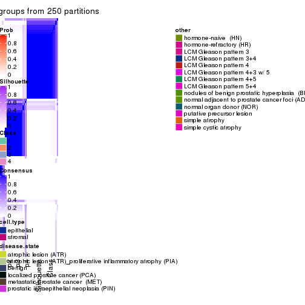
consensus_heatmap(res, k = 5)
consensus_heatmap(res, k = 6)
Heatmaps for the membership of samples in all partitions to see how consistent they are:
membership_heatmap(res, k = 2)
membership_heatmap(res, k = 3)

membership_heatmap(res, k = 4)
membership_heatmap(res, k = 5)
membership_heatmap(res, k = 6)
As soon as we have had the classes for columns, we can look for signatures which are significantly different between classes which can be candidate marks for certain classes. Following are the heatmaps for signatures.
Signature heatmaps where rows are scaled:
get_signatures(res, k = 2)
get_signatures(res, k = 3)
get_signatures(res, k = 4)
get_signatures(res, k = 5)
get_signatures(res, k = 6)
#> Error: The width or height of the raster image is zero, maybe you forget to turn off the
#> previous graphic device or it was corrupted. Run `dev.off()` to close it.

Signature heatmaps where rows are not scaled:
get_signatures(res, k = 2, scale_rows = FALSE)
get_signatures(res, k = 3, scale_rows = FALSE)
get_signatures(res, k = 4, scale_rows = FALSE)
get_signatures(res, k = 5, scale_rows = FALSE)
get_signatures(res, k = 6, scale_rows = FALSE)
#> Error: The width or height of the raster image is zero, maybe you forget to turn off the
#> previous graphic device or it was corrupted. Run `dev.off()` to close it.

Compare the overlap of signatures from different k:
compare_signatures(res)
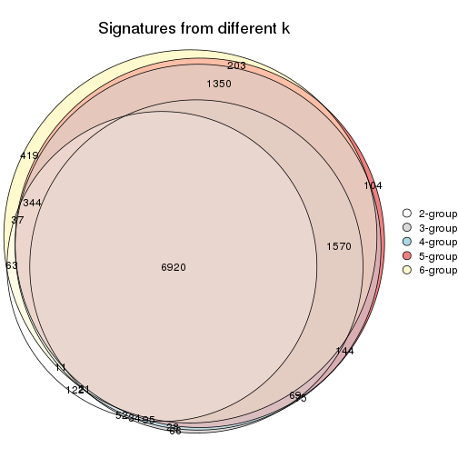
get_signature() returns a data frame invisibly. TO get the list of signatures, the function
call should be assigned to a variable explicitly. In following code, if plot argument is set
to FALSE, no heatmap is plotted while only the differential analysis is performed.
# code only for demonstration
tb = get_signature(res, k = ..., plot = FALSE)
An example of the output of tb is:
#> which_row fdr mean_1 mean_2 scaled_mean_1 scaled_mean_2 km
#> 1 38 0.042760348 8.373488 9.131774 -0.5533452 0.5164555 1
#> 2 40 0.018707592 7.106213 8.469186 -0.6173731 0.5762149 1
#> 3 55 0.019134737 10.221463 11.207825 -0.6159697 0.5749050 1
#> 4 59 0.006059896 5.921854 7.869574 -0.6899429 0.6439467 1
#> 5 60 0.018055526 8.928898 10.211722 -0.6204761 0.5791110 1
#> 6 98 0.009384629 15.714769 14.887706 0.6635654 -0.6193277 2
...
The columns in tb are:
which_row: row indices corresponding to the input matrix.fdr: FDR for the differential test. mean_x: The mean value in group x.scaled_mean_x: The mean value in group x after rows are scaled.km: Row groups if k-means clustering is applied to rows.UMAP plot which shows how samples are separated.
dimension_reduction(res, k = 2, method = "UMAP")
dimension_reduction(res, k = 3, method = "UMAP")
dimension_reduction(res, k = 4, method = "UMAP")
dimension_reduction(res, k = 5, method = "UMAP")
dimension_reduction(res, k = 6, method = "UMAP")
Following heatmap shows how subgroups are split when increasing k:
collect_classes(res)
Test correlation between subgroups and known annotations. If the known annotation is numeric, one-way ANOVA test is applied, and if the known annotation is discrete, chi-squared contingency table test is applied.
test_to_known_factors(res)
#> n cell.type(p) disease.state(p) other(p) k
#> MAD:skmeans 101 4.76e-04 4.36e-08 6.52e-05 2
#> MAD:skmeans 90 1.88e-05 1.72e-10 8.43e-08 3
#> MAD:skmeans 98 4.65e-14 4.77e-13 8.97e-10 4
#> MAD:skmeans 87 2.46e-13 5.87e-15 3.59e-11 5
#> MAD:skmeans 98 9.86e-14 2.45e-17 2.02e-13 6
If matrix rows can be associated to genes, consider to use functional_enrichment(res,
...) to perform function enrichment for the signature genes. See this vignette for more detailed explanations.
The object with results only for a single top-value method and a single partition method can be extracted as:
res = res_list["MAD", "pam"]
# you can also extract it by
# res = res_list["MAD:pam"]
A summary of res and all the functions that can be applied to it:
res
#> A 'ConsensusPartition' object with k = 2, 3, 4, 5, 6.
#> On a matrix with 13604 rows and 104 columns.
#> Top rows (1000, 2000, 3000, 4000, 5000) are extracted by 'MAD' method.
#> Subgroups are detected by 'pam' method.
#> Performed in total 1250 partitions by row resampling.
#> Best k for subgroups seems to be 3.
#>
#> Following methods can be applied to this 'ConsensusPartition' object:
#> [1] "cola_report" "collect_classes" "collect_plots"
#> [4] "collect_stats" "colnames" "compare_signatures"
#> [7] "consensus_heatmap" "dimension_reduction" "functional_enrichment"
#> [10] "get_anno_col" "get_anno" "get_classes"
#> [13] "get_consensus" "get_matrix" "get_membership"
#> [16] "get_param" "get_signatures" "get_stats"
#> [19] "is_best_k" "is_stable_k" "membership_heatmap"
#> [22] "ncol" "nrow" "plot_ecdf"
#> [25] "rownames" "select_partition_number" "show"
#> [28] "suggest_best_k" "test_to_known_factors"
collect_plots() function collects all the plots made from res for all k (number of partitions)
into one single page to provide an easy and fast comparison between different k.
collect_plots(res)
The plots are:
k and the heatmap of
predicted classes for each k.k.k.k.All the plots in panels can be made by individual functions and they are plotted later in this section.
select_partition_number() produces several plots showing different
statistics for choosing “optimized” k. There are following statistics:
k;k, the area increased is defined as \(A_k - A_{k-1}\).The detailed explanations of these statistics can be found in the cola vignette.
Generally speaking, lower PAC score, higher mean silhouette score or higher
concordance corresponds to better partition. Rand index and Jaccard index
measure how similar the current partition is compared to partition with k-1.
If they are too similar, we won't accept k is better than k-1.
select_partition_number(res)

The numeric values for all these statistics can be obtained by get_stats().
get_stats(res)
#> k 1-PAC mean_silhouette concordance area_increased Rand Jaccard
#> 2 2 0.329 0.642 0.798 0.4070 0.497 0.497
#> 3 3 0.715 0.757 0.906 0.5079 0.759 0.567
#> 4 4 0.673 0.739 0.844 0.1798 0.780 0.499
#> 5 5 0.714 0.688 0.846 0.0857 0.873 0.586
#> 6 6 0.721 0.644 0.819 0.0434 0.950 0.772
suggest_best_k() suggests the best \(k\) based on these statistics. The rules are as follows:
suggest_best_k(res)
#> [1] 3
Following shows the table of the partitions (You need to click the show/hide
code output link to see it). The membership matrix (columns with name p*)
is inferred by
clue::cl_consensus()
function with the SE method. Basically the value in the membership matrix
represents the probability to belong to a certain group. The finall class
label for an item is determined with the group with highest probability it
belongs to.
In get_classes() function, the entropy is calculated from the membership
matrix and the silhouette score is calculated from the consensus matrix.
cbind(get_classes(res, k = 2), get_membership(res, k = 2))
#> class entropy silhouette p1 p2
#> GSM141334 2 0.9833 0.6406 0.424 0.576
#> GSM141335 1 0.9491 0.0441 0.632 0.368
#> GSM141336 2 0.9754 0.6569 0.408 0.592
#> GSM141337 1 0.1414 0.8571 0.980 0.020
#> GSM141184 2 0.9996 0.5062 0.488 0.512
#> GSM141185 2 0.9754 0.6569 0.408 0.592
#> GSM141186 2 0.9710 0.6617 0.400 0.600
#> GSM141243 2 0.9686 0.6620 0.396 0.604
#> GSM141244 2 0.9970 0.5546 0.468 0.532
#> GSM141246 1 0.5629 0.7481 0.868 0.132
#> GSM141247 2 0.9754 0.6569 0.408 0.592
#> GSM141248 1 0.8713 0.3567 0.708 0.292
#> GSM141249 1 0.0376 0.8614 0.996 0.004
#> GSM141258 2 0.9754 0.6569 0.408 0.592
#> GSM141259 2 0.9209 0.6472 0.336 0.664
#> GSM141260 2 0.9963 0.5408 0.464 0.536
#> GSM141261 2 0.9686 0.6620 0.396 0.604
#> GSM141262 2 0.9686 0.6620 0.396 0.604
#> GSM141263 2 0.9460 0.6577 0.364 0.636
#> GSM141338 2 0.9754 0.6569 0.408 0.592
#> GSM141339 2 0.9850 0.6351 0.428 0.572
#> GSM141340 1 0.0672 0.8618 0.992 0.008
#> GSM141265 2 0.3431 0.5359 0.064 0.936
#> GSM141267 1 0.5842 0.7387 0.860 0.140
#> GSM141330 1 0.8386 0.5837 0.732 0.268
#> GSM141266 2 0.9686 0.6620 0.396 0.604
#> GSM141264 2 0.9358 0.1369 0.352 0.648
#> GSM141341 2 0.8327 0.5907 0.264 0.736
#> GSM141342 2 0.1184 0.5138 0.016 0.984
#> GSM141343 2 0.9754 0.6549 0.408 0.592
#> GSM141356 1 0.6247 0.7207 0.844 0.156
#> GSM141357 1 0.0938 0.8664 0.988 0.012
#> GSM141358 1 0.9686 -0.0603 0.604 0.396
#> GSM141359 2 0.9635 0.6627 0.388 0.612
#> GSM141360 1 0.0938 0.8664 0.988 0.012
#> GSM141361 1 0.5946 0.7372 0.856 0.144
#> GSM141362 2 0.9686 0.6620 0.396 0.604
#> GSM141363 2 0.9815 0.6391 0.420 0.580
#> GSM141364 1 0.6148 0.7319 0.848 0.152
#> GSM141365 2 0.9922 -0.0363 0.448 0.552
#> GSM141366 2 0.9710 0.6617 0.400 0.600
#> GSM141367 1 0.4431 0.8071 0.908 0.092
#> GSM141368 2 0.9323 0.6524 0.348 0.652
#> GSM141369 2 0.9710 0.6617 0.400 0.600
#> GSM141370 2 0.9710 0.6617 0.400 0.600
#> GSM141371 2 0.9710 0.6617 0.400 0.600
#> GSM141372 2 0.9710 0.6617 0.400 0.600
#> GSM141373 1 0.0376 0.8614 0.996 0.004
#> GSM141374 1 0.0376 0.8650 0.996 0.004
#> GSM141375 2 0.9754 0.6549 0.408 0.592
#> GSM141376 1 0.0938 0.8664 0.988 0.012
#> GSM141377 1 0.0938 0.8664 0.988 0.012
#> GSM141378 1 0.0000 0.8635 1.000 0.000
#> GSM141380 1 0.0938 0.8664 0.988 0.012
#> GSM141387 1 0.0938 0.8664 0.988 0.012
#> GSM141395 1 0.4562 0.7882 0.904 0.096
#> GSM141397 2 0.9710 0.6617 0.400 0.600
#> GSM141398 2 0.9795 0.6500 0.416 0.584
#> GSM141401 1 0.5946 0.7372 0.856 0.144
#> GSM141399 1 0.5946 0.7301 0.856 0.144
#> GSM141379 1 0.0000 0.8635 1.000 0.000
#> GSM141381 1 0.0938 0.8664 0.988 0.012
#> GSM141383 1 0.0938 0.8664 0.988 0.012
#> GSM141384 1 0.0938 0.8664 0.988 0.012
#> GSM141385 1 0.1184 0.8659 0.984 0.016
#> GSM141388 1 0.0938 0.8664 0.988 0.012
#> GSM141389 1 0.0938 0.8664 0.988 0.012
#> GSM141391 1 0.0000 0.8635 1.000 0.000
#> GSM141394 1 0.6438 0.7007 0.836 0.164
#> GSM141396 1 0.0000 0.8635 1.000 0.000
#> GSM141403 1 0.5946 0.7372 0.856 0.144
#> GSM141404 1 0.8763 0.3697 0.704 0.296
#> GSM141386 1 0.0672 0.8660 0.992 0.008
#> GSM141382 1 0.0938 0.8664 0.988 0.012
#> GSM141390 1 0.3274 0.8322 0.940 0.060
#> GSM141393 1 0.0938 0.8664 0.988 0.012
#> GSM141400 1 0.0938 0.8664 0.988 0.012
#> GSM141402 2 0.9710 0.6617 0.400 0.600
#> GSM141392 1 0.7674 0.5334 0.776 0.224
#> GSM141405 2 0.9815 0.6405 0.420 0.580
#> GSM141406 1 0.9209 0.2125 0.664 0.336
#> GSM141407 1 0.0000 0.8635 1.000 0.000
#> GSM141408 1 0.0672 0.8661 0.992 0.008
#> GSM141409 1 0.0672 0.8618 0.992 0.008
#> GSM141410 1 0.0938 0.8664 0.988 0.012
#> GSM141411 1 0.0376 0.8614 0.996 0.004
#> GSM141412 1 0.0000 0.8635 1.000 0.000
#> GSM141413 1 0.0672 0.8618 0.992 0.008
#> GSM141414 1 0.0938 0.8617 0.988 0.012
#> GSM141415 1 0.0938 0.8664 0.988 0.012
#> GSM141416 1 0.9993 -0.4693 0.516 0.484
#> GSM141417 1 0.0376 0.8614 0.996 0.004
#> GSM141420 2 0.0376 0.5134 0.004 0.996
#> GSM141421 2 0.9896 -0.0350 0.440 0.560
#> GSM141422 2 0.0376 0.5134 0.004 0.996
#> GSM141423 2 0.9775 0.0209 0.412 0.588
#> GSM141424 2 0.0376 0.5134 0.004 0.996
#> GSM141427 2 0.9866 -0.0193 0.432 0.568
#> GSM141428 2 0.9795 0.0155 0.416 0.584
#> GSM141418 2 0.0376 0.5134 0.004 0.996
#> GSM141419 2 0.1843 0.5089 0.028 0.972
#> GSM141425 2 0.9909 -0.0414 0.444 0.556
#> GSM141426 2 0.1633 0.5075 0.024 0.976
#> GSM141429 2 0.0376 0.5134 0.004 0.996
cbind(get_classes(res, k = 3), get_membership(res, k = 3))
#> class entropy silhouette p1 p2 p3
#> GSM141334 2 0.0592 0.8668 0.012 0.988 0.000
#> GSM141335 2 0.3686 0.7786 0.140 0.860 0.000
#> GSM141336 2 0.0592 0.8668 0.012 0.988 0.000
#> GSM141337 1 0.2878 0.8027 0.904 0.096 0.000
#> GSM141184 2 0.3038 0.8104 0.104 0.896 0.000
#> GSM141185 2 0.0592 0.8668 0.012 0.988 0.000
#> GSM141186 2 0.0000 0.8714 0.000 1.000 0.000
#> GSM141243 2 0.0000 0.8714 0.000 1.000 0.000
#> GSM141244 2 0.2711 0.8226 0.088 0.912 0.000
#> GSM141246 1 0.5254 0.5954 0.736 0.264 0.000
#> GSM141247 2 0.0592 0.8668 0.012 0.988 0.000
#> GSM141248 2 0.6079 0.3774 0.388 0.612 0.000
#> GSM141249 1 0.0237 0.8871 0.996 0.004 0.000
#> GSM141258 2 0.0592 0.8668 0.012 0.988 0.000
#> GSM141259 2 0.0000 0.8714 0.000 1.000 0.000
#> GSM141260 2 0.2625 0.8187 0.084 0.916 0.000
#> GSM141261 2 0.0000 0.8714 0.000 1.000 0.000
#> GSM141262 2 0.0000 0.8714 0.000 1.000 0.000
#> GSM141263 2 0.0000 0.8714 0.000 1.000 0.000
#> GSM141338 2 0.0592 0.8668 0.012 0.988 0.000
#> GSM141339 2 0.1411 0.8561 0.036 0.964 0.000
#> GSM141340 1 0.1289 0.8676 0.968 0.032 0.000
#> GSM141265 2 0.3816 0.7494 0.000 0.852 0.148
#> GSM141267 1 0.5785 0.4764 0.668 0.332 0.000
#> GSM141330 1 0.9599 0.2760 0.472 0.292 0.236
#> GSM141266 2 0.0000 0.8714 0.000 1.000 0.000
#> GSM141264 3 0.0000 0.8995 0.000 0.000 1.000
#> GSM141341 2 0.7972 0.4509 0.116 0.644 0.240
#> GSM141342 3 0.6267 0.1655 0.000 0.452 0.548
#> GSM141343 2 0.0237 0.8702 0.004 0.996 0.000
#> GSM141356 2 0.6307 0.0311 0.488 0.512 0.000
#> GSM141357 1 0.0592 0.8909 0.988 0.012 0.000
#> GSM141358 2 0.5926 0.4149 0.356 0.644 0.000
#> GSM141359 2 0.0237 0.8702 0.004 0.996 0.000
#> GSM141360 1 0.0592 0.8909 0.988 0.012 0.000
#> GSM141361 1 0.6309 -0.0106 0.504 0.496 0.000
#> GSM141362 2 0.0000 0.8714 0.000 1.000 0.000
#> GSM141363 2 0.0424 0.8703 0.008 0.992 0.000
#> GSM141364 2 0.6307 0.0311 0.488 0.512 0.000
#> GSM141365 3 0.8628 0.2883 0.340 0.116 0.544
#> GSM141366 2 0.0000 0.8714 0.000 1.000 0.000
#> GSM141367 3 0.7074 -0.0620 0.480 0.020 0.500
#> GSM141368 2 0.0000 0.8714 0.000 1.000 0.000
#> GSM141369 2 0.0000 0.8714 0.000 1.000 0.000
#> GSM141370 2 0.0000 0.8714 0.000 1.000 0.000
#> GSM141371 2 0.0000 0.8714 0.000 1.000 0.000
#> GSM141372 2 0.0000 0.8714 0.000 1.000 0.000
#> GSM141373 1 0.0000 0.8887 1.000 0.000 0.000
#> GSM141374 1 0.0237 0.8898 0.996 0.004 0.000
#> GSM141375 2 0.0000 0.8714 0.000 1.000 0.000
#> GSM141376 1 0.0592 0.8909 0.988 0.012 0.000
#> GSM141377 1 0.0592 0.8909 0.988 0.012 0.000
#> GSM141378 1 0.0000 0.8887 1.000 0.000 0.000
#> GSM141380 1 0.0592 0.8909 0.988 0.012 0.000
#> GSM141387 1 0.0592 0.8909 0.988 0.012 0.000
#> GSM141395 1 0.3816 0.7650 0.852 0.148 0.000
#> GSM141397 2 0.0000 0.8714 0.000 1.000 0.000
#> GSM141398 2 0.0592 0.8668 0.012 0.988 0.000
#> GSM141401 2 0.6307 0.0311 0.488 0.512 0.000
#> GSM141399 1 0.6180 0.2429 0.584 0.416 0.000
#> GSM141379 1 0.0000 0.8887 1.000 0.000 0.000
#> GSM141381 1 0.0592 0.8909 0.988 0.012 0.000
#> GSM141383 1 0.0592 0.8909 0.988 0.012 0.000
#> GSM141384 1 0.0592 0.8909 0.988 0.012 0.000
#> GSM141385 1 0.0592 0.8909 0.988 0.012 0.000
#> GSM141388 1 0.0592 0.8909 0.988 0.012 0.000
#> GSM141389 1 0.0592 0.8909 0.988 0.012 0.000
#> GSM141391 1 0.0000 0.8887 1.000 0.000 0.000
#> GSM141394 1 0.6192 0.2337 0.580 0.420 0.000
#> GSM141396 1 0.0000 0.8887 1.000 0.000 0.000
#> GSM141403 1 0.6215 0.2365 0.572 0.428 0.000
#> GSM141404 2 0.5785 0.4816 0.332 0.668 0.000
#> GSM141386 1 0.0424 0.8905 0.992 0.008 0.000
#> GSM141382 1 0.0592 0.8909 0.988 0.012 0.000
#> GSM141390 1 0.2878 0.8259 0.904 0.096 0.000
#> GSM141393 1 0.0592 0.8909 0.988 0.012 0.000
#> GSM141400 1 0.0592 0.8909 0.988 0.012 0.000
#> GSM141402 2 0.0000 0.8714 0.000 1.000 0.000
#> GSM141392 1 0.6825 0.0248 0.496 0.012 0.492
#> GSM141405 2 0.0237 0.8702 0.004 0.996 0.000
#> GSM141406 2 0.6111 0.3300 0.396 0.604 0.000
#> GSM141407 1 0.0000 0.8887 1.000 0.000 0.000
#> GSM141408 1 0.0424 0.8905 0.992 0.008 0.000
#> GSM141409 1 0.0000 0.8887 1.000 0.000 0.000
#> GSM141410 1 0.0592 0.8909 0.988 0.012 0.000
#> GSM141411 1 0.0000 0.8887 1.000 0.000 0.000
#> GSM141412 1 0.0000 0.8887 1.000 0.000 0.000
#> GSM141413 1 0.0000 0.8887 1.000 0.000 0.000
#> GSM141414 1 0.0237 0.8883 0.996 0.004 0.000
#> GSM141415 1 0.0592 0.8909 0.988 0.012 0.000
#> GSM141416 2 0.5178 0.6396 0.256 0.744 0.000
#> GSM141417 1 0.0000 0.8887 1.000 0.000 0.000
#> GSM141420 3 0.0000 0.8995 0.000 0.000 1.000
#> GSM141421 3 0.0000 0.8995 0.000 0.000 1.000
#> GSM141422 3 0.0000 0.8995 0.000 0.000 1.000
#> GSM141423 3 0.0000 0.8995 0.000 0.000 1.000
#> GSM141424 3 0.0000 0.8995 0.000 0.000 1.000
#> GSM141427 3 0.0000 0.8995 0.000 0.000 1.000
#> GSM141428 3 0.0000 0.8995 0.000 0.000 1.000
#> GSM141418 3 0.0000 0.8995 0.000 0.000 1.000
#> GSM141419 3 0.0000 0.8995 0.000 0.000 1.000
#> GSM141425 3 0.0000 0.8995 0.000 0.000 1.000
#> GSM141426 3 0.0000 0.8995 0.000 0.000 1.000
#> GSM141429 3 0.0000 0.8995 0.000 0.000 1.000
cbind(get_classes(res, k = 4), get_membership(res, k = 4))
#> class entropy silhouette p1 p2 p3 p4
#> GSM141334 4 0.4713 0.6848 0.000 0.360 0.000 0.640
#> GSM141335 2 0.4790 -0.1147 0.000 0.620 0.000 0.380
#> GSM141336 4 0.4661 0.6954 0.000 0.348 0.000 0.652
#> GSM141337 2 0.5332 0.6197 0.124 0.748 0.000 0.128
#> GSM141184 4 0.4955 0.5641 0.000 0.444 0.000 0.556
#> GSM141185 4 0.2973 0.8230 0.000 0.144 0.000 0.856
#> GSM141186 4 0.0469 0.8353 0.000 0.012 0.000 0.988
#> GSM141243 4 0.2973 0.8230 0.000 0.144 0.000 0.856
#> GSM141244 4 0.4907 0.6052 0.000 0.420 0.000 0.580
#> GSM141246 2 0.1022 0.6567 0.000 0.968 0.000 0.032
#> GSM141247 4 0.2973 0.8230 0.000 0.144 0.000 0.856
#> GSM141248 2 0.4564 0.0806 0.000 0.672 0.000 0.328
#> GSM141249 1 0.1936 0.8822 0.940 0.028 0.000 0.032
#> GSM141258 4 0.4661 0.6954 0.000 0.348 0.000 0.652
#> GSM141259 4 0.0707 0.8352 0.000 0.020 0.000 0.980
#> GSM141260 4 0.4431 0.6505 0.000 0.304 0.000 0.696
#> GSM141261 4 0.0707 0.8352 0.000 0.020 0.000 0.980
#> GSM141262 4 0.2973 0.8230 0.000 0.144 0.000 0.856
#> GSM141263 4 0.0188 0.8347 0.000 0.004 0.000 0.996
#> GSM141338 4 0.2973 0.8230 0.000 0.144 0.000 0.856
#> GSM141339 4 0.4713 0.6848 0.000 0.360 0.000 0.640
#> GSM141340 1 0.1724 0.8906 0.948 0.020 0.000 0.032
#> GSM141265 4 0.3610 0.6877 0.000 0.000 0.200 0.800
#> GSM141267 2 0.2345 0.5917 0.000 0.900 0.000 0.100
#> GSM141330 2 0.3333 0.6540 0.000 0.872 0.088 0.040
#> GSM141266 4 0.3726 0.7397 0.000 0.212 0.000 0.788
#> GSM141264 3 0.0000 1.0000 0.000 0.000 1.000 0.000
#> GSM141341 4 0.3217 0.7291 0.012 0.128 0.000 0.860
#> GSM141342 4 0.5200 0.5183 0.028 0.004 0.264 0.704
#> GSM141343 4 0.1109 0.8286 0.028 0.004 0.000 0.968
#> GSM141356 2 0.4353 0.5728 0.012 0.756 0.000 0.232
#> GSM141357 2 0.5110 0.6039 0.352 0.636 0.000 0.012
#> GSM141358 2 0.5407 -0.0999 0.012 0.504 0.000 0.484
#> GSM141359 4 0.3598 0.8246 0.028 0.124 0.000 0.848
#> GSM141360 2 0.5110 0.6039 0.352 0.636 0.000 0.012
#> GSM141361 2 0.1284 0.6782 0.024 0.964 0.000 0.012
#> GSM141362 4 0.3598 0.8235 0.028 0.124 0.000 0.848
#> GSM141363 4 0.3529 0.8086 0.012 0.152 0.000 0.836
#> GSM141364 2 0.1151 0.6779 0.024 0.968 0.000 0.008
#> GSM141365 2 0.8203 0.3031 0.040 0.484 0.316 0.160
#> GSM141366 4 0.1109 0.8286 0.028 0.004 0.000 0.968
#> GSM141367 2 0.5082 0.6458 0.024 0.792 0.120 0.064
#> GSM141368 4 0.1109 0.8286 0.028 0.004 0.000 0.968
#> GSM141369 4 0.1109 0.8286 0.028 0.004 0.000 0.968
#> GSM141370 4 0.1109 0.8286 0.028 0.004 0.000 0.968
#> GSM141371 4 0.1109 0.8286 0.028 0.004 0.000 0.968
#> GSM141372 4 0.1109 0.8286 0.028 0.004 0.000 0.968
#> GSM141373 2 0.4624 0.6073 0.340 0.660 0.000 0.000
#> GSM141374 2 0.4730 0.5968 0.364 0.636 0.000 0.000
#> GSM141375 4 0.1610 0.8209 0.016 0.032 0.000 0.952
#> GSM141376 1 0.0921 0.9407 0.972 0.028 0.000 0.000
#> GSM141377 2 0.4730 0.5968 0.364 0.636 0.000 0.000
#> GSM141378 2 0.4679 0.5998 0.352 0.648 0.000 0.000
#> GSM141380 1 0.0921 0.9407 0.972 0.028 0.000 0.000
#> GSM141387 1 0.0921 0.9407 0.972 0.028 0.000 0.000
#> GSM141395 2 0.1284 0.6795 0.024 0.964 0.000 0.012
#> GSM141397 4 0.0817 0.8356 0.000 0.024 0.000 0.976
#> GSM141398 4 0.3123 0.8198 0.000 0.156 0.000 0.844
#> GSM141401 2 0.1022 0.6781 0.032 0.968 0.000 0.000
#> GSM141399 2 0.0469 0.6749 0.012 0.988 0.000 0.000
#> GSM141379 1 0.1211 0.9356 0.960 0.040 0.000 0.000
#> GSM141381 1 0.1716 0.9029 0.936 0.064 0.000 0.000
#> GSM141383 2 0.4730 0.5968 0.364 0.636 0.000 0.000
#> GSM141384 1 0.0921 0.9407 0.972 0.028 0.000 0.000
#> GSM141385 2 0.4713 0.6003 0.360 0.640 0.000 0.000
#> GSM141388 1 0.0921 0.9407 0.972 0.028 0.000 0.000
#> GSM141389 1 0.0921 0.9407 0.972 0.028 0.000 0.000
#> GSM141391 2 0.4730 0.5968 0.364 0.636 0.000 0.000
#> GSM141394 2 0.0927 0.6756 0.008 0.976 0.000 0.016
#> GSM141396 2 0.4679 0.5998 0.352 0.648 0.000 0.000
#> GSM141403 2 0.1284 0.6782 0.024 0.964 0.000 0.012
#> GSM141404 2 0.5805 0.2203 0.036 0.576 0.000 0.388
#> GSM141386 2 0.4677 0.6225 0.316 0.680 0.000 0.004
#> GSM141382 1 0.3569 0.6784 0.804 0.196 0.000 0.000
#> GSM141390 2 0.4382 0.6351 0.296 0.704 0.000 0.000
#> GSM141393 2 0.4730 0.5968 0.364 0.636 0.000 0.000
#> GSM141400 2 0.4730 0.5968 0.364 0.636 0.000 0.000
#> GSM141402 4 0.0469 0.8376 0.000 0.012 0.000 0.988
#> GSM141392 2 0.5110 0.4688 0.012 0.636 0.352 0.000
#> GSM141405 1 0.7121 0.3976 0.564 0.216 0.000 0.220
#> GSM141406 2 0.4576 0.4072 0.020 0.748 0.000 0.232
#> GSM141407 1 0.1211 0.9356 0.960 0.040 0.000 0.000
#> GSM141408 1 0.0921 0.9407 0.972 0.028 0.000 0.000
#> GSM141409 2 0.4134 0.6474 0.260 0.740 0.000 0.000
#> GSM141410 1 0.0921 0.9407 0.972 0.028 0.000 0.000
#> GSM141411 1 0.1211 0.9356 0.960 0.040 0.000 0.000
#> GSM141412 1 0.0921 0.9407 0.972 0.028 0.000 0.000
#> GSM141413 2 0.4661 0.6030 0.348 0.652 0.000 0.000
#> GSM141414 2 0.2921 0.6677 0.140 0.860 0.000 0.000
#> GSM141415 1 0.0921 0.9407 0.972 0.028 0.000 0.000
#> GSM141416 4 0.4941 0.5787 0.000 0.436 0.000 0.564
#> GSM141417 1 0.1211 0.9356 0.960 0.040 0.000 0.000
#> GSM141420 3 0.0000 1.0000 0.000 0.000 1.000 0.000
#> GSM141421 3 0.0000 1.0000 0.000 0.000 1.000 0.000
#> GSM141422 3 0.0000 1.0000 0.000 0.000 1.000 0.000
#> GSM141423 3 0.0000 1.0000 0.000 0.000 1.000 0.000
#> GSM141424 3 0.0000 1.0000 0.000 0.000 1.000 0.000
#> GSM141427 3 0.0000 1.0000 0.000 0.000 1.000 0.000
#> GSM141428 3 0.0000 1.0000 0.000 0.000 1.000 0.000
#> GSM141418 3 0.0000 1.0000 0.000 0.000 1.000 0.000
#> GSM141419 3 0.0000 1.0000 0.000 0.000 1.000 0.000
#> GSM141425 3 0.0000 1.0000 0.000 0.000 1.000 0.000
#> GSM141426 3 0.0000 1.0000 0.000 0.000 1.000 0.000
#> GSM141429 3 0.0000 1.0000 0.000 0.000 1.000 0.000
cbind(get_classes(res, k = 5), get_membership(res, k = 5))
#> class entropy silhouette p1 p2 p3 p4 p5
#> GSM141334 2 0.0000 0.7255 0.000 1.000 0.000 0.000 0.000
#> GSM141335 2 0.0000 0.7255 0.000 1.000 0.000 0.000 0.000
#> GSM141336 2 0.0510 0.7215 0.000 0.984 0.000 0.016 0.000
#> GSM141337 2 0.1992 0.6718 0.032 0.924 0.000 0.000 0.044
#> GSM141184 2 0.0000 0.7255 0.000 1.000 0.000 0.000 0.000
#> GSM141185 2 0.3837 0.4994 0.000 0.692 0.000 0.308 0.000
#> GSM141186 4 0.4238 0.4034 0.000 0.368 0.000 0.628 0.004
#> GSM141243 2 0.3837 0.4994 0.000 0.692 0.000 0.308 0.000
#> GSM141244 2 0.0000 0.7255 0.000 1.000 0.000 0.000 0.000
#> GSM141246 2 0.0000 0.7255 0.000 1.000 0.000 0.000 0.000
#> GSM141247 2 0.3837 0.4994 0.000 0.692 0.000 0.308 0.000
#> GSM141248 2 0.0000 0.7255 0.000 1.000 0.000 0.000 0.000
#> GSM141249 1 0.2179 0.7931 0.888 0.112 0.000 0.000 0.000
#> GSM141258 2 0.0510 0.7215 0.000 0.984 0.000 0.016 0.000
#> GSM141259 4 0.4276 0.3810 0.000 0.380 0.000 0.616 0.004
#> GSM141260 2 0.3969 0.3030 0.000 0.692 0.000 0.304 0.004
#> GSM141261 4 0.4182 0.3402 0.000 0.400 0.000 0.600 0.000
#> GSM141262 2 0.3837 0.4994 0.000 0.692 0.000 0.308 0.000
#> GSM141263 4 0.4101 0.4582 0.000 0.332 0.000 0.664 0.004
#> GSM141338 2 0.3837 0.4994 0.000 0.692 0.000 0.308 0.000
#> GSM141339 2 0.0000 0.7255 0.000 1.000 0.000 0.000 0.000
#> GSM141340 1 0.0794 0.8473 0.972 0.028 0.000 0.000 0.000
#> GSM141265 4 0.6209 0.4480 0.000 0.216 0.208 0.572 0.004
#> GSM141267 2 0.0000 0.7255 0.000 1.000 0.000 0.000 0.000
#> GSM141330 2 0.4939 0.5627 0.000 0.740 0.092 0.016 0.152
#> GSM141266 2 0.4161 0.1459 0.000 0.608 0.000 0.392 0.000
#> GSM141264 3 0.0510 0.9808 0.000 0.000 0.984 0.016 0.000
#> GSM141341 4 0.4150 0.3071 0.000 0.000 0.000 0.612 0.388
#> GSM141342 4 0.0162 0.6806 0.000 0.000 0.000 0.996 0.004
#> GSM141343 4 0.0000 0.6798 0.000 0.000 0.000 1.000 0.000
#> GSM141356 5 0.4224 0.6400 0.000 0.040 0.000 0.216 0.744
#> GSM141357 5 0.0162 0.8028 0.004 0.000 0.000 0.000 0.996
#> GSM141358 2 0.6819 0.0330 0.000 0.356 0.000 0.324 0.320
#> GSM141359 4 0.3612 0.3359 0.000 0.268 0.000 0.732 0.000
#> GSM141360 5 0.2179 0.8012 0.112 0.000 0.000 0.000 0.888
#> GSM141361 5 0.0865 0.8010 0.000 0.004 0.000 0.024 0.972
#> GSM141362 2 0.4978 0.1374 0.000 0.496 0.000 0.476 0.028
#> GSM141363 2 0.6386 0.2379 0.000 0.492 0.000 0.320 0.188
#> GSM141364 5 0.2929 0.6953 0.000 0.180 0.000 0.000 0.820
#> GSM141365 4 0.4976 0.0429 0.000 0.000 0.028 0.504 0.468
#> GSM141366 4 0.0162 0.6806 0.000 0.000 0.000 0.996 0.004
#> GSM141367 5 0.2238 0.7643 0.000 0.004 0.020 0.064 0.912
#> GSM141368 4 0.0162 0.6806 0.000 0.000 0.000 0.996 0.004
#> GSM141369 4 0.0162 0.6806 0.000 0.000 0.000 0.996 0.004
#> GSM141370 4 0.0162 0.6806 0.000 0.000 0.000 0.996 0.004
#> GSM141371 4 0.0162 0.6806 0.000 0.000 0.000 0.996 0.004
#> GSM141372 4 0.0162 0.6806 0.000 0.000 0.000 0.996 0.004
#> GSM141373 5 0.3849 0.7551 0.232 0.016 0.000 0.000 0.752
#> GSM141374 5 0.0566 0.8041 0.012 0.004 0.000 0.000 0.984
#> GSM141375 4 0.5876 0.4474 0.000 0.204 0.000 0.604 0.192
#> GSM141376 1 0.3305 0.7926 0.776 0.000 0.000 0.000 0.224
#> GSM141377 5 0.0162 0.8028 0.004 0.000 0.000 0.000 0.996
#> GSM141378 5 0.3849 0.7551 0.232 0.016 0.000 0.000 0.752
#> GSM141380 1 0.0000 0.8561 1.000 0.000 0.000 0.000 0.000
#> GSM141387 1 0.3336 0.7909 0.772 0.000 0.000 0.000 0.228
#> GSM141395 5 0.3750 0.7444 0.000 0.232 0.000 0.012 0.756
#> GSM141397 4 0.5172 0.4317 0.000 0.324 0.000 0.616 0.060
#> GSM141398 2 0.3752 0.5188 0.000 0.708 0.000 0.292 0.000
#> GSM141401 5 0.2891 0.7819 0.000 0.176 0.000 0.000 0.824
#> GSM141399 5 0.3366 0.7481 0.000 0.232 0.000 0.000 0.768
#> GSM141379 1 0.0000 0.8561 1.000 0.000 0.000 0.000 0.000
#> GSM141381 1 0.2074 0.8193 0.896 0.000 0.000 0.000 0.104
#> GSM141383 5 0.0162 0.8028 0.004 0.000 0.000 0.000 0.996
#> GSM141384 1 0.3336 0.7909 0.772 0.000 0.000 0.000 0.228
#> GSM141385 5 0.3366 0.7606 0.232 0.000 0.000 0.000 0.768
#> GSM141388 1 0.3336 0.7909 0.772 0.000 0.000 0.000 0.228
#> GSM141389 1 0.3336 0.7909 0.772 0.000 0.000 0.000 0.228
#> GSM141391 5 0.3366 0.7606 0.232 0.000 0.000 0.000 0.768
#> GSM141394 5 0.4671 0.6221 0.000 0.332 0.000 0.028 0.640
#> GSM141396 5 0.3849 0.7551 0.232 0.016 0.000 0.000 0.752
#> GSM141403 5 0.0162 0.8028 0.000 0.004 0.000 0.000 0.996
#> GSM141404 5 0.5599 -0.2024 0.000 0.444 0.000 0.072 0.484
#> GSM141386 5 0.3236 0.7941 0.152 0.020 0.000 0.000 0.828
#> GSM141382 1 0.3274 0.5865 0.780 0.000 0.000 0.000 0.220
#> GSM141390 5 0.0162 0.8028 0.004 0.000 0.000 0.000 0.996
#> GSM141393 5 0.3366 0.7606 0.232 0.000 0.000 0.000 0.768
#> GSM141400 5 0.0162 0.8028 0.004 0.000 0.000 0.000 0.996
#> GSM141402 4 0.4211 0.4156 0.000 0.360 0.000 0.636 0.004
#> GSM141392 5 0.3336 0.7121 0.000 0.000 0.228 0.000 0.772
#> GSM141405 1 0.6561 0.4019 0.496 0.004 0.000 0.292 0.208
#> GSM141406 5 0.4457 0.6484 0.004 0.328 0.000 0.012 0.656
#> GSM141407 1 0.0000 0.8561 1.000 0.000 0.000 0.000 0.000
#> GSM141408 1 0.3305 0.7926 0.776 0.000 0.000 0.000 0.224
#> GSM141409 5 0.0324 0.8037 0.004 0.004 0.000 0.000 0.992
#> GSM141410 1 0.0000 0.8561 1.000 0.000 0.000 0.000 0.000
#> GSM141411 1 0.0451 0.8539 0.988 0.004 0.000 0.000 0.008
#> GSM141412 1 0.0000 0.8561 1.000 0.000 0.000 0.000 0.000
#> GSM141413 5 0.3366 0.7606 0.232 0.000 0.000 0.000 0.768
#> GSM141414 5 0.3462 0.7704 0.012 0.196 0.000 0.000 0.792
#> GSM141415 1 0.0000 0.8561 1.000 0.000 0.000 0.000 0.000
#> GSM141416 2 0.0000 0.7255 0.000 1.000 0.000 0.000 0.000
#> GSM141417 1 0.0510 0.8517 0.984 0.016 0.000 0.000 0.000
#> GSM141420 3 0.0000 0.9984 0.000 0.000 1.000 0.000 0.000
#> GSM141421 3 0.0000 0.9984 0.000 0.000 1.000 0.000 0.000
#> GSM141422 3 0.0000 0.9984 0.000 0.000 1.000 0.000 0.000
#> GSM141423 3 0.0000 0.9984 0.000 0.000 1.000 0.000 0.000
#> GSM141424 3 0.0000 0.9984 0.000 0.000 1.000 0.000 0.000
#> GSM141427 3 0.0000 0.9984 0.000 0.000 1.000 0.000 0.000
#> GSM141428 3 0.0000 0.9984 0.000 0.000 1.000 0.000 0.000
#> GSM141418 3 0.0000 0.9984 0.000 0.000 1.000 0.000 0.000
#> GSM141419 3 0.0000 0.9984 0.000 0.000 1.000 0.000 0.000
#> GSM141425 3 0.0000 0.9984 0.000 0.000 1.000 0.000 0.000
#> GSM141426 3 0.0000 0.9984 0.000 0.000 1.000 0.000 0.000
#> GSM141429 3 0.0000 0.9984 0.000 0.000 1.000 0.000 0.000
cbind(get_classes(res, k = 6), get_membership(res, k = 6))
#> class entropy silhouette p1 p2 p3 p4 p5 p6
#> GSM141334 5 0.0000 0.72692 0.000 0.000 0.000 0.000 1.000 0.000
#> GSM141335 5 0.0000 0.72692 0.000 0.000 0.000 0.000 1.000 0.000
#> GSM141336 5 0.0458 0.72179 0.000 0.016 0.000 0.000 0.984 0.000
#> GSM141337 5 0.1649 0.67375 0.036 0.000 0.000 0.000 0.932 0.032
#> GSM141184 5 0.0000 0.72692 0.000 0.000 0.000 0.000 1.000 0.000
#> GSM141185 5 0.3717 0.38919 0.000 0.384 0.000 0.000 0.616 0.000
#> GSM141186 2 0.5411 0.36071 0.000 0.560 0.000 0.152 0.288 0.000
#> GSM141243 5 0.3717 0.38919 0.000 0.384 0.000 0.000 0.616 0.000
#> GSM141244 5 0.0000 0.72692 0.000 0.000 0.000 0.000 1.000 0.000
#> GSM141246 5 0.0000 0.72692 0.000 0.000 0.000 0.000 1.000 0.000
#> GSM141247 5 0.3717 0.38919 0.000 0.384 0.000 0.000 0.616 0.000
#> GSM141248 5 0.0000 0.72692 0.000 0.000 0.000 0.000 1.000 0.000
#> GSM141249 1 0.2527 0.69722 0.832 0.000 0.000 0.000 0.168 0.000
#> GSM141258 5 0.0547 0.72056 0.000 0.020 0.000 0.000 0.980 0.000
#> GSM141259 2 0.5411 0.36071 0.000 0.560 0.000 0.152 0.288 0.000
#> GSM141260 5 0.4279 0.44694 0.000 0.104 0.000 0.152 0.740 0.004
#> GSM141261 2 0.5556 0.26859 0.000 0.512 0.000 0.152 0.336 0.000
#> GSM141262 5 0.3717 0.38919 0.000 0.384 0.000 0.000 0.616 0.000
#> GSM141263 2 0.2730 0.52662 0.000 0.836 0.000 0.152 0.012 0.000
#> GSM141338 5 0.3647 0.42216 0.000 0.360 0.000 0.000 0.640 0.000
#> GSM141339 5 0.0000 0.72692 0.000 0.000 0.000 0.000 1.000 0.000
#> GSM141340 1 0.0790 0.81390 0.968 0.000 0.000 0.000 0.032 0.000
#> GSM141265 2 0.6715 0.42725 0.000 0.508 0.240 0.152 0.100 0.000
#> GSM141267 5 0.0000 0.72692 0.000 0.000 0.000 0.000 1.000 0.000
#> GSM141330 5 0.6381 0.27792 0.000 0.108 0.112 0.000 0.560 0.220
#> GSM141266 5 0.5480 0.12017 0.000 0.308 0.000 0.152 0.540 0.000
#> GSM141264 3 0.1910 0.86316 0.000 0.108 0.892 0.000 0.000 0.000
#> GSM141341 2 0.5649 0.24870 0.000 0.452 0.000 0.152 0.000 0.396
#> GSM141342 4 0.1387 0.92255 0.000 0.068 0.000 0.932 0.000 0.000
#> GSM141343 2 0.3833 0.23121 0.000 0.556 0.000 0.444 0.000 0.000
#> GSM141356 2 0.3714 0.00978 0.000 0.656 0.000 0.000 0.004 0.340
#> GSM141357 6 0.3823 0.33011 0.000 0.436 0.000 0.000 0.000 0.564
#> GSM141358 2 0.1644 0.52789 0.000 0.920 0.000 0.000 0.076 0.004
#> GSM141359 2 0.1387 0.53230 0.000 0.932 0.000 0.000 0.068 0.000
#> GSM141360 6 0.5360 0.32631 0.108 0.436 0.000 0.000 0.000 0.456
#> GSM141361 6 0.3828 0.32658 0.000 0.440 0.000 0.000 0.000 0.560
#> GSM141362 2 0.1387 0.53230 0.000 0.932 0.000 0.000 0.068 0.000
#> GSM141363 5 0.5901 0.00843 0.000 0.388 0.000 0.000 0.408 0.204
#> GSM141364 6 0.5352 0.34364 0.000 0.204 0.000 0.000 0.204 0.592
#> GSM141365 6 0.6577 -0.14449 0.000 0.344 0.024 0.272 0.000 0.360
#> GSM141366 4 0.1387 0.92255 0.000 0.068 0.000 0.932 0.000 0.000
#> GSM141367 6 0.4372 0.46497 0.000 0.280 0.012 0.024 0.004 0.680
#> GSM141368 4 0.0000 0.96752 0.000 0.000 0.000 1.000 0.000 0.000
#> GSM141369 4 0.0146 0.96900 0.000 0.004 0.000 0.996 0.000 0.000
#> GSM141370 4 0.0146 0.96900 0.000 0.004 0.000 0.996 0.000 0.000
#> GSM141371 4 0.0146 0.96900 0.000 0.004 0.000 0.996 0.000 0.000
#> GSM141372 4 0.0146 0.96900 0.000 0.004 0.000 0.996 0.000 0.000
#> GSM141373 6 0.3606 0.65570 0.256 0.000 0.000 0.000 0.016 0.728
#> GSM141374 6 0.0405 0.69769 0.008 0.000 0.000 0.000 0.004 0.988
#> GSM141375 2 0.6418 0.47096 0.000 0.560 0.000 0.152 0.092 0.196
#> GSM141376 1 0.3175 0.74836 0.744 0.000 0.000 0.000 0.000 0.256
#> GSM141377 6 0.0000 0.69599 0.000 0.000 0.000 0.000 0.000 1.000
#> GSM141378 6 0.3606 0.65570 0.256 0.000 0.000 0.000 0.016 0.728
#> GSM141380 1 0.0000 0.82644 1.000 0.000 0.000 0.000 0.000 0.000
#> GSM141387 1 0.3175 0.74836 0.744 0.000 0.000 0.000 0.000 0.256
#> GSM141395 6 0.3483 0.63080 0.000 0.016 0.000 0.000 0.236 0.748
#> GSM141397 2 0.6234 0.42359 0.000 0.560 0.000 0.152 0.228 0.060
#> GSM141398 5 0.3659 0.41890 0.000 0.364 0.000 0.000 0.636 0.000
#> GSM141401 6 0.2597 0.66417 0.000 0.000 0.000 0.000 0.176 0.824
#> GSM141399 6 0.3175 0.61794 0.000 0.000 0.000 0.000 0.256 0.744
#> GSM141379 1 0.0000 0.82644 1.000 0.000 0.000 0.000 0.000 0.000
#> GSM141381 1 0.1957 0.79407 0.888 0.000 0.000 0.000 0.000 0.112
#> GSM141383 6 0.0000 0.69599 0.000 0.000 0.000 0.000 0.000 1.000
#> GSM141384 1 0.3175 0.74836 0.744 0.000 0.000 0.000 0.000 0.256
#> GSM141385 6 0.3175 0.66171 0.256 0.000 0.000 0.000 0.000 0.744
#> GSM141388 1 0.3175 0.74836 0.744 0.000 0.000 0.000 0.000 0.256
#> GSM141389 1 0.3175 0.74836 0.744 0.000 0.000 0.000 0.000 0.256
#> GSM141391 6 0.3175 0.66171 0.256 0.000 0.000 0.000 0.000 0.744
#> GSM141394 2 0.5117 0.11437 0.000 0.548 0.000 0.000 0.360 0.092
#> GSM141396 6 0.3606 0.65570 0.256 0.000 0.000 0.000 0.016 0.728
#> GSM141403 6 0.0000 0.69599 0.000 0.000 0.000 0.000 0.000 1.000
#> GSM141404 6 0.4783 0.23431 0.000 0.076 0.000 0.000 0.308 0.616
#> GSM141386 6 0.2907 0.69679 0.152 0.000 0.000 0.000 0.020 0.828
#> GSM141382 1 0.2912 0.56590 0.784 0.000 0.000 0.000 0.000 0.216
#> GSM141390 6 0.0000 0.69599 0.000 0.000 0.000 0.000 0.000 1.000
#> GSM141393 6 0.3175 0.66171 0.256 0.000 0.000 0.000 0.000 0.744
#> GSM141400 6 0.0000 0.69599 0.000 0.000 0.000 0.000 0.000 1.000
#> GSM141402 2 0.0260 0.54340 0.000 0.992 0.000 0.000 0.008 0.000
#> GSM141392 6 0.3175 0.59272 0.000 0.000 0.256 0.000 0.000 0.744
#> GSM141405 1 0.6439 0.49717 0.556 0.072 0.000 0.148 0.004 0.220
#> GSM141406 6 0.4460 0.42384 0.004 0.024 0.000 0.000 0.404 0.568
#> GSM141407 1 0.0000 0.82644 1.000 0.000 0.000 0.000 0.000 0.000
#> GSM141408 1 0.3175 0.74836 0.744 0.000 0.000 0.000 0.000 0.256
#> GSM141409 6 0.0000 0.69599 0.000 0.000 0.000 0.000 0.000 1.000
#> GSM141410 1 0.0000 0.82644 1.000 0.000 0.000 0.000 0.000 0.000
#> GSM141411 1 0.0405 0.82393 0.988 0.000 0.000 0.000 0.004 0.008
#> GSM141412 1 0.0000 0.82644 1.000 0.000 0.000 0.000 0.000 0.000
#> GSM141413 6 0.3175 0.66171 0.256 0.000 0.000 0.000 0.000 0.744
#> GSM141414 6 0.3052 0.64267 0.004 0.000 0.000 0.000 0.216 0.780
#> GSM141415 1 0.0000 0.82644 1.000 0.000 0.000 0.000 0.000 0.000
#> GSM141416 5 0.0000 0.72692 0.000 0.000 0.000 0.000 1.000 0.000
#> GSM141417 1 0.0458 0.82115 0.984 0.000 0.000 0.000 0.016 0.000
#> GSM141420 3 0.0000 0.98931 0.000 0.000 1.000 0.000 0.000 0.000
#> GSM141421 3 0.0000 0.98931 0.000 0.000 1.000 0.000 0.000 0.000
#> GSM141422 3 0.0000 0.98931 0.000 0.000 1.000 0.000 0.000 0.000
#> GSM141423 3 0.0000 0.98931 0.000 0.000 1.000 0.000 0.000 0.000
#> GSM141424 3 0.0000 0.98931 0.000 0.000 1.000 0.000 0.000 0.000
#> GSM141427 3 0.0000 0.98931 0.000 0.000 1.000 0.000 0.000 0.000
#> GSM141428 3 0.0000 0.98931 0.000 0.000 1.000 0.000 0.000 0.000
#> GSM141418 3 0.0000 0.98931 0.000 0.000 1.000 0.000 0.000 0.000
#> GSM141419 3 0.0000 0.98931 0.000 0.000 1.000 0.000 0.000 0.000
#> GSM141425 3 0.0000 0.98931 0.000 0.000 1.000 0.000 0.000 0.000
#> GSM141426 3 0.0000 0.98931 0.000 0.000 1.000 0.000 0.000 0.000
#> GSM141429 3 0.0000 0.98931 0.000 0.000 1.000 0.000 0.000 0.000
Heatmaps for the consensus matrix. It visualizes the probability of two samples to be in a same group.
consensus_heatmap(res, k = 2)
consensus_heatmap(res, k = 3)
consensus_heatmap(res, k = 4)
consensus_heatmap(res, k = 5)
consensus_heatmap(res, k = 6)
Heatmaps for the membership of samples in all partitions to see how consistent they are:
membership_heatmap(res, k = 2)
membership_heatmap(res, k = 3)
membership_heatmap(res, k = 4)
membership_heatmap(res, k = 5)
membership_heatmap(res, k = 6)
As soon as we have had the classes for columns, we can look for signatures which are significantly different between classes which can be candidate marks for certain classes. Following are the heatmaps for signatures.
Signature heatmaps where rows are scaled:
get_signatures(res, k = 2)
get_signatures(res, k = 3)
get_signatures(res, k = 4)
get_signatures(res, k = 5)

get_signatures(res, k = 6)
#> Error: The width or height of the raster image is zero, maybe you forget to turn off the
#> previous graphic device or it was corrupted. Run `dev.off()` to close it.

Signature heatmaps where rows are not scaled:
get_signatures(res, k = 2, scale_rows = FALSE)
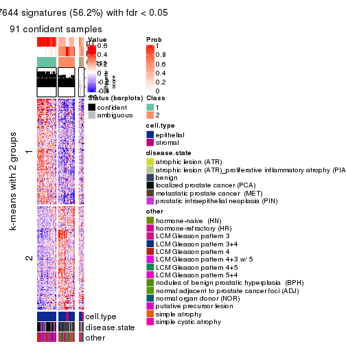
get_signatures(res, k = 3, scale_rows = FALSE)
get_signatures(res, k = 4, scale_rows = FALSE)
get_signatures(res, k = 5, scale_rows = FALSE)
get_signatures(res, k = 6, scale_rows = FALSE)
#> Error: The width or height of the raster image is zero, maybe you forget to turn off the
#> previous graphic device or it was corrupted. Run `dev.off()` to close it.

Compare the overlap of signatures from different k:
compare_signatures(res)
get_signature() returns a data frame invisibly. TO get the list of signatures, the function
call should be assigned to a variable explicitly. In following code, if plot argument is set
to FALSE, no heatmap is plotted while only the differential analysis is performed.
# code only for demonstration
tb = get_signature(res, k = ..., plot = FALSE)
An example of the output of tb is:
#> which_row fdr mean_1 mean_2 scaled_mean_1 scaled_mean_2 km
#> 1 38 0.042760348 8.373488 9.131774 -0.5533452 0.5164555 1
#> 2 40 0.018707592 7.106213 8.469186 -0.6173731 0.5762149 1
#> 3 55 0.019134737 10.221463 11.207825 -0.6159697 0.5749050 1
#> 4 59 0.006059896 5.921854 7.869574 -0.6899429 0.6439467 1
#> 5 60 0.018055526 8.928898 10.211722 -0.6204761 0.5791110 1
#> 6 98 0.009384629 15.714769 14.887706 0.6635654 -0.6193277 2
...
The columns in tb are:
which_row: row indices corresponding to the input matrix.fdr: FDR for the differential test. mean_x: The mean value in group x.scaled_mean_x: The mean value in group x after rows are scaled.km: Row groups if k-means clustering is applied to rows.UMAP plot which shows how samples are separated.
dimension_reduction(res, k = 2, method = "UMAP")
dimension_reduction(res, k = 3, method = "UMAP")
dimension_reduction(res, k = 4, method = "UMAP")
dimension_reduction(res, k = 5, method = "UMAP")
dimension_reduction(res, k = 6, method = "UMAP")
Following heatmap shows how subgroups are split when increasing k:
collect_classes(res)
Test correlation between subgroups and known annotations. If the known annotation is numeric, one-way ANOVA test is applied, and if the known annotation is discrete, chi-squared contingency table test is applied.
test_to_known_factors(res)
#> n cell.type(p) disease.state(p) other(p) k
#> MAD:pam 91 9.88e-03 1.01e-07 1.70e-05 2
#> MAD:pam 86 9.88e-18 1.32e-08 4.91e-08 3
#> MAD:pam 96 7.32e-19 1.85e-09 5.23e-08 4
#> MAD:pam 81 3.78e-15 1.12e-16 2.00e-09 5
#> MAD:pam 75 2.51e-13 1.38e-17 7.61e-10 6
If matrix rows can be associated to genes, consider to use functional_enrichment(res,
...) to perform function enrichment for the signature genes. See this vignette for more detailed explanations.
The object with results only for a single top-value method and a single partition method can be extracted as:
res = res_list["MAD", "mclust"]
# you can also extract it by
# res = res_list["MAD:mclust"]
A summary of res and all the functions that can be applied to it:
res
#> A 'ConsensusPartition' object with k = 2, 3, 4, 5, 6.
#> On a matrix with 13604 rows and 104 columns.
#> Top rows (1000, 2000, 3000, 4000, 5000) are extracted by 'MAD' method.
#> Subgroups are detected by 'mclust' method.
#> Performed in total 1250 partitions by row resampling.
#> Best k for subgroups seems to be 4.
#>
#> Following methods can be applied to this 'ConsensusPartition' object:
#> [1] "cola_report" "collect_classes" "collect_plots"
#> [4] "collect_stats" "colnames" "compare_signatures"
#> [7] "consensus_heatmap" "dimension_reduction" "functional_enrichment"
#> [10] "get_anno_col" "get_anno" "get_classes"
#> [13] "get_consensus" "get_matrix" "get_membership"
#> [16] "get_param" "get_signatures" "get_stats"
#> [19] "is_best_k" "is_stable_k" "membership_heatmap"
#> [22] "ncol" "nrow" "plot_ecdf"
#> [25] "rownames" "select_partition_number" "show"
#> [28] "suggest_best_k" "test_to_known_factors"
collect_plots() function collects all the plots made from res for all k (number of partitions)
into one single page to provide an easy and fast comparison between different k.
collect_plots(res)
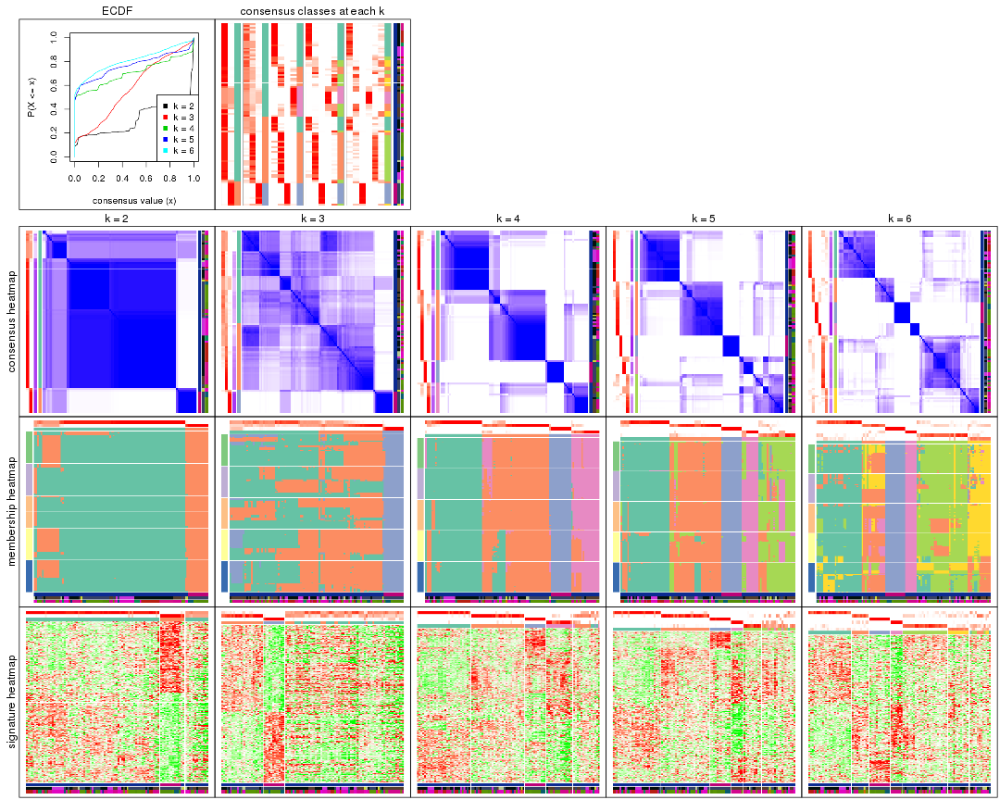
The plots are:
k and the heatmap of
predicted classes for each k.k.k.k.All the plots in panels can be made by individual functions and they are plotted later in this section.
select_partition_number() produces several plots showing different
statistics for choosing “optimized” k. There are following statistics:
k;k, the area increased is defined as \(A_k - A_{k-1}\).The detailed explanations of these statistics can be found in the cola vignette.
Generally speaking, lower PAC score, higher mean silhouette score or higher
concordance corresponds to better partition. Rand index and Jaccard index
measure how similar the current partition is compared to partition with k-1.
If they are too similar, we won't accept k is better than k-1.
select_partition_number(res)
The numeric values for all these statistics can be obtained by get_stats().
get_stats(res)
#> k 1-PAC mean_silhouette concordance area_increased Rand Jaccard
#> 2 2 0.708 0.818 0.925 0.3227 0.765 0.765
#> 3 3 0.272 0.446 0.724 0.7973 0.625 0.513
#> 4 4 0.744 0.774 0.909 0.2164 0.684 0.374
#> 5 5 0.746 0.706 0.879 0.0911 0.875 0.610
#> 6 6 0.719 0.693 0.788 0.0537 0.917 0.671
suggest_best_k() suggests the best \(k\) based on these statistics. The rules are as follows:
suggest_best_k(res)
#> [1] 4
Following shows the table of the partitions (You need to click the show/hide
code output link to see it). The membership matrix (columns with name p*)
is inferred by
clue::cl_consensus()
function with the SE method. Basically the value in the membership matrix
represents the probability to belong to a certain group. The finall class
label for an item is determined with the group with highest probability it
belongs to.
In get_classes() function, the entropy is calculated from the membership
matrix and the silhouette score is calculated from the consensus matrix.
cbind(get_classes(res, k = 2), get_membership(res, k = 2))
#> class entropy silhouette p1 p2
#> GSM141334 1 0.1633 0.9018 0.976 0.024
#> GSM141335 1 0.1633 0.9018 0.976 0.024
#> GSM141336 1 0.1633 0.9018 0.976 0.024
#> GSM141337 1 0.1633 0.9018 0.976 0.024
#> GSM141184 1 0.1633 0.9018 0.976 0.024
#> GSM141185 1 0.1633 0.9018 0.976 0.024
#> GSM141186 1 0.0938 0.9038 0.988 0.012
#> GSM141243 1 0.1633 0.9018 0.976 0.024
#> GSM141244 1 0.1633 0.9018 0.976 0.024
#> GSM141246 1 0.1633 0.9018 0.976 0.024
#> GSM141247 1 0.1633 0.9018 0.976 0.024
#> GSM141248 1 0.1633 0.9018 0.976 0.024
#> GSM141249 1 0.0000 0.9064 1.000 0.000
#> GSM141258 1 0.1633 0.9018 0.976 0.024
#> GSM141259 1 0.9393 0.4716 0.644 0.356
#> GSM141260 1 0.1633 0.9018 0.976 0.024
#> GSM141261 1 0.8144 0.6487 0.748 0.252
#> GSM141262 1 0.1633 0.9018 0.976 0.024
#> GSM141263 1 0.8955 0.5786 0.688 0.312
#> GSM141338 1 0.1633 0.9018 0.976 0.024
#> GSM141339 1 0.1633 0.9018 0.976 0.024
#> GSM141340 1 0.0376 0.9059 0.996 0.004
#> GSM141265 2 0.6973 0.7402 0.188 0.812
#> GSM141267 1 0.4815 0.8339 0.896 0.104
#> GSM141330 1 0.9996 0.0728 0.512 0.488
#> GSM141266 1 0.1633 0.9018 0.976 0.024
#> GSM141264 2 0.2603 0.9352 0.044 0.956
#> GSM141341 1 0.0000 0.9064 1.000 0.000
#> GSM141342 1 0.9963 0.2269 0.536 0.464
#> GSM141343 1 0.9963 0.2269 0.536 0.464
#> GSM141356 1 0.0672 0.9038 0.992 0.008
#> GSM141357 1 0.0000 0.9064 1.000 0.000
#> GSM141358 1 0.1633 0.9018 0.976 0.024
#> GSM141359 1 0.9815 0.3341 0.580 0.420
#> GSM141360 1 0.0000 0.9064 1.000 0.000
#> GSM141361 1 0.0000 0.9064 1.000 0.000
#> GSM141362 1 0.0376 0.9059 0.996 0.004
#> GSM141363 1 0.1414 0.8963 0.980 0.020
#> GSM141364 1 0.0000 0.9064 1.000 0.000
#> GSM141365 1 0.7299 0.7090 0.796 0.204
#> GSM141366 1 0.9963 0.2269 0.536 0.464
#> GSM141367 1 0.0000 0.9064 1.000 0.000
#> GSM141368 1 0.9963 0.2269 0.536 0.464
#> GSM141369 1 0.9963 0.2269 0.536 0.464
#> GSM141370 1 0.9963 0.2269 0.536 0.464
#> GSM141371 1 0.9963 0.2269 0.536 0.464
#> GSM141372 1 0.9963 0.2269 0.536 0.464
#> GSM141373 1 0.1633 0.9018 0.976 0.024
#> GSM141374 1 0.0000 0.9064 1.000 0.000
#> GSM141375 1 0.0000 0.9064 1.000 0.000
#> GSM141376 1 0.0000 0.9064 1.000 0.000
#> GSM141377 1 0.0000 0.9064 1.000 0.000
#> GSM141378 1 0.0000 0.9064 1.000 0.000
#> GSM141380 1 0.0000 0.9064 1.000 0.000
#> GSM141387 1 0.0000 0.9064 1.000 0.000
#> GSM141395 1 0.1633 0.9018 0.976 0.024
#> GSM141397 1 0.1633 0.9018 0.976 0.024
#> GSM141398 1 0.1633 0.9018 0.976 0.024
#> GSM141401 1 0.0000 0.9064 1.000 0.000
#> GSM141399 1 0.1633 0.9018 0.976 0.024
#> GSM141379 1 0.0000 0.9064 1.000 0.000
#> GSM141381 1 0.0000 0.9064 1.000 0.000
#> GSM141383 1 0.0000 0.9064 1.000 0.000
#> GSM141384 1 0.0000 0.9064 1.000 0.000
#> GSM141385 1 0.0000 0.9064 1.000 0.000
#> GSM141388 1 0.0000 0.9064 1.000 0.000
#> GSM141389 1 0.0000 0.9064 1.000 0.000
#> GSM141391 1 0.0000 0.9064 1.000 0.000
#> GSM141394 1 0.1633 0.9018 0.976 0.024
#> GSM141396 1 0.0000 0.9064 1.000 0.000
#> GSM141403 1 0.0000 0.9064 1.000 0.000
#> GSM141404 1 0.0000 0.9064 1.000 0.000
#> GSM141386 1 0.0000 0.9064 1.000 0.000
#> GSM141382 1 0.0000 0.9064 1.000 0.000
#> GSM141390 1 0.0000 0.9064 1.000 0.000
#> GSM141393 1 0.4939 0.8164 0.892 0.108
#> GSM141400 1 0.0000 0.9064 1.000 0.000
#> GSM141402 1 0.9963 0.2269 0.536 0.464
#> GSM141392 1 0.9998 0.0591 0.508 0.492
#> GSM141405 1 0.0000 0.9064 1.000 0.000
#> GSM141406 1 0.1633 0.9018 0.976 0.024
#> GSM141407 1 0.0000 0.9064 1.000 0.000
#> GSM141408 1 0.0000 0.9064 1.000 0.000
#> GSM141409 1 0.0000 0.9064 1.000 0.000
#> GSM141410 1 0.0000 0.9064 1.000 0.000
#> GSM141411 1 0.0000 0.9064 1.000 0.000
#> GSM141412 1 0.0000 0.9064 1.000 0.000
#> GSM141413 1 0.1184 0.9036 0.984 0.016
#> GSM141414 1 0.0376 0.9059 0.996 0.004
#> GSM141415 1 0.0000 0.9064 1.000 0.000
#> GSM141416 1 0.1633 0.9018 0.976 0.024
#> GSM141417 1 0.0000 0.9064 1.000 0.000
#> GSM141420 2 0.0000 0.9796 0.000 1.000
#> GSM141421 2 0.0000 0.9796 0.000 1.000
#> GSM141422 2 0.0000 0.9796 0.000 1.000
#> GSM141423 2 0.0000 0.9796 0.000 1.000
#> GSM141424 2 0.0000 0.9796 0.000 1.000
#> GSM141427 2 0.0000 0.9796 0.000 1.000
#> GSM141428 2 0.0000 0.9796 0.000 1.000
#> GSM141418 2 0.0000 0.9796 0.000 1.000
#> GSM141419 2 0.0000 0.9796 0.000 1.000
#> GSM141425 2 0.0000 0.9796 0.000 1.000
#> GSM141426 2 0.0000 0.9796 0.000 1.000
#> GSM141429 2 0.0000 0.9796 0.000 1.000
cbind(get_classes(res, k = 3), get_membership(res, k = 3))
#> class entropy silhouette p1 p2 p3
#> GSM141334 2 0.0000 0.6641 0.000 1.000 0.000
#> GSM141335 2 0.0000 0.6641 0.000 1.000 0.000
#> GSM141336 2 0.0000 0.6641 0.000 1.000 0.000
#> GSM141337 2 0.3879 0.5901 0.152 0.848 0.000
#> GSM141184 2 0.0000 0.6641 0.000 1.000 0.000
#> GSM141185 2 0.0661 0.6580 0.008 0.988 0.004
#> GSM141186 1 0.7311 0.3744 0.580 0.384 0.036
#> GSM141243 2 0.6669 -0.1582 0.468 0.524 0.008
#> GSM141244 2 0.1031 0.6651 0.024 0.976 0.000
#> GSM141246 2 0.2448 0.6309 0.076 0.924 0.000
#> GSM141247 2 0.0000 0.6641 0.000 1.000 0.000
#> GSM141248 2 0.1753 0.6584 0.048 0.952 0.000
#> GSM141249 2 0.6204 0.3857 0.424 0.576 0.000
#> GSM141258 2 0.0000 0.6641 0.000 1.000 0.000
#> GSM141259 1 0.6823 0.4422 0.668 0.296 0.036
#> GSM141260 2 0.3879 0.6160 0.152 0.848 0.000
#> GSM141261 1 0.7170 0.3849 0.612 0.352 0.036
#> GSM141262 2 0.3116 0.6160 0.108 0.892 0.000
#> GSM141263 1 0.8091 0.3719 0.572 0.348 0.080
#> GSM141338 2 0.0237 0.6650 0.004 0.996 0.000
#> GSM141339 2 0.0424 0.6655 0.008 0.992 0.000
#> GSM141340 2 0.6302 0.2242 0.480 0.520 0.000
#> GSM141265 2 0.7138 0.4874 0.160 0.720 0.120
#> GSM141267 2 0.5327 0.5951 0.272 0.728 0.000
#> GSM141330 2 0.6897 0.5581 0.220 0.712 0.068
#> GSM141266 1 0.7353 0.3567 0.568 0.396 0.036
#> GSM141264 3 0.8892 -0.0073 0.120 0.436 0.444
#> GSM141341 1 0.5219 0.4877 0.788 0.196 0.016
#> GSM141342 1 0.9405 0.3085 0.484 0.192 0.324
#> GSM141343 1 0.7543 0.4612 0.680 0.216 0.104
#> GSM141356 1 0.6836 0.3165 0.572 0.412 0.016
#> GSM141357 1 0.4475 0.4949 0.840 0.144 0.016
#> GSM141358 1 0.7311 0.3744 0.580 0.384 0.036
#> GSM141359 1 0.7905 0.3750 0.560 0.376 0.064
#> GSM141360 1 0.3851 0.4844 0.860 0.136 0.004
#> GSM141361 1 0.5992 0.4817 0.716 0.268 0.016
#> GSM141362 1 0.7311 0.3744 0.580 0.384 0.036
#> GSM141363 1 0.6521 0.4791 0.644 0.340 0.016
#> GSM141364 1 0.6836 0.4043 0.572 0.412 0.016
#> GSM141365 1 0.5951 0.4819 0.764 0.196 0.040
#> GSM141366 1 0.9560 0.3031 0.464 0.212 0.324
#> GSM141367 1 0.2703 0.5059 0.928 0.056 0.016
#> GSM141368 1 0.9560 0.3031 0.464 0.212 0.324
#> GSM141369 1 0.9575 0.3080 0.464 0.216 0.320
#> GSM141370 1 0.9560 0.3031 0.464 0.212 0.324
#> GSM141371 1 0.9560 0.3031 0.464 0.212 0.324
#> GSM141372 1 0.9560 0.3031 0.464 0.212 0.324
#> GSM141373 2 0.5178 0.5742 0.256 0.744 0.000
#> GSM141374 2 0.6308 0.2248 0.492 0.508 0.000
#> GSM141375 1 0.5956 0.4828 0.720 0.264 0.016
#> GSM141376 1 0.6274 -0.1217 0.544 0.456 0.000
#> GSM141377 1 0.3412 0.4789 0.876 0.124 0.000
#> GSM141378 2 0.6244 0.3791 0.440 0.560 0.000
#> GSM141380 1 0.6307 -0.2072 0.512 0.488 0.000
#> GSM141387 1 0.3412 0.4789 0.876 0.124 0.000
#> GSM141395 2 0.5058 0.5924 0.244 0.756 0.000
#> GSM141397 1 0.6832 0.3781 0.604 0.376 0.020
#> GSM141398 2 0.0000 0.6641 0.000 1.000 0.000
#> GSM141401 1 0.6126 0.4334 0.600 0.400 0.000
#> GSM141399 2 0.2165 0.6589 0.064 0.936 0.000
#> GSM141379 1 0.6302 -0.1785 0.520 0.480 0.000
#> GSM141381 1 0.6286 -0.1395 0.536 0.464 0.000
#> GSM141383 1 0.3412 0.4789 0.876 0.124 0.000
#> GSM141384 1 0.3412 0.4789 0.876 0.124 0.000
#> GSM141385 2 0.6244 0.3764 0.440 0.560 0.000
#> GSM141388 1 0.3412 0.4789 0.876 0.124 0.000
#> GSM141389 1 0.3412 0.4789 0.876 0.124 0.000
#> GSM141391 1 0.6291 -0.1493 0.532 0.468 0.000
#> GSM141394 2 0.4059 0.6102 0.128 0.860 0.012
#> GSM141396 2 0.6225 0.3811 0.432 0.568 0.000
#> GSM141403 1 0.6543 0.4767 0.640 0.344 0.016
#> GSM141404 1 0.4002 0.4837 0.840 0.160 0.000
#> GSM141386 2 0.6235 0.3805 0.436 0.564 0.000
#> GSM141382 1 0.6267 -0.1422 0.548 0.452 0.000
#> GSM141390 1 0.4555 0.4181 0.800 0.200 0.000
#> GSM141393 2 0.6308 0.3048 0.492 0.508 0.000
#> GSM141400 1 0.6274 -0.1411 0.544 0.456 0.000
#> GSM141402 1 0.9115 0.4006 0.548 0.216 0.236
#> GSM141392 2 0.8393 0.4113 0.396 0.516 0.088
#> GSM141405 1 0.2537 0.4929 0.920 0.080 0.000
#> GSM141406 2 0.4399 0.5706 0.188 0.812 0.000
#> GSM141407 1 0.6295 -0.1593 0.528 0.472 0.000
#> GSM141408 1 0.3619 0.4710 0.864 0.136 0.000
#> GSM141409 1 0.6309 -0.1808 0.504 0.496 0.000
#> GSM141410 1 0.6286 -0.1395 0.536 0.464 0.000
#> GSM141411 2 0.6225 0.3734 0.432 0.568 0.000
#> GSM141412 1 0.4121 0.4466 0.832 0.168 0.000
#> GSM141413 2 0.6274 0.2487 0.456 0.544 0.000
#> GSM141414 2 0.6140 0.3125 0.404 0.596 0.000
#> GSM141415 1 0.5621 0.2396 0.692 0.308 0.000
#> GSM141416 2 0.1031 0.6649 0.024 0.976 0.000
#> GSM141417 1 0.6309 -0.2047 0.500 0.500 0.000
#> GSM141420 3 0.0000 0.9393 0.000 0.000 1.000
#> GSM141421 3 0.0000 0.9393 0.000 0.000 1.000
#> GSM141422 3 0.0000 0.9393 0.000 0.000 1.000
#> GSM141423 3 0.0000 0.9393 0.000 0.000 1.000
#> GSM141424 3 0.0000 0.9393 0.000 0.000 1.000
#> GSM141427 3 0.0000 0.9393 0.000 0.000 1.000
#> GSM141428 3 0.0000 0.9393 0.000 0.000 1.000
#> GSM141418 3 0.0000 0.9393 0.000 0.000 1.000
#> GSM141419 3 0.3459 0.8502 0.012 0.096 0.892
#> GSM141425 3 0.0000 0.9393 0.000 0.000 1.000
#> GSM141426 3 0.0000 0.9393 0.000 0.000 1.000
#> GSM141429 3 0.0000 0.9393 0.000 0.000 1.000
cbind(get_classes(res, k = 4), get_membership(res, k = 4))
#> class entropy silhouette p1 p2 p3 p4
#> GSM141334 2 0.0000 0.8355 0.000 1.000 0.000 0.000
#> GSM141335 2 0.0000 0.8355 0.000 1.000 0.000 0.000
#> GSM141336 2 0.0000 0.8355 0.000 1.000 0.000 0.000
#> GSM141337 2 0.4866 0.3557 0.404 0.596 0.000 0.000
#> GSM141184 2 0.0000 0.8355 0.000 1.000 0.000 0.000
#> GSM141185 2 0.0000 0.8355 0.000 1.000 0.000 0.000
#> GSM141186 2 0.4933 0.0665 0.000 0.568 0.000 0.432
#> GSM141243 2 0.0000 0.8355 0.000 1.000 0.000 0.000
#> GSM141244 2 0.4679 0.4668 0.352 0.648 0.000 0.000
#> GSM141246 2 0.0000 0.8355 0.000 1.000 0.000 0.000
#> GSM141247 2 0.0000 0.8355 0.000 1.000 0.000 0.000
#> GSM141248 2 0.4866 0.3557 0.404 0.596 0.000 0.000
#> GSM141249 1 0.0188 0.9173 0.996 0.004 0.000 0.000
#> GSM141258 2 0.0000 0.8355 0.000 1.000 0.000 0.000
#> GSM141259 4 0.3444 0.7525 0.000 0.184 0.000 0.816
#> GSM141260 2 0.0000 0.8355 0.000 1.000 0.000 0.000
#> GSM141261 4 0.3726 0.6429 0.000 0.212 0.000 0.788
#> GSM141262 2 0.0000 0.8355 0.000 1.000 0.000 0.000
#> GSM141263 4 0.2081 0.7949 0.000 0.084 0.000 0.916
#> GSM141338 2 0.0000 0.8355 0.000 1.000 0.000 0.000
#> GSM141339 2 0.3610 0.6723 0.200 0.800 0.000 0.000
#> GSM141340 1 0.0000 0.9199 1.000 0.000 0.000 0.000
#> GSM141265 2 0.1302 0.8069 0.000 0.956 0.000 0.044
#> GSM141267 2 0.0000 0.8355 0.000 1.000 0.000 0.000
#> GSM141330 2 0.0000 0.8355 0.000 1.000 0.000 0.000
#> GSM141266 2 0.2216 0.7631 0.000 0.908 0.000 0.092
#> GSM141264 3 0.6552 0.2829 0.000 0.328 0.576 0.096
#> GSM141341 4 0.4331 0.6550 0.000 0.288 0.000 0.712
#> GSM141342 4 0.0000 0.8122 0.000 0.000 0.000 1.000
#> GSM141343 4 0.0000 0.8122 0.000 0.000 0.000 1.000
#> GSM141356 2 0.4817 0.2138 0.000 0.612 0.000 0.388
#> GSM141357 1 0.3610 0.6992 0.800 0.000 0.000 0.200
#> GSM141358 2 0.0188 0.8335 0.000 0.996 0.000 0.004
#> GSM141359 4 0.4331 0.6543 0.000 0.288 0.000 0.712
#> GSM141360 1 0.0707 0.9066 0.980 0.020 0.000 0.000
#> GSM141361 2 0.4356 0.4644 0.000 0.708 0.000 0.292
#> GSM141362 4 0.4948 0.3486 0.000 0.440 0.000 0.560
#> GSM141363 2 0.4564 0.3839 0.000 0.672 0.000 0.328
#> GSM141364 2 0.3569 0.6340 0.000 0.804 0.000 0.196
#> GSM141365 4 0.4250 0.6696 0.000 0.276 0.000 0.724
#> GSM141366 4 0.0000 0.8122 0.000 0.000 0.000 1.000
#> GSM141367 4 0.7382 0.4760 0.208 0.276 0.000 0.516
#> GSM141368 4 0.0000 0.8122 0.000 0.000 0.000 1.000
#> GSM141369 4 0.0000 0.8122 0.000 0.000 0.000 1.000
#> GSM141370 4 0.0000 0.8122 0.000 0.000 0.000 1.000
#> GSM141371 4 0.0000 0.8122 0.000 0.000 0.000 1.000
#> GSM141372 4 0.0000 0.8122 0.000 0.000 0.000 1.000
#> GSM141373 2 0.3610 0.6698 0.200 0.800 0.000 0.000
#> GSM141374 1 0.0000 0.9199 1.000 0.000 0.000 0.000
#> GSM141375 2 0.1807 0.8002 0.052 0.940 0.000 0.008
#> GSM141376 1 0.0000 0.9199 1.000 0.000 0.000 0.000
#> GSM141377 1 0.0000 0.9199 1.000 0.000 0.000 0.000
#> GSM141378 1 0.0000 0.9199 1.000 0.000 0.000 0.000
#> GSM141380 1 0.0000 0.9199 1.000 0.000 0.000 0.000
#> GSM141387 1 0.0000 0.9199 1.000 0.000 0.000 0.000
#> GSM141395 2 0.0000 0.8355 0.000 1.000 0.000 0.000
#> GSM141397 2 0.0817 0.8214 0.000 0.976 0.000 0.024
#> GSM141398 2 0.0000 0.8355 0.000 1.000 0.000 0.000
#> GSM141401 2 0.0000 0.8355 0.000 1.000 0.000 0.000
#> GSM141399 2 0.0000 0.8355 0.000 1.000 0.000 0.000
#> GSM141379 1 0.0000 0.9199 1.000 0.000 0.000 0.000
#> GSM141381 1 0.0000 0.9199 1.000 0.000 0.000 0.000
#> GSM141383 1 0.0000 0.9199 1.000 0.000 0.000 0.000
#> GSM141384 1 0.0000 0.9199 1.000 0.000 0.000 0.000
#> GSM141385 1 0.2589 0.8229 0.884 0.116 0.000 0.000
#> GSM141388 1 0.0000 0.9199 1.000 0.000 0.000 0.000
#> GSM141389 1 0.0000 0.9199 1.000 0.000 0.000 0.000
#> GSM141391 1 0.0000 0.9199 1.000 0.000 0.000 0.000
#> GSM141394 2 0.0000 0.8355 0.000 1.000 0.000 0.000
#> GSM141396 1 0.0000 0.9199 1.000 0.000 0.000 0.000
#> GSM141403 2 0.3528 0.6398 0.000 0.808 0.000 0.192
#> GSM141404 1 0.3528 0.7083 0.808 0.192 0.000 0.000
#> GSM141386 2 0.3942 0.6387 0.236 0.764 0.000 0.000
#> GSM141382 1 0.0000 0.9199 1.000 0.000 0.000 0.000
#> GSM141390 1 0.4866 0.3143 0.596 0.404 0.000 0.000
#> GSM141393 1 0.2216 0.8451 0.908 0.092 0.000 0.000
#> GSM141400 1 0.1716 0.8712 0.936 0.064 0.000 0.000
#> GSM141402 4 0.0000 0.8122 0.000 0.000 0.000 1.000
#> GSM141392 1 0.5039 0.3096 0.592 0.404 0.004 0.000
#> GSM141405 1 0.4855 0.3247 0.600 0.400 0.000 0.000
#> GSM141406 2 0.0000 0.8355 0.000 1.000 0.000 0.000
#> GSM141407 1 0.0000 0.9199 1.000 0.000 0.000 0.000
#> GSM141408 1 0.0000 0.9199 1.000 0.000 0.000 0.000
#> GSM141409 1 0.3610 0.6955 0.800 0.200 0.000 0.000
#> GSM141410 1 0.0000 0.9199 1.000 0.000 0.000 0.000
#> GSM141411 1 0.0000 0.9199 1.000 0.000 0.000 0.000
#> GSM141412 1 0.0000 0.9199 1.000 0.000 0.000 0.000
#> GSM141413 2 0.4866 0.3557 0.404 0.596 0.000 0.000
#> GSM141414 2 0.4866 0.3557 0.404 0.596 0.000 0.000
#> GSM141415 1 0.0000 0.9199 1.000 0.000 0.000 0.000
#> GSM141416 2 0.0469 0.8294 0.012 0.988 0.000 0.000
#> GSM141417 1 0.0000 0.9199 1.000 0.000 0.000 0.000
#> GSM141420 3 0.0000 0.9562 0.000 0.000 1.000 0.000
#> GSM141421 3 0.0000 0.9562 0.000 0.000 1.000 0.000
#> GSM141422 3 0.0000 0.9562 0.000 0.000 1.000 0.000
#> GSM141423 3 0.0000 0.9562 0.000 0.000 1.000 0.000
#> GSM141424 3 0.0000 0.9562 0.000 0.000 1.000 0.000
#> GSM141427 3 0.0000 0.9562 0.000 0.000 1.000 0.000
#> GSM141428 3 0.0000 0.9562 0.000 0.000 1.000 0.000
#> GSM141418 3 0.0000 0.9562 0.000 0.000 1.000 0.000
#> GSM141419 3 0.0000 0.9562 0.000 0.000 1.000 0.000
#> GSM141425 3 0.0000 0.9562 0.000 0.000 1.000 0.000
#> GSM141426 3 0.0000 0.9562 0.000 0.000 1.000 0.000
#> GSM141429 3 0.0000 0.9562 0.000 0.000 1.000 0.000
cbind(get_classes(res, k = 5), get_membership(res, k = 5))
#> class entropy silhouette p1 p2 p3 p4 p5
#> GSM141334 2 0.0000 0.8479 0.000 1.000 0.000 0.000 0.000
#> GSM141335 2 0.0000 0.8479 0.000 1.000 0.000 0.000 0.000
#> GSM141336 2 0.0880 0.8460 0.000 0.968 0.000 0.000 0.032
#> GSM141337 2 0.3395 0.6418 0.236 0.764 0.000 0.000 0.000
#> GSM141184 2 0.0703 0.8478 0.000 0.976 0.000 0.000 0.024
#> GSM141185 2 0.0880 0.8460 0.000 0.968 0.000 0.000 0.032
#> GSM141186 5 0.4238 0.5145 0.000 0.136 0.000 0.088 0.776
#> GSM141243 2 0.3707 0.5657 0.000 0.716 0.000 0.000 0.284
#> GSM141244 2 0.0290 0.8469 0.008 0.992 0.000 0.000 0.000
#> GSM141246 2 0.1043 0.8448 0.000 0.960 0.000 0.000 0.040
#> GSM141247 2 0.0880 0.8460 0.000 0.968 0.000 0.000 0.032
#> GSM141248 2 0.3366 0.6462 0.232 0.768 0.000 0.000 0.000
#> GSM141249 1 0.1043 0.9100 0.960 0.040 0.000 0.000 0.000
#> GSM141258 2 0.0880 0.8460 0.000 0.968 0.000 0.000 0.032
#> GSM141259 5 0.4449 -0.2296 0.000 0.004 0.000 0.484 0.512
#> GSM141260 2 0.0880 0.8404 0.000 0.968 0.000 0.000 0.032
#> GSM141261 4 0.5238 0.1352 0.000 0.044 0.000 0.484 0.472
#> GSM141262 2 0.3707 0.5657 0.000 0.716 0.000 0.000 0.284
#> GSM141263 5 0.4560 -0.2290 0.000 0.008 0.000 0.484 0.508
#> GSM141338 2 0.0000 0.8479 0.000 1.000 0.000 0.000 0.000
#> GSM141339 2 0.0000 0.8479 0.000 1.000 0.000 0.000 0.000
#> GSM141340 1 0.0510 0.9190 0.984 0.016 0.000 0.000 0.000
#> GSM141265 5 0.1908 0.5876 0.000 0.092 0.000 0.000 0.908
#> GSM141267 2 0.1121 0.8435 0.000 0.956 0.000 0.000 0.044
#> GSM141330 5 0.4287 0.0396 0.000 0.460 0.000 0.000 0.540
#> GSM141266 2 0.4313 0.4241 0.000 0.636 0.000 0.008 0.356
#> GSM141264 5 0.3876 0.4014 0.000 0.000 0.316 0.000 0.684
#> GSM141341 5 0.0963 0.5851 0.000 0.000 0.000 0.036 0.964
#> GSM141342 4 0.0162 0.7893 0.000 0.000 0.000 0.996 0.004
#> GSM141343 4 0.4304 0.1769 0.000 0.000 0.000 0.516 0.484
#> GSM141356 5 0.0162 0.5954 0.000 0.000 0.000 0.004 0.996
#> GSM141357 5 0.4656 0.4794 0.036 0.268 0.000 0.004 0.692
#> GSM141358 5 0.4045 0.3302 0.000 0.356 0.000 0.000 0.644
#> GSM141359 5 0.4448 -0.2214 0.000 0.004 0.000 0.480 0.516
#> GSM141360 5 0.5901 0.4226 0.148 0.268 0.000 0.000 0.584
#> GSM141361 5 0.0162 0.5954 0.000 0.000 0.000 0.004 0.996
#> GSM141362 5 0.4900 -0.1939 0.000 0.024 0.000 0.464 0.512
#> GSM141363 2 0.6139 0.1558 0.000 0.556 0.000 0.184 0.260
#> GSM141364 2 0.4430 0.0115 0.000 0.540 0.000 0.004 0.456
#> GSM141365 5 0.1121 0.5840 0.000 0.000 0.000 0.044 0.956
#> GSM141366 4 0.0000 0.7905 0.000 0.000 0.000 1.000 0.000
#> GSM141367 5 0.0963 0.5851 0.000 0.000 0.000 0.036 0.964
#> GSM141368 4 0.0000 0.7905 0.000 0.000 0.000 1.000 0.000
#> GSM141369 4 0.0290 0.7869 0.000 0.000 0.000 0.992 0.008
#> GSM141370 4 0.0000 0.7905 0.000 0.000 0.000 1.000 0.000
#> GSM141371 4 0.0000 0.7905 0.000 0.000 0.000 1.000 0.000
#> GSM141372 4 0.0000 0.7905 0.000 0.000 0.000 1.000 0.000
#> GSM141373 2 0.0290 0.8476 0.000 0.992 0.000 0.000 0.008
#> GSM141374 1 0.0880 0.9134 0.968 0.032 0.000 0.000 0.000
#> GSM141375 5 0.0162 0.5960 0.004 0.000 0.000 0.000 0.996
#> GSM141376 1 0.0162 0.9194 0.996 0.000 0.000 0.000 0.004
#> GSM141377 1 0.0162 0.9194 0.996 0.000 0.000 0.000 0.004
#> GSM141378 1 0.0963 0.9116 0.964 0.036 0.000 0.000 0.000
#> GSM141380 1 0.0510 0.9186 0.984 0.016 0.000 0.000 0.000
#> GSM141387 1 0.0162 0.9194 0.996 0.000 0.000 0.000 0.004
#> GSM141395 2 0.2424 0.7440 0.000 0.868 0.000 0.000 0.132
#> GSM141397 5 0.2852 0.5576 0.000 0.172 0.000 0.000 0.828
#> GSM141398 2 0.0000 0.8479 0.000 1.000 0.000 0.000 0.000
#> GSM141401 2 0.1106 0.8405 0.012 0.964 0.000 0.000 0.024
#> GSM141399 2 0.0290 0.8476 0.000 0.992 0.000 0.000 0.008
#> GSM141379 1 0.0290 0.9195 0.992 0.008 0.000 0.000 0.000
#> GSM141381 1 0.0566 0.9196 0.984 0.012 0.000 0.000 0.004
#> GSM141383 1 0.0162 0.9194 0.996 0.000 0.000 0.000 0.004
#> GSM141384 1 0.0162 0.9194 0.996 0.000 0.000 0.000 0.004
#> GSM141385 1 0.4067 0.6039 0.692 0.300 0.000 0.000 0.008
#> GSM141388 1 0.0162 0.9194 0.996 0.000 0.000 0.000 0.004
#> GSM141389 1 0.0162 0.9194 0.996 0.000 0.000 0.000 0.004
#> GSM141391 1 0.0880 0.9134 0.968 0.032 0.000 0.000 0.000
#> GSM141394 2 0.1608 0.8272 0.000 0.928 0.000 0.000 0.072
#> GSM141396 1 0.0880 0.9134 0.968 0.032 0.000 0.000 0.000
#> GSM141403 5 0.3838 0.4866 0.000 0.280 0.000 0.004 0.716
#> GSM141404 1 0.5434 0.5160 0.648 0.232 0.000 0.000 0.120
#> GSM141386 2 0.2423 0.7821 0.080 0.896 0.000 0.000 0.024
#> GSM141382 1 0.2074 0.8529 0.896 0.104 0.000 0.000 0.000
#> GSM141390 5 0.6523 0.3368 0.248 0.268 0.000 0.000 0.484
#> GSM141393 1 0.3366 0.6998 0.768 0.232 0.000 0.000 0.000
#> GSM141400 1 0.3612 0.6489 0.732 0.268 0.000 0.000 0.000
#> GSM141402 4 0.4283 0.2380 0.000 0.000 0.000 0.544 0.456
#> GSM141392 5 0.1756 0.5938 0.036 0.016 0.008 0.000 0.940
#> GSM141405 5 0.5909 0.3977 0.244 0.164 0.000 0.000 0.592
#> GSM141406 2 0.1197 0.8424 0.000 0.952 0.000 0.000 0.048
#> GSM141407 1 0.0162 0.9194 0.996 0.000 0.000 0.000 0.004
#> GSM141408 1 0.0162 0.9194 0.996 0.000 0.000 0.000 0.004
#> GSM141409 1 0.4030 0.4208 0.648 0.352 0.000 0.000 0.000
#> GSM141410 1 0.0162 0.9194 0.996 0.000 0.000 0.000 0.004
#> GSM141411 1 0.0880 0.9134 0.968 0.032 0.000 0.000 0.000
#> GSM141412 1 0.0162 0.9194 0.996 0.000 0.000 0.000 0.004
#> GSM141413 2 0.3534 0.6251 0.256 0.744 0.000 0.000 0.000
#> GSM141414 2 0.3700 0.6400 0.240 0.752 0.000 0.000 0.008
#> GSM141415 1 0.0000 0.9191 1.000 0.000 0.000 0.000 0.000
#> GSM141416 2 0.0000 0.8479 0.000 1.000 0.000 0.000 0.000
#> GSM141417 1 0.0510 0.9186 0.984 0.016 0.000 0.000 0.000
#> GSM141420 3 0.0000 0.9971 0.000 0.000 1.000 0.000 0.000
#> GSM141421 3 0.0000 0.9971 0.000 0.000 1.000 0.000 0.000
#> GSM141422 3 0.0000 0.9971 0.000 0.000 1.000 0.000 0.000
#> GSM141423 3 0.0000 0.9971 0.000 0.000 1.000 0.000 0.000
#> GSM141424 3 0.0000 0.9971 0.000 0.000 1.000 0.000 0.000
#> GSM141427 3 0.0000 0.9971 0.000 0.000 1.000 0.000 0.000
#> GSM141428 3 0.0000 0.9971 0.000 0.000 1.000 0.000 0.000
#> GSM141418 3 0.0000 0.9971 0.000 0.000 1.000 0.000 0.000
#> GSM141419 3 0.0703 0.9671 0.000 0.000 0.976 0.000 0.024
#> GSM141425 3 0.0000 0.9971 0.000 0.000 1.000 0.000 0.000
#> GSM141426 3 0.0000 0.9971 0.000 0.000 1.000 0.000 0.000
#> GSM141429 3 0.0000 0.9971 0.000 0.000 1.000 0.000 0.000
cbind(get_classes(res, k = 6), get_membership(res, k = 6))
#> class entropy silhouette p1 p2 p3 p4 p5 p6
#> GSM141334 5 0.3023 0.68251 0.000 0.232 0.000 0.000 0.768 0.000
#> GSM141335 5 0.1910 0.73366 0.000 0.108 0.000 0.000 0.892 0.000
#> GSM141336 5 0.3288 0.64010 0.000 0.276 0.000 0.000 0.724 0.000
#> GSM141337 5 0.3721 0.66027 0.168 0.016 0.000 0.000 0.784 0.032
#> GSM141184 5 0.3023 0.68251 0.000 0.232 0.000 0.000 0.768 0.000
#> GSM141185 5 0.3023 0.68251 0.000 0.232 0.000 0.000 0.768 0.000
#> GSM141186 2 0.2053 0.54882 0.000 0.888 0.000 0.000 0.004 0.108
#> GSM141243 2 0.3244 0.40760 0.000 0.732 0.000 0.000 0.268 0.000
#> GSM141244 5 0.2833 0.73305 0.088 0.040 0.000 0.000 0.864 0.008
#> GSM141246 5 0.1957 0.73270 0.000 0.112 0.000 0.000 0.888 0.000
#> GSM141247 5 0.3244 0.64921 0.000 0.268 0.000 0.000 0.732 0.000
#> GSM141248 5 0.2921 0.69163 0.156 0.008 0.000 0.000 0.828 0.008
#> GSM141249 1 0.4829 0.52317 0.648 0.016 0.000 0.000 0.280 0.056
#> GSM141258 5 0.3023 0.68251 0.000 0.232 0.000 0.000 0.768 0.000
#> GSM141259 2 0.3314 0.62160 0.000 0.740 0.000 0.256 0.000 0.004
#> GSM141260 5 0.0993 0.73970 0.000 0.012 0.000 0.000 0.964 0.024
#> GSM141261 2 0.3606 0.63025 0.000 0.728 0.000 0.256 0.016 0.000
#> GSM141262 2 0.3464 0.29479 0.000 0.688 0.000 0.000 0.312 0.000
#> GSM141263 2 0.3518 0.62922 0.000 0.732 0.000 0.256 0.012 0.000
#> GSM141338 5 0.3050 0.67954 0.000 0.236 0.000 0.000 0.764 0.000
#> GSM141339 5 0.2375 0.74215 0.060 0.036 0.000 0.000 0.896 0.008
#> GSM141340 1 0.5056 0.28901 0.556 0.016 0.000 0.000 0.380 0.048
#> GSM141265 2 0.4969 -0.28980 0.000 0.508 0.008 0.000 0.048 0.436
#> GSM141267 5 0.0622 0.74216 0.000 0.012 0.000 0.000 0.980 0.008
#> GSM141330 5 0.4697 0.31387 0.000 0.064 0.000 0.000 0.612 0.324
#> GSM141266 2 0.1765 0.55736 0.000 0.904 0.000 0.000 0.096 0.000
#> GSM141264 6 0.6075 0.25920 0.000 0.324 0.280 0.000 0.000 0.396
#> GSM141341 6 0.3547 0.65346 0.000 0.332 0.000 0.000 0.000 0.668
#> GSM141342 4 0.0146 0.99396 0.000 0.000 0.000 0.996 0.000 0.004
#> GSM141343 2 0.4905 0.53345 0.000 0.620 0.000 0.284 0.000 0.096
#> GSM141356 6 0.3905 0.66194 0.000 0.316 0.000 0.000 0.016 0.668
#> GSM141357 6 0.5626 0.54138 0.084 0.100 0.000 0.000 0.160 0.656
#> GSM141358 2 0.2070 0.56484 0.000 0.896 0.000 0.000 0.012 0.092
#> GSM141359 2 0.2994 0.64041 0.000 0.788 0.000 0.208 0.000 0.004
#> GSM141360 6 0.4978 0.51465 0.104 0.036 0.000 0.000 0.156 0.704
#> GSM141361 6 0.3547 0.65346 0.000 0.332 0.000 0.000 0.000 0.668
#> GSM141362 2 0.1700 0.63028 0.000 0.916 0.000 0.080 0.004 0.000
#> GSM141363 2 0.5021 0.43307 0.000 0.708 0.000 0.048 0.100 0.144
#> GSM141364 5 0.5701 -0.28854 0.000 0.164 0.000 0.000 0.460 0.376
#> GSM141365 6 0.4705 0.64389 0.000 0.260 0.000 0.088 0.000 0.652
#> GSM141366 4 0.0000 0.99900 0.000 0.000 0.000 1.000 0.000 0.000
#> GSM141367 6 0.4233 0.66306 0.000 0.268 0.000 0.048 0.000 0.684
#> GSM141368 4 0.0000 0.99900 0.000 0.000 0.000 1.000 0.000 0.000
#> GSM141369 4 0.0000 0.99900 0.000 0.000 0.000 1.000 0.000 0.000
#> GSM141370 4 0.0000 0.99900 0.000 0.000 0.000 1.000 0.000 0.000
#> GSM141371 4 0.0000 0.99900 0.000 0.000 0.000 1.000 0.000 0.000
#> GSM141372 4 0.0000 0.99900 0.000 0.000 0.000 1.000 0.000 0.000
#> GSM141373 5 0.3196 0.69904 0.108 0.016 0.000 0.000 0.840 0.036
#> GSM141374 1 0.0858 0.83404 0.968 0.000 0.000 0.000 0.004 0.028
#> GSM141375 6 0.3547 0.65346 0.000 0.332 0.000 0.000 0.000 0.668
#> GSM141376 1 0.2212 0.81085 0.880 0.008 0.000 0.000 0.000 0.112
#> GSM141377 1 0.4084 0.77013 0.756 0.012 0.000 0.000 0.056 0.176
#> GSM141378 1 0.0865 0.83263 0.964 0.000 0.000 0.000 0.000 0.036
#> GSM141380 1 0.0000 0.83788 1.000 0.000 0.000 0.000 0.000 0.000
#> GSM141387 1 0.3608 0.73925 0.716 0.012 0.000 0.000 0.000 0.272
#> GSM141395 5 0.1863 0.72954 0.004 0.016 0.000 0.000 0.920 0.060
#> GSM141397 6 0.5666 0.35634 0.000 0.388 0.000 0.000 0.156 0.456
#> GSM141398 5 0.3050 0.67954 0.000 0.236 0.000 0.000 0.764 0.000
#> GSM141401 5 0.3320 0.69176 0.028 0.068 0.000 0.000 0.844 0.060
#> GSM141399 5 0.0632 0.74505 0.000 0.024 0.000 0.000 0.976 0.000
#> GSM141379 1 0.0146 0.83792 0.996 0.000 0.000 0.000 0.000 0.004
#> GSM141381 1 0.1196 0.83673 0.952 0.008 0.000 0.000 0.000 0.040
#> GSM141383 1 0.3078 0.78221 0.796 0.012 0.000 0.000 0.000 0.192
#> GSM141384 1 0.3608 0.73925 0.716 0.012 0.000 0.000 0.000 0.272
#> GSM141385 1 0.5047 0.40782 0.592 0.016 0.000 0.000 0.336 0.056
#> GSM141388 1 0.3014 0.78482 0.804 0.012 0.000 0.000 0.000 0.184
#> GSM141389 1 0.2980 0.78572 0.808 0.012 0.000 0.000 0.000 0.180
#> GSM141391 1 0.0363 0.83746 0.988 0.000 0.000 0.000 0.000 0.012
#> GSM141394 5 0.3151 0.66919 0.000 0.252 0.000 0.000 0.748 0.000
#> GSM141396 1 0.3008 0.78023 0.860 0.016 0.000 0.000 0.072 0.052
#> GSM141403 6 0.5602 0.52037 0.000 0.188 0.000 0.000 0.276 0.536
#> GSM141404 5 0.6435 -0.03251 0.264 0.016 0.000 0.000 0.372 0.348
#> GSM141386 5 0.3652 0.67287 0.120 0.016 0.000 0.000 0.808 0.056
#> GSM141382 1 0.0622 0.83900 0.980 0.008 0.000 0.000 0.000 0.012
#> GSM141390 6 0.5408 0.52857 0.136 0.032 0.000 0.000 0.180 0.652
#> GSM141393 1 0.0260 0.83758 0.992 0.000 0.000 0.000 0.000 0.008
#> GSM141400 1 0.2145 0.81093 0.900 0.000 0.000 0.000 0.072 0.028
#> GSM141402 2 0.4408 0.58047 0.000 0.656 0.000 0.292 0.000 0.052
#> GSM141392 6 0.5445 0.64657 0.040 0.176 0.008 0.000 0.104 0.672
#> GSM141405 6 0.4652 0.63497 0.076 0.164 0.000 0.000 0.032 0.728
#> GSM141406 5 0.1088 0.74480 0.000 0.024 0.000 0.000 0.960 0.016
#> GSM141407 1 0.1663 0.81593 0.912 0.000 0.000 0.000 0.000 0.088
#> GSM141408 1 0.3586 0.74188 0.720 0.012 0.000 0.000 0.000 0.268
#> GSM141409 5 0.5674 0.00826 0.416 0.016 0.000 0.000 0.468 0.100
#> GSM141410 1 0.1588 0.82479 0.924 0.004 0.000 0.000 0.000 0.072
#> GSM141411 1 0.2889 0.78474 0.868 0.016 0.000 0.000 0.068 0.048
#> GSM141412 1 0.2300 0.80983 0.856 0.000 0.000 0.000 0.000 0.144
#> GSM141413 5 0.4367 0.58577 0.228 0.016 0.000 0.000 0.712 0.044
#> GSM141414 5 0.4052 0.63510 0.192 0.016 0.000 0.000 0.752 0.040
#> GSM141415 1 0.0260 0.83883 0.992 0.000 0.000 0.000 0.000 0.008
#> GSM141416 5 0.1757 0.74711 0.012 0.052 0.000 0.000 0.928 0.008
#> GSM141417 1 0.4454 0.60776 0.704 0.016 0.000 0.000 0.232 0.048
#> GSM141420 3 0.0000 0.99925 0.000 0.000 1.000 0.000 0.000 0.000
#> GSM141421 3 0.0000 0.99925 0.000 0.000 1.000 0.000 0.000 0.000
#> GSM141422 3 0.0000 0.99925 0.000 0.000 1.000 0.000 0.000 0.000
#> GSM141423 3 0.0000 0.99925 0.000 0.000 1.000 0.000 0.000 0.000
#> GSM141424 3 0.0000 0.99925 0.000 0.000 1.000 0.000 0.000 0.000
#> GSM141427 3 0.0000 0.99925 0.000 0.000 1.000 0.000 0.000 0.000
#> GSM141428 3 0.0000 0.99925 0.000 0.000 1.000 0.000 0.000 0.000
#> GSM141418 3 0.0000 0.99925 0.000 0.000 1.000 0.000 0.000 0.000
#> GSM141419 3 0.0260 0.99176 0.000 0.000 0.992 0.000 0.000 0.008
#> GSM141425 3 0.0000 0.99925 0.000 0.000 1.000 0.000 0.000 0.000
#> GSM141426 3 0.0000 0.99925 0.000 0.000 1.000 0.000 0.000 0.000
#> GSM141429 3 0.0000 0.99925 0.000 0.000 1.000 0.000 0.000 0.000
Heatmaps for the consensus matrix. It visualizes the probability of two samples to be in a same group.
consensus_heatmap(res, k = 2)
consensus_heatmap(res, k = 3)
consensus_heatmap(res, k = 4)
consensus_heatmap(res, k = 5)
consensus_heatmap(res, k = 6)
Heatmaps for the membership of samples in all partitions to see how consistent they are:
membership_heatmap(res, k = 2)
membership_heatmap(res, k = 3)
membership_heatmap(res, k = 4)
membership_heatmap(res, k = 5)
membership_heatmap(res, k = 6)
As soon as we have had the classes for columns, we can look for signatures which are significantly different between classes which can be candidate marks for certain classes. Following are the heatmaps for signatures.
Signature heatmaps where rows are scaled:
get_signatures(res, k = 2)
get_signatures(res, k = 3)
get_signatures(res, k = 4)
get_signatures(res, k = 5)
get_signatures(res, k = 6)
#> Error: The width or height of the raster image is zero, maybe you forget to turn off the
#> previous graphic device or it was corrupted. Run `dev.off()` to close it.

Signature heatmaps where rows are not scaled:
get_signatures(res, k = 2, scale_rows = FALSE)
get_signatures(res, k = 3, scale_rows = FALSE)
get_signatures(res, k = 4, scale_rows = FALSE)
get_signatures(res, k = 5, scale_rows = FALSE)
get_signatures(res, k = 6, scale_rows = FALSE)
#> Error: The width or height of the raster image is zero, maybe you forget to turn off the
#> previous graphic device or it was corrupted. Run `dev.off()` to close it.

Compare the overlap of signatures from different k:
compare_signatures(res)
get_signature() returns a data frame invisibly. TO get the list of signatures, the function
call should be assigned to a variable explicitly. In following code, if plot argument is set
to FALSE, no heatmap is plotted while only the differential analysis is performed.
# code only for demonstration
tb = get_signature(res, k = ..., plot = FALSE)
An example of the output of tb is:
#> which_row fdr mean_1 mean_2 scaled_mean_1 scaled_mean_2 km
#> 1 38 0.042760348 8.373488 9.131774 -0.5533452 0.5164555 1
#> 2 40 0.018707592 7.106213 8.469186 -0.6173731 0.5762149 1
#> 3 55 0.019134737 10.221463 11.207825 -0.6159697 0.5749050 1
#> 4 59 0.006059896 5.921854 7.869574 -0.6899429 0.6439467 1
#> 5 60 0.018055526 8.928898 10.211722 -0.6204761 0.5791110 1
#> 6 98 0.009384629 15.714769 14.887706 0.6635654 -0.6193277 2
...
The columns in tb are:
which_row: row indices corresponding to the input matrix.fdr: FDR for the differential test. mean_x: The mean value in group x.scaled_mean_x: The mean value in group x after rows are scaled.km: Row groups if k-means clustering is applied to rows.UMAP plot which shows how samples are separated.
dimension_reduction(res, k = 2, method = "UMAP")
dimension_reduction(res, k = 3, method = "UMAP")
dimension_reduction(res, k = 4, method = "UMAP")
dimension_reduction(res, k = 5, method = "UMAP")
dimension_reduction(res, k = 6, method = "UMAP")
Following heatmap shows how subgroups are split when increasing k:
collect_classes(res)
Test correlation between subgroups and known annotations. If the known annotation is numeric, one-way ANOVA test is applied, and if the known annotation is discrete, chi-squared contingency table test is applied.
test_to_known_factors(res)
#> n cell.type(p) disease.state(p) other(p) k
#> MAD:mclust 91 1.13e-16 1.62e-04 9.35e-05 2
#> MAD:mclust 37 9.24e-09 8.17e-07 8.60e-06 3
#> MAD:mclust 89 3.59e-19 1.15e-12 1.37e-10 4
#> MAD:mclust 85 1.52e-17 4.12e-16 3.30e-12 5
#> MAD:mclust 92 2.55e-18 1.12e-13 2.96e-10 6
If matrix rows can be associated to genes, consider to use functional_enrichment(res,
...) to perform function enrichment for the signature genes. See this vignette for more detailed explanations.
The object with results only for a single top-value method and a single partition method can be extracted as:
res = res_list["MAD", "NMF"]
# you can also extract it by
# res = res_list["MAD:NMF"]
A summary of res and all the functions that can be applied to it:
res
#> A 'ConsensusPartition' object with k = 2, 3, 4, 5, 6.
#> On a matrix with 13604 rows and 104 columns.
#> Top rows (1000, 2000, 3000, 4000, 5000) are extracted by 'MAD' method.
#> Subgroups are detected by 'NMF' method.
#> Performed in total 1250 partitions by row resampling.
#> Best k for subgroups seems to be 3.
#>
#> Following methods can be applied to this 'ConsensusPartition' object:
#> [1] "cola_report" "collect_classes" "collect_plots"
#> [4] "collect_stats" "colnames" "compare_signatures"
#> [7] "consensus_heatmap" "dimension_reduction" "functional_enrichment"
#> [10] "get_anno_col" "get_anno" "get_classes"
#> [13] "get_consensus" "get_matrix" "get_membership"
#> [16] "get_param" "get_signatures" "get_stats"
#> [19] "is_best_k" "is_stable_k" "membership_heatmap"
#> [22] "ncol" "nrow" "plot_ecdf"
#> [25] "rownames" "select_partition_number" "show"
#> [28] "suggest_best_k" "test_to_known_factors"
collect_plots() function collects all the plots made from res for all k (number of partitions)
into one single page to provide an easy and fast comparison between different k.
collect_plots(res)
The plots are:
k and the heatmap of
predicted classes for each k.k.k.k.All the plots in panels can be made by individual functions and they are plotted later in this section.
select_partition_number() produces several plots showing different
statistics for choosing “optimized” k. There are following statistics:
k;k, the area increased is defined as \(A_k - A_{k-1}\).The detailed explanations of these statistics can be found in the cola vignette.
Generally speaking, lower PAC score, higher mean silhouette score or higher
concordance corresponds to better partition. Rand index and Jaccard index
measure how similar the current partition is compared to partition with k-1.
If they are too similar, we won't accept k is better than k-1.
select_partition_number(res)
The numeric values for all these statistics can be obtained by get_stats().
get_stats(res)
#> k 1-PAC mean_silhouette concordance area_increased Rand Jaccard
#> 2 2 0.633 0.866 0.929 0.4873 0.495 0.495
#> 3 3 0.880 0.897 0.958 0.3188 0.761 0.561
#> 4 4 0.840 0.838 0.931 0.1349 0.820 0.552
#> 5 5 0.678 0.565 0.777 0.0712 0.957 0.849
#> 6 6 0.684 0.581 0.740 0.0447 0.876 0.560
suggest_best_k() suggests the best \(k\) based on these statistics. The rules are as follows:
suggest_best_k(res)
#> [1] 3
Following shows the table of the partitions (You need to click the show/hide
code output link to see it). The membership matrix (columns with name p*)
is inferred by
clue::cl_consensus()
function with the SE method. Basically the value in the membership matrix
represents the probability to belong to a certain group. The finall class
label for an item is determined with the group with highest probability it
belongs to.
In get_classes() function, the entropy is calculated from the membership
matrix and the silhouette score is calculated from the consensus matrix.
cbind(get_classes(res, k = 2), get_membership(res, k = 2))
#> class entropy silhouette p1 p2
#> GSM141334 2 0.9922 0.3990 0.448 0.552
#> GSM141335 1 0.7139 0.7040 0.804 0.196
#> GSM141336 2 0.7376 0.7950 0.208 0.792
#> GSM141337 1 0.0000 0.9721 1.000 0.000
#> GSM141184 2 0.8144 0.7494 0.252 0.748
#> GSM141185 2 0.7602 0.7838 0.220 0.780
#> GSM141186 2 0.1184 0.8706 0.016 0.984
#> GSM141243 2 0.7219 0.8014 0.200 0.800
#> GSM141244 1 0.0672 0.9650 0.992 0.008
#> GSM141246 2 0.7376 0.7949 0.208 0.792
#> GSM141247 2 0.7528 0.7877 0.216 0.784
#> GSM141248 1 0.0000 0.9721 1.000 0.000
#> GSM141249 1 0.0000 0.9721 1.000 0.000
#> GSM141258 2 0.8861 0.6828 0.304 0.696
#> GSM141259 2 0.0938 0.8707 0.012 0.988
#> GSM141260 1 0.3879 0.8925 0.924 0.076
#> GSM141261 2 0.7056 0.8067 0.192 0.808
#> GSM141262 2 0.5737 0.8380 0.136 0.864
#> GSM141263 2 0.0000 0.8701 0.000 1.000
#> GSM141338 2 0.9833 0.4604 0.424 0.576
#> GSM141339 1 0.0000 0.9721 1.000 0.000
#> GSM141340 1 0.0000 0.9721 1.000 0.000
#> GSM141265 2 0.0000 0.8701 0.000 1.000
#> GSM141267 1 0.8443 0.5645 0.728 0.272
#> GSM141330 2 0.4815 0.8211 0.104 0.896
#> GSM141266 2 0.4690 0.8538 0.100 0.900
#> GSM141264 2 0.0000 0.8701 0.000 1.000
#> GSM141341 2 0.9209 0.6377 0.336 0.664
#> GSM141342 2 0.0000 0.8701 0.000 1.000
#> GSM141343 2 0.4298 0.8578 0.088 0.912
#> GSM141356 2 0.5629 0.8409 0.132 0.868
#> GSM141357 1 0.0000 0.9721 1.000 0.000
#> GSM141358 2 0.2423 0.8686 0.040 0.960
#> GSM141359 2 0.0000 0.8701 0.000 1.000
#> GSM141360 1 0.0000 0.9721 1.000 0.000
#> GSM141361 2 0.4431 0.8579 0.092 0.908
#> GSM141362 2 0.2603 0.8681 0.044 0.956
#> GSM141363 2 0.9710 0.5146 0.400 0.600
#> GSM141364 1 0.5408 0.8270 0.876 0.124
#> GSM141365 2 0.9993 0.0277 0.484 0.516
#> GSM141366 2 0.0672 0.8707 0.008 0.992
#> GSM141367 1 0.0376 0.9686 0.996 0.004
#> GSM141368 2 0.0000 0.8701 0.000 1.000
#> GSM141369 2 0.7219 0.8014 0.200 0.800
#> GSM141370 2 0.0000 0.8701 0.000 1.000
#> GSM141371 2 0.0000 0.8701 0.000 1.000
#> GSM141372 2 0.3274 0.8651 0.060 0.940
#> GSM141373 1 0.0000 0.9721 1.000 0.000
#> GSM141374 1 0.0000 0.9721 1.000 0.000
#> GSM141375 1 0.2043 0.9414 0.968 0.032
#> GSM141376 1 0.0000 0.9721 1.000 0.000
#> GSM141377 1 0.0000 0.9721 1.000 0.000
#> GSM141378 1 0.0000 0.9721 1.000 0.000
#> GSM141380 1 0.0000 0.9721 1.000 0.000
#> GSM141387 1 0.0000 0.9721 1.000 0.000
#> GSM141395 1 0.0000 0.9721 1.000 0.000
#> GSM141397 2 0.7139 0.8042 0.196 0.804
#> GSM141398 2 0.9710 0.5146 0.400 0.600
#> GSM141401 1 0.0000 0.9721 1.000 0.000
#> GSM141399 1 0.4815 0.8558 0.896 0.104
#> GSM141379 1 0.0000 0.9721 1.000 0.000
#> GSM141381 1 0.0000 0.9721 1.000 0.000
#> GSM141383 1 0.0000 0.9721 1.000 0.000
#> GSM141384 1 0.0000 0.9721 1.000 0.000
#> GSM141385 1 0.0000 0.9721 1.000 0.000
#> GSM141388 1 0.0000 0.9721 1.000 0.000
#> GSM141389 1 0.0000 0.9721 1.000 0.000
#> GSM141391 1 0.0000 0.9721 1.000 0.000
#> GSM141394 2 0.1843 0.8699 0.028 0.972
#> GSM141396 1 0.0000 0.9721 1.000 0.000
#> GSM141403 1 0.0672 0.9650 0.992 0.008
#> GSM141404 1 0.0000 0.9721 1.000 0.000
#> GSM141386 1 0.0000 0.9721 1.000 0.000
#> GSM141382 1 0.0000 0.9721 1.000 0.000
#> GSM141390 1 0.0000 0.9721 1.000 0.000
#> GSM141393 1 0.0000 0.9721 1.000 0.000
#> GSM141400 1 0.0000 0.9721 1.000 0.000
#> GSM141402 2 0.7219 0.8014 0.200 0.800
#> GSM141392 1 0.9815 0.2698 0.580 0.420
#> GSM141405 1 0.0000 0.9721 1.000 0.000
#> GSM141406 2 0.9248 0.6303 0.340 0.660
#> GSM141407 1 0.0000 0.9721 1.000 0.000
#> GSM141408 1 0.0000 0.9721 1.000 0.000
#> GSM141409 1 0.0000 0.9721 1.000 0.000
#> GSM141410 1 0.0000 0.9721 1.000 0.000
#> GSM141411 1 0.0000 0.9721 1.000 0.000
#> GSM141412 1 0.0000 0.9721 1.000 0.000
#> GSM141413 1 0.0000 0.9721 1.000 0.000
#> GSM141414 1 0.0000 0.9721 1.000 0.000
#> GSM141415 1 0.0000 0.9721 1.000 0.000
#> GSM141416 1 0.0000 0.9721 1.000 0.000
#> GSM141417 1 0.0000 0.9721 1.000 0.000
#> GSM141420 2 0.0000 0.8701 0.000 1.000
#> GSM141421 2 0.0000 0.8701 0.000 1.000
#> GSM141422 2 0.0000 0.8701 0.000 1.000
#> GSM141423 2 0.0000 0.8701 0.000 1.000
#> GSM141424 2 0.0000 0.8701 0.000 1.000
#> GSM141427 2 0.0000 0.8701 0.000 1.000
#> GSM141428 2 0.0000 0.8701 0.000 1.000
#> GSM141418 2 0.0000 0.8701 0.000 1.000
#> GSM141419 2 0.0000 0.8701 0.000 1.000
#> GSM141425 2 0.0000 0.8701 0.000 1.000
#> GSM141426 2 0.0000 0.8701 0.000 1.000
#> GSM141429 2 0.0000 0.8701 0.000 1.000
cbind(get_classes(res, k = 3), get_membership(res, k = 3))
#> class entropy silhouette p1 p2 p3
#> GSM141334 2 0.0000 0.9396 0.000 1.000 0.000
#> GSM141335 2 0.0000 0.9396 0.000 1.000 0.000
#> GSM141336 2 0.0000 0.9396 0.000 1.000 0.000
#> GSM141337 1 0.4654 0.7329 0.792 0.208 0.000
#> GSM141184 2 0.0000 0.9396 0.000 1.000 0.000
#> GSM141185 2 0.0000 0.9396 0.000 1.000 0.000
#> GSM141186 2 0.0000 0.9396 0.000 1.000 0.000
#> GSM141243 2 0.0000 0.9396 0.000 1.000 0.000
#> GSM141244 2 0.0424 0.9334 0.008 0.992 0.000
#> GSM141246 2 0.0000 0.9396 0.000 1.000 0.000
#> GSM141247 2 0.0000 0.9396 0.000 1.000 0.000
#> GSM141248 2 0.5926 0.4496 0.356 0.644 0.000
#> GSM141249 1 0.0000 0.9536 1.000 0.000 0.000
#> GSM141258 2 0.0000 0.9396 0.000 1.000 0.000
#> GSM141259 2 0.0000 0.9396 0.000 1.000 0.000
#> GSM141260 1 0.6154 0.3067 0.592 0.408 0.000
#> GSM141261 2 0.0000 0.9396 0.000 1.000 0.000
#> GSM141262 2 0.0000 0.9396 0.000 1.000 0.000
#> GSM141263 2 0.0000 0.9396 0.000 1.000 0.000
#> GSM141338 2 0.0000 0.9396 0.000 1.000 0.000
#> GSM141339 2 0.4235 0.7685 0.176 0.824 0.000
#> GSM141340 1 0.0000 0.9536 1.000 0.000 0.000
#> GSM141265 3 0.0000 0.9697 0.000 0.000 1.000
#> GSM141267 1 0.6796 0.3877 0.612 0.368 0.020
#> GSM141330 3 0.0424 0.9632 0.000 0.008 0.992
#> GSM141266 2 0.0000 0.9396 0.000 1.000 0.000
#> GSM141264 3 0.0000 0.9697 0.000 0.000 1.000
#> GSM141341 3 0.5706 0.5610 0.320 0.000 0.680
#> GSM141342 3 0.0424 0.9638 0.000 0.008 0.992
#> GSM141343 2 0.0000 0.9396 0.000 1.000 0.000
#> GSM141356 3 0.0747 0.9575 0.016 0.000 0.984
#> GSM141357 1 0.0000 0.9536 1.000 0.000 0.000
#> GSM141358 2 0.0000 0.9396 0.000 1.000 0.000
#> GSM141359 2 0.0000 0.9396 0.000 1.000 0.000
#> GSM141360 1 0.0000 0.9536 1.000 0.000 0.000
#> GSM141361 2 0.9398 0.0512 0.172 0.428 0.400
#> GSM141362 2 0.0000 0.9396 0.000 1.000 0.000
#> GSM141363 2 0.0000 0.9396 0.000 1.000 0.000
#> GSM141364 2 0.6260 0.1813 0.448 0.552 0.000
#> GSM141365 3 0.0000 0.9697 0.000 0.000 1.000
#> GSM141366 2 0.0000 0.9396 0.000 1.000 0.000
#> GSM141367 3 0.4842 0.7276 0.224 0.000 0.776
#> GSM141368 2 0.0000 0.9396 0.000 1.000 0.000
#> GSM141369 2 0.0000 0.9396 0.000 1.000 0.000
#> GSM141370 2 0.0000 0.9396 0.000 1.000 0.000
#> GSM141371 2 0.0000 0.9396 0.000 1.000 0.000
#> GSM141372 2 0.0000 0.9396 0.000 1.000 0.000
#> GSM141373 1 0.4750 0.7202 0.784 0.216 0.000
#> GSM141374 1 0.0000 0.9536 1.000 0.000 0.000
#> GSM141375 1 0.0592 0.9437 0.988 0.000 0.012
#> GSM141376 1 0.0000 0.9536 1.000 0.000 0.000
#> GSM141377 1 0.0000 0.9536 1.000 0.000 0.000
#> GSM141378 1 0.0000 0.9536 1.000 0.000 0.000
#> GSM141380 1 0.0000 0.9536 1.000 0.000 0.000
#> GSM141387 1 0.0000 0.9536 1.000 0.000 0.000
#> GSM141395 1 0.4452 0.7551 0.808 0.192 0.000
#> GSM141397 2 0.0000 0.9396 0.000 1.000 0.000
#> GSM141398 2 0.0000 0.9396 0.000 1.000 0.000
#> GSM141401 1 0.4062 0.7950 0.836 0.164 0.000
#> GSM141399 2 0.4931 0.6903 0.232 0.768 0.000
#> GSM141379 1 0.0000 0.9536 1.000 0.000 0.000
#> GSM141381 1 0.0000 0.9536 1.000 0.000 0.000
#> GSM141383 1 0.0000 0.9536 1.000 0.000 0.000
#> GSM141384 1 0.0000 0.9536 1.000 0.000 0.000
#> GSM141385 1 0.0000 0.9536 1.000 0.000 0.000
#> GSM141388 1 0.0000 0.9536 1.000 0.000 0.000
#> GSM141389 1 0.0000 0.9536 1.000 0.000 0.000
#> GSM141391 1 0.0000 0.9536 1.000 0.000 0.000
#> GSM141394 2 0.0000 0.9396 0.000 1.000 0.000
#> GSM141396 1 0.0000 0.9536 1.000 0.000 0.000
#> GSM141403 1 0.1529 0.9235 0.960 0.040 0.000
#> GSM141404 1 0.0000 0.9536 1.000 0.000 0.000
#> GSM141386 1 0.0000 0.9536 1.000 0.000 0.000
#> GSM141382 1 0.0000 0.9536 1.000 0.000 0.000
#> GSM141390 1 0.0000 0.9536 1.000 0.000 0.000
#> GSM141393 1 0.0000 0.9536 1.000 0.000 0.000
#> GSM141400 1 0.0000 0.9536 1.000 0.000 0.000
#> GSM141402 2 0.0000 0.9396 0.000 1.000 0.000
#> GSM141392 3 0.0000 0.9697 0.000 0.000 1.000
#> GSM141405 1 0.0000 0.9536 1.000 0.000 0.000
#> GSM141406 2 0.1289 0.9127 0.032 0.968 0.000
#> GSM141407 1 0.0000 0.9536 1.000 0.000 0.000
#> GSM141408 1 0.0000 0.9536 1.000 0.000 0.000
#> GSM141409 1 0.0000 0.9536 1.000 0.000 0.000
#> GSM141410 1 0.0000 0.9536 1.000 0.000 0.000
#> GSM141411 1 0.0000 0.9536 1.000 0.000 0.000
#> GSM141412 1 0.0000 0.9536 1.000 0.000 0.000
#> GSM141413 1 0.1411 0.9260 0.964 0.036 0.000
#> GSM141414 1 0.1860 0.9124 0.948 0.052 0.000
#> GSM141415 1 0.0000 0.9536 1.000 0.000 0.000
#> GSM141416 2 0.4887 0.6963 0.228 0.772 0.000
#> GSM141417 1 0.0000 0.9536 1.000 0.000 0.000
#> GSM141420 3 0.0000 0.9697 0.000 0.000 1.000
#> GSM141421 3 0.0000 0.9697 0.000 0.000 1.000
#> GSM141422 3 0.0000 0.9697 0.000 0.000 1.000
#> GSM141423 3 0.0000 0.9697 0.000 0.000 1.000
#> GSM141424 3 0.0000 0.9697 0.000 0.000 1.000
#> GSM141427 3 0.0000 0.9697 0.000 0.000 1.000
#> GSM141428 3 0.0000 0.9697 0.000 0.000 1.000
#> GSM141418 3 0.0000 0.9697 0.000 0.000 1.000
#> GSM141419 3 0.0000 0.9697 0.000 0.000 1.000
#> GSM141425 3 0.0000 0.9697 0.000 0.000 1.000
#> GSM141426 3 0.0000 0.9697 0.000 0.000 1.000
#> GSM141429 3 0.0000 0.9697 0.000 0.000 1.000
cbind(get_classes(res, k = 4), get_membership(res, k = 4))
#> class entropy silhouette p1 p2 p3 p4
#> GSM141334 2 0.0000 0.9260 0.000 1.000 0.000 0.000
#> GSM141335 2 0.0000 0.9260 0.000 1.000 0.000 0.000
#> GSM141336 2 0.0707 0.9134 0.000 0.980 0.000 0.020
#> GSM141337 2 0.0336 0.9214 0.008 0.992 0.000 0.000
#> GSM141184 2 0.0000 0.9260 0.000 1.000 0.000 0.000
#> GSM141185 2 0.0000 0.9260 0.000 1.000 0.000 0.000
#> GSM141186 2 0.4994 -0.0305 0.000 0.520 0.000 0.480
#> GSM141243 2 0.1474 0.8869 0.000 0.948 0.000 0.052
#> GSM141244 2 0.0000 0.9260 0.000 1.000 0.000 0.000
#> GSM141246 2 0.0000 0.9260 0.000 1.000 0.000 0.000
#> GSM141247 2 0.0707 0.9134 0.000 0.980 0.000 0.020
#> GSM141248 2 0.0000 0.9260 0.000 1.000 0.000 0.000
#> GSM141249 1 0.4564 0.5520 0.672 0.328 0.000 0.000
#> GSM141258 2 0.0000 0.9260 0.000 1.000 0.000 0.000
#> GSM141259 4 0.3837 0.6675 0.000 0.224 0.000 0.776
#> GSM141260 2 0.2921 0.7785 0.140 0.860 0.000 0.000
#> GSM141261 4 0.4967 0.1954 0.000 0.452 0.000 0.548
#> GSM141262 2 0.1389 0.8898 0.000 0.952 0.000 0.048
#> GSM141263 4 0.3837 0.6705 0.000 0.224 0.000 0.776
#> GSM141338 2 0.0000 0.9260 0.000 1.000 0.000 0.000
#> GSM141339 2 0.0000 0.9260 0.000 1.000 0.000 0.000
#> GSM141340 2 0.3726 0.6757 0.212 0.788 0.000 0.000
#> GSM141265 3 0.0000 0.9807 0.000 0.000 1.000 0.000
#> GSM141267 2 0.1706 0.8965 0.016 0.948 0.036 0.000
#> GSM141330 3 0.0592 0.9636 0.000 0.016 0.984 0.000
#> GSM141266 2 0.4981 0.0382 0.000 0.536 0.000 0.464
#> GSM141264 3 0.0000 0.9807 0.000 0.000 1.000 0.000
#> GSM141341 4 0.4888 0.2919 0.412 0.000 0.000 0.588
#> GSM141342 4 0.0000 0.8398 0.000 0.000 0.000 1.000
#> GSM141343 4 0.0000 0.8398 0.000 0.000 0.000 1.000
#> GSM141356 3 0.5722 0.6512 0.136 0.000 0.716 0.148
#> GSM141357 1 0.3528 0.7476 0.808 0.000 0.000 0.192
#> GSM141358 4 0.0188 0.8395 0.000 0.004 0.000 0.996
#> GSM141359 4 0.0188 0.8395 0.000 0.004 0.000 0.996
#> GSM141360 1 0.1792 0.8788 0.932 0.000 0.000 0.068
#> GSM141361 4 0.1302 0.8123 0.044 0.000 0.000 0.956
#> GSM141362 4 0.1557 0.8193 0.000 0.056 0.000 0.944
#> GSM141363 4 0.4776 0.3845 0.000 0.376 0.000 0.624
#> GSM141364 4 0.7876 0.0895 0.352 0.280 0.000 0.368
#> GSM141365 1 0.6595 0.4606 0.608 0.000 0.124 0.268
#> GSM141366 4 0.0000 0.8398 0.000 0.000 0.000 1.000
#> GSM141367 1 0.1716 0.8809 0.936 0.000 0.000 0.064
#> GSM141368 4 0.0000 0.8398 0.000 0.000 0.000 1.000
#> GSM141369 4 0.0000 0.8398 0.000 0.000 0.000 1.000
#> GSM141370 4 0.0000 0.8398 0.000 0.000 0.000 1.000
#> GSM141371 4 0.0000 0.8398 0.000 0.000 0.000 1.000
#> GSM141372 4 0.0000 0.8398 0.000 0.000 0.000 1.000
#> GSM141373 2 0.0817 0.9107 0.024 0.976 0.000 0.000
#> GSM141374 1 0.0469 0.9227 0.988 0.012 0.000 0.000
#> GSM141375 1 0.0336 0.9209 0.992 0.000 0.000 0.008
#> GSM141376 1 0.0000 0.9246 1.000 0.000 0.000 0.000
#> GSM141377 1 0.0000 0.9246 1.000 0.000 0.000 0.000
#> GSM141378 1 0.0336 0.9238 0.992 0.008 0.000 0.000
#> GSM141380 1 0.0000 0.9246 1.000 0.000 0.000 0.000
#> GSM141387 1 0.0000 0.9246 1.000 0.000 0.000 0.000
#> GSM141395 1 0.4843 0.3842 0.604 0.396 0.000 0.000
#> GSM141397 4 0.3569 0.6965 0.000 0.196 0.000 0.804
#> GSM141398 2 0.0000 0.9260 0.000 1.000 0.000 0.000
#> GSM141401 1 0.4610 0.6960 0.744 0.236 0.000 0.020
#> GSM141399 2 0.0000 0.9260 0.000 1.000 0.000 0.000
#> GSM141379 1 0.0592 0.9210 0.984 0.016 0.000 0.000
#> GSM141381 1 0.0000 0.9246 1.000 0.000 0.000 0.000
#> GSM141383 1 0.0000 0.9246 1.000 0.000 0.000 0.000
#> GSM141384 1 0.0000 0.9246 1.000 0.000 0.000 0.000
#> GSM141385 1 0.0469 0.9227 0.988 0.012 0.000 0.000
#> GSM141388 1 0.0000 0.9246 1.000 0.000 0.000 0.000
#> GSM141389 1 0.0000 0.9246 1.000 0.000 0.000 0.000
#> GSM141391 1 0.0336 0.9238 0.992 0.008 0.000 0.000
#> GSM141394 2 0.0188 0.9237 0.000 0.996 0.000 0.004
#> GSM141396 1 0.1389 0.9025 0.952 0.048 0.000 0.000
#> GSM141403 1 0.5384 0.6896 0.728 0.076 0.000 0.196
#> GSM141404 1 0.0336 0.9239 0.992 0.008 0.000 0.000
#> GSM141386 1 0.1389 0.9026 0.952 0.048 0.000 0.000
#> GSM141382 1 0.0000 0.9246 1.000 0.000 0.000 0.000
#> GSM141390 1 0.0000 0.9246 1.000 0.000 0.000 0.000
#> GSM141393 1 0.0000 0.9246 1.000 0.000 0.000 0.000
#> GSM141400 1 0.0000 0.9246 1.000 0.000 0.000 0.000
#> GSM141402 4 0.0188 0.8395 0.000 0.004 0.000 0.996
#> GSM141392 3 0.0188 0.9765 0.004 0.000 0.996 0.000
#> GSM141405 1 0.0000 0.9246 1.000 0.000 0.000 0.000
#> GSM141406 2 0.0000 0.9260 0.000 1.000 0.000 0.000
#> GSM141407 1 0.0469 0.9227 0.988 0.012 0.000 0.000
#> GSM141408 1 0.0000 0.9246 1.000 0.000 0.000 0.000
#> GSM141409 1 0.4304 0.6401 0.716 0.284 0.000 0.000
#> GSM141410 1 0.0000 0.9246 1.000 0.000 0.000 0.000
#> GSM141411 1 0.1637 0.8939 0.940 0.060 0.000 0.000
#> GSM141412 1 0.0469 0.9227 0.988 0.012 0.000 0.000
#> GSM141413 2 0.1118 0.9008 0.036 0.964 0.000 0.000
#> GSM141414 2 0.1792 0.8683 0.068 0.932 0.000 0.000
#> GSM141415 1 0.0336 0.9238 0.992 0.008 0.000 0.000
#> GSM141416 2 0.0000 0.9260 0.000 1.000 0.000 0.000
#> GSM141417 1 0.2868 0.8277 0.864 0.136 0.000 0.000
#> GSM141420 3 0.0000 0.9807 0.000 0.000 1.000 0.000
#> GSM141421 3 0.0000 0.9807 0.000 0.000 1.000 0.000
#> GSM141422 3 0.0000 0.9807 0.000 0.000 1.000 0.000
#> GSM141423 3 0.0000 0.9807 0.000 0.000 1.000 0.000
#> GSM141424 3 0.0000 0.9807 0.000 0.000 1.000 0.000
#> GSM141427 3 0.0000 0.9807 0.000 0.000 1.000 0.000
#> GSM141428 3 0.0000 0.9807 0.000 0.000 1.000 0.000
#> GSM141418 3 0.0000 0.9807 0.000 0.000 1.000 0.000
#> GSM141419 3 0.0000 0.9807 0.000 0.000 1.000 0.000
#> GSM141425 3 0.0000 0.9807 0.000 0.000 1.000 0.000
#> GSM141426 3 0.0000 0.9807 0.000 0.000 1.000 0.000
#> GSM141429 3 0.0000 0.9807 0.000 0.000 1.000 0.000
cbind(get_classes(res, k = 5), get_membership(res, k = 5))
#> class entropy silhouette p1 p2 p3 p4 p5
#> GSM141334 2 0.2280 0.6752 0.000 0.880 0.000 0.000 0.120
#> GSM141335 2 0.0880 0.6869 0.000 0.968 0.000 0.000 0.032
#> GSM141336 2 0.4193 0.5334 0.000 0.684 0.000 0.012 0.304
#> GSM141337 2 0.2629 0.6463 0.004 0.860 0.000 0.000 0.136
#> GSM141184 2 0.1965 0.6755 0.000 0.904 0.000 0.000 0.096
#> GSM141185 2 0.2690 0.6606 0.000 0.844 0.000 0.000 0.156
#> GSM141186 2 0.6804 0.1239 0.000 0.420 0.008 0.204 0.368
#> GSM141243 2 0.4339 0.5379 0.000 0.684 0.000 0.020 0.296
#> GSM141244 2 0.1851 0.6830 0.000 0.912 0.000 0.000 0.088
#> GSM141246 2 0.2732 0.6411 0.000 0.840 0.000 0.000 0.160
#> GSM141247 2 0.3906 0.5571 0.000 0.704 0.000 0.004 0.292
#> GSM141248 2 0.0290 0.6857 0.000 0.992 0.000 0.000 0.008
#> GSM141249 1 0.4826 0.0258 0.508 0.472 0.000 0.000 0.020
#> GSM141258 2 0.2605 0.6639 0.000 0.852 0.000 0.000 0.148
#> GSM141259 4 0.6026 0.4012 0.000 0.160 0.004 0.592 0.244
#> GSM141260 2 0.5960 0.3913 0.140 0.592 0.000 0.004 0.264
#> GSM141261 2 0.6715 0.0116 0.000 0.392 0.000 0.248 0.360
#> GSM141262 2 0.4147 0.5409 0.000 0.676 0.000 0.008 0.316
#> GSM141263 4 0.6005 0.3980 0.000 0.156 0.000 0.568 0.276
#> GSM141338 2 0.3766 0.5762 0.000 0.728 0.000 0.004 0.268
#> GSM141339 2 0.1671 0.6837 0.000 0.924 0.000 0.000 0.076
#> GSM141340 2 0.4558 0.4582 0.180 0.740 0.000 0.000 0.080
#> GSM141265 3 0.7490 0.3030 0.004 0.048 0.472 0.236 0.240
#> GSM141267 2 0.4032 0.6277 0.004 0.800 0.072 0.000 0.124
#> GSM141330 3 0.7650 0.2239 0.000 0.264 0.412 0.056 0.268
#> GSM141266 4 0.6758 0.1654 0.000 0.304 0.000 0.404 0.292
#> GSM141264 3 0.6641 0.2553 0.000 0.000 0.448 0.256 0.296
#> GSM141341 4 0.4777 0.3123 0.268 0.000 0.000 0.680 0.052
#> GSM141342 4 0.1341 0.6250 0.000 0.000 0.000 0.944 0.056
#> GSM141343 4 0.1121 0.6285 0.000 0.000 0.000 0.956 0.044
#> GSM141356 3 0.6450 0.1192 0.056 0.004 0.480 0.044 0.416
#> GSM141357 1 0.6236 0.2513 0.536 0.012 0.000 0.116 0.336
#> GSM141358 4 0.4307 0.2297 0.000 0.000 0.000 0.504 0.496
#> GSM141359 4 0.3395 0.5859 0.000 0.000 0.000 0.764 0.236
#> GSM141360 1 0.5583 0.4332 0.628 0.012 0.000 0.076 0.284
#> GSM141361 4 0.4872 0.2535 0.024 0.000 0.000 0.540 0.436
#> GSM141362 4 0.3519 0.5741 0.000 0.008 0.000 0.776 0.216
#> GSM141363 5 0.6510 0.0546 0.000 0.232 0.000 0.284 0.484
#> GSM141364 5 0.7290 0.2399 0.124 0.120 0.000 0.212 0.544
#> GSM141365 1 0.8454 -0.2243 0.324 0.000 0.168 0.244 0.264
#> GSM141366 4 0.0510 0.6348 0.000 0.000 0.000 0.984 0.016
#> GSM141367 1 0.6082 0.3862 0.620 0.000 0.032 0.252 0.096
#> GSM141368 4 0.0510 0.6333 0.000 0.000 0.000 0.984 0.016
#> GSM141369 4 0.2732 0.6139 0.000 0.000 0.000 0.840 0.160
#> GSM141370 4 0.2813 0.6100 0.000 0.000 0.000 0.832 0.168
#> GSM141371 4 0.2813 0.6093 0.000 0.000 0.000 0.832 0.168
#> GSM141372 4 0.3508 0.5349 0.000 0.000 0.000 0.748 0.252
#> GSM141373 2 0.4313 0.4294 0.008 0.636 0.000 0.000 0.356
#> GSM141374 1 0.0404 0.7846 0.988 0.000 0.000 0.000 0.012
#> GSM141375 1 0.4582 0.5844 0.772 0.008 0.004 0.128 0.088
#> GSM141376 1 0.0162 0.7861 0.996 0.000 0.000 0.000 0.004
#> GSM141377 1 0.0510 0.7836 0.984 0.000 0.000 0.000 0.016
#> GSM141378 1 0.4462 0.6014 0.740 0.064 0.000 0.000 0.196
#> GSM141380 1 0.0162 0.7858 0.996 0.000 0.000 0.000 0.004
#> GSM141387 1 0.0162 0.7858 0.996 0.000 0.000 0.000 0.004
#> GSM141395 2 0.5201 0.3191 0.024 0.548 0.000 0.012 0.416
#> GSM141397 4 0.6288 0.4200 0.020 0.100 0.004 0.572 0.304
#> GSM141398 2 0.3969 0.5373 0.000 0.692 0.000 0.004 0.304
#> GSM141401 1 0.6421 -0.0272 0.472 0.392 0.000 0.012 0.124
#> GSM141399 2 0.3305 0.5860 0.000 0.776 0.000 0.000 0.224
#> GSM141379 1 0.0566 0.7848 0.984 0.004 0.000 0.000 0.012
#> GSM141381 1 0.0162 0.7858 0.996 0.000 0.000 0.000 0.004
#> GSM141383 1 0.0404 0.7853 0.988 0.000 0.000 0.000 0.012
#> GSM141384 1 0.0162 0.7858 0.996 0.000 0.000 0.000 0.004
#> GSM141385 1 0.4735 0.5288 0.680 0.048 0.000 0.000 0.272
#> GSM141388 1 0.0000 0.7861 1.000 0.000 0.000 0.000 0.000
#> GSM141389 1 0.0162 0.7858 0.996 0.000 0.000 0.000 0.004
#> GSM141391 1 0.1740 0.7625 0.932 0.012 0.000 0.000 0.056
#> GSM141394 2 0.3932 0.5119 0.000 0.672 0.000 0.000 0.328
#> GSM141396 1 0.6180 0.1477 0.496 0.144 0.000 0.000 0.360
#> GSM141403 1 0.7271 -0.0134 0.440 0.040 0.000 0.188 0.332
#> GSM141404 1 0.4549 0.5424 0.728 0.048 0.000 0.004 0.220
#> GSM141386 5 0.6744 -0.0675 0.356 0.260 0.000 0.000 0.384
#> GSM141382 1 0.0162 0.7858 0.996 0.000 0.000 0.000 0.004
#> GSM141390 1 0.0162 0.7862 0.996 0.000 0.000 0.000 0.004
#> GSM141393 1 0.2020 0.7437 0.900 0.000 0.000 0.000 0.100
#> GSM141400 1 0.1043 0.7751 0.960 0.000 0.000 0.000 0.040
#> GSM141402 4 0.4147 0.4459 0.000 0.008 0.000 0.676 0.316
#> GSM141392 3 0.2568 0.7833 0.004 0.000 0.888 0.016 0.092
#> GSM141405 1 0.1267 0.7709 0.960 0.004 0.000 0.012 0.024
#> GSM141406 2 0.3689 0.5817 0.004 0.740 0.000 0.000 0.256
#> GSM141407 1 0.0290 0.7854 0.992 0.008 0.000 0.000 0.000
#> GSM141408 1 0.0000 0.7861 1.000 0.000 0.000 0.000 0.000
#> GSM141409 1 0.5849 0.3839 0.608 0.196 0.000 0.000 0.196
#> GSM141410 1 0.0579 0.7831 0.984 0.008 0.000 0.000 0.008
#> GSM141411 1 0.4238 0.6372 0.776 0.136 0.000 0.000 0.088
#> GSM141412 1 0.0162 0.7860 0.996 0.004 0.000 0.000 0.000
#> GSM141413 2 0.3527 0.6038 0.024 0.804 0.000 0.000 0.172
#> GSM141414 2 0.2818 0.5898 0.132 0.856 0.000 0.000 0.012
#> GSM141415 1 0.0566 0.7835 0.984 0.012 0.000 0.000 0.004
#> GSM141416 2 0.1121 0.6843 0.000 0.956 0.000 0.000 0.044
#> GSM141417 1 0.4333 0.5940 0.752 0.188 0.000 0.000 0.060
#> GSM141420 3 0.0000 0.8560 0.000 0.000 1.000 0.000 0.000
#> GSM141421 3 0.0000 0.8560 0.000 0.000 1.000 0.000 0.000
#> GSM141422 3 0.0000 0.8560 0.000 0.000 1.000 0.000 0.000
#> GSM141423 3 0.0000 0.8560 0.000 0.000 1.000 0.000 0.000
#> GSM141424 3 0.0000 0.8560 0.000 0.000 1.000 0.000 0.000
#> GSM141427 3 0.0000 0.8560 0.000 0.000 1.000 0.000 0.000
#> GSM141428 3 0.0000 0.8560 0.000 0.000 1.000 0.000 0.000
#> GSM141418 3 0.0000 0.8560 0.000 0.000 1.000 0.000 0.000
#> GSM141419 3 0.0000 0.8560 0.000 0.000 1.000 0.000 0.000
#> GSM141425 3 0.0000 0.8560 0.000 0.000 1.000 0.000 0.000
#> GSM141426 3 0.0000 0.8560 0.000 0.000 1.000 0.000 0.000
#> GSM141429 3 0.0000 0.8560 0.000 0.000 1.000 0.000 0.000
cbind(get_classes(res, k = 6), get_membership(res, k = 6))
#> class entropy silhouette p1 p2 p3 p4 p5 p6
#> GSM141334 5 0.2801 0.68884 0.000 0.068 0.000 0.000 0.860 0.072
#> GSM141335 5 0.1890 0.68572 0.000 0.000 0.000 0.024 0.916 0.060
#> GSM141336 5 0.4016 0.57025 0.000 0.292 0.000 0.020 0.684 0.004
#> GSM141337 5 0.3394 0.58684 0.000 0.000 0.000 0.012 0.752 0.236
#> GSM141184 5 0.3563 0.64290 0.000 0.000 0.000 0.072 0.796 0.132
#> GSM141185 5 0.2869 0.66101 0.000 0.148 0.000 0.020 0.832 0.000
#> GSM141186 5 0.5999 0.18945 0.000 0.312 0.000 0.256 0.432 0.000
#> GSM141243 5 0.4018 0.54026 0.000 0.324 0.000 0.020 0.656 0.000
#> GSM141244 5 0.1728 0.68323 0.008 0.000 0.000 0.064 0.924 0.004
#> GSM141246 5 0.4476 0.52712 0.000 0.000 0.000 0.064 0.664 0.272
#> GSM141247 5 0.3859 0.57727 0.000 0.292 0.000 0.008 0.692 0.008
#> GSM141248 5 0.2002 0.68297 0.004 0.000 0.000 0.012 0.908 0.076
#> GSM141249 5 0.5463 0.25179 0.344 0.000 0.000 0.024 0.556 0.076
#> GSM141258 5 0.2667 0.66794 0.000 0.128 0.000 0.020 0.852 0.000
#> GSM141259 4 0.3140 0.56809 0.008 0.092 0.000 0.844 0.056 0.000
#> GSM141260 4 0.5185 0.16050 0.092 0.000 0.000 0.512 0.396 0.000
#> GSM141261 2 0.4524 -0.11887 0.000 0.560 0.000 0.036 0.404 0.000
#> GSM141262 5 0.4621 0.50539 0.000 0.332 0.000 0.056 0.612 0.000
#> GSM141263 4 0.3616 0.55402 0.000 0.084 0.004 0.828 0.028 0.056
#> GSM141338 5 0.3426 0.59136 0.000 0.276 0.000 0.000 0.720 0.004
#> GSM141339 5 0.2026 0.69382 0.004 0.028 0.000 0.020 0.924 0.024
#> GSM141340 5 0.4387 0.54440 0.128 0.000 0.000 0.000 0.720 0.152
#> GSM141265 4 0.3308 0.58213 0.004 0.012 0.120 0.832 0.032 0.000
#> GSM141267 5 0.3829 0.52766 0.004 0.000 0.008 0.260 0.720 0.008
#> GSM141330 4 0.5880 0.47118 0.000 0.000 0.176 0.604 0.176 0.044
#> GSM141266 4 0.3768 0.56533 0.000 0.040 0.000 0.796 0.140 0.024
#> GSM141264 4 0.3735 0.55209 0.000 0.004 0.120 0.792 0.000 0.084
#> GSM141341 4 0.6849 -0.01268 0.256 0.288 0.000 0.404 0.000 0.052
#> GSM141342 2 0.5472 0.32614 0.000 0.464 0.000 0.412 0.000 0.124
#> GSM141343 2 0.5747 0.38384 0.000 0.500 0.000 0.300 0.000 0.200
#> GSM141356 6 0.6783 0.23985 0.044 0.116 0.328 0.032 0.000 0.480
#> GSM141357 6 0.4869 0.46801 0.256 0.052 0.000 0.020 0.004 0.668
#> GSM141358 6 0.3453 0.35231 0.000 0.144 0.000 0.040 0.008 0.808
#> GSM141359 2 0.5613 0.34105 0.000 0.476 0.000 0.128 0.004 0.392
#> GSM141360 6 0.4827 0.42453 0.332 0.028 0.000 0.020 0.004 0.616
#> GSM141361 6 0.3460 0.34057 0.004 0.164 0.000 0.036 0.000 0.796
#> GSM141362 2 0.4746 0.51970 0.000 0.672 0.000 0.080 0.008 0.240
#> GSM141363 2 0.5102 0.31786 0.000 0.628 0.000 0.000 0.212 0.160
#> GSM141364 2 0.7076 -0.15531 0.140 0.400 0.000 0.024 0.060 0.376
#> GSM141365 6 0.6989 0.32273 0.124 0.132 0.084 0.080 0.000 0.580
#> GSM141366 2 0.4961 0.41122 0.000 0.572 0.000 0.348 0.000 0.080
#> GSM141367 4 0.8239 0.03975 0.312 0.136 0.072 0.328 0.000 0.152
#> GSM141368 2 0.5095 0.39147 0.000 0.544 0.000 0.368 0.000 0.088
#> GSM141369 2 0.2771 0.57529 0.000 0.852 0.000 0.116 0.000 0.032
#> GSM141370 2 0.3193 0.57320 0.000 0.824 0.000 0.124 0.000 0.052
#> GSM141371 2 0.2972 0.57345 0.000 0.836 0.000 0.128 0.000 0.036
#> GSM141372 2 0.1477 0.55654 0.000 0.940 0.000 0.048 0.008 0.004
#> GSM141373 6 0.4578 0.22468 0.000 0.000 0.000 0.056 0.320 0.624
#> GSM141374 1 0.0972 0.83880 0.964 0.000 0.000 0.000 0.008 0.028
#> GSM141375 1 0.4214 0.45649 0.656 0.004 0.000 0.320 0.012 0.008
#> GSM141376 1 0.0458 0.84007 0.984 0.000 0.000 0.000 0.000 0.016
#> GSM141377 1 0.0790 0.83598 0.968 0.000 0.000 0.000 0.000 0.032
#> GSM141378 1 0.4929 0.28976 0.552 0.000 0.000 0.032 0.020 0.396
#> GSM141380 1 0.0665 0.83875 0.980 0.000 0.000 0.008 0.008 0.004
#> GSM141387 1 0.0260 0.84052 0.992 0.000 0.000 0.000 0.000 0.008
#> GSM141395 6 0.5856 0.25247 0.008 0.000 0.000 0.200 0.264 0.528
#> GSM141397 4 0.2220 0.57552 0.016 0.060 0.000 0.908 0.012 0.004
#> GSM141398 5 0.3804 0.53283 0.000 0.336 0.000 0.000 0.656 0.008
#> GSM141401 1 0.7004 0.10674 0.464 0.012 0.000 0.060 0.216 0.248
#> GSM141399 5 0.4385 0.25852 0.000 0.000 0.000 0.024 0.532 0.444
#> GSM141379 1 0.1092 0.83884 0.960 0.000 0.000 0.000 0.020 0.020
#> GSM141381 1 0.0146 0.84039 0.996 0.000 0.000 0.004 0.000 0.000
#> GSM141383 1 0.0508 0.83935 0.984 0.000 0.000 0.004 0.000 0.012
#> GSM141384 1 0.0260 0.84002 0.992 0.000 0.000 0.008 0.000 0.000
#> GSM141385 6 0.4617 0.09772 0.464 0.004 0.000 0.008 0.016 0.508
#> GSM141388 1 0.0363 0.84035 0.988 0.000 0.000 0.000 0.000 0.012
#> GSM141389 1 0.0291 0.83992 0.992 0.000 0.000 0.004 0.000 0.004
#> GSM141391 1 0.2092 0.77506 0.876 0.000 0.000 0.000 0.000 0.124
#> GSM141394 6 0.5286 0.24460 0.000 0.000 0.000 0.132 0.296 0.572
#> GSM141396 6 0.4558 0.52499 0.120 0.000 0.000 0.024 0.116 0.740
#> GSM141403 6 0.5522 0.45110 0.184 0.156 0.000 0.004 0.020 0.636
#> GSM141404 1 0.5401 0.49704 0.652 0.228 0.000 0.004 0.052 0.064
#> GSM141386 6 0.5009 0.50304 0.140 0.000 0.000 0.044 0.108 0.708
#> GSM141382 1 0.0260 0.83949 0.992 0.000 0.000 0.008 0.000 0.000
#> GSM141390 1 0.0603 0.84067 0.980 0.000 0.000 0.004 0.000 0.016
#> GSM141393 1 0.2964 0.67090 0.792 0.000 0.000 0.004 0.000 0.204
#> GSM141400 1 0.1204 0.82534 0.944 0.000 0.000 0.000 0.000 0.056
#> GSM141402 2 0.2164 0.49758 0.000 0.900 0.000 0.000 0.068 0.032
#> GSM141392 3 0.3692 0.73747 0.012 0.000 0.792 0.152 0.000 0.044
#> GSM141405 1 0.3013 0.72699 0.832 0.000 0.000 0.140 0.024 0.004
#> GSM141406 5 0.5437 0.44067 0.000 0.004 0.000 0.232 0.592 0.172
#> GSM141407 1 0.1820 0.82412 0.928 0.000 0.000 0.012 0.044 0.016
#> GSM141408 1 0.0363 0.84057 0.988 0.000 0.000 0.000 0.000 0.012
#> GSM141409 1 0.5613 -0.00874 0.468 0.000 0.000 0.000 0.148 0.384
#> GSM141410 1 0.1401 0.82983 0.948 0.000 0.000 0.020 0.028 0.004
#> GSM141411 1 0.4809 0.49775 0.652 0.000 0.000 0.000 0.108 0.240
#> GSM141412 1 0.1332 0.83380 0.952 0.000 0.000 0.012 0.028 0.008
#> GSM141413 5 0.4453 0.49445 0.032 0.000 0.000 0.012 0.660 0.296
#> GSM141414 5 0.3628 0.57890 0.168 0.000 0.000 0.004 0.784 0.044
#> GSM141415 1 0.1483 0.82804 0.944 0.000 0.000 0.012 0.036 0.008
#> GSM141416 5 0.2056 0.68225 0.000 0.004 0.000 0.012 0.904 0.080
#> GSM141417 1 0.5071 0.47759 0.632 0.000 0.000 0.000 0.212 0.156
#> GSM141420 3 0.0000 0.98156 0.000 0.000 1.000 0.000 0.000 0.000
#> GSM141421 3 0.0000 0.98156 0.000 0.000 1.000 0.000 0.000 0.000
#> GSM141422 3 0.0000 0.98156 0.000 0.000 1.000 0.000 0.000 0.000
#> GSM141423 3 0.0000 0.98156 0.000 0.000 1.000 0.000 0.000 0.000
#> GSM141424 3 0.0000 0.98156 0.000 0.000 1.000 0.000 0.000 0.000
#> GSM141427 3 0.0000 0.98156 0.000 0.000 1.000 0.000 0.000 0.000
#> GSM141428 3 0.0000 0.98156 0.000 0.000 1.000 0.000 0.000 0.000
#> GSM141418 3 0.0000 0.98156 0.000 0.000 1.000 0.000 0.000 0.000
#> GSM141419 3 0.0000 0.98156 0.000 0.000 1.000 0.000 0.000 0.000
#> GSM141425 3 0.0000 0.98156 0.000 0.000 1.000 0.000 0.000 0.000
#> GSM141426 3 0.0146 0.97777 0.000 0.000 0.996 0.004 0.000 0.000
#> GSM141429 3 0.0000 0.98156 0.000 0.000 1.000 0.000 0.000 0.000
Heatmaps for the consensus matrix. It visualizes the probability of two samples to be in a same group.
consensus_heatmap(res, k = 2)
consensus_heatmap(res, k = 3)
consensus_heatmap(res, k = 4)
consensus_heatmap(res, k = 5)
consensus_heatmap(res, k = 6)
Heatmaps for the membership of samples in all partitions to see how consistent they are:
membership_heatmap(res, k = 2)
membership_heatmap(res, k = 3)
membership_heatmap(res, k = 4)
membership_heatmap(res, k = 5)
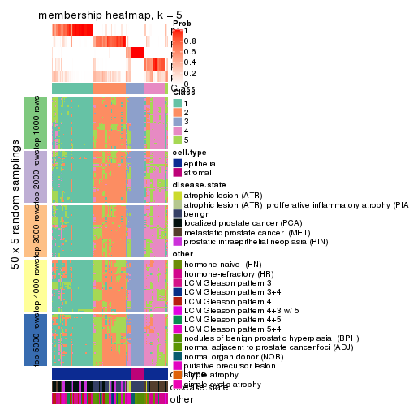
membership_heatmap(res, k = 6)
As soon as we have had the classes for columns, we can look for signatures which are significantly different between classes which can be candidate marks for certain classes. Following are the heatmaps for signatures.
Signature heatmaps where rows are scaled:
get_signatures(res, k = 2)
get_signatures(res, k = 3)
get_signatures(res, k = 4)
get_signatures(res, k = 5)
get_signatures(res, k = 6)
#> Error: The width or height of the raster image is zero, maybe you forget to turn off the
#> previous graphic device or it was corrupted. Run `dev.off()` to close it.

Signature heatmaps where rows are not scaled:
get_signatures(res, k = 2, scale_rows = FALSE)
get_signatures(res, k = 3, scale_rows = FALSE)
get_signatures(res, k = 4, scale_rows = FALSE)
get_signatures(res, k = 5, scale_rows = FALSE)

get_signatures(res, k = 6, scale_rows = FALSE)
#> Error: The width or height of the raster image is zero, maybe you forget to turn off the
#> previous graphic device or it was corrupted. Run `dev.off()` to close it.

Compare the overlap of signatures from different k:
compare_signatures(res)
get_signature() returns a data frame invisibly. TO get the list of signatures, the function
call should be assigned to a variable explicitly. In following code, if plot argument is set
to FALSE, no heatmap is plotted while only the differential analysis is performed.
# code only for demonstration
tb = get_signature(res, k = ..., plot = FALSE)
An example of the output of tb is:
#> which_row fdr mean_1 mean_2 scaled_mean_1 scaled_mean_2 km
#> 1 38 0.042760348 8.373488 9.131774 -0.5533452 0.5164555 1
#> 2 40 0.018707592 7.106213 8.469186 -0.6173731 0.5762149 1
#> 3 55 0.019134737 10.221463 11.207825 -0.6159697 0.5749050 1
#> 4 59 0.006059896 5.921854 7.869574 -0.6899429 0.6439467 1
#> 5 60 0.018055526 8.928898 10.211722 -0.6204761 0.5791110 1
#> 6 98 0.009384629 15.714769 14.887706 0.6635654 -0.6193277 2
...
The columns in tb are:
which_row: row indices corresponding to the input matrix.fdr: FDR for the differential test. mean_x: The mean value in group x.scaled_mean_x: The mean value in group x after rows are scaled.km: Row groups if k-means clustering is applied to rows.UMAP plot which shows how samples are separated.
dimension_reduction(res, k = 2, method = "UMAP")
dimension_reduction(res, k = 3, method = "UMAP")
dimension_reduction(res, k = 4, method = "UMAP")
dimension_reduction(res, k = 5, method = "UMAP")
dimension_reduction(res, k = 6, method = "UMAP")
Following heatmap shows how subgroups are split when increasing k:
collect_classes(res)
Test correlation between subgroups and known annotations. If the known annotation is numeric, one-way ANOVA test is applied, and if the known annotation is discrete, chi-squared contingency table test is applied.
test_to_known_factors(res)
#> n cell.type(p) disease.state(p) other(p) k
#> MAD:NMF 100 4.07e-04 3.72e-08 4.56e-05 2
#> MAD:NMF 99 9.69e-12 2.05e-09 1.22e-07 3
#> MAD:NMF 96 9.37e-14 1.13e-15 1.25e-11 4
#> MAD:NMF 74 1.69e-14 8.70e-21 3.99e-17 5
#> MAD:NMF 68 5.54e-12 3.91e-19 2.74e-17 6
If matrix rows can be associated to genes, consider to use functional_enrichment(res,
...) to perform function enrichment for the signature genes. See this vignette for more detailed explanations.
The object with results only for a single top-value method and a single partition method can be extracted as:
res = res_list["ATC", "hclust"]
# you can also extract it by
# res = res_list["ATC:hclust"]
A summary of res and all the functions that can be applied to it:
res
#> A 'ConsensusPartition' object with k = 2, 3, 4, 5, 6.
#> On a matrix with 13604 rows and 104 columns.
#> Top rows (1000, 2000, 3000, 4000, 5000) are extracted by 'ATC' method.
#> Subgroups are detected by 'hclust' method.
#> Performed in total 1250 partitions by row resampling.
#> Best k for subgroups seems to be 3.
#>
#> Following methods can be applied to this 'ConsensusPartition' object:
#> [1] "cola_report" "collect_classes" "collect_plots"
#> [4] "collect_stats" "colnames" "compare_signatures"
#> [7] "consensus_heatmap" "dimension_reduction" "functional_enrichment"
#> [10] "get_anno_col" "get_anno" "get_classes"
#> [13] "get_consensus" "get_matrix" "get_membership"
#> [16] "get_param" "get_signatures" "get_stats"
#> [19] "is_best_k" "is_stable_k" "membership_heatmap"
#> [22] "ncol" "nrow" "plot_ecdf"
#> [25] "rownames" "select_partition_number" "show"
#> [28] "suggest_best_k" "test_to_known_factors"
collect_plots() function collects all the plots made from res for all k (number of partitions)
into one single page to provide an easy and fast comparison between different k.
collect_plots(res)
The plots are:
k and the heatmap of
predicted classes for each k.k.k.k.All the plots in panels can be made by individual functions and they are plotted later in this section.
select_partition_number() produces several plots showing different
statistics for choosing “optimized” k. There are following statistics:
k;k, the area increased is defined as \(A_k - A_{k-1}\).The detailed explanations of these statistics can be found in the cola vignette.
Generally speaking, lower PAC score, higher mean silhouette score or higher
concordance corresponds to better partition. Rand index and Jaccard index
measure how similar the current partition is compared to partition with k-1.
If they are too similar, we won't accept k is better than k-1.
select_partition_number(res)
The numeric values for all these statistics can be obtained by get_stats().
get_stats(res)
#> k 1-PAC mean_silhouette concordance area_increased Rand Jaccard
#> 2 2 0.501 0.816 0.865 0.4200 0.603 0.603
#> 3 3 0.694 0.821 0.914 0.5347 0.737 0.564
#> 4 4 0.731 0.786 0.908 0.0374 0.994 0.983
#> 5 5 0.702 0.794 0.879 0.0681 0.966 0.899
#> 6 6 0.766 0.675 0.861 0.0492 0.943 0.815
suggest_best_k() suggests the best \(k\) based on these statistics. The rules are as follows:
suggest_best_k(res)
#> [1] 3
Following shows the table of the partitions (You need to click the show/hide
code output link to see it). The membership matrix (columns with name p*)
is inferred by
clue::cl_consensus()
function with the SE method. Basically the value in the membership matrix
represents the probability to belong to a certain group. The finall class
label for an item is determined with the group with highest probability it
belongs to.
In get_classes() function, the entropy is calculated from the membership
matrix and the silhouette score is calculated from the consensus matrix.
cbind(get_classes(res, k = 2), get_membership(res, k = 2))
#> class entropy silhouette p1 p2
#> GSM141334 2 0.3733 0.898 0.072 0.928
#> GSM141335 1 0.9358 0.734 0.648 0.352
#> GSM141336 2 0.0000 0.989 0.000 1.000
#> GSM141337 1 0.3114 0.785 0.944 0.056
#> GSM141184 1 0.9358 0.734 0.648 0.352
#> GSM141185 2 0.3733 0.898 0.072 0.928
#> GSM141186 2 0.0000 0.989 0.000 1.000
#> GSM141243 2 0.0000 0.989 0.000 1.000
#> GSM141244 1 0.9358 0.734 0.648 0.352
#> GSM141246 1 0.9358 0.734 0.648 0.352
#> GSM141247 2 0.0000 0.989 0.000 1.000
#> GSM141248 1 0.9358 0.734 0.648 0.352
#> GSM141249 1 0.0000 0.780 1.000 0.000
#> GSM141258 2 0.3733 0.898 0.072 0.928
#> GSM141259 2 0.0000 0.989 0.000 1.000
#> GSM141260 1 0.9358 0.734 0.648 0.352
#> GSM141261 2 0.0000 0.989 0.000 1.000
#> GSM141262 2 0.0000 0.989 0.000 1.000
#> GSM141263 2 0.0000 0.989 0.000 1.000
#> GSM141338 2 0.0000 0.989 0.000 1.000
#> GSM141339 1 0.9358 0.734 0.648 0.352
#> GSM141340 1 0.0376 0.780 0.996 0.004
#> GSM141265 1 0.9044 0.746 0.680 0.320
#> GSM141267 1 0.9358 0.734 0.648 0.352
#> GSM141330 1 0.9358 0.734 0.648 0.352
#> GSM141266 2 0.0000 0.989 0.000 1.000
#> GSM141264 1 0.9087 0.744 0.676 0.324
#> GSM141341 1 0.3431 0.783 0.936 0.064
#> GSM141342 2 0.0000 0.989 0.000 1.000
#> GSM141343 2 0.0000 0.989 0.000 1.000
#> GSM141356 1 0.9358 0.734 0.648 0.352
#> GSM141357 1 0.9358 0.734 0.648 0.352
#> GSM141358 2 0.0000 0.989 0.000 1.000
#> GSM141359 2 0.0000 0.989 0.000 1.000
#> GSM141360 1 0.9358 0.734 0.648 0.352
#> GSM141361 1 0.9358 0.734 0.648 0.352
#> GSM141362 2 0.0000 0.989 0.000 1.000
#> GSM141363 2 0.0000 0.989 0.000 1.000
#> GSM141364 1 0.9358 0.734 0.648 0.352
#> GSM141365 1 0.9358 0.734 0.648 0.352
#> GSM141366 2 0.0000 0.989 0.000 1.000
#> GSM141367 1 0.0000 0.780 1.000 0.000
#> GSM141368 2 0.0000 0.989 0.000 1.000
#> GSM141369 2 0.0000 0.989 0.000 1.000
#> GSM141370 2 0.0000 0.989 0.000 1.000
#> GSM141371 2 0.0000 0.989 0.000 1.000
#> GSM141372 2 0.0000 0.989 0.000 1.000
#> GSM141373 1 0.0000 0.780 1.000 0.000
#> GSM141374 1 0.0000 0.780 1.000 0.000
#> GSM141375 1 0.3431 0.783 0.936 0.064
#> GSM141376 1 0.0000 0.780 1.000 0.000
#> GSM141377 1 0.0000 0.780 1.000 0.000
#> GSM141378 1 0.0000 0.780 1.000 0.000
#> GSM141380 1 0.0000 0.780 1.000 0.000
#> GSM141387 1 0.0000 0.780 1.000 0.000
#> GSM141395 1 0.3431 0.784 0.936 0.064
#> GSM141397 1 0.8144 0.764 0.748 0.252
#> GSM141398 2 0.0000 0.989 0.000 1.000
#> GSM141401 1 0.9358 0.734 0.648 0.352
#> GSM141399 1 0.9358 0.734 0.648 0.352
#> GSM141379 1 0.0000 0.780 1.000 0.000
#> GSM141381 1 0.0000 0.780 1.000 0.000
#> GSM141383 1 0.0000 0.780 1.000 0.000
#> GSM141384 1 0.0000 0.780 1.000 0.000
#> GSM141385 1 0.9248 0.738 0.660 0.340
#> GSM141388 1 0.0000 0.780 1.000 0.000
#> GSM141389 1 0.0000 0.780 1.000 0.000
#> GSM141391 1 0.0000 0.780 1.000 0.000
#> GSM141394 1 0.9358 0.734 0.648 0.352
#> GSM141396 1 0.0000 0.780 1.000 0.000
#> GSM141403 1 0.9358 0.734 0.648 0.352
#> GSM141404 1 0.9393 0.730 0.644 0.356
#> GSM141386 1 0.9358 0.734 0.648 0.352
#> GSM141382 1 0.0000 0.780 1.000 0.000
#> GSM141390 1 0.0000 0.780 1.000 0.000
#> GSM141393 1 0.0000 0.780 1.000 0.000
#> GSM141400 1 0.0000 0.780 1.000 0.000
#> GSM141402 2 0.0000 0.989 0.000 1.000
#> GSM141392 1 0.0000 0.780 1.000 0.000
#> GSM141405 1 0.2948 0.785 0.948 0.052
#> GSM141406 1 0.3431 0.783 0.936 0.064
#> GSM141407 1 0.0000 0.780 1.000 0.000
#> GSM141408 1 0.0000 0.780 1.000 0.000
#> GSM141409 1 0.9358 0.734 0.648 0.352
#> GSM141410 1 0.0000 0.780 1.000 0.000
#> GSM141411 1 0.0000 0.780 1.000 0.000
#> GSM141412 1 0.0000 0.780 1.000 0.000
#> GSM141413 1 0.9358 0.734 0.648 0.352
#> GSM141414 1 0.9358 0.734 0.648 0.352
#> GSM141415 1 0.0000 0.780 1.000 0.000
#> GSM141416 1 0.9358 0.734 0.648 0.352
#> GSM141417 1 0.3114 0.785 0.944 0.056
#> GSM141420 1 0.7883 0.768 0.764 0.236
#> GSM141421 1 0.7815 0.769 0.768 0.232
#> GSM141422 1 0.9795 0.637 0.584 0.416
#> GSM141423 1 0.7883 0.768 0.764 0.236
#> GSM141424 1 0.9795 0.637 0.584 0.416
#> GSM141427 1 0.7815 0.769 0.768 0.232
#> GSM141428 1 0.6712 0.776 0.824 0.176
#> GSM141418 2 0.0000 0.989 0.000 1.000
#> GSM141419 1 0.9393 0.730 0.644 0.356
#> GSM141425 1 0.9393 0.730 0.644 0.356
#> GSM141426 1 0.9393 0.730 0.644 0.356
#> GSM141429 1 0.9393 0.730 0.644 0.356
cbind(get_classes(res, k = 3), get_membership(res, k = 3))
#> class entropy silhouette p1 p2 p3
#> GSM141334 2 0.6168 0.532 0.000 0.588 0.412
#> GSM141335 3 0.0237 0.901 0.004 0.000 0.996
#> GSM141336 2 0.5706 0.677 0.000 0.680 0.320
#> GSM141337 1 0.4654 0.775 0.792 0.000 0.208
#> GSM141184 3 0.0237 0.901 0.004 0.000 0.996
#> GSM141185 2 0.6168 0.532 0.000 0.588 0.412
#> GSM141186 2 0.0424 0.855 0.000 0.992 0.008
#> GSM141243 2 0.0424 0.855 0.000 0.992 0.008
#> GSM141244 3 0.0237 0.901 0.004 0.000 0.996
#> GSM141246 3 0.0237 0.901 0.004 0.000 0.996
#> GSM141247 2 0.5706 0.677 0.000 0.680 0.320
#> GSM141248 3 0.0237 0.901 0.004 0.000 0.996
#> GSM141249 1 0.0892 0.931 0.980 0.000 0.020
#> GSM141258 2 0.6168 0.532 0.000 0.588 0.412
#> GSM141259 2 0.0424 0.855 0.000 0.992 0.008
#> GSM141260 3 0.0237 0.901 0.004 0.000 0.996
#> GSM141261 2 0.0237 0.854 0.000 0.996 0.004
#> GSM141262 2 0.5835 0.653 0.000 0.660 0.340
#> GSM141263 2 0.0424 0.855 0.000 0.992 0.008
#> GSM141338 2 0.5706 0.677 0.000 0.680 0.320
#> GSM141339 3 0.0237 0.901 0.004 0.000 0.996
#> GSM141340 1 0.0892 0.931 0.980 0.000 0.020
#> GSM141265 3 0.1411 0.886 0.036 0.000 0.964
#> GSM141267 3 0.0237 0.901 0.004 0.000 0.996
#> GSM141330 3 0.0237 0.901 0.004 0.000 0.996
#> GSM141266 2 0.0424 0.855 0.000 0.992 0.008
#> GSM141264 3 0.1647 0.885 0.036 0.004 0.960
#> GSM141341 3 0.6659 0.143 0.460 0.008 0.532
#> GSM141342 2 0.0000 0.853 0.000 1.000 0.000
#> GSM141343 2 0.0237 0.853 0.000 0.996 0.004
#> GSM141356 3 0.0237 0.901 0.004 0.000 0.996
#> GSM141357 3 0.2066 0.867 0.060 0.000 0.940
#> GSM141358 2 0.0237 0.854 0.000 0.996 0.004
#> GSM141359 2 0.0237 0.854 0.000 0.996 0.004
#> GSM141360 3 0.2066 0.867 0.060 0.000 0.940
#> GSM141361 3 0.0237 0.901 0.004 0.000 0.996
#> GSM141362 2 0.0237 0.854 0.000 0.996 0.004
#> GSM141363 2 0.5835 0.653 0.000 0.660 0.340
#> GSM141364 3 0.0237 0.901 0.004 0.000 0.996
#> GSM141365 3 0.0237 0.901 0.004 0.000 0.996
#> GSM141366 2 0.0000 0.853 0.000 1.000 0.000
#> GSM141367 1 0.4605 0.762 0.796 0.000 0.204
#> GSM141368 2 0.0000 0.853 0.000 1.000 0.000
#> GSM141369 2 0.0000 0.853 0.000 1.000 0.000
#> GSM141370 2 0.0000 0.853 0.000 1.000 0.000
#> GSM141371 2 0.0000 0.853 0.000 1.000 0.000
#> GSM141372 2 0.0000 0.853 0.000 1.000 0.000
#> GSM141373 1 0.4654 0.773 0.792 0.000 0.208
#> GSM141374 1 0.0747 0.931 0.984 0.000 0.016
#> GSM141375 3 0.6659 0.143 0.460 0.008 0.532
#> GSM141376 1 0.0000 0.932 1.000 0.000 0.000
#> GSM141377 1 0.4121 0.823 0.832 0.000 0.168
#> GSM141378 1 0.0892 0.931 0.980 0.000 0.020
#> GSM141380 1 0.0000 0.932 1.000 0.000 0.000
#> GSM141387 1 0.0000 0.932 1.000 0.000 0.000
#> GSM141395 1 0.5397 0.663 0.720 0.000 0.280
#> GSM141397 3 0.3771 0.825 0.112 0.012 0.876
#> GSM141398 2 0.5706 0.677 0.000 0.680 0.320
#> GSM141401 3 0.0237 0.901 0.004 0.000 0.996
#> GSM141399 3 0.0237 0.901 0.004 0.000 0.996
#> GSM141379 1 0.0000 0.932 1.000 0.000 0.000
#> GSM141381 1 0.0000 0.932 1.000 0.000 0.000
#> GSM141383 1 0.0000 0.932 1.000 0.000 0.000
#> GSM141384 1 0.0000 0.932 1.000 0.000 0.000
#> GSM141385 3 0.6154 0.323 0.408 0.000 0.592
#> GSM141388 1 0.0000 0.932 1.000 0.000 0.000
#> GSM141389 1 0.0000 0.932 1.000 0.000 0.000
#> GSM141391 1 0.0892 0.931 0.980 0.000 0.020
#> GSM141394 3 0.0237 0.901 0.004 0.000 0.996
#> GSM141396 1 0.0892 0.931 0.980 0.000 0.020
#> GSM141403 3 0.0237 0.901 0.004 0.000 0.996
#> GSM141404 3 0.0661 0.896 0.004 0.008 0.988
#> GSM141386 3 0.0237 0.901 0.004 0.000 0.996
#> GSM141382 1 0.0000 0.932 1.000 0.000 0.000
#> GSM141390 1 0.4121 0.823 0.832 0.000 0.168
#> GSM141393 1 0.0892 0.931 0.980 0.000 0.020
#> GSM141400 1 0.3340 0.865 0.880 0.000 0.120
#> GSM141402 2 0.0000 0.853 0.000 1.000 0.000
#> GSM141392 1 0.4002 0.832 0.840 0.000 0.160
#> GSM141405 3 0.6291 0.127 0.468 0.000 0.532
#> GSM141406 3 0.6659 0.143 0.460 0.008 0.532
#> GSM141407 1 0.0000 0.932 1.000 0.000 0.000
#> GSM141408 1 0.0000 0.932 1.000 0.000 0.000
#> GSM141409 3 0.0237 0.901 0.004 0.000 0.996
#> GSM141410 1 0.0000 0.932 1.000 0.000 0.000
#> GSM141411 1 0.0892 0.931 0.980 0.000 0.020
#> GSM141412 1 0.0000 0.932 1.000 0.000 0.000
#> GSM141413 3 0.0237 0.901 0.004 0.000 0.996
#> GSM141414 3 0.0237 0.901 0.004 0.000 0.996
#> GSM141415 1 0.0000 0.932 1.000 0.000 0.000
#> GSM141416 3 0.0237 0.901 0.004 0.000 0.996
#> GSM141417 1 0.4555 0.785 0.800 0.000 0.200
#> GSM141420 3 0.3644 0.820 0.124 0.004 0.872
#> GSM141421 3 0.3412 0.822 0.124 0.000 0.876
#> GSM141422 3 0.2066 0.845 0.000 0.060 0.940
#> GSM141423 3 0.3644 0.820 0.124 0.004 0.872
#> GSM141424 3 0.2066 0.845 0.000 0.060 0.940
#> GSM141427 3 0.3412 0.822 0.124 0.000 0.876
#> GSM141428 3 0.4291 0.753 0.180 0.000 0.820
#> GSM141418 2 0.5926 0.631 0.000 0.644 0.356
#> GSM141419 3 0.0000 0.899 0.000 0.000 1.000
#> GSM141425 3 0.0000 0.899 0.000 0.000 1.000
#> GSM141426 3 0.0000 0.899 0.000 0.000 1.000
#> GSM141429 3 0.0000 0.899 0.000 0.000 1.000
cbind(get_classes(res, k = 4), get_membership(res, k = 4))
#> class entropy silhouette p1 p2 p3 p4
#> GSM141334 4 0.6079 0.498 0.000 0.408 0.048 0.544
#> GSM141335 2 0.0188 0.908 0.004 0.996 0.000 0.000
#> GSM141336 4 0.5754 0.605 0.000 0.316 0.048 0.636
#> GSM141337 1 0.3688 0.712 0.792 0.208 0.000 0.000
#> GSM141184 2 0.0188 0.908 0.004 0.996 0.000 0.000
#> GSM141185 4 0.6079 0.498 0.000 0.408 0.048 0.544
#> GSM141186 4 0.0524 0.771 0.000 0.008 0.004 0.988
#> GSM141243 4 0.0524 0.771 0.000 0.008 0.004 0.988
#> GSM141244 2 0.0188 0.908 0.004 0.996 0.000 0.000
#> GSM141246 2 0.0188 0.908 0.004 0.996 0.000 0.000
#> GSM141247 4 0.5754 0.605 0.000 0.316 0.048 0.636
#> GSM141248 2 0.0188 0.908 0.004 0.996 0.000 0.000
#> GSM141249 1 0.0707 0.912 0.980 0.020 0.000 0.000
#> GSM141258 4 0.6079 0.498 0.000 0.408 0.048 0.544
#> GSM141259 4 0.0524 0.771 0.000 0.008 0.004 0.988
#> GSM141260 2 0.0188 0.908 0.004 0.996 0.000 0.000
#> GSM141261 4 0.0188 0.771 0.000 0.004 0.000 0.996
#> GSM141262 4 0.5773 0.589 0.000 0.336 0.044 0.620
#> GSM141263 4 0.0524 0.771 0.000 0.008 0.004 0.988
#> GSM141338 4 0.5754 0.605 0.000 0.316 0.048 0.636
#> GSM141339 2 0.0188 0.908 0.004 0.996 0.000 0.000
#> GSM141340 1 0.0707 0.912 0.980 0.020 0.000 0.000
#> GSM141265 2 0.1209 0.891 0.004 0.964 0.032 0.000
#> GSM141267 2 0.0188 0.908 0.004 0.996 0.000 0.000
#> GSM141330 2 0.0188 0.908 0.004 0.996 0.000 0.000
#> GSM141266 4 0.0524 0.771 0.000 0.008 0.004 0.988
#> GSM141264 2 0.1305 0.890 0.004 0.960 0.036 0.000
#> GSM141341 2 0.5573 0.145 0.012 0.508 0.476 0.004
#> GSM141342 4 0.0592 0.763 0.000 0.000 0.016 0.984
#> GSM141343 4 0.0657 0.764 0.000 0.004 0.012 0.984
#> GSM141356 2 0.0188 0.908 0.004 0.996 0.000 0.000
#> GSM141357 2 0.1637 0.860 0.060 0.940 0.000 0.000
#> GSM141358 4 0.1398 0.761 0.000 0.004 0.040 0.956
#> GSM141359 4 0.1398 0.761 0.000 0.004 0.040 0.956
#> GSM141360 2 0.1637 0.860 0.060 0.940 0.000 0.000
#> GSM141361 2 0.0188 0.908 0.004 0.996 0.000 0.000
#> GSM141362 4 0.1398 0.761 0.000 0.004 0.040 0.956
#> GSM141363 4 0.5848 0.587 0.000 0.336 0.048 0.616
#> GSM141364 2 0.0188 0.908 0.004 0.996 0.000 0.000
#> GSM141365 2 0.0188 0.908 0.004 0.996 0.000 0.000
#> GSM141366 4 0.0592 0.763 0.000 0.000 0.016 0.984
#> GSM141367 3 0.1890 0.000 0.056 0.008 0.936 0.000
#> GSM141368 4 0.0592 0.763 0.000 0.000 0.016 0.984
#> GSM141369 4 0.0000 0.769 0.000 0.000 0.000 1.000
#> GSM141370 4 0.0000 0.769 0.000 0.000 0.000 1.000
#> GSM141371 4 0.0000 0.769 0.000 0.000 0.000 1.000
#> GSM141372 4 0.0000 0.769 0.000 0.000 0.000 1.000
#> GSM141373 1 0.3688 0.708 0.792 0.208 0.000 0.000
#> GSM141374 1 0.0592 0.913 0.984 0.016 0.000 0.000
#> GSM141375 2 0.5573 0.145 0.012 0.508 0.476 0.004
#> GSM141376 1 0.0000 0.914 1.000 0.000 0.000 0.000
#> GSM141377 1 0.3266 0.769 0.832 0.168 0.000 0.000
#> GSM141378 1 0.0707 0.912 0.980 0.020 0.000 0.000
#> GSM141380 1 0.0000 0.914 1.000 0.000 0.000 0.000
#> GSM141387 1 0.0000 0.914 1.000 0.000 0.000 0.000
#> GSM141395 1 0.4277 0.583 0.720 0.280 0.000 0.000
#> GSM141397 2 0.2918 0.823 0.000 0.876 0.116 0.008
#> GSM141398 4 0.5754 0.605 0.000 0.316 0.048 0.636
#> GSM141401 2 0.0188 0.908 0.004 0.996 0.000 0.000
#> GSM141399 2 0.0188 0.908 0.004 0.996 0.000 0.000
#> GSM141379 1 0.0000 0.914 1.000 0.000 0.000 0.000
#> GSM141381 1 0.0000 0.914 1.000 0.000 0.000 0.000
#> GSM141383 1 0.0000 0.914 1.000 0.000 0.000 0.000
#> GSM141384 1 0.0000 0.914 1.000 0.000 0.000 0.000
#> GSM141385 2 0.4877 0.267 0.408 0.592 0.000 0.000
#> GSM141388 1 0.0000 0.914 1.000 0.000 0.000 0.000
#> GSM141389 1 0.0000 0.914 1.000 0.000 0.000 0.000
#> GSM141391 1 0.0707 0.912 0.980 0.020 0.000 0.000
#> GSM141394 2 0.0188 0.908 0.004 0.996 0.000 0.000
#> GSM141396 1 0.0707 0.912 0.980 0.020 0.000 0.000
#> GSM141403 2 0.0188 0.908 0.004 0.996 0.000 0.000
#> GSM141404 2 0.0564 0.903 0.004 0.988 0.004 0.004
#> GSM141386 2 0.0188 0.908 0.004 0.996 0.000 0.000
#> GSM141382 1 0.0000 0.914 1.000 0.000 0.000 0.000
#> GSM141390 1 0.3266 0.769 0.832 0.168 0.000 0.000
#> GSM141393 1 0.0707 0.912 0.980 0.020 0.000 0.000
#> GSM141400 1 0.2647 0.822 0.880 0.120 0.000 0.000
#> GSM141402 4 0.0000 0.769 0.000 0.000 0.000 1.000
#> GSM141392 1 0.3172 0.779 0.840 0.160 0.000 0.000
#> GSM141405 2 0.5508 0.142 0.016 0.508 0.476 0.000
#> GSM141406 2 0.5573 0.145 0.012 0.508 0.476 0.004
#> GSM141407 1 0.0000 0.914 1.000 0.000 0.000 0.000
#> GSM141408 1 0.0000 0.914 1.000 0.000 0.000 0.000
#> GSM141409 2 0.0188 0.908 0.004 0.996 0.000 0.000
#> GSM141410 1 0.0000 0.914 1.000 0.000 0.000 0.000
#> GSM141411 1 0.0707 0.912 0.980 0.020 0.000 0.000
#> GSM141412 1 0.0000 0.914 1.000 0.000 0.000 0.000
#> GSM141413 2 0.0188 0.908 0.004 0.996 0.000 0.000
#> GSM141414 2 0.0188 0.908 0.004 0.996 0.000 0.000
#> GSM141415 1 0.0000 0.914 1.000 0.000 0.000 0.000
#> GSM141416 2 0.0188 0.908 0.004 0.996 0.000 0.000
#> GSM141417 1 0.3610 0.723 0.800 0.200 0.000 0.000
#> GSM141420 2 0.2888 0.822 0.004 0.872 0.124 0.000
#> GSM141421 2 0.2831 0.824 0.004 0.876 0.120 0.000
#> GSM141422 2 0.1743 0.854 0.000 0.940 0.004 0.056
#> GSM141423 2 0.2888 0.822 0.004 0.872 0.124 0.000
#> GSM141424 2 0.1743 0.854 0.000 0.940 0.004 0.056
#> GSM141427 2 0.2831 0.824 0.004 0.876 0.120 0.000
#> GSM141428 2 0.3400 0.757 0.000 0.820 0.180 0.000
#> GSM141418 4 0.5839 0.571 0.000 0.352 0.044 0.604
#> GSM141419 2 0.0000 0.905 0.000 1.000 0.000 0.000
#> GSM141425 2 0.0000 0.905 0.000 1.000 0.000 0.000
#> GSM141426 2 0.0000 0.905 0.000 1.000 0.000 0.000
#> GSM141429 2 0.0000 0.905 0.000 1.000 0.000 0.000
cbind(get_classes(res, k = 5), get_membership(res, k = 5))
#> class entropy silhouette p1 p2 p3 p4 p5
#> GSM141334 2 0.4936 0.864 0.000 0.712 0.000 0.172 0.116
#> GSM141335 5 0.0000 0.881 0.000 0.000 0.000 0.000 1.000
#> GSM141336 2 0.3675 0.902 0.000 0.788 0.000 0.188 0.024
#> GSM141337 1 0.3177 0.731 0.792 0.000 0.000 0.000 0.208
#> GSM141184 5 0.0162 0.880 0.000 0.004 0.000 0.000 0.996
#> GSM141185 2 0.4936 0.864 0.000 0.712 0.000 0.172 0.116
#> GSM141186 4 0.0404 0.817 0.000 0.012 0.000 0.988 0.000
#> GSM141243 4 0.0404 0.817 0.000 0.012 0.000 0.988 0.000
#> GSM141244 5 0.0162 0.880 0.000 0.004 0.000 0.000 0.996
#> GSM141246 5 0.0000 0.881 0.000 0.000 0.000 0.000 1.000
#> GSM141247 2 0.3675 0.902 0.000 0.788 0.000 0.188 0.024
#> GSM141248 5 0.0000 0.881 0.000 0.000 0.000 0.000 1.000
#> GSM141249 1 0.0609 0.917 0.980 0.000 0.000 0.000 0.020
#> GSM141258 2 0.4936 0.864 0.000 0.712 0.000 0.172 0.116
#> GSM141259 4 0.0451 0.817 0.000 0.008 0.000 0.988 0.004
#> GSM141260 5 0.0000 0.881 0.000 0.000 0.000 0.000 1.000
#> GSM141261 4 0.1908 0.805 0.000 0.092 0.000 0.908 0.000
#> GSM141262 2 0.4100 0.907 0.000 0.764 0.000 0.192 0.044
#> GSM141263 4 0.0451 0.817 0.000 0.008 0.000 0.988 0.004
#> GSM141338 2 0.3675 0.902 0.000 0.788 0.000 0.188 0.024
#> GSM141339 5 0.0000 0.881 0.000 0.000 0.000 0.000 1.000
#> GSM141340 1 0.0609 0.917 0.980 0.000 0.000 0.000 0.020
#> GSM141265 5 0.1041 0.871 0.000 0.004 0.032 0.000 0.964
#> GSM141267 5 0.0000 0.881 0.000 0.000 0.000 0.000 1.000
#> GSM141330 5 0.0000 0.881 0.000 0.000 0.000 0.000 1.000
#> GSM141266 4 0.0451 0.817 0.000 0.008 0.000 0.988 0.004
#> GSM141264 5 0.1202 0.870 0.000 0.004 0.032 0.004 0.960
#> GSM141341 5 0.4450 0.243 0.000 0.000 0.488 0.004 0.508
#> GSM141342 4 0.3123 0.656 0.000 0.184 0.004 0.812 0.000
#> GSM141343 4 0.1202 0.797 0.000 0.032 0.004 0.960 0.004
#> GSM141356 5 0.0162 0.880 0.000 0.004 0.000 0.000 0.996
#> GSM141357 5 0.1341 0.840 0.056 0.000 0.000 0.000 0.944
#> GSM141358 4 0.4210 0.218 0.000 0.412 0.000 0.588 0.000
#> GSM141359 4 0.4210 0.218 0.000 0.412 0.000 0.588 0.000
#> GSM141360 5 0.1341 0.840 0.056 0.000 0.000 0.000 0.944
#> GSM141361 5 0.0000 0.881 0.000 0.000 0.000 0.000 1.000
#> GSM141362 4 0.4210 0.218 0.000 0.412 0.000 0.588 0.000
#> GSM141363 2 0.4066 0.908 0.000 0.768 0.000 0.188 0.044
#> GSM141364 5 0.0162 0.880 0.000 0.004 0.000 0.000 0.996
#> GSM141365 5 0.0162 0.880 0.000 0.004 0.000 0.000 0.996
#> GSM141366 4 0.3123 0.656 0.000 0.184 0.004 0.812 0.000
#> GSM141367 3 0.0162 0.000 0.000 0.004 0.996 0.000 0.000
#> GSM141368 4 0.3123 0.656 0.000 0.184 0.004 0.812 0.000
#> GSM141369 4 0.1851 0.806 0.000 0.088 0.000 0.912 0.000
#> GSM141370 4 0.2074 0.802 0.000 0.104 0.000 0.896 0.000
#> GSM141371 4 0.2074 0.802 0.000 0.104 0.000 0.896 0.000
#> GSM141372 4 0.2074 0.802 0.000 0.104 0.000 0.896 0.000
#> GSM141373 1 0.3177 0.724 0.792 0.000 0.000 0.000 0.208
#> GSM141374 1 0.0510 0.918 0.984 0.000 0.000 0.000 0.016
#> GSM141375 5 0.4450 0.243 0.000 0.000 0.488 0.004 0.508
#> GSM141376 1 0.0000 0.919 1.000 0.000 0.000 0.000 0.000
#> GSM141377 1 0.2813 0.782 0.832 0.000 0.000 0.000 0.168
#> GSM141378 1 0.0609 0.917 0.980 0.000 0.000 0.000 0.020
#> GSM141380 1 0.0000 0.919 1.000 0.000 0.000 0.000 0.000
#> GSM141387 1 0.0000 0.919 1.000 0.000 0.000 0.000 0.000
#> GSM141395 1 0.3684 0.615 0.720 0.000 0.000 0.000 0.280
#> GSM141397 5 0.2672 0.830 0.000 0.004 0.116 0.008 0.872
#> GSM141398 2 0.3675 0.902 0.000 0.788 0.000 0.188 0.024
#> GSM141401 5 0.0162 0.880 0.000 0.004 0.000 0.000 0.996
#> GSM141399 5 0.0162 0.880 0.000 0.004 0.000 0.000 0.996
#> GSM141379 1 0.0000 0.919 1.000 0.000 0.000 0.000 0.000
#> GSM141381 1 0.0000 0.919 1.000 0.000 0.000 0.000 0.000
#> GSM141383 1 0.0000 0.919 1.000 0.000 0.000 0.000 0.000
#> GSM141384 1 0.0000 0.919 1.000 0.000 0.000 0.000 0.000
#> GSM141385 5 0.4192 0.260 0.404 0.000 0.000 0.000 0.596
#> GSM141388 1 0.0000 0.919 1.000 0.000 0.000 0.000 0.000
#> GSM141389 1 0.0000 0.919 1.000 0.000 0.000 0.000 0.000
#> GSM141391 1 0.0609 0.917 0.980 0.000 0.000 0.000 0.020
#> GSM141394 5 0.0162 0.880 0.000 0.004 0.000 0.000 0.996
#> GSM141396 1 0.0609 0.917 0.980 0.000 0.000 0.000 0.020
#> GSM141403 5 0.0162 0.880 0.000 0.004 0.000 0.000 0.996
#> GSM141404 5 0.0404 0.877 0.000 0.012 0.000 0.000 0.988
#> GSM141386 5 0.0000 0.881 0.000 0.000 0.000 0.000 1.000
#> GSM141382 1 0.0000 0.919 1.000 0.000 0.000 0.000 0.000
#> GSM141390 1 0.2813 0.782 0.832 0.000 0.000 0.000 0.168
#> GSM141393 1 0.0609 0.917 0.980 0.000 0.000 0.000 0.020
#> GSM141400 1 0.2280 0.832 0.880 0.000 0.000 0.000 0.120
#> GSM141402 4 0.1851 0.806 0.000 0.088 0.000 0.912 0.000
#> GSM141392 1 0.2732 0.792 0.840 0.000 0.000 0.000 0.160
#> GSM141405 5 0.4450 0.243 0.004 0.000 0.488 0.000 0.508
#> GSM141406 5 0.4450 0.243 0.000 0.000 0.488 0.004 0.508
#> GSM141407 1 0.0000 0.919 1.000 0.000 0.000 0.000 0.000
#> GSM141408 1 0.0000 0.919 1.000 0.000 0.000 0.000 0.000
#> GSM141409 5 0.0000 0.881 0.000 0.000 0.000 0.000 1.000
#> GSM141410 1 0.0000 0.919 1.000 0.000 0.000 0.000 0.000
#> GSM141411 1 0.0609 0.917 0.980 0.000 0.000 0.000 0.020
#> GSM141412 1 0.0000 0.919 1.000 0.000 0.000 0.000 0.000
#> GSM141413 5 0.0000 0.881 0.000 0.000 0.000 0.000 1.000
#> GSM141414 5 0.0000 0.881 0.000 0.000 0.000 0.000 1.000
#> GSM141415 1 0.0000 0.919 1.000 0.000 0.000 0.000 0.000
#> GSM141416 5 0.0000 0.881 0.000 0.000 0.000 0.000 1.000
#> GSM141417 1 0.3109 0.742 0.800 0.000 0.000 0.000 0.200
#> GSM141420 5 0.3122 0.818 0.000 0.024 0.120 0.004 0.852
#> GSM141421 5 0.2964 0.820 0.000 0.024 0.120 0.000 0.856
#> GSM141422 5 0.3689 0.701 0.000 0.256 0.000 0.004 0.740
#> GSM141423 5 0.3122 0.818 0.000 0.024 0.120 0.004 0.852
#> GSM141424 5 0.3689 0.701 0.000 0.256 0.000 0.004 0.740
#> GSM141427 5 0.2964 0.820 0.000 0.024 0.120 0.000 0.856
#> GSM141428 5 0.3513 0.778 0.000 0.020 0.180 0.000 0.800
#> GSM141418 2 0.4934 0.824 0.000 0.708 0.000 0.188 0.104
#> GSM141419 5 0.3109 0.768 0.000 0.200 0.000 0.000 0.800
#> GSM141425 5 0.3074 0.772 0.000 0.196 0.000 0.000 0.804
#> GSM141426 5 0.3074 0.772 0.000 0.196 0.000 0.000 0.804
#> GSM141429 5 0.3074 0.772 0.000 0.196 0.000 0.000 0.804
cbind(get_classes(res, k = 6), get_membership(res, k = 6))
#> class entropy silhouette p1 p2 p3 p4 p5 p6
#> GSM141334 2 0.1951 0.7225 0.000 0.908 0.016 0.000 0.076 0.000
#> GSM141335 5 0.0000 0.7555 0.000 0.000 0.000 0.000 1.000 0.000
#> GSM141336 2 0.0363 0.7802 0.000 0.988 0.000 0.012 0.000 0.000
#> GSM141337 1 0.3593 0.7331 0.764 0.004 0.024 0.000 0.208 0.000
#> GSM141184 5 0.0146 0.7543 0.000 0.004 0.000 0.000 0.996 0.000
#> GSM141185 2 0.1951 0.7225 0.000 0.908 0.016 0.000 0.076 0.000
#> GSM141186 4 0.1444 0.8823 0.000 0.072 0.000 0.928 0.000 0.000
#> GSM141243 4 0.1444 0.8823 0.000 0.072 0.000 0.928 0.000 0.000
#> GSM141244 5 0.0146 0.7543 0.000 0.004 0.000 0.000 0.996 0.000
#> GSM141246 5 0.0000 0.7555 0.000 0.000 0.000 0.000 1.000 0.000
#> GSM141247 2 0.0363 0.7802 0.000 0.988 0.000 0.012 0.000 0.000
#> GSM141248 5 0.0000 0.7555 0.000 0.000 0.000 0.000 1.000 0.000
#> GSM141249 1 0.1321 0.9056 0.952 0.004 0.024 0.000 0.020 0.000
#> GSM141258 2 0.1951 0.7225 0.000 0.908 0.016 0.000 0.076 0.000
#> GSM141259 4 0.1531 0.8825 0.000 0.068 0.004 0.928 0.000 0.000
#> GSM141260 5 0.0000 0.7555 0.000 0.000 0.000 0.000 1.000 0.000
#> GSM141261 4 0.2704 0.8657 0.000 0.140 0.016 0.844 0.000 0.000
#> GSM141262 2 0.1148 0.7785 0.000 0.960 0.016 0.020 0.004 0.000
#> GSM141263 4 0.1531 0.8825 0.000 0.068 0.004 0.928 0.000 0.000
#> GSM141338 2 0.0363 0.7802 0.000 0.988 0.000 0.012 0.000 0.000
#> GSM141339 5 0.0000 0.7555 0.000 0.000 0.000 0.000 1.000 0.000
#> GSM141340 1 0.1092 0.9076 0.960 0.000 0.020 0.000 0.020 0.000
#> GSM141265 5 0.1151 0.7180 0.000 0.000 0.012 0.000 0.956 0.032
#> GSM141267 5 0.0000 0.7555 0.000 0.000 0.000 0.000 1.000 0.000
#> GSM141330 5 0.0000 0.7555 0.000 0.000 0.000 0.000 1.000 0.000
#> GSM141266 4 0.1531 0.8825 0.000 0.068 0.004 0.928 0.000 0.000
#> GSM141264 5 0.1296 0.7152 0.000 0.000 0.012 0.004 0.952 0.032
#> GSM141341 5 0.4326 -0.1548 0.000 0.000 0.008 0.008 0.500 0.484
#> GSM141342 4 0.3499 0.5613 0.000 0.000 0.320 0.680 0.000 0.000
#> GSM141343 4 0.0692 0.8592 0.000 0.020 0.004 0.976 0.000 0.000
#> GSM141356 5 0.0405 0.7482 0.000 0.004 0.008 0.000 0.988 0.000
#> GSM141357 5 0.1408 0.6874 0.036 0.000 0.020 0.000 0.944 0.000
#> GSM141358 2 0.3782 0.2689 0.000 0.588 0.000 0.412 0.000 0.000
#> GSM141359 2 0.3782 0.2689 0.000 0.588 0.000 0.412 0.000 0.000
#> GSM141360 5 0.1408 0.6874 0.036 0.000 0.020 0.000 0.944 0.000
#> GSM141361 5 0.0000 0.7555 0.000 0.000 0.000 0.000 1.000 0.000
#> GSM141362 2 0.3782 0.2689 0.000 0.588 0.000 0.412 0.000 0.000
#> GSM141363 2 0.0964 0.7783 0.000 0.968 0.016 0.012 0.004 0.000
#> GSM141364 5 0.0405 0.7482 0.000 0.004 0.008 0.000 0.988 0.000
#> GSM141365 5 0.0260 0.7508 0.000 0.000 0.008 0.000 0.992 0.000
#> GSM141366 4 0.2597 0.7279 0.000 0.000 0.176 0.824 0.000 0.000
#> GSM141367 6 0.0000 0.0000 0.000 0.000 0.000 0.000 0.000 1.000
#> GSM141368 4 0.2597 0.7279 0.000 0.000 0.176 0.824 0.000 0.000
#> GSM141369 4 0.2664 0.8665 0.000 0.136 0.016 0.848 0.000 0.000
#> GSM141370 4 0.2821 0.8610 0.000 0.152 0.016 0.832 0.000 0.000
#> GSM141371 4 0.2821 0.8610 0.000 0.152 0.016 0.832 0.000 0.000
#> GSM141372 4 0.2821 0.8610 0.000 0.152 0.016 0.832 0.000 0.000
#> GSM141373 1 0.3514 0.7196 0.768 0.004 0.020 0.000 0.208 0.000
#> GSM141374 1 0.0862 0.9095 0.972 0.004 0.008 0.000 0.016 0.000
#> GSM141375 5 0.4326 -0.1548 0.000 0.000 0.008 0.008 0.500 0.484
#> GSM141376 1 0.0000 0.9120 1.000 0.000 0.000 0.000 0.000 0.000
#> GSM141377 1 0.3274 0.7753 0.804 0.004 0.024 0.000 0.168 0.000
#> GSM141378 1 0.1321 0.9056 0.952 0.004 0.024 0.000 0.020 0.000
#> GSM141380 1 0.0000 0.9120 1.000 0.000 0.000 0.000 0.000 0.000
#> GSM141387 1 0.0000 0.9120 1.000 0.000 0.000 0.000 0.000 0.000
#> GSM141395 1 0.3957 0.6115 0.696 0.004 0.020 0.000 0.280 0.000
#> GSM141397 5 0.2708 0.6084 0.000 0.004 0.008 0.012 0.864 0.112
#> GSM141398 2 0.0363 0.7802 0.000 0.988 0.000 0.012 0.000 0.000
#> GSM141401 5 0.0146 0.7543 0.000 0.004 0.000 0.000 0.996 0.000
#> GSM141399 5 0.0146 0.7543 0.000 0.004 0.000 0.000 0.996 0.000
#> GSM141379 1 0.0000 0.9120 1.000 0.000 0.000 0.000 0.000 0.000
#> GSM141381 1 0.0000 0.9120 1.000 0.000 0.000 0.000 0.000 0.000
#> GSM141383 1 0.0000 0.9120 1.000 0.000 0.000 0.000 0.000 0.000
#> GSM141384 1 0.0000 0.9120 1.000 0.000 0.000 0.000 0.000 0.000
#> GSM141385 5 0.4799 0.1245 0.356 0.012 0.040 0.000 0.592 0.000
#> GSM141388 1 0.0000 0.9120 1.000 0.000 0.000 0.000 0.000 0.000
#> GSM141389 1 0.0000 0.9120 1.000 0.000 0.000 0.000 0.000 0.000
#> GSM141391 1 0.1321 0.9056 0.952 0.004 0.024 0.000 0.020 0.000
#> GSM141394 5 0.0146 0.7543 0.000 0.004 0.000 0.000 0.996 0.000
#> GSM141396 1 0.1321 0.9056 0.952 0.004 0.024 0.000 0.020 0.000
#> GSM141403 5 0.0146 0.7543 0.000 0.004 0.000 0.000 0.996 0.000
#> GSM141404 5 0.0909 0.7289 0.000 0.012 0.020 0.000 0.968 0.000
#> GSM141386 5 0.0000 0.7555 0.000 0.000 0.000 0.000 1.000 0.000
#> GSM141382 1 0.0000 0.9120 1.000 0.000 0.000 0.000 0.000 0.000
#> GSM141390 1 0.3274 0.7753 0.804 0.004 0.024 0.000 0.168 0.000
#> GSM141393 1 0.1321 0.9056 0.952 0.004 0.024 0.000 0.020 0.000
#> GSM141400 1 0.2804 0.8252 0.852 0.004 0.024 0.000 0.120 0.000
#> GSM141402 4 0.2664 0.8665 0.000 0.136 0.016 0.848 0.000 0.000
#> GSM141392 1 0.3203 0.7855 0.812 0.004 0.024 0.000 0.160 0.000
#> GSM141405 5 0.4128 -0.1525 0.004 0.000 0.004 0.000 0.504 0.488
#> GSM141406 5 0.4326 -0.1548 0.000 0.000 0.008 0.008 0.500 0.484
#> GSM141407 1 0.0000 0.9120 1.000 0.000 0.000 0.000 0.000 0.000
#> GSM141408 1 0.0000 0.9120 1.000 0.000 0.000 0.000 0.000 0.000
#> GSM141409 5 0.0000 0.7555 0.000 0.000 0.000 0.000 1.000 0.000
#> GSM141410 1 0.0000 0.9120 1.000 0.000 0.000 0.000 0.000 0.000
#> GSM141411 1 0.1321 0.9056 0.952 0.004 0.024 0.000 0.020 0.000
#> GSM141412 1 0.0000 0.9120 1.000 0.000 0.000 0.000 0.000 0.000
#> GSM141413 5 0.0000 0.7555 0.000 0.000 0.000 0.000 1.000 0.000
#> GSM141414 5 0.0000 0.7555 0.000 0.000 0.000 0.000 1.000 0.000
#> GSM141415 1 0.0000 0.9120 1.000 0.000 0.000 0.000 0.000 0.000
#> GSM141416 5 0.0000 0.7555 0.000 0.000 0.000 0.000 1.000 0.000
#> GSM141417 1 0.3534 0.7441 0.772 0.004 0.024 0.000 0.200 0.000
#> GSM141420 5 0.5575 -0.7193 0.000 0.000 0.420 0.004 0.456 0.120
#> GSM141421 5 0.5447 -0.7169 0.000 0.000 0.420 0.000 0.460 0.120
#> GSM141422 3 0.4893 0.8520 0.000 0.064 0.536 0.000 0.400 0.000
#> GSM141423 5 0.5575 -0.7193 0.000 0.000 0.420 0.004 0.456 0.120
#> GSM141424 3 0.4893 0.8520 0.000 0.064 0.536 0.000 0.400 0.000
#> GSM141427 5 0.5447 -0.7169 0.000 0.000 0.420 0.000 0.460 0.120
#> GSM141428 3 0.5799 0.7364 0.000 0.000 0.428 0.000 0.392 0.180
#> GSM141418 2 0.3916 0.5460 0.000 0.680 0.300 0.020 0.000 0.000
#> GSM141419 5 0.3547 0.0905 0.000 0.004 0.300 0.000 0.696 0.000
#> GSM141425 3 0.3737 0.8970 0.000 0.000 0.608 0.000 0.392 0.000
#> GSM141426 3 0.3737 0.8970 0.000 0.000 0.608 0.000 0.392 0.000
#> GSM141429 3 0.3737 0.8970 0.000 0.000 0.608 0.000 0.392 0.000
Heatmaps for the consensus matrix. It visualizes the probability of two samples to be in a same group.
consensus_heatmap(res, k = 2)
consensus_heatmap(res, k = 3)

consensus_heatmap(res, k = 4)
consensus_heatmap(res, k = 5)
consensus_heatmap(res, k = 6)
Heatmaps for the membership of samples in all partitions to see how consistent they are:
membership_heatmap(res, k = 2)
membership_heatmap(res, k = 3)
membership_heatmap(res, k = 4)
membership_heatmap(res, k = 5)
membership_heatmap(res, k = 6)
As soon as we have had the classes for columns, we can look for signatures which are significantly different between classes which can be candidate marks for certain classes. Following are the heatmaps for signatures.
Signature heatmaps where rows are scaled:
get_signatures(res, k = 2)

get_signatures(res, k = 3)
get_signatures(res, k = 4)
get_signatures(res, k = 5)
get_signatures(res, k = 6)
Signature heatmaps where rows are not scaled:
get_signatures(res, k = 2, scale_rows = FALSE)
get_signatures(res, k = 3, scale_rows = FALSE)
get_signatures(res, k = 4, scale_rows = FALSE)
get_signatures(res, k = 5, scale_rows = FALSE)
get_signatures(res, k = 6, scale_rows = FALSE)
Compare the overlap of signatures from different k:
compare_signatures(res)

get_signature() returns a data frame invisibly. TO get the list of signatures, the function
call should be assigned to a variable explicitly. In following code, if plot argument is set
to FALSE, no heatmap is plotted while only the differential analysis is performed.
# code only for demonstration
tb = get_signature(res, k = ..., plot = FALSE)
An example of the output of tb is:
#> which_row fdr mean_1 mean_2 scaled_mean_1 scaled_mean_2 km
#> 1 38 0.042760348 8.373488 9.131774 -0.5533452 0.5164555 1
#> 2 40 0.018707592 7.106213 8.469186 -0.6173731 0.5762149 1
#> 3 55 0.019134737 10.221463 11.207825 -0.6159697 0.5749050 1
#> 4 59 0.006059896 5.921854 7.869574 -0.6899429 0.6439467 1
#> 5 60 0.018055526 8.928898 10.211722 -0.6204761 0.5791110 1
#> 6 98 0.009384629 15.714769 14.887706 0.6635654 -0.6193277 2
...
The columns in tb are:
which_row: row indices corresponding to the input matrix.fdr: FDR for the differential test. mean_x: The mean value in group x.scaled_mean_x: The mean value in group x after rows are scaled.km: Row groups if k-means clustering is applied to rows.UMAP plot which shows how samples are separated.
dimension_reduction(res, k = 2, method = "UMAP")
dimension_reduction(res, k = 3, method = "UMAP")
dimension_reduction(res, k = 4, method = "UMAP")
dimension_reduction(res, k = 5, method = "UMAP")
dimension_reduction(res, k = 6, method = "UMAP")

Following heatmap shows how subgroups are split when increasing k:
collect_classes(res)
Test correlation between subgroups and known annotations. If the known annotation is numeric, one-way ANOVA test is applied, and if the known annotation is discrete, chi-squared contingency table test is applied.
test_to_known_factors(res)
#> n cell.type(p) disease.state(p) other(p) k
#> ATC:hclust 104 2.31e-01 6.47e-05 3.49e-04 2
#> ATC:hclust 99 3.69e-04 5.82e-08 9.65e-06 3
#> ATC:hclust 95 6.30e-04 2.02e-08 4.93e-06 4
#> ATC:hclust 95 1.59e-03 6.23e-08 3.61e-05 5
#> ATC:hclust 90 6.03e-16 3.72e-08 8.70e-07 6
If matrix rows can be associated to genes, consider to use functional_enrichment(res,
...) to perform function enrichment for the signature genes. See this vignette for more detailed explanations.
The object with results only for a single top-value method and a single partition method can be extracted as:
res = res_list["ATC", "kmeans"]
# you can also extract it by
# res = res_list["ATC:kmeans"]
A summary of res and all the functions that can be applied to it:
res
#> A 'ConsensusPartition' object with k = 2, 3, 4, 5, 6.
#> On a matrix with 13604 rows and 104 columns.
#> Top rows (1000, 2000, 3000, 4000, 5000) are extracted by 'ATC' method.
#> Subgroups are detected by 'kmeans' method.
#> Performed in total 1250 partitions by row resampling.
#> Best k for subgroups seems to be 3.
#>
#> Following methods can be applied to this 'ConsensusPartition' object:
#> [1] "cola_report" "collect_classes" "collect_plots"
#> [4] "collect_stats" "colnames" "compare_signatures"
#> [7] "consensus_heatmap" "dimension_reduction" "functional_enrichment"
#> [10] "get_anno_col" "get_anno" "get_classes"
#> [13] "get_consensus" "get_matrix" "get_membership"
#> [16] "get_param" "get_signatures" "get_stats"
#> [19] "is_best_k" "is_stable_k" "membership_heatmap"
#> [22] "ncol" "nrow" "plot_ecdf"
#> [25] "rownames" "select_partition_number" "show"
#> [28] "suggest_best_k" "test_to_known_factors"
collect_plots() function collects all the plots made from res for all k (number of partitions)
into one single page to provide an easy and fast comparison between different k.
collect_plots(res)
The plots are:
k and the heatmap of
predicted classes for each k.k.k.k.All the plots in panels can be made by individual functions and they are plotted later in this section.
select_partition_number() produces several plots showing different
statistics for choosing “optimized” k. There are following statistics:
k;k, the area increased is defined as \(A_k - A_{k-1}\).The detailed explanations of these statistics can be found in the cola vignette.
Generally speaking, lower PAC score, higher mean silhouette score or higher
concordance corresponds to better partition. Rand index and Jaccard index
measure how similar the current partition is compared to partition with k-1.
If they are too similar, we won't accept k is better than k-1.
select_partition_number(res)
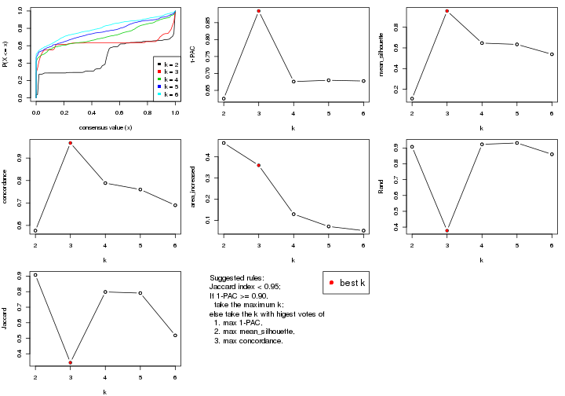
The numeric values for all these statistics can be obtained by get_stats().
get_stats(res)
#> k 1-PAC mean_silhouette concordance area_increased Rand Jaccard
#> 2 2 0.626 0.110 0.577 0.4653 0.908 0.908
#> 3 3 0.884 0.957 0.967 0.3596 0.378 0.343
#> 4 4 0.676 0.647 0.788 0.1291 0.923 0.798
#> 5 5 0.680 0.634 0.760 0.0709 0.932 0.791
#> 6 6 0.678 0.538 0.690 0.0513 0.860 0.518
suggest_best_k() suggests the best \(k\) based on these statistics. The rules are as follows:
suggest_best_k(res)
#> [1] 3
Following shows the table of the partitions (You need to click the show/hide
code output link to see it). The membership matrix (columns with name p*)
is inferred by
clue::cl_consensus()
function with the SE method. Basically the value in the membership matrix
represents the probability to belong to a certain group. The finall class
label for an item is determined with the group with highest probability it
belongs to.
In get_classes() function, the entropy is calculated from the membership
matrix and the silhouette score is calculated from the consensus matrix.
cbind(get_classes(res, k = 2), get_membership(res, k = 2))
#> class entropy silhouette p1 p2
#> GSM141334 1 1.0000 -0.6541 0.504 0.496
#> GSM141335 1 0.0376 0.2299 0.996 0.004
#> GSM141336 1 1.0000 -0.6541 0.504 0.496
#> GSM141337 1 0.9996 0.4830 0.512 0.488
#> GSM141184 1 0.0938 0.2115 0.988 0.012
#> GSM141185 1 1.0000 -0.6541 0.504 0.496
#> GSM141186 1 1.0000 -0.6541 0.504 0.496
#> GSM141243 1 1.0000 -0.6541 0.504 0.496
#> GSM141244 1 0.0376 0.2299 0.996 0.004
#> GSM141246 1 0.1184 0.2400 0.984 0.016
#> GSM141247 1 1.0000 -0.6541 0.504 0.496
#> GSM141248 1 0.9996 0.4830 0.512 0.488
#> GSM141249 1 0.9996 0.4830 0.512 0.488
#> GSM141258 1 1.0000 -0.6541 0.504 0.496
#> GSM141259 1 1.0000 -0.6541 0.504 0.496
#> GSM141260 1 0.9996 0.4830 0.512 0.488
#> GSM141261 1 1.0000 -0.6541 0.504 0.496
#> GSM141262 1 1.0000 -0.6541 0.504 0.496
#> GSM141263 1 1.0000 -0.6541 0.504 0.496
#> GSM141338 1 1.0000 -0.6541 0.504 0.496
#> GSM141339 1 0.3879 0.2849 0.924 0.076
#> GSM141340 1 0.9996 0.4830 0.512 0.488
#> GSM141265 1 0.0672 0.2166 0.992 0.008
#> GSM141267 1 0.9996 0.4830 0.512 0.488
#> GSM141330 1 0.9996 0.4830 0.512 0.488
#> GSM141266 1 1.0000 -0.6541 0.504 0.496
#> GSM141264 1 0.0938 0.2214 0.988 0.012
#> GSM141341 1 0.4431 0.0798 0.908 0.092
#> GSM141342 1 1.0000 -0.6541 0.504 0.496
#> GSM141343 1 1.0000 -0.6541 0.504 0.496
#> GSM141356 1 0.0000 0.2260 1.000 0.000
#> GSM141357 1 0.9996 0.4830 0.512 0.488
#> GSM141358 1 1.0000 -0.6541 0.504 0.496
#> GSM141359 1 1.0000 -0.6541 0.504 0.496
#> GSM141360 1 0.9996 0.4830 0.512 0.488
#> GSM141361 1 0.4298 0.2939 0.912 0.088
#> GSM141362 1 1.0000 -0.6541 0.504 0.496
#> GSM141363 1 1.0000 -0.6541 0.504 0.496
#> GSM141364 1 0.0376 0.2299 0.996 0.004
#> GSM141365 1 0.9954 0.4724 0.540 0.460
#> GSM141366 1 1.0000 -0.6541 0.504 0.496
#> GSM141367 1 0.9996 0.4830 0.512 0.488
#> GSM141368 1 1.0000 -0.6541 0.504 0.496
#> GSM141369 1 1.0000 -0.6541 0.504 0.496
#> GSM141370 1 1.0000 -0.6541 0.504 0.496
#> GSM141371 1 1.0000 -0.6541 0.504 0.496
#> GSM141372 1 1.0000 -0.6541 0.504 0.496
#> GSM141373 1 0.9996 0.4830 0.512 0.488
#> GSM141374 1 0.9996 0.4830 0.512 0.488
#> GSM141375 1 0.4298 0.2885 0.912 0.088
#> GSM141376 1 0.9996 0.4830 0.512 0.488
#> GSM141377 1 0.9996 0.4830 0.512 0.488
#> GSM141378 1 0.9996 0.4830 0.512 0.488
#> GSM141380 1 0.9996 0.4830 0.512 0.488
#> GSM141387 1 0.9996 0.4830 0.512 0.488
#> GSM141395 1 0.9996 0.4830 0.512 0.488
#> GSM141397 1 0.6438 -0.0756 0.836 0.164
#> GSM141398 1 1.0000 -0.6541 0.504 0.496
#> GSM141401 1 0.2603 0.1651 0.956 0.044
#> GSM141399 1 0.0000 0.2260 1.000 0.000
#> GSM141379 1 0.9996 0.4830 0.512 0.488
#> GSM141381 1 0.9996 0.4830 0.512 0.488
#> GSM141383 1 0.9996 0.4830 0.512 0.488
#> GSM141384 1 0.9996 0.4830 0.512 0.488
#> GSM141385 1 0.9996 0.4830 0.512 0.488
#> GSM141388 1 0.9996 0.4830 0.512 0.488
#> GSM141389 1 0.9996 0.4830 0.512 0.488
#> GSM141391 1 0.9996 0.4830 0.512 0.488
#> GSM141394 1 0.9944 -0.6082 0.544 0.456
#> GSM141396 1 0.9996 0.4830 0.512 0.488
#> GSM141403 1 0.0000 0.2260 1.000 0.000
#> GSM141404 1 0.0000 0.2260 1.000 0.000
#> GSM141386 1 0.9996 0.4830 0.512 0.488
#> GSM141382 1 0.9996 0.4830 0.512 0.488
#> GSM141390 1 0.9996 0.4830 0.512 0.488
#> GSM141393 1 0.9996 0.4830 0.512 0.488
#> GSM141400 1 0.9996 0.4830 0.512 0.488
#> GSM141402 1 1.0000 -0.6541 0.504 0.496
#> GSM141392 1 0.9996 0.4830 0.512 0.488
#> GSM141405 1 0.9996 0.4830 0.512 0.488
#> GSM141406 1 0.0672 0.2166 0.992 0.008
#> GSM141407 1 0.9996 0.4830 0.512 0.488
#> GSM141408 1 0.9996 0.4830 0.512 0.488
#> GSM141409 1 0.9996 0.4830 0.512 0.488
#> GSM141410 1 0.9996 0.4830 0.512 0.488
#> GSM141411 1 0.9996 0.4830 0.512 0.488
#> GSM141412 1 0.9996 0.4830 0.512 0.488
#> GSM141413 1 0.9996 0.4830 0.512 0.488
#> GSM141414 1 0.9996 0.4830 0.512 0.488
#> GSM141415 1 0.9996 0.4830 0.512 0.488
#> GSM141416 1 0.9996 0.4830 0.512 0.488
#> GSM141417 1 0.9996 0.4830 0.512 0.488
#> GSM141420 1 0.2603 0.1823 0.956 0.044
#> GSM141421 2 1.0000 -0.5800 0.496 0.504
#> GSM141422 2 0.9996 0.5974 0.488 0.512
#> GSM141423 1 0.2603 0.1823 0.956 0.044
#> GSM141424 2 0.9996 0.5974 0.488 0.512
#> GSM141427 1 0.9996 0.4703 0.512 0.488
#> GSM141428 1 0.8608 0.3906 0.716 0.284
#> GSM141418 2 0.9996 0.5974 0.488 0.512
#> GSM141419 1 0.1414 0.2232 0.980 0.020
#> GSM141425 1 0.6438 0.3273 0.836 0.164
#> GSM141426 1 0.2778 0.1763 0.952 0.048
#> GSM141429 2 0.9996 0.5974 0.488 0.512
cbind(get_classes(res, k = 3), get_membership(res, k = 3))
#> class entropy silhouette p1 p2 p3
#> GSM141334 3 0.1753 0.943 0.000 0.048 0.952
#> GSM141335 3 0.1315 0.960 0.020 0.008 0.972
#> GSM141336 2 0.0424 0.992 0.000 0.992 0.008
#> GSM141337 3 0.3267 0.904 0.116 0.000 0.884
#> GSM141184 3 0.1337 0.959 0.012 0.016 0.972
#> GSM141185 3 0.3551 0.862 0.000 0.132 0.868
#> GSM141186 2 0.0424 0.992 0.000 0.992 0.008
#> GSM141243 2 0.0424 0.992 0.000 0.992 0.008
#> GSM141244 3 0.1315 0.960 0.020 0.008 0.972
#> GSM141246 3 0.0892 0.960 0.020 0.000 0.980
#> GSM141247 2 0.0424 0.992 0.000 0.992 0.008
#> GSM141248 3 0.3192 0.907 0.112 0.000 0.888
#> GSM141249 1 0.0747 0.975 0.984 0.000 0.016
#> GSM141258 3 0.1753 0.943 0.000 0.048 0.952
#> GSM141259 2 0.1170 0.988 0.016 0.976 0.008
#> GSM141260 3 0.1163 0.958 0.028 0.000 0.972
#> GSM141261 2 0.0000 0.992 0.000 1.000 0.000
#> GSM141262 2 0.0424 0.992 0.000 0.992 0.008
#> GSM141263 2 0.0747 0.988 0.016 0.984 0.000
#> GSM141338 2 0.0424 0.992 0.000 0.992 0.008
#> GSM141339 3 0.1163 0.958 0.028 0.000 0.972
#> GSM141340 1 0.0747 0.975 0.984 0.000 0.016
#> GSM141265 3 0.0000 0.959 0.000 0.000 1.000
#> GSM141267 3 0.1411 0.955 0.036 0.000 0.964
#> GSM141330 3 0.1163 0.958 0.028 0.000 0.972
#> GSM141266 2 0.1170 0.988 0.016 0.976 0.008
#> GSM141264 3 0.0000 0.959 0.000 0.000 1.000
#> GSM141341 3 0.1905 0.947 0.016 0.028 0.956
#> GSM141342 2 0.0747 0.988 0.016 0.984 0.000
#> GSM141343 2 0.0747 0.988 0.016 0.984 0.000
#> GSM141356 3 0.0000 0.959 0.000 0.000 1.000
#> GSM141357 3 0.3267 0.904 0.116 0.000 0.884
#> GSM141358 2 0.0424 0.992 0.000 0.992 0.008
#> GSM141359 2 0.0000 0.992 0.000 1.000 0.000
#> GSM141360 3 0.3267 0.904 0.116 0.000 0.884
#> GSM141361 3 0.0592 0.960 0.012 0.000 0.988
#> GSM141362 2 0.0000 0.992 0.000 1.000 0.000
#> GSM141363 2 0.0424 0.992 0.000 0.992 0.008
#> GSM141364 3 0.0892 0.960 0.020 0.000 0.980
#> GSM141365 3 0.0000 0.959 0.000 0.000 1.000
#> GSM141366 2 0.0747 0.988 0.016 0.984 0.000
#> GSM141367 3 0.0424 0.958 0.008 0.000 0.992
#> GSM141368 2 0.0747 0.988 0.016 0.984 0.000
#> GSM141369 2 0.0237 0.992 0.004 0.996 0.000
#> GSM141370 2 0.0000 0.992 0.000 1.000 0.000
#> GSM141371 2 0.0000 0.992 0.000 1.000 0.000
#> GSM141372 2 0.0000 0.992 0.000 1.000 0.000
#> GSM141373 3 0.3267 0.904 0.116 0.000 0.884
#> GSM141374 1 0.0747 0.975 0.984 0.000 0.016
#> GSM141375 3 0.1337 0.959 0.012 0.016 0.972
#> GSM141376 1 0.0747 0.975 0.984 0.000 0.016
#> GSM141377 1 0.4931 0.710 0.768 0.000 0.232
#> GSM141378 1 0.0747 0.975 0.984 0.000 0.016
#> GSM141380 1 0.0747 0.975 0.984 0.000 0.016
#> GSM141387 1 0.0747 0.975 0.984 0.000 0.016
#> GSM141395 3 0.3192 0.907 0.112 0.000 0.888
#> GSM141397 3 0.1905 0.947 0.016 0.028 0.956
#> GSM141398 2 0.0424 0.992 0.000 0.992 0.008
#> GSM141401 3 0.1163 0.955 0.000 0.028 0.972
#> GSM141399 3 0.1315 0.960 0.020 0.008 0.972
#> GSM141379 1 0.0747 0.975 0.984 0.000 0.016
#> GSM141381 1 0.0747 0.975 0.984 0.000 0.016
#> GSM141383 1 0.0747 0.975 0.984 0.000 0.016
#> GSM141384 1 0.0747 0.975 0.984 0.000 0.016
#> GSM141385 1 0.4931 0.711 0.768 0.000 0.232
#> GSM141388 1 0.0747 0.975 0.984 0.000 0.016
#> GSM141389 1 0.0747 0.975 0.984 0.000 0.016
#> GSM141391 1 0.0747 0.975 0.984 0.000 0.016
#> GSM141394 3 0.1529 0.948 0.000 0.040 0.960
#> GSM141396 1 0.0747 0.975 0.984 0.000 0.016
#> GSM141403 3 0.1315 0.960 0.020 0.008 0.972
#> GSM141404 3 0.1781 0.958 0.020 0.020 0.960
#> GSM141386 3 0.3267 0.904 0.116 0.000 0.884
#> GSM141382 1 0.0747 0.975 0.984 0.000 0.016
#> GSM141390 3 0.3267 0.904 0.116 0.000 0.884
#> GSM141393 1 0.0747 0.975 0.984 0.000 0.016
#> GSM141400 1 0.0747 0.975 0.984 0.000 0.016
#> GSM141402 2 0.0000 0.992 0.000 1.000 0.000
#> GSM141392 1 0.3686 0.843 0.860 0.000 0.140
#> GSM141405 3 0.1411 0.955 0.036 0.000 0.964
#> GSM141406 3 0.1337 0.959 0.012 0.016 0.972
#> GSM141407 1 0.0747 0.975 0.984 0.000 0.016
#> GSM141408 1 0.0747 0.975 0.984 0.000 0.016
#> GSM141409 3 0.3267 0.904 0.116 0.000 0.884
#> GSM141410 1 0.0747 0.975 0.984 0.000 0.016
#> GSM141411 1 0.0747 0.975 0.984 0.000 0.016
#> GSM141412 1 0.0747 0.975 0.984 0.000 0.016
#> GSM141413 3 0.3267 0.904 0.116 0.000 0.884
#> GSM141414 3 0.3192 0.907 0.112 0.000 0.888
#> GSM141415 1 0.0747 0.975 0.984 0.000 0.016
#> GSM141416 3 0.1163 0.958 0.028 0.000 0.972
#> GSM141417 1 0.0747 0.975 0.984 0.000 0.016
#> GSM141420 3 0.0000 0.959 0.000 0.000 1.000
#> GSM141421 3 0.0424 0.958 0.008 0.000 0.992
#> GSM141422 3 0.0747 0.951 0.000 0.016 0.984
#> GSM141423 3 0.0000 0.959 0.000 0.000 1.000
#> GSM141424 3 0.0747 0.951 0.000 0.016 0.984
#> GSM141427 3 0.0000 0.959 0.000 0.000 1.000
#> GSM141428 3 0.0000 0.959 0.000 0.000 1.000
#> GSM141418 2 0.0424 0.992 0.000 0.992 0.008
#> GSM141419 3 0.0000 0.959 0.000 0.000 1.000
#> GSM141425 3 0.0000 0.959 0.000 0.000 1.000
#> GSM141426 3 0.0000 0.959 0.000 0.000 1.000
#> GSM141429 3 0.0747 0.951 0.000 0.016 0.984
cbind(get_classes(res, k = 4), get_membership(res, k = 4))
#> class entropy silhouette p1 p2 p3 p4
#> GSM141334 2 0.5453 0.1063 0.000 0.648 0.320 0.032
#> GSM141335 2 0.1302 0.5950 0.000 0.956 0.044 0.000
#> GSM141336 4 0.5292 0.8256 0.000 0.060 0.216 0.724
#> GSM141337 2 0.5018 0.5855 0.088 0.768 0.144 0.000
#> GSM141184 2 0.1557 0.5876 0.000 0.944 0.056 0.000
#> GSM141185 2 0.5619 0.0907 0.000 0.640 0.320 0.040
#> GSM141186 4 0.6404 0.7665 0.000 0.096 0.296 0.608
#> GSM141243 4 0.5292 0.8269 0.000 0.060 0.216 0.724
#> GSM141244 2 0.1118 0.6031 0.000 0.964 0.036 0.000
#> GSM141246 2 0.1211 0.5957 0.000 0.960 0.040 0.000
#> GSM141247 4 0.5292 0.8256 0.000 0.060 0.216 0.724
#> GSM141248 2 0.4938 0.5908 0.080 0.772 0.148 0.000
#> GSM141249 1 0.1022 0.9499 0.968 0.000 0.032 0.000
#> GSM141258 2 0.5453 0.1063 0.000 0.648 0.320 0.032
#> GSM141259 4 0.5073 0.7984 0.000 0.056 0.200 0.744
#> GSM141260 2 0.0592 0.6110 0.000 0.984 0.016 0.000
#> GSM141261 4 0.0000 0.8420 0.000 0.000 0.000 1.000
#> GSM141262 4 0.5292 0.8256 0.000 0.060 0.216 0.724
#> GSM141263 4 0.1902 0.8260 0.000 0.004 0.064 0.932
#> GSM141338 4 0.5292 0.8256 0.000 0.060 0.216 0.724
#> GSM141339 2 0.1743 0.6003 0.004 0.940 0.056 0.000
#> GSM141340 1 0.1389 0.9391 0.952 0.000 0.048 0.000
#> GSM141265 2 0.2216 0.5739 0.000 0.908 0.092 0.000
#> GSM141267 2 0.4139 0.5898 0.024 0.800 0.176 0.000
#> GSM141330 2 0.4225 0.5833 0.024 0.792 0.184 0.000
#> GSM141266 4 0.6295 0.6923 0.000 0.132 0.212 0.656
#> GSM141264 2 0.2760 0.5290 0.000 0.872 0.128 0.000
#> GSM141341 2 0.3764 0.5081 0.000 0.816 0.172 0.012
#> GSM141342 4 0.2714 0.8065 0.000 0.004 0.112 0.884
#> GSM141343 4 0.2714 0.8065 0.000 0.004 0.112 0.884
#> GSM141356 2 0.3123 0.4682 0.000 0.844 0.156 0.000
#> GSM141357 2 0.5018 0.5855 0.088 0.768 0.144 0.000
#> GSM141358 4 0.6229 0.7486 0.000 0.088 0.284 0.628
#> GSM141359 4 0.3123 0.8459 0.000 0.000 0.156 0.844
#> GSM141360 2 0.5018 0.5855 0.088 0.768 0.144 0.000
#> GSM141361 2 0.2814 0.5994 0.000 0.868 0.132 0.000
#> GSM141362 4 0.3123 0.8459 0.000 0.000 0.156 0.844
#> GSM141363 4 0.5327 0.8246 0.000 0.060 0.220 0.720
#> GSM141364 2 0.2408 0.5414 0.000 0.896 0.104 0.000
#> GSM141365 2 0.3907 0.5081 0.000 0.768 0.232 0.000
#> GSM141366 4 0.2197 0.8181 0.000 0.004 0.080 0.916
#> GSM141367 2 0.4776 0.3095 0.000 0.624 0.376 0.000
#> GSM141368 4 0.2197 0.8181 0.000 0.004 0.080 0.916
#> GSM141369 4 0.0336 0.8400 0.000 0.000 0.008 0.992
#> GSM141370 4 0.0000 0.8420 0.000 0.000 0.000 1.000
#> GSM141371 4 0.0000 0.8420 0.000 0.000 0.000 1.000
#> GSM141372 4 0.0000 0.8420 0.000 0.000 0.000 1.000
#> GSM141373 2 0.5018 0.5855 0.088 0.768 0.144 0.000
#> GSM141374 1 0.1022 0.9499 0.968 0.000 0.032 0.000
#> GSM141375 2 0.2530 0.5713 0.000 0.888 0.112 0.000
#> GSM141376 1 0.0000 0.9597 1.000 0.000 0.000 0.000
#> GSM141377 2 0.6492 0.4152 0.220 0.636 0.144 0.000
#> GSM141378 1 0.1022 0.9499 0.968 0.000 0.032 0.000
#> GSM141380 1 0.0000 0.9597 1.000 0.000 0.000 0.000
#> GSM141387 1 0.0000 0.9597 1.000 0.000 0.000 0.000
#> GSM141395 2 0.4890 0.5883 0.080 0.776 0.144 0.000
#> GSM141397 2 0.2589 0.5688 0.000 0.884 0.116 0.000
#> GSM141398 4 0.5292 0.8256 0.000 0.060 0.216 0.724
#> GSM141401 2 0.2216 0.5778 0.000 0.908 0.092 0.000
#> GSM141399 2 0.1940 0.5708 0.000 0.924 0.076 0.000
#> GSM141379 1 0.0000 0.9597 1.000 0.000 0.000 0.000
#> GSM141381 1 0.0000 0.9597 1.000 0.000 0.000 0.000
#> GSM141383 1 0.0000 0.9597 1.000 0.000 0.000 0.000
#> GSM141384 1 0.0000 0.9597 1.000 0.000 0.000 0.000
#> GSM141385 2 0.6552 0.4012 0.228 0.628 0.144 0.000
#> GSM141388 1 0.0000 0.9597 1.000 0.000 0.000 0.000
#> GSM141389 1 0.0000 0.9597 1.000 0.000 0.000 0.000
#> GSM141391 1 0.1022 0.9499 0.968 0.000 0.032 0.000
#> GSM141394 2 0.1940 0.5708 0.000 0.924 0.076 0.000
#> GSM141396 1 0.1022 0.9499 0.968 0.000 0.032 0.000
#> GSM141403 2 0.1474 0.5891 0.000 0.948 0.052 0.000
#> GSM141404 2 0.3494 0.4530 0.000 0.824 0.172 0.004
#> GSM141386 2 0.5018 0.5855 0.088 0.768 0.144 0.000
#> GSM141382 1 0.0000 0.9597 1.000 0.000 0.000 0.000
#> GSM141390 2 0.5018 0.5855 0.088 0.768 0.144 0.000
#> GSM141393 1 0.0000 0.9597 1.000 0.000 0.000 0.000
#> GSM141400 1 0.3157 0.8422 0.852 0.004 0.144 0.000
#> GSM141402 4 0.0469 0.8437 0.000 0.000 0.012 0.988
#> GSM141392 1 0.6811 0.3334 0.588 0.268 0.144 0.000
#> GSM141405 2 0.4538 0.5654 0.024 0.760 0.216 0.000
#> GSM141406 2 0.2530 0.5679 0.000 0.888 0.112 0.000
#> GSM141407 1 0.0000 0.9597 1.000 0.000 0.000 0.000
#> GSM141408 1 0.0000 0.9597 1.000 0.000 0.000 0.000
#> GSM141409 2 0.5066 0.5860 0.088 0.764 0.148 0.000
#> GSM141410 1 0.0000 0.9597 1.000 0.000 0.000 0.000
#> GSM141411 1 0.1022 0.9499 0.968 0.000 0.032 0.000
#> GSM141412 1 0.0000 0.9597 1.000 0.000 0.000 0.000
#> GSM141413 2 0.5003 0.5888 0.084 0.768 0.148 0.000
#> GSM141414 2 0.4938 0.5908 0.080 0.772 0.148 0.000
#> GSM141415 1 0.0000 0.9597 1.000 0.000 0.000 0.000
#> GSM141416 2 0.1743 0.6009 0.004 0.940 0.056 0.000
#> GSM141417 1 0.3157 0.8422 0.852 0.004 0.144 0.000
#> GSM141420 2 0.4941 -0.5202 0.000 0.564 0.436 0.000
#> GSM141421 3 0.4989 0.3927 0.000 0.472 0.528 0.000
#> GSM141422 3 0.4624 0.6877 0.000 0.340 0.660 0.000
#> GSM141423 2 0.4955 -0.5256 0.000 0.556 0.444 0.000
#> GSM141424 3 0.4624 0.6877 0.000 0.340 0.660 0.000
#> GSM141427 3 0.4996 0.4042 0.000 0.484 0.516 0.000
#> GSM141428 2 0.4994 -0.5128 0.000 0.520 0.480 0.000
#> GSM141418 4 0.5249 0.8164 0.000 0.044 0.248 0.708
#> GSM141419 2 0.4977 -0.5201 0.000 0.540 0.460 0.000
#> GSM141425 2 0.5000 -0.6135 0.000 0.504 0.496 0.000
#> GSM141426 3 0.4955 0.6180 0.000 0.444 0.556 0.000
#> GSM141429 3 0.4661 0.6973 0.000 0.348 0.652 0.000
cbind(get_classes(res, k = 5), get_membership(res, k = 5))
#> class entropy silhouette p1 p2 p3 p4 p5
#> GSM141334 5 0.6177 0.0278 0.000 0.412 0.036 0.056 0.496
#> GSM141335 5 0.0162 0.6467 0.000 0.004 0.000 0.000 0.996
#> GSM141336 2 0.0000 0.6815 0.000 1.000 0.000 0.000 0.000
#> GSM141337 5 0.4356 0.6481 0.012 0.000 0.340 0.000 0.648
#> GSM141184 5 0.0324 0.6452 0.000 0.004 0.004 0.000 0.992
#> GSM141185 5 0.6199 -0.0194 0.000 0.440 0.036 0.056 0.468
#> GSM141186 2 0.5458 0.1956 0.000 0.684 0.020 0.208 0.088
#> GSM141243 2 0.0451 0.6778 0.000 0.988 0.004 0.008 0.000
#> GSM141244 5 0.0162 0.6467 0.000 0.004 0.000 0.000 0.996
#> GSM141246 5 0.0609 0.6531 0.000 0.000 0.020 0.000 0.980
#> GSM141247 2 0.0000 0.6815 0.000 1.000 0.000 0.000 0.000
#> GSM141248 5 0.4152 0.6627 0.012 0.000 0.296 0.000 0.692
#> GSM141249 1 0.2127 0.8718 0.892 0.000 0.108 0.000 0.000
#> GSM141258 5 0.6177 0.0278 0.000 0.412 0.036 0.056 0.496
#> GSM141259 4 0.6914 0.5534 0.000 0.324 0.052 0.508 0.116
#> GSM141260 5 0.1043 0.6607 0.000 0.000 0.040 0.000 0.960
#> GSM141261 2 0.4734 0.0929 0.000 0.604 0.024 0.372 0.000
#> GSM141262 2 0.0000 0.6815 0.000 1.000 0.000 0.000 0.000
#> GSM141263 4 0.4517 0.6628 0.000 0.388 0.012 0.600 0.000
#> GSM141338 2 0.0000 0.6815 0.000 1.000 0.000 0.000 0.000
#> GSM141339 5 0.1369 0.6550 0.000 0.008 0.028 0.008 0.956
#> GSM141340 1 0.3700 0.7601 0.752 0.000 0.240 0.008 0.000
#> GSM141265 5 0.3019 0.5945 0.000 0.000 0.048 0.088 0.864
#> GSM141267 5 0.3857 0.6604 0.000 0.000 0.312 0.000 0.688
#> GSM141330 5 0.3895 0.6590 0.000 0.000 0.320 0.000 0.680
#> GSM141266 4 0.7192 0.4717 0.000 0.244 0.052 0.512 0.192
#> GSM141264 5 0.4712 0.4930 0.000 0.000 0.100 0.168 0.732
#> GSM141341 5 0.5951 0.1794 0.000 0.000 0.116 0.364 0.520
#> GSM141342 4 0.4360 0.7389 0.000 0.300 0.020 0.680 0.000
#> GSM141343 4 0.4269 0.7395 0.000 0.300 0.016 0.684 0.000
#> GSM141356 5 0.3134 0.5726 0.000 0.024 0.044 0.056 0.876
#> GSM141357 5 0.4491 0.6492 0.012 0.000 0.336 0.004 0.648
#> GSM141358 2 0.3822 0.4388 0.000 0.816 0.012 0.040 0.132
#> GSM141359 2 0.1579 0.6555 0.000 0.944 0.024 0.032 0.000
#> GSM141360 5 0.4491 0.6492 0.012 0.000 0.336 0.004 0.648
#> GSM141361 5 0.3301 0.6545 0.000 0.000 0.080 0.072 0.848
#> GSM141362 2 0.1493 0.6585 0.000 0.948 0.024 0.028 0.000
#> GSM141363 2 0.0162 0.6791 0.000 0.996 0.000 0.004 0.000
#> GSM141364 5 0.2576 0.5989 0.000 0.008 0.036 0.056 0.900
#> GSM141365 5 0.4901 0.5661 0.000 0.000 0.168 0.116 0.716
#> GSM141366 4 0.4430 0.7079 0.000 0.360 0.012 0.628 0.000
#> GSM141367 5 0.6748 0.1324 0.000 0.000 0.284 0.308 0.408
#> GSM141368 4 0.4430 0.7079 0.000 0.360 0.012 0.628 0.000
#> GSM141369 2 0.4856 0.0189 0.000 0.584 0.028 0.388 0.000
#> GSM141370 2 0.4824 0.0697 0.000 0.596 0.028 0.376 0.000
#> GSM141371 2 0.4824 0.0697 0.000 0.596 0.028 0.376 0.000
#> GSM141372 2 0.4824 0.0697 0.000 0.596 0.028 0.376 0.000
#> GSM141373 5 0.4356 0.6481 0.012 0.000 0.340 0.000 0.648
#> GSM141374 1 0.2127 0.8718 0.892 0.000 0.108 0.000 0.000
#> GSM141375 5 0.5004 0.4768 0.000 0.000 0.092 0.216 0.692
#> GSM141376 1 0.0000 0.9007 1.000 0.000 0.000 0.000 0.000
#> GSM141377 5 0.4987 0.6249 0.044 0.000 0.340 0.000 0.616
#> GSM141378 1 0.2127 0.8718 0.892 0.000 0.108 0.000 0.000
#> GSM141380 1 0.0000 0.9007 1.000 0.000 0.000 0.000 0.000
#> GSM141387 1 0.0000 0.9007 1.000 0.000 0.000 0.000 0.000
#> GSM141395 5 0.4252 0.6494 0.008 0.000 0.340 0.000 0.652
#> GSM141397 5 0.4430 0.5172 0.000 0.000 0.076 0.172 0.752
#> GSM141398 2 0.0000 0.6815 0.000 1.000 0.000 0.000 0.000
#> GSM141401 5 0.2932 0.5825 0.000 0.000 0.032 0.104 0.864
#> GSM141399 5 0.1179 0.6358 0.000 0.004 0.016 0.016 0.964
#> GSM141379 1 0.0290 0.9004 0.992 0.000 0.000 0.008 0.000
#> GSM141381 1 0.0290 0.9004 0.992 0.000 0.000 0.008 0.000
#> GSM141383 1 0.0162 0.9002 0.996 0.000 0.000 0.004 0.000
#> GSM141384 1 0.0162 0.9002 0.996 0.000 0.000 0.004 0.000
#> GSM141385 5 0.5302 0.6178 0.048 0.000 0.336 0.008 0.608
#> GSM141388 1 0.1331 0.8910 0.952 0.000 0.040 0.008 0.000
#> GSM141389 1 0.0290 0.9004 0.992 0.000 0.000 0.008 0.000
#> GSM141391 1 0.2127 0.8718 0.892 0.000 0.108 0.000 0.000
#> GSM141394 5 0.1012 0.6310 0.000 0.000 0.020 0.012 0.968
#> GSM141396 1 0.2127 0.8718 0.892 0.000 0.108 0.000 0.000
#> GSM141403 5 0.0162 0.6447 0.000 0.000 0.004 0.000 0.996
#> GSM141404 5 0.3448 0.5659 0.000 0.056 0.032 0.052 0.860
#> GSM141386 5 0.4356 0.6481 0.012 0.000 0.340 0.000 0.648
#> GSM141382 1 0.0000 0.9007 1.000 0.000 0.000 0.000 0.000
#> GSM141390 5 0.4356 0.6481 0.012 0.000 0.340 0.000 0.648
#> GSM141393 1 0.0794 0.8965 0.972 0.000 0.028 0.000 0.000
#> GSM141400 1 0.3932 0.6609 0.672 0.000 0.328 0.000 0.000
#> GSM141402 2 0.4718 0.1526 0.000 0.628 0.028 0.344 0.000
#> GSM141392 1 0.6798 -0.1069 0.368 0.000 0.340 0.000 0.292
#> GSM141405 5 0.5930 0.5307 0.000 0.000 0.208 0.196 0.596
#> GSM141406 5 0.4871 0.4779 0.000 0.000 0.084 0.212 0.704
#> GSM141407 1 0.0290 0.9004 0.992 0.000 0.000 0.008 0.000
#> GSM141408 1 0.0000 0.9007 1.000 0.000 0.000 0.000 0.000
#> GSM141409 5 0.4356 0.6481 0.012 0.000 0.340 0.000 0.648
#> GSM141410 1 0.0290 0.9004 0.992 0.000 0.000 0.008 0.000
#> GSM141411 1 0.2074 0.8732 0.896 0.000 0.104 0.000 0.000
#> GSM141412 1 0.0290 0.9004 0.992 0.000 0.000 0.008 0.000
#> GSM141413 5 0.4323 0.6503 0.012 0.000 0.332 0.000 0.656
#> GSM141414 5 0.4152 0.6627 0.012 0.000 0.296 0.000 0.692
#> GSM141415 1 0.0290 0.9004 0.992 0.000 0.000 0.008 0.000
#> GSM141416 5 0.2162 0.6590 0.000 0.008 0.064 0.012 0.916
#> GSM141417 1 0.4574 0.6442 0.652 0.000 0.328 0.008 0.012
#> GSM141420 3 0.6181 0.8200 0.000 0.000 0.552 0.196 0.252
#> GSM141421 3 0.5702 0.7602 0.000 0.000 0.628 0.192 0.180
#> GSM141422 3 0.7218 0.7766 0.000 0.064 0.508 0.152 0.276
#> GSM141423 3 0.6246 0.8261 0.000 0.000 0.536 0.192 0.272
#> GSM141424 3 0.7218 0.7766 0.000 0.064 0.508 0.152 0.276
#> GSM141427 3 0.5876 0.7831 0.000 0.000 0.604 0.192 0.204
#> GSM141428 3 0.6003 0.8070 0.000 0.000 0.584 0.192 0.224
#> GSM141418 2 0.0404 0.6721 0.000 0.988 0.012 0.000 0.000
#> GSM141419 3 0.6269 0.6813 0.000 0.004 0.452 0.128 0.416
#> GSM141425 3 0.6171 0.8405 0.000 0.000 0.556 0.204 0.240
#> GSM141426 3 0.6245 0.8314 0.000 0.004 0.552 0.168 0.276
#> GSM141429 3 0.6676 0.8177 0.000 0.028 0.548 0.160 0.264
cbind(get_classes(res, k = 6), get_membership(res, k = 6))
#> class entropy silhouette p1 p2 p3 p4 p5 p6
#> GSM141334 2 0.6918 0.20382 0.000 0.472 0.092 0.032 0.072 0.332
#> GSM141335 6 0.4184 0.16329 0.000 0.000 0.012 0.000 0.484 0.504
#> GSM141336 2 0.0146 0.61057 0.000 0.996 0.004 0.000 0.000 0.000
#> GSM141337 5 0.0000 0.70888 0.000 0.000 0.000 0.000 1.000 0.000
#> GSM141184 6 0.4184 0.16329 0.000 0.000 0.012 0.000 0.484 0.504
#> GSM141185 2 0.6867 0.21860 0.000 0.480 0.092 0.032 0.068 0.328
#> GSM141186 2 0.5893 0.11290 0.000 0.424 0.012 0.140 0.000 0.424
#> GSM141243 2 0.0891 0.59435 0.000 0.968 0.000 0.024 0.000 0.008
#> GSM141244 6 0.4185 0.14570 0.000 0.000 0.012 0.000 0.492 0.496
#> GSM141246 5 0.4165 -0.08652 0.000 0.000 0.012 0.000 0.536 0.452
#> GSM141247 2 0.0146 0.61057 0.000 0.996 0.004 0.000 0.000 0.000
#> GSM141248 5 0.2219 0.64100 0.000 0.000 0.000 0.000 0.864 0.136
#> GSM141249 1 0.2668 0.83109 0.828 0.000 0.000 0.004 0.168 0.000
#> GSM141258 2 0.6926 0.19558 0.000 0.468 0.092 0.032 0.072 0.336
#> GSM141259 6 0.6065 -0.15876 0.000 0.164 0.016 0.356 0.000 0.464
#> GSM141260 5 0.4147 -0.05097 0.000 0.000 0.012 0.000 0.552 0.436
#> GSM141261 2 0.4653 -0.65587 0.000 0.492 0.012 0.476 0.000 0.020
#> GSM141262 2 0.0000 0.61213 0.000 1.000 0.000 0.000 0.000 0.000
#> GSM141263 4 0.3979 0.73136 0.000 0.256 0.004 0.712 0.000 0.028
#> GSM141338 2 0.0000 0.61213 0.000 1.000 0.000 0.000 0.000 0.000
#> GSM141339 5 0.4238 -0.07188 0.000 0.000 0.016 0.000 0.540 0.444
#> GSM141340 1 0.4262 0.58220 0.616 0.000 0.004 0.012 0.364 0.004
#> GSM141265 6 0.5422 0.46541 0.000 0.000 0.124 0.024 0.220 0.632
#> GSM141267 5 0.1531 0.68815 0.000 0.000 0.004 0.000 0.928 0.068
#> GSM141330 5 0.2106 0.67640 0.000 0.000 0.032 0.000 0.904 0.064
#> GSM141266 6 0.5636 0.05996 0.000 0.100 0.020 0.344 0.000 0.536
#> GSM141264 6 0.6141 0.39818 0.000 0.000 0.184 0.048 0.200 0.568
#> GSM141341 6 0.6092 0.26141 0.000 0.000 0.152 0.172 0.076 0.600
#> GSM141342 4 0.4488 0.68022 0.000 0.168 0.024 0.736 0.000 0.072
#> GSM141343 4 0.4335 0.69507 0.000 0.180 0.012 0.736 0.000 0.072
#> GSM141356 6 0.6955 0.20486 0.000 0.020 0.168 0.044 0.344 0.424
#> GSM141357 5 0.1049 0.70753 0.000 0.000 0.000 0.008 0.960 0.032
#> GSM141358 2 0.3920 0.50418 0.000 0.788 0.036 0.036 0.000 0.140
#> GSM141359 2 0.1850 0.55082 0.000 0.924 0.008 0.052 0.000 0.016
#> GSM141360 5 0.1049 0.70753 0.000 0.000 0.000 0.008 0.960 0.032
#> GSM141361 5 0.5650 0.05114 0.000 0.000 0.108 0.024 0.568 0.300
#> GSM141362 2 0.1850 0.55082 0.000 0.924 0.008 0.052 0.000 0.016
#> GSM141363 2 0.0000 0.61213 0.000 1.000 0.000 0.000 0.000 0.000
#> GSM141364 6 0.5821 0.13485 0.000 0.000 0.100 0.024 0.436 0.440
#> GSM141365 5 0.6335 -0.00497 0.000 0.000 0.252 0.032 0.500 0.216
#> GSM141366 4 0.4278 0.73573 0.000 0.232 0.020 0.716 0.000 0.032
#> GSM141367 6 0.6852 0.08131 0.000 0.000 0.244 0.132 0.132 0.492
#> GSM141368 4 0.4278 0.73573 0.000 0.232 0.020 0.716 0.000 0.032
#> GSM141369 4 0.4638 0.64664 0.000 0.448 0.012 0.520 0.000 0.020
#> GSM141370 4 0.4579 0.61904 0.000 0.480 0.012 0.492 0.000 0.016
#> GSM141371 4 0.4579 0.61904 0.000 0.480 0.012 0.492 0.000 0.016
#> GSM141372 4 0.4579 0.61904 0.000 0.480 0.012 0.492 0.000 0.016
#> GSM141373 5 0.0000 0.70888 0.000 0.000 0.000 0.000 1.000 0.000
#> GSM141374 1 0.2632 0.83309 0.832 0.000 0.000 0.004 0.164 0.000
#> GSM141375 6 0.6125 0.39891 0.000 0.000 0.152 0.084 0.164 0.600
#> GSM141376 1 0.1644 0.87721 0.932 0.000 0.012 0.052 0.000 0.004
#> GSM141377 5 0.0603 0.69679 0.016 0.000 0.000 0.004 0.980 0.000
#> GSM141378 1 0.2668 0.83109 0.828 0.000 0.000 0.004 0.168 0.000
#> GSM141380 1 0.1644 0.87721 0.932 0.000 0.012 0.052 0.000 0.004
#> GSM141387 1 0.1644 0.87721 0.932 0.000 0.012 0.052 0.000 0.004
#> GSM141395 5 0.0146 0.70990 0.000 0.000 0.000 0.000 0.996 0.004
#> GSM141397 6 0.5686 0.43449 0.000 0.000 0.116 0.068 0.172 0.644
#> GSM141398 2 0.0000 0.61213 0.000 1.000 0.000 0.000 0.000 0.000
#> GSM141401 6 0.4575 0.45665 0.000 0.000 0.016 0.060 0.224 0.700
#> GSM141399 6 0.4649 0.17849 0.000 0.000 0.040 0.000 0.468 0.492
#> GSM141379 1 0.0551 0.88188 0.984 0.000 0.004 0.008 0.000 0.004
#> GSM141381 1 0.0653 0.88162 0.980 0.000 0.004 0.012 0.000 0.004
#> GSM141383 1 0.0951 0.88303 0.968 0.000 0.004 0.020 0.000 0.008
#> GSM141384 1 0.1769 0.87488 0.924 0.000 0.012 0.060 0.000 0.004
#> GSM141385 5 0.1950 0.66084 0.032 0.000 0.000 0.028 0.924 0.016
#> GSM141388 1 0.1554 0.87514 0.940 0.000 0.004 0.008 0.044 0.004
#> GSM141389 1 0.0551 0.88177 0.984 0.000 0.004 0.008 0.000 0.004
#> GSM141391 1 0.2668 0.83109 0.828 0.000 0.000 0.004 0.168 0.000
#> GSM141394 6 0.4526 0.19635 0.000 0.000 0.032 0.000 0.456 0.512
#> GSM141396 1 0.2668 0.83109 0.828 0.000 0.000 0.004 0.168 0.000
#> GSM141403 6 0.4410 0.17268 0.000 0.000 0.012 0.008 0.472 0.508
#> GSM141404 6 0.6567 0.17576 0.000 0.040 0.100 0.024 0.396 0.440
#> GSM141386 5 0.0146 0.70978 0.000 0.000 0.000 0.000 0.996 0.004
#> GSM141382 1 0.1707 0.87639 0.928 0.000 0.012 0.056 0.000 0.004
#> GSM141390 5 0.0000 0.70888 0.000 0.000 0.000 0.000 1.000 0.000
#> GSM141393 1 0.1700 0.86727 0.916 0.000 0.000 0.004 0.080 0.000
#> GSM141400 1 0.3966 0.43666 0.552 0.000 0.000 0.004 0.444 0.000
#> GSM141402 2 0.4606 -0.54374 0.000 0.548 0.012 0.420 0.000 0.020
#> GSM141392 5 0.2631 0.53111 0.152 0.000 0.008 0.000 0.840 0.000
#> GSM141405 6 0.6650 0.30521 0.000 0.000 0.124 0.084 0.336 0.456
#> GSM141406 6 0.6021 0.40077 0.000 0.000 0.152 0.080 0.156 0.612
#> GSM141407 1 0.1672 0.87692 0.932 0.000 0.016 0.048 0.000 0.004
#> GSM141408 1 0.1644 0.87721 0.932 0.000 0.012 0.052 0.000 0.004
#> GSM141409 5 0.1204 0.69914 0.000 0.000 0.000 0.000 0.944 0.056
#> GSM141410 1 0.1672 0.87692 0.932 0.000 0.016 0.048 0.000 0.004
#> GSM141411 1 0.2668 0.83109 0.828 0.000 0.000 0.004 0.168 0.000
#> GSM141412 1 0.0436 0.88193 0.988 0.000 0.004 0.004 0.000 0.004
#> GSM141413 5 0.1663 0.68141 0.000 0.000 0.000 0.000 0.912 0.088
#> GSM141414 5 0.2219 0.64100 0.000 0.000 0.000 0.000 0.864 0.136
#> GSM141415 1 0.1149 0.88153 0.960 0.000 0.008 0.024 0.000 0.008
#> GSM141416 5 0.4180 0.20630 0.000 0.000 0.024 0.000 0.628 0.348
#> GSM141417 5 0.3976 0.07720 0.380 0.000 0.000 0.004 0.612 0.004
#> GSM141420 3 0.3812 0.75538 0.000 0.000 0.772 0.004 0.056 0.168
#> GSM141421 3 0.4006 0.71092 0.000 0.000 0.772 0.008 0.136 0.084
#> GSM141422 3 0.4817 0.73784 0.000 0.032 0.708 0.040 0.012 0.208
#> GSM141423 3 0.3718 0.76131 0.000 0.000 0.780 0.004 0.052 0.164
#> GSM141424 3 0.4817 0.73784 0.000 0.032 0.708 0.040 0.012 0.208
#> GSM141427 3 0.4041 0.72825 0.000 0.000 0.772 0.008 0.112 0.108
#> GSM141428 3 0.3927 0.74418 0.000 0.000 0.780 0.008 0.084 0.128
#> GSM141418 2 0.0964 0.60152 0.000 0.968 0.016 0.012 0.000 0.004
#> GSM141419 3 0.4988 0.70239 0.000 0.004 0.676 0.044 0.040 0.236
#> GSM141425 3 0.2883 0.79032 0.000 0.000 0.864 0.016 0.032 0.088
#> GSM141426 3 0.3727 0.78073 0.000 0.004 0.792 0.024 0.020 0.160
#> GSM141429 3 0.3889 0.77423 0.000 0.008 0.776 0.024 0.016 0.176
Heatmaps for the consensus matrix. It visualizes the probability of two samples to be in a same group.
consensus_heatmap(res, k = 2)
consensus_heatmap(res, k = 3)
consensus_heatmap(res, k = 4)
consensus_heatmap(res, k = 5)
consensus_heatmap(res, k = 6)
Heatmaps for the membership of samples in all partitions to see how consistent they are:
membership_heatmap(res, k = 2)
membership_heatmap(res, k = 3)
membership_heatmap(res, k = 4)
membership_heatmap(res, k = 5)
membership_heatmap(res, k = 6)
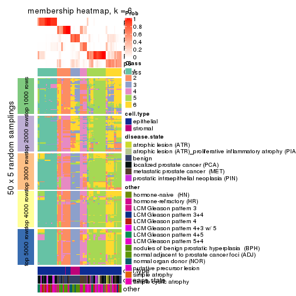
As soon as we have had the classes for columns, we can look for signatures which are significantly different between classes which can be candidate marks for certain classes. Following are the heatmaps for signatures.
Signature heatmaps where rows are scaled:
get_signatures(res, k = 2)

get_signatures(res, k = 3)
get_signatures(res, k = 4)
get_signatures(res, k = 5)
get_signatures(res, k = 6)
Signature heatmaps where rows are not scaled:
get_signatures(res, k = 2, scale_rows = FALSE)

get_signatures(res, k = 3, scale_rows = FALSE)
get_signatures(res, k = 4, scale_rows = FALSE)
get_signatures(res, k = 5, scale_rows = FALSE)
get_signatures(res, k = 6, scale_rows = FALSE)
Compare the overlap of signatures from different k:
compare_signatures(res)
get_signature() returns a data frame invisibly. TO get the list of signatures, the function
call should be assigned to a variable explicitly. In following code, if plot argument is set
to FALSE, no heatmap is plotted while only the differential analysis is performed.
# code only for demonstration
tb = get_signature(res, k = ..., plot = FALSE)
An example of the output of tb is:
#> which_row fdr mean_1 mean_2 scaled_mean_1 scaled_mean_2 km
#> 1 38 0.042760348 8.373488 9.131774 -0.5533452 0.5164555 1
#> 2 40 0.018707592 7.106213 8.469186 -0.6173731 0.5762149 1
#> 3 55 0.019134737 10.221463 11.207825 -0.6159697 0.5749050 1
#> 4 59 0.006059896 5.921854 7.869574 -0.6899429 0.6439467 1
#> 5 60 0.018055526 8.928898 10.211722 -0.6204761 0.5791110 1
#> 6 98 0.009384629 15.714769 14.887706 0.6635654 -0.6193277 2
...
The columns in tb are:
which_row: row indices corresponding to the input matrix.fdr: FDR for the differential test. mean_x: The mean value in group x.scaled_mean_x: The mean value in group x after rows are scaled.km: Row groups if k-means clustering is applied to rows.UMAP plot which shows how samples are separated.
dimension_reduction(res, k = 2, method = "UMAP")
dimension_reduction(res, k = 3, method = "UMAP")
dimension_reduction(res, k = 4, method = "UMAP")
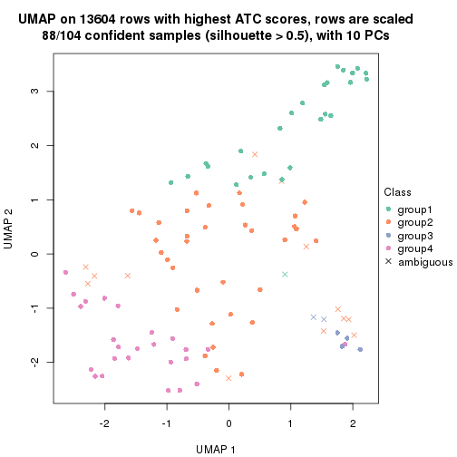
dimension_reduction(res, k = 5, method = "UMAP")
dimension_reduction(res, k = 6, method = "UMAP")
Following heatmap shows how subgroups are split when increasing k:
collect_classes(res)
Test correlation between subgroups and known annotations. If the known annotation is numeric, one-way ANOVA test is applied, and if the known annotation is discrete, chi-squared contingency table test is applied.
test_to_known_factors(res)
#> n cell.type(p) disease.state(p) other(p) k
#> ATC:kmeans 4 NA NA NA 2
#> ATC:kmeans 104 6.50e-03 6.91e-08 1.40e-05 3
#> ATC:kmeans 88 4.09e-15 1.56e-06 4.56e-06 4
#> ATC:kmeans 86 3.61e-16 4.84e-08 2.02e-08 5
#> ATC:kmeans 70 5.07e-13 1.44e-11 6.31e-09 6
If matrix rows can be associated to genes, consider to use functional_enrichment(res,
...) to perform function enrichment for the signature genes. See this vignette for more detailed explanations.
The object with results only for a single top-value method and a single partition method can be extracted as:
res = res_list["ATC", "skmeans"]
# you can also extract it by
# res = res_list["ATC:skmeans"]
A summary of res and all the functions that can be applied to it:
res
#> A 'ConsensusPartition' object with k = 2, 3, 4, 5, 6.
#> On a matrix with 13604 rows and 104 columns.
#> Top rows (1000, 2000, 3000, 4000, 5000) are extracted by 'ATC' method.
#> Subgroups are detected by 'skmeans' method.
#> Performed in total 1250 partitions by row resampling.
#> Best k for subgroups seems to be 3.
#>
#> Following methods can be applied to this 'ConsensusPartition' object:
#> [1] "cola_report" "collect_classes" "collect_plots"
#> [4] "collect_stats" "colnames" "compare_signatures"
#> [7] "consensus_heatmap" "dimension_reduction" "functional_enrichment"
#> [10] "get_anno_col" "get_anno" "get_classes"
#> [13] "get_consensus" "get_matrix" "get_membership"
#> [16] "get_param" "get_signatures" "get_stats"
#> [19] "is_best_k" "is_stable_k" "membership_heatmap"
#> [22] "ncol" "nrow" "plot_ecdf"
#> [25] "rownames" "select_partition_number" "show"
#> [28] "suggest_best_k" "test_to_known_factors"
collect_plots() function collects all the plots made from res for all k (number of partitions)
into one single page to provide an easy and fast comparison between different k.
collect_plots(res)
The plots are:
k and the heatmap of
predicted classes for each k.k.k.k.All the plots in panels can be made by individual functions and they are plotted later in this section.
select_partition_number() produces several plots showing different
statistics for choosing “optimized” k. There are following statistics:
k;k, the area increased is defined as \(A_k - A_{k-1}\).The detailed explanations of these statistics can be found in the cola vignette.
Generally speaking, lower PAC score, higher mean silhouette score or higher
concordance corresponds to better partition. Rand index and Jaccard index
measure how similar the current partition is compared to partition with k-1.
If they are too similar, we won't accept k is better than k-1.
select_partition_number(res)
The numeric values for all these statistics can be obtained by get_stats().
get_stats(res)
#> k 1-PAC mean_silhouette concordance area_increased Rand Jaccard
#> 2 2 1.000 0.949 0.980 0.5050 0.495 0.495
#> 3 3 0.901 0.918 0.962 0.2528 0.844 0.694
#> 4 4 0.769 0.806 0.876 0.1259 0.888 0.706
#> 5 5 0.814 0.782 0.886 0.0674 0.864 0.583
#> 6 6 0.777 0.545 0.775 0.0314 0.943 0.784
suggest_best_k() suggests the best \(k\) based on these statistics. The rules are as follows:
suggest_best_k(res)
#> [1] 3
#> attr(,"optional")
#> [1] 2
There is also optional best \(k\) = 2 that is worth to check.
Following shows the table of the partitions (You need to click the show/hide
code output link to see it). The membership matrix (columns with name p*)
is inferred by
clue::cl_consensus()
function with the SE method. Basically the value in the membership matrix
represents the probability to belong to a certain group. The finall class
label for an item is determined with the group with highest probability it
belongs to.
In get_classes() function, the entropy is calculated from the membership
matrix and the silhouette score is calculated from the consensus matrix.
cbind(get_classes(res, k = 2), get_membership(res, k = 2))
#> class entropy silhouette p1 p2
#> GSM141334 2 0.000 0.980 0.000 1.000
#> GSM141335 2 0.000 0.980 0.000 1.000
#> GSM141336 2 0.000 0.980 0.000 1.000
#> GSM141337 1 0.000 0.977 1.000 0.000
#> GSM141184 2 0.000 0.980 0.000 1.000
#> GSM141185 2 0.000 0.980 0.000 1.000
#> GSM141186 2 0.000 0.980 0.000 1.000
#> GSM141243 2 0.000 0.980 0.000 1.000
#> GSM141244 2 0.311 0.927 0.056 0.944
#> GSM141246 1 0.913 0.512 0.672 0.328
#> GSM141247 2 0.000 0.980 0.000 1.000
#> GSM141248 1 0.000 0.977 1.000 0.000
#> GSM141249 1 0.000 0.977 1.000 0.000
#> GSM141258 2 0.000 0.980 0.000 1.000
#> GSM141259 2 0.000 0.980 0.000 1.000
#> GSM141260 1 0.000 0.977 1.000 0.000
#> GSM141261 2 0.000 0.980 0.000 1.000
#> GSM141262 2 0.000 0.980 0.000 1.000
#> GSM141263 2 0.000 0.980 0.000 1.000
#> GSM141338 2 0.000 0.980 0.000 1.000
#> GSM141339 1 0.946 0.430 0.636 0.364
#> GSM141340 1 0.000 0.977 1.000 0.000
#> GSM141265 2 0.000 0.980 0.000 1.000
#> GSM141267 1 0.000 0.977 1.000 0.000
#> GSM141330 1 0.000 0.977 1.000 0.000
#> GSM141266 2 0.000 0.980 0.000 1.000
#> GSM141264 2 0.000 0.980 0.000 1.000
#> GSM141341 2 0.000 0.980 0.000 1.000
#> GSM141342 2 0.000 0.980 0.000 1.000
#> GSM141343 2 0.000 0.980 0.000 1.000
#> GSM141356 2 0.000 0.980 0.000 1.000
#> GSM141357 1 0.000 0.977 1.000 0.000
#> GSM141358 2 0.000 0.980 0.000 1.000
#> GSM141359 2 0.000 0.980 0.000 1.000
#> GSM141360 1 0.000 0.977 1.000 0.000
#> GSM141361 2 0.775 0.702 0.228 0.772
#> GSM141362 2 0.000 0.980 0.000 1.000
#> GSM141363 2 0.000 0.980 0.000 1.000
#> GSM141364 2 0.343 0.918 0.064 0.936
#> GSM141365 1 0.000 0.977 1.000 0.000
#> GSM141366 2 0.000 0.980 0.000 1.000
#> GSM141367 1 0.000 0.977 1.000 0.000
#> GSM141368 2 0.000 0.980 0.000 1.000
#> GSM141369 2 0.000 0.980 0.000 1.000
#> GSM141370 2 0.000 0.980 0.000 1.000
#> GSM141371 2 0.000 0.980 0.000 1.000
#> GSM141372 2 0.000 0.980 0.000 1.000
#> GSM141373 1 0.000 0.977 1.000 0.000
#> GSM141374 1 0.000 0.977 1.000 0.000
#> GSM141375 2 0.795 0.682 0.240 0.760
#> GSM141376 1 0.000 0.977 1.000 0.000
#> GSM141377 1 0.000 0.977 1.000 0.000
#> GSM141378 1 0.000 0.977 1.000 0.000
#> GSM141380 1 0.000 0.977 1.000 0.000
#> GSM141387 1 0.000 0.977 1.000 0.000
#> GSM141395 1 0.000 0.977 1.000 0.000
#> GSM141397 2 0.000 0.980 0.000 1.000
#> GSM141398 2 0.000 0.980 0.000 1.000
#> GSM141401 2 0.000 0.980 0.000 1.000
#> GSM141399 2 0.000 0.980 0.000 1.000
#> GSM141379 1 0.000 0.977 1.000 0.000
#> GSM141381 1 0.000 0.977 1.000 0.000
#> GSM141383 1 0.000 0.977 1.000 0.000
#> GSM141384 1 0.000 0.977 1.000 0.000
#> GSM141385 1 0.000 0.977 1.000 0.000
#> GSM141388 1 0.000 0.977 1.000 0.000
#> GSM141389 1 0.000 0.977 1.000 0.000
#> GSM141391 1 0.000 0.977 1.000 0.000
#> GSM141394 2 0.000 0.980 0.000 1.000
#> GSM141396 1 0.000 0.977 1.000 0.000
#> GSM141403 2 0.000 0.980 0.000 1.000
#> GSM141404 2 0.000 0.980 0.000 1.000
#> GSM141386 1 0.000 0.977 1.000 0.000
#> GSM141382 1 0.000 0.977 1.000 0.000
#> GSM141390 1 0.000 0.977 1.000 0.000
#> GSM141393 1 0.000 0.977 1.000 0.000
#> GSM141400 1 0.000 0.977 1.000 0.000
#> GSM141402 2 0.000 0.980 0.000 1.000
#> GSM141392 1 0.000 0.977 1.000 0.000
#> GSM141405 1 0.000 0.977 1.000 0.000
#> GSM141406 2 0.000 0.980 0.000 1.000
#> GSM141407 1 0.000 0.977 1.000 0.000
#> GSM141408 1 0.000 0.977 1.000 0.000
#> GSM141409 1 0.000 0.977 1.000 0.000
#> GSM141410 1 0.000 0.977 1.000 0.000
#> GSM141411 1 0.000 0.977 1.000 0.000
#> GSM141412 1 0.000 0.977 1.000 0.000
#> GSM141413 1 0.000 0.977 1.000 0.000
#> GSM141414 1 0.000 0.977 1.000 0.000
#> GSM141415 1 0.000 0.977 1.000 0.000
#> GSM141416 1 0.000 0.977 1.000 0.000
#> GSM141417 1 0.000 0.977 1.000 0.000
#> GSM141420 2 0.000 0.980 0.000 1.000
#> GSM141421 1 0.000 0.977 1.000 0.000
#> GSM141422 2 0.000 0.980 0.000 1.000
#> GSM141423 2 0.000 0.980 0.000 1.000
#> GSM141424 2 0.000 0.980 0.000 1.000
#> GSM141427 1 0.000 0.977 1.000 0.000
#> GSM141428 1 0.980 0.268 0.584 0.416
#> GSM141418 2 0.000 0.980 0.000 1.000
#> GSM141419 2 0.000 0.980 0.000 1.000
#> GSM141425 2 0.973 0.323 0.404 0.596
#> GSM141426 2 0.000 0.980 0.000 1.000
#> GSM141429 2 0.000 0.980 0.000 1.000
cbind(get_classes(res, k = 3), get_membership(res, k = 3))
#> class entropy silhouette p1 p2 p3
#> GSM141334 2 0.0000 0.960 0.000 1.000 0.000
#> GSM141335 2 0.0000 0.960 0.000 1.000 0.000
#> GSM141336 2 0.0000 0.960 0.000 1.000 0.000
#> GSM141337 1 0.0000 0.981 1.000 0.000 0.000
#> GSM141184 2 0.0000 0.960 0.000 1.000 0.000
#> GSM141185 2 0.0000 0.960 0.000 1.000 0.000
#> GSM141186 2 0.0000 0.960 0.000 1.000 0.000
#> GSM141243 2 0.0000 0.960 0.000 1.000 0.000
#> GSM141244 2 0.0000 0.960 0.000 1.000 0.000
#> GSM141246 3 0.7603 0.693 0.096 0.236 0.668
#> GSM141247 2 0.0000 0.960 0.000 1.000 0.000
#> GSM141248 1 0.0000 0.981 1.000 0.000 0.000
#> GSM141249 1 0.0000 0.981 1.000 0.000 0.000
#> GSM141258 2 0.0000 0.960 0.000 1.000 0.000
#> GSM141259 2 0.0424 0.956 0.000 0.992 0.008
#> GSM141260 1 0.0237 0.977 0.996 0.000 0.004
#> GSM141261 2 0.0000 0.960 0.000 1.000 0.000
#> GSM141262 2 0.0000 0.960 0.000 1.000 0.000
#> GSM141263 2 0.0424 0.956 0.000 0.992 0.008
#> GSM141338 2 0.0000 0.960 0.000 1.000 0.000
#> GSM141339 1 0.6026 0.389 0.624 0.376 0.000
#> GSM141340 1 0.0000 0.981 1.000 0.000 0.000
#> GSM141265 3 0.0000 0.885 0.000 0.000 1.000
#> GSM141267 1 0.0000 0.981 1.000 0.000 0.000
#> GSM141330 1 0.5882 0.438 0.652 0.000 0.348
#> GSM141266 2 0.0424 0.956 0.000 0.992 0.008
#> GSM141264 3 0.0000 0.885 0.000 0.000 1.000
#> GSM141341 2 0.5497 0.595 0.000 0.708 0.292
#> GSM141342 2 0.0424 0.956 0.000 0.992 0.008
#> GSM141343 2 0.0424 0.956 0.000 0.992 0.008
#> GSM141356 3 0.5497 0.690 0.000 0.292 0.708
#> GSM141357 1 0.0000 0.981 1.000 0.000 0.000
#> GSM141358 2 0.0000 0.960 0.000 1.000 0.000
#> GSM141359 2 0.0000 0.960 0.000 1.000 0.000
#> GSM141360 1 0.0000 0.981 1.000 0.000 0.000
#> GSM141361 3 0.0000 0.885 0.000 0.000 1.000
#> GSM141362 2 0.0000 0.960 0.000 1.000 0.000
#> GSM141363 2 0.0000 0.960 0.000 1.000 0.000
#> GSM141364 2 0.5787 0.702 0.136 0.796 0.068
#> GSM141365 3 0.0000 0.885 0.000 0.000 1.000
#> GSM141366 2 0.0424 0.956 0.000 0.992 0.008
#> GSM141367 3 0.3038 0.809 0.104 0.000 0.896
#> GSM141368 2 0.0424 0.956 0.000 0.992 0.008
#> GSM141369 2 0.0000 0.960 0.000 1.000 0.000
#> GSM141370 2 0.0000 0.960 0.000 1.000 0.000
#> GSM141371 2 0.0000 0.960 0.000 1.000 0.000
#> GSM141372 2 0.0000 0.960 0.000 1.000 0.000
#> GSM141373 1 0.0000 0.981 1.000 0.000 0.000
#> GSM141374 1 0.0000 0.981 1.000 0.000 0.000
#> GSM141375 2 0.5497 0.595 0.000 0.708 0.292
#> GSM141376 1 0.0000 0.981 1.000 0.000 0.000
#> GSM141377 1 0.0000 0.981 1.000 0.000 0.000
#> GSM141378 1 0.0000 0.981 1.000 0.000 0.000
#> GSM141380 1 0.0000 0.981 1.000 0.000 0.000
#> GSM141387 1 0.0000 0.981 1.000 0.000 0.000
#> GSM141395 1 0.0000 0.981 1.000 0.000 0.000
#> GSM141397 2 0.4796 0.706 0.000 0.780 0.220
#> GSM141398 2 0.0000 0.960 0.000 1.000 0.000
#> GSM141401 2 0.0424 0.956 0.000 0.992 0.008
#> GSM141399 2 0.0000 0.960 0.000 1.000 0.000
#> GSM141379 1 0.0000 0.981 1.000 0.000 0.000
#> GSM141381 1 0.0000 0.981 1.000 0.000 0.000
#> GSM141383 1 0.0000 0.981 1.000 0.000 0.000
#> GSM141384 1 0.0000 0.981 1.000 0.000 0.000
#> GSM141385 1 0.0000 0.981 1.000 0.000 0.000
#> GSM141388 1 0.0000 0.981 1.000 0.000 0.000
#> GSM141389 1 0.0000 0.981 1.000 0.000 0.000
#> GSM141391 1 0.0000 0.981 1.000 0.000 0.000
#> GSM141394 2 0.0000 0.960 0.000 1.000 0.000
#> GSM141396 1 0.0000 0.981 1.000 0.000 0.000
#> GSM141403 2 0.0000 0.960 0.000 1.000 0.000
#> GSM141404 2 0.0000 0.960 0.000 1.000 0.000
#> GSM141386 1 0.0000 0.981 1.000 0.000 0.000
#> GSM141382 1 0.0000 0.981 1.000 0.000 0.000
#> GSM141390 1 0.0000 0.981 1.000 0.000 0.000
#> GSM141393 1 0.0000 0.981 1.000 0.000 0.000
#> GSM141400 1 0.0000 0.981 1.000 0.000 0.000
#> GSM141402 2 0.0000 0.960 0.000 1.000 0.000
#> GSM141392 1 0.0000 0.981 1.000 0.000 0.000
#> GSM141405 1 0.0592 0.970 0.988 0.000 0.012
#> GSM141406 2 0.5497 0.595 0.000 0.708 0.292
#> GSM141407 1 0.0000 0.981 1.000 0.000 0.000
#> GSM141408 1 0.0000 0.981 1.000 0.000 0.000
#> GSM141409 1 0.0000 0.981 1.000 0.000 0.000
#> GSM141410 1 0.0000 0.981 1.000 0.000 0.000
#> GSM141411 1 0.0000 0.981 1.000 0.000 0.000
#> GSM141412 1 0.0000 0.981 1.000 0.000 0.000
#> GSM141413 1 0.0000 0.981 1.000 0.000 0.000
#> GSM141414 1 0.0000 0.981 1.000 0.000 0.000
#> GSM141415 1 0.0000 0.981 1.000 0.000 0.000
#> GSM141416 1 0.0000 0.981 1.000 0.000 0.000
#> GSM141417 1 0.0000 0.981 1.000 0.000 0.000
#> GSM141420 3 0.0000 0.885 0.000 0.000 1.000
#> GSM141421 3 0.0424 0.881 0.008 0.000 0.992
#> GSM141422 3 0.5497 0.690 0.000 0.292 0.708
#> GSM141423 3 0.0000 0.885 0.000 0.000 1.000
#> GSM141424 3 0.5497 0.690 0.000 0.292 0.708
#> GSM141427 3 0.0000 0.885 0.000 0.000 1.000
#> GSM141428 3 0.0000 0.885 0.000 0.000 1.000
#> GSM141418 2 0.0000 0.960 0.000 1.000 0.000
#> GSM141419 3 0.5497 0.690 0.000 0.292 0.708
#> GSM141425 3 0.0000 0.885 0.000 0.000 1.000
#> GSM141426 3 0.0424 0.882 0.000 0.008 0.992
#> GSM141429 3 0.4842 0.756 0.000 0.224 0.776
cbind(get_classes(res, k = 4), get_membership(res, k = 4))
#> class entropy silhouette p1 p2 p3 p4
#> GSM141334 2 0.2530 0.7923 0.000 0.888 0.000 0.112
#> GSM141335 2 0.2469 0.7504 0.000 0.892 0.000 0.108
#> GSM141336 2 0.3907 0.7716 0.000 0.768 0.000 0.232
#> GSM141337 1 0.0000 0.9664 1.000 0.000 0.000 0.000
#> GSM141184 2 0.4331 0.5704 0.000 0.712 0.000 0.288
#> GSM141185 2 0.3486 0.7888 0.000 0.812 0.000 0.188
#> GSM141186 4 0.3610 0.7639 0.000 0.200 0.000 0.800
#> GSM141243 4 0.3873 0.7484 0.000 0.228 0.000 0.772
#> GSM141244 2 0.3356 0.7066 0.000 0.824 0.000 0.176
#> GSM141246 2 0.4074 0.4717 0.004 0.792 0.196 0.008
#> GSM141247 2 0.3907 0.7716 0.000 0.768 0.000 0.232
#> GSM141248 1 0.3219 0.8288 0.836 0.164 0.000 0.000
#> GSM141249 1 0.0000 0.9664 1.000 0.000 0.000 0.000
#> GSM141258 2 0.2973 0.7965 0.000 0.856 0.000 0.144
#> GSM141259 4 0.0188 0.8050 0.000 0.004 0.000 0.996
#> GSM141260 1 0.3855 0.8139 0.820 0.164 0.012 0.004
#> GSM141261 4 0.3873 0.7484 0.000 0.228 0.000 0.772
#> GSM141262 2 0.3907 0.7716 0.000 0.768 0.000 0.232
#> GSM141263 4 0.0188 0.8050 0.000 0.004 0.000 0.996
#> GSM141338 2 0.3907 0.7716 0.000 0.768 0.000 0.232
#> GSM141339 2 0.0000 0.7352 0.000 1.000 0.000 0.000
#> GSM141340 1 0.0000 0.9664 1.000 0.000 0.000 0.000
#> GSM141265 3 0.3837 0.7087 0.000 0.000 0.776 0.224
#> GSM141267 1 0.0000 0.9664 1.000 0.000 0.000 0.000
#> GSM141330 1 0.4830 0.3622 0.608 0.000 0.392 0.000
#> GSM141266 4 0.0188 0.8050 0.000 0.004 0.000 0.996
#> GSM141264 3 0.2408 0.7882 0.000 0.000 0.896 0.104
#> GSM141341 4 0.2868 0.6856 0.000 0.000 0.136 0.864
#> GSM141342 4 0.0000 0.8031 0.000 0.000 0.000 1.000
#> GSM141343 4 0.0188 0.8050 0.000 0.004 0.000 0.996
#> GSM141356 2 0.5431 0.5529 0.000 0.712 0.224 0.064
#> GSM141357 1 0.0000 0.9664 1.000 0.000 0.000 0.000
#> GSM141358 4 0.4193 0.6914 0.000 0.268 0.000 0.732
#> GSM141359 4 0.4072 0.7169 0.000 0.252 0.000 0.748
#> GSM141360 1 0.0000 0.9664 1.000 0.000 0.000 0.000
#> GSM141361 3 0.4999 0.0762 0.000 0.000 0.508 0.492
#> GSM141362 4 0.4134 0.7050 0.000 0.260 0.000 0.740
#> GSM141363 2 0.3907 0.7716 0.000 0.768 0.000 0.232
#> GSM141364 2 0.1637 0.7718 0.000 0.940 0.000 0.060
#> GSM141365 3 0.0000 0.8280 0.000 0.000 1.000 0.000
#> GSM141366 4 0.0188 0.8050 0.000 0.004 0.000 0.996
#> GSM141367 3 0.4617 0.6978 0.032 0.000 0.764 0.204
#> GSM141368 4 0.0188 0.8050 0.000 0.004 0.000 0.996
#> GSM141369 4 0.3649 0.7621 0.000 0.204 0.000 0.796
#> GSM141370 4 0.3873 0.7484 0.000 0.228 0.000 0.772
#> GSM141371 4 0.3873 0.7484 0.000 0.228 0.000 0.772
#> GSM141372 4 0.3873 0.7484 0.000 0.228 0.000 0.772
#> GSM141373 1 0.0000 0.9664 1.000 0.000 0.000 0.000
#> GSM141374 1 0.0000 0.9664 1.000 0.000 0.000 0.000
#> GSM141375 4 0.2868 0.6856 0.000 0.000 0.136 0.864
#> GSM141376 1 0.0000 0.9664 1.000 0.000 0.000 0.000
#> GSM141377 1 0.0000 0.9664 1.000 0.000 0.000 0.000
#> GSM141378 1 0.0000 0.9664 1.000 0.000 0.000 0.000
#> GSM141380 1 0.0000 0.9664 1.000 0.000 0.000 0.000
#> GSM141387 1 0.0000 0.9664 1.000 0.000 0.000 0.000
#> GSM141395 1 0.0000 0.9664 1.000 0.000 0.000 0.000
#> GSM141397 4 0.2216 0.7343 0.000 0.000 0.092 0.908
#> GSM141398 2 0.3907 0.7716 0.000 0.768 0.000 0.232
#> GSM141401 4 0.0000 0.8031 0.000 0.000 0.000 1.000
#> GSM141399 2 0.2647 0.7914 0.000 0.880 0.000 0.120
#> GSM141379 1 0.0000 0.9664 1.000 0.000 0.000 0.000
#> GSM141381 1 0.0000 0.9664 1.000 0.000 0.000 0.000
#> GSM141383 1 0.0000 0.9664 1.000 0.000 0.000 0.000
#> GSM141384 1 0.0000 0.9664 1.000 0.000 0.000 0.000
#> GSM141385 1 0.0000 0.9664 1.000 0.000 0.000 0.000
#> GSM141388 1 0.0000 0.9664 1.000 0.000 0.000 0.000
#> GSM141389 1 0.0000 0.9664 1.000 0.000 0.000 0.000
#> GSM141391 1 0.0000 0.9664 1.000 0.000 0.000 0.000
#> GSM141394 2 0.4992 0.1313 0.000 0.524 0.000 0.476
#> GSM141396 1 0.0000 0.9664 1.000 0.000 0.000 0.000
#> GSM141403 4 0.2760 0.7617 0.000 0.128 0.000 0.872
#> GSM141404 2 0.2921 0.7968 0.000 0.860 0.000 0.140
#> GSM141386 1 0.0000 0.9664 1.000 0.000 0.000 0.000
#> GSM141382 1 0.0000 0.9664 1.000 0.000 0.000 0.000
#> GSM141390 1 0.0000 0.9664 1.000 0.000 0.000 0.000
#> GSM141393 1 0.0000 0.9664 1.000 0.000 0.000 0.000
#> GSM141400 1 0.0000 0.9664 1.000 0.000 0.000 0.000
#> GSM141402 4 0.3873 0.7484 0.000 0.228 0.000 0.772
#> GSM141392 1 0.0000 0.9664 1.000 0.000 0.000 0.000
#> GSM141405 1 0.5010 0.5949 0.700 0.000 0.024 0.276
#> GSM141406 4 0.2704 0.7000 0.000 0.000 0.124 0.876
#> GSM141407 1 0.0000 0.9664 1.000 0.000 0.000 0.000
#> GSM141408 1 0.0000 0.9664 1.000 0.000 0.000 0.000
#> GSM141409 1 0.2281 0.8902 0.904 0.096 0.000 0.000
#> GSM141410 1 0.0000 0.9664 1.000 0.000 0.000 0.000
#> GSM141411 1 0.0000 0.9664 1.000 0.000 0.000 0.000
#> GSM141412 1 0.0000 0.9664 1.000 0.000 0.000 0.000
#> GSM141413 1 0.2647 0.8697 0.880 0.120 0.000 0.000
#> GSM141414 1 0.2973 0.8482 0.856 0.144 0.000 0.000
#> GSM141415 1 0.0000 0.9664 1.000 0.000 0.000 0.000
#> GSM141416 2 0.3975 0.4105 0.240 0.760 0.000 0.000
#> GSM141417 1 0.0000 0.9664 1.000 0.000 0.000 0.000
#> GSM141420 3 0.0000 0.8280 0.000 0.000 1.000 0.000
#> GSM141421 3 0.0000 0.8280 0.000 0.000 1.000 0.000
#> GSM141422 3 0.5785 0.5781 0.000 0.272 0.664 0.064
#> GSM141423 3 0.0000 0.8280 0.000 0.000 1.000 0.000
#> GSM141424 3 0.5785 0.5781 0.000 0.272 0.664 0.064
#> GSM141427 3 0.0000 0.8280 0.000 0.000 1.000 0.000
#> GSM141428 3 0.0000 0.8280 0.000 0.000 1.000 0.000
#> GSM141418 2 0.5995 0.7048 0.000 0.672 0.096 0.232
#> GSM141419 3 0.5785 0.5781 0.000 0.272 0.664 0.064
#> GSM141425 3 0.1474 0.8149 0.000 0.052 0.948 0.000
#> GSM141426 3 0.2198 0.8059 0.000 0.072 0.920 0.008
#> GSM141429 3 0.4776 0.7051 0.000 0.164 0.776 0.060
cbind(get_classes(res, k = 5), get_membership(res, k = 5))
#> class entropy silhouette p1 p2 p3 p4 p5
#> GSM141334 2 0.1430 0.76360 0.000 0.944 0.004 0.000 0.052
#> GSM141335 5 0.1364 0.81629 0.000 0.036 0.000 0.012 0.952
#> GSM141336 2 0.0324 0.78962 0.000 0.992 0.000 0.004 0.004
#> GSM141337 1 0.0963 0.94965 0.964 0.000 0.000 0.000 0.036
#> GSM141184 5 0.4194 0.67325 0.000 0.132 0.000 0.088 0.780
#> GSM141185 2 0.0671 0.78118 0.000 0.980 0.004 0.000 0.016
#> GSM141186 2 0.4030 0.59788 0.000 0.648 0.000 0.352 0.000
#> GSM141243 2 0.3661 0.70783 0.000 0.724 0.000 0.276 0.000
#> GSM141244 5 0.1364 0.81604 0.000 0.036 0.000 0.012 0.952
#> GSM141246 5 0.0992 0.81306 0.000 0.024 0.008 0.000 0.968
#> GSM141247 2 0.0324 0.78962 0.000 0.992 0.000 0.004 0.004
#> GSM141248 5 0.1478 0.81130 0.064 0.000 0.000 0.000 0.936
#> GSM141249 1 0.0000 0.98146 1.000 0.000 0.000 0.000 0.000
#> GSM141258 2 0.0955 0.77652 0.000 0.968 0.004 0.000 0.028
#> GSM141259 4 0.2561 0.74261 0.000 0.144 0.000 0.856 0.000
#> GSM141260 5 0.1731 0.81086 0.060 0.000 0.004 0.004 0.932
#> GSM141261 2 0.3661 0.70783 0.000 0.724 0.000 0.276 0.000
#> GSM141262 2 0.0324 0.78962 0.000 0.992 0.000 0.004 0.004
#> GSM141263 4 0.2561 0.74261 0.000 0.144 0.000 0.856 0.000
#> GSM141338 2 0.0324 0.78962 0.000 0.992 0.000 0.004 0.004
#> GSM141339 5 0.1341 0.81005 0.000 0.056 0.000 0.000 0.944
#> GSM141340 1 0.0000 0.98146 1.000 0.000 0.000 0.000 0.000
#> GSM141265 3 0.4747 0.49073 0.000 0.000 0.620 0.352 0.028
#> GSM141267 1 0.0771 0.96175 0.976 0.000 0.004 0.000 0.020
#> GSM141330 1 0.4101 0.50065 0.664 0.000 0.332 0.000 0.004
#> GSM141266 4 0.2561 0.74261 0.000 0.144 0.000 0.856 0.000
#> GSM141264 3 0.4269 0.56321 0.000 0.000 0.684 0.300 0.016
#> GSM141341 4 0.1082 0.72454 0.000 0.000 0.008 0.964 0.028
#> GSM141342 4 0.2020 0.75705 0.000 0.100 0.000 0.900 0.000
#> GSM141343 4 0.2424 0.74911 0.000 0.132 0.000 0.868 0.000
#> GSM141356 2 0.4637 0.35511 0.000 0.672 0.292 0.000 0.036
#> GSM141357 1 0.0000 0.98146 1.000 0.000 0.000 0.000 0.000
#> GSM141358 2 0.3003 0.75600 0.000 0.812 0.000 0.188 0.000
#> GSM141359 2 0.3395 0.73574 0.000 0.764 0.000 0.236 0.000
#> GSM141360 1 0.0000 0.98146 1.000 0.000 0.000 0.000 0.000
#> GSM141361 4 0.4791 -0.02572 0.000 0.004 0.460 0.524 0.012
#> GSM141362 2 0.3242 0.74559 0.000 0.784 0.000 0.216 0.000
#> GSM141363 2 0.0324 0.78962 0.000 0.992 0.000 0.004 0.004
#> GSM141364 2 0.4589 0.50600 0.000 0.724 0.064 0.000 0.212
#> GSM141365 3 0.1502 0.82616 0.000 0.000 0.940 0.056 0.004
#> GSM141366 4 0.2516 0.74579 0.000 0.140 0.000 0.860 0.000
#> GSM141367 4 0.5119 0.08430 0.008 0.000 0.388 0.576 0.028
#> GSM141368 4 0.2516 0.74579 0.000 0.140 0.000 0.860 0.000
#> GSM141369 2 0.4030 0.59862 0.000 0.648 0.000 0.352 0.000
#> GSM141370 2 0.3612 0.71528 0.000 0.732 0.000 0.268 0.000
#> GSM141371 2 0.3612 0.71528 0.000 0.732 0.000 0.268 0.000
#> GSM141372 2 0.3612 0.71528 0.000 0.732 0.000 0.268 0.000
#> GSM141373 1 0.0703 0.96242 0.976 0.000 0.000 0.000 0.024
#> GSM141374 1 0.0000 0.98146 1.000 0.000 0.000 0.000 0.000
#> GSM141375 4 0.1300 0.71810 0.000 0.000 0.016 0.956 0.028
#> GSM141376 1 0.0000 0.98146 1.000 0.000 0.000 0.000 0.000
#> GSM141377 1 0.0000 0.98146 1.000 0.000 0.000 0.000 0.000
#> GSM141378 1 0.0000 0.98146 1.000 0.000 0.000 0.000 0.000
#> GSM141380 1 0.0000 0.98146 1.000 0.000 0.000 0.000 0.000
#> GSM141387 1 0.0000 0.98146 1.000 0.000 0.000 0.000 0.000
#> GSM141395 1 0.0510 0.96927 0.984 0.000 0.000 0.000 0.016
#> GSM141397 4 0.0566 0.74641 0.000 0.012 0.000 0.984 0.004
#> GSM141398 2 0.0324 0.78962 0.000 0.992 0.000 0.004 0.004
#> GSM141401 4 0.2006 0.75720 0.000 0.072 0.000 0.916 0.012
#> GSM141399 5 0.4276 0.37488 0.000 0.380 0.000 0.004 0.616
#> GSM141379 1 0.0000 0.98146 1.000 0.000 0.000 0.000 0.000
#> GSM141381 1 0.0000 0.98146 1.000 0.000 0.000 0.000 0.000
#> GSM141383 1 0.0000 0.98146 1.000 0.000 0.000 0.000 0.000
#> GSM141384 1 0.0000 0.98146 1.000 0.000 0.000 0.000 0.000
#> GSM141385 1 0.0000 0.98146 1.000 0.000 0.000 0.000 0.000
#> GSM141388 1 0.0000 0.98146 1.000 0.000 0.000 0.000 0.000
#> GSM141389 1 0.0000 0.98146 1.000 0.000 0.000 0.000 0.000
#> GSM141391 1 0.0000 0.98146 1.000 0.000 0.000 0.000 0.000
#> GSM141394 2 0.5708 0.48695 0.000 0.588 0.000 0.112 0.300
#> GSM141396 1 0.0000 0.98146 1.000 0.000 0.000 0.000 0.000
#> GSM141403 4 0.6223 0.22146 0.000 0.328 0.000 0.512 0.160
#> GSM141404 2 0.1124 0.77272 0.000 0.960 0.004 0.000 0.036
#> GSM141386 1 0.2852 0.77050 0.828 0.000 0.000 0.000 0.172
#> GSM141382 1 0.0000 0.98146 1.000 0.000 0.000 0.000 0.000
#> GSM141390 1 0.0000 0.98146 1.000 0.000 0.000 0.000 0.000
#> GSM141393 1 0.0000 0.98146 1.000 0.000 0.000 0.000 0.000
#> GSM141400 1 0.0000 0.98146 1.000 0.000 0.000 0.000 0.000
#> GSM141402 2 0.3636 0.71172 0.000 0.728 0.000 0.272 0.000
#> GSM141392 1 0.0000 0.98146 1.000 0.000 0.000 0.000 0.000
#> GSM141405 4 0.5123 -0.00411 0.476 0.000 0.004 0.492 0.028
#> GSM141406 4 0.0955 0.72778 0.000 0.000 0.004 0.968 0.028
#> GSM141407 1 0.0000 0.98146 1.000 0.000 0.000 0.000 0.000
#> GSM141408 1 0.0000 0.98146 1.000 0.000 0.000 0.000 0.000
#> GSM141409 5 0.4182 0.38814 0.400 0.000 0.000 0.000 0.600
#> GSM141410 1 0.0000 0.98146 1.000 0.000 0.000 0.000 0.000
#> GSM141411 1 0.0000 0.98146 1.000 0.000 0.000 0.000 0.000
#> GSM141412 1 0.0000 0.98146 1.000 0.000 0.000 0.000 0.000
#> GSM141413 5 0.3210 0.68867 0.212 0.000 0.000 0.000 0.788
#> GSM141414 5 0.2179 0.78300 0.112 0.000 0.000 0.000 0.888
#> GSM141415 1 0.0000 0.98146 1.000 0.000 0.000 0.000 0.000
#> GSM141416 5 0.1205 0.81694 0.004 0.040 0.000 0.000 0.956
#> GSM141417 1 0.0000 0.98146 1.000 0.000 0.000 0.000 0.000
#> GSM141420 3 0.1478 0.82646 0.000 0.000 0.936 0.064 0.000
#> GSM141421 3 0.1478 0.82646 0.000 0.000 0.936 0.064 0.000
#> GSM141422 3 0.4090 0.64541 0.000 0.268 0.716 0.000 0.016
#> GSM141423 3 0.1341 0.82689 0.000 0.000 0.944 0.056 0.000
#> GSM141424 3 0.4090 0.64541 0.000 0.268 0.716 0.000 0.016
#> GSM141427 3 0.1478 0.82646 0.000 0.000 0.936 0.064 0.000
#> GSM141428 3 0.1478 0.82646 0.000 0.000 0.936 0.064 0.000
#> GSM141418 2 0.1041 0.78702 0.000 0.964 0.004 0.032 0.000
#> GSM141419 3 0.3988 0.66898 0.000 0.252 0.732 0.000 0.016
#> GSM141425 3 0.0404 0.81587 0.000 0.000 0.988 0.000 0.012
#> GSM141426 3 0.1195 0.81100 0.000 0.028 0.960 0.000 0.012
#> GSM141429 3 0.3123 0.74626 0.000 0.160 0.828 0.000 0.012
cbind(get_classes(res, k = 6), get_membership(res, k = 6))
#> class entropy silhouette p1 p2 p3 p4 p5 p6
#> GSM141334 2 0.4903 -0.42613 0.000 0.476 0.000 0.000 0.060 0.464
#> GSM141335 5 0.1719 0.76947 0.000 0.000 0.000 0.016 0.924 0.060
#> GSM141336 2 0.4184 -0.19849 0.000 0.576 0.000 0.000 0.016 0.408
#> GSM141337 1 0.2748 0.84580 0.856 0.000 0.000 0.008 0.120 0.016
#> GSM141184 5 0.5777 0.45131 0.000 0.244 0.000 0.056 0.604 0.096
#> GSM141185 2 0.4250 -0.32728 0.000 0.528 0.000 0.000 0.016 0.456
#> GSM141186 2 0.1700 0.45982 0.000 0.916 0.000 0.080 0.000 0.004
#> GSM141243 2 0.0820 0.47541 0.000 0.972 0.000 0.012 0.000 0.016
#> GSM141244 5 0.1951 0.76618 0.000 0.000 0.000 0.016 0.908 0.076
#> GSM141246 5 0.1590 0.77262 0.000 0.000 0.008 0.008 0.936 0.048
#> GSM141247 2 0.4184 -0.19849 0.000 0.576 0.000 0.000 0.016 0.408
#> GSM141248 5 0.1313 0.77810 0.028 0.000 0.000 0.004 0.952 0.016
#> GSM141249 1 0.0653 0.94635 0.980 0.000 0.000 0.004 0.004 0.012
#> GSM141258 2 0.4399 -0.35559 0.000 0.516 0.000 0.000 0.024 0.460
#> GSM141259 2 0.4177 -0.29845 0.000 0.520 0.000 0.468 0.000 0.012
#> GSM141260 5 0.3648 0.75941 0.040 0.000 0.008 0.044 0.832 0.076
#> GSM141261 2 0.0363 0.47888 0.000 0.988 0.000 0.012 0.000 0.000
#> GSM141262 2 0.4184 -0.19849 0.000 0.576 0.000 0.000 0.016 0.408
#> GSM141263 2 0.4177 -0.29845 0.000 0.520 0.000 0.468 0.000 0.012
#> GSM141338 2 0.4184 -0.19849 0.000 0.576 0.000 0.000 0.016 0.408
#> GSM141339 5 0.1010 0.77199 0.000 0.000 0.000 0.004 0.960 0.036
#> GSM141340 1 0.0717 0.94465 0.976 0.000 0.000 0.008 0.016 0.000
#> GSM141265 3 0.5938 0.38285 0.000 0.056 0.572 0.300 0.012 0.060
#> GSM141267 1 0.2915 0.86681 0.872 0.000 0.004 0.020 0.068 0.036
#> GSM141330 1 0.5774 0.24152 0.524 0.000 0.364 0.032 0.004 0.076
#> GSM141266 2 0.4177 -0.29845 0.000 0.520 0.000 0.468 0.000 0.012
#> GSM141264 3 0.4296 0.53026 0.000 0.004 0.700 0.244 0.000 0.052
#> GSM141341 4 0.2760 0.70592 0.000 0.116 0.004 0.856 0.000 0.024
#> GSM141342 4 0.4184 0.26738 0.000 0.484 0.000 0.504 0.000 0.012
#> GSM141343 2 0.4181 -0.31534 0.000 0.512 0.000 0.476 0.000 0.012
#> GSM141356 6 0.4690 0.57387 0.000 0.136 0.088 0.032 0.004 0.740
#> GSM141357 1 0.3094 0.80410 0.824 0.000 0.000 0.036 0.000 0.140
#> GSM141358 2 0.1910 0.38269 0.000 0.892 0.000 0.000 0.000 0.108
#> GSM141359 2 0.0458 0.46962 0.000 0.984 0.000 0.000 0.000 0.016
#> GSM141360 1 0.3247 0.79503 0.808 0.000 0.000 0.036 0.000 0.156
#> GSM141361 3 0.7412 0.14439 0.000 0.160 0.392 0.200 0.000 0.248
#> GSM141362 2 0.1075 0.44606 0.000 0.952 0.000 0.000 0.000 0.048
#> GSM141363 2 0.4093 -0.18504 0.000 0.584 0.000 0.000 0.012 0.404
#> GSM141364 6 0.4726 0.63481 0.000 0.184 0.004 0.020 0.076 0.716
#> GSM141365 3 0.4455 0.59250 0.000 0.000 0.688 0.080 0.000 0.232
#> GSM141366 2 0.4181 -0.31534 0.000 0.512 0.000 0.476 0.000 0.012
#> GSM141367 4 0.4463 0.24319 0.000 0.000 0.292 0.652 0.000 0.056
#> GSM141368 2 0.4181 -0.31534 0.000 0.512 0.000 0.476 0.000 0.012
#> GSM141369 2 0.1152 0.47250 0.000 0.952 0.000 0.044 0.000 0.004
#> GSM141370 2 0.0146 0.47869 0.000 0.996 0.000 0.004 0.000 0.000
#> GSM141371 2 0.0146 0.47869 0.000 0.996 0.000 0.004 0.000 0.000
#> GSM141372 2 0.0146 0.47869 0.000 0.996 0.000 0.004 0.000 0.000
#> GSM141373 1 0.2384 0.89826 0.900 0.000 0.000 0.016 0.044 0.040
#> GSM141374 1 0.0551 0.94863 0.984 0.000 0.000 0.004 0.004 0.008
#> GSM141375 4 0.3004 0.70160 0.000 0.112 0.012 0.848 0.000 0.028
#> GSM141376 1 0.0000 0.94899 1.000 0.000 0.000 0.000 0.000 0.000
#> GSM141377 1 0.0291 0.94854 0.992 0.000 0.000 0.000 0.004 0.004
#> GSM141378 1 0.0837 0.94398 0.972 0.000 0.000 0.004 0.004 0.020
#> GSM141380 1 0.0146 0.94921 0.996 0.000 0.000 0.004 0.000 0.000
#> GSM141387 1 0.0146 0.94921 0.996 0.000 0.000 0.004 0.000 0.000
#> GSM141395 1 0.1624 0.92413 0.936 0.000 0.000 0.012 0.008 0.044
#> GSM141397 4 0.3748 0.58877 0.000 0.300 0.000 0.688 0.000 0.012
#> GSM141398 2 0.4184 -0.19849 0.000 0.576 0.000 0.000 0.016 0.408
#> GSM141401 4 0.3875 0.61399 0.000 0.280 0.000 0.700 0.004 0.016
#> GSM141399 5 0.6544 0.00573 0.000 0.228 0.000 0.044 0.480 0.248
#> GSM141379 1 0.0146 0.94921 0.996 0.000 0.000 0.004 0.000 0.000
#> GSM141381 1 0.0146 0.94921 0.996 0.000 0.000 0.004 0.000 0.000
#> GSM141383 1 0.0146 0.94921 0.996 0.000 0.000 0.004 0.000 0.000
#> GSM141384 1 0.0146 0.94921 0.996 0.000 0.000 0.004 0.000 0.000
#> GSM141385 1 0.0603 0.94530 0.980 0.000 0.000 0.004 0.000 0.016
#> GSM141388 1 0.0146 0.94921 0.996 0.000 0.000 0.004 0.000 0.000
#> GSM141389 1 0.0146 0.94921 0.996 0.000 0.000 0.004 0.000 0.000
#> GSM141391 1 0.0653 0.94635 0.980 0.000 0.000 0.004 0.004 0.012
#> GSM141394 2 0.4603 0.29656 0.000 0.740 0.004 0.020 0.136 0.100
#> GSM141396 1 0.0653 0.94635 0.980 0.000 0.000 0.004 0.004 0.012
#> GSM141403 2 0.6773 0.02754 0.000 0.496 0.000 0.192 0.088 0.224
#> GSM141404 6 0.4563 0.21483 0.000 0.468 0.000 0.008 0.020 0.504
#> GSM141386 1 0.4238 0.64311 0.720 0.000 0.000 0.016 0.228 0.036
#> GSM141382 1 0.0146 0.94921 0.996 0.000 0.000 0.004 0.000 0.000
#> GSM141390 1 0.0458 0.94713 0.984 0.000 0.000 0.000 0.000 0.016
#> GSM141393 1 0.0653 0.94635 0.980 0.000 0.000 0.004 0.004 0.012
#> GSM141400 1 0.0837 0.94398 0.972 0.000 0.000 0.004 0.004 0.020
#> GSM141402 2 0.0520 0.47688 0.000 0.984 0.000 0.008 0.000 0.008
#> GSM141392 1 0.0951 0.94281 0.968 0.000 0.000 0.008 0.004 0.020
#> GSM141405 4 0.4513 0.32969 0.300 0.008 0.004 0.656 0.000 0.032
#> GSM141406 4 0.2826 0.70505 0.000 0.112 0.008 0.856 0.000 0.024
#> GSM141407 1 0.0146 0.94921 0.996 0.000 0.000 0.004 0.000 0.000
#> GSM141408 1 0.0146 0.94921 0.996 0.000 0.000 0.004 0.000 0.000
#> GSM141409 5 0.4537 0.34637 0.384 0.000 0.000 0.012 0.584 0.020
#> GSM141410 1 0.0146 0.94921 0.996 0.000 0.000 0.004 0.000 0.000
#> GSM141411 1 0.0653 0.94635 0.980 0.000 0.000 0.004 0.004 0.012
#> GSM141412 1 0.0146 0.94921 0.996 0.000 0.000 0.004 0.000 0.000
#> GSM141413 5 0.3436 0.66319 0.172 0.000 0.000 0.012 0.796 0.020
#> GSM141414 5 0.2655 0.73604 0.096 0.000 0.000 0.012 0.872 0.020
#> GSM141415 1 0.0146 0.94921 0.996 0.000 0.000 0.004 0.000 0.000
#> GSM141416 5 0.0692 0.77441 0.000 0.000 0.000 0.004 0.976 0.020
#> GSM141417 1 0.0881 0.94444 0.972 0.000 0.000 0.008 0.012 0.008
#> GSM141420 3 0.0000 0.73753 0.000 0.000 1.000 0.000 0.000 0.000
#> GSM141421 3 0.0806 0.73367 0.000 0.000 0.972 0.008 0.000 0.020
#> GSM141422 3 0.5258 0.49805 0.000 0.060 0.596 0.020 0.004 0.320
#> GSM141423 3 0.0146 0.73753 0.000 0.000 0.996 0.004 0.000 0.000
#> GSM141424 3 0.5258 0.49805 0.000 0.060 0.596 0.020 0.004 0.320
#> GSM141427 3 0.0909 0.73265 0.000 0.000 0.968 0.012 0.000 0.020
#> GSM141428 3 0.0405 0.73664 0.000 0.000 0.988 0.008 0.000 0.004
#> GSM141418 2 0.4291 -0.13442 0.000 0.620 0.016 0.008 0.000 0.356
#> GSM141419 3 0.5138 0.50848 0.000 0.048 0.596 0.020 0.004 0.332
#> GSM141425 3 0.2907 0.70473 0.000 0.000 0.828 0.020 0.000 0.152
#> GSM141426 3 0.3253 0.68894 0.000 0.000 0.788 0.020 0.000 0.192
#> GSM141429 3 0.4371 0.64006 0.000 0.044 0.720 0.020 0.000 0.216
Heatmaps for the consensus matrix. It visualizes the probability of two samples to be in a same group.
consensus_heatmap(res, k = 2)
consensus_heatmap(res, k = 3)
consensus_heatmap(res, k = 4)
consensus_heatmap(res, k = 5)
consensus_heatmap(res, k = 6)
Heatmaps for the membership of samples in all partitions to see how consistent they are:
membership_heatmap(res, k = 2)
membership_heatmap(res, k = 3)
membership_heatmap(res, k = 4)
membership_heatmap(res, k = 5)
membership_heatmap(res, k = 6)
As soon as we have had the classes for columns, we can look for signatures which are significantly different between classes which can be candidate marks for certain classes. Following are the heatmaps for signatures.
Signature heatmaps where rows are scaled:
get_signatures(res, k = 2)
get_signatures(res, k = 3)
get_signatures(res, k = 4)
get_signatures(res, k = 5)
get_signatures(res, k = 6)
#> Error in mat[ceiling(1:nr/h_ratio), ceiling(1:nc/w_ratio), drop = FALSE]: subscript out of bounds
Signature heatmaps where rows are not scaled:
get_signatures(res, k = 2, scale_rows = FALSE)
get_signatures(res, k = 3, scale_rows = FALSE)
get_signatures(res, k = 4, scale_rows = FALSE)
get_signatures(res, k = 5, scale_rows = FALSE)
get_signatures(res, k = 6, scale_rows = FALSE)
#> Error in mat[ceiling(1:nr/h_ratio), ceiling(1:nc/w_ratio), drop = FALSE]: subscript out of bounds
Compare the overlap of signatures from different k:
compare_signatures(res)
get_signature() returns a data frame invisibly. TO get the list of signatures, the function
call should be assigned to a variable explicitly. In following code, if plot argument is set
to FALSE, no heatmap is plotted while only the differential analysis is performed.
# code only for demonstration
tb = get_signature(res, k = ..., plot = FALSE)
An example of the output of tb is:
#> which_row fdr mean_1 mean_2 scaled_mean_1 scaled_mean_2 km
#> 1 38 0.042760348 8.373488 9.131774 -0.5533452 0.5164555 1
#> 2 40 0.018707592 7.106213 8.469186 -0.6173731 0.5762149 1
#> 3 55 0.019134737 10.221463 11.207825 -0.6159697 0.5749050 1
#> 4 59 0.006059896 5.921854 7.869574 -0.6899429 0.6439467 1
#> 5 60 0.018055526 8.928898 10.211722 -0.6204761 0.5791110 1
#> 6 98 0.009384629 15.714769 14.887706 0.6635654 -0.6193277 2
...
The columns in tb are:
which_row: row indices corresponding to the input matrix.fdr: FDR for the differential test. mean_x: The mean value in group x.scaled_mean_x: The mean value in group x after rows are scaled.km: Row groups if k-means clustering is applied to rows.UMAP plot which shows how samples are separated.
dimension_reduction(res, k = 2, method = "UMAP")
dimension_reduction(res, k = 3, method = "UMAP")
dimension_reduction(res, k = 4, method = "UMAP")
dimension_reduction(res, k = 5, method = "UMAP")
dimension_reduction(res, k = 6, method = "UMAP")
Following heatmap shows how subgroups are split when increasing k:
collect_classes(res)
Test correlation between subgroups and known annotations. If the known annotation is numeric, one-way ANOVA test is applied, and if the known annotation is discrete, chi-squared contingency table test is applied.
test_to_known_factors(res)
#> n cell.type(p) disease.state(p) other(p) k
#> ATC:skmeans 101 1.17e-01 5.51e-06 7.87e-04 2
#> ATC:skmeans 102 6.92e-12 6.59e-08 8.61e-07 3
#> ATC:skmeans 99 1.64e-13 6.83e-09 1.89e-07 4
#> ATC:skmeans 95 1.40e-14 1.46e-08 1.38e-09 5
#> ATC:skmeans 63 4.30e-10 1.17e-06 3.93e-06 6
If matrix rows can be associated to genes, consider to use functional_enrichment(res,
...) to perform function enrichment for the signature genes. See this vignette for more detailed explanations.
The object with results only for a single top-value method and a single partition method can be extracted as:
res = res_list["ATC", "pam"]
# you can also extract it by
# res = res_list["ATC:pam"]
A summary of res and all the functions that can be applied to it:
res
#> A 'ConsensusPartition' object with k = 2, 3, 4, 5, 6.
#> On a matrix with 13604 rows and 104 columns.
#> Top rows (1000, 2000, 3000, 4000, 5000) are extracted by 'ATC' method.
#> Subgroups are detected by 'pam' method.
#> Performed in total 1250 partitions by row resampling.
#> Best k for subgroups seems to be 5.
#>
#> Following methods can be applied to this 'ConsensusPartition' object:
#> [1] "cola_report" "collect_classes" "collect_plots"
#> [4] "collect_stats" "colnames" "compare_signatures"
#> [7] "consensus_heatmap" "dimension_reduction" "functional_enrichment"
#> [10] "get_anno_col" "get_anno" "get_classes"
#> [13] "get_consensus" "get_matrix" "get_membership"
#> [16] "get_param" "get_signatures" "get_stats"
#> [19] "is_best_k" "is_stable_k" "membership_heatmap"
#> [22] "ncol" "nrow" "plot_ecdf"
#> [25] "rownames" "select_partition_number" "show"
#> [28] "suggest_best_k" "test_to_known_factors"
collect_plots() function collects all the plots made from res for all k (number of partitions)
into one single page to provide an easy and fast comparison between different k.
collect_plots(res)
The plots are:
k and the heatmap of
predicted classes for each k.k.k.k.All the plots in panels can be made by individual functions and they are plotted later in this section.
select_partition_number() produces several plots showing different
statistics for choosing “optimized” k. There are following statistics:
k;k, the area increased is defined as \(A_k - A_{k-1}\).The detailed explanations of these statistics can be found in the cola vignette.
Generally speaking, lower PAC score, higher mean silhouette score or higher
concordance corresponds to better partition. Rand index and Jaccard index
measure how similar the current partition is compared to partition with k-1.
If they are too similar, we won't accept k is better than k-1.
select_partition_number(res)
The numeric values for all these statistics can be obtained by get_stats().
get_stats(res)
#> k 1-PAC mean_silhouette concordance area_increased Rand Jaccard
#> 2 2 0.983 0.928 0.968 0.4131 0.586 0.586
#> 3 3 0.912 0.892 0.959 0.5581 0.763 0.595
#> 4 4 0.852 0.876 0.929 0.1181 0.882 0.678
#> 5 5 0.928 0.881 0.951 0.0678 0.952 0.825
#> 6 6 0.856 0.800 0.876 0.0399 0.953 0.799
suggest_best_k() suggests the best \(k\) based on these statistics. The rules are as follows:
suggest_best_k(res)
#> [1] 5
#> attr(,"optional")
#> [1] 2 3
There is also optional best \(k\) = 2 3 that is worth to check.
Following shows the table of the partitions (You need to click the show/hide
code output link to see it). The membership matrix (columns with name p*)
is inferred by
clue::cl_consensus()
function with the SE method. Basically the value in the membership matrix
represents the probability to belong to a certain group. The finall class
label for an item is determined with the group with highest probability it
belongs to.
In get_classes() function, the entropy is calculated from the membership
matrix and the silhouette score is calculated from the consensus matrix.
cbind(get_classes(res, k = 2), get_membership(res, k = 2))
#> class entropy silhouette p1 p2
#> GSM141334 2 0.0000 0.973 0.000 1.000
#> GSM141335 2 0.0376 0.974 0.004 0.996
#> GSM141336 2 0.0000 0.973 0.000 1.000
#> GSM141337 2 0.3274 0.938 0.060 0.940
#> GSM141184 2 0.0376 0.974 0.004 0.996
#> GSM141185 2 0.0000 0.973 0.000 1.000
#> GSM141186 2 0.0000 0.973 0.000 1.000
#> GSM141243 2 0.0000 0.973 0.000 1.000
#> GSM141244 2 0.0376 0.974 0.004 0.996
#> GSM141246 2 0.0376 0.974 0.004 0.996
#> GSM141247 2 0.0000 0.973 0.000 1.000
#> GSM141248 2 0.3114 0.942 0.056 0.944
#> GSM141249 1 0.0000 0.946 1.000 0.000
#> GSM141258 2 0.0000 0.973 0.000 1.000
#> GSM141259 2 0.0000 0.973 0.000 1.000
#> GSM141260 2 0.0376 0.974 0.004 0.996
#> GSM141261 2 0.0000 0.973 0.000 1.000
#> GSM141262 2 0.0000 0.973 0.000 1.000
#> GSM141263 2 0.0000 0.973 0.000 1.000
#> GSM141338 2 0.0000 0.973 0.000 1.000
#> GSM141339 2 0.0376 0.974 0.004 0.996
#> GSM141340 1 0.0000 0.946 1.000 0.000
#> GSM141265 2 0.0376 0.974 0.004 0.996
#> GSM141267 2 0.3274 0.938 0.060 0.940
#> GSM141330 2 0.3114 0.942 0.056 0.944
#> GSM141266 2 0.0000 0.973 0.000 1.000
#> GSM141264 2 0.0376 0.974 0.004 0.996
#> GSM141341 2 0.0376 0.974 0.004 0.996
#> GSM141342 2 0.0000 0.973 0.000 1.000
#> GSM141343 2 0.0000 0.973 0.000 1.000
#> GSM141356 2 0.0376 0.974 0.004 0.996
#> GSM141357 2 0.9850 0.247 0.428 0.572
#> GSM141358 2 0.0000 0.973 0.000 1.000
#> GSM141359 2 0.0000 0.973 0.000 1.000
#> GSM141360 2 0.9248 0.498 0.340 0.660
#> GSM141361 2 0.0376 0.974 0.004 0.996
#> GSM141362 2 0.0000 0.973 0.000 1.000
#> GSM141363 2 0.0000 0.973 0.000 1.000
#> GSM141364 2 0.0376 0.974 0.004 0.996
#> GSM141365 2 0.0672 0.972 0.008 0.992
#> GSM141366 2 0.0000 0.973 0.000 1.000
#> GSM141367 2 0.3114 0.942 0.056 0.944
#> GSM141368 2 0.0000 0.973 0.000 1.000
#> GSM141369 2 0.0000 0.973 0.000 1.000
#> GSM141370 2 0.0000 0.973 0.000 1.000
#> GSM141371 2 0.0000 0.973 0.000 1.000
#> GSM141372 2 0.0000 0.973 0.000 1.000
#> GSM141373 1 0.8861 0.567 0.696 0.304
#> GSM141374 1 0.0000 0.946 1.000 0.000
#> GSM141375 2 0.0376 0.974 0.004 0.996
#> GSM141376 1 0.0000 0.946 1.000 0.000
#> GSM141377 1 0.9896 0.233 0.560 0.440
#> GSM141378 1 0.0000 0.946 1.000 0.000
#> GSM141380 1 0.0000 0.946 1.000 0.000
#> GSM141387 1 0.0000 0.946 1.000 0.000
#> GSM141395 2 0.3114 0.942 0.056 0.944
#> GSM141397 2 0.0376 0.974 0.004 0.996
#> GSM141398 2 0.0000 0.973 0.000 1.000
#> GSM141401 2 0.0376 0.974 0.004 0.996
#> GSM141399 2 0.0376 0.974 0.004 0.996
#> GSM141379 1 0.0000 0.946 1.000 0.000
#> GSM141381 1 0.0000 0.946 1.000 0.000
#> GSM141383 1 0.0000 0.946 1.000 0.000
#> GSM141384 1 0.0000 0.946 1.000 0.000
#> GSM141385 1 0.9427 0.452 0.640 0.360
#> GSM141388 1 0.0000 0.946 1.000 0.000
#> GSM141389 1 0.0000 0.946 1.000 0.000
#> GSM141391 1 0.0000 0.946 1.000 0.000
#> GSM141394 2 0.0000 0.973 0.000 1.000
#> GSM141396 1 0.0000 0.946 1.000 0.000
#> GSM141403 2 0.0376 0.974 0.004 0.996
#> GSM141404 2 0.0376 0.974 0.004 0.996
#> GSM141386 2 0.3114 0.942 0.056 0.944
#> GSM141382 1 0.0000 0.946 1.000 0.000
#> GSM141390 2 0.3114 0.942 0.056 0.944
#> GSM141393 1 0.0000 0.946 1.000 0.000
#> GSM141400 1 0.0000 0.946 1.000 0.000
#> GSM141402 2 0.0000 0.973 0.000 1.000
#> GSM141392 1 0.0000 0.946 1.000 0.000
#> GSM141405 2 0.3114 0.942 0.056 0.944
#> GSM141406 2 0.0376 0.974 0.004 0.996
#> GSM141407 1 0.0000 0.946 1.000 0.000
#> GSM141408 1 0.0000 0.946 1.000 0.000
#> GSM141409 2 0.3114 0.942 0.056 0.944
#> GSM141410 1 0.0000 0.946 1.000 0.000
#> GSM141411 1 0.0000 0.946 1.000 0.000
#> GSM141412 1 0.0000 0.946 1.000 0.000
#> GSM141413 2 0.3114 0.942 0.056 0.944
#> GSM141414 2 0.3114 0.942 0.056 0.944
#> GSM141415 1 0.0000 0.946 1.000 0.000
#> GSM141416 2 0.3114 0.942 0.056 0.944
#> GSM141417 1 0.0000 0.946 1.000 0.000
#> GSM141420 2 0.0376 0.974 0.004 0.996
#> GSM141421 1 0.9580 0.386 0.620 0.380
#> GSM141422 2 0.0000 0.973 0.000 1.000
#> GSM141423 2 0.0376 0.974 0.004 0.996
#> GSM141424 2 0.0000 0.973 0.000 1.000
#> GSM141427 2 0.5842 0.849 0.140 0.860
#> GSM141428 2 0.3114 0.942 0.056 0.944
#> GSM141418 2 0.0000 0.973 0.000 1.000
#> GSM141419 2 0.0376 0.974 0.004 0.996
#> GSM141425 2 0.2948 0.944 0.052 0.948
#> GSM141426 2 0.0376 0.974 0.004 0.996
#> GSM141429 2 0.0000 0.973 0.000 1.000
cbind(get_classes(res, k = 3), get_membership(res, k = 3))
#> class entropy silhouette p1 p2 p3
#> GSM141334 2 0.1643 0.888 0.000 0.956 0.044
#> GSM141335 3 0.0000 0.972 0.000 0.000 1.000
#> GSM141336 2 0.0000 0.925 0.000 1.000 0.000
#> GSM141337 3 0.0237 0.969 0.004 0.000 0.996
#> GSM141184 3 0.0000 0.972 0.000 0.000 1.000
#> GSM141185 2 0.0000 0.925 0.000 1.000 0.000
#> GSM141186 2 0.0000 0.925 0.000 1.000 0.000
#> GSM141243 2 0.0000 0.925 0.000 1.000 0.000
#> GSM141244 3 0.0000 0.972 0.000 0.000 1.000
#> GSM141246 3 0.0000 0.972 0.000 0.000 1.000
#> GSM141247 2 0.0000 0.925 0.000 1.000 0.000
#> GSM141248 3 0.0000 0.972 0.000 0.000 1.000
#> GSM141249 1 0.0000 0.938 1.000 0.000 0.000
#> GSM141258 2 0.5968 0.464 0.000 0.636 0.364
#> GSM141259 3 0.0000 0.972 0.000 0.000 1.000
#> GSM141260 3 0.0000 0.972 0.000 0.000 1.000
#> GSM141261 2 0.0000 0.925 0.000 1.000 0.000
#> GSM141262 2 0.0000 0.925 0.000 1.000 0.000
#> GSM141263 2 0.0000 0.925 0.000 1.000 0.000
#> GSM141338 2 0.0000 0.925 0.000 1.000 0.000
#> GSM141339 3 0.0000 0.972 0.000 0.000 1.000
#> GSM141340 1 0.0000 0.938 1.000 0.000 0.000
#> GSM141265 3 0.0000 0.972 0.000 0.000 1.000
#> GSM141267 3 0.0237 0.969 0.004 0.000 0.996
#> GSM141330 3 0.0000 0.972 0.000 0.000 1.000
#> GSM141266 3 0.0000 0.972 0.000 0.000 1.000
#> GSM141264 3 0.0000 0.972 0.000 0.000 1.000
#> GSM141341 3 0.0000 0.972 0.000 0.000 1.000
#> GSM141342 3 0.4346 0.749 0.000 0.184 0.816
#> GSM141343 2 0.6244 0.236 0.000 0.560 0.440
#> GSM141356 3 0.0000 0.972 0.000 0.000 1.000
#> GSM141357 3 0.6140 0.290 0.404 0.000 0.596
#> GSM141358 2 0.0000 0.925 0.000 1.000 0.000
#> GSM141359 2 0.0000 0.925 0.000 1.000 0.000
#> GSM141360 3 0.5465 0.583 0.288 0.000 0.712
#> GSM141361 3 0.0000 0.972 0.000 0.000 1.000
#> GSM141362 2 0.0000 0.925 0.000 1.000 0.000
#> GSM141363 2 0.0000 0.925 0.000 1.000 0.000
#> GSM141364 3 0.0000 0.972 0.000 0.000 1.000
#> GSM141365 3 0.0000 0.972 0.000 0.000 1.000
#> GSM141366 2 0.0000 0.925 0.000 1.000 0.000
#> GSM141367 3 0.0000 0.972 0.000 0.000 1.000
#> GSM141368 2 0.0000 0.925 0.000 1.000 0.000
#> GSM141369 2 0.0000 0.925 0.000 1.000 0.000
#> GSM141370 2 0.0000 0.925 0.000 1.000 0.000
#> GSM141371 2 0.0000 0.925 0.000 1.000 0.000
#> GSM141372 2 0.0000 0.925 0.000 1.000 0.000
#> GSM141373 1 0.5621 0.570 0.692 0.000 0.308
#> GSM141374 1 0.0000 0.938 1.000 0.000 0.000
#> GSM141375 3 0.0000 0.972 0.000 0.000 1.000
#> GSM141376 1 0.0000 0.938 1.000 0.000 0.000
#> GSM141377 1 0.6244 0.266 0.560 0.000 0.440
#> GSM141378 1 0.0000 0.938 1.000 0.000 0.000
#> GSM141380 1 0.0000 0.938 1.000 0.000 0.000
#> GSM141387 1 0.0000 0.938 1.000 0.000 0.000
#> GSM141395 3 0.0000 0.972 0.000 0.000 1.000
#> GSM141397 3 0.0000 0.972 0.000 0.000 1.000
#> GSM141398 2 0.0000 0.925 0.000 1.000 0.000
#> GSM141401 3 0.0000 0.972 0.000 0.000 1.000
#> GSM141399 3 0.0000 0.972 0.000 0.000 1.000
#> GSM141379 1 0.0000 0.938 1.000 0.000 0.000
#> GSM141381 1 0.0000 0.938 1.000 0.000 0.000
#> GSM141383 1 0.0000 0.938 1.000 0.000 0.000
#> GSM141384 1 0.0000 0.938 1.000 0.000 0.000
#> GSM141385 1 0.5948 0.470 0.640 0.000 0.360
#> GSM141388 1 0.0000 0.938 1.000 0.000 0.000
#> GSM141389 1 0.0000 0.938 1.000 0.000 0.000
#> GSM141391 1 0.0000 0.938 1.000 0.000 0.000
#> GSM141394 3 0.0000 0.972 0.000 0.000 1.000
#> GSM141396 1 0.0000 0.938 1.000 0.000 0.000
#> GSM141403 3 0.0000 0.972 0.000 0.000 1.000
#> GSM141404 3 0.0000 0.972 0.000 0.000 1.000
#> GSM141386 3 0.0000 0.972 0.000 0.000 1.000
#> GSM141382 1 0.0000 0.938 1.000 0.000 0.000
#> GSM141390 3 0.0000 0.972 0.000 0.000 1.000
#> GSM141393 1 0.0000 0.938 1.000 0.000 0.000
#> GSM141400 1 0.0000 0.938 1.000 0.000 0.000
#> GSM141402 2 0.0000 0.925 0.000 1.000 0.000
#> GSM141392 1 0.0000 0.938 1.000 0.000 0.000
#> GSM141405 3 0.0000 0.972 0.000 0.000 1.000
#> GSM141406 3 0.0000 0.972 0.000 0.000 1.000
#> GSM141407 1 0.0000 0.938 1.000 0.000 0.000
#> GSM141408 1 0.0000 0.938 1.000 0.000 0.000
#> GSM141409 3 0.0000 0.972 0.000 0.000 1.000
#> GSM141410 1 0.0000 0.938 1.000 0.000 0.000
#> GSM141411 1 0.0000 0.938 1.000 0.000 0.000
#> GSM141412 1 0.0000 0.938 1.000 0.000 0.000
#> GSM141413 3 0.0000 0.972 0.000 0.000 1.000
#> GSM141414 3 0.0000 0.972 0.000 0.000 1.000
#> GSM141415 1 0.0000 0.938 1.000 0.000 0.000
#> GSM141416 3 0.0000 0.972 0.000 0.000 1.000
#> GSM141417 1 0.0000 0.938 1.000 0.000 0.000
#> GSM141420 3 0.0000 0.972 0.000 0.000 1.000
#> GSM141421 1 0.6095 0.369 0.608 0.000 0.392
#> GSM141422 2 0.6180 0.340 0.000 0.584 0.416
#> GSM141423 3 0.0000 0.972 0.000 0.000 1.000
#> GSM141424 2 0.6062 0.420 0.000 0.616 0.384
#> GSM141427 3 0.2625 0.888 0.084 0.000 0.916
#> GSM141428 3 0.0000 0.972 0.000 0.000 1.000
#> GSM141418 2 0.0000 0.925 0.000 1.000 0.000
#> GSM141419 3 0.0000 0.972 0.000 0.000 1.000
#> GSM141425 3 0.0000 0.972 0.000 0.000 1.000
#> GSM141426 3 0.0000 0.972 0.000 0.000 1.000
#> GSM141429 3 0.4555 0.721 0.000 0.200 0.800
cbind(get_classes(res, k = 4), get_membership(res, k = 4))
#> class entropy silhouette p1 p2 p3 p4
#> GSM141334 4 0.1389 0.9004 0.000 0.048 0.000 0.952
#> GSM141335 2 0.0000 0.9354 0.000 1.000 0.000 0.000
#> GSM141336 4 0.0188 0.9431 0.000 0.004 0.000 0.996
#> GSM141337 2 0.0188 0.9308 0.004 0.996 0.000 0.000
#> GSM141184 2 0.0000 0.9354 0.000 1.000 0.000 0.000
#> GSM141185 4 0.0188 0.9431 0.000 0.004 0.000 0.996
#> GSM141186 4 0.0000 0.9434 0.000 0.000 0.000 1.000
#> GSM141243 4 0.0000 0.9434 0.000 0.000 0.000 1.000
#> GSM141244 2 0.0000 0.9354 0.000 1.000 0.000 0.000
#> GSM141246 2 0.0000 0.9354 0.000 1.000 0.000 0.000
#> GSM141247 4 0.0188 0.9431 0.000 0.004 0.000 0.996
#> GSM141248 2 0.0000 0.9354 0.000 1.000 0.000 0.000
#> GSM141249 1 0.0000 0.9530 1.000 0.000 0.000 0.000
#> GSM141258 4 0.4746 0.3721 0.000 0.368 0.000 0.632
#> GSM141259 2 0.3945 0.6620 0.000 0.780 0.216 0.004
#> GSM141260 2 0.0000 0.9354 0.000 1.000 0.000 0.000
#> GSM141261 4 0.0000 0.9434 0.000 0.000 0.000 1.000
#> GSM141262 4 0.0188 0.9431 0.000 0.004 0.000 0.996
#> GSM141263 4 0.3726 0.8140 0.000 0.000 0.212 0.788
#> GSM141338 4 0.0188 0.9431 0.000 0.004 0.000 0.996
#> GSM141339 2 0.0000 0.9354 0.000 1.000 0.000 0.000
#> GSM141340 1 0.0000 0.9530 1.000 0.000 0.000 0.000
#> GSM141265 2 0.0000 0.9354 0.000 1.000 0.000 0.000
#> GSM141267 2 0.0188 0.9308 0.004 0.996 0.000 0.000
#> GSM141330 2 0.0000 0.9354 0.000 1.000 0.000 0.000
#> GSM141266 2 0.3908 0.6655 0.000 0.784 0.212 0.004
#> GSM141264 3 0.3726 0.9230 0.000 0.212 0.788 0.000
#> GSM141341 2 0.0188 0.9311 0.000 0.996 0.000 0.004
#> GSM141342 3 0.5093 0.3582 0.000 0.348 0.640 0.012
#> GSM141343 2 0.7681 0.0247 0.000 0.432 0.224 0.344
#> GSM141356 2 0.0000 0.9354 0.000 1.000 0.000 0.000
#> GSM141357 1 0.4999 0.0349 0.508 0.492 0.000 0.000
#> GSM141358 4 0.0188 0.9431 0.000 0.004 0.000 0.996
#> GSM141359 4 0.0000 0.9434 0.000 0.000 0.000 1.000
#> GSM141360 2 0.3907 0.5617 0.232 0.768 0.000 0.000
#> GSM141361 2 0.0188 0.9314 0.000 0.996 0.004 0.000
#> GSM141362 4 0.0000 0.9434 0.000 0.000 0.000 1.000
#> GSM141363 4 0.0188 0.9431 0.000 0.004 0.000 0.996
#> GSM141364 2 0.0000 0.9354 0.000 1.000 0.000 0.000
#> GSM141365 3 0.4948 0.5574 0.000 0.440 0.560 0.000
#> GSM141366 4 0.3726 0.8140 0.000 0.000 0.212 0.788
#> GSM141367 2 0.4817 -0.0297 0.000 0.612 0.388 0.000
#> GSM141368 4 0.3726 0.8140 0.000 0.000 0.212 0.788
#> GSM141369 4 0.3610 0.8225 0.000 0.000 0.200 0.800
#> GSM141370 4 0.0000 0.9434 0.000 0.000 0.000 1.000
#> GSM141371 4 0.0000 0.9434 0.000 0.000 0.000 1.000
#> GSM141372 4 0.0000 0.9434 0.000 0.000 0.000 1.000
#> GSM141373 1 0.1940 0.8737 0.924 0.076 0.000 0.000
#> GSM141374 1 0.0000 0.9530 1.000 0.000 0.000 0.000
#> GSM141375 2 0.0000 0.9354 0.000 1.000 0.000 0.000
#> GSM141376 1 0.0000 0.9530 1.000 0.000 0.000 0.000
#> GSM141377 1 0.4564 0.5017 0.672 0.328 0.000 0.000
#> GSM141378 1 0.0000 0.9530 1.000 0.000 0.000 0.000
#> GSM141380 1 0.0000 0.9530 1.000 0.000 0.000 0.000
#> GSM141387 1 0.0000 0.9530 1.000 0.000 0.000 0.000
#> GSM141395 2 0.0000 0.9354 0.000 1.000 0.000 0.000
#> GSM141397 2 0.0000 0.9354 0.000 1.000 0.000 0.000
#> GSM141398 4 0.0188 0.9431 0.000 0.004 0.000 0.996
#> GSM141401 2 0.0000 0.9354 0.000 1.000 0.000 0.000
#> GSM141399 2 0.0000 0.9354 0.000 1.000 0.000 0.000
#> GSM141379 1 0.0000 0.9530 1.000 0.000 0.000 0.000
#> GSM141381 1 0.0000 0.9530 1.000 0.000 0.000 0.000
#> GSM141383 1 0.0000 0.9530 1.000 0.000 0.000 0.000
#> GSM141384 1 0.0000 0.9530 1.000 0.000 0.000 0.000
#> GSM141385 1 0.3649 0.7066 0.796 0.204 0.000 0.000
#> GSM141388 1 0.0000 0.9530 1.000 0.000 0.000 0.000
#> GSM141389 1 0.0000 0.9530 1.000 0.000 0.000 0.000
#> GSM141391 1 0.0000 0.9530 1.000 0.000 0.000 0.000
#> GSM141394 2 0.0000 0.9354 0.000 1.000 0.000 0.000
#> GSM141396 1 0.0000 0.9530 1.000 0.000 0.000 0.000
#> GSM141403 2 0.0000 0.9354 0.000 1.000 0.000 0.000
#> GSM141404 2 0.0000 0.9354 0.000 1.000 0.000 0.000
#> GSM141386 2 0.0000 0.9354 0.000 1.000 0.000 0.000
#> GSM141382 1 0.0000 0.9530 1.000 0.000 0.000 0.000
#> GSM141390 2 0.0000 0.9354 0.000 1.000 0.000 0.000
#> GSM141393 1 0.0000 0.9530 1.000 0.000 0.000 0.000
#> GSM141400 1 0.0000 0.9530 1.000 0.000 0.000 0.000
#> GSM141402 4 0.0000 0.9434 0.000 0.000 0.000 1.000
#> GSM141392 1 0.0000 0.9530 1.000 0.000 0.000 0.000
#> GSM141405 2 0.0000 0.9354 0.000 1.000 0.000 0.000
#> GSM141406 2 0.0000 0.9354 0.000 1.000 0.000 0.000
#> GSM141407 1 0.0000 0.9530 1.000 0.000 0.000 0.000
#> GSM141408 1 0.0000 0.9530 1.000 0.000 0.000 0.000
#> GSM141409 2 0.0000 0.9354 0.000 1.000 0.000 0.000
#> GSM141410 1 0.0000 0.9530 1.000 0.000 0.000 0.000
#> GSM141411 1 0.0000 0.9530 1.000 0.000 0.000 0.000
#> GSM141412 1 0.0000 0.9530 1.000 0.000 0.000 0.000
#> GSM141413 2 0.0000 0.9354 0.000 1.000 0.000 0.000
#> GSM141414 2 0.0000 0.9354 0.000 1.000 0.000 0.000
#> GSM141415 1 0.0000 0.9530 1.000 0.000 0.000 0.000
#> GSM141416 2 0.0000 0.9354 0.000 1.000 0.000 0.000
#> GSM141417 1 0.0000 0.9530 1.000 0.000 0.000 0.000
#> GSM141420 3 0.3726 0.9230 0.000 0.212 0.788 0.000
#> GSM141421 3 0.4753 0.7612 0.128 0.084 0.788 0.000
#> GSM141422 3 0.3726 0.9230 0.000 0.212 0.788 0.000
#> GSM141423 3 0.3726 0.9230 0.000 0.212 0.788 0.000
#> GSM141424 3 0.3870 0.9191 0.000 0.208 0.788 0.004
#> GSM141427 3 0.3726 0.9230 0.000 0.212 0.788 0.000
#> GSM141428 3 0.3726 0.9230 0.000 0.212 0.788 0.000
#> GSM141418 4 0.0188 0.9421 0.000 0.000 0.004 0.996
#> GSM141419 3 0.3764 0.9194 0.000 0.216 0.784 0.000
#> GSM141425 3 0.3726 0.9230 0.000 0.212 0.788 0.000
#> GSM141426 3 0.3726 0.9230 0.000 0.212 0.788 0.000
#> GSM141429 3 0.3726 0.9230 0.000 0.212 0.788 0.000
cbind(get_classes(res, k = 5), get_membership(res, k = 5))
#> class entropy silhouette p1 p2 p3 p4 p5
#> GSM141334 2 0.1121 0.8621 0.000 0.956 0.000 0.000 0.044
#> GSM141335 5 0.0000 0.9592 0.000 0.000 0.000 0.000 1.000
#> GSM141336 2 0.0000 0.9027 0.000 1.000 0.000 0.000 0.000
#> GSM141337 5 0.1430 0.9271 0.004 0.000 0.052 0.000 0.944
#> GSM141184 5 0.0000 0.9592 0.000 0.000 0.000 0.000 1.000
#> GSM141185 2 0.0000 0.9027 0.000 1.000 0.000 0.000 0.000
#> GSM141186 2 0.0000 0.9027 0.000 1.000 0.000 0.000 0.000
#> GSM141243 2 0.0000 0.9027 0.000 1.000 0.000 0.000 0.000
#> GSM141244 5 0.0000 0.9592 0.000 0.000 0.000 0.000 1.000
#> GSM141246 5 0.0000 0.9592 0.000 0.000 0.000 0.000 1.000
#> GSM141247 2 0.0000 0.9027 0.000 1.000 0.000 0.000 0.000
#> GSM141248 5 0.0000 0.9592 0.000 0.000 0.000 0.000 1.000
#> GSM141249 1 0.0000 0.9491 1.000 0.000 0.000 0.000 0.000
#> GSM141258 2 0.4074 0.4133 0.000 0.636 0.000 0.000 0.364
#> GSM141259 4 0.0000 0.9980 0.000 0.000 0.000 1.000 0.000
#> GSM141260 5 0.0000 0.9592 0.000 0.000 0.000 0.000 1.000
#> GSM141261 2 0.3534 0.6542 0.000 0.744 0.000 0.256 0.000
#> GSM141262 2 0.0000 0.9027 0.000 1.000 0.000 0.000 0.000
#> GSM141263 4 0.0000 0.9980 0.000 0.000 0.000 1.000 0.000
#> GSM141338 2 0.0000 0.9027 0.000 1.000 0.000 0.000 0.000
#> GSM141339 5 0.0000 0.9592 0.000 0.000 0.000 0.000 1.000
#> GSM141340 1 0.0000 0.9491 1.000 0.000 0.000 0.000 0.000
#> GSM141265 5 0.0000 0.9592 0.000 0.000 0.000 0.000 1.000
#> GSM141267 5 0.1430 0.9271 0.004 0.000 0.052 0.000 0.944
#> GSM141330 5 0.1270 0.9291 0.000 0.000 0.052 0.000 0.948
#> GSM141266 4 0.0000 0.9980 0.000 0.000 0.000 1.000 0.000
#> GSM141264 3 0.0000 0.8738 0.000 0.000 1.000 0.000 0.000
#> GSM141341 5 0.4565 0.2616 0.000 0.000 0.012 0.408 0.580
#> GSM141342 4 0.0000 0.9980 0.000 0.000 0.000 1.000 0.000
#> GSM141343 4 0.0000 0.9980 0.000 0.000 0.000 1.000 0.000
#> GSM141356 5 0.0000 0.9592 0.000 0.000 0.000 0.000 1.000
#> GSM141357 1 0.5348 0.0447 0.492 0.000 0.052 0.000 0.456
#> GSM141358 2 0.0000 0.9027 0.000 1.000 0.000 0.000 0.000
#> GSM141359 2 0.0000 0.9027 0.000 1.000 0.000 0.000 0.000
#> GSM141360 5 0.4519 0.6291 0.228 0.000 0.052 0.000 0.720
#> GSM141361 5 0.1908 0.8965 0.000 0.000 0.092 0.000 0.908
#> GSM141362 2 0.0000 0.9027 0.000 1.000 0.000 0.000 0.000
#> GSM141363 2 0.0000 0.9027 0.000 1.000 0.000 0.000 0.000
#> GSM141364 5 0.0000 0.9592 0.000 0.000 0.000 0.000 1.000
#> GSM141365 3 0.3336 0.6645 0.000 0.000 0.772 0.000 0.228
#> GSM141366 4 0.0000 0.9980 0.000 0.000 0.000 1.000 0.000
#> GSM141367 3 0.4210 0.3131 0.000 0.000 0.588 0.000 0.412
#> GSM141368 4 0.0000 0.9980 0.000 0.000 0.000 1.000 0.000
#> GSM141369 4 0.0404 0.9863 0.000 0.012 0.000 0.988 0.000
#> GSM141370 2 0.2690 0.7798 0.000 0.844 0.000 0.156 0.000
#> GSM141371 2 0.4262 0.2851 0.000 0.560 0.000 0.440 0.000
#> GSM141372 2 0.0000 0.9027 0.000 1.000 0.000 0.000 0.000
#> GSM141373 1 0.2659 0.8476 0.888 0.000 0.052 0.000 0.060
#> GSM141374 1 0.0000 0.9491 1.000 0.000 0.000 0.000 0.000
#> GSM141375 5 0.0000 0.9592 0.000 0.000 0.000 0.000 1.000
#> GSM141376 1 0.0000 0.9491 1.000 0.000 0.000 0.000 0.000
#> GSM141377 1 0.4306 0.5091 0.660 0.000 0.012 0.000 0.328
#> GSM141378 1 0.0000 0.9491 1.000 0.000 0.000 0.000 0.000
#> GSM141380 1 0.0000 0.9491 1.000 0.000 0.000 0.000 0.000
#> GSM141387 1 0.0000 0.9491 1.000 0.000 0.000 0.000 0.000
#> GSM141395 5 0.1270 0.9291 0.000 0.000 0.052 0.000 0.948
#> GSM141397 5 0.0000 0.9592 0.000 0.000 0.000 0.000 1.000
#> GSM141398 2 0.0000 0.9027 0.000 1.000 0.000 0.000 0.000
#> GSM141401 5 0.0000 0.9592 0.000 0.000 0.000 0.000 1.000
#> GSM141399 5 0.0000 0.9592 0.000 0.000 0.000 0.000 1.000
#> GSM141379 1 0.0000 0.9491 1.000 0.000 0.000 0.000 0.000
#> GSM141381 1 0.0000 0.9491 1.000 0.000 0.000 0.000 0.000
#> GSM141383 1 0.0000 0.9491 1.000 0.000 0.000 0.000 0.000
#> GSM141384 1 0.0000 0.9491 1.000 0.000 0.000 0.000 0.000
#> GSM141385 1 0.3300 0.7075 0.792 0.000 0.004 0.000 0.204
#> GSM141388 1 0.0000 0.9491 1.000 0.000 0.000 0.000 0.000
#> GSM141389 1 0.0000 0.9491 1.000 0.000 0.000 0.000 0.000
#> GSM141391 1 0.0000 0.9491 1.000 0.000 0.000 0.000 0.000
#> GSM141394 5 0.0000 0.9592 0.000 0.000 0.000 0.000 1.000
#> GSM141396 1 0.0000 0.9491 1.000 0.000 0.000 0.000 0.000
#> GSM141403 5 0.0000 0.9592 0.000 0.000 0.000 0.000 1.000
#> GSM141404 5 0.0000 0.9592 0.000 0.000 0.000 0.000 1.000
#> GSM141386 5 0.1121 0.9346 0.000 0.000 0.044 0.000 0.956
#> GSM141382 1 0.0000 0.9491 1.000 0.000 0.000 0.000 0.000
#> GSM141390 5 0.1270 0.9291 0.000 0.000 0.052 0.000 0.948
#> GSM141393 1 0.0000 0.9491 1.000 0.000 0.000 0.000 0.000
#> GSM141400 1 0.0000 0.9491 1.000 0.000 0.000 0.000 0.000
#> GSM141402 2 0.4015 0.4984 0.000 0.652 0.000 0.348 0.000
#> GSM141392 1 0.1043 0.9143 0.960 0.000 0.040 0.000 0.000
#> GSM141405 5 0.0880 0.9420 0.000 0.000 0.032 0.000 0.968
#> GSM141406 5 0.0000 0.9592 0.000 0.000 0.000 0.000 1.000
#> GSM141407 1 0.0000 0.9491 1.000 0.000 0.000 0.000 0.000
#> GSM141408 1 0.0000 0.9491 1.000 0.000 0.000 0.000 0.000
#> GSM141409 5 0.0000 0.9592 0.000 0.000 0.000 0.000 1.000
#> GSM141410 1 0.0000 0.9491 1.000 0.000 0.000 0.000 0.000
#> GSM141411 1 0.0000 0.9491 1.000 0.000 0.000 0.000 0.000
#> GSM141412 1 0.0000 0.9491 1.000 0.000 0.000 0.000 0.000
#> GSM141413 5 0.0000 0.9592 0.000 0.000 0.000 0.000 1.000
#> GSM141414 5 0.0000 0.9592 0.000 0.000 0.000 0.000 1.000
#> GSM141415 1 0.0000 0.9491 1.000 0.000 0.000 0.000 0.000
#> GSM141416 5 0.0000 0.9592 0.000 0.000 0.000 0.000 1.000
#> GSM141417 1 0.0000 0.9491 1.000 0.000 0.000 0.000 0.000
#> GSM141420 3 0.0794 0.8806 0.000 0.000 0.972 0.000 0.028
#> GSM141421 3 0.0000 0.8738 0.000 0.000 1.000 0.000 0.000
#> GSM141422 3 0.1270 0.8802 0.000 0.000 0.948 0.000 0.052
#> GSM141423 3 0.1270 0.8802 0.000 0.000 0.948 0.000 0.052
#> GSM141424 3 0.1270 0.8802 0.000 0.000 0.948 0.000 0.052
#> GSM141427 3 0.0000 0.8738 0.000 0.000 1.000 0.000 0.000
#> GSM141428 3 0.0000 0.8738 0.000 0.000 1.000 0.000 0.000
#> GSM141418 2 0.0000 0.9027 0.000 1.000 0.000 0.000 0.000
#> GSM141419 3 0.3109 0.7350 0.000 0.000 0.800 0.000 0.200
#> GSM141425 3 0.0162 0.8754 0.000 0.000 0.996 0.000 0.004
#> GSM141426 3 0.1270 0.8802 0.000 0.000 0.948 0.000 0.052
#> GSM141429 3 0.1270 0.8802 0.000 0.000 0.948 0.000 0.052
cbind(get_classes(res, k = 6), get_membership(res, k = 6))
#> class entropy silhouette p1 p2 p3 p4 p5 p6
#> GSM141334 2 0.1152 0.8557 0.000 0.952 0.004 0.000 0.044 0.000
#> GSM141335 5 0.0000 0.9414 0.000 0.000 0.000 0.000 1.000 0.000
#> GSM141336 2 0.0000 0.8964 0.000 1.000 0.000 0.000 0.000 0.000
#> GSM141337 5 0.2442 0.8923 0.068 0.000 0.048 0.000 0.884 0.000
#> GSM141184 5 0.0000 0.9414 0.000 0.000 0.000 0.000 1.000 0.000
#> GSM141185 2 0.0000 0.8964 0.000 1.000 0.000 0.000 0.000 0.000
#> GSM141186 2 0.0000 0.8964 0.000 1.000 0.000 0.000 0.000 0.000
#> GSM141243 2 0.0000 0.8964 0.000 1.000 0.000 0.000 0.000 0.000
#> GSM141244 5 0.0000 0.9414 0.000 0.000 0.000 0.000 1.000 0.000
#> GSM141246 5 0.0000 0.9414 0.000 0.000 0.000 0.000 1.000 0.000
#> GSM141247 2 0.0000 0.8964 0.000 1.000 0.000 0.000 0.000 0.000
#> GSM141248 5 0.0146 0.9405 0.004 0.000 0.000 0.000 0.996 0.000
#> GSM141249 1 0.3499 0.7794 0.680 0.000 0.000 0.000 0.000 0.320
#> GSM141258 2 0.3782 0.4264 0.000 0.636 0.004 0.000 0.360 0.000
#> GSM141259 4 0.0000 0.9351 0.000 0.000 0.000 1.000 0.000 0.000
#> GSM141260 5 0.0000 0.9414 0.000 0.000 0.000 0.000 1.000 0.000
#> GSM141261 2 0.3175 0.6169 0.000 0.744 0.000 0.256 0.000 0.000
#> GSM141262 2 0.0000 0.8964 0.000 1.000 0.000 0.000 0.000 0.000
#> GSM141263 4 0.0000 0.9351 0.000 0.000 0.000 1.000 0.000 0.000
#> GSM141338 2 0.0000 0.8964 0.000 1.000 0.000 0.000 0.000 0.000
#> GSM141339 5 0.0000 0.9414 0.000 0.000 0.000 0.000 1.000 0.000
#> GSM141340 1 0.3464 0.7777 0.688 0.000 0.000 0.000 0.000 0.312
#> GSM141265 5 0.0000 0.9414 0.000 0.000 0.000 0.000 1.000 0.000
#> GSM141267 5 0.2442 0.8923 0.068 0.000 0.048 0.000 0.884 0.000
#> GSM141330 5 0.2384 0.8944 0.064 0.000 0.048 0.000 0.888 0.000
#> GSM141266 4 0.0000 0.9351 0.000 0.000 0.000 1.000 0.000 0.000
#> GSM141264 3 0.0146 0.8722 0.004 0.000 0.996 0.000 0.000 0.000
#> GSM141341 5 0.4329 0.2473 0.008 0.000 0.012 0.404 0.576 0.000
#> GSM141342 4 0.0000 0.9351 0.000 0.000 0.000 1.000 0.000 0.000
#> GSM141343 4 0.0000 0.9351 0.000 0.000 0.000 1.000 0.000 0.000
#> GSM141356 5 0.0146 0.9403 0.000 0.000 0.004 0.000 0.996 0.000
#> GSM141357 1 0.5714 0.0702 0.484 0.000 0.048 0.000 0.412 0.056
#> GSM141358 2 0.0000 0.8964 0.000 1.000 0.000 0.000 0.000 0.000
#> GSM141359 2 0.0000 0.8964 0.000 1.000 0.000 0.000 0.000 0.000
#> GSM141360 5 0.4332 0.6130 0.288 0.000 0.048 0.000 0.664 0.000
#> GSM141361 5 0.2542 0.8837 0.044 0.000 0.080 0.000 0.876 0.000
#> GSM141362 2 0.0000 0.8964 0.000 1.000 0.000 0.000 0.000 0.000
#> GSM141363 2 0.0000 0.8964 0.000 1.000 0.000 0.000 0.000 0.000
#> GSM141364 5 0.0000 0.9414 0.000 0.000 0.000 0.000 1.000 0.000
#> GSM141365 3 0.3593 0.6407 0.024 0.000 0.748 0.000 0.228 0.000
#> GSM141366 4 0.0000 0.9351 0.000 0.000 0.000 1.000 0.000 0.000
#> GSM141367 3 0.4634 0.2603 0.044 0.000 0.556 0.000 0.400 0.000
#> GSM141368 4 0.0000 0.9351 0.000 0.000 0.000 1.000 0.000 0.000
#> GSM141369 4 0.0363 0.9261 0.000 0.012 0.000 0.988 0.000 0.000
#> GSM141370 2 0.5208 0.5256 0.248 0.604 0.000 0.148 0.000 0.000
#> GSM141371 4 0.5989 0.1649 0.248 0.320 0.000 0.432 0.000 0.000
#> GSM141372 2 0.3126 0.7123 0.248 0.752 0.000 0.000 0.000 0.000
#> GSM141373 1 0.4761 0.6398 0.700 0.000 0.048 0.000 0.040 0.212
#> GSM141374 1 0.3499 0.7794 0.680 0.000 0.000 0.000 0.000 0.320
#> GSM141375 5 0.0260 0.9383 0.008 0.000 0.000 0.000 0.992 0.000
#> GSM141376 6 0.0000 0.7872 0.000 0.000 0.000 0.000 0.000 1.000
#> GSM141377 1 0.6088 0.2973 0.460 0.000 0.008 0.000 0.316 0.216
#> GSM141378 1 0.3499 0.7794 0.680 0.000 0.000 0.000 0.000 0.320
#> GSM141380 6 0.0000 0.7872 0.000 0.000 0.000 0.000 0.000 1.000
#> GSM141387 6 0.0000 0.7872 0.000 0.000 0.000 0.000 0.000 1.000
#> GSM141395 5 0.2384 0.8944 0.064 0.000 0.048 0.000 0.888 0.000
#> GSM141397 5 0.0000 0.9414 0.000 0.000 0.000 0.000 1.000 0.000
#> GSM141398 2 0.0000 0.8964 0.000 1.000 0.000 0.000 0.000 0.000
#> GSM141401 5 0.0000 0.9414 0.000 0.000 0.000 0.000 1.000 0.000
#> GSM141399 5 0.0000 0.9414 0.000 0.000 0.000 0.000 1.000 0.000
#> GSM141379 6 0.2854 0.7287 0.208 0.000 0.000 0.000 0.000 0.792
#> GSM141381 6 0.3446 0.5137 0.308 0.000 0.000 0.000 0.000 0.692
#> GSM141383 1 0.3499 0.7794 0.680 0.000 0.000 0.000 0.000 0.320
#> GSM141384 6 0.0713 0.7927 0.028 0.000 0.000 0.000 0.000 0.972
#> GSM141385 1 0.5345 0.4880 0.592 0.000 0.000 0.000 0.188 0.220
#> GSM141388 6 0.3847 -0.1205 0.456 0.000 0.000 0.000 0.000 0.544
#> GSM141389 6 0.2793 0.7402 0.200 0.000 0.000 0.000 0.000 0.800
#> GSM141391 1 0.3499 0.7794 0.680 0.000 0.000 0.000 0.000 0.320
#> GSM141394 5 0.0000 0.9414 0.000 0.000 0.000 0.000 1.000 0.000
#> GSM141396 1 0.3499 0.7794 0.680 0.000 0.000 0.000 0.000 0.320
#> GSM141403 5 0.0000 0.9414 0.000 0.000 0.000 0.000 1.000 0.000
#> GSM141404 5 0.0000 0.9414 0.000 0.000 0.000 0.000 1.000 0.000
#> GSM141386 5 0.2250 0.8999 0.064 0.000 0.040 0.000 0.896 0.000
#> GSM141382 6 0.0000 0.7872 0.000 0.000 0.000 0.000 0.000 1.000
#> GSM141390 5 0.2325 0.8965 0.060 0.000 0.048 0.000 0.892 0.000
#> GSM141393 1 0.3499 0.7794 0.680 0.000 0.000 0.000 0.000 0.320
#> GSM141400 1 0.3244 0.7416 0.732 0.000 0.000 0.000 0.000 0.268
#> GSM141402 2 0.3607 0.4347 0.000 0.652 0.000 0.348 0.000 0.000
#> GSM141392 1 0.4236 0.7418 0.656 0.000 0.036 0.000 0.000 0.308
#> GSM141405 5 0.1421 0.9241 0.028 0.000 0.028 0.000 0.944 0.000
#> GSM141406 5 0.0260 0.9383 0.008 0.000 0.000 0.000 0.992 0.000
#> GSM141407 6 0.1444 0.7920 0.072 0.000 0.000 0.000 0.000 0.928
#> GSM141408 6 0.0000 0.7872 0.000 0.000 0.000 0.000 0.000 1.000
#> GSM141409 5 0.1267 0.9218 0.060 0.000 0.000 0.000 0.940 0.000
#> GSM141410 6 0.2300 0.7724 0.144 0.000 0.000 0.000 0.000 0.856
#> GSM141411 1 0.3499 0.7794 0.680 0.000 0.000 0.000 0.000 0.320
#> GSM141412 6 0.2793 0.7402 0.200 0.000 0.000 0.000 0.000 0.800
#> GSM141413 5 0.1141 0.9249 0.052 0.000 0.000 0.000 0.948 0.000
#> GSM141414 5 0.1075 0.9264 0.048 0.000 0.000 0.000 0.952 0.000
#> GSM141415 6 0.2793 0.7402 0.200 0.000 0.000 0.000 0.000 0.800
#> GSM141416 5 0.0000 0.9414 0.000 0.000 0.000 0.000 1.000 0.000
#> GSM141417 1 0.3446 0.7761 0.692 0.000 0.000 0.000 0.000 0.308
#> GSM141420 3 0.0858 0.8796 0.004 0.000 0.968 0.000 0.028 0.000
#> GSM141421 3 0.0146 0.8722 0.004 0.000 0.996 0.000 0.000 0.000
#> GSM141422 3 0.1075 0.8787 0.000 0.000 0.952 0.000 0.048 0.000
#> GSM141423 3 0.1141 0.8771 0.000 0.000 0.948 0.000 0.052 0.000
#> GSM141424 3 0.1075 0.8787 0.000 0.000 0.952 0.000 0.048 0.000
#> GSM141427 3 0.0146 0.8722 0.004 0.000 0.996 0.000 0.000 0.000
#> GSM141428 3 0.0146 0.8722 0.004 0.000 0.996 0.000 0.000 0.000
#> GSM141418 2 0.0000 0.8964 0.000 1.000 0.000 0.000 0.000 0.000
#> GSM141419 3 0.2762 0.7409 0.000 0.000 0.804 0.000 0.196 0.000
#> GSM141425 3 0.0146 0.8740 0.000 0.000 0.996 0.000 0.004 0.000
#> GSM141426 3 0.1075 0.8787 0.000 0.000 0.952 0.000 0.048 0.000
#> GSM141429 3 0.1075 0.8787 0.000 0.000 0.952 0.000 0.048 0.000
Heatmaps for the consensus matrix. It visualizes the probability of two samples to be in a same group.
consensus_heatmap(res, k = 2)
consensus_heatmap(res, k = 3)
consensus_heatmap(res, k = 4)
consensus_heatmap(res, k = 5)
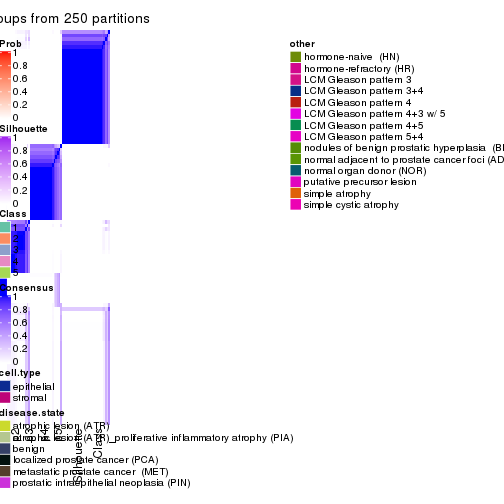
consensus_heatmap(res, k = 6)
Heatmaps for the membership of samples in all partitions to see how consistent they are:
membership_heatmap(res, k = 2)
membership_heatmap(res, k = 3)
membership_heatmap(res, k = 4)
membership_heatmap(res, k = 5)
membership_heatmap(res, k = 6)
As soon as we have had the classes for columns, we can look for signatures which are significantly different between classes which can be candidate marks for certain classes. Following are the heatmaps for signatures.
Signature heatmaps where rows are scaled:
get_signatures(res, k = 2)
get_signatures(res, k = 3)
get_signatures(res, k = 4)
get_signatures(res, k = 5)
get_signatures(res, k = 6)
#> Error: The width or height of the raster image is zero, maybe you forget to turn off the
#> previous graphic device or it was corrupted. Run `dev.off()` to close it.

Signature heatmaps where rows are not scaled:
get_signatures(res, k = 2, scale_rows = FALSE)
get_signatures(res, k = 3, scale_rows = FALSE)
get_signatures(res, k = 4, scale_rows = FALSE)
get_signatures(res, k = 5, scale_rows = FALSE)
get_signatures(res, k = 6, scale_rows = FALSE)
#> Error: The width or height of the raster image is zero, maybe you forget to turn off the
#> previous graphic device or it was corrupted. Run `dev.off()` to close it.

Compare the overlap of signatures from different k:
compare_signatures(res)
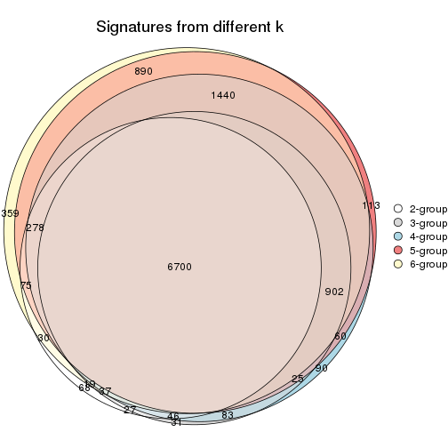
get_signature() returns a data frame invisibly. TO get the list of signatures, the function
call should be assigned to a variable explicitly. In following code, if plot argument is set
to FALSE, no heatmap is plotted while only the differential analysis is performed.
# code only for demonstration
tb = get_signature(res, k = ..., plot = FALSE)
An example of the output of tb is:
#> which_row fdr mean_1 mean_2 scaled_mean_1 scaled_mean_2 km
#> 1 38 0.042760348 8.373488 9.131774 -0.5533452 0.5164555 1
#> 2 40 0.018707592 7.106213 8.469186 -0.6173731 0.5762149 1
#> 3 55 0.019134737 10.221463 11.207825 -0.6159697 0.5749050 1
#> 4 59 0.006059896 5.921854 7.869574 -0.6899429 0.6439467 1
#> 5 60 0.018055526 8.928898 10.211722 -0.6204761 0.5791110 1
#> 6 98 0.009384629 15.714769 14.887706 0.6635654 -0.6193277 2
...
The columns in tb are:
which_row: row indices corresponding to the input matrix.fdr: FDR for the differential test. mean_x: The mean value in group x.scaled_mean_x: The mean value in group x after rows are scaled.km: Row groups if k-means clustering is applied to rows.UMAP plot which shows how samples are separated.
dimension_reduction(res, k = 2, method = "UMAP")
dimension_reduction(res, k = 3, method = "UMAP")
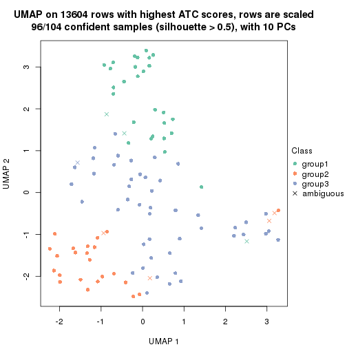
dimension_reduction(res, k = 4, method = "UMAP")

dimension_reduction(res, k = 5, method = "UMAP")
dimension_reduction(res, k = 6, method = "UMAP")
Following heatmap shows how subgroups are split when increasing k:
collect_classes(res)
Test correlation between subgroups and known annotations. If the known annotation is numeric, one-way ANOVA test is applied, and if the known annotation is discrete, chi-squared contingency table test is applied.
test_to_known_factors(res)
#> n cell.type(p) disease.state(p) other(p) k
#> ATC:pam 99 7.26e-02 6.16e-07 1.72e-04 2
#> ATC:pam 96 3.09e-02 7.50e-07 2.25e-04 3
#> ATC:pam 99 5.56e-16 2.48e-09 3.67e-08 4
#> ATC:pam 98 4.15e-15 4.09e-10 1.08e-09 5
#> ATC:pam 95 5.94e-14 2.46e-08 2.59e-07 6
If matrix rows can be associated to genes, consider to use functional_enrichment(res,
...) to perform function enrichment for the signature genes. See this vignette for more detailed explanations.
The object with results only for a single top-value method and a single partition method can be extracted as:
res = res_list["ATC", "mclust"]
# you can also extract it by
# res = res_list["ATC:mclust"]
A summary of res and all the functions that can be applied to it:
res
#> A 'ConsensusPartition' object with k = 2, 3, 4, 5, 6.
#> On a matrix with 13604 rows and 104 columns.
#> Top rows (1000, 2000, 3000, 4000, 5000) are extracted by 'ATC' method.
#> Subgroups are detected by 'mclust' method.
#> Performed in total 1250 partitions by row resampling.
#> Best k for subgroups seems to be 3.
#>
#> Following methods can be applied to this 'ConsensusPartition' object:
#> [1] "cola_report" "collect_classes" "collect_plots"
#> [4] "collect_stats" "colnames" "compare_signatures"
#> [7] "consensus_heatmap" "dimension_reduction" "functional_enrichment"
#> [10] "get_anno_col" "get_anno" "get_classes"
#> [13] "get_consensus" "get_matrix" "get_membership"
#> [16] "get_param" "get_signatures" "get_stats"
#> [19] "is_best_k" "is_stable_k" "membership_heatmap"
#> [22] "ncol" "nrow" "plot_ecdf"
#> [25] "rownames" "select_partition_number" "show"
#> [28] "suggest_best_k" "test_to_known_factors"
collect_plots() function collects all the plots made from res for all k (number of partitions)
into one single page to provide an easy and fast comparison between different k.
collect_plots(res)
The plots are:
k and the heatmap of
predicted classes for each k.k.k.k.All the plots in panels can be made by individual functions and they are plotted later in this section.
select_partition_number() produces several plots showing different
statistics for choosing “optimized” k. There are following statistics:
k;k, the area increased is defined as \(A_k - A_{k-1}\).The detailed explanations of these statistics can be found in the cola vignette.
Generally speaking, lower PAC score, higher mean silhouette score or higher
concordance corresponds to better partition. Rand index and Jaccard index
measure how similar the current partition is compared to partition with k-1.
If they are too similar, we won't accept k is better than k-1.
select_partition_number(res)
The numeric values for all these statistics can be obtained by get_stats().
get_stats(res)
#> k 1-PAC mean_silhouette concordance area_increased Rand Jaccard
#> 2 2 0.391 0.545 0.820 0.3866 0.642 0.642
#> 3 3 0.694 0.727 0.883 0.5617 0.638 0.475
#> 4 4 0.603 0.716 0.828 0.0731 0.819 0.614
#> 5 5 0.597 0.451 0.705 0.1513 0.736 0.387
#> 6 6 0.655 0.675 0.675 0.0215 0.839 0.433
suggest_best_k() suggests the best \(k\) based on these statistics. The rules are as follows:
suggest_best_k(res)
#> [1] 3
Following shows the table of the partitions (You need to click the show/hide
code output link to see it). The membership matrix (columns with name p*)
is inferred by
clue::cl_consensus()
function with the SE method. Basically the value in the membership matrix
represents the probability to belong to a certain group. The finall class
label for an item is determined with the group with highest probability it
belongs to.
In get_classes() function, the entropy is calculated from the membership
matrix and the silhouette score is calculated from the consensus matrix.
cbind(get_classes(res, k = 2), get_membership(res, k = 2))
#> class entropy silhouette p1 p2
#> GSM141334 1 0.9044 0.5080 0.680 0.320
#> GSM141335 1 0.0000 0.7321 1.000 0.000
#> GSM141336 1 0.9044 0.5080 0.680 0.320
#> GSM141337 1 0.0000 0.7321 1.000 0.000
#> GSM141184 1 0.0000 0.7321 1.000 0.000
#> GSM141185 1 0.9044 0.5080 0.680 0.320
#> GSM141186 1 0.9998 0.1693 0.508 0.492
#> GSM141243 1 0.9998 0.1693 0.508 0.492
#> GSM141244 1 0.0000 0.7321 1.000 0.000
#> GSM141246 1 0.9000 0.5082 0.684 0.316
#> GSM141247 1 0.9044 0.5080 0.680 0.320
#> GSM141248 1 0.0000 0.7321 1.000 0.000
#> GSM141249 1 0.0000 0.7321 1.000 0.000
#> GSM141258 1 0.9044 0.5080 0.680 0.320
#> GSM141259 1 0.9998 0.1693 0.508 0.492
#> GSM141260 1 0.0000 0.7321 1.000 0.000
#> GSM141261 1 0.9998 0.1693 0.508 0.492
#> GSM141262 1 0.9044 0.5080 0.680 0.320
#> GSM141263 2 0.9954 -0.0216 0.460 0.540
#> GSM141338 1 0.9044 0.5080 0.680 0.320
#> GSM141339 1 0.0000 0.7321 1.000 0.000
#> GSM141340 1 0.0000 0.7321 1.000 0.000
#> GSM141265 2 0.9661 0.2226 0.392 0.608
#> GSM141267 1 0.9896 0.2730 0.560 0.440
#> GSM141330 2 0.5059 0.7039 0.112 0.888
#> GSM141266 1 0.9998 0.1693 0.508 0.492
#> GSM141264 2 0.2043 0.7525 0.032 0.968
#> GSM141341 1 0.9998 0.1693 0.508 0.492
#> GSM141342 2 0.9833 0.1273 0.424 0.576
#> GSM141343 2 0.9833 0.1273 0.424 0.576
#> GSM141356 2 0.8499 0.4757 0.276 0.724
#> GSM141357 1 0.0000 0.7321 1.000 0.000
#> GSM141358 1 0.9996 0.1789 0.512 0.488
#> GSM141359 1 0.9998 0.1693 0.508 0.492
#> GSM141360 1 0.0000 0.7321 1.000 0.000
#> GSM141361 1 0.9998 0.1693 0.508 0.492
#> GSM141362 1 0.9998 0.1693 0.508 0.492
#> GSM141363 1 0.9044 0.5080 0.680 0.320
#> GSM141364 1 0.8207 0.5688 0.744 0.256
#> GSM141365 2 0.4939 0.7067 0.108 0.892
#> GSM141366 2 0.9833 0.1273 0.424 0.576
#> GSM141367 1 1.0000 0.1547 0.504 0.496
#> GSM141368 2 0.9833 0.1273 0.424 0.576
#> GSM141369 2 0.9896 0.0655 0.440 0.560
#> GSM141370 1 0.9998 0.1693 0.508 0.492
#> GSM141371 1 0.9998 0.1693 0.508 0.492
#> GSM141372 1 0.9998 0.1693 0.508 0.492
#> GSM141373 1 0.0376 0.7304 0.996 0.004
#> GSM141374 1 0.0000 0.7321 1.000 0.000
#> GSM141375 1 0.9998 0.1693 0.508 0.492
#> GSM141376 1 0.0000 0.7321 1.000 0.000
#> GSM141377 1 0.0000 0.7321 1.000 0.000
#> GSM141378 1 0.0000 0.7321 1.000 0.000
#> GSM141380 1 0.0000 0.7321 1.000 0.000
#> GSM141387 1 0.0000 0.7321 1.000 0.000
#> GSM141395 1 0.0000 0.7321 1.000 0.000
#> GSM141397 1 0.9998 0.1693 0.508 0.492
#> GSM141398 1 0.9044 0.5080 0.680 0.320
#> GSM141401 1 0.9998 0.1693 0.508 0.492
#> GSM141399 1 0.2423 0.7137 0.960 0.040
#> GSM141379 1 0.0000 0.7321 1.000 0.000
#> GSM141381 1 0.0000 0.7321 1.000 0.000
#> GSM141383 1 0.0000 0.7321 1.000 0.000
#> GSM141384 1 0.0000 0.7321 1.000 0.000
#> GSM141385 1 0.0000 0.7321 1.000 0.000
#> GSM141388 1 0.0000 0.7321 1.000 0.000
#> GSM141389 1 0.0000 0.7321 1.000 0.000
#> GSM141391 1 0.0000 0.7321 1.000 0.000
#> GSM141394 1 0.9944 0.2531 0.544 0.456
#> GSM141396 1 0.0000 0.7321 1.000 0.000
#> GSM141403 1 0.5946 0.6541 0.856 0.144
#> GSM141404 1 0.9044 0.5080 0.680 0.320
#> GSM141386 1 0.0000 0.7321 1.000 0.000
#> GSM141382 1 0.0000 0.7321 1.000 0.000
#> GSM141390 1 0.0000 0.7321 1.000 0.000
#> GSM141393 1 0.0000 0.7321 1.000 0.000
#> GSM141400 1 0.0000 0.7321 1.000 0.000
#> GSM141402 1 0.9998 0.1693 0.508 0.492
#> GSM141392 2 0.6801 0.6364 0.180 0.820
#> GSM141405 1 0.9998 0.1693 0.508 0.492
#> GSM141406 1 0.9998 0.1693 0.508 0.492
#> GSM141407 1 0.0000 0.7321 1.000 0.000
#> GSM141408 1 0.0000 0.7321 1.000 0.000
#> GSM141409 1 0.0000 0.7321 1.000 0.000
#> GSM141410 1 0.0000 0.7321 1.000 0.000
#> GSM141411 1 0.0000 0.7321 1.000 0.000
#> GSM141412 1 0.0000 0.7321 1.000 0.000
#> GSM141413 1 0.0000 0.7321 1.000 0.000
#> GSM141414 1 0.0000 0.7321 1.000 0.000
#> GSM141415 1 0.0000 0.7321 1.000 0.000
#> GSM141416 1 0.9044 0.5080 0.680 0.320
#> GSM141417 1 0.0000 0.7321 1.000 0.000
#> GSM141420 2 0.0000 0.7643 0.000 1.000
#> GSM141421 2 0.0000 0.7643 0.000 1.000
#> GSM141422 2 0.0000 0.7643 0.000 1.000
#> GSM141423 2 0.0000 0.7643 0.000 1.000
#> GSM141424 2 0.0000 0.7643 0.000 1.000
#> GSM141427 2 0.0000 0.7643 0.000 1.000
#> GSM141428 2 0.0000 0.7643 0.000 1.000
#> GSM141418 2 0.0000 0.7643 0.000 1.000
#> GSM141419 2 0.0000 0.7643 0.000 1.000
#> GSM141425 2 0.0000 0.7643 0.000 1.000
#> GSM141426 2 0.0000 0.7643 0.000 1.000
#> GSM141429 2 0.0000 0.7643 0.000 1.000
cbind(get_classes(res, k = 3), get_membership(res, k = 3))
#> class entropy silhouette p1 p2 p3
#> GSM141334 2 0.7585 0.1151 0.476 0.484 0.040
#> GSM141335 1 0.1411 0.9056 0.964 0.000 0.036
#> GSM141336 2 0.6468 0.2512 0.444 0.552 0.004
#> GSM141337 1 0.1289 0.9068 0.968 0.000 0.032
#> GSM141184 1 0.5734 0.7045 0.788 0.164 0.048
#> GSM141185 1 0.8499 0.0603 0.516 0.388 0.096
#> GSM141186 2 0.1289 0.7611 0.032 0.968 0.000
#> GSM141243 2 0.1411 0.7579 0.036 0.964 0.000
#> GSM141244 1 0.1289 0.9068 0.968 0.000 0.032
#> GSM141246 1 0.6948 0.0235 0.512 0.016 0.472
#> GSM141247 2 0.6460 0.2611 0.440 0.556 0.004
#> GSM141248 1 0.1289 0.9068 0.968 0.000 0.032
#> GSM141249 1 0.0000 0.9124 1.000 0.000 0.000
#> GSM141258 1 0.8850 0.0947 0.516 0.356 0.128
#> GSM141259 2 0.0000 0.7656 0.000 1.000 0.000
#> GSM141260 1 0.1289 0.9068 0.968 0.000 0.032
#> GSM141261 2 0.0000 0.7656 0.000 1.000 0.000
#> GSM141262 2 0.6509 0.1630 0.472 0.524 0.004
#> GSM141263 2 0.0000 0.7656 0.000 1.000 0.000
#> GSM141338 2 0.6460 0.2601 0.440 0.556 0.004
#> GSM141339 1 0.1411 0.9057 0.964 0.000 0.036
#> GSM141340 1 0.0000 0.9124 1.000 0.000 0.000
#> GSM141265 3 0.5344 0.7756 0.084 0.092 0.824
#> GSM141267 3 0.7366 0.2043 0.444 0.032 0.524
#> GSM141330 3 0.7128 0.5925 0.284 0.052 0.664
#> GSM141266 2 0.0237 0.7652 0.004 0.996 0.000
#> GSM141264 3 0.4569 0.7978 0.068 0.072 0.860
#> GSM141341 2 0.3267 0.6909 0.000 0.884 0.116
#> GSM141342 2 0.0000 0.7656 0.000 1.000 0.000
#> GSM141343 2 0.0000 0.7656 0.000 1.000 0.000
#> GSM141356 1 0.7392 -0.0412 0.500 0.032 0.468
#> GSM141357 1 0.1289 0.9068 0.968 0.000 0.032
#> GSM141358 2 0.3340 0.7052 0.120 0.880 0.000
#> GSM141359 2 0.1411 0.7588 0.036 0.964 0.000
#> GSM141360 1 0.1289 0.9068 0.968 0.000 0.032
#> GSM141361 3 0.8402 0.3527 0.092 0.376 0.532
#> GSM141362 2 0.1643 0.7543 0.044 0.956 0.000
#> GSM141363 2 0.6468 0.2512 0.444 0.552 0.004
#> GSM141364 1 0.5956 0.5842 0.720 0.016 0.264
#> GSM141365 3 0.4749 0.7937 0.072 0.076 0.852
#> GSM141366 2 0.0000 0.7656 0.000 1.000 0.000
#> GSM141367 2 0.5882 0.3979 0.000 0.652 0.348
#> GSM141368 2 0.0000 0.7656 0.000 1.000 0.000
#> GSM141369 2 0.0000 0.7656 0.000 1.000 0.000
#> GSM141370 2 0.0000 0.7656 0.000 1.000 0.000
#> GSM141371 2 0.0000 0.7656 0.000 1.000 0.000
#> GSM141372 2 0.0000 0.7656 0.000 1.000 0.000
#> GSM141373 1 0.1529 0.9038 0.960 0.000 0.040
#> GSM141374 1 0.0000 0.9124 1.000 0.000 0.000
#> GSM141375 2 0.4700 0.6221 0.008 0.812 0.180
#> GSM141376 1 0.0000 0.9124 1.000 0.000 0.000
#> GSM141377 1 0.1031 0.9086 0.976 0.000 0.024
#> GSM141378 1 0.0000 0.9124 1.000 0.000 0.000
#> GSM141380 1 0.0000 0.9124 1.000 0.000 0.000
#> GSM141387 1 0.0000 0.9124 1.000 0.000 0.000
#> GSM141395 1 0.1643 0.9015 0.956 0.000 0.044
#> GSM141397 2 0.4413 0.6459 0.008 0.832 0.160
#> GSM141398 2 0.6476 0.2393 0.448 0.548 0.004
#> GSM141401 2 0.6906 0.5697 0.084 0.724 0.192
#> GSM141399 1 0.1525 0.8898 0.964 0.032 0.004
#> GSM141379 1 0.0000 0.9124 1.000 0.000 0.000
#> GSM141381 1 0.0000 0.9124 1.000 0.000 0.000
#> GSM141383 1 0.0000 0.9124 1.000 0.000 0.000
#> GSM141384 1 0.0000 0.9124 1.000 0.000 0.000
#> GSM141385 1 0.0424 0.9113 0.992 0.000 0.008
#> GSM141388 1 0.0000 0.9124 1.000 0.000 0.000
#> GSM141389 1 0.0000 0.9124 1.000 0.000 0.000
#> GSM141391 1 0.0000 0.9124 1.000 0.000 0.000
#> GSM141394 3 0.8010 0.3711 0.384 0.068 0.548
#> GSM141396 1 0.0000 0.9124 1.000 0.000 0.000
#> GSM141403 1 0.8160 0.3791 0.608 0.288 0.104
#> GSM141404 1 0.8016 0.4237 0.632 0.260 0.108
#> GSM141386 1 0.1289 0.9068 0.968 0.000 0.032
#> GSM141382 1 0.0000 0.9124 1.000 0.000 0.000
#> GSM141390 1 0.1289 0.9068 0.968 0.000 0.032
#> GSM141393 1 0.0000 0.9124 1.000 0.000 0.000
#> GSM141400 1 0.0000 0.9124 1.000 0.000 0.000
#> GSM141402 2 0.0000 0.7656 0.000 1.000 0.000
#> GSM141392 3 0.7097 0.5981 0.280 0.052 0.668
#> GSM141405 2 0.6161 0.4276 0.016 0.696 0.288
#> GSM141406 2 0.4897 0.6266 0.016 0.812 0.172
#> GSM141407 1 0.0000 0.9124 1.000 0.000 0.000
#> GSM141408 1 0.0000 0.9124 1.000 0.000 0.000
#> GSM141409 1 0.1289 0.9068 0.968 0.000 0.032
#> GSM141410 1 0.0000 0.9124 1.000 0.000 0.000
#> GSM141411 1 0.0000 0.9124 1.000 0.000 0.000
#> GSM141412 1 0.0000 0.9124 1.000 0.000 0.000
#> GSM141413 1 0.1289 0.9068 0.968 0.000 0.032
#> GSM141414 1 0.1289 0.9068 0.968 0.000 0.032
#> GSM141415 1 0.0000 0.9124 1.000 0.000 0.000
#> GSM141416 1 0.6556 0.5159 0.692 0.032 0.276
#> GSM141417 1 0.0000 0.9124 1.000 0.000 0.000
#> GSM141420 3 0.1525 0.8425 0.004 0.032 0.964
#> GSM141421 3 0.1525 0.8425 0.004 0.032 0.964
#> GSM141422 3 0.1289 0.8414 0.000 0.032 0.968
#> GSM141423 3 0.1525 0.8425 0.004 0.032 0.964
#> GSM141424 3 0.1289 0.8414 0.000 0.032 0.968
#> GSM141427 3 0.1525 0.8425 0.004 0.032 0.964
#> GSM141428 3 0.1525 0.8425 0.004 0.032 0.964
#> GSM141418 3 0.1289 0.8414 0.000 0.032 0.968
#> GSM141419 3 0.1525 0.8419 0.004 0.032 0.964
#> GSM141425 3 0.1289 0.8414 0.000 0.032 0.968
#> GSM141426 3 0.1289 0.8414 0.000 0.032 0.968
#> GSM141429 3 0.1289 0.8414 0.000 0.032 0.968
cbind(get_classes(res, k = 4), get_membership(res, k = 4))
#> class entropy silhouette p1 p2 p3 p4
#> GSM141334 2 0.4448 0.6614 0.188 0.784 0.004 0.024
#> GSM141335 1 0.5530 0.7140 0.712 0.212 0.000 0.076
#> GSM141336 2 0.2647 0.7218 0.120 0.880 0.000 0.000
#> GSM141337 1 0.2635 0.8102 0.904 0.020 0.000 0.076
#> GSM141184 1 0.6083 0.6932 0.672 0.216 0.000 0.112
#> GSM141185 2 0.4489 0.6568 0.192 0.780 0.004 0.024
#> GSM141186 2 0.2021 0.7058 0.012 0.932 0.000 0.056
#> GSM141243 2 0.1557 0.7042 0.000 0.944 0.000 0.056
#> GSM141244 1 0.2845 0.8085 0.896 0.028 0.000 0.076
#> GSM141246 1 0.7112 0.6409 0.604 0.224 0.012 0.160
#> GSM141247 2 0.2714 0.7248 0.112 0.884 0.000 0.004
#> GSM141248 1 0.2563 0.8106 0.908 0.020 0.000 0.072
#> GSM141249 1 0.0188 0.8226 0.996 0.000 0.000 0.004
#> GSM141258 2 0.4630 0.6540 0.192 0.776 0.008 0.024
#> GSM141259 4 0.3907 0.7360 0.000 0.232 0.000 0.768
#> GSM141260 1 0.6201 0.6915 0.664 0.212 0.000 0.124
#> GSM141261 2 0.3873 0.4943 0.000 0.772 0.000 0.228
#> GSM141262 2 0.1557 0.7190 0.056 0.944 0.000 0.000
#> GSM141263 4 0.3837 0.7399 0.000 0.224 0.000 0.776
#> GSM141338 2 0.3196 0.7111 0.136 0.856 0.000 0.008
#> GSM141339 1 0.3731 0.7981 0.860 0.064 0.004 0.072
#> GSM141340 1 0.0000 0.8229 1.000 0.000 0.000 0.000
#> GSM141265 1 0.8317 0.5482 0.520 0.248 0.056 0.176
#> GSM141267 1 0.8607 0.5515 0.516 0.224 0.088 0.172
#> GSM141330 1 0.9157 0.4561 0.464 0.224 0.172 0.140
#> GSM141266 4 0.4644 0.7304 0.024 0.228 0.000 0.748
#> GSM141264 1 0.9200 0.4402 0.460 0.224 0.156 0.160
#> GSM141341 4 0.2197 0.6872 0.000 0.080 0.004 0.916
#> GSM141342 4 0.3837 0.7404 0.000 0.224 0.000 0.776
#> GSM141343 4 0.3837 0.7399 0.000 0.224 0.000 0.776
#> GSM141356 1 0.7492 0.5739 0.556 0.268 0.016 0.160
#> GSM141357 1 0.3833 0.7926 0.848 0.080 0.000 0.072
#> GSM141358 2 0.1661 0.7075 0.004 0.944 0.000 0.052
#> GSM141359 2 0.3688 0.5713 0.000 0.792 0.000 0.208
#> GSM141360 1 0.3900 0.7908 0.844 0.084 0.000 0.072
#> GSM141361 1 0.8031 0.5792 0.536 0.224 0.036 0.204
#> GSM141362 2 0.0707 0.7054 0.000 0.980 0.000 0.020
#> GSM141363 2 0.4123 0.7099 0.136 0.820 0.000 0.044
#> GSM141364 1 0.5800 0.7045 0.704 0.224 0.012 0.060
#> GSM141365 3 0.9530 0.0181 0.268 0.200 0.388 0.144
#> GSM141366 4 0.4164 0.7268 0.000 0.264 0.000 0.736
#> GSM141367 4 0.2197 0.6872 0.000 0.080 0.004 0.916
#> GSM141368 4 0.4164 0.7268 0.000 0.264 0.000 0.736
#> GSM141369 4 0.4193 0.7255 0.000 0.268 0.000 0.732
#> GSM141370 2 0.4164 0.4866 0.000 0.736 0.000 0.264
#> GSM141371 2 0.4164 0.4866 0.000 0.736 0.000 0.264
#> GSM141372 2 0.4164 0.4866 0.000 0.736 0.000 0.264
#> GSM141373 1 0.5458 0.7200 0.720 0.204 0.000 0.076
#> GSM141374 1 0.0188 0.8226 0.996 0.000 0.000 0.004
#> GSM141375 4 0.5412 0.5244 0.140 0.096 0.008 0.756
#> GSM141376 1 0.0000 0.8229 1.000 0.000 0.000 0.000
#> GSM141377 1 0.0895 0.8217 0.976 0.004 0.000 0.020
#> GSM141378 1 0.0188 0.8226 0.996 0.000 0.000 0.004
#> GSM141380 1 0.0188 0.8226 0.996 0.000 0.000 0.004
#> GSM141387 1 0.0000 0.8229 1.000 0.000 0.000 0.000
#> GSM141395 1 0.7253 0.6274 0.580 0.208 0.008 0.204
#> GSM141397 4 0.7252 -0.1114 0.420 0.112 0.008 0.460
#> GSM141398 2 0.2868 0.7127 0.136 0.864 0.000 0.000
#> GSM141401 1 0.7678 0.4825 0.504 0.288 0.008 0.200
#> GSM141399 1 0.5214 0.6900 0.708 0.260 0.008 0.024
#> GSM141379 1 0.0000 0.8229 1.000 0.000 0.000 0.000
#> GSM141381 1 0.0000 0.8229 1.000 0.000 0.000 0.000
#> GSM141383 1 0.0000 0.8229 1.000 0.000 0.000 0.000
#> GSM141384 1 0.0000 0.8229 1.000 0.000 0.000 0.000
#> GSM141385 1 0.0188 0.8228 0.996 0.000 0.000 0.004
#> GSM141388 1 0.0000 0.8229 1.000 0.000 0.000 0.000
#> GSM141389 1 0.0000 0.8229 1.000 0.000 0.000 0.000
#> GSM141391 1 0.0000 0.8229 1.000 0.000 0.000 0.000
#> GSM141394 1 0.8699 0.5062 0.496 0.256 0.092 0.156
#> GSM141396 1 0.0000 0.8229 1.000 0.000 0.000 0.000
#> GSM141403 1 0.7365 0.6053 0.564 0.224 0.008 0.204
#> GSM141404 1 0.5814 0.3770 0.632 0.324 0.004 0.040
#> GSM141386 1 0.2635 0.8102 0.904 0.020 0.000 0.076
#> GSM141382 1 0.0000 0.8229 1.000 0.000 0.000 0.000
#> GSM141390 1 0.5494 0.7170 0.716 0.208 0.000 0.076
#> GSM141393 1 0.0376 0.8230 0.992 0.004 0.000 0.004
#> GSM141400 1 0.0188 0.8228 0.996 0.000 0.000 0.004
#> GSM141402 2 0.3873 0.4943 0.000 0.772 0.000 0.228
#> GSM141392 1 0.8726 0.5275 0.508 0.232 0.108 0.152
#> GSM141405 4 0.6367 0.3898 0.240 0.096 0.008 0.656
#> GSM141406 1 0.7891 0.4210 0.468 0.284 0.008 0.240
#> GSM141407 1 0.0000 0.8229 1.000 0.000 0.000 0.000
#> GSM141408 1 0.0000 0.8229 1.000 0.000 0.000 0.000
#> GSM141409 1 0.1824 0.8154 0.936 0.004 0.000 0.060
#> GSM141410 1 0.0000 0.8229 1.000 0.000 0.000 0.000
#> GSM141411 1 0.0000 0.8229 1.000 0.000 0.000 0.000
#> GSM141412 1 0.0000 0.8229 1.000 0.000 0.000 0.000
#> GSM141413 1 0.1824 0.8154 0.936 0.004 0.000 0.060
#> GSM141414 1 0.2635 0.8102 0.904 0.020 0.000 0.076
#> GSM141415 1 0.0000 0.8229 1.000 0.000 0.000 0.000
#> GSM141416 1 0.5761 0.7030 0.704 0.228 0.012 0.056
#> GSM141417 1 0.0000 0.8229 1.000 0.000 0.000 0.000
#> GSM141420 3 0.0000 0.9256 0.000 0.000 1.000 0.000
#> GSM141421 3 0.0000 0.9256 0.000 0.000 1.000 0.000
#> GSM141422 3 0.0000 0.9256 0.000 0.000 1.000 0.000
#> GSM141423 3 0.0000 0.9256 0.000 0.000 1.000 0.000
#> GSM141424 3 0.0000 0.9256 0.000 0.000 1.000 0.000
#> GSM141427 3 0.0000 0.9256 0.000 0.000 1.000 0.000
#> GSM141428 3 0.0000 0.9256 0.000 0.000 1.000 0.000
#> GSM141418 3 0.0188 0.9208 0.004 0.000 0.996 0.000
#> GSM141419 3 0.2368 0.8545 0.008 0.032 0.928 0.032
#> GSM141425 3 0.0000 0.9256 0.000 0.000 1.000 0.000
#> GSM141426 3 0.0000 0.9256 0.000 0.000 1.000 0.000
#> GSM141429 3 0.0000 0.9256 0.000 0.000 1.000 0.000
cbind(get_classes(res, k = 5), get_membership(res, k = 5))
#> class entropy silhouette p1 p2 p3 p4 p5
#> GSM141334 2 0.4763 0.0872 0.004 0.616 0.000 0.020 0.360
#> GSM141335 2 0.6562 0.0944 0.284 0.472 0.000 0.000 0.244
#> GSM141336 2 0.4288 0.0951 0.000 0.612 0.000 0.004 0.384
#> GSM141337 1 0.5946 0.1387 0.508 0.380 0.000 0.000 0.112
#> GSM141184 2 0.6375 -0.0696 0.188 0.496 0.000 0.000 0.316
#> GSM141185 2 0.4433 0.0515 0.008 0.696 0.000 0.016 0.280
#> GSM141186 5 0.6403 -0.0607 0.000 0.232 0.000 0.256 0.512
#> GSM141243 5 0.6467 -0.2151 0.000 0.272 0.000 0.232 0.496
#> GSM141244 1 0.6500 -0.1762 0.412 0.400 0.000 0.000 0.188
#> GSM141246 5 0.5780 0.2661 0.060 0.420 0.012 0.000 0.508
#> GSM141247 2 0.4288 0.0951 0.000 0.612 0.000 0.004 0.384
#> GSM141248 1 0.5913 0.1739 0.524 0.364 0.000 0.000 0.112
#> GSM141249 1 0.0290 0.8203 0.992 0.008 0.000 0.000 0.000
#> GSM141258 2 0.3940 0.0060 0.008 0.768 0.000 0.016 0.208
#> GSM141259 4 0.2850 0.6537 0.000 0.092 0.000 0.872 0.036
#> GSM141260 2 0.6532 0.1385 0.348 0.448 0.000 0.000 0.204
#> GSM141261 4 0.5091 0.4936 0.000 0.044 0.000 0.584 0.372
#> GSM141262 2 0.4768 0.0884 0.000 0.592 0.000 0.024 0.384
#> GSM141263 4 0.2540 0.6540 0.000 0.088 0.000 0.888 0.024
#> GSM141338 2 0.5663 0.0656 0.000 0.532 0.000 0.084 0.384
#> GSM141339 2 0.6704 0.1484 0.376 0.416 0.004 0.000 0.204
#> GSM141340 1 0.0162 0.8204 0.996 0.004 0.000 0.000 0.000
#> GSM141265 5 0.6752 0.3651 0.036 0.324 0.068 0.024 0.548
#> GSM141267 5 0.7817 0.3052 0.144 0.304 0.120 0.000 0.432
#> GSM141330 5 0.7909 0.3507 0.128 0.252 0.172 0.000 0.448
#> GSM141266 4 0.4676 0.5900 0.000 0.120 0.000 0.740 0.140
#> GSM141264 5 0.7684 0.3909 0.036 0.180 0.172 0.064 0.548
#> GSM141341 4 0.3242 0.5678 0.000 0.000 0.000 0.784 0.216
#> GSM141342 4 0.1410 0.6320 0.000 0.000 0.000 0.940 0.060
#> GSM141343 4 0.1952 0.6545 0.000 0.084 0.000 0.912 0.004
#> GSM141356 5 0.6122 0.3601 0.044 0.288 0.068 0.000 0.600
#> GSM141357 2 0.6037 0.0503 0.436 0.448 0.000 0.000 0.116
#> GSM141358 5 0.5321 -0.0217 0.020 0.388 0.000 0.024 0.568
#> GSM141359 5 0.6581 -0.3180 0.000 0.228 0.000 0.316 0.456
#> GSM141360 2 0.6002 0.0391 0.436 0.452 0.000 0.000 0.112
#> GSM141361 5 0.5579 0.3067 0.036 0.408 0.020 0.000 0.536
#> GSM141362 5 0.6204 -0.1414 0.000 0.288 0.000 0.176 0.536
#> GSM141363 2 0.4288 0.0951 0.000 0.612 0.000 0.004 0.384
#> GSM141364 2 0.6001 -0.2108 0.100 0.500 0.004 0.000 0.396
#> GSM141365 5 0.6845 0.3424 0.020 0.148 0.304 0.008 0.520
#> GSM141366 4 0.2012 0.6287 0.000 0.020 0.000 0.920 0.060
#> GSM141367 4 0.3642 0.5528 0.000 0.008 0.000 0.760 0.232
#> GSM141368 4 0.2012 0.6287 0.000 0.020 0.000 0.920 0.060
#> GSM141369 4 0.2423 0.6473 0.000 0.024 0.000 0.896 0.080
#> GSM141370 4 0.5938 0.4680 0.000 0.112 0.000 0.512 0.376
#> GSM141371 4 0.5938 0.4680 0.000 0.112 0.000 0.512 0.376
#> GSM141372 4 0.5976 0.4676 0.000 0.116 0.000 0.508 0.376
#> GSM141373 2 0.6162 0.0641 0.432 0.436 0.000 0.000 0.132
#> GSM141374 1 0.0162 0.8208 0.996 0.004 0.000 0.000 0.000
#> GSM141375 4 0.5377 0.4258 0.012 0.064 0.000 0.648 0.276
#> GSM141376 1 0.0000 0.8217 1.000 0.000 0.000 0.000 0.000
#> GSM141377 1 0.4364 0.5867 0.768 0.112 0.000 0.000 0.120
#> GSM141378 1 0.0290 0.8203 0.992 0.008 0.000 0.000 0.000
#> GSM141380 1 0.0162 0.8208 0.996 0.004 0.000 0.000 0.000
#> GSM141387 1 0.0162 0.8204 0.996 0.004 0.000 0.000 0.000
#> GSM141395 2 0.6815 0.0362 0.280 0.436 0.004 0.000 0.280
#> GSM141397 4 0.6771 0.1756 0.032 0.152 0.000 0.532 0.284
#> GSM141398 2 0.4288 0.0943 0.000 0.612 0.000 0.004 0.384
#> GSM141401 5 0.8468 0.0697 0.236 0.276 0.000 0.172 0.316
#> GSM141399 2 0.6767 0.0235 0.272 0.380 0.000 0.000 0.348
#> GSM141379 1 0.0162 0.8204 0.996 0.004 0.000 0.000 0.000
#> GSM141381 1 0.0000 0.8217 1.000 0.000 0.000 0.000 0.000
#> GSM141383 1 0.0000 0.8217 1.000 0.000 0.000 0.000 0.000
#> GSM141384 1 0.0162 0.8204 0.996 0.004 0.000 0.000 0.000
#> GSM141385 1 0.4121 0.6129 0.788 0.100 0.000 0.000 0.112
#> GSM141388 1 0.0000 0.8217 1.000 0.000 0.000 0.000 0.000
#> GSM141389 1 0.0000 0.8217 1.000 0.000 0.000 0.000 0.000
#> GSM141391 1 0.0162 0.8212 0.996 0.004 0.000 0.000 0.000
#> GSM141394 5 0.7311 0.3832 0.068 0.272 0.160 0.000 0.500
#> GSM141396 1 0.0880 0.8026 0.968 0.032 0.000 0.000 0.000
#> GSM141403 2 0.6104 -0.2384 0.084 0.496 0.004 0.008 0.408
#> GSM141404 5 0.6579 -0.1045 0.372 0.208 0.000 0.000 0.420
#> GSM141386 1 0.5992 0.0227 0.472 0.416 0.000 0.000 0.112
#> GSM141382 1 0.0000 0.8217 1.000 0.000 0.000 0.000 0.000
#> GSM141390 2 0.6285 0.1440 0.392 0.456 0.000 0.000 0.152
#> GSM141393 1 0.1399 0.7960 0.952 0.028 0.000 0.000 0.020
#> GSM141400 1 0.3812 0.6010 0.772 0.204 0.000 0.000 0.024
#> GSM141402 4 0.5176 0.4869 0.000 0.048 0.000 0.572 0.380
#> GSM141392 5 0.7965 0.3363 0.140 0.264 0.160 0.000 0.436
#> GSM141405 4 0.6498 0.3573 0.104 0.044 0.000 0.576 0.276
#> GSM141406 4 0.7225 -0.0803 0.044 0.160 0.000 0.420 0.376
#> GSM141407 1 0.0162 0.8204 0.996 0.004 0.000 0.000 0.000
#> GSM141408 1 0.0162 0.8204 0.996 0.004 0.000 0.000 0.000
#> GSM141409 1 0.5989 0.1811 0.536 0.336 0.000 0.000 0.128
#> GSM141410 1 0.0162 0.8204 0.996 0.004 0.000 0.000 0.000
#> GSM141411 1 0.0162 0.8212 0.996 0.004 0.000 0.000 0.000
#> GSM141412 1 0.0000 0.8217 1.000 0.000 0.000 0.000 0.000
#> GSM141413 1 0.6068 0.1735 0.532 0.328 0.000 0.000 0.140
#> GSM141414 1 0.6006 0.1572 0.520 0.356 0.000 0.000 0.124
#> GSM141415 1 0.0000 0.8217 1.000 0.000 0.000 0.000 0.000
#> GSM141416 2 0.6952 0.1090 0.320 0.412 0.008 0.000 0.260
#> GSM141417 1 0.0290 0.8195 0.992 0.008 0.000 0.000 0.000
#> GSM141420 3 0.0162 0.9847 0.000 0.000 0.996 0.000 0.004
#> GSM141421 3 0.0162 0.9847 0.000 0.000 0.996 0.000 0.004
#> GSM141422 3 0.0000 0.9850 0.000 0.000 1.000 0.000 0.000
#> GSM141423 3 0.0162 0.9847 0.000 0.000 0.996 0.000 0.004
#> GSM141424 3 0.0000 0.9850 0.000 0.000 1.000 0.000 0.000
#> GSM141427 3 0.0162 0.9847 0.000 0.000 0.996 0.000 0.004
#> GSM141428 3 0.0162 0.9847 0.000 0.000 0.996 0.000 0.004
#> GSM141418 3 0.0000 0.9850 0.000 0.000 1.000 0.000 0.000
#> GSM141419 3 0.2377 0.8378 0.000 0.000 0.872 0.000 0.128
#> GSM141425 3 0.0000 0.9850 0.000 0.000 1.000 0.000 0.000
#> GSM141426 3 0.0000 0.9850 0.000 0.000 1.000 0.000 0.000
#> GSM141429 3 0.0000 0.9850 0.000 0.000 1.000 0.000 0.000
cbind(get_classes(res, k = 6), get_membership(res, k = 6))
#> class entropy silhouette p1 p2 p3 p4 p5 p6
#> GSM141334 2 0.1843 0.852 0.000 0.912 0.000 0.004 0.080 0.004
#> GSM141335 5 0.0935 0.848 0.000 0.032 0.000 0.000 0.964 0.004
#> GSM141336 2 0.0146 0.894 0.000 0.996 0.000 0.004 0.000 0.000
#> GSM141337 5 0.0291 0.845 0.004 0.000 0.000 0.000 0.992 0.004
#> GSM141184 5 0.1594 0.830 0.000 0.052 0.000 0.000 0.932 0.016
#> GSM141185 2 0.1843 0.852 0.000 0.912 0.000 0.004 0.080 0.004
#> GSM141186 4 0.6733 0.466 0.000 0.152 0.000 0.492 0.264 0.092
#> GSM141243 4 0.4095 0.614 0.000 0.208 0.000 0.728 0.000 0.064
#> GSM141244 5 0.1010 0.848 0.000 0.036 0.000 0.000 0.960 0.004
#> GSM141246 6 0.5232 0.786 0.000 0.080 0.000 0.004 0.428 0.488
#> GSM141247 2 0.0146 0.894 0.000 0.996 0.000 0.004 0.000 0.000
#> GSM141248 5 0.0146 0.846 0.004 0.000 0.000 0.000 0.996 0.000
#> GSM141249 1 0.3854 0.690 0.536 0.000 0.000 0.000 0.464 0.000
#> GSM141258 2 0.2001 0.837 0.000 0.900 0.000 0.004 0.092 0.004
#> GSM141259 4 0.4255 0.642 0.004 0.016 0.000 0.704 0.020 0.256
#> GSM141260 5 0.0858 0.848 0.000 0.028 0.000 0.000 0.968 0.004
#> GSM141261 4 0.2362 0.657 0.000 0.136 0.000 0.860 0.000 0.004
#> GSM141262 2 0.0146 0.894 0.000 0.996 0.000 0.004 0.000 0.000
#> GSM141263 4 0.3163 0.617 0.004 0.004 0.000 0.780 0.000 0.212
#> GSM141338 2 0.0260 0.892 0.000 0.992 0.000 0.008 0.000 0.000
#> GSM141339 5 0.0858 0.851 0.000 0.028 0.000 0.000 0.968 0.004
#> GSM141340 1 0.3857 0.683 0.532 0.000 0.000 0.000 0.468 0.000
#> GSM141265 6 0.5114 0.840 0.000 0.056 0.016 0.004 0.316 0.608
#> GSM141267 6 0.5147 0.858 0.000 0.036 0.024 0.004 0.372 0.564
#> GSM141330 6 0.5355 0.855 0.004 0.036 0.036 0.004 0.328 0.592
#> GSM141266 4 0.5363 0.616 0.004 0.012 0.000 0.644 0.168 0.172
#> GSM141264 6 0.5208 0.776 0.000 0.020 0.040 0.032 0.244 0.664
#> GSM141341 1 0.6488 -0.468 0.384 0.000 0.000 0.260 0.020 0.336
#> GSM141342 1 0.5940 -0.400 0.460 0.000 0.000 0.272 0.000 0.268
#> GSM141343 4 0.4539 0.551 0.060 0.004 0.000 0.668 0.000 0.268
#> GSM141356 6 0.5858 0.816 0.000 0.124 0.012 0.004 0.364 0.496
#> GSM141357 5 0.0405 0.851 0.000 0.008 0.000 0.000 0.988 0.004
#> GSM141358 2 0.6695 0.144 0.000 0.468 0.000 0.152 0.076 0.304
#> GSM141359 4 0.4121 0.604 0.000 0.220 0.000 0.720 0.000 0.060
#> GSM141360 5 0.0260 0.851 0.000 0.008 0.000 0.000 0.992 0.000
#> GSM141361 6 0.4880 0.826 0.000 0.044 0.000 0.012 0.364 0.580
#> GSM141362 4 0.4127 0.553 0.000 0.284 0.000 0.680 0.000 0.036
#> GSM141363 2 0.0146 0.894 0.000 0.996 0.000 0.004 0.000 0.000
#> GSM141364 5 0.2669 0.787 0.000 0.108 0.000 0.004 0.864 0.024
#> GSM141365 6 0.5001 0.426 0.004 0.012 0.220 0.008 0.072 0.684
#> GSM141366 1 0.5940 -0.400 0.460 0.000 0.000 0.272 0.000 0.268
#> GSM141367 1 0.5877 -0.430 0.428 0.000 0.000 0.200 0.000 0.372
#> GSM141368 1 0.5940 -0.400 0.460 0.000 0.000 0.272 0.000 0.268
#> GSM141369 4 0.0520 0.665 0.000 0.008 0.000 0.984 0.000 0.008
#> GSM141370 4 0.2572 0.657 0.000 0.136 0.000 0.852 0.000 0.012
#> GSM141371 4 0.2572 0.657 0.000 0.136 0.000 0.852 0.000 0.012
#> GSM141372 4 0.2572 0.657 0.000 0.136 0.000 0.852 0.000 0.012
#> GSM141373 5 0.1938 0.827 0.000 0.036 0.000 0.004 0.920 0.040
#> GSM141374 1 0.3854 0.690 0.536 0.000 0.000 0.000 0.464 0.000
#> GSM141375 4 0.5425 0.558 0.004 0.004 0.000 0.608 0.232 0.152
#> GSM141376 1 0.3854 0.690 0.536 0.000 0.000 0.000 0.464 0.000
#> GSM141377 5 0.2854 0.534 0.208 0.000 0.000 0.000 0.792 0.000
#> GSM141378 1 0.3854 0.690 0.536 0.000 0.000 0.000 0.464 0.000
#> GSM141380 1 0.3854 0.690 0.536 0.000 0.000 0.000 0.464 0.000
#> GSM141387 1 0.3854 0.690 0.536 0.000 0.000 0.000 0.464 0.000
#> GSM141395 5 0.1713 0.832 0.000 0.028 0.000 0.000 0.928 0.044
#> GSM141397 4 0.5317 0.524 0.004 0.004 0.000 0.608 0.264 0.120
#> GSM141398 2 0.0146 0.894 0.000 0.996 0.000 0.004 0.000 0.000
#> GSM141401 4 0.6619 0.447 0.016 0.076 0.000 0.528 0.280 0.100
#> GSM141399 5 0.2504 0.778 0.000 0.136 0.000 0.004 0.856 0.004
#> GSM141379 1 0.3854 0.690 0.536 0.000 0.000 0.000 0.464 0.000
#> GSM141381 1 0.3854 0.690 0.536 0.000 0.000 0.000 0.464 0.000
#> GSM141383 1 0.3854 0.690 0.536 0.000 0.000 0.000 0.464 0.000
#> GSM141384 1 0.3854 0.690 0.536 0.000 0.000 0.000 0.464 0.000
#> GSM141385 5 0.3531 0.056 0.328 0.000 0.000 0.000 0.672 0.000
#> GSM141388 1 0.3854 0.690 0.536 0.000 0.000 0.000 0.464 0.000
#> GSM141389 1 0.3854 0.690 0.536 0.000 0.000 0.000 0.464 0.000
#> GSM141391 1 0.3854 0.690 0.536 0.000 0.000 0.000 0.464 0.000
#> GSM141394 6 0.5694 0.859 0.000 0.072 0.032 0.004 0.348 0.544
#> GSM141396 1 0.3854 0.690 0.536 0.000 0.000 0.000 0.464 0.000
#> GSM141403 5 0.2591 0.767 0.000 0.064 0.000 0.004 0.880 0.052
#> GSM141404 5 0.3789 0.508 0.000 0.324 0.000 0.004 0.668 0.004
#> GSM141386 5 0.0146 0.847 0.000 0.000 0.000 0.000 0.996 0.004
#> GSM141382 1 0.3854 0.690 0.536 0.000 0.000 0.000 0.464 0.000
#> GSM141390 5 0.0777 0.851 0.000 0.024 0.000 0.000 0.972 0.004
#> GSM141393 1 0.3854 0.690 0.536 0.000 0.000 0.000 0.464 0.000
#> GSM141400 5 0.3482 0.134 0.316 0.000 0.000 0.000 0.684 0.000
#> GSM141402 4 0.2442 0.654 0.000 0.144 0.000 0.852 0.000 0.004
#> GSM141392 6 0.5341 0.861 0.004 0.036 0.032 0.004 0.344 0.580
#> GSM141405 4 0.5688 0.558 0.020 0.004 0.000 0.604 0.232 0.140
#> GSM141406 4 0.5336 0.520 0.004 0.004 0.000 0.604 0.268 0.120
#> GSM141407 1 0.3854 0.690 0.536 0.000 0.000 0.000 0.464 0.000
#> GSM141408 1 0.3854 0.690 0.536 0.000 0.000 0.000 0.464 0.000
#> GSM141409 5 0.1863 0.747 0.104 0.000 0.000 0.000 0.896 0.000
#> GSM141410 1 0.3854 0.690 0.536 0.000 0.000 0.000 0.464 0.000
#> GSM141411 1 0.3854 0.690 0.536 0.000 0.000 0.000 0.464 0.000
#> GSM141412 1 0.3854 0.690 0.536 0.000 0.000 0.000 0.464 0.000
#> GSM141413 5 0.2046 0.800 0.060 0.032 0.000 0.000 0.908 0.000
#> GSM141414 5 0.0260 0.844 0.008 0.000 0.000 0.000 0.992 0.000
#> GSM141415 1 0.3854 0.690 0.536 0.000 0.000 0.000 0.464 0.000
#> GSM141416 5 0.2954 0.782 0.000 0.096 0.000 0.004 0.852 0.048
#> GSM141417 1 0.3857 0.683 0.532 0.000 0.000 0.000 0.468 0.000
#> GSM141420 3 0.2101 0.927 0.004 0.004 0.892 0.000 0.000 0.100
#> GSM141421 3 0.2101 0.927 0.004 0.004 0.892 0.000 0.000 0.100
#> GSM141422 3 0.0000 0.934 0.000 0.000 1.000 0.000 0.000 0.000
#> GSM141423 3 0.2101 0.927 0.004 0.004 0.892 0.000 0.000 0.100
#> GSM141424 3 0.0000 0.934 0.000 0.000 1.000 0.000 0.000 0.000
#> GSM141427 3 0.2101 0.927 0.004 0.004 0.892 0.000 0.000 0.100
#> GSM141428 3 0.2101 0.927 0.004 0.004 0.892 0.000 0.000 0.100
#> GSM141418 3 0.0260 0.931 0.000 0.008 0.992 0.000 0.000 0.000
#> GSM141419 3 0.4518 0.639 0.000 0.064 0.720 0.004 0.012 0.200
#> GSM141425 3 0.0000 0.934 0.000 0.000 1.000 0.000 0.000 0.000
#> GSM141426 3 0.0000 0.934 0.000 0.000 1.000 0.000 0.000 0.000
#> GSM141429 3 0.0000 0.934 0.000 0.000 1.000 0.000 0.000 0.000
Heatmaps for the consensus matrix. It visualizes the probability of two samples to be in a same group.
consensus_heatmap(res, k = 2)
consensus_heatmap(res, k = 3)

consensus_heatmap(res, k = 4)
consensus_heatmap(res, k = 5)
consensus_heatmap(res, k = 6)
Heatmaps for the membership of samples in all partitions to see how consistent they are:
membership_heatmap(res, k = 2)
membership_heatmap(res, k = 3)
membership_heatmap(res, k = 4)
membership_heatmap(res, k = 5)
membership_heatmap(res, k = 6)
As soon as we have had the classes for columns, we can look for signatures which are significantly different between classes which can be candidate marks for certain classes. Following are the heatmaps for signatures.
Signature heatmaps where rows are scaled:
get_signatures(res, k = 2)
get_signatures(res, k = 3)
get_signatures(res, k = 4)
get_signatures(res, k = 5)
get_signatures(res, k = 6)
#> Error: The width or height of the raster image is zero, maybe you forget to turn off the
#> previous graphic device or it was corrupted. Run `dev.off()` to close it.

Signature heatmaps where rows are not scaled:
get_signatures(res, k = 2, scale_rows = FALSE)
get_signatures(res, k = 3, scale_rows = FALSE)
get_signatures(res, k = 4, scale_rows = FALSE)
get_signatures(res, k = 5, scale_rows = FALSE)
get_signatures(res, k = 6, scale_rows = FALSE)
#> Error: The width or height of the raster image is zero, maybe you forget to turn off the
#> previous graphic device or it was corrupted. Run `dev.off()` to close it.

Compare the overlap of signatures from different k:
compare_signatures(res)
get_signature() returns a data frame invisibly. TO get the list of signatures, the function
call should be assigned to a variable explicitly. In following code, if plot argument is set
to FALSE, no heatmap is plotted while only the differential analysis is performed.
# code only for demonstration
tb = get_signature(res, k = ..., plot = FALSE)
An example of the output of tb is:
#> which_row fdr mean_1 mean_2 scaled_mean_1 scaled_mean_2 km
#> 1 38 0.042760348 8.373488 9.131774 -0.5533452 0.5164555 1
#> 2 40 0.018707592 7.106213 8.469186 -0.6173731 0.5762149 1
#> 3 55 0.019134737 10.221463 11.207825 -0.6159697 0.5749050 1
#> 4 59 0.006059896 5.921854 7.869574 -0.6899429 0.6439467 1
#> 5 60 0.018055526 8.928898 10.211722 -0.6204761 0.5791110 1
#> 6 98 0.009384629 15.714769 14.887706 0.6635654 -0.6193277 2
...
The columns in tb are:
which_row: row indices corresponding to the input matrix.fdr: FDR for the differential test. mean_x: The mean value in group x.scaled_mean_x: The mean value in group x after rows are scaled.km: Row groups if k-means clustering is applied to rows.UMAP plot which shows how samples are separated.
dimension_reduction(res, k = 2, method = "UMAP")
dimension_reduction(res, k = 3, method = "UMAP")
dimension_reduction(res, k = 4, method = "UMAP")
dimension_reduction(res, k = 5, method = "UMAP")
dimension_reduction(res, k = 6, method = "UMAP")
Following heatmap shows how subgroups are split when increasing k:
collect_classes(res)
Test correlation between subgroups and known annotations. If the known annotation is numeric, one-way ANOVA test is applied, and if the known annotation is discrete, chi-squared contingency table test is applied.
test_to_known_factors(res)
#> n cell.type(p) disease.state(p) other(p) k
#> ATC:mclust 74 8.95e-12 5.04e-04 1.49e-03 2
#> ATC:mclust 86 5.11e-13 9.53e-09 1.01e-06 3
#> ATC:mclust 91 1.34e-19 4.44e-09 4.83e-08 4
#> ATC:mclust 49 2.29e-11 7.82e-13 4.98e-10 5
#> ATC:mclust 93 1.57e-18 2.28e-10 6.26e-05 6
If matrix rows can be associated to genes, consider to use functional_enrichment(res,
...) to perform function enrichment for the signature genes. See this vignette for more detailed explanations.
The object with results only for a single top-value method and a single partition method can be extracted as:
res = res_list["ATC", "NMF"]
# you can also extract it by
# res = res_list["ATC:NMF"]
A summary of res and all the functions that can be applied to it:
res
#> A 'ConsensusPartition' object with k = 2, 3, 4, 5, 6.
#> On a matrix with 13604 rows and 104 columns.
#> Top rows (1000, 2000, 3000, 4000, 5000) are extracted by 'ATC' method.
#> Subgroups are detected by 'NMF' method.
#> Performed in total 1250 partitions by row resampling.
#> Best k for subgroups seems to be 2.
#>
#> Following methods can be applied to this 'ConsensusPartition' object:
#> [1] "cola_report" "collect_classes" "collect_plots"
#> [4] "collect_stats" "colnames" "compare_signatures"
#> [7] "consensus_heatmap" "dimension_reduction" "functional_enrichment"
#> [10] "get_anno_col" "get_anno" "get_classes"
#> [13] "get_consensus" "get_matrix" "get_membership"
#> [16] "get_param" "get_signatures" "get_stats"
#> [19] "is_best_k" "is_stable_k" "membership_heatmap"
#> [22] "ncol" "nrow" "plot_ecdf"
#> [25] "rownames" "select_partition_number" "show"
#> [28] "suggest_best_k" "test_to_known_factors"
collect_plots() function collects all the plots made from res for all k (number of partitions)
into one single page to provide an easy and fast comparison between different k.
collect_plots(res)
The plots are:
k and the heatmap of
predicted classes for each k.k.k.k.All the plots in panels can be made by individual functions and they are plotted later in this section.
select_partition_number() produces several plots showing different
statistics for choosing “optimized” k. There are following statistics:
k;k, the area increased is defined as \(A_k - A_{k-1}\).The detailed explanations of these statistics can be found in the cola vignette.
Generally speaking, lower PAC score, higher mean silhouette score or higher
concordance corresponds to better partition. Rand index and Jaccard index
measure how similar the current partition is compared to partition with k-1.
If they are too similar, we won't accept k is better than k-1.
select_partition_number(res)
The numeric values for all these statistics can be obtained by get_stats().
get_stats(res)
#> k 1-PAC mean_silhouette concordance area_increased Rand Jaccard
#> 2 2 0.999 0.953 0.981 0.5038 0.497 0.497
#> 3 3 0.637 0.720 0.836 0.2738 0.812 0.638
#> 4 4 0.878 0.876 0.941 0.1256 0.865 0.644
#> 5 5 0.748 0.698 0.849 0.0579 0.934 0.774
#> 6 6 0.734 0.621 0.789 0.0481 0.908 0.653
suggest_best_k() suggests the best \(k\) based on these statistics. The rules are as follows:
suggest_best_k(res)
#> [1] 2
Following shows the table of the partitions (You need to click the show/hide
code output link to see it). The membership matrix (columns with name p*)
is inferred by
clue::cl_consensus()
function with the SE method. Basically the value in the membership matrix
represents the probability to belong to a certain group. The finall class
label for an item is determined with the group with highest probability it
belongs to.
In get_classes() function, the entropy is calculated from the membership
matrix and the silhouette score is calculated from the consensus matrix.
cbind(get_classes(res, k = 2), get_membership(res, k = 2))
#> class entropy silhouette p1 p2
#> GSM141334 2 0.0000 0.971 0.000 1.000
#> GSM141335 2 0.0672 0.966 0.008 0.992
#> GSM141336 2 0.0000 0.971 0.000 1.000
#> GSM141337 1 0.0000 0.989 1.000 0.000
#> GSM141184 2 0.0000 0.971 0.000 1.000
#> GSM141185 2 0.0000 0.971 0.000 1.000
#> GSM141186 2 0.0000 0.971 0.000 1.000
#> GSM141243 2 0.0000 0.971 0.000 1.000
#> GSM141244 2 0.2603 0.937 0.044 0.956
#> GSM141246 2 0.9661 0.377 0.392 0.608
#> GSM141247 2 0.0000 0.971 0.000 1.000
#> GSM141248 1 0.0000 0.989 1.000 0.000
#> GSM141249 1 0.0000 0.989 1.000 0.000
#> GSM141258 2 0.0000 0.971 0.000 1.000
#> GSM141259 2 0.0000 0.971 0.000 1.000
#> GSM141260 1 0.5294 0.861 0.880 0.120
#> GSM141261 2 0.0000 0.971 0.000 1.000
#> GSM141262 2 0.0000 0.971 0.000 1.000
#> GSM141263 2 0.0000 0.971 0.000 1.000
#> GSM141338 2 0.0000 0.971 0.000 1.000
#> GSM141339 2 0.9635 0.389 0.388 0.612
#> GSM141340 1 0.0000 0.989 1.000 0.000
#> GSM141265 2 0.0000 0.971 0.000 1.000
#> GSM141267 1 0.0000 0.989 1.000 0.000
#> GSM141330 1 0.0000 0.989 1.000 0.000
#> GSM141266 2 0.0000 0.971 0.000 1.000
#> GSM141264 2 0.0000 0.971 0.000 1.000
#> GSM141341 2 0.0000 0.971 0.000 1.000
#> GSM141342 2 0.0000 0.971 0.000 1.000
#> GSM141343 2 0.0000 0.971 0.000 1.000
#> GSM141356 2 0.0672 0.966 0.008 0.992
#> GSM141357 1 0.0000 0.989 1.000 0.000
#> GSM141358 2 0.0000 0.971 0.000 1.000
#> GSM141359 2 0.0000 0.971 0.000 1.000
#> GSM141360 1 0.0000 0.989 1.000 0.000
#> GSM141361 2 0.2236 0.943 0.036 0.964
#> GSM141362 2 0.0000 0.971 0.000 1.000
#> GSM141363 2 0.0000 0.971 0.000 1.000
#> GSM141364 2 0.4431 0.888 0.092 0.908
#> GSM141365 1 0.5059 0.871 0.888 0.112
#> GSM141366 2 0.0000 0.971 0.000 1.000
#> GSM141367 1 0.0000 0.989 1.000 0.000
#> GSM141368 2 0.0000 0.971 0.000 1.000
#> GSM141369 2 0.0000 0.971 0.000 1.000
#> GSM141370 2 0.0000 0.971 0.000 1.000
#> GSM141371 2 0.0000 0.971 0.000 1.000
#> GSM141372 2 0.0000 0.971 0.000 1.000
#> GSM141373 1 0.0000 0.989 1.000 0.000
#> GSM141374 1 0.0000 0.989 1.000 0.000
#> GSM141375 2 0.3431 0.917 0.064 0.936
#> GSM141376 1 0.0000 0.989 1.000 0.000
#> GSM141377 1 0.0000 0.989 1.000 0.000
#> GSM141378 1 0.0000 0.989 1.000 0.000
#> GSM141380 1 0.0000 0.989 1.000 0.000
#> GSM141387 1 0.0000 0.989 1.000 0.000
#> GSM141395 1 0.0000 0.989 1.000 0.000
#> GSM141397 2 0.0000 0.971 0.000 1.000
#> GSM141398 2 0.0000 0.971 0.000 1.000
#> GSM141401 2 0.0000 0.971 0.000 1.000
#> GSM141399 2 0.1633 0.954 0.024 0.976
#> GSM141379 1 0.0000 0.989 1.000 0.000
#> GSM141381 1 0.0000 0.989 1.000 0.000
#> GSM141383 1 0.0000 0.989 1.000 0.000
#> GSM141384 1 0.0000 0.989 1.000 0.000
#> GSM141385 1 0.0000 0.989 1.000 0.000
#> GSM141388 1 0.0000 0.989 1.000 0.000
#> GSM141389 1 0.0000 0.989 1.000 0.000
#> GSM141391 1 0.0000 0.989 1.000 0.000
#> GSM141394 2 0.0000 0.971 0.000 1.000
#> GSM141396 1 0.0000 0.989 1.000 0.000
#> GSM141403 2 0.0000 0.971 0.000 1.000
#> GSM141404 2 0.0376 0.969 0.004 0.996
#> GSM141386 1 0.0000 0.989 1.000 0.000
#> GSM141382 1 0.0000 0.989 1.000 0.000
#> GSM141390 1 0.0000 0.989 1.000 0.000
#> GSM141393 1 0.0000 0.989 1.000 0.000
#> GSM141400 1 0.0000 0.989 1.000 0.000
#> GSM141402 2 0.0000 0.971 0.000 1.000
#> GSM141392 1 0.0000 0.989 1.000 0.000
#> GSM141405 1 0.0000 0.989 1.000 0.000
#> GSM141406 2 0.0000 0.971 0.000 1.000
#> GSM141407 1 0.0000 0.989 1.000 0.000
#> GSM141408 1 0.0000 0.989 1.000 0.000
#> GSM141409 1 0.0000 0.989 1.000 0.000
#> GSM141410 1 0.0000 0.989 1.000 0.000
#> GSM141411 1 0.0000 0.989 1.000 0.000
#> GSM141412 1 0.0000 0.989 1.000 0.000
#> GSM141413 1 0.0000 0.989 1.000 0.000
#> GSM141414 1 0.0000 0.989 1.000 0.000
#> GSM141415 1 0.0000 0.989 1.000 0.000
#> GSM141416 1 0.2043 0.959 0.968 0.032
#> GSM141417 1 0.0000 0.989 1.000 0.000
#> GSM141420 2 0.0000 0.971 0.000 1.000
#> GSM141421 1 0.0000 0.989 1.000 0.000
#> GSM141422 2 0.0000 0.971 0.000 1.000
#> GSM141423 2 0.0000 0.971 0.000 1.000
#> GSM141424 2 0.0000 0.971 0.000 1.000
#> GSM141427 1 0.0000 0.989 1.000 0.000
#> GSM141428 1 0.7745 0.698 0.772 0.228
#> GSM141418 2 0.0000 0.971 0.000 1.000
#> GSM141419 2 0.2043 0.947 0.032 0.968
#> GSM141425 2 0.9896 0.235 0.440 0.560
#> GSM141426 2 0.0000 0.971 0.000 1.000
#> GSM141429 2 0.0000 0.971 0.000 1.000
cbind(get_classes(res, k = 3), get_membership(res, k = 3))
#> class entropy silhouette p1 p2 p3
#> GSM141334 2 0.0000 0.767 0.000 1.000 0.000
#> GSM141335 2 0.1289 0.762 0.032 0.968 0.000
#> GSM141336 2 0.0000 0.767 0.000 1.000 0.000
#> GSM141337 1 0.0000 0.931 1.000 0.000 0.000
#> GSM141184 2 0.0237 0.765 0.000 0.996 0.004
#> GSM141185 2 0.0000 0.767 0.000 1.000 0.000
#> GSM141186 3 0.6280 0.537 0.000 0.460 0.540
#> GSM141243 2 0.3038 0.673 0.000 0.896 0.104
#> GSM141244 2 0.4861 0.603 0.192 0.800 0.008
#> GSM141246 2 0.4473 0.664 0.164 0.828 0.008
#> GSM141247 2 0.0000 0.767 0.000 1.000 0.000
#> GSM141248 1 0.3619 0.808 0.864 0.136 0.000
#> GSM141249 1 0.0000 0.931 1.000 0.000 0.000
#> GSM141258 2 0.0000 0.767 0.000 1.000 0.000
#> GSM141259 3 0.5621 0.741 0.000 0.308 0.692
#> GSM141260 1 0.1163 0.911 0.972 0.028 0.000
#> GSM141261 2 0.6295 -0.403 0.000 0.528 0.472
#> GSM141262 2 0.0000 0.767 0.000 1.000 0.000
#> GSM141263 3 0.5529 0.748 0.000 0.296 0.704
#> GSM141338 2 0.0237 0.765 0.000 0.996 0.004
#> GSM141339 2 0.4062 0.665 0.164 0.836 0.000
#> GSM141340 1 0.0424 0.925 0.992 0.008 0.000
#> GSM141265 3 0.7661 0.429 0.144 0.172 0.684
#> GSM141267 1 0.2261 0.884 0.932 0.000 0.068
#> GSM141330 1 0.4974 0.724 0.764 0.000 0.236
#> GSM141266 3 0.5497 0.750 0.000 0.292 0.708
#> GSM141264 3 0.0424 0.596 0.000 0.008 0.992
#> GSM141341 3 0.4750 0.754 0.000 0.216 0.784
#> GSM141342 3 0.4974 0.761 0.000 0.236 0.764
#> GSM141343 3 0.5058 0.763 0.000 0.244 0.756
#> GSM141356 2 0.2625 0.741 0.000 0.916 0.084
#> GSM141357 1 0.0000 0.931 1.000 0.000 0.000
#> GSM141358 2 0.2537 0.701 0.000 0.920 0.080
#> GSM141359 2 0.4399 0.540 0.000 0.812 0.188
#> GSM141360 1 0.0000 0.931 1.000 0.000 0.000
#> GSM141361 1 0.9203 0.126 0.536 0.248 0.216
#> GSM141362 2 0.2959 0.678 0.000 0.900 0.100
#> GSM141363 2 0.0000 0.767 0.000 1.000 0.000
#> GSM141364 2 0.2448 0.741 0.076 0.924 0.000
#> GSM141365 1 0.5929 0.623 0.676 0.004 0.320
#> GSM141366 3 0.5058 0.763 0.000 0.244 0.756
#> GSM141367 3 0.3482 0.505 0.128 0.000 0.872
#> GSM141368 3 0.5098 0.763 0.000 0.248 0.752
#> GSM141369 3 0.5678 0.735 0.000 0.316 0.684
#> GSM141370 3 0.6204 0.603 0.000 0.424 0.576
#> GSM141371 3 0.6235 0.583 0.000 0.436 0.564
#> GSM141372 2 0.6305 -0.436 0.000 0.516 0.484
#> GSM141373 1 0.0000 0.931 1.000 0.000 0.000
#> GSM141374 1 0.0000 0.931 1.000 0.000 0.000
#> GSM141375 3 0.5247 0.758 0.008 0.224 0.768
#> GSM141376 1 0.0000 0.931 1.000 0.000 0.000
#> GSM141377 1 0.0000 0.931 1.000 0.000 0.000
#> GSM141378 1 0.0000 0.931 1.000 0.000 0.000
#> GSM141380 1 0.0000 0.931 1.000 0.000 0.000
#> GSM141387 1 0.0000 0.931 1.000 0.000 0.000
#> GSM141395 1 0.0000 0.931 1.000 0.000 0.000
#> GSM141397 3 0.5138 0.763 0.000 0.252 0.748
#> GSM141398 2 0.0000 0.767 0.000 1.000 0.000
#> GSM141401 3 0.6962 0.720 0.036 0.316 0.648
#> GSM141399 2 0.1964 0.755 0.056 0.944 0.000
#> GSM141379 1 0.0000 0.931 1.000 0.000 0.000
#> GSM141381 1 0.0000 0.931 1.000 0.000 0.000
#> GSM141383 1 0.0000 0.931 1.000 0.000 0.000
#> GSM141384 1 0.0000 0.931 1.000 0.000 0.000
#> GSM141385 1 0.0000 0.931 1.000 0.000 0.000
#> GSM141388 1 0.0000 0.931 1.000 0.000 0.000
#> GSM141389 1 0.0000 0.931 1.000 0.000 0.000
#> GSM141391 1 0.0000 0.931 1.000 0.000 0.000
#> GSM141394 2 0.0237 0.765 0.000 0.996 0.004
#> GSM141396 1 0.0000 0.931 1.000 0.000 0.000
#> GSM141403 2 0.7620 0.342 0.128 0.684 0.188
#> GSM141404 2 0.1878 0.759 0.044 0.952 0.004
#> GSM141386 1 0.0000 0.931 1.000 0.000 0.000
#> GSM141382 1 0.0000 0.931 1.000 0.000 0.000
#> GSM141390 1 0.0000 0.931 1.000 0.000 0.000
#> GSM141393 1 0.0000 0.931 1.000 0.000 0.000
#> GSM141400 1 0.0000 0.931 1.000 0.000 0.000
#> GSM141402 3 0.6280 0.539 0.000 0.460 0.540
#> GSM141392 1 0.4974 0.724 0.764 0.000 0.236
#> GSM141405 3 0.6260 0.115 0.448 0.000 0.552
#> GSM141406 3 0.4974 0.761 0.000 0.236 0.764
#> GSM141407 1 0.0000 0.931 1.000 0.000 0.000
#> GSM141408 1 0.0000 0.931 1.000 0.000 0.000
#> GSM141409 1 0.1643 0.899 0.956 0.044 0.000
#> GSM141410 1 0.0000 0.931 1.000 0.000 0.000
#> GSM141411 1 0.0000 0.931 1.000 0.000 0.000
#> GSM141412 1 0.0000 0.931 1.000 0.000 0.000
#> GSM141413 1 0.4842 0.688 0.776 0.224 0.000
#> GSM141414 1 0.1643 0.899 0.956 0.044 0.000
#> GSM141415 1 0.0000 0.931 1.000 0.000 0.000
#> GSM141416 2 0.5327 0.534 0.272 0.728 0.000
#> GSM141417 1 0.0000 0.931 1.000 0.000 0.000
#> GSM141420 3 0.1289 0.578 0.000 0.032 0.968
#> GSM141421 1 0.6104 0.585 0.648 0.004 0.348
#> GSM141422 2 0.5098 0.629 0.000 0.752 0.248
#> GSM141423 3 0.8065 -0.279 0.064 0.452 0.484
#> GSM141424 2 0.4974 0.634 0.000 0.764 0.236
#> GSM141427 1 0.6513 0.350 0.520 0.004 0.476
#> GSM141428 1 0.6654 0.383 0.536 0.008 0.456
#> GSM141418 2 0.4452 0.674 0.000 0.808 0.192
#> GSM141419 2 0.6806 0.604 0.060 0.712 0.228
#> GSM141425 2 0.9520 0.291 0.200 0.460 0.340
#> GSM141426 2 0.5882 0.539 0.000 0.652 0.348
#> GSM141429 2 0.5733 0.567 0.000 0.676 0.324
cbind(get_classes(res, k = 4), get_membership(res, k = 4))
#> class entropy silhouette p1 p2 p3 p4
#> GSM141334 2 0.0000 0.927 0.000 1.000 0.000 0.000
#> GSM141335 2 0.0188 0.926 0.004 0.996 0.000 0.000
#> GSM141336 2 0.0000 0.927 0.000 1.000 0.000 0.000
#> GSM141337 1 0.0000 0.984 1.000 0.000 0.000 0.000
#> GSM141184 2 0.1398 0.906 0.004 0.956 0.000 0.040
#> GSM141185 2 0.0469 0.925 0.000 0.988 0.012 0.000
#> GSM141186 4 0.4164 0.667 0.000 0.264 0.000 0.736
#> GSM141243 2 0.3219 0.789 0.000 0.836 0.000 0.164
#> GSM141244 2 0.4673 0.549 0.292 0.700 0.000 0.008
#> GSM141246 2 0.1209 0.918 0.004 0.964 0.032 0.000
#> GSM141247 2 0.0336 0.926 0.000 0.992 0.008 0.000
#> GSM141248 1 0.2011 0.912 0.920 0.080 0.000 0.000
#> GSM141249 1 0.0000 0.984 1.000 0.000 0.000 0.000
#> GSM141258 2 0.0000 0.927 0.000 1.000 0.000 0.000
#> GSM141259 4 0.1118 0.842 0.000 0.036 0.000 0.964
#> GSM141260 1 0.1211 0.948 0.960 0.040 0.000 0.000
#> GSM141261 4 0.4948 0.286 0.000 0.440 0.000 0.560
#> GSM141262 2 0.0921 0.919 0.000 0.972 0.028 0.000
#> GSM141263 4 0.0707 0.846 0.000 0.020 0.000 0.980
#> GSM141338 2 0.0000 0.927 0.000 1.000 0.000 0.000
#> GSM141339 2 0.0000 0.927 0.000 1.000 0.000 0.000
#> GSM141340 1 0.1118 0.955 0.964 0.036 0.000 0.000
#> GSM141265 3 0.6028 0.317 0.008 0.032 0.572 0.388
#> GSM141267 1 0.4193 0.629 0.732 0.000 0.268 0.000
#> GSM141330 3 0.1211 0.902 0.040 0.000 0.960 0.000
#> GSM141266 4 0.0707 0.846 0.000 0.020 0.000 0.980
#> GSM141264 3 0.2888 0.826 0.004 0.000 0.872 0.124
#> GSM141341 4 0.0000 0.845 0.000 0.000 0.000 1.000
#> GSM141342 4 0.0000 0.845 0.000 0.000 0.000 1.000
#> GSM141343 4 0.0000 0.845 0.000 0.000 0.000 1.000
#> GSM141356 2 0.1867 0.894 0.000 0.928 0.072 0.000
#> GSM141357 1 0.0000 0.984 1.000 0.000 0.000 0.000
#> GSM141358 2 0.3117 0.859 0.000 0.880 0.028 0.092
#> GSM141359 2 0.4323 0.744 0.000 0.788 0.028 0.184
#> GSM141360 1 0.0000 0.984 1.000 0.000 0.000 0.000
#> GSM141361 4 0.6660 0.538 0.220 0.016 0.112 0.652
#> GSM141362 2 0.3117 0.859 0.000 0.880 0.028 0.092
#> GSM141363 2 0.0000 0.927 0.000 1.000 0.000 0.000
#> GSM141364 2 0.0000 0.927 0.000 1.000 0.000 0.000
#> GSM141365 3 0.0469 0.915 0.012 0.000 0.988 0.000
#> GSM141366 4 0.0000 0.845 0.000 0.000 0.000 1.000
#> GSM141367 4 0.4050 0.698 0.036 0.000 0.144 0.820
#> GSM141368 4 0.0000 0.845 0.000 0.000 0.000 1.000
#> GSM141369 4 0.0817 0.845 0.000 0.024 0.000 0.976
#> GSM141370 4 0.4175 0.735 0.000 0.200 0.016 0.784
#> GSM141371 4 0.4464 0.722 0.000 0.208 0.024 0.768
#> GSM141372 4 0.5508 0.131 0.000 0.476 0.016 0.508
#> GSM141373 1 0.0000 0.984 1.000 0.000 0.000 0.000
#> GSM141374 1 0.0000 0.984 1.000 0.000 0.000 0.000
#> GSM141375 4 0.0000 0.845 0.000 0.000 0.000 1.000
#> GSM141376 1 0.0000 0.984 1.000 0.000 0.000 0.000
#> GSM141377 1 0.0000 0.984 1.000 0.000 0.000 0.000
#> GSM141378 1 0.0000 0.984 1.000 0.000 0.000 0.000
#> GSM141380 1 0.0000 0.984 1.000 0.000 0.000 0.000
#> GSM141387 1 0.0000 0.984 1.000 0.000 0.000 0.000
#> GSM141395 1 0.0000 0.984 1.000 0.000 0.000 0.000
#> GSM141397 4 0.0000 0.845 0.000 0.000 0.000 1.000
#> GSM141398 2 0.0188 0.927 0.000 0.996 0.004 0.000
#> GSM141401 4 0.2021 0.835 0.024 0.040 0.000 0.936
#> GSM141399 2 0.1305 0.904 0.036 0.960 0.004 0.000
#> GSM141379 1 0.0000 0.984 1.000 0.000 0.000 0.000
#> GSM141381 1 0.0000 0.984 1.000 0.000 0.000 0.000
#> GSM141383 1 0.0000 0.984 1.000 0.000 0.000 0.000
#> GSM141384 1 0.0000 0.984 1.000 0.000 0.000 0.000
#> GSM141385 1 0.0000 0.984 1.000 0.000 0.000 0.000
#> GSM141388 1 0.0000 0.984 1.000 0.000 0.000 0.000
#> GSM141389 1 0.0000 0.984 1.000 0.000 0.000 0.000
#> GSM141391 1 0.0000 0.984 1.000 0.000 0.000 0.000
#> GSM141394 2 0.1118 0.917 0.000 0.964 0.036 0.000
#> GSM141396 1 0.0000 0.984 1.000 0.000 0.000 0.000
#> GSM141403 2 0.6934 0.570 0.144 0.648 0.024 0.184
#> GSM141404 2 0.0000 0.927 0.000 1.000 0.000 0.000
#> GSM141386 1 0.0000 0.984 1.000 0.000 0.000 0.000
#> GSM141382 1 0.0000 0.984 1.000 0.000 0.000 0.000
#> GSM141390 1 0.0000 0.984 1.000 0.000 0.000 0.000
#> GSM141393 1 0.0000 0.984 1.000 0.000 0.000 0.000
#> GSM141400 1 0.0000 0.984 1.000 0.000 0.000 0.000
#> GSM141402 4 0.3907 0.710 0.000 0.232 0.000 0.768
#> GSM141392 3 0.2814 0.809 0.132 0.000 0.868 0.000
#> GSM141405 4 0.3569 0.662 0.196 0.000 0.000 0.804
#> GSM141406 4 0.0000 0.845 0.000 0.000 0.000 1.000
#> GSM141407 1 0.0000 0.984 1.000 0.000 0.000 0.000
#> GSM141408 1 0.0000 0.984 1.000 0.000 0.000 0.000
#> GSM141409 1 0.0921 0.962 0.972 0.028 0.000 0.000
#> GSM141410 1 0.0000 0.984 1.000 0.000 0.000 0.000
#> GSM141411 1 0.0000 0.984 1.000 0.000 0.000 0.000
#> GSM141412 1 0.0000 0.984 1.000 0.000 0.000 0.000
#> GSM141413 1 0.2760 0.858 0.872 0.128 0.000 0.000
#> GSM141414 1 0.1022 0.958 0.968 0.032 0.000 0.000
#> GSM141415 1 0.0000 0.984 1.000 0.000 0.000 0.000
#> GSM141416 2 0.0188 0.926 0.004 0.996 0.000 0.000
#> GSM141417 1 0.0000 0.984 1.000 0.000 0.000 0.000
#> GSM141420 3 0.0000 0.915 0.000 0.000 1.000 0.000
#> GSM141421 3 0.0921 0.910 0.028 0.000 0.972 0.000
#> GSM141422 3 0.1557 0.892 0.000 0.056 0.944 0.000
#> GSM141423 3 0.0000 0.915 0.000 0.000 1.000 0.000
#> GSM141424 3 0.1792 0.884 0.000 0.068 0.932 0.000
#> GSM141427 3 0.0921 0.910 0.028 0.000 0.972 0.000
#> GSM141428 3 0.0921 0.910 0.028 0.000 0.972 0.000
#> GSM141418 2 0.2281 0.876 0.000 0.904 0.096 0.000
#> GSM141419 3 0.3569 0.751 0.000 0.196 0.804 0.000
#> GSM141425 3 0.0000 0.915 0.000 0.000 1.000 0.000
#> GSM141426 3 0.0000 0.915 0.000 0.000 1.000 0.000
#> GSM141429 3 0.0000 0.915 0.000 0.000 1.000 0.000
cbind(get_classes(res, k = 5), get_membership(res, k = 5))
#> class entropy silhouette p1 p2 p3 p4 p5
#> GSM141334 2 0.3452 0.6180 0.000 0.756 0.000 0.000 0.244
#> GSM141335 2 0.3932 0.7177 0.064 0.796 0.000 0.000 0.140
#> GSM141336 2 0.0290 0.7593 0.000 0.992 0.000 0.000 0.008
#> GSM141337 1 0.2966 0.7630 0.816 0.000 0.000 0.000 0.184
#> GSM141184 2 0.1770 0.7661 0.008 0.936 0.000 0.008 0.048
#> GSM141185 2 0.2909 0.7605 0.000 0.848 0.012 0.000 0.140
#> GSM141186 2 0.4620 0.3295 0.000 0.592 0.000 0.392 0.016
#> GSM141243 2 0.3655 0.6998 0.000 0.804 0.000 0.160 0.036
#> GSM141244 2 0.3031 0.6246 0.120 0.856 0.000 0.004 0.020
#> GSM141246 5 0.4065 0.5409 0.032 0.160 0.016 0.000 0.792
#> GSM141247 2 0.2462 0.7668 0.000 0.880 0.008 0.000 0.112
#> GSM141248 1 0.4726 0.2496 0.580 0.400 0.000 0.000 0.020
#> GSM141249 1 0.0703 0.8992 0.976 0.000 0.000 0.000 0.024
#> GSM141258 2 0.0324 0.7566 0.000 0.992 0.004 0.000 0.004
#> GSM141259 4 0.1668 0.7939 0.000 0.028 0.000 0.940 0.032
#> GSM141260 1 0.0992 0.8925 0.968 0.024 0.000 0.000 0.008
#> GSM141261 2 0.5770 0.2940 0.000 0.516 0.008 0.408 0.068
#> GSM141262 2 0.3171 0.7423 0.000 0.816 0.008 0.000 0.176
#> GSM141263 4 0.0955 0.8011 0.000 0.004 0.000 0.968 0.028
#> GSM141338 2 0.2193 0.7706 0.000 0.900 0.000 0.008 0.092
#> GSM141339 2 0.1774 0.7331 0.016 0.932 0.000 0.000 0.052
#> GSM141340 1 0.3491 0.6199 0.768 0.228 0.000 0.000 0.004
#> GSM141265 3 0.6275 0.5413 0.004 0.080 0.648 0.200 0.068
#> GSM141267 3 0.7543 0.2556 0.292 0.096 0.472 0.000 0.140
#> GSM141330 3 0.3170 0.7493 0.036 0.000 0.856 0.004 0.104
#> GSM141266 4 0.1952 0.7775 0.000 0.004 0.000 0.912 0.084
#> GSM141264 3 0.4020 0.7108 0.000 0.000 0.796 0.096 0.108
#> GSM141341 4 0.0290 0.7978 0.000 0.000 0.000 0.992 0.008
#> GSM141342 4 0.0162 0.8017 0.000 0.004 0.000 0.996 0.000
#> GSM141343 4 0.1704 0.7883 0.000 0.004 0.000 0.928 0.068
#> GSM141356 2 0.5353 0.6156 0.000 0.636 0.092 0.000 0.272
#> GSM141357 1 0.2653 0.8127 0.880 0.024 0.000 0.000 0.096
#> GSM141358 2 0.5494 0.5645 0.000 0.592 0.012 0.052 0.344
#> GSM141359 2 0.5926 0.6174 0.000 0.632 0.012 0.152 0.204
#> GSM141360 1 0.1197 0.8884 0.952 0.000 0.000 0.000 0.048
#> GSM141361 5 0.5140 0.5863 0.104 0.000 0.032 0.124 0.740
#> GSM141362 2 0.5538 0.5948 0.000 0.612 0.008 0.072 0.308
#> GSM141363 2 0.2179 0.7596 0.000 0.896 0.000 0.004 0.100
#> GSM141364 2 0.0486 0.7560 0.004 0.988 0.004 0.000 0.004
#> GSM141365 5 0.5962 0.2280 0.092 0.000 0.328 0.012 0.568
#> GSM141366 4 0.0162 0.8017 0.000 0.004 0.000 0.996 0.000
#> GSM141367 4 0.4973 0.5892 0.012 0.000 0.120 0.736 0.132
#> GSM141368 4 0.0162 0.8017 0.000 0.004 0.000 0.996 0.000
#> GSM141369 4 0.1893 0.7871 0.000 0.048 0.000 0.928 0.024
#> GSM141370 4 0.7031 -0.1252 0.000 0.316 0.008 0.376 0.300
#> GSM141371 4 0.7046 -0.1861 0.000 0.336 0.008 0.356 0.300
#> GSM141372 2 0.6555 0.4905 0.000 0.524 0.008 0.212 0.256
#> GSM141373 5 0.4867 0.0880 0.432 0.000 0.024 0.000 0.544
#> GSM141374 1 0.0162 0.9014 0.996 0.000 0.000 0.000 0.004
#> GSM141375 4 0.0865 0.7940 0.000 0.004 0.000 0.972 0.024
#> GSM141376 1 0.0510 0.9012 0.984 0.000 0.000 0.000 0.016
#> GSM141377 1 0.0510 0.9012 0.984 0.000 0.000 0.000 0.016
#> GSM141378 1 0.4273 0.1949 0.552 0.000 0.000 0.000 0.448
#> GSM141380 1 0.0162 0.9008 0.996 0.000 0.000 0.000 0.004
#> GSM141387 1 0.0290 0.9014 0.992 0.000 0.000 0.000 0.008
#> GSM141395 1 0.4101 0.4119 0.628 0.000 0.000 0.000 0.372
#> GSM141397 4 0.0865 0.8017 0.000 0.004 0.000 0.972 0.024
#> GSM141398 2 0.2660 0.7631 0.000 0.864 0.008 0.000 0.128
#> GSM141401 4 0.3164 0.7534 0.040 0.020 0.000 0.872 0.068
#> GSM141399 5 0.6868 0.0962 0.160 0.348 0.000 0.024 0.468
#> GSM141379 1 0.0566 0.8978 0.984 0.004 0.000 0.000 0.012
#> GSM141381 1 0.0290 0.9003 0.992 0.000 0.000 0.000 0.008
#> GSM141383 1 0.0609 0.8996 0.980 0.000 0.000 0.000 0.020
#> GSM141384 1 0.0510 0.9007 0.984 0.000 0.000 0.000 0.016
#> GSM141385 1 0.0955 0.8994 0.968 0.004 0.000 0.000 0.028
#> GSM141388 1 0.0290 0.9003 0.992 0.000 0.000 0.000 0.008
#> GSM141389 1 0.0609 0.8969 0.980 0.000 0.000 0.000 0.020
#> GSM141391 1 0.1792 0.8644 0.916 0.000 0.000 0.000 0.084
#> GSM141394 5 0.3583 0.4855 0.000 0.192 0.012 0.004 0.792
#> GSM141396 1 0.2230 0.8390 0.884 0.000 0.000 0.000 0.116
#> GSM141403 5 0.3644 0.5690 0.024 0.016 0.000 0.136 0.824
#> GSM141404 2 0.0613 0.7572 0.004 0.984 0.000 0.004 0.008
#> GSM141386 1 0.3966 0.5075 0.664 0.000 0.000 0.000 0.336
#> GSM141382 1 0.0404 0.9012 0.988 0.000 0.000 0.000 0.012
#> GSM141390 1 0.0609 0.9002 0.980 0.000 0.000 0.000 0.020
#> GSM141393 1 0.0510 0.9012 0.984 0.000 0.000 0.000 0.016
#> GSM141400 1 0.2471 0.8218 0.864 0.000 0.000 0.000 0.136
#> GSM141402 4 0.4599 0.3157 0.000 0.356 0.000 0.624 0.020
#> GSM141392 3 0.5071 0.2759 0.340 0.000 0.616 0.004 0.040
#> GSM141405 4 0.5864 0.2581 0.320 0.000 0.000 0.560 0.120
#> GSM141406 4 0.0451 0.8003 0.000 0.004 0.000 0.988 0.008
#> GSM141407 1 0.0162 0.9008 0.996 0.000 0.000 0.000 0.004
#> GSM141408 1 0.0162 0.9013 0.996 0.000 0.000 0.000 0.004
#> GSM141409 1 0.1768 0.8709 0.924 0.004 0.000 0.000 0.072
#> GSM141410 1 0.0290 0.9003 0.992 0.000 0.000 0.000 0.008
#> GSM141411 1 0.0703 0.8998 0.976 0.000 0.000 0.000 0.024
#> GSM141412 1 0.0162 0.9008 0.996 0.000 0.000 0.000 0.004
#> GSM141413 1 0.3476 0.7511 0.804 0.020 0.000 0.000 0.176
#> GSM141414 1 0.1106 0.8930 0.964 0.024 0.000 0.000 0.012
#> GSM141415 1 0.0404 0.8995 0.988 0.000 0.000 0.000 0.012
#> GSM141416 2 0.2142 0.7253 0.028 0.920 0.004 0.000 0.048
#> GSM141417 1 0.0703 0.8990 0.976 0.000 0.000 0.000 0.024
#> GSM141420 3 0.0162 0.8267 0.000 0.000 0.996 0.004 0.000
#> GSM141421 3 0.0854 0.8251 0.008 0.000 0.976 0.004 0.012
#> GSM141422 3 0.1117 0.8184 0.000 0.016 0.964 0.000 0.020
#> GSM141423 3 0.0000 0.8272 0.000 0.000 1.000 0.000 0.000
#> GSM141424 3 0.1211 0.8157 0.000 0.024 0.960 0.000 0.016
#> GSM141427 3 0.1153 0.8228 0.008 0.000 0.964 0.004 0.024
#> GSM141428 3 0.1952 0.7972 0.004 0.000 0.912 0.000 0.084
#> GSM141418 2 0.5236 0.6261 0.000 0.652 0.060 0.008 0.280
#> GSM141419 3 0.4588 0.4027 0.000 0.016 0.604 0.000 0.380
#> GSM141425 3 0.0404 0.8265 0.000 0.000 0.988 0.000 0.012
#> GSM141426 3 0.0000 0.8272 0.000 0.000 1.000 0.000 0.000
#> GSM141429 3 0.0000 0.8272 0.000 0.000 1.000 0.000 0.000
cbind(get_classes(res, k = 6), get_membership(res, k = 6))
#> class entropy silhouette p1 p2 p3 p4 p5 p6
#> GSM141334 5 0.5449 0.5689 0.000 0.388 0.000 0.000 0.488 0.124
#> GSM141335 5 0.5704 0.5882 0.028 0.388 0.000 0.000 0.500 0.084
#> GSM141336 2 0.1910 0.6138 0.000 0.892 0.000 0.000 0.108 0.000
#> GSM141337 6 0.5678 0.3749 0.376 0.000 0.000 0.000 0.160 0.464
#> GSM141184 5 0.5442 0.5556 0.000 0.364 0.000 0.028 0.544 0.064
#> GSM141185 2 0.1765 0.6071 0.000 0.904 0.000 0.000 0.096 0.000
#> GSM141186 4 0.4496 0.6011 0.000 0.180 0.000 0.704 0.116 0.000
#> GSM141243 2 0.5932 0.3794 0.000 0.516 0.000 0.248 0.228 0.008
#> GSM141244 5 0.4653 0.6717 0.056 0.220 0.000 0.000 0.700 0.024
#> GSM141246 6 0.5136 0.3375 0.012 0.140 0.004 0.000 0.172 0.672
#> GSM141247 2 0.0937 0.6429 0.000 0.960 0.000 0.000 0.040 0.000
#> GSM141248 5 0.5510 0.5119 0.188 0.120 0.000 0.000 0.648 0.044
#> GSM141249 1 0.1257 0.8470 0.952 0.000 0.000 0.000 0.020 0.028
#> GSM141258 2 0.3728 0.1725 0.000 0.652 0.000 0.000 0.344 0.004
#> GSM141259 4 0.2009 0.7995 0.000 0.084 0.000 0.904 0.004 0.008
#> GSM141260 1 0.5653 0.1258 0.496 0.056 0.000 0.000 0.404 0.044
#> GSM141261 2 0.3584 0.5426 0.000 0.688 0.000 0.308 0.000 0.004
#> GSM141262 2 0.0458 0.6498 0.000 0.984 0.000 0.000 0.016 0.000
#> GSM141263 4 0.1655 0.8125 0.000 0.052 0.000 0.932 0.008 0.008
#> GSM141338 2 0.0865 0.6496 0.000 0.964 0.000 0.000 0.036 0.000
#> GSM141339 5 0.5087 0.6342 0.016 0.292 0.000 0.000 0.620 0.072
#> GSM141340 1 0.4752 0.3210 0.580 0.020 0.000 0.000 0.376 0.024
#> GSM141265 3 0.6592 0.0849 0.000 0.012 0.384 0.208 0.380 0.016
#> GSM141267 5 0.5275 0.2715 0.068 0.004 0.280 0.000 0.624 0.024
#> GSM141330 3 0.4420 0.4916 0.004 0.000 0.640 0.000 0.036 0.320
#> GSM141266 4 0.3101 0.7928 0.000 0.056 0.000 0.856 0.020 0.068
#> GSM141264 3 0.5996 0.4064 0.000 0.000 0.548 0.088 0.060 0.304
#> GSM141341 4 0.0458 0.8198 0.000 0.000 0.000 0.984 0.016 0.000
#> GSM141342 4 0.0146 0.8219 0.000 0.000 0.000 0.996 0.004 0.000
#> GSM141343 4 0.3468 0.5969 0.000 0.004 0.000 0.712 0.000 0.284
#> GSM141356 2 0.5721 0.4487 0.008 0.660 0.152 0.000 0.064 0.116
#> GSM141357 1 0.4818 0.3584 0.604 0.008 0.000 0.000 0.336 0.052
#> GSM141358 2 0.3478 0.6391 0.000 0.816 0.000 0.060 0.008 0.116
#> GSM141359 2 0.2955 0.6592 0.000 0.860 0.000 0.088 0.016 0.036
#> GSM141360 1 0.1524 0.8243 0.932 0.000 0.000 0.000 0.008 0.060
#> GSM141361 6 0.3853 0.5174 0.032 0.032 0.020 0.064 0.016 0.836
#> GSM141362 2 0.3154 0.6543 0.000 0.848 0.000 0.072 0.012 0.068
#> GSM141363 2 0.3529 0.5125 0.000 0.764 0.000 0.000 0.208 0.028
#> GSM141364 2 0.3767 0.4465 0.004 0.720 0.000 0.000 0.260 0.016
#> GSM141365 6 0.4508 0.4074 0.040 0.004 0.180 0.008 0.024 0.744
#> GSM141366 4 0.0665 0.8229 0.000 0.008 0.000 0.980 0.008 0.004
#> GSM141367 4 0.4882 0.6235 0.000 0.000 0.044 0.692 0.212 0.052
#> GSM141368 4 0.0665 0.8220 0.000 0.008 0.000 0.980 0.004 0.008
#> GSM141369 4 0.3539 0.6349 0.000 0.208 0.000 0.768 0.008 0.016
#> GSM141370 2 0.4620 0.5763 0.000 0.696 0.000 0.220 0.012 0.072
#> GSM141371 2 0.4485 0.5938 0.000 0.716 0.000 0.200 0.012 0.072
#> GSM141372 2 0.3683 0.6294 0.000 0.784 0.000 0.172 0.016 0.028
#> GSM141373 6 0.3068 0.5622 0.120 0.000 0.008 0.000 0.032 0.840
#> GSM141374 1 0.0508 0.8600 0.984 0.000 0.000 0.000 0.012 0.004
#> GSM141375 4 0.1483 0.8129 0.036 0.000 0.000 0.944 0.012 0.008
#> GSM141376 1 0.0260 0.8594 0.992 0.000 0.000 0.000 0.000 0.008
#> GSM141377 1 0.0547 0.8563 0.980 0.000 0.000 0.000 0.000 0.020
#> GSM141378 6 0.3997 0.2094 0.488 0.000 0.000 0.000 0.004 0.508
#> GSM141380 1 0.0260 0.8598 0.992 0.000 0.000 0.000 0.008 0.000
#> GSM141387 1 0.0146 0.8593 0.996 0.000 0.000 0.000 0.000 0.004
#> GSM141395 6 0.4446 0.5166 0.348 0.000 0.000 0.000 0.040 0.612
#> GSM141397 4 0.2622 0.8130 0.008 0.024 0.000 0.892 0.056 0.020
#> GSM141398 2 0.0632 0.6480 0.000 0.976 0.000 0.000 0.024 0.000
#> GSM141401 4 0.4860 0.6635 0.124 0.124 0.000 0.724 0.012 0.016
#> GSM141399 2 0.7394 -0.3522 0.096 0.392 0.000 0.008 0.264 0.240
#> GSM141379 1 0.0363 0.8589 0.988 0.000 0.000 0.000 0.012 0.000
#> GSM141381 1 0.0000 0.8589 1.000 0.000 0.000 0.000 0.000 0.000
#> GSM141383 1 0.1643 0.8157 0.924 0.000 0.000 0.000 0.068 0.008
#> GSM141384 1 0.0713 0.8514 0.972 0.000 0.000 0.000 0.028 0.000
#> GSM141385 1 0.4145 0.5190 0.700 0.000 0.000 0.000 0.252 0.048
#> GSM141388 1 0.0000 0.8589 1.000 0.000 0.000 0.000 0.000 0.000
#> GSM141389 1 0.0603 0.8555 0.980 0.000 0.000 0.000 0.016 0.004
#> GSM141391 1 0.1462 0.8380 0.936 0.000 0.000 0.000 0.008 0.056
#> GSM141394 6 0.4533 0.3490 0.000 0.208 0.004 0.000 0.088 0.700
#> GSM141396 1 0.1745 0.8290 0.920 0.000 0.000 0.000 0.012 0.068
#> GSM141403 6 0.2696 0.5057 0.012 0.056 0.000 0.044 0.004 0.884
#> GSM141404 2 0.4042 0.3514 0.004 0.664 0.000 0.000 0.316 0.016
#> GSM141386 6 0.4806 0.2492 0.460 0.000 0.000 0.000 0.052 0.488
#> GSM141382 1 0.0458 0.8566 0.984 0.000 0.000 0.000 0.016 0.000
#> GSM141390 1 0.0622 0.8590 0.980 0.000 0.000 0.000 0.008 0.012
#> GSM141393 1 0.0260 0.8594 0.992 0.000 0.000 0.000 0.000 0.008
#> GSM141400 1 0.1007 0.8479 0.956 0.000 0.000 0.000 0.000 0.044
#> GSM141402 2 0.4320 0.1772 0.000 0.516 0.000 0.468 0.008 0.008
#> GSM141392 3 0.4969 0.0946 0.396 0.000 0.544 0.000 0.008 0.052
#> GSM141405 4 0.5498 0.0446 0.456 0.000 0.000 0.456 0.060 0.028
#> GSM141406 4 0.1411 0.8117 0.000 0.000 0.000 0.936 0.060 0.004
#> GSM141407 1 0.0405 0.8592 0.988 0.000 0.000 0.000 0.008 0.004
#> GSM141408 1 0.0146 0.8593 0.996 0.000 0.000 0.000 0.000 0.004
#> GSM141409 1 0.3627 0.6832 0.792 0.000 0.000 0.000 0.128 0.080
#> GSM141410 1 0.0146 0.8597 0.996 0.000 0.000 0.000 0.004 0.000
#> GSM141411 1 0.1334 0.8465 0.948 0.000 0.000 0.000 0.020 0.032
#> GSM141412 1 0.0146 0.8597 0.996 0.000 0.000 0.000 0.004 0.000
#> GSM141413 1 0.6775 -0.1343 0.424 0.052 0.000 0.000 0.300 0.224
#> GSM141414 1 0.5510 0.1009 0.484 0.024 0.000 0.000 0.424 0.068
#> GSM141415 1 0.0777 0.8557 0.972 0.000 0.000 0.000 0.024 0.004
#> GSM141416 5 0.5183 0.6267 0.004 0.388 0.000 0.000 0.528 0.080
#> GSM141417 1 0.2365 0.7970 0.888 0.000 0.000 0.000 0.040 0.072
#> GSM141420 3 0.0146 0.8237 0.000 0.000 0.996 0.000 0.000 0.004
#> GSM141421 3 0.0000 0.8232 0.000 0.000 1.000 0.000 0.000 0.000
#> GSM141422 3 0.0547 0.8197 0.000 0.000 0.980 0.000 0.000 0.020
#> GSM141423 3 0.0260 0.8231 0.000 0.000 0.992 0.000 0.000 0.008
#> GSM141424 3 0.0748 0.8186 0.000 0.004 0.976 0.000 0.004 0.016
#> GSM141427 3 0.0146 0.8224 0.000 0.000 0.996 0.000 0.004 0.000
#> GSM141428 3 0.1245 0.8025 0.000 0.000 0.952 0.000 0.032 0.016
#> GSM141418 2 0.3157 0.6377 0.000 0.856 0.084 0.016 0.008 0.036
#> GSM141419 3 0.4611 0.5572 0.000 0.036 0.664 0.000 0.020 0.280
#> GSM141425 3 0.0000 0.8232 0.000 0.000 1.000 0.000 0.000 0.000
#> GSM141426 3 0.0146 0.8237 0.000 0.000 0.996 0.000 0.000 0.004
#> GSM141429 3 0.0146 0.8237 0.000 0.000 0.996 0.000 0.000 0.004
Heatmaps for the consensus matrix. It visualizes the probability of two samples to be in a same group.
consensus_heatmap(res, k = 2)
consensus_heatmap(res, k = 3)
consensus_heatmap(res, k = 4)
consensus_heatmap(res, k = 5)
consensus_heatmap(res, k = 6)
Heatmaps for the membership of samples in all partitions to see how consistent they are:
membership_heatmap(res, k = 2)
membership_heatmap(res, k = 3)
membership_heatmap(res, k = 4)
membership_heatmap(res, k = 5)
membership_heatmap(res, k = 6)
As soon as we have had the classes for columns, we can look for signatures which are significantly different between classes which can be candidate marks for certain classes. Following are the heatmaps for signatures.
Signature heatmaps where rows are scaled:
get_signatures(res, k = 2)
get_signatures(res, k = 3)
get_signatures(res, k = 4)
get_signatures(res, k = 5)
get_signatures(res, k = 6)
#> Error: The width or height of the raster image is zero, maybe you forget to turn off the
#> previous graphic device or it was corrupted. Run `dev.off()` to close it.

Signature heatmaps where rows are not scaled:
get_signatures(res, k = 2, scale_rows = FALSE)
get_signatures(res, k = 3, scale_rows = FALSE)
get_signatures(res, k = 4, scale_rows = FALSE)
get_signatures(res, k = 5, scale_rows = FALSE)
get_signatures(res, k = 6, scale_rows = FALSE)
#> Error: The width or height of the raster image is zero, maybe you forget to turn off the
#> previous graphic device or it was corrupted. Run `dev.off()` to close it.

Compare the overlap of signatures from different k:
compare_signatures(res)
get_signature() returns a data frame invisibly. TO get the list of signatures, the function
call should be assigned to a variable explicitly. In following code, if plot argument is set
to FALSE, no heatmap is plotted while only the differential analysis is performed.
# code only for demonstration
tb = get_signature(res, k = ..., plot = FALSE)
An example of the output of tb is:
#> which_row fdr mean_1 mean_2 scaled_mean_1 scaled_mean_2 km
#> 1 38 0.042760348 8.373488 9.131774 -0.5533452 0.5164555 1
#> 2 40 0.018707592 7.106213 8.469186 -0.6173731 0.5762149 1
#> 3 55 0.019134737 10.221463 11.207825 -0.6159697 0.5749050 1
#> 4 59 0.006059896 5.921854 7.869574 -0.6899429 0.6439467 1
#> 5 60 0.018055526 8.928898 10.211722 -0.6204761 0.5791110 1
#> 6 98 0.009384629 15.714769 14.887706 0.6635654 -0.6193277 2
...
The columns in tb are:
which_row: row indices corresponding to the input matrix.fdr: FDR for the differential test. mean_x: The mean value in group x.scaled_mean_x: The mean value in group x after rows are scaled.km: Row groups if k-means clustering is applied to rows.UMAP plot which shows how samples are separated.
dimension_reduction(res, k = 2, method = "UMAP")
dimension_reduction(res, k = 3, method = "UMAP")
dimension_reduction(res, k = 4, method = "UMAP")
dimension_reduction(res, k = 5, method = "UMAP")
dimension_reduction(res, k = 6, method = "UMAP")
Following heatmap shows how subgroups are split when increasing k:
collect_classes(res)
Test correlation between subgroups and known annotations. If the known annotation is numeric, one-way ANOVA test is applied, and if the known annotation is discrete, chi-squared contingency table test is applied.
test_to_known_factors(res)
#> n cell.type(p) disease.state(p) other(p) k
#> ATC:NMF 101 2.40e-01 5.51e-06 6.13e-04 2
#> ATC:NMF 94 2.24e-02 1.50e-07 3.82e-05 3
#> ATC:NMF 101 9.07e-14 1.96e-07 7.41e-08 4
#> ATC:NMF 87 9.89e-12 7.38e-08 7.69e-07 5
#> ATC:NMF 80 2.83e-14 1.20e-09 2.03e-09 6
If matrix rows can be associated to genes, consider to use functional_enrichment(res,
...) to perform function enrichment for the signature genes. See this vignette for more detailed explanations.
sessionInfo()
#> R version 3.6.0 (2019-04-26)
#> Platform: x86_64-pc-linux-gnu (64-bit)
#> Running under: CentOS Linux 7 (Core)
#>
#> Matrix products: default
#> BLAS: /usr/lib64/libblas.so.3.4.2
#> LAPACK: /usr/lib64/liblapack.so.3.4.2
#>
#> locale:
#> [1] LC_CTYPE=en_GB.UTF-8 LC_NUMERIC=C LC_TIME=en_GB.UTF-8
#> [4] LC_COLLATE=en_GB.UTF-8 LC_MONETARY=en_GB.UTF-8 LC_MESSAGES=en_GB.UTF-8
#> [7] LC_PAPER=en_GB.UTF-8 LC_NAME=C LC_ADDRESS=C
#> [10] LC_TELEPHONE=C LC_MEASUREMENT=en_GB.UTF-8 LC_IDENTIFICATION=C
#>
#> attached base packages:
#> [1] grid stats graphics grDevices utils datasets methods base
#>
#> other attached packages:
#> [1] genefilter_1.66.0 ComplexHeatmap_2.3.1 markdown_1.1 knitr_1.26
#> [5] GetoptLong_0.1.7 cola_1.3.2
#>
#> loaded via a namespace (and not attached):
#> [1] circlize_0.4.8 shape_1.4.4 xfun_0.11 slam_0.1-46
#> [5] lattice_0.20-38 splines_3.6.0 colorspace_1.4-1 vctrs_0.2.0
#> [9] stats4_3.6.0 blob_1.2.0 XML_3.98-1.20 survival_2.44-1.1
#> [13] rlang_0.4.2 pillar_1.4.2 DBI_1.0.0 BiocGenerics_0.30.0
#> [17] bit64_0.9-7 RColorBrewer_1.1-2 matrixStats_0.55.0 stringr_1.4.0
#> [21] GlobalOptions_0.1.1 evaluate_0.14 memoise_1.1.0 Biobase_2.44.0
#> [25] IRanges_2.18.3 parallel_3.6.0 AnnotationDbi_1.46.1 highr_0.8
#> [29] Rcpp_1.0.3 xtable_1.8-4 backports_1.1.5 S4Vectors_0.22.1
#> [33] annotate_1.62.0 skmeans_0.2-11 bit_1.1-14 microbenchmark_1.4-7
#> [37] brew_1.0-6 impute_1.58.0 rjson_0.2.20 png_0.1-7
#> [41] digest_0.6.23 stringi_1.4.3 polyclip_1.10-0 clue_0.3-57
#> [45] tools_3.6.0 bitops_1.0-6 magrittr_1.5 eulerr_6.0.0
#> [49] RCurl_1.95-4.12 RSQLite_2.1.4 tibble_2.1.3 cluster_2.1.0
#> [53] crayon_1.3.4 pkgconfig_2.0.3 zeallot_0.1.0 Matrix_1.2-17
#> [57] xml2_1.2.2 httr_1.4.1 R6_2.4.1 mclust_5.4.5
#> [61] compiler_3.6.0